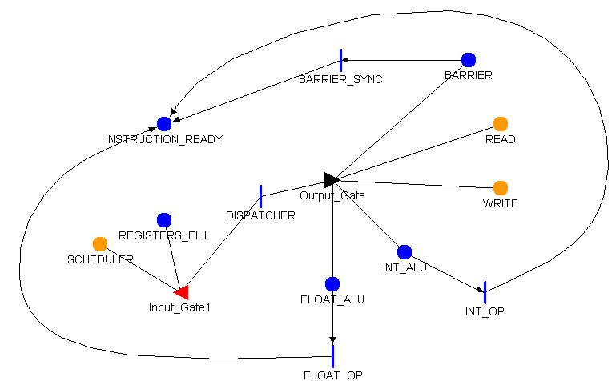
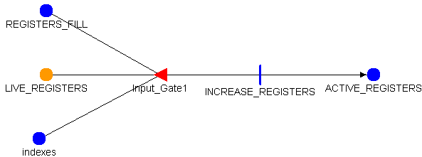
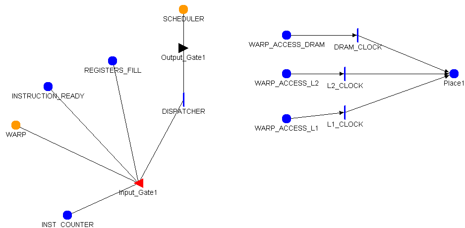

Model: DRAM_nofail
| Place Names | Initial Markings |
|---|---|
| INSTRUCTION_READY | |
| READ_DRAM | |
| WRITE_DRAM | |
| Instantaneous Activities Without Cases: |
|---|
| PERFORM_READ |
| PERFORM_WRITE |
Model: EXEC_UNIT_nofail

| Place Names | Initial Markings |
|---|---|
| BARRIER | |
| FLOAT_ALU | |
| INSTRUCTION_READY | |
| INT_ALU | |
| READ | |
| REGISTERS_FILL | |
| SCHEDULER | |
| WRITE | |
| Instantaneous Activities Without Cases: |
|---|
| BARRIER_SYNC |
| DISPATCHER |
| FLOAT_OP |
| INT_OP |
| Input Gate: | Input_Gate1 |
|---|---|
| | SCHEDULER->Mark() > -1 && REGISTERS_FILL->Mark() == 0 |
| | INSTRUCTION_READY->Mark() = 0; |
| Output Gate: | Output_Gate |
|---|---|
| |
switch( SCHEDULER->Mark() ) {
case 0:
READ->Mark() = SCHEDULER->Mark();
break;
case 1:
WRITE->Mark() = SCHEDULER->Mark();
break;
case 2:
READ->Mark() = SCHEDULER->Mark();
break;
case 3:
WRITE->Mark() = SCHEDULER->Mark();
break;
case 4:
INT_ALU->Mark()++;
break;
case 5:
INT_ALU->Mark()++;
break;
case 6:
INT_ALU->Mark()++;
break;
case 7:
INT_ALU->Mark()++;
break;
case 8:
BARRIER->Mark()++;
break;
default:
break;
}
SCHEDULER->Mark() = -1;
|
Model: MEMORY
| Place Names | Initial Markings |
|---|---|
| READ | |
| READ_DRAM | |
| READ_GLOBAL | |
| READ_L1 | |
| READ_L2 | |
| READ_LOCAL | |
| READ_REGISTER_FILE | |
| WARP_ACCESS_DRAM | |
| WARP_ACCESS_L1 | |
| WARP_ACCESS_L2 | |
| WRITE | |
| WRITE_DRAM | |
| WRITE_GLOBAL | |
| WRITE_L1 | |
| WRITE_L2 | |
| WRITE_LOCAL | |
| WRITE_REGISTER_FILE | |
| Instantaneous Activity: | GLOBAL_READ_FROM |
|---|---|
| | case 1return global_read_l1;case 2 return global_read_l2;case 3 return global_read_dram; |
| Instantaneous Activity: | GLOBAL_WRITE_TO |
|---|---|
| | case 1return global_write_l1;case 2 return global_write_l2;case 3 return global_write_dram; |
| Instantaneous Activity: | LOCAL_READ_FROM |
|---|---|
| | case 1return local_read_l1;case 2 return local_read_l2;case 3 return local_read_dram; |
| Instantaneous Activity: | LOCAL_WRITE_TO |
|---|---|
| | case 1return local_write_l1;case 2 return local_write_l2;case 3 return local_write_dram; |
| Instantaneous Activities Without Cases: |
|---|
| PERFORM_READ |
| PERFORM_WRITE |
| Input Gate: | Input_Gate1 |
|---|---|
| | READ->Mark() > -1 |
| | WRITE_LOCAL->Mark()--; WRITE_LOCAL->Mark()++; |
| Input Gate: | Input_Gate2 |
|---|---|
| | WRITE->Mark() > -1 |
| | WRITE_GLOBAL->Mark()++; WRITE_GLOBAL->Mark()--; |
| Output Gate: | Output_Gate1 |
|---|---|
| | WARP_ACCESS_L1->Mark() += nwarps; |
| Output Gate: | Output_Gate2 |
|---|---|
| | WARP_ACCESS_L2->Mark() += nwarps; |
| Output Gate: | Output_Gate3 |
|---|---|
| | WARP_ACCESS_DRAM->Mark() += nwarps; |
| Output Gate: | READ_SELECT |
|---|---|
| |
switch (READ->Mark()) {
case 0:
READ_LOCAL->Mark()++;
break;
case 2:
READ_GLOBAL->Mark()++;
break;
case 4:
READ_REGISTER_FILE->Mark()++;
break;
default:
break;
}
READ->Mark() = -1;
|
| Output Gate: | WRITE_SELECT |
|---|---|
| |
switch (WRITE->Mark()) {
case 1:
WRITE_LOCAL->Mark()++;
break;
case 3:
WRITE_GLOBAL->Mark()++;
break;
case 5:
WRITE_REGISTER_FILE->Mark()++;
break;
deafult:
break;
}
WRITE->Mark() = -1;
|
Model: REGISTER_FILE_nofail

| Custom Initialization Code |
|---|
LIVE_REGISTERS->Index(0)->Mark() = 0;LIVE_REGISTERS->Index(1)->Mark() = 0;LIVE_REGISTERS->Index(2)->Mark() = 0;LIVE_REGISTERS->Index(3)->Mark() = 0;LIVE_REGISTERS->Index(4)->Mark() = 0;LIVE_REGISTERS->Index(5)->Mark() = 1;LIVE_REGISTERS->Index(6)->Mark() = 1;LIVE_REGISTERS->Index(7)->Mark() = 1;LIVE_REGISTERS->Index(8)->Mark() = 1;LIVE_REGISTERS->Index(9)->Mark() = 0;LIVE_REGISTERS->Index(10)->Mark() = 0;LIVE_REGISTERS->Index(11)->Mark() = 0;LIVE_REGISTERS->Index(12)->Mark() = 1;LIVE_REGISTERS->Index(13)->Mark() = -2;LIVE_REGISTERS->Index(14)->Mark() = 1;LIVE_REGISTERS->Index(15)->Mark() = -1;LIVE_REGISTERS->Index(16)->Mark() = 1;LIVE_REGISTERS->Index(17)->Mark() = 1;LIVE_REGISTERS->Index(18)->Mark() = 1;LIVE_REGISTERS->Index(19)->Mark() = 1;LIVE_REGISTERS->Index(20)->Mark() = 0;LIVE_REGISTERS->Index(21)->Mark() = 1;LIVE_REGISTERS->Index(22)->Mark() = -3;LIVE_REGISTERS->Index(23)->Mark() = 2;LIVE_REGISTERS->Index(24)->Mark() = 1;LIVE_REGISTERS->Index(25)->Mark() = 1;LIVE_REGISTERS->Index(26)->Mark() = 0;LIVE_REGISTERS->Index(27)->Mark() = 0;LIVE_REGISTERS->Index(28)->Mark() = 1;LIVE_REGISTERS->Index(29)->Mark() = 1;LIVE_REGISTERS->Index(30)->Mark() = 0;LIVE_REGISTERS->Index(31)->Mark() = 0;LIVE_REGISTERS->Index(32)->Mark() = 0;LIVE_REGISTERS->Index(33)->Mark() = 0;LIVE_REGISTERS->Index(34)->Mark() = 0;LIVE_REGISTERS->Index(35)->Mark() = 0;LIVE_REGISTERS->Index(36)->Mark() = 1;LIVE_REGISTERS->Index(37)->Mark() = 1;LIVE_REGISTERS->Index(38)->Mark() = 0;LIVE_REGISTERS->Index(39)->Mark() = 0;LIVE_REGISTERS->Index(40)->Mark() = 0;LIVE_REGISTERS->Index(41)->Mark() = 0;LIVE_REGISTERS->Index(42)->Mark() = 0;LIVE_REGISTERS->Index(43)->Mark() = 0;LIVE_REGISTERS->Index(44)->Mark() = 0;LIVE_REGISTERS->Index(45)->Mark() = 0;LIVE_REGISTERS->Index(46)->Mark() = 0;LIVE_REGISTERS->Index(47)->Mark() = 0;LIVE_REGISTERS->Index(48)->Mark() = 0;LIVE_REGISTERS->Index(49)->Mark() = 0;LIVE_REGISTERS->Index(50)->Mark() = 0;LIVE_REGISTERS->Index(51)->Mark() = 0;LIVE_REGISTERS->Index(52)->Mark() = 0;LIVE_REGISTERS->Index(53)->Mark() = 0;LIVE_REGISTERS->Index(54)->Mark() = 0;LIVE_REGISTERS->Index(55)->Mark() = 0;LIVE_REGISTERS->Index(56)->Mark() = 0;LIVE_REGISTERS->Index(57)->Mark() = 0;LIVE_REGISTERS->Index(58)->Mark() = 0;LIVE_REGISTERS->Index(59)->Mark() = 0;LIVE_REGISTERS->Index(60)->Mark() = 0;LIVE_REGISTERS->Index(61)->Mark() = 0;LIVE_REGISTERS->Index(62)->Mark() = 0;LIVE_REGISTERS->Index(63)->Mark() = 1;LIVE_REGISTERS->Index(64)->Mark() = 1;LIVE_REGISTERS->Index(65)->Mark() = 0;LIVE_REGISTERS->Index(66)->Mark() = 0;LIVE_REGISTERS->Index(67)->Mark() = 0;LIVE_REGISTERS->Index(68)->Mark() = 0;LIVE_REGISTERS->Index(69)->Mark() = 0;LIVE_REGISTERS->Index(70)->Mark() = 0;LIVE_REGISTERS->Index(71)->Mark() = 0;LIVE_REGISTERS->Index(72)->Mark() = 0;LIVE_REGISTERS->Index(73)->Mark() = 0;LIVE_REGISTERS->Index(74)->Mark() = 0;LIVE_REGISTERS->Index(75)->Mark() = 0;LIVE_REGISTERS->Index(76)->Mark() = 0;LIVE_REGISTERS->Index(77)->Mark() = 0;LIVE_REGISTERS->Index(78)->Mark() = 1;LIVE_REGISTERS->Index(79)->Mark() = 0;LIVE_REGISTERS->Index(80)->Mark() = 0;LIVE_REGISTERS->Index(81)->Mark() = 0;LIVE_REGISTERS->Index(82)->Mark() = 0;LIVE_REGISTERS->Index(83)->Mark() = 0;LIVE_REGISTERS->Index(84)->Mark() = 0;LIVE_REGISTERS->Index(85)->Mark() = 0;LIVE_REGISTERS->Index(86)->Mark() = 0;LIVE_REGISTERS->Index(87)->Mark() = 0;LIVE_REGISTERS->Index(88)->Mark() = 0;LIVE_REGISTERS->Index(89)->Mark() = 0;LIVE_REGISTERS->Index(90)->Mark() = 0;LIVE_REGISTERS->Index(91)->Mark() = 0;LIVE_REGISTERS->Index(92)->Mark() = 0;LIVE_REGISTERS->Index(93)->Mark() = 0;LIVE_REGISTERS->Index(94)->Mark() = 0;LIVE_REGISTERS->Index(95)->Mark() = 0;LIVE_REGISTERS->Index(96)->Mark() = 0;LIVE_REGISTERS->Index(97)->Mark() = 0;LIVE_REGISTERS->Index(98)->Mark() = 0;LIVE_REGISTERS->Index(99)->Mark() = 0;LIVE_REGISTERS->Index(100)->Mark() = 0;LIVE_REGISTERS->Index(101)->Mark() = 0;LIVE_REGISTERS->Index(102)->Mark() = 0;LIVE_REGISTERS->Index(103)->Mark() = 0;LIVE_REGISTERS->Index(104)->Mark() = 0;LIVE_REGISTERS->Index(105)->Mark() = 0;LIVE_REGISTERS->Index(106)->Mark() = 0;LIVE_REGISTERS->Index(107)->Mark() = 0;LIVE_REGISTERS->Index(108)->Mark() = 0;LIVE_REGISTERS->Index(109)->Mark() = 0;LIVE_REGISTERS->Index(110)->Mark() = 0;LIVE_REGISTERS->Index(111)->Mark() = 0;LIVE_REGISTERS->Index(112)->Mark() = 0;LIVE_REGISTERS->Index(113)->Mark() = 0;LIVE_REGISTERS->Index(114)->Mark() = 0;LIVE_REGISTERS->Index(115)->Mark() = 0;LIVE_REGISTERS->Index(116)->Mark() = 0;LIVE_REGISTERS->Index(117)->Mark() = 0;LIVE_REGISTERS->Index(118)->Mark() = 0;LIVE_REGISTERS->Index(119)->Mark() = 0;LIVE_REGISTERS->Index(120)->Mark() = 0;LIVE_REGISTERS->Index(121)->Mark() = 0;LIVE_REGISTERS->Index(122)->Mark() = 0;LIVE_REGISTERS->Index(123)->Mark() = 0;LIVE_REGISTERS->Index(124)->Mark() = 0;LIVE_REGISTERS->Index(125)->Mark() = 0;LIVE_REGISTERS->Index(126)->Mark() = 0;LIVE_REGISTERS->Index(127)->Mark() = 0;LIVE_REGISTERS->Index(128)->Mark() = 0;LIVE_REGISTERS->Index(129)->Mark() = 0;LIVE_REGISTERS->Index(130)->Mark() = 0;LIVE_REGISTERS->Index(131)->Mark() = 0;LIVE_REGISTERS->Index(132)->Mark() = 0;LIVE_REGISTERS->Index(133)->Mark() = 0;LIVE_REGISTERS->Index(134)->Mark() = 0;LIVE_REGISTERS->Index(135)->Mark() = 0;LIVE_REGISTERS->Index(136)->Mark() = 0;LIVE_REGISTERS->Index(137)->Mark() = 0;LIVE_REGISTERS->Index(138)->Mark() = 0;LIVE_REGISTERS->Index(139)->Mark() = 0;LIVE_REGISTERS->Index(140)->Mark() = 0;LIVE_REGISTERS->Index(141)->Mark() = 0;LIVE_REGISTERS->Index(142)->Mark() = 0;LIVE_REGISTERS->Index(143)->Mark() = 0;LIVE_REGISTERS->Index(144)->Mark() = 0;LIVE_REGISTERS->Index(145)->Mark() = 0;LIVE_REGISTERS->Index(146)->Mark() = 0;LIVE_REGISTERS->Index(147)->Mark() = 0;LIVE_REGISTERS->Index(148)->Mark() = 0;LIVE_REGISTERS->Index(149)->Mark() = 0;LIVE_REGISTERS->Index(150)->Mark() = 0;LIVE_REGISTERS->Index(151)->Mark() = 0;LIVE_REGISTERS->Index(152)->Mark() = 0;LIVE_REGISTERS->Index(153)->Mark() = 0;LIVE_REGISTERS->Index(154)->Mark() = 0;LIVE_REGISTERS->Index(155)->Mark() = 0;LIVE_REGISTERS->Index(156)->Mark() = 0;LIVE_REGISTERS->Index(157)->Mark() = 0;LIVE_REGISTERS->Index(158)->Mark() = 0;LIVE_REGISTERS->Index(159)->Mark() = 0;LIVE_REGISTERS->Index(160)->Mark() = 0;LIVE_REGISTERS->Index(161)->Mark() = 0;LIVE_REGISTERS->Index(162)->Mark() = 0;LIVE_REGISTERS->Index(163)->Mark() = 0;LIVE_REGISTERS->Index(164)->Mark() = 0;LIVE_REGISTERS->Index(165)->Mark() = 0;LIVE_REGISTERS->Index(166)->Mark() = 0;LIVE_REGISTERS->Index(167)->Mark() = 0;LIVE_REGISTERS->Index(168)->Mark() = -2;LIVE_REGISTERS->Index(169)->Mark() = 0;LIVE_REGISTERS->Index(170)->Mark() = -1;LIVE_REGISTERS->Index(171)->Mark() = -1;LIVE_REGISTERS->Index(172)->Mark() = -2;LIVE_REGISTERS->Index(173)->Mark() = 0;LIVE_REGISTERS->Index(174)->Mark() = 0;LIVE_REGISTERS->Index(175)->Mark() = 0;LIVE_REGISTERS->Index(176)->Mark() = 0;LIVE_REGISTERS->Index(177)->Mark() = 0;LIVE_REGISTERS->Index(178)->Mark() = 0;LIVE_REGISTERS->Index(179)->Mark() = 0;LIVE_REGISTERS->Index(180)->Mark() = 0;LIVE_REGISTERS->Index(181)->Mark() = 0;LIVE_REGISTERS->Index(182)->Mark() = 0;LIVE_REGISTERS->Index(183)->Mark() = 0;LIVE_REGISTERS->Index(184)->Mark() = 0;LIVE_REGISTERS->Index(185)->Mark() = 0;LIVE_REGISTERS->Index(186)->Mark() = 0;LIVE_REGISTERS->Index(187)->Mark() = 0;LIVE_REGISTERS->Index(188)->Mark() = 0;LIVE_REGISTERS->Index(189)->Mark() = 0;LIVE_REGISTERS->Index(190)->Mark() = 0;LIVE_REGISTERS->Index(191)->Mark() = 0;LIVE_REGISTERS->Index(192)->Mark() = 0;LIVE_REGISTERS->Index(193)->Mark() = 0;LIVE_REGISTERS->Index(194)->Mark() = 0;LIVE_REGISTERS->Index(195)->Mark() = 0;LIVE_REGISTERS->Index(196)->Mark() = 0;LIVE_REGISTERS->Index(197)->Mark() = 0;LIVE_REGISTERS->Index(198)->Mark() = 0;LIVE_REGISTERS->Index(199)->Mark() = 0;LIVE_REGISTERS->Index(200)->Mark() = 0;LIVE_REGISTERS->Index(201)->Mark() = 0;LIVE_REGISTERS->Index(202)->Mark() = 0;LIVE_REGISTERS->Index(203)->Mark() = 0;LIVE_REGISTERS->Index(204)->Mark() = 0;LIVE_REGISTERS->Index(205)->Mark() = 0;LIVE_REGISTERS->Index(206)->Mark() = 0;LIVE_REGISTERS->Index(207)->Mark() = 0;LIVE_REGISTERS->Index(208)->Mark() = -2;LIVE_REGISTERS->Index(209)->Mark() = 0;LIVE_REGISTERS->Index(210)->Mark() = 0;LIVE_REGISTERS->Index(211)->Mark() = 0;LIVE_REGISTERS->Index(212)->Mark() = 0;LIVE_REGISTERS->Index(213)->Mark() = 0;LIVE_REGISTERS->Index(214)->Mark() = -2;LIVE_REGISTERS->Index(215)->Mark() = 0;LIVE_REGISTERS->Index(216)->Mark() = 0;LIVE_REGISTERS->Index(217)->Mark() = 0;LIVE_REGISTERS->Index(218)->Mark() = 0;LIVE_REGISTERS->Index(219)->Mark() = -1;LIVE_REGISTERS->Index(220)->Mark() = -1;LIVE_REGISTERS->Index(221)->Mark() = -1;LIVE_REGISTERS->Index(222)->Mark() = 0;LIVE_REGISTERS->Index(223)->Mark() = -1;LIVE_REGISTERS->Index(224)->Mark() = -3;LIVE_REGISTERS->Index(225)->Mark() = -2;LIVE_REGISTERS->Index(226)->Mark() = 0;LIVE_REGISTERS->Index(227)->Mark() = -3;LIVE_REGISTERS->Index(228)->Mark() = 0;LIVE_REGISTERS->Index(229)->Mark() = 0;LIVE_REGISTERS->Index(230)->Mark() = 0;LIVE_REGISTERS->Index(231)->Mark() = 0;LIVE_REGISTERS->Index(232)->Mark() = 0;LIVE_REGISTERS->Index(233)->Mark() = 0;LIVE_REGISTERS->Index(234)->Mark() = 0;LIVE_REGISTERS->Index(235)->Mark() = 1;LIVE_REGISTERS->Index(236)->Mark() = 1;LIVE_REGISTERS->Index(237)->Mark() = 1;LIVE_REGISTERS->Index(238)->Mark() = 1;LIVE_REGISTERS->Index(239)->Mark() = 0;LIVE_REGISTERS->Index(240)->Mark() = 0;LIVE_REGISTERS->Index(241)->Mark() = 0;LIVE_REGISTERS->Index(242)->Mark() = 1;LIVE_REGISTERS->Index(243)->Mark() = -2;LIVE_REGISTERS->Index(244)->Mark() = 1;LIVE_REGISTERS->Index(245)->Mark() = -1;LIVE_REGISTERS->Index(246)->Mark() = 1;LIVE_REGISTERS->Index(247)->Mark() = 1;LIVE_REGISTERS->Index(248)->Mark() = 1;LIVE_REGISTERS->Index(249)->Mark() = 1;LIVE_REGISTERS->Index(250)->Mark() = 0;LIVE_REGISTERS->Index(251)->Mark() = 1;LIVE_REGISTERS->Index(252)->Mark() = -3;LIVE_REGISTERS->Index(253)->Mark() = 2;LIVE_REGISTERS->Index(254)->Mark() = 1;LIVE_REGISTERS->Index(255)->Mark() = 1;LIVE_REGISTERS->Index(256)->Mark() = 0;LIVE_REGISTERS->Index(257)->Mark() = 0;LIVE_REGISTERS->Index(258)->Mark() = 1;LIVE_REGISTERS->Index(259)->Mark() = 1;LIVE_REGISTERS->Index(260)->Mark() = 0;LIVE_REGISTERS->Index(261)->Mark() = 0;LIVE_REGISTERS->Index(262)->Mark() = 0;LIVE_REGISTERS->Index(263)->Mark() = 0;LIVE_REGISTERS->Index(264)->Mark() = 0;LIVE_REGISTERS->Index(265)->Mark() = 0;LIVE_REGISTERS->Index(266)->Mark() = 1;LIVE_REGISTERS->Index(267)->Mark() = 1;LIVE_REGISTERS->Index(268)->Mark() = 0;LIVE_REGISTERS->Index(269)->Mark() = 0;LIVE_REGISTERS->Index(270)->Mark() = 0;LIVE_REGISTERS->Index(271)->Mark() = 0;LIVE_REGISTERS->Index(272)->Mark() = 0;LIVE_REGISTERS->Index(273)->Mark() = 0;LIVE_REGISTERS->Index(274)->Mark() = 0;LIVE_REGISTERS->Index(275)->Mark() = 0;LIVE_REGISTERS->Index(276)->Mark() = 0;LIVE_REGISTERS->Index(277)->Mark() = 0;LIVE_REGISTERS->Index(278)->Mark() = 0;LIVE_REGISTERS->Index(279)->Mark() = 0;LIVE_REGISTERS->Index(280)->Mark() = 0;LIVE_REGISTERS->Index(281)->Mark() = 0;LIVE_REGISTERS->Index(282)->Mark() = 0;LIVE_REGISTERS->Index(283)->Mark() = 0;LIVE_REGISTERS->Index(284)->Mark() = 0;LIVE_REGISTERS->Index(285)->Mark() = 0;LIVE_REGISTERS->Index(286)->Mark() = 0;LIVE_REGISTERS->Index(287)->Mark() = 0;LIVE_REGISTERS->Index(288)->Mark() = 0;LIVE_REGISTERS->Index(289)->Mark() = 0;LIVE_REGISTERS->Index(290)->Mark() = 0;LIVE_REGISTERS->Index(291)->Mark() = 0;LIVE_REGISTERS->Index(292)->Mark() = 0;LIVE_REGISTERS->Index(293)->Mark() = 1;LIVE_REGISTERS->Index(294)->Mark() = 1;LIVE_REGISTERS->Index(295)->Mark() = 0;LIVE_REGISTERS->Index(296)->Mark() = 0;LIVE_REGISTERS->Index(297)->Mark() = 0;LIVE_REGISTERS->Index(298)->Mark() = 0;LIVE_REGISTERS->Index(299)->Mark() = 0;LIVE_REGISTERS->Index(300)->Mark() = 0;LIVE_REGISTERS->Index(301)->Mark() = 0;LIVE_REGISTERS->Index(302)->Mark() = 0;LIVE_REGISTERS->Index(303)->Mark() = 0;LIVE_REGISTERS->Index(304)->Mark() = 0;LIVE_REGISTERS->Index(305)->Mark() = 0;LIVE_REGISTERS->Index(306)->Mark() = 0;LIVE_REGISTERS->Index(307)->Mark() = 0;LIVE_REGISTERS->Index(308)->Mark() = 1;LIVE_REGISTERS->Index(309)->Mark() = 0;LIVE_REGISTERS->Index(310)->Mark() = 0;LIVE_REGISTERS->Index(311)->Mark() = 0;LIVE_REGISTERS->Index(312)->Mark() = 0;LIVE_REGISTERS->Index(313)->Mark() = 0;LIVE_REGISTERS->Index(314)->Mark() = 0;LIVE_REGISTERS->Index(315)->Mark() = 0;LIVE_REGISTERS->Index(316)->Mark() = 0;LIVE_REGISTERS->Index(317)->Mark() = 0;LIVE_REGISTERS->Index(318)->Mark() = 0;LIVE_REGISTERS->Index(319)->Mark() = 0;LIVE_REGISTERS->Index(320)->Mark() = 0;LIVE_REGISTERS->Index(321)->Mark() = 0;LIVE_REGISTERS->Index(322)->Mark() = 0;LIVE_REGISTERS->Index(323)->Mark() = 0;LIVE_REGISTERS->Index(324)->Mark() = 0;LIVE_REGISTERS->Index(325)->Mark() = 0;LIVE_REGISTERS->Index(326)->Mark() = 0;LIVE_REGISTERS->Index(327)->Mark() = 0;LIVE_REGISTERS->Index(328)->Mark() = 0;LIVE_REGISTERS->Index(329)->Mark() = 0;LIVE_REGISTERS->Index(330)->Mark() = 0;LIVE_REGISTERS->Index(331)->Mark() = 0;LIVE_REGISTERS->Index(332)->Mark() = 0;LIVE_REGISTERS->Index(333)->Mark() = 0;LIVE_REGISTERS->Index(334)->Mark() = 0;LIVE_REGISTERS->Index(335)->Mark() = 0;LIVE_REGISTERS->Index(336)->Mark() = 0;LIVE_REGISTERS->Index(337)->Mark() = 0;LIVE_REGISTERS->Index(338)->Mark() = 0;LIVE_REGISTERS->Index(339)->Mark() = 0;LIVE_REGISTERS->Index(340)->Mark() = 0;LIVE_REGISTERS->Index(341)->Mark() = 0;LIVE_REGISTERS->Index(342)->Mark() = 0;LIVE_REGISTERS->Index(343)->Mark() = 0;LIVE_REGISTERS->Index(344)->Mark() = 0;LIVE_REGISTERS->Index(345)->Mark() = 0;LIVE_REGISTERS->Index(346)->Mark() = 0;LIVE_REGISTERS->Index(347)->Mark() = 0;LIVE_REGISTERS->Index(348)->Mark() = 0;LIVE_REGISTERS->Index(349)->Mark() = 0;LIVE_REGISTERS->Index(350)->Mark() = 0;LIVE_REGISTERS->Index(351)->Mark() = 0;LIVE_REGISTERS->Index(352)->Mark() = 0;LIVE_REGISTERS->Index(353)->Mark() = 0;LIVE_REGISTERS->Index(354)->Mark() = 0;LIVE_REGISTERS->Index(355)->Mark() = 0;LIVE_REGISTERS->Index(356)->Mark() = 0;LIVE_REGISTERS->Index(357)->Mark() = 0;LIVE_REGISTERS->Index(358)->Mark() = 0;LIVE_REGISTERS->Index(359)->Mark() = 0;LIVE_REGISTERS->Index(360)->Mark() = 0;LIVE_REGISTERS->Index(361)->Mark() = 0;LIVE_REGISTERS->Index(362)->Mark() = 0;LIVE_REGISTERS->Index(363)->Mark() = 0;LIVE_REGISTERS->Index(364)->Mark() = 0;LIVE_REGISTERS->Index(365)->Mark() = 0;LIVE_REGISTERS->Index(366)->Mark() = 0;LIVE_REGISTERS->Index(367)->Mark() = 0;LIVE_REGISTERS->Index(368)->Mark() = 0;LIVE_REGISTERS->Index(369)->Mark() = 0;LIVE_REGISTERS->Index(370)->Mark() = 0;LIVE_REGISTERS->Index(371)->Mark() = 0;LIVE_REGISTERS->Index(372)->Mark() = 0;LIVE_REGISTERS->Index(373)->Mark() = 0;LIVE_REGISTERS->Index(374)->Mark() = 0;LIVE_REGISTERS->Index(375)->Mark() = 0;LIVE_REGISTERS->Index(376)->Mark() = 0;LIVE_REGISTERS->Index(377)->Mark() = 0;LIVE_REGISTERS->Index(378)->Mark() = 0;LIVE_REGISTERS->Index(379)->Mark() = 0;LIVE_REGISTERS->Index(380)->Mark() = 0;LIVE_REGISTERS->Index(381)->Mark() = 0;LIVE_REGISTERS->Index(382)->Mark() = 0;LIVE_REGISTERS->Index(383)->Mark() = 0;LIVE_REGISTERS->Index(384)->Mark() = 0;LIVE_REGISTERS->Index(385)->Mark() = 0;LIVE_REGISTERS->Index(386)->Mark() = 0;LIVE_REGISTERS->Index(387)->Mark() = 0;LIVE_REGISTERS->Index(388)->Mark() = 0;LIVE_REGISTERS->Index(389)->Mark() = 0;LIVE_REGISTERS->Index(390)->Mark() = 0;LIVE_REGISTERS->Index(391)->Mark() = 0;LIVE_REGISTERS->Index(392)->Mark() = 0;LIVE_REGISTERS->Index(393)->Mark() = 0;LIVE_REGISTERS->Index(394)->Mark() = 0;LIVE_REGISTERS->Index(395)->Mark() = 0;LIVE_REGISTERS->Index(396)->Mark() = 0;LIVE_REGISTERS->Index(397)->Mark() = 0;LIVE_REGISTERS->Index(398)->Mark() = -2;LIVE_REGISTERS->Index(399)->Mark() = 0;LIVE_REGISTERS->Index(400)->Mark() = -1;LIVE_REGISTERS->Index(401)->Mark() = -1;LIVE_REGISTERS->Index(402)->Mark() = -2;LIVE_REGISTERS->Index(403)->Mark() = 0;LIVE_REGISTERS->Index(404)->Mark() = 0;LIVE_REGISTERS->Index(405)->Mark() = 0;LIVE_REGISTERS->Index(406)->Mark() = 0;LIVE_REGISTERS->Index(407)->Mark() = 0;LIVE_REGISTERS->Index(408)->Mark() = 0;LIVE_REGISTERS->Index(409)->Mark() = 0;LIVE_REGISTERS->Index(410)->Mark() = 0;LIVE_REGISTERS->Index(411)->Mark() = 0;LIVE_REGISTERS->Index(412)->Mark() = 0;LIVE_REGISTERS->Index(413)->Mark() = 0;LIVE_REGISTERS->Index(414)->Mark() = 0;LIVE_REGISTERS->Index(415)->Mark() = 0;LIVE_REGISTERS->Index(416)->Mark() = 0;LIVE_REGISTERS->Index(417)->Mark() = 0;LIVE_REGISTERS->Index(418)->Mark() = 0;LIVE_REGISTERS->Index(419)->Mark() = 0;LIVE_REGISTERS->Index(420)->Mark() = 0;LIVE_REGISTERS->Index(421)->Mark() = 0;LIVE_REGISTERS->Index(422)->Mark() = 0;LIVE_REGISTERS->Index(423)->Mark() = 0;LIVE_REGISTERS->Index(424)->Mark() = 0;LIVE_REGISTERS->Index(425)->Mark() = 0;LIVE_REGISTERS->Index(426)->Mark() = 0;LIVE_REGISTERS->Index(427)->Mark() = 0;LIVE_REGISTERS->Index(428)->Mark() = 0;LIVE_REGISTERS->Index(429)->Mark() = 0;LIVE_REGISTERS->Index(430)->Mark() = 0;LIVE_REGISTERS->Index(431)->Mark() = 0;LIVE_REGISTERS->Index(432)->Mark() = 0;LIVE_REGISTERS->Index(433)->Mark() = 0;LIVE_REGISTERS->Index(434)->Mark() = 0;LIVE_REGISTERS->Index(435)->Mark() = 0;LIVE_REGISTERS->Index(436)->Mark() = 0;LIVE_REGISTERS->Index(437)->Mark() = 0;LIVE_REGISTERS->Index(438)->Mark() = -2;LIVE_REGISTERS->Index(439)->Mark() = 0;LIVE_REGISTERS->Index(440)->Mark() = 0;LIVE_REGISTERS->Index(441)->Mark() = 0;LIVE_REGISTERS->Index(442)->Mark() = 0;LIVE_REGISTERS->Index(443)->Mark() = 0;LIVE_REGISTERS->Index(444)->Mark() = -2;LIVE_REGISTERS->Index(445)->Mark() = 0;LIVE_REGISTERS->Index(446)->Mark() = 0;LIVE_REGISTERS->Index(447)->Mark() = 0;LIVE_REGISTERS->Index(448)->Mark() = 0;LIVE_REGISTERS->Index(449)->Mark() = -1;LIVE_REGISTERS->Index(450)->Mark() = -1;LIVE_REGISTERS->Index(451)->Mark() = -1;LIVE_REGISTERS->Index(452)->Mark() = 0;LIVE_REGISTERS->Index(453)->Mark() = -1;LIVE_REGISTERS->Index(454)->Mark() = -3;LIVE_REGISTERS->Index(455)->Mark() = -2;LIVE_REGISTERS->Index(456)->Mark() = 0;LIVE_REGISTERS->Index(457)->Mark() = -3;LIVE_REGISTERS->Index(458)->Mark() = 0;LIVE_REGISTERS->Index(459)->Mark() = 0;LIVE_REGISTERS->Index(460)->Mark() = 0;LIVE_REGISTERS->Index(461)->Mark() = 0;LIVE_REGISTERS->Index(462)->Mark() = 0;LIVE_REGISTERS->Index(463)->Mark() = 0;LIVE_REGISTERS->Index(464)->Mark() = 0;LIVE_REGISTERS->Index(465)->Mark() = 1;LIVE_REGISTERS->Index(466)->Mark() = 1;LIVE_REGISTERS->Index(467)->Mark() = 1;LIVE_REGISTERS->Index(468)->Mark() = 1;LIVE_REGISTERS->Index(469)->Mark() = 0;LIVE_REGISTERS->Index(470)->Mark() = 0;LIVE_REGISTERS->Index(471)->Mark() = 0;LIVE_REGISTERS->Index(472)->Mark() = 1;LIVE_REGISTERS->Index(473)->Mark() = -2;LIVE_REGISTERS->Index(474)->Mark() = 1;LIVE_REGISTERS->Index(475)->Mark() = -1;LIVE_REGISTERS->Index(476)->Mark() = 1;LIVE_REGISTERS->Index(477)->Mark() = 1;LIVE_REGISTERS->Index(478)->Mark() = 1;LIVE_REGISTERS->Index(479)->Mark() = 1;LIVE_REGISTERS->Index(480)->Mark() = 0;LIVE_REGISTERS->Index(481)->Mark() = 1;LIVE_REGISTERS->Index(482)->Mark() = -3;LIVE_REGISTERS->Index(483)->Mark() = 2;LIVE_REGISTERS->Index(484)->Mark() = 1;LIVE_REGISTERS->Index(485)->Mark() = 1;LIVE_REGISTERS->Index(486)->Mark() = 0;LIVE_REGISTERS->Index(487)->Mark() = 0;LIVE_REGISTERS->Index(488)->Mark() = 1;LIVE_REGISTERS->Index(489)->Mark() = 1;LIVE_REGISTERS->Index(490)->Mark() = 0;LIVE_REGISTERS->Index(491)->Mark() = 0;LIVE_REGISTERS->Index(492)->Mark() = 0;LIVE_REGISTERS->Index(493)->Mark() = 0;LIVE_REGISTERS->Index(494)->Mark() = 0;LIVE_REGISTERS->Index(495)->Mark() = 0;LIVE_REGISTERS->Index(496)->Mark() = 1;LIVE_REGISTERS->Index(497)->Mark() = 1;LIVE_REGISTERS->Index(498)->Mark() = 0;LIVE_REGISTERS->Index(499)->Mark() = 0;LIVE_REGISTERS->Index(500)->Mark() = 0;LIVE_REGISTERS->Index(501)->Mark() = 0;LIVE_REGISTERS->Index(502)->Mark() = 0;LIVE_REGISTERS->Index(503)->Mark() = 0;LIVE_REGISTERS->Index(504)->Mark() = 0;LIVE_REGISTERS->Index(505)->Mark() = 0;LIVE_REGISTERS->Index(506)->Mark() = 0;LIVE_REGISTERS->Index(507)->Mark() = 0;LIVE_REGISTERS->Index(508)->Mark() = 0;LIVE_REGISTERS->Index(509)->Mark() = 0;LIVE_REGISTERS->Index(510)->Mark() = 0;LIVE_REGISTERS->Index(511)->Mark() = 0;LIVE_REGISTERS->Index(512)->Mark() = 0;LIVE_REGISTERS->Index(513)->Mark() = 0;LIVE_REGISTERS->Index(514)->Mark() = 0;LIVE_REGISTERS->Index(515)->Mark() = 0;LIVE_REGISTERS->Index(516)->Mark() = 0;LIVE_REGISTERS->Index(517)->Mark() = 0;LIVE_REGISTERS->Index(518)->Mark() = 0;LIVE_REGISTERS->Index(519)->Mark() = 0;LIVE_REGISTERS->Index(520)->Mark() = 0;LIVE_REGISTERS->Index(521)->Mark() = 0;LIVE_REGISTERS->Index(522)->Mark() = 0;LIVE_REGISTERS->Index(523)->Mark() = 1;LIVE_REGISTERS->Index(524)->Mark() = 1;LIVE_REGISTERS->Index(525)->Mark() = 0;LIVE_REGISTERS->Index(526)->Mark() = 0;LIVE_REGISTERS->Index(527)->Mark() = 0;LIVE_REGISTERS->Index(528)->Mark() = 0;LIVE_REGISTERS->Index(529)->Mark() = 0;LIVE_REGISTERS->Index(530)->Mark() = 0;LIVE_REGISTERS->Index(531)->Mark() = 0;LIVE_REGISTERS->Index(532)->Mark() = 0;LIVE_REGISTERS->Index(533)->Mark() = 0;LIVE_REGISTERS->Index(534)->Mark() = 0;LIVE_REGISTERS->Index(535)->Mark() = 0;LIVE_REGISTERS->Index(536)->Mark() = 0;LIVE_REGISTERS->Index(537)->Mark() = 0;LIVE_REGISTERS->Index(538)->Mark() = 1;LIVE_REGISTERS->Index(539)->Mark() = 0;LIVE_REGISTERS->Index(540)->Mark() = 0;LIVE_REGISTERS->Index(541)->Mark() = 0;LIVE_REGISTERS->Index(542)->Mark() = 0;LIVE_REGISTERS->Index(543)->Mark() = 0;LIVE_REGISTERS->Index(544)->Mark() = 0;LIVE_REGISTERS->Index(545)->Mark() = 0;LIVE_REGISTERS->Index(546)->Mark() = 0;LIVE_REGISTERS->Index(547)->Mark() = 0;LIVE_REGISTERS->Index(548)->Mark() = 0;LIVE_REGISTERS->Index(549)->Mark() = 0;LIVE_REGISTERS->Index(550)->Mark() = 0;LIVE_REGISTERS->Index(551)->Mark() = 0;LIVE_REGISTERS->Index(552)->Mark() = 0;LIVE_REGISTERS->Index(553)->Mark() = 0;LIVE_REGISTERS->Index(554)->Mark() = 0;LIVE_REGISTERS->Index(555)->Mark() = 0;LIVE_REGISTERS->Index(556)->Mark() = 0;LIVE_REGISTERS->Index(557)->Mark() = 0;LIVE_REGISTERS->Index(558)->Mark() = 0;LIVE_REGISTERS->Index(559)->Mark() = 0;LIVE_REGISTERS->Index(560)->Mark() = 0;LIVE_REGISTERS->Index(561)->Mark() = 0;LIVE_REGISTERS->Index(562)->Mark() = 0;LIVE_REGISTERS->Index(563)->Mark() = 0;LIVE_REGISTERS->Index(564)->Mark() = 0;LIVE_REGISTERS->Index(565)->Mark() = 0;LIVE_REGISTERS->Index(566)->Mark() = 0;LIVE_REGISTERS->Index(567)->Mark() = 0;LIVE_REGISTERS->Index(568)->Mark() = 0;LIVE_REGISTERS->Index(569)->Mark() = 0;LIVE_REGISTERS->Index(570)->Mark() = 0;LIVE_REGISTERS->Index(571)->Mark() = 0;LIVE_REGISTERS->Index(572)->Mark() = 0;LIVE_REGISTERS->Index(573)->Mark() = 0;LIVE_REGISTERS->Index(574)->Mark() = 0;LIVE_REGISTERS->Index(575)->Mark() = 0;LIVE_REGISTERS->Index(576)->Mark() = 0;LIVE_REGISTERS->Index(577)->Mark() = 0;LIVE_REGISTERS->Index(578)->Mark() = 0;LIVE_REGISTERS->Index(579)->Mark() = 0;LIVE_REGISTERS->Index(580)->Mark() = 0;LIVE_REGISTERS->Index(581)->Mark() = 0;LIVE_REGISTERS->Index(582)->Mark() = 0;LIVE_REGISTERS->Index(583)->Mark() = 0;LIVE_REGISTERS->Index(584)->Mark() = 0;LIVE_REGISTERS->Index(585)->Mark() = 0;LIVE_REGISTERS->Index(586)->Mark() = 0;LIVE_REGISTERS->Index(587)->Mark() = 0;LIVE_REGISTERS->Index(588)->Mark() = 0;LIVE_REGISTERS->Index(589)->Mark() = 0;LIVE_REGISTERS->Index(590)->Mark() = 0;LIVE_REGISTERS->Index(591)->Mark() = 0;LIVE_REGISTERS->Index(592)->Mark() = 0;LIVE_REGISTERS->Index(593)->Mark() = 0;LIVE_REGISTERS->Index(594)->Mark() = 0;LIVE_REGISTERS->Index(595)->Mark() = 0;LIVE_REGISTERS->Index(596)->Mark() = 0;LIVE_REGISTERS->Index(597)->Mark() = 0;LIVE_REGISTERS->Index(598)->Mark() = 0;LIVE_REGISTERS->Index(599)->Mark() = 0;LIVE_REGISTERS->Index(600)->Mark() = 0;LIVE_REGISTERS->Index(601)->Mark() = 0;LIVE_REGISTERS->Index(602)->Mark() = 0;LIVE_REGISTERS->Index(603)->Mark() = 0;LIVE_REGISTERS->Index(604)->Mark() = 0;LIVE_REGISTERS->Index(605)->Mark() = 0;LIVE_REGISTERS->Index(606)->Mark() = 0;LIVE_REGISTERS->Index(607)->Mark() = 0;LIVE_REGISTERS->Index(608)->Mark() = 0;LIVE_REGISTERS->Index(609)->Mark() = 0;LIVE_REGISTERS->Index(610)->Mark() = 0;LIVE_REGISTERS->Index(611)->Mark() = 0;LIVE_REGISTERS->Index(612)->Mark() = 0;LIVE_REGISTERS->Index(613)->Mark() = 0;LIVE_REGISTERS->Index(614)->Mark() = 0;LIVE_REGISTERS->Index(615)->Mark() = 0;LIVE_REGISTERS->Index(616)->Mark() = 0;LIVE_REGISTERS->Index(617)->Mark() = 0;LIVE_REGISTERS->Index(618)->Mark() = 0;LIVE_REGISTERS->Index(619)->Mark() = 0;LIVE_REGISTERS->Index(620)->Mark() = 0;LIVE_REGISTERS->Index(621)->Mark() = 0;LIVE_REGISTERS->Index(622)->Mark() = 0;LIVE_REGISTERS->Index(623)->Mark() = 0;LIVE_REGISTERS->Index(624)->Mark() = 0;LIVE_REGISTERS->Index(625)->Mark() = 0;LIVE_REGISTERS->Index(626)->Mark() = 0;LIVE_REGISTERS->Index(627)->Mark() = 0;LIVE_REGISTERS->Index(628)->Mark() = -2;LIVE_REGISTERS->Index(629)->Mark() = 0;LIVE_REGISTERS->Index(630)->Mark() = -1;LIVE_REGISTERS->Index(631)->Mark() = -1;LIVE_REGISTERS->Index(632)->Mark() = -2;LIVE_REGISTERS->Index(633)->Mark() = 0;LIVE_REGISTERS->Index(634)->Mark() = 0;LIVE_REGISTERS->Index(635)->Mark() = 0;LIVE_REGISTERS->Index(636)->Mark() = 0;LIVE_REGISTERS->Index(637)->Mark() = 0;LIVE_REGISTERS->Index(638)->Mark() = 0;LIVE_REGISTERS->Index(639)->Mark() = 0;LIVE_REGISTERS->Index(640)->Mark() = 0;LIVE_REGISTERS->Index(641)->Mark() = 0;LIVE_REGISTERS->Index(642)->Mark() = 0;LIVE_REGISTERS->Index(643)->Mark() = 0;LIVE_REGISTERS->Index(644)->Mark() = 0;LIVE_REGISTERS->Index(645)->Mark() = 0;LIVE_REGISTERS->Index(646)->Mark() = 0;LIVE_REGISTERS->Index(647)->Mark() = 0;LIVE_REGISTERS->Index(648)->Mark() = 0;LIVE_REGISTERS->Index(649)->Mark() = 0;LIVE_REGISTERS->Index(650)->Mark() = 0;LIVE_REGISTERS->Index(651)->Mark() = 0;LIVE_REGISTERS->Index(652)->Mark() = 0;LIVE_REGISTERS->Index(653)->Mark() = 0;LIVE_REGISTERS->Index(654)->Mark() = 0;LIVE_REGISTERS->Index(655)->Mark() = 0;LIVE_REGISTERS->Index(656)->Mark() = 0;LIVE_REGISTERS->Index(657)->Mark() = 0;LIVE_REGISTERS->Index(658)->Mark() = 0;LIVE_REGISTERS->Index(659)->Mark() = 0;LIVE_REGISTERS->Index(660)->Mark() = 0;LIVE_REGISTERS->Index(661)->Mark() = 0;LIVE_REGISTERS->Index(662)->Mark() = 0;LIVE_REGISTERS->Index(663)->Mark() = 0;LIVE_REGISTERS->Index(664)->Mark() = 0;LIVE_REGISTERS->Index(665)->Mark() = 0;LIVE_REGISTERS->Index(666)->Mark() = 0;LIVE_REGISTERS->Index(667)->Mark() = 0;LIVE_REGISTERS->Index(668)->Mark() = -2;LIVE_REGISTERS->Index(669)->Mark() = 0;LIVE_REGISTERS->Index(670)->Mark() = 0;LIVE_REGISTERS->Index(671)->Mark() = 0;LIVE_REGISTERS->Index(672)->Mark() = 0;LIVE_REGISTERS->Index(673)->Mark() = 0;LIVE_REGISTERS->Index(674)->Mark() = -2;LIVE_REGISTERS->Index(675)->Mark() = 0;LIVE_REGISTERS->Index(676)->Mark() = 0;LIVE_REGISTERS->Index(677)->Mark() = 0;LIVE_REGISTERS->Index(678)->Mark() = 0;LIVE_REGISTERS->Index(679)->Mark() = -1;LIVE_REGISTERS->Index(680)->Mark() = -1;LIVE_REGISTERS->Index(681)->Mark() = -1;LIVE_REGISTERS->Index(682)->Mark() = 0;LIVE_REGISTERS->Index(683)->Mark() = -1;LIVE_REGISTERS->Index(684)->Mark() = -3;LIVE_REGISTERS->Index(685)->Mark() = -2;LIVE_REGISTERS->Index(686)->Mark() = 0;LIVE_REGISTERS->Index(687)->Mark() = -3;LIVE_REGISTERS->Index(688)->Mark() = 0;LIVE_REGISTERS->Index(689)->Mark() = 0;LIVE_REGISTERS->Index(690)->Mark() = 0;LIVE_REGISTERS->Index(691)->Mark() = 0;LIVE_REGISTERS->Index(692)->Mark() = 0;LIVE_REGISTERS->Index(693)->Mark() = 0;LIVE_REGISTERS->Index(694)->Mark() = 0;LIVE_REGISTERS->Index(695)->Mark() = 1;LIVE_REGISTERS->Index(696)->Mark() = 1;LIVE_REGISTERS->Index(697)->Mark() = 1;LIVE_REGISTERS->Index(698)->Mark() = 1;LIVE_REGISTERS->Index(699)->Mark() = 0;LIVE_REGISTERS->Index(700)->Mark() = 0;LIVE_REGISTERS->Index(701)->Mark() = 0;LIVE_REGISTERS->Index(702)->Mark() = 1;LIVE_REGISTERS->Index(703)->Mark() = -2;LIVE_REGISTERS->Index(704)->Mark() = 1;LIVE_REGISTERS->Index(705)->Mark() = -1;LIVE_REGISTERS->Index(706)->Mark() = 1;LIVE_REGISTERS->Index(707)->Mark() = 1;LIVE_REGISTERS->Index(708)->Mark() = 1;LIVE_REGISTERS->Index(709)->Mark() = 1;LIVE_REGISTERS->Index(710)->Mark() = 0;LIVE_REGISTERS->Index(711)->Mark() = 1;LIVE_REGISTERS->Index(712)->Mark() = -3;LIVE_REGISTERS->Index(713)->Mark() = 2;LIVE_REGISTERS->Index(714)->Mark() = 1;LIVE_REGISTERS->Index(715)->Mark() = 1;LIVE_REGISTERS->Index(716)->Mark() = 0;LIVE_REGISTERS->Index(717)->Mark() = 0;LIVE_REGISTERS->Index(718)->Mark() = 1;LIVE_REGISTERS->Index(719)->Mark() = 1;LIVE_REGISTERS->Index(720)->Mark() = 0;LIVE_REGISTERS->Index(721)->Mark() = 0;LIVE_REGISTERS->Index(722)->Mark() = 0;LIVE_REGISTERS->Index(723)->Mark() = 0;LIVE_REGISTERS->Index(724)->Mark() = 0;LIVE_REGISTERS->Index(725)->Mark() = 0;LIVE_REGISTERS->Index(726)->Mark() = 1;LIVE_REGISTERS->Index(727)->Mark() = 1;LIVE_REGISTERS->Index(728)->Mark() = 0;LIVE_REGISTERS->Index(729)->Mark() = 0;LIVE_REGISTERS->Index(730)->Mark() = 0;LIVE_REGISTERS->Index(731)->Mark() = 0;LIVE_REGISTERS->Index(732)->Mark() = 0;LIVE_REGISTERS->Index(733)->Mark() = 0;LIVE_REGISTERS->Index(734)->Mark() = 0;LIVE_REGISTERS->Index(735)->Mark() = 0;LIVE_REGISTERS->Index(736)->Mark() = 0;LIVE_REGISTERS->Index(737)->Mark() = 0;LIVE_REGISTERS->Index(738)->Mark() = 0;LIVE_REGISTERS->Index(739)->Mark() = 0;LIVE_REGISTERS->Index(740)->Mark() = 0;LIVE_REGISTERS->Index(741)->Mark() = 0;LIVE_REGISTERS->Index(742)->Mark() = 0;LIVE_REGISTERS->Index(743)->Mark() = 0;LIVE_REGISTERS->Index(744)->Mark() = 0;LIVE_REGISTERS->Index(745)->Mark() = 0;LIVE_REGISTERS->Index(746)->Mark() = 0;LIVE_REGISTERS->Index(747)->Mark() = 0;LIVE_REGISTERS->Index(748)->Mark() = 0;LIVE_REGISTERS->Index(749)->Mark() = 0;LIVE_REGISTERS->Index(750)->Mark() = 0;LIVE_REGISTERS->Index(751)->Mark() = 0;LIVE_REGISTERS->Index(752)->Mark() = 0;LIVE_REGISTERS->Index(753)->Mark() = 1;LIVE_REGISTERS->Index(754)->Mark() = 1;LIVE_REGISTERS->Index(755)->Mark() = 0;LIVE_REGISTERS->Index(756)->Mark() = 0;LIVE_REGISTERS->Index(757)->Mark() = 0;LIVE_REGISTERS->Index(758)->Mark() = 0;LIVE_REGISTERS->Index(759)->Mark() = 0;LIVE_REGISTERS->Index(760)->Mark() = 0;LIVE_REGISTERS->Index(761)->Mark() = 0;LIVE_REGISTERS->Index(762)->Mark() = 0;LIVE_REGISTERS->Index(763)->Mark() = 0;LIVE_REGISTERS->Index(764)->Mark() = 0;LIVE_REGISTERS->Index(765)->Mark() = 0;LIVE_REGISTERS->Index(766)->Mark() = 0;LIVE_REGISTERS->Index(767)->Mark() = 0;LIVE_REGISTERS->Index(768)->Mark() = 1;LIVE_REGISTERS->Index(769)->Mark() = 0;LIVE_REGISTERS->Index(770)->Mark() = 0;LIVE_REGISTERS->Index(771)->Mark() = 0;LIVE_REGISTERS->Index(772)->Mark() = 0;LIVE_REGISTERS->Index(773)->Mark() = 0;LIVE_REGISTERS->Index(774)->Mark() = 0;LIVE_REGISTERS->Index(775)->Mark() = 0;LIVE_REGISTERS->Index(776)->Mark() = 0;LIVE_REGISTERS->Index(777)->Mark() = 0;LIVE_REGISTERS->Index(778)->Mark() = 0;LIVE_REGISTERS->Index(779)->Mark() = 0;LIVE_REGISTERS->Index(780)->Mark() = 0;LIVE_REGISTERS->Index(781)->Mark() = 0;LIVE_REGISTERS->Index(782)->Mark() = 0;LIVE_REGISTERS->Index(783)->Mark() = 0;LIVE_REGISTERS->Index(784)->Mark() = 0;LIVE_REGISTERS->Index(785)->Mark() = 0;LIVE_REGISTERS->Index(786)->Mark() = 0;LIVE_REGISTERS->Index(787)->Mark() = 0;LIVE_REGISTERS->Index(788)->Mark() = 0;LIVE_REGISTERS->Index(789)->Mark() = 0;LIVE_REGISTERS->Index(790)->Mark() = 0;LIVE_REGISTERS->Index(791)->Mark() = 0;LIVE_REGISTERS->Index(792)->Mark() = 0;LIVE_REGISTERS->Index(793)->Mark() = 0;LIVE_REGISTERS->Index(794)->Mark() = 0;LIVE_REGISTERS->Index(795)->Mark() = 0;LIVE_REGISTERS->Index(796)->Mark() = 0;LIVE_REGISTERS->Index(797)->Mark() = 0;LIVE_REGISTERS->Index(798)->Mark() = 0;LIVE_REGISTERS->Index(799)->Mark() = 0;LIVE_REGISTERS->Index(800)->Mark() = 0;LIVE_REGISTERS->Index(801)->Mark() = 0;LIVE_REGISTERS->Index(802)->Mark() = 0;LIVE_REGISTERS->Index(803)->Mark() = 0;LIVE_REGISTERS->Index(804)->Mark() = 0;LIVE_REGISTERS->Index(805)->Mark() = 0;LIVE_REGISTERS->Index(806)->Mark() = 0;LIVE_REGISTERS->Index(807)->Mark() = 0;LIVE_REGISTERS->Index(808)->Mark() = 0;LIVE_REGISTERS->Index(809)->Mark() = 0;LIVE_REGISTERS->Index(810)->Mark() = 0;LIVE_REGISTERS->Index(811)->Mark() = 0;LIVE_REGISTERS->Index(812)->Mark() = 0;LIVE_REGISTERS->Index(813)->Mark() = 0;LIVE_REGISTERS->Index(814)->Mark() = 0;LIVE_REGISTERS->Index(815)->Mark() = 0;LIVE_REGISTERS->Index(816)->Mark() = 0;LIVE_REGISTERS->Index(817)->Mark() = 0;LIVE_REGISTERS->Index(818)->Mark() = 0;LIVE_REGISTERS->Index(819)->Mark() = 0;LIVE_REGISTERS->Index(820)->Mark() = 0;LIVE_REGISTERS->Index(821)->Mark() = 0;LIVE_REGISTERS->Index(822)->Mark() = 0;LIVE_REGISTERS->Index(823)->Mark() = 0;LIVE_REGISTERS->Index(824)->Mark() = 0;LIVE_REGISTERS->Index(825)->Mark() = 0;LIVE_REGISTERS->Index(826)->Mark() = 0;LIVE_REGISTERS->Index(827)->Mark() = 0;LIVE_REGISTERS->Index(828)->Mark() = 0;LIVE_REGISTERS->Index(829)->Mark() = 0;LIVE_REGISTERS->Index(830)->Mark() = 0;LIVE_REGISTERS->Index(831)->Mark() = 0;LIVE_REGISTERS->Index(832)->Mark() = 0;LIVE_REGISTERS->Index(833)->Mark() = 0;LIVE_REGISTERS->Index(834)->Mark() = 0;LIVE_REGISTERS->Index(835)->Mark() = 0;LIVE_REGISTERS->Index(836)->Mark() = 0;LIVE_REGISTERS->Index(837)->Mark() = 0;LIVE_REGISTERS->Index(838)->Mark() = 0;LIVE_REGISTERS->Index(839)->Mark() = 0;LIVE_REGISTERS->Index(840)->Mark() = 0;LIVE_REGISTERS->Index(841)->Mark() = 0;LIVE_REGISTERS->Index(842)->Mark() = 0;LIVE_REGISTERS->Index(843)->Mark() = 0;LIVE_REGISTERS->Index(844)->Mark() = 0;LIVE_REGISTERS->Index(845)->Mark() = 0;LIVE_REGISTERS->Index(846)->Mark() = 0;LIVE_REGISTERS->Index(847)->Mark() = 0;LIVE_REGISTERS->Index(848)->Mark() = 0;LIVE_REGISTERS->Index(849)->Mark() = 0;LIVE_REGISTERS->Index(850)->Mark() = 0;LIVE_REGISTERS->Index(851)->Mark() = 0;LIVE_REGISTERS->Index(852)->Mark() = 0;LIVE_REGISTERS->Index(853)->Mark() = 0;LIVE_REGISTERS->Index(854)->Mark() = 0;LIVE_REGISTERS->Index(855)->Mark() = 0;LIVE_REGISTERS->Index(856)->Mark() = 0;LIVE_REGISTERS->Index(857)->Mark() = 0;LIVE_REGISTERS->Index(858)->Mark() = -2;LIVE_REGISTERS->Index(859)->Mark() = 0;LIVE_REGISTERS->Index(860)->Mark() = -1;LIVE_REGISTERS->Index(861)->Mark() = -1;LIVE_REGISTERS->Index(862)->Mark() = -2;LIVE_REGISTERS->Index(863)->Mark() = 0;LIVE_REGISTERS->Index(864)->Mark() = 0;LIVE_REGISTERS->Index(865)->Mark() = 0;LIVE_REGISTERS->Index(866)->Mark() = 0;LIVE_REGISTERS->Index(867)->Mark() = 0;LIVE_REGISTERS->Index(868)->Mark() = 0;LIVE_REGISTERS->Index(869)->Mark() = 0;LIVE_REGISTERS->Index(870)->Mark() = 0;LIVE_REGISTERS->Index(871)->Mark() = 0;LIVE_REGISTERS->Index(872)->Mark() = 0;LIVE_REGISTERS->Index(873)->Mark() = 0;LIVE_REGISTERS->Index(874)->Mark() = 0;LIVE_REGISTERS->Index(875)->Mark() = 0;LIVE_REGISTERS->Index(876)->Mark() = 0;LIVE_REGISTERS->Index(877)->Mark() = 0;LIVE_REGISTERS->Index(878)->Mark() = 0;LIVE_REGISTERS->Index(879)->Mark() = 0;LIVE_REGISTERS->Index(880)->Mark() = 0;LIVE_REGISTERS->Index(881)->Mark() = 0;LIVE_REGISTERS->Index(882)->Mark() = 0;LIVE_REGISTERS->Index(883)->Mark() = 0;LIVE_REGISTERS->Index(884)->Mark() = 0;LIVE_REGISTERS->Index(885)->Mark() = 0;LIVE_REGISTERS->Index(886)->Mark() = 0;LIVE_REGISTERS->Index(887)->Mark() = 0;LIVE_REGISTERS->Index(888)->Mark() = 0;LIVE_REGISTERS->Index(889)->Mark() = 0;LIVE_REGISTERS->Index(890)->Mark() = 0;LIVE_REGISTERS->Index(891)->Mark() = 0;LIVE_REGISTERS->Index(892)->Mark() = 0;LIVE_REGISTERS->Index(893)->Mark() = 0;LIVE_REGISTERS->Index(894)->Mark() = 0;LIVE_REGISTERS->Index(895)->Mark() = 0;LIVE_REGISTERS->Index(896)->Mark() = 0;LIVE_REGISTERS->Index(897)->Mark() = 0;LIVE_REGISTERS->Index(898)->Mark() = -2;LIVE_REGISTERS->Index(899)->Mark() = 0;LIVE_REGISTERS->Index(900)->Mark() = 0;LIVE_REGISTERS->Index(901)->Mark() = 0;LIVE_REGISTERS->Index(902)->Mark() = 0;LIVE_REGISTERS->Index(903)->Mark() = 0;LIVE_REGISTERS->Index(904)->Mark() = -2;LIVE_REGISTERS->Index(905)->Mark() = 0;LIVE_REGISTERS->Index(906)->Mark() = 0;LIVE_REGISTERS->Index(907)->Mark() = 0;LIVE_REGISTERS->Index(908)->Mark() = 0;LIVE_REGISTERS->Index(909)->Mark() = -1;LIVE_REGISTERS->Index(910)->Mark() = -1;LIVE_REGISTERS->Index(911)->Mark() = -1;LIVE_REGISTERS->Index(912)->Mark() = 0;LIVE_REGISTERS->Index(913)->Mark() = -1;LIVE_REGISTERS->Index(914)->Mark() = -3;LIVE_REGISTERS->Index(915)->Mark() = -2;LIVE_REGISTERS->Index(916)->Mark() = 0;LIVE_REGISTERS->Index(917)->Mark() = -3;LIVE_REGISTERS->Index(918)->Mark() = 0;LIVE_REGISTERS->Index(919)->Mark() = 0;LIVE_REGISTERS->Index(920)->Mark() = 0;LIVE_REGISTERS->Index(921)->Mark() = 0;LIVE_REGISTERS->Index(922)->Mark() = 0;LIVE_REGISTERS->Index(923)->Mark() = 0;LIVE_REGISTERS->Index(924)->Mark() = 0;LIVE_REGISTERS->Index(925)->Mark() = 1;LIVE_REGISTERS->Index(926)->Mark() = 1;LIVE_REGISTERS->Index(927)->Mark() = 1;LIVE_REGISTERS->Index(928)->Mark() = 1;LIVE_REGISTERS->Index(929)->Mark() = 0;LIVE_REGISTERS->Index(930)->Mark() = 0;LIVE_REGISTERS->Index(931)->Mark() = 0;LIVE_REGISTERS->Index(932)->Mark() = 1;LIVE_REGISTERS->Index(933)->Mark() = -2;LIVE_REGISTERS->Index(934)->Mark() = 1;LIVE_REGISTERS->Index(935)->Mark() = -1;LIVE_REGISTERS->Index(936)->Mark() = 1;LIVE_REGISTERS->Index(937)->Mark() = 1;LIVE_REGISTERS->Index(938)->Mark() = 1;LIVE_REGISTERS->Index(939)->Mark() = 1;LIVE_REGISTERS->Index(940)->Mark() = 0;LIVE_REGISTERS->Index(941)->Mark() = 1;LIVE_REGISTERS->Index(942)->Mark() = -3;LIVE_REGISTERS->Index(943)->Mark() = 2;LIVE_REGISTERS->Index(944)->Mark() = 1;LIVE_REGISTERS->Index(945)->Mark() = 1;LIVE_REGISTERS->Index(946)->Mark() = 0;LIVE_REGISTERS->Index(947)->Mark() = 0;LIVE_REGISTERS->Index(948)->Mark() = 1;LIVE_REGISTERS->Index(949)->Mark() = 1;LIVE_REGISTERS->Index(950)->Mark() = 0;LIVE_REGISTERS->Index(951)->Mark() = 0;LIVE_REGISTERS->Index(952)->Mark() = 0;LIVE_REGISTERS->Index(953)->Mark() = 0;LIVE_REGISTERS->Index(954)->Mark() = 0;LIVE_REGISTERS->Index(955)->Mark() = 0;LIVE_REGISTERS->Index(956)->Mark() = 1;LIVE_REGISTERS->Index(957)->Mark() = 1;LIVE_REGISTERS->Index(958)->Mark() = 0;LIVE_REGISTERS->Index(959)->Mark() = 0;LIVE_REGISTERS->Index(960)->Mark() = 0;LIVE_REGISTERS->Index(961)->Mark() = 0;LIVE_REGISTERS->Index(962)->Mark() = 0;LIVE_REGISTERS->Index(963)->Mark() = 0;LIVE_REGISTERS->Index(964)->Mark() = 0;LIVE_REGISTERS->Index(965)->Mark() = 0;LIVE_REGISTERS->Index(966)->Mark() = 0;LIVE_REGISTERS->Index(967)->Mark() = 0;LIVE_REGISTERS->Index(968)->Mark() = 0;LIVE_REGISTERS->Index(969)->Mark() = 0;LIVE_REGISTERS->Index(970)->Mark() = 0;LIVE_REGISTERS->Index(971)->Mark() = 0;LIVE_REGISTERS->Index(972)->Mark() = 0;LIVE_REGISTERS->Index(973)->Mark() = 0;LIVE_REGISTERS->Index(974)->Mark() = 0;LIVE_REGISTERS->Index(975)->Mark() = 0;LIVE_REGISTERS->Index(976)->Mark() = 0;LIVE_REGISTERS->Index(977)->Mark() = 0;LIVE_REGISTERS->Index(978)->Mark() = 0;LIVE_REGISTERS->Index(979)->Mark() = 0;LIVE_REGISTERS->Index(980)->Mark() = 0;LIVE_REGISTERS->Index(981)->Mark() = 0;LIVE_REGISTERS->Index(982)->Mark() = 0;LIVE_REGISTERS->Index(983)->Mark() = 1;LIVE_REGISTERS->Index(984)->Mark() = 1;LIVE_REGISTERS->Index(985)->Mark() = 0;LIVE_REGISTERS->Index(986)->Mark() = 0;LIVE_REGISTERS->Index(987)->Mark() = 0;LIVE_REGISTERS->Index(988)->Mark() = 0;LIVE_REGISTERS->Index(989)->Mark() = 0;LIVE_REGISTERS->Index(990)->Mark() = 0;LIVE_REGISTERS->Index(991)->Mark() = 0;LIVE_REGISTERS->Index(992)->Mark() = 0;LIVE_REGISTERS->Index(993)->Mark() = 0;LIVE_REGISTERS->Index(994)->Mark() = 0;LIVE_REGISTERS->Index(995)->Mark() = 0;LIVE_REGISTERS->Index(996)->Mark() = 0;LIVE_REGISTERS->Index(997)->Mark() = 0;LIVE_REGISTERS->Index(998)->Mark() = 1;LIVE_REGISTERS->Index(999)->Mark() = 0;LIVE_REGISTERS->Index(1000)->Mark() = 0;LIVE_REGISTERS->Index(1001)->Mark() = 0;LIVE_REGISTERS->Index(1002)->Mark() = 0;LIVE_REGISTERS->Index(1003)->Mark() = 0;LIVE_REGISTERS->Index(1004)->Mark() = 0;LIVE_REGISTERS->Index(1005)->Mark() = 0;LIVE_REGISTERS->Index(1006)->Mark() = 0;LIVE_REGISTERS->Index(1007)->Mark() = 0;LIVE_REGISTERS->Index(1008)->Mark() = 0;LIVE_REGISTERS->Index(1009)->Mark() = 0;LIVE_REGISTERS->Index(1010)->Mark() = 0;LIVE_REGISTERS->Index(1011)->Mark() = 0;LIVE_REGISTERS->Index(1012)->Mark() = 0;LIVE_REGISTERS->Index(1013)->Mark() = 0;LIVE_REGISTERS->Index(1014)->Mark() = 0;LIVE_REGISTERS->Index(1015)->Mark() = 0;LIVE_REGISTERS->Index(1016)->Mark() = 0;LIVE_REGISTERS->Index(1017)->Mark() = 0;LIVE_REGISTERS->Index(1018)->Mark() = 0;LIVE_REGISTERS->Index(1019)->Mark() = 0;LIVE_REGISTERS->Index(1020)->Mark() = 0;LIVE_REGISTERS->Index(1021)->Mark() = 0;LIVE_REGISTERS->Index(1022)->Mark() = 0;LIVE_REGISTERS->Index(1023)->Mark() = 0;LIVE_REGISTERS->Index(1024)->Mark() = 0;LIVE_REGISTERS->Index(1025)->Mark() = 0;LIVE_REGISTERS->Index(1026)->Mark() = 0;LIVE_REGISTERS->Index(1027)->Mark() = 0;LIVE_REGISTERS->Index(1028)->Mark() = 0;LIVE_REGISTERS->Index(1029)->Mark() = 0;LIVE_REGISTERS->Index(1030)->Mark() = 0;LIVE_REGISTERS->Index(1031)->Mark() = 0;LIVE_REGISTERS->Index(1032)->Mark() = 0;LIVE_REGISTERS->Index(1033)->Mark() = 0;LIVE_REGISTERS->Index(1034)->Mark() = 0;LIVE_REGISTERS->Index(1035)->Mark() = 0;LIVE_REGISTERS->Index(1036)->Mark() = 0;LIVE_REGISTERS->Index(1037)->Mark() = 0;LIVE_REGISTERS->Index(1038)->Mark() = 0;LIVE_REGISTERS->Index(1039)->Mark() = 0;LIVE_REGISTERS->Index(1040)->Mark() = 0;LIVE_REGISTERS->Index(1041)->Mark() = 0;LIVE_REGISTERS->Index(1042)->Mark() = 0;LIVE_REGISTERS->Index(1043)->Mark() = 0;LIVE_REGISTERS->Index(1044)->Mark() = 0;LIVE_REGISTERS->Index(1045)->Mark() = 0;LIVE_REGISTERS->Index(1046)->Mark() = 0;LIVE_REGISTERS->Index(1047)->Mark() = 0;LIVE_REGISTERS->Index(1048)->Mark() = 0;LIVE_REGISTERS->Index(1049)->Mark() = 0;LIVE_REGISTERS->Index(1050)->Mark() = 0;LIVE_REGISTERS->Index(1051)->Mark() = 0;LIVE_REGISTERS->Index(1052)->Mark() = 0;LIVE_REGISTERS->Index(1053)->Mark() = 0;LIVE_REGISTERS->Index(1054)->Mark() = 0;LIVE_REGISTERS->Index(1055)->Mark() = 0;LIVE_REGISTERS->Index(1056)->Mark() = 0;LIVE_REGISTERS->Index(1057)->Mark() = 0;LIVE_REGISTERS->Index(1058)->Mark() = 0;LIVE_REGISTERS->Index(1059)->Mark() = 0;LIVE_REGISTERS->Index(1060)->Mark() = 0;LIVE_REGISTERS->Index(1061)->Mark() = 0;LIVE_REGISTERS->Index(1062)->Mark() = 0;LIVE_REGISTERS->Index(1063)->Mark() = 0;LIVE_REGISTERS->Index(1064)->Mark() = 0;LIVE_REGISTERS->Index(1065)->Mark() = 0;LIVE_REGISTERS->Index(1066)->Mark() = 0;LIVE_REGISTERS->Index(1067)->Mark() = 0;LIVE_REGISTERS->Index(1068)->Mark() = 0;LIVE_REGISTERS->Index(1069)->Mark() = 0;LIVE_REGISTERS->Index(1070)->Mark() = 0;LIVE_REGISTERS->Index(1071)->Mark() = 0;LIVE_REGISTERS->Index(1072)->Mark() = 0;LIVE_REGISTERS->Index(1073)->Mark() = 0;LIVE_REGISTERS->Index(1074)->Mark() = 0;LIVE_REGISTERS->Index(1075)->Mark() = 0;LIVE_REGISTERS->Index(1076)->Mark() = 0;LIVE_REGISTERS->Index(1077)->Mark() = 0;LIVE_REGISTERS->Index(1078)->Mark() = 0;LIVE_REGISTERS->Index(1079)->Mark() = 0;LIVE_REGISTERS->Index(1080)->Mark() = 0;LIVE_REGISTERS->Index(1081)->Mark() = 0;LIVE_REGISTERS->Index(1082)->Mark() = 0;LIVE_REGISTERS->Index(1083)->Mark() = 0;LIVE_REGISTERS->Index(1084)->Mark() = 0;LIVE_REGISTERS->Index(1085)->Mark() = 0;LIVE_REGISTERS->Index(1086)->Mark() = 0;LIVE_REGISTERS->Index(1087)->Mark() = 0;LIVE_REGISTERS->Index(1088)->Mark() = -2;LIVE_REGISTERS->Index(1089)->Mark() = 0;LIVE_REGISTERS->Index(1090)->Mark() = -1;LIVE_REGISTERS->Index(1091)->Mark() = -1;LIVE_REGISTERS->Index(1092)->Mark() = -2;LIVE_REGISTERS->Index(1093)->Mark() = 0;LIVE_REGISTERS->Index(1094)->Mark() = 0;LIVE_REGISTERS->Index(1095)->Mark() = 0;LIVE_REGISTERS->Index(1096)->Mark() = 0;LIVE_REGISTERS->Index(1097)->Mark() = 0;LIVE_REGISTERS->Index(1098)->Mark() = 0;LIVE_REGISTERS->Index(1099)->Mark() = 0;LIVE_REGISTERS->Index(1100)->Mark() = 0;LIVE_REGISTERS->Index(1101)->Mark() = 0;LIVE_REGISTERS->Index(1102)->Mark() = 0;LIVE_REGISTERS->Index(1103)->Mark() = 0;LIVE_REGISTERS->Index(1104)->Mark() = 0;LIVE_REGISTERS->Index(1105)->Mark() = 0;LIVE_REGISTERS->Index(1106)->Mark() = 0;LIVE_REGISTERS->Index(1107)->Mark() = 0;LIVE_REGISTERS->Index(1108)->Mark() = 0;LIVE_REGISTERS->Index(1109)->Mark() = 0;LIVE_REGISTERS->Index(1110)->Mark() = 0;LIVE_REGISTERS->Index(1111)->Mark() = 0;LIVE_REGISTERS->Index(1112)->Mark() = 0;LIVE_REGISTERS->Index(1113)->Mark() = 0;LIVE_REGISTERS->Index(1114)->Mark() = 0;LIVE_REGISTERS->Index(1115)->Mark() = 0;LIVE_REGISTERS->Index(1116)->Mark() = 0;LIVE_REGISTERS->Index(1117)->Mark() = 0;LIVE_REGISTERS->Index(1118)->Mark() = 0;LIVE_REGISTERS->Index(1119)->Mark() = 0;LIVE_REGISTERS->Index(1120)->Mark() = 0;LIVE_REGISTERS->Index(1121)->Mark() = 0;LIVE_REGISTERS->Index(1122)->Mark() = 0;LIVE_REGISTERS->Index(1123)->Mark() = 0;LIVE_REGISTERS->Index(1124)->Mark() = 0;LIVE_REGISTERS->Index(1125)->Mark() = 0;LIVE_REGISTERS->Index(1126)->Mark() = 0;LIVE_REGISTERS->Index(1127)->Mark() = 0;LIVE_REGISTERS->Index(1128)->Mark() = -2;LIVE_REGISTERS->Index(1129)->Mark() = 0;LIVE_REGISTERS->Index(1130)->Mark() = 0;LIVE_REGISTERS->Index(1131)->Mark() = 0;LIVE_REGISTERS->Index(1132)->Mark() = 0;LIVE_REGISTERS->Index(1133)->Mark() = 0;LIVE_REGISTERS->Index(1134)->Mark() = -2;LIVE_REGISTERS->Index(1135)->Mark() = 0;LIVE_REGISTERS->Index(1136)->Mark() = 0;LIVE_REGISTERS->Index(1137)->Mark() = 0;LIVE_REGISTERS->Index(1138)->Mark() = 0;LIVE_REGISTERS->Index(1139)->Mark() = -1;LIVE_REGISTERS->Index(1140)->Mark() = -1;LIVE_REGISTERS->Index(1141)->Mark() = -1;LIVE_REGISTERS->Index(1142)->Mark() = 0;LIVE_REGISTERS->Index(1143)->Mark() = -1;LIVE_REGISTERS->Index(1144)->Mark() = -3;LIVE_REGISTERS->Index(1145)->Mark() = -2;LIVE_REGISTERS->Index(1146)->Mark() = 0;LIVE_REGISTERS->Index(1147)->Mark() = -3;LIVE_REGISTERS->Index(1148)->Mark() = 0;LIVE_REGISTERS->Index(1149)->Mark() = 0;LIVE_REGISTERS->Index(1150)->Mark() = 0;LIVE_REGISTERS->Index(1151)->Mark() = 0;LIVE_REGISTERS->Index(1152)->Mark() = 0;LIVE_REGISTERS->Index(1153)->Mark() = 0;LIVE_REGISTERS->Index(1154)->Mark() = 0;LIVE_REGISTERS->Index(1155)->Mark() = 1;LIVE_REGISTERS->Index(1156)->Mark() = 1;LIVE_REGISTERS->Index(1157)->Mark() = 1;LIVE_REGISTERS->Index(1158)->Mark() = 1;LIVE_REGISTERS->Index(1159)->Mark() = 0;LIVE_REGISTERS->Index(1160)->Mark() = 0;LIVE_REGISTERS->Index(1161)->Mark() = 0;LIVE_REGISTERS->Index(1162)->Mark() = 1;LIVE_REGISTERS->Index(1163)->Mark() = -2;LIVE_REGISTERS->Index(1164)->Mark() = 1;LIVE_REGISTERS->Index(1165)->Mark() = -1;LIVE_REGISTERS->Index(1166)->Mark() = 1;LIVE_REGISTERS->Index(1167)->Mark() = 1;LIVE_REGISTERS->Index(1168)->Mark() = 1;LIVE_REGISTERS->Index(1169)->Mark() = 1;LIVE_REGISTERS->Index(1170)->Mark() = 0;LIVE_REGISTERS->Index(1171)->Mark() = 1;LIVE_REGISTERS->Index(1172)->Mark() = -3;LIVE_REGISTERS->Index(1173)->Mark() = 2;LIVE_REGISTERS->Index(1174)->Mark() = 1;LIVE_REGISTERS->Index(1175)->Mark() = 1;LIVE_REGISTERS->Index(1176)->Mark() = 0;LIVE_REGISTERS->Index(1177)->Mark() = 0;LIVE_REGISTERS->Index(1178)->Mark() = 1;LIVE_REGISTERS->Index(1179)->Mark() = 1;LIVE_REGISTERS->Index(1180)->Mark() = 0;LIVE_REGISTERS->Index(1181)->Mark() = 0;LIVE_REGISTERS->Index(1182)->Mark() = 0;LIVE_REGISTERS->Index(1183)->Mark() = 0;LIVE_REGISTERS->Index(1184)->Mark() = 0;LIVE_REGISTERS->Index(1185)->Mark() = 0;LIVE_REGISTERS->Index(1186)->Mark() = 1;LIVE_REGISTERS->Index(1187)->Mark() = 1;LIVE_REGISTERS->Index(1188)->Mark() = 0;LIVE_REGISTERS->Index(1189)->Mark() = 0;LIVE_REGISTERS->Index(1190)->Mark() = 0;LIVE_REGISTERS->Index(1191)->Mark() = 0;LIVE_REGISTERS->Index(1192)->Mark() = 0;LIVE_REGISTERS->Index(1193)->Mark() = 0;LIVE_REGISTERS->Index(1194)->Mark() = 0;LIVE_REGISTERS->Index(1195)->Mark() = 0;LIVE_REGISTERS->Index(1196)->Mark() = 0;LIVE_REGISTERS->Index(1197)->Mark() = 0;LIVE_REGISTERS->Index(1198)->Mark() = 0;LIVE_REGISTERS->Index(1199)->Mark() = 0;LIVE_REGISTERS->Index(1200)->Mark() = 0;LIVE_REGISTERS->Index(1201)->Mark() = 0;LIVE_REGISTERS->Index(1202)->Mark() = 0;LIVE_REGISTERS->Index(1203)->Mark() = 0;LIVE_REGISTERS->Index(1204)->Mark() = 0;LIVE_REGISTERS->Index(1205)->Mark() = 0;LIVE_REGISTERS->Index(1206)->Mark() = 0;LIVE_REGISTERS->Index(1207)->Mark() = 0;LIVE_REGISTERS->Index(1208)->Mark() = 0;LIVE_REGISTERS->Index(1209)->Mark() = 0;LIVE_REGISTERS->Index(1210)->Mark() = 0;LIVE_REGISTERS->Index(1211)->Mark() = 0;LIVE_REGISTERS->Index(1212)->Mark() = 0;LIVE_REGISTERS->Index(1213)->Mark() = 1;LIVE_REGISTERS->Index(1214)->Mark() = 1;LIVE_REGISTERS->Index(1215)->Mark() = 0;LIVE_REGISTERS->Index(1216)->Mark() = 0;LIVE_REGISTERS->Index(1217)->Mark() = 0;LIVE_REGISTERS->Index(1218)->Mark() = 0;LIVE_REGISTERS->Index(1219)->Mark() = 0;LIVE_REGISTERS->Index(1220)->Mark() = 0;LIVE_REGISTERS->Index(1221)->Mark() = 0;LIVE_REGISTERS->Index(1222)->Mark() = 0;LIVE_REGISTERS->Index(1223)->Mark() = 0;LIVE_REGISTERS->Index(1224)->Mark() = 0;LIVE_REGISTERS->Index(1225)->Mark() = 0;LIVE_REGISTERS->Index(1226)->Mark() = 0;LIVE_REGISTERS->Index(1227)->Mark() = 0;LIVE_REGISTERS->Index(1228)->Mark() = 1;LIVE_REGISTERS->Index(1229)->Mark() = 0;LIVE_REGISTERS->Index(1230)->Mark() = 0;LIVE_REGISTERS->Index(1231)->Mark() = 0;LIVE_REGISTERS->Index(1232)->Mark() = 0;LIVE_REGISTERS->Index(1233)->Mark() = 0;LIVE_REGISTERS->Index(1234)->Mark() = 0;LIVE_REGISTERS->Index(1235)->Mark() = 0;LIVE_REGISTERS->Index(1236)->Mark() = 0;LIVE_REGISTERS->Index(1237)->Mark() = 0;LIVE_REGISTERS->Index(1238)->Mark() = 0;LIVE_REGISTERS->Index(1239)->Mark() = 0;LIVE_REGISTERS->Index(1240)->Mark() = 0;LIVE_REGISTERS->Index(1241)->Mark() = 0;LIVE_REGISTERS->Index(1242)->Mark() = 0;LIVE_REGISTERS->Index(1243)->Mark() = 0;LIVE_REGISTERS->Index(1244)->Mark() = 0;LIVE_REGISTERS->Index(1245)->Mark() = 0;LIVE_REGISTERS->Index(1246)->Mark() = 0;LIVE_REGISTERS->Index(1247)->Mark() = 0;LIVE_REGISTERS->Index(1248)->Mark() = 0;LIVE_REGISTERS->Index(1249)->Mark() = 0;LIVE_REGISTERS->Index(1250)->Mark() = 0;LIVE_REGISTERS->Index(1251)->Mark() = 0;LIVE_REGISTERS->Index(1252)->Mark() = 0;LIVE_REGISTERS->Index(1253)->Mark() = 0;LIVE_REGISTERS->Index(1254)->Mark() = 0;LIVE_REGISTERS->Index(1255)->Mark() = 0;LIVE_REGISTERS->Index(1256)->Mark() = 0;LIVE_REGISTERS->Index(1257)->Mark() = 0;LIVE_REGISTERS->Index(1258)->Mark() = 0;LIVE_REGISTERS->Index(1259)->Mark() = 0;LIVE_REGISTERS->Index(1260)->Mark() = 0;LIVE_REGISTERS->Index(1261)->Mark() = 0;LIVE_REGISTERS->Index(1262)->Mark() = 0;LIVE_REGISTERS->Index(1263)->Mark() = 0;LIVE_REGISTERS->Index(1264)->Mark() = 0;LIVE_REGISTERS->Index(1265)->Mark() = 0;LIVE_REGISTERS->Index(1266)->Mark() = 0;LIVE_REGISTERS->Index(1267)->Mark() = 0;LIVE_REGISTERS->Index(1268)->Mark() = 0;LIVE_REGISTERS->Index(1269)->Mark() = 0;LIVE_REGISTERS->Index(1270)->Mark() = 0;LIVE_REGISTERS->Index(1271)->Mark() = 0;LIVE_REGISTERS->Index(1272)->Mark() = 0;LIVE_REGISTERS->Index(1273)->Mark() = 0;LIVE_REGISTERS->Index(1274)->Mark() = 0;LIVE_REGISTERS->Index(1275)->Mark() = 0;LIVE_REGISTERS->Index(1276)->Mark() = 0;LIVE_REGISTERS->Index(1277)->Mark() = 0;LIVE_REGISTERS->Index(1278)->Mark() = 0;LIVE_REGISTERS->Index(1279)->Mark() = 0;LIVE_REGISTERS->Index(1280)->Mark() = 0;LIVE_REGISTERS->Index(1281)->Mark() = 0;LIVE_REGISTERS->Index(1282)->Mark() = 0;LIVE_REGISTERS->Index(1283)->Mark() = 0;LIVE_REGISTERS->Index(1284)->Mark() = 0;LIVE_REGISTERS->Index(1285)->Mark() = 0;LIVE_REGISTERS->Index(1286)->Mark() = 0;LIVE_REGISTERS->Index(1287)->Mark() = 0;LIVE_REGISTERS->Index(1288)->Mark() = 0;LIVE_REGISTERS->Index(1289)->Mark() = 0;LIVE_REGISTERS->Index(1290)->Mark() = 0;LIVE_REGISTERS->Index(1291)->Mark() = 0;LIVE_REGISTERS->Index(1292)->Mark() = 0;LIVE_REGISTERS->Index(1293)->Mark() = 0;LIVE_REGISTERS->Index(1294)->Mark() = 0;LIVE_REGISTERS->Index(1295)->Mark() = 0;LIVE_REGISTERS->Index(1296)->Mark() = 0;LIVE_REGISTERS->Index(1297)->Mark() = 0;LIVE_REGISTERS->Index(1298)->Mark() = 0;LIVE_REGISTERS->Index(1299)->Mark() = 0;LIVE_REGISTERS->Index(1300)->Mark() = 0;LIVE_REGISTERS->Index(1301)->Mark() = 0;LIVE_REGISTERS->Index(1302)->Mark() = 0;LIVE_REGISTERS->Index(1303)->Mark() = 0;LIVE_REGISTERS->Index(1304)->Mark() = 0;LIVE_REGISTERS->Index(1305)->Mark() = 0;LIVE_REGISTERS->Index(1306)->Mark() = 0;LIVE_REGISTERS->Index(1307)->Mark() = 0;LIVE_REGISTERS->Index(1308)->Mark() = 0;LIVE_REGISTERS->Index(1309)->Mark() = 0;LIVE_REGISTERS->Index(1310)->Mark() = 0;LIVE_REGISTERS->Index(1311)->Mark() = 0;LIVE_REGISTERS->Index(1312)->Mark() = 0;LIVE_REGISTERS->Index(1313)->Mark() = 0;LIVE_REGISTERS->Index(1314)->Mark() = 0;LIVE_REGISTERS->Index(1315)->Mark() = 0;LIVE_REGISTERS->Index(1316)->Mark() = 0;LIVE_REGISTERS->Index(1317)->Mark() = 0;LIVE_REGISTERS->Index(1318)->Mark() = -2;LIVE_REGISTERS->Index(1319)->Mark() = 0;LIVE_REGISTERS->Index(1320)->Mark() = -1;LIVE_REGISTERS->Index(1321)->Mark() = -1;LIVE_REGISTERS->Index(1322)->Mark() = -2;LIVE_REGISTERS->Index(1323)->Mark() = 0;LIVE_REGISTERS->Index(1324)->Mark() = 0;LIVE_REGISTERS->Index(1325)->Mark() = 0;LIVE_REGISTERS->Index(1326)->Mark() = 0;LIVE_REGISTERS->Index(1327)->Mark() = 0;LIVE_REGISTERS->Index(1328)->Mark() = 0;LIVE_REGISTERS->Index(1329)->Mark() = 0;LIVE_REGISTERS->Index(1330)->Mark() = 0;LIVE_REGISTERS->Index(1331)->Mark() = 0;LIVE_REGISTERS->Index(1332)->Mark() = 0;LIVE_REGISTERS->Index(1333)->Mark() = 0;LIVE_REGISTERS->Index(1334)->Mark() = 0;LIVE_REGISTERS->Index(1335)->Mark() = 0;LIVE_REGISTERS->Index(1336)->Mark() = 0;LIVE_REGISTERS->Index(1337)->Mark() = 0;LIVE_REGISTERS->Index(1338)->Mark() = 0;LIVE_REGISTERS->Index(1339)->Mark() = 0;LIVE_REGISTERS->Index(1340)->Mark() = 0;LIVE_REGISTERS->Index(1341)->Mark() = 0;LIVE_REGISTERS->Index(1342)->Mark() = 0;LIVE_REGISTERS->Index(1343)->Mark() = 0;LIVE_REGISTERS->Index(1344)->Mark() = 0;LIVE_REGISTERS->Index(1345)->Mark() = 0;LIVE_REGISTERS->Index(1346)->Mark() = 0;LIVE_REGISTERS->Index(1347)->Mark() = 0;LIVE_REGISTERS->Index(1348)->Mark() = 0;LIVE_REGISTERS->Index(1349)->Mark() = 0;LIVE_REGISTERS->Index(1350)->Mark() = 0;LIVE_REGISTERS->Index(1351)->Mark() = 0;LIVE_REGISTERS->Index(1352)->Mark() = 0;LIVE_REGISTERS->Index(1353)->Mark() = 0;LIVE_REGISTERS->Index(1354)->Mark() = 0;LIVE_REGISTERS->Index(1355)->Mark() = 0;LIVE_REGISTERS->Index(1356)->Mark() = 0;LIVE_REGISTERS->Index(1357)->Mark() = 0;LIVE_REGISTERS->Index(1358)->Mark() = -2;LIVE_REGISTERS->Index(1359)->Mark() = 0;LIVE_REGISTERS->Index(1360)->Mark() = 0;LIVE_REGISTERS->Index(1361)->Mark() = 0;LIVE_REGISTERS->Index(1362)->Mark() = 0;LIVE_REGISTERS->Index(1363)->Mark() = 0;LIVE_REGISTERS->Index(1364)->Mark() = -2;LIVE_REGISTERS->Index(1365)->Mark() = 0;LIVE_REGISTERS->Index(1366)->Mark() = 0;LIVE_REGISTERS->Index(1367)->Mark() = 0;LIVE_REGISTERS->Index(1368)->Mark() = 0;LIVE_REGISTERS->Index(1369)->Mark() = -1;LIVE_REGISTERS->Index(1370)->Mark() = -1;LIVE_REGISTERS->Index(1371)->Mark() = -1;LIVE_REGISTERS->Index(1372)->Mark() = 0;LIVE_REGISTERS->Index(1373)->Mark() = -1;LIVE_REGISTERS->Index(1374)->Mark() = -3;LIVE_REGISTERS->Index(1375)->Mark() = -2;LIVE_REGISTERS->Index(1376)->Mark() = 0;LIVE_REGISTERS->Index(1377)->Mark() = -3;LIVE_REGISTERS->Index(1378)->Mark() = 0;LIVE_REGISTERS->Index(1379)->Mark() = 0;LIVE_REGISTERS->Index(1380)->Mark() = 0;LIVE_REGISTERS->Index(1381)->Mark() = 0;LIVE_REGISTERS->Index(1382)->Mark() = 0;LIVE_REGISTERS->Index(1383)->Mark() = 0;LIVE_REGISTERS->Index(1384)->Mark() = 0;LIVE_REGISTERS->Index(1385)->Mark() = 1;LIVE_REGISTERS->Index(1386)->Mark() = 1;LIVE_REGISTERS->Index(1387)->Mark() = 1;LIVE_REGISTERS->Index(1388)->Mark() = 1;LIVE_REGISTERS->Index(1389)->Mark() = 0;LIVE_REGISTERS->Index(1390)->Mark() = 0;LIVE_REGISTERS->Index(1391)->Mark() = 0;LIVE_REGISTERS->Index(1392)->Mark() = 1;LIVE_REGISTERS->Index(1393)->Mark() = -2;LIVE_REGISTERS->Index(1394)->Mark() = 1;LIVE_REGISTERS->Index(1395)->Mark() = -1;LIVE_REGISTERS->Index(1396)->Mark() = 1;LIVE_REGISTERS->Index(1397)->Mark() = 1;LIVE_REGISTERS->Index(1398)->Mark() = 1;LIVE_REGISTERS->Index(1399)->Mark() = 1;LIVE_REGISTERS->Index(1400)->Mark() = 0;LIVE_REGISTERS->Index(1401)->Mark() = 1;LIVE_REGISTERS->Index(1402)->Mark() = -3;LIVE_REGISTERS->Index(1403)->Mark() = 2;LIVE_REGISTERS->Index(1404)->Mark() = 1;LIVE_REGISTERS->Index(1405)->Mark() = 1;LIVE_REGISTERS->Index(1406)->Mark() = 0;LIVE_REGISTERS->Index(1407)->Mark() = 0;LIVE_REGISTERS->Index(1408)->Mark() = 1;LIVE_REGISTERS->Index(1409)->Mark() = 1;LIVE_REGISTERS->Index(1410)->Mark() = 0;LIVE_REGISTERS->Index(1411)->Mark() = 0;LIVE_REGISTERS->Index(1412)->Mark() = 0;LIVE_REGISTERS->Index(1413)->Mark() = 0;LIVE_REGISTERS->Index(1414)->Mark() = 0;LIVE_REGISTERS->Index(1415)->Mark() = 0;LIVE_REGISTERS->Index(1416)->Mark() = 1;LIVE_REGISTERS->Index(1417)->Mark() = 1;LIVE_REGISTERS->Index(1418)->Mark() = 0;LIVE_REGISTERS->Index(1419)->Mark() = 0;LIVE_REGISTERS->Index(1420)->Mark() = 0;LIVE_REGISTERS->Index(1421)->Mark() = 0;LIVE_REGISTERS->Index(1422)->Mark() = 0;LIVE_REGISTERS->Index(1423)->Mark() = 0;LIVE_REGISTERS->Index(1424)->Mark() = 0;LIVE_REGISTERS->Index(1425)->Mark() = 0;LIVE_REGISTERS->Index(1426)->Mark() = 0;LIVE_REGISTERS->Index(1427)->Mark() = 0;LIVE_REGISTERS->Index(1428)->Mark() = 0;LIVE_REGISTERS->Index(1429)->Mark() = 0;LIVE_REGISTERS->Index(1430)->Mark() = 0;LIVE_REGISTERS->Index(1431)->Mark() = 0;LIVE_REGISTERS->Index(1432)->Mark() = 0;LIVE_REGISTERS->Index(1433)->Mark() = 0;LIVE_REGISTERS->Index(1434)->Mark() = 0;LIVE_REGISTERS->Index(1435)->Mark() = 0;LIVE_REGISTERS->Index(1436)->Mark() = 0;LIVE_REGISTERS->Index(1437)->Mark() = 0;LIVE_REGISTERS->Index(1438)->Mark() = 0;LIVE_REGISTERS->Index(1439)->Mark() = 0;LIVE_REGISTERS->Index(1440)->Mark() = 0;LIVE_REGISTERS->Index(1441)->Mark() = 0;LIVE_REGISTERS->Index(1442)->Mark() = 0;LIVE_REGISTERS->Index(1443)->Mark() = 1;LIVE_REGISTERS->Index(1444)->Mark() = 1;LIVE_REGISTERS->Index(1445)->Mark() = 0;LIVE_REGISTERS->Index(1446)->Mark() = 0;LIVE_REGISTERS->Index(1447)->Mark() = 0;LIVE_REGISTERS->Index(1448)->Mark() = 0;LIVE_REGISTERS->Index(1449)->Mark() = 0;LIVE_REGISTERS->Index(1450)->Mark() = 0;LIVE_REGISTERS->Index(1451)->Mark() = 0;LIVE_REGISTERS->Index(1452)->Mark() = 0;LIVE_REGISTERS->Index(1453)->Mark() = 0;LIVE_REGISTERS->Index(1454)->Mark() = 0;LIVE_REGISTERS->Index(1455)->Mark() = 0;LIVE_REGISTERS->Index(1456)->Mark() = 0;LIVE_REGISTERS->Index(1457)->Mark() = 0;LIVE_REGISTERS->Index(1458)->Mark() = 1;LIVE_REGISTERS->Index(1459)->Mark() = 0;LIVE_REGISTERS->Index(1460)->Mark() = 0;LIVE_REGISTERS->Index(1461)->Mark() = 0;LIVE_REGISTERS->Index(1462)->Mark() = 0;LIVE_REGISTERS->Index(1463)->Mark() = 0;LIVE_REGISTERS->Index(1464)->Mark() = 0;LIVE_REGISTERS->Index(1465)->Mark() = 0;LIVE_REGISTERS->Index(1466)->Mark() = 0;LIVE_REGISTERS->Index(1467)->Mark() = 0;LIVE_REGISTERS->Index(1468)->Mark() = 0;LIVE_REGISTERS->Index(1469)->Mark() = 0;LIVE_REGISTERS->Index(1470)->Mark() = 0;LIVE_REGISTERS->Index(1471)->Mark() = 0;LIVE_REGISTERS->Index(1472)->Mark() = 0;LIVE_REGISTERS->Index(1473)->Mark() = 0;LIVE_REGISTERS->Index(1474)->Mark() = 0;LIVE_REGISTERS->Index(1475)->Mark() = 0;LIVE_REGISTERS->Index(1476)->Mark() = 0;LIVE_REGISTERS->Index(1477)->Mark() = 0;LIVE_REGISTERS->Index(1478)->Mark() = 0;LIVE_REGISTERS->Index(1479)->Mark() = 0;LIVE_REGISTERS->Index(1480)->Mark() = 0;LIVE_REGISTERS->Index(1481)->Mark() = 0;LIVE_REGISTERS->Index(1482)->Mark() = 0;LIVE_REGISTERS->Index(1483)->Mark() = 0;LIVE_REGISTERS->Index(1484)->Mark() = 0;LIVE_REGISTERS->Index(1485)->Mark() = 0;LIVE_REGISTERS->Index(1486)->Mark() = 0;LIVE_REGISTERS->Index(1487)->Mark() = 0;LIVE_REGISTERS->Index(1488)->Mark() = 0;LIVE_REGISTERS->Index(1489)->Mark() = 0;LIVE_REGISTERS->Index(1490)->Mark() = 0;LIVE_REGISTERS->Index(1491)->Mark() = 0;LIVE_REGISTERS->Index(1492)->Mark() = 0;LIVE_REGISTERS->Index(1493)->Mark() = 0;LIVE_REGISTERS->Index(1494)->Mark() = 0;LIVE_REGISTERS->Index(1495)->Mark() = 0;LIVE_REGISTERS->Index(1496)->Mark() = 0;LIVE_REGISTERS->Index(1497)->Mark() = 0;LIVE_REGISTERS->Index(1498)->Mark() = 0;LIVE_REGISTERS->Index(1499)->Mark() = 0;LIVE_REGISTERS->Index(1500)->Mark() = 0;LIVE_REGISTERS->Index(1501)->Mark() = 0;LIVE_REGISTERS->Index(1502)->Mark() = 0;LIVE_REGISTERS->Index(1503)->Mark() = 0;LIVE_REGISTERS->Index(1504)->Mark() = 0;LIVE_REGISTERS->Index(1505)->Mark() = 0;LIVE_REGISTERS->Index(1506)->Mark() = 0;LIVE_REGISTERS->Index(1507)->Mark() = 0;LIVE_REGISTERS->Index(1508)->Mark() = 0;LIVE_REGISTERS->Index(1509)->Mark() = 0;LIVE_REGISTERS->Index(1510)->Mark() = 0;LIVE_REGISTERS->Index(1511)->Mark() = 0;LIVE_REGISTERS->Index(1512)->Mark() = 0;LIVE_REGISTERS->Index(1513)->Mark() = 0;LIVE_REGISTERS->Index(1514)->Mark() = 0;LIVE_REGISTERS->Index(1515)->Mark() = 0;LIVE_REGISTERS->Index(1516)->Mark() = 0;LIVE_REGISTERS->Index(1517)->Mark() = 0;LIVE_REGISTERS->Index(1518)->Mark() = 0;LIVE_REGISTERS->Index(1519)->Mark() = 0;LIVE_REGISTERS->Index(1520)->Mark() = 0;LIVE_REGISTERS->Index(1521)->Mark() = 0;LIVE_REGISTERS->Index(1522)->Mark() = 0;LIVE_REGISTERS->Index(1523)->Mark() = 0;LIVE_REGISTERS->Index(1524)->Mark() = 0;LIVE_REGISTERS->Index(1525)->Mark() = 0;LIVE_REGISTERS->Index(1526)->Mark() = 0;LIVE_REGISTERS->Index(1527)->Mark() = 0;LIVE_REGISTERS->Index(1528)->Mark() = 0;LIVE_REGISTERS->Index(1529)->Mark() = 0;LIVE_REGISTERS->Index(1530)->Mark() = 0;LIVE_REGISTERS->Index(1531)->Mark() = 0;LIVE_REGISTERS->Index(1532)->Mark() = 0;LIVE_REGISTERS->Index(1533)->Mark() = 0;LIVE_REGISTERS->Index(1534)->Mark() = 0;LIVE_REGISTERS->Index(1535)->Mark() = 0;LIVE_REGISTERS->Index(1536)->Mark() = 0;LIVE_REGISTERS->Index(1537)->Mark() = 0;LIVE_REGISTERS->Index(1538)->Mark() = 0;LIVE_REGISTERS->Index(1539)->Mark() = 0;LIVE_REGISTERS->Index(1540)->Mark() = 0;LIVE_REGISTERS->Index(1541)->Mark() = 0;LIVE_REGISTERS->Index(1542)->Mark() = 0;LIVE_REGISTERS->Index(1543)->Mark() = 0;LIVE_REGISTERS->Index(1544)->Mark() = 0;LIVE_REGISTERS->Index(1545)->Mark() = 0;LIVE_REGISTERS->Index(1546)->Mark() = 0;LIVE_REGISTERS->Index(1547)->Mark() = 0;LIVE_REGISTERS->Index(1548)->Mark() = -2;LIVE_REGISTERS->Index(1549)->Mark() = 0;LIVE_REGISTERS->Index(1550)->Mark() = -1;LIVE_REGISTERS->Index(1551)->Mark() = -1;LIVE_REGISTERS->Index(1552)->Mark() = -2;LIVE_REGISTERS->Index(1553)->Mark() = 0;LIVE_REGISTERS->Index(1554)->Mark() = 0;LIVE_REGISTERS->Index(1555)->Mark() = 0;LIVE_REGISTERS->Index(1556)->Mark() = 0;LIVE_REGISTERS->Index(1557)->Mark() = 0;LIVE_REGISTERS->Index(1558)->Mark() = 0;LIVE_REGISTERS->Index(1559)->Mark() = 0;LIVE_REGISTERS->Index(1560)->Mark() = 0;LIVE_REGISTERS->Index(1561)->Mark() = 0;LIVE_REGISTERS->Index(1562)->Mark() = 0;LIVE_REGISTERS->Index(1563)->Mark() = 0;LIVE_REGISTERS->Index(1564)->Mark() = 0;LIVE_REGISTERS->Index(1565)->Mark() = 0;LIVE_REGISTERS->Index(1566)->Mark() = 0;LIVE_REGISTERS->Index(1567)->Mark() = 0;LIVE_REGISTERS->Index(1568)->Mark() = 0;LIVE_REGISTERS->Index(1569)->Mark() = 0;LIVE_REGISTERS->Index(1570)->Mark() = 0;LIVE_REGISTERS->Index(1571)->Mark() = 0;LIVE_REGISTERS->Index(1572)->Mark() = 0;LIVE_REGISTERS->Index(1573)->Mark() = 0;LIVE_REGISTERS->Index(1574)->Mark() = 0;LIVE_REGISTERS->Index(1575)->Mark() = 0;LIVE_REGISTERS->Index(1576)->Mark() = 0;LIVE_REGISTERS->Index(1577)->Mark() = 0;LIVE_REGISTERS->Index(1578)->Mark() = 0;LIVE_REGISTERS->Index(1579)->Mark() = 0;LIVE_REGISTERS->Index(1580)->Mark() = 0;LIVE_REGISTERS->Index(1581)->Mark() = 0;LIVE_REGISTERS->Index(1582)->Mark() = 0;LIVE_REGISTERS->Index(1583)->Mark() = 0;LIVE_REGISTERS->Index(1584)->Mark() = 0;LIVE_REGISTERS->Index(1585)->Mark() = 0;LIVE_REGISTERS->Index(1586)->Mark() = 0;LIVE_REGISTERS->Index(1587)->Mark() = 0;LIVE_REGISTERS->Index(1588)->Mark() = -2;LIVE_REGISTERS->Index(1589)->Mark() = 0;LIVE_REGISTERS->Index(1590)->Mark() = 0;LIVE_REGISTERS->Index(1591)->Mark() = 0;LIVE_REGISTERS->Index(1592)->Mark() = 0;LIVE_REGISTERS->Index(1593)->Mark() = 0;LIVE_REGISTERS->Index(1594)->Mark() = -2;LIVE_REGISTERS->Index(1595)->Mark() = 0;LIVE_REGISTERS->Index(1596)->Mark() = 0;LIVE_REGISTERS->Index(1597)->Mark() = 0;LIVE_REGISTERS->Index(1598)->Mark() = 0;LIVE_REGISTERS->Index(1599)->Mark() = -1;LIVE_REGISTERS->Index(1600)->Mark() = -1;LIVE_REGISTERS->Index(1601)->Mark() = -1;LIVE_REGISTERS->Index(1602)->Mark() = 0;LIVE_REGISTERS->Index(1603)->Mark() = -1;LIVE_REGISTERS->Index(1604)->Mark() = -3;LIVE_REGISTERS->Index(1605)->Mark() = -2;LIVE_REGISTERS->Index(1606)->Mark() = 0;LIVE_REGISTERS->Index(1607)->Mark() = -3;LIVE_REGISTERS->Index(1608)->Mark() = 0;LIVE_REGISTERS->Index(1609)->Mark() = 0;LIVE_REGISTERS->Index(1610)->Mark() = 0;LIVE_REGISTERS->Index(1611)->Mark() = 0;LIVE_REGISTERS->Index(1612)->Mark() = 0;LIVE_REGISTERS->Index(1613)->Mark() = 0;LIVE_REGISTERS->Index(1614)->Mark() = 0;LIVE_REGISTERS->Index(1615)->Mark() = 1;LIVE_REGISTERS->Index(1616)->Mark() = 1;LIVE_REGISTERS->Index(1617)->Mark() = 1;LIVE_REGISTERS->Index(1618)->Mark() = 1;LIVE_REGISTERS->Index(1619)->Mark() = 0;LIVE_REGISTERS->Index(1620)->Mark() = 0;LIVE_REGISTERS->Index(1621)->Mark() = 0;LIVE_REGISTERS->Index(1622)->Mark() = 1;LIVE_REGISTERS->Index(1623)->Mark() = -2;LIVE_REGISTERS->Index(1624)->Mark() = 1;LIVE_REGISTERS->Index(1625)->Mark() = -1;LIVE_REGISTERS->Index(1626)->Mark() = 1;LIVE_REGISTERS->Index(1627)->Mark() = 1;LIVE_REGISTERS->Index(1628)->Mark() = 1;LIVE_REGISTERS->Index(1629)->Mark() = 1;LIVE_REGISTERS->Index(1630)->Mark() = 0;LIVE_REGISTERS->Index(1631)->Mark() = 1;LIVE_REGISTERS->Index(1632)->Mark() = -3;LIVE_REGISTERS->Index(1633)->Mark() = 2;LIVE_REGISTERS->Index(1634)->Mark() = 1;LIVE_REGISTERS->Index(1635)->Mark() = 1;LIVE_REGISTERS->Index(1636)->Mark() = 0;LIVE_REGISTERS->Index(1637)->Mark() = 0;LIVE_REGISTERS->Index(1638)->Mark() = 1;LIVE_REGISTERS->Index(1639)->Mark() = 1;LIVE_REGISTERS->Index(1640)->Mark() = 0;LIVE_REGISTERS->Index(1641)->Mark() = 0;LIVE_REGISTERS->Index(1642)->Mark() = 0;LIVE_REGISTERS->Index(1643)->Mark() = 0;LIVE_REGISTERS->Index(1644)->Mark() = 0;LIVE_REGISTERS->Index(1645)->Mark() = 0;LIVE_REGISTERS->Index(1646)->Mark() = 1;LIVE_REGISTERS->Index(1647)->Mark() = 1;LIVE_REGISTERS->Index(1648)->Mark() = 0;LIVE_REGISTERS->Index(1649)->Mark() = 0;LIVE_REGISTERS->Index(1650)->Mark() = 0;LIVE_REGISTERS->Index(1651)->Mark() = 0;LIVE_REGISTERS->Index(1652)->Mark() = 0;LIVE_REGISTERS->Index(1653)->Mark() = 0;LIVE_REGISTERS->Index(1654)->Mark() = 0;LIVE_REGISTERS->Index(1655)->Mark() = 0;LIVE_REGISTERS->Index(1656)->Mark() = 0;LIVE_REGISTERS->Index(1657)->Mark() = 0;LIVE_REGISTERS->Index(1658)->Mark() = 0;LIVE_REGISTERS->Index(1659)->Mark() = 0;LIVE_REGISTERS->Index(1660)->Mark() = 0;LIVE_REGISTERS->Index(1661)->Mark() = 0;LIVE_REGISTERS->Index(1662)->Mark() = 0;LIVE_REGISTERS->Index(1663)->Mark() = 0;LIVE_REGISTERS->Index(1664)->Mark() = 0;LIVE_REGISTERS->Index(1665)->Mark() = 0;LIVE_REGISTERS->Index(1666)->Mark() = 0;LIVE_REGISTERS->Index(1667)->Mark() = 0;LIVE_REGISTERS->Index(1668)->Mark() = 0;LIVE_REGISTERS->Index(1669)->Mark() = 0;LIVE_REGISTERS->Index(1670)->Mark() = 0;LIVE_REGISTERS->Index(1671)->Mark() = 0;LIVE_REGISTERS->Index(1672)->Mark() = 0;LIVE_REGISTERS->Index(1673)->Mark() = 1;LIVE_REGISTERS->Index(1674)->Mark() = 1;LIVE_REGISTERS->Index(1675)->Mark() = 0;LIVE_REGISTERS->Index(1676)->Mark() = 0;LIVE_REGISTERS->Index(1677)->Mark() = 0;LIVE_REGISTERS->Index(1678)->Mark() = 0;LIVE_REGISTERS->Index(1679)->Mark() = 0;LIVE_REGISTERS->Index(1680)->Mark() = 0;LIVE_REGISTERS->Index(1681)->Mark() = 0;LIVE_REGISTERS->Index(1682)->Mark() = 0;LIVE_REGISTERS->Index(1683)->Mark() = 0;LIVE_REGISTERS->Index(1684)->Mark() = 0;LIVE_REGISTERS->Index(1685)->Mark() = 0;LIVE_REGISTERS->Index(1686)->Mark() = 0;LIVE_REGISTERS->Index(1687)->Mark() = 0;LIVE_REGISTERS->Index(1688)->Mark() = 1;LIVE_REGISTERS->Index(1689)->Mark() = 0;LIVE_REGISTERS->Index(1690)->Mark() = 0;LIVE_REGISTERS->Index(1691)->Mark() = 0;LIVE_REGISTERS->Index(1692)->Mark() = 0;LIVE_REGISTERS->Index(1693)->Mark() = 0;LIVE_REGISTERS->Index(1694)->Mark() = 0;LIVE_REGISTERS->Index(1695)->Mark() = 0;LIVE_REGISTERS->Index(1696)->Mark() = 0;LIVE_REGISTERS->Index(1697)->Mark() = 0;LIVE_REGISTERS->Index(1698)->Mark() = 0;LIVE_REGISTERS->Index(1699)->Mark() = 0;LIVE_REGISTERS->Index(1700)->Mark() = 0;LIVE_REGISTERS->Index(1701)->Mark() = 0;LIVE_REGISTERS->Index(1702)->Mark() = 0;LIVE_REGISTERS->Index(1703)->Mark() = 0;LIVE_REGISTERS->Index(1704)->Mark() = 0;LIVE_REGISTERS->Index(1705)->Mark() = 0;LIVE_REGISTERS->Index(1706)->Mark() = 0;LIVE_REGISTERS->Index(1707)->Mark() = 0;LIVE_REGISTERS->Index(1708)->Mark() = 0;LIVE_REGISTERS->Index(1709)->Mark() = 0;LIVE_REGISTERS->Index(1710)->Mark() = 0;LIVE_REGISTERS->Index(1711)->Mark() = 0;LIVE_REGISTERS->Index(1712)->Mark() = 0;LIVE_REGISTERS->Index(1713)->Mark() = 0;LIVE_REGISTERS->Index(1714)->Mark() = 0;LIVE_REGISTERS->Index(1715)->Mark() = 0;LIVE_REGISTERS->Index(1716)->Mark() = 0;LIVE_REGISTERS->Index(1717)->Mark() = 0;LIVE_REGISTERS->Index(1718)->Mark() = 0;LIVE_REGISTERS->Index(1719)->Mark() = 0;LIVE_REGISTERS->Index(1720)->Mark() = 0;LIVE_REGISTERS->Index(1721)->Mark() = 0;LIVE_REGISTERS->Index(1722)->Mark() = 0;LIVE_REGISTERS->Index(1723)->Mark() = 0;LIVE_REGISTERS->Index(1724)->Mark() = 0;LIVE_REGISTERS->Index(1725)->Mark() = 0;LIVE_REGISTERS->Index(1726)->Mark() = 0;LIVE_REGISTERS->Index(1727)->Mark() = 0;LIVE_REGISTERS->Index(1728)->Mark() = 0;LIVE_REGISTERS->Index(1729)->Mark() = 0;LIVE_REGISTERS->Index(1730)->Mark() = 0;LIVE_REGISTERS->Index(1731)->Mark() = 0;LIVE_REGISTERS->Index(1732)->Mark() = 0;LIVE_REGISTERS->Index(1733)->Mark() = 0;LIVE_REGISTERS->Index(1734)->Mark() = 0;LIVE_REGISTERS->Index(1735)->Mark() = 0;LIVE_REGISTERS->Index(1736)->Mark() = 0;LIVE_REGISTERS->Index(1737)->Mark() = 0;LIVE_REGISTERS->Index(1738)->Mark() = 0;LIVE_REGISTERS->Index(1739)->Mark() = 0;LIVE_REGISTERS->Index(1740)->Mark() = 0;LIVE_REGISTERS->Index(1741)->Mark() = 0;LIVE_REGISTERS->Index(1742)->Mark() = 0;LIVE_REGISTERS->Index(1743)->Mark() = 0;LIVE_REGISTERS->Index(1744)->Mark() = 0;LIVE_REGISTERS->Index(1745)->Mark() = 0;LIVE_REGISTERS->Index(1746)->Mark() = 0;LIVE_REGISTERS->Index(1747)->Mark() = 0;LIVE_REGISTERS->Index(1748)->Mark() = 0;LIVE_REGISTERS->Index(1749)->Mark() = 0;LIVE_REGISTERS->Index(1750)->Mark() = 0;LIVE_REGISTERS->Index(1751)->Mark() = 0;LIVE_REGISTERS->Index(1752)->Mark() = 0;LIVE_REGISTERS->Index(1753)->Mark() = 0;LIVE_REGISTERS->Index(1754)->Mark() = 0;LIVE_REGISTERS->Index(1755)->Mark() = 0;LIVE_REGISTERS->Index(1756)->Mark() = 0;LIVE_REGISTERS->Index(1757)->Mark() = 0;LIVE_REGISTERS->Index(1758)->Mark() = 0;LIVE_REGISTERS->Index(1759)->Mark() = 0;LIVE_REGISTERS->Index(1760)->Mark() = 0;LIVE_REGISTERS->Index(1761)->Mark() = 0;LIVE_REGISTERS->Index(1762)->Mark() = 0;LIVE_REGISTERS->Index(1763)->Mark() = 0;LIVE_REGISTERS->Index(1764)->Mark() = 0;LIVE_REGISTERS->Index(1765)->Mark() = 0;LIVE_REGISTERS->Index(1766)->Mark() = 0;LIVE_REGISTERS->Index(1767)->Mark() = 0;LIVE_REGISTERS->Index(1768)->Mark() = 0;LIVE_REGISTERS->Index(1769)->Mark() = 0;LIVE_REGISTERS->Index(1770)->Mark() = 0;LIVE_REGISTERS->Index(1771)->Mark() = 0;LIVE_REGISTERS->Index(1772)->Mark() = 0;LIVE_REGISTERS->Index(1773)->Mark() = 0;LIVE_REGISTERS->Index(1774)->Mark() = 0;LIVE_REGISTERS->Index(1775)->Mark() = 0;LIVE_REGISTERS->Index(1776)->Mark() = 0;LIVE_REGISTERS->Index(1777)->Mark() = 0;LIVE_REGISTERS->Index(1778)->Mark() = -2;LIVE_REGISTERS->Index(1779)->Mark() = 0;LIVE_REGISTERS->Index(1780)->Mark() = -1;LIVE_REGISTERS->Index(1781)->Mark() = -1;LIVE_REGISTERS->Index(1782)->Mark() = -2;LIVE_REGISTERS->Index(1783)->Mark() = 0;LIVE_REGISTERS->Index(1784)->Mark() = 0;LIVE_REGISTERS->Index(1785)->Mark() = 0;LIVE_REGISTERS->Index(1786)->Mark() = 0;LIVE_REGISTERS->Index(1787)->Mark() = 0;LIVE_REGISTERS->Index(1788)->Mark() = 0;LIVE_REGISTERS->Index(1789)->Mark() = 0;LIVE_REGISTERS->Index(1790)->Mark() = 0;LIVE_REGISTERS->Index(1791)->Mark() = 0;LIVE_REGISTERS->Index(1792)->Mark() = 0;LIVE_REGISTERS->Index(1793)->Mark() = 0;LIVE_REGISTERS->Index(1794)->Mark() = 0;LIVE_REGISTERS->Index(1795)->Mark() = 0;LIVE_REGISTERS->Index(1796)->Mark() = 0;LIVE_REGISTERS->Index(1797)->Mark() = 0;LIVE_REGISTERS->Index(1798)->Mark() = 0;LIVE_REGISTERS->Index(1799)->Mark() = 0;LIVE_REGISTERS->Index(1800)->Mark() = 0;LIVE_REGISTERS->Index(1801)->Mark() = 0;LIVE_REGISTERS->Index(1802)->Mark() = 0;LIVE_REGISTERS->Index(1803)->Mark() = 0;LIVE_REGISTERS->Index(1804)->Mark() = 0;LIVE_REGISTERS->Index(1805)->Mark() = 0;LIVE_REGISTERS->Index(1806)->Mark() = 0;LIVE_REGISTERS->Index(1807)->Mark() = 0;LIVE_REGISTERS->Index(1808)->Mark() = 0;LIVE_REGISTERS->Index(1809)->Mark() = 0;LIVE_REGISTERS->Index(1810)->Mark() = 0;LIVE_REGISTERS->Index(1811)->Mark() = 0;LIVE_REGISTERS->Index(1812)->Mark() = 0;LIVE_REGISTERS->Index(1813)->Mark() = 0;LIVE_REGISTERS->Index(1814)->Mark() = 0;LIVE_REGISTERS->Index(1815)->Mark() = 0;LIVE_REGISTERS->Index(1816)->Mark() = 0;LIVE_REGISTERS->Index(1817)->Mark() = 0;LIVE_REGISTERS->Index(1818)->Mark() = -2;LIVE_REGISTERS->Index(1819)->Mark() = 0;LIVE_REGISTERS->Index(1820)->Mark() = 0;LIVE_REGISTERS->Index(1821)->Mark() = 0;LIVE_REGISTERS->Index(1822)->Mark() = 0;LIVE_REGISTERS->Index(1823)->Mark() = 0;LIVE_REGISTERS->Index(1824)->Mark() = -2;LIVE_REGISTERS->Index(1825)->Mark() = 0;LIVE_REGISTERS->Index(1826)->Mark() = 0;LIVE_REGISTERS->Index(1827)->Mark() = 0;LIVE_REGISTERS->Index(1828)->Mark() = 0;LIVE_REGISTERS->Index(1829)->Mark() = -1;LIVE_REGISTERS->Index(1830)->Mark() = -1;LIVE_REGISTERS->Index(1831)->Mark() = -1;LIVE_REGISTERS->Index(1832)->Mark() = 0;LIVE_REGISTERS->Index(1833)->Mark() = -1;LIVE_REGISTERS->Index(1834)->Mark() = -3;LIVE_REGISTERS->Index(1835)->Mark() = -2;LIVE_REGISTERS->Index(1836)->Mark() = 0;LIVE_REGISTERS->Index(1837)->Mark() = -3;LIVE_REGISTERS->Index(1838)->Mark() = 0;LIVE_REGISTERS->Index(1839)->Mark() = 0;LIVE_REGISTERS->Index(1840)->Mark() = 0;LIVE_REGISTERS->Index(1841)->Mark() = 0;LIVE_REGISTERS->Index(1842)->Mark() = 0;LIVE_REGISTERS->Index(1843)->Mark() = 0;LIVE_REGISTERS->Index(1844)->Mark() = 0;LIVE_REGISTERS->Index(1845)->Mark() = 1;LIVE_REGISTERS->Index(1846)->Mark() = 1;LIVE_REGISTERS->Index(1847)->Mark() = 1;LIVE_REGISTERS->Index(1848)->Mark() = 1;LIVE_REGISTERS->Index(1849)->Mark() = 0;LIVE_REGISTERS->Index(1850)->Mark() = 0;LIVE_REGISTERS->Index(1851)->Mark() = 0;LIVE_REGISTERS->Index(1852)->Mark() = 1;LIVE_REGISTERS->Index(1853)->Mark() = -2;LIVE_REGISTERS->Index(1854)->Mark() = 1;LIVE_REGISTERS->Index(1855)->Mark() = -1;LIVE_REGISTERS->Index(1856)->Mark() = 1;LIVE_REGISTERS->Index(1857)->Mark() = 1;LIVE_REGISTERS->Index(1858)->Mark() = 1;LIVE_REGISTERS->Index(1859)->Mark() = 1;LIVE_REGISTERS->Index(1860)->Mark() = 0;LIVE_REGISTERS->Index(1861)->Mark() = 1;LIVE_REGISTERS->Index(1862)->Mark() = -3;LIVE_REGISTERS->Index(1863)->Mark() = 2;LIVE_REGISTERS->Index(1864)->Mark() = 1;LIVE_REGISTERS->Index(1865)->Mark() = 1;LIVE_REGISTERS->Index(1866)->Mark() = 0;LIVE_REGISTERS->Index(1867)->Mark() = 0;LIVE_REGISTERS->Index(1868)->Mark() = 1;LIVE_REGISTERS->Index(1869)->Mark() = 1;LIVE_REGISTERS->Index(1870)->Mark() = 0;LIVE_REGISTERS->Index(1871)->Mark() = 0;LIVE_REGISTERS->Index(1872)->Mark() = 0;LIVE_REGISTERS->Index(1873)->Mark() = 0;LIVE_REGISTERS->Index(1874)->Mark() = 0;LIVE_REGISTERS->Index(1875)->Mark() = 0;LIVE_REGISTERS->Index(1876)->Mark() = 1;LIVE_REGISTERS->Index(1877)->Mark() = 1;LIVE_REGISTERS->Index(1878)->Mark() = 0;LIVE_REGISTERS->Index(1879)->Mark() = 0;LIVE_REGISTERS->Index(1880)->Mark() = 0;LIVE_REGISTERS->Index(1881)->Mark() = 0;LIVE_REGISTERS->Index(1882)->Mark() = 0;LIVE_REGISTERS->Index(1883)->Mark() = 0;LIVE_REGISTERS->Index(1884)->Mark() = 0;LIVE_REGISTERS->Index(1885)->Mark() = 0;LIVE_REGISTERS->Index(1886)->Mark() = 0;LIVE_REGISTERS->Index(1887)->Mark() = 0;LIVE_REGISTERS->Index(1888)->Mark() = 0;LIVE_REGISTERS->Index(1889)->Mark() = 0;LIVE_REGISTERS->Index(1890)->Mark() = 0;LIVE_REGISTERS->Index(1891)->Mark() = 0;LIVE_REGISTERS->Index(1892)->Mark() = 0;LIVE_REGISTERS->Index(1893)->Mark() = 0;LIVE_REGISTERS->Index(1894)->Mark() = 0;LIVE_REGISTERS->Index(1895)->Mark() = 0;LIVE_REGISTERS->Index(1896)->Mark() = 0;LIVE_REGISTERS->Index(1897)->Mark() = 0;LIVE_REGISTERS->Index(1898)->Mark() = 0;LIVE_REGISTERS->Index(1899)->Mark() = 0;LIVE_REGISTERS->Index(1900)->Mark() = 0;LIVE_REGISTERS->Index(1901)->Mark() = 0;LIVE_REGISTERS->Index(1902)->Mark() = 0;LIVE_REGISTERS->Index(1903)->Mark() = 1;LIVE_REGISTERS->Index(1904)->Mark() = 1;LIVE_REGISTERS->Index(1905)->Mark() = 0;LIVE_REGISTERS->Index(1906)->Mark() = 0;LIVE_REGISTERS->Index(1907)->Mark() = 0;LIVE_REGISTERS->Index(1908)->Mark() = 0;LIVE_REGISTERS->Index(1909)->Mark() = 0;LIVE_REGISTERS->Index(1910)->Mark() = 0;LIVE_REGISTERS->Index(1911)->Mark() = 0;LIVE_REGISTERS->Index(1912)->Mark() = 0;LIVE_REGISTERS->Index(1913)->Mark() = 0;LIVE_REGISTERS->Index(1914)->Mark() = 0;LIVE_REGISTERS->Index(1915)->Mark() = 0;LIVE_REGISTERS->Index(1916)->Mark() = 0;LIVE_REGISTERS->Index(1917)->Mark() = 0;LIVE_REGISTERS->Index(1918)->Mark() = 1;LIVE_REGISTERS->Index(1919)->Mark() = 0;LIVE_REGISTERS->Index(1920)->Mark() = 0;LIVE_REGISTERS->Index(1921)->Mark() = 0;LIVE_REGISTERS->Index(1922)->Mark() = 0;LIVE_REGISTERS->Index(1923)->Mark() = 0;LIVE_REGISTERS->Index(1924)->Mark() = 0;LIVE_REGISTERS->Index(1925)->Mark() = 0;LIVE_REGISTERS->Index(1926)->Mark() = 0;LIVE_REGISTERS->Index(1927)->Mark() = 0;LIVE_REGISTERS->Index(1928)->Mark() = 0;LIVE_REGISTERS->Index(1929)->Mark() = 0;LIVE_REGISTERS->Index(1930)->Mark() = 0;LIVE_REGISTERS->Index(1931)->Mark() = 0;LIVE_REGISTERS->Index(1932)->Mark() = 0;LIVE_REGISTERS->Index(1933)->Mark() = 0;LIVE_REGISTERS->Index(1934)->Mark() = 0;LIVE_REGISTERS->Index(1935)->Mark() = 0;LIVE_REGISTERS->Index(1936)->Mark() = 0;LIVE_REGISTERS->Index(1937)->Mark() = 0;LIVE_REGISTERS->Index(1938)->Mark() = 0;LIVE_REGISTERS->Index(1939)->Mark() = 0;LIVE_REGISTERS->Index(1940)->Mark() = 0;LIVE_REGISTERS->Index(1941)->Mark() = 0;LIVE_REGISTERS->Index(1942)->Mark() = 0;LIVE_REGISTERS->Index(1943)->Mark() = 0;LIVE_REGISTERS->Index(1944)->Mark() = 0;LIVE_REGISTERS->Index(1945)->Mark() = 0;LIVE_REGISTERS->Index(1946)->Mark() = 0;LIVE_REGISTERS->Index(1947)->Mark() = 0;LIVE_REGISTERS->Index(1948)->Mark() = 0;LIVE_REGISTERS->Index(1949)->Mark() = 0;LIVE_REGISTERS->Index(1950)->Mark() = 0;LIVE_REGISTERS->Index(1951)->Mark() = 0;LIVE_REGISTERS->Index(1952)->Mark() = 0;LIVE_REGISTERS->Index(1953)->Mark() = 0;LIVE_REGISTERS->Index(1954)->Mark() = 0;LIVE_REGISTERS->Index(1955)->Mark() = 0;LIVE_REGISTERS->Index(1956)->Mark() = 0;LIVE_REGISTERS->Index(1957)->Mark() = 0;LIVE_REGISTERS->Index(1958)->Mark() = 0;LIVE_REGISTERS->Index(1959)->Mark() = 0;LIVE_REGISTERS->Index(1960)->Mark() = 0;LIVE_REGISTERS->Index(1961)->Mark() = 0;LIVE_REGISTERS->Index(1962)->Mark() = 0;LIVE_REGISTERS->Index(1963)->Mark() = 0;LIVE_REGISTERS->Index(1964)->Mark() = 0;LIVE_REGISTERS->Index(1965)->Mark() = 0;LIVE_REGISTERS->Index(1966)->Mark() = 0;LIVE_REGISTERS->Index(1967)->Mark() = 0;LIVE_REGISTERS->Index(1968)->Mark() = 0;LIVE_REGISTERS->Index(1969)->Mark() = 0;LIVE_REGISTERS->Index(1970)->Mark() = 0;LIVE_REGISTERS->Index(1971)->Mark() = 0;LIVE_REGISTERS->Index(1972)->Mark() = 0;LIVE_REGISTERS->Index(1973)->Mark() = 0;LIVE_REGISTERS->Index(1974)->Mark() = 0;LIVE_REGISTERS->Index(1975)->Mark() = 0;LIVE_REGISTERS->Index(1976)->Mark() = 0;LIVE_REGISTERS->Index(1977)->Mark() = 0;LIVE_REGISTERS->Index(1978)->Mark() = 0;LIVE_REGISTERS->Index(1979)->Mark() = 0;LIVE_REGISTERS->Index(1980)->Mark() = 0;LIVE_REGISTERS->Index(1981)->Mark() = 0;LIVE_REGISTERS->Index(1982)->Mark() = 0;LIVE_REGISTERS->Index(1983)->Mark() = 0;LIVE_REGISTERS->Index(1984)->Mark() = 0;LIVE_REGISTERS->Index(1985)->Mark() = 0;LIVE_REGISTERS->Index(1986)->Mark() = 0;LIVE_REGISTERS->Index(1987)->Mark() = 0;LIVE_REGISTERS->Index(1988)->Mark() = 0;LIVE_REGISTERS->Index(1989)->Mark() = 0;LIVE_REGISTERS->Index(1990)->Mark() = 0;LIVE_REGISTERS->Index(1991)->Mark() = 0;LIVE_REGISTERS->Index(1992)->Mark() = 0;LIVE_REGISTERS->Index(1993)->Mark() = 0;LIVE_REGISTERS->Index(1994)->Mark() = 0;LIVE_REGISTERS->Index(1995)->Mark() = 0;LIVE_REGISTERS->Index(1996)->Mark() = 0;LIVE_REGISTERS->Index(1997)->Mark() = 0;LIVE_REGISTERS->Index(1998)->Mark() = 0;LIVE_REGISTERS->Index(1999)->Mark() = 0;LIVE_REGISTERS->Index(2000)->Mark() = 0;LIVE_REGISTERS->Index(2001)->Mark() = 0;LIVE_REGISTERS->Index(2002)->Mark() = 0;LIVE_REGISTERS->Index(2003)->Mark() = 0;LIVE_REGISTERS->Index(2004)->Mark() = 0;LIVE_REGISTERS->Index(2005)->Mark() = 0;LIVE_REGISTERS->Index(2006)->Mark() = 0;LIVE_REGISTERS->Index(2007)->Mark() = 0;LIVE_REGISTERS->Index(2008)->Mark() = -2;LIVE_REGISTERS->Index(2009)->Mark() = 0;LIVE_REGISTERS->Index(2010)->Mark() = -1;LIVE_REGISTERS->Index(2011)->Mark() = -1;LIVE_REGISTERS->Index(2012)->Mark() = -2;LIVE_REGISTERS->Index(2013)->Mark() = 0;LIVE_REGISTERS->Index(2014)->Mark() = 0;LIVE_REGISTERS->Index(2015)->Mark() = 0;LIVE_REGISTERS->Index(2016)->Mark() = 0;LIVE_REGISTERS->Index(2017)->Mark() = 0;LIVE_REGISTERS->Index(2018)->Mark() = 0;LIVE_REGISTERS->Index(2019)->Mark() = 0;LIVE_REGISTERS->Index(2020)->Mark() = 0;LIVE_REGISTERS->Index(2021)->Mark() = 0;LIVE_REGISTERS->Index(2022)->Mark() = 0;LIVE_REGISTERS->Index(2023)->Mark() = 0;LIVE_REGISTERS->Index(2024)->Mark() = 0;LIVE_REGISTERS->Index(2025)->Mark() = 0;LIVE_REGISTERS->Index(2026)->Mark() = 0;LIVE_REGISTERS->Index(2027)->Mark() = 0;LIVE_REGISTERS->Index(2028)->Mark() = 0;LIVE_REGISTERS->Index(2029)->Mark() = 0;LIVE_REGISTERS->Index(2030)->Mark() = 0;LIVE_REGISTERS->Index(2031)->Mark() = 0;LIVE_REGISTERS->Index(2032)->Mark() = 0;LIVE_REGISTERS->Index(2033)->Mark() = 0;LIVE_REGISTERS->Index(2034)->Mark() = 0;LIVE_REGISTERS->Index(2035)->Mark() = 0;LIVE_REGISTERS->Index(2036)->Mark() = 0;LIVE_REGISTERS->Index(2037)->Mark() = 0;LIVE_REGISTERS->Index(2038)->Mark() = 0;LIVE_REGISTERS->Index(2039)->Mark() = 0;LIVE_REGISTERS->Index(2040)->Mark() = 0;LIVE_REGISTERS->Index(2041)->Mark() = 0;LIVE_REGISTERS->Index(2042)->Mark() = 0;LIVE_REGISTERS->Index(2043)->Mark() = 0;LIVE_REGISTERS->Index(2044)->Mark() = 0;LIVE_REGISTERS->Index(2045)->Mark() = 0;LIVE_REGISTERS->Index(2046)->Mark() = 0;LIVE_REGISTERS->Index(2047)->Mark() = 0;LIVE_REGISTERS->Index(2048)->Mark() = -2;LIVE_REGISTERS->Index(2049)->Mark() = 0;LIVE_REGISTERS->Index(2050)->Mark() = 0;LIVE_REGISTERS->Index(2051)->Mark() = 0;LIVE_REGISTERS->Index(2052)->Mark() = 0;LIVE_REGISTERS->Index(2053)->Mark() = 0;LIVE_REGISTERS->Index(2054)->Mark() = -2;LIVE_REGISTERS->Index(2055)->Mark() = 0;LIVE_REGISTERS->Index(2056)->Mark() = 0;LIVE_REGISTERS->Index(2057)->Mark() = 0;LIVE_REGISTERS->Index(2058)->Mark() = 0;LIVE_REGISTERS->Index(2059)->Mark() = -1;LIVE_REGISTERS->Index(2060)->Mark() = -1;LIVE_REGISTERS->Index(2061)->Mark() = -1;LIVE_REGISTERS->Index(2062)->Mark() = 0;LIVE_REGISTERS->Index(2063)->Mark() = -1;LIVE_REGISTERS->Index(2064)->Mark() = -3;LIVE_REGISTERS->Index(2065)->Mark() = -2;LIVE_REGISTERS->Index(2066)->Mark() = 0;LIVE_REGISTERS->Index(2067)->Mark() = -3;LIVE_REGISTERS->Index(2068)->Mark() = 0;LIVE_REGISTERS->Index(2069)->Mark() = 0;LIVE_REGISTERS->Index(2070)->Mark() = 0;LIVE_REGISTERS->Index(2071)->Mark() = 0;LIVE_REGISTERS->Index(2072)->Mark() = 0;LIVE_REGISTERS->Index(2073)->Mark() = 0;LIVE_REGISTERS->Index(2074)->Mark() = 0;LIVE_REGISTERS->Index(2075)->Mark() = 1;LIVE_REGISTERS->Index(2076)->Mark() = 1;LIVE_REGISTERS->Index(2077)->Mark() = 1;LIVE_REGISTERS->Index(2078)->Mark() = 1;LIVE_REGISTERS->Index(2079)->Mark() = 0;LIVE_REGISTERS->Index(2080)->Mark() = 0;LIVE_REGISTERS->Index(2081)->Mark() = 0;LIVE_REGISTERS->Index(2082)->Mark() = 1;LIVE_REGISTERS->Index(2083)->Mark() = -2;LIVE_REGISTERS->Index(2084)->Mark() = 1;LIVE_REGISTERS->Index(2085)->Mark() = -1;LIVE_REGISTERS->Index(2086)->Mark() = 1;LIVE_REGISTERS->Index(2087)->Mark() = 1;LIVE_REGISTERS->Index(2088)->Mark() = 1;LIVE_REGISTERS->Index(2089)->Mark() = 1;LIVE_REGISTERS->Index(2090)->Mark() = 0;LIVE_REGISTERS->Index(2091)->Mark() = 1;LIVE_REGISTERS->Index(2092)->Mark() = -3;LIVE_REGISTERS->Index(2093)->Mark() = 2;LIVE_REGISTERS->Index(2094)->Mark() = 1;LIVE_REGISTERS->Index(2095)->Mark() = 1;LIVE_REGISTERS->Index(2096)->Mark() = 0;LIVE_REGISTERS->Index(2097)->Mark() = 0;LIVE_REGISTERS->Index(2098)->Mark() = 1;LIVE_REGISTERS->Index(2099)->Mark() = 1;LIVE_REGISTERS->Index(2100)->Mark() = 0;LIVE_REGISTERS->Index(2101)->Mark() = 0;LIVE_REGISTERS->Index(2102)->Mark() = 0;LIVE_REGISTERS->Index(2103)->Mark() = 0;LIVE_REGISTERS->Index(2104)->Mark() = 0;LIVE_REGISTERS->Index(2105)->Mark() = 0;LIVE_REGISTERS->Index(2106)->Mark() = 1;LIVE_REGISTERS->Index(2107)->Mark() = 1;LIVE_REGISTERS->Index(2108)->Mark() = 0;LIVE_REGISTERS->Index(2109)->Mark() = 0;LIVE_REGISTERS->Index(2110)->Mark() = 0;LIVE_REGISTERS->Index(2111)->Mark() = 0;LIVE_REGISTERS->Index(2112)->Mark() = 0;LIVE_REGISTERS->Index(2113)->Mark() = 0;LIVE_REGISTERS->Index(2114)->Mark() = 0;LIVE_REGISTERS->Index(2115)->Mark() = 0;LIVE_REGISTERS->Index(2116)->Mark() = 0;LIVE_REGISTERS->Index(2117)->Mark() = 0;LIVE_REGISTERS->Index(2118)->Mark() = 0;LIVE_REGISTERS->Index(2119)->Mark() = 0;LIVE_REGISTERS->Index(2120)->Mark() = 0;LIVE_REGISTERS->Index(2121)->Mark() = 0;LIVE_REGISTERS->Index(2122)->Mark() = 0;LIVE_REGISTERS->Index(2123)->Mark() = 0;LIVE_REGISTERS->Index(2124)->Mark() = 0;LIVE_REGISTERS->Index(2125)->Mark() = 0;LIVE_REGISTERS->Index(2126)->Mark() = 0;LIVE_REGISTERS->Index(2127)->Mark() = 0;LIVE_REGISTERS->Index(2128)->Mark() = 0;LIVE_REGISTERS->Index(2129)->Mark() = 0;LIVE_REGISTERS->Index(2130)->Mark() = 0;LIVE_REGISTERS->Index(2131)->Mark() = 0;LIVE_REGISTERS->Index(2132)->Mark() = 0;LIVE_REGISTERS->Index(2133)->Mark() = 1;LIVE_REGISTERS->Index(2134)->Mark() = 1;LIVE_REGISTERS->Index(2135)->Mark() = 0;LIVE_REGISTERS->Index(2136)->Mark() = 0;LIVE_REGISTERS->Index(2137)->Mark() = 0;LIVE_REGISTERS->Index(2138)->Mark() = 0;LIVE_REGISTERS->Index(2139)->Mark() = 0;LIVE_REGISTERS->Index(2140)->Mark() = 0;LIVE_REGISTERS->Index(2141)->Mark() = 0;LIVE_REGISTERS->Index(2142)->Mark() = 0;LIVE_REGISTERS->Index(2143)->Mark() = 0;LIVE_REGISTERS->Index(2144)->Mark() = 0;LIVE_REGISTERS->Index(2145)->Mark() = 0;LIVE_REGISTERS->Index(2146)->Mark() = 0;LIVE_REGISTERS->Index(2147)->Mark() = 0;LIVE_REGISTERS->Index(2148)->Mark() = 1;LIVE_REGISTERS->Index(2149)->Mark() = 0;LIVE_REGISTERS->Index(2150)->Mark() = 0;LIVE_REGISTERS->Index(2151)->Mark() = 0;LIVE_REGISTERS->Index(2152)->Mark() = 0;LIVE_REGISTERS->Index(2153)->Mark() = 0;LIVE_REGISTERS->Index(2154)->Mark() = 0;LIVE_REGISTERS->Index(2155)->Mark() = 0;LIVE_REGISTERS->Index(2156)->Mark() = 0;LIVE_REGISTERS->Index(2157)->Mark() = 0;LIVE_REGISTERS->Index(2158)->Mark() = 0;LIVE_REGISTERS->Index(2159)->Mark() = 0;LIVE_REGISTERS->Index(2160)->Mark() = 0;LIVE_REGISTERS->Index(2161)->Mark() = 0;LIVE_REGISTERS->Index(2162)->Mark() = 0;LIVE_REGISTERS->Index(2163)->Mark() = 0;LIVE_REGISTERS->Index(2164)->Mark() = 0;LIVE_REGISTERS->Index(2165)->Mark() = 0;LIVE_REGISTERS->Index(2166)->Mark() = 0;LIVE_REGISTERS->Index(2167)->Mark() = 0;LIVE_REGISTERS->Index(2168)->Mark() = 0;LIVE_REGISTERS->Index(2169)->Mark() = 0;LIVE_REGISTERS->Index(2170)->Mark() = 0;LIVE_REGISTERS->Index(2171)->Mark() = 0;LIVE_REGISTERS->Index(2172)->Mark() = 0;LIVE_REGISTERS->Index(2173)->Mark() = 0;LIVE_REGISTERS->Index(2174)->Mark() = 0;LIVE_REGISTERS->Index(2175)->Mark() = 0;LIVE_REGISTERS->Index(2176)->Mark() = 0;LIVE_REGISTERS->Index(2177)->Mark() = 0;LIVE_REGISTERS->Index(2178)->Mark() = 0;LIVE_REGISTERS->Index(2179)->Mark() = 0;LIVE_REGISTERS->Index(2180)->Mark() = 0;LIVE_REGISTERS->Index(2181)->Mark() = 0;LIVE_REGISTERS->Index(2182)->Mark() = 0;LIVE_REGISTERS->Index(2183)->Mark() = 0;LIVE_REGISTERS->Index(2184)->Mark() = 0;LIVE_REGISTERS->Index(2185)->Mark() = 0;LIVE_REGISTERS->Index(2186)->Mark() = 0;LIVE_REGISTERS->Index(2187)->Mark() = 0;LIVE_REGISTERS->Index(2188)->Mark() = 0;LIVE_REGISTERS->Index(2189)->Mark() = 0;LIVE_REGISTERS->Index(2190)->Mark() = 0;LIVE_REGISTERS->Index(2191)->Mark() = 0;LIVE_REGISTERS->Index(2192)->Mark() = 0;LIVE_REGISTERS->Index(2193)->Mark() = 0;LIVE_REGISTERS->Index(2194)->Mark() = 0;LIVE_REGISTERS->Index(2195)->Mark() = 0;LIVE_REGISTERS->Index(2196)->Mark() = 0;LIVE_REGISTERS->Index(2197)->Mark() = 0;LIVE_REGISTERS->Index(2198)->Mark() = 0;LIVE_REGISTERS->Index(2199)->Mark() = 0;LIVE_REGISTERS->Index(2200)->Mark() = 0;LIVE_REGISTERS->Index(2201)->Mark() = 0;LIVE_REGISTERS->Index(2202)->Mark() = 0;LIVE_REGISTERS->Index(2203)->Mark() = 0;LIVE_REGISTERS->Index(2204)->Mark() = 0;LIVE_REGISTERS->Index(2205)->Mark() = 0;LIVE_REGISTERS->Index(2206)->Mark() = 0;LIVE_REGISTERS->Index(2207)->Mark() = 0;LIVE_REGISTERS->Index(2208)->Mark() = 0;LIVE_REGISTERS->Index(2209)->Mark() = 0;LIVE_REGISTERS->Index(2210)->Mark() = 0;LIVE_REGISTERS->Index(2211)->Mark() = 0;LIVE_REGISTERS->Index(2212)->Mark() = 0;LIVE_REGISTERS->Index(2213)->Mark() = 0;LIVE_REGISTERS->Index(2214)->Mark() = 0;LIVE_REGISTERS->Index(2215)->Mark() = 0;LIVE_REGISTERS->Index(2216)->Mark() = 0;LIVE_REGISTERS->Index(2217)->Mark() = 0;LIVE_REGISTERS->Index(2218)->Mark() = 0;LIVE_REGISTERS->Index(2219)->Mark() = 0;LIVE_REGISTERS->Index(2220)->Mark() = 0;LIVE_REGISTERS->Index(2221)->Mark() = 0;LIVE_REGISTERS->Index(2222)->Mark() = 0;LIVE_REGISTERS->Index(2223)->Mark() = 0;LIVE_REGISTERS->Index(2224)->Mark() = 0;LIVE_REGISTERS->Index(2225)->Mark() = 0;LIVE_REGISTERS->Index(2226)->Mark() = 0;LIVE_REGISTERS->Index(2227)->Mark() = 0;LIVE_REGISTERS->Index(2228)->Mark() = 0;LIVE_REGISTERS->Index(2229)->Mark() = 0;LIVE_REGISTERS->Index(2230)->Mark() = 0;LIVE_REGISTERS->Index(2231)->Mark() = 0;LIVE_REGISTERS->Index(2232)->Mark() = 0;LIVE_REGISTERS->Index(2233)->Mark() = 0;LIVE_REGISTERS->Index(2234)->Mark() = 0;LIVE_REGISTERS->Index(2235)->Mark() = 0;LIVE_REGISTERS->Index(2236)->Mark() = 0;LIVE_REGISTERS->Index(2237)->Mark() = 0;LIVE_REGISTERS->Index(2238)->Mark() = -2;LIVE_REGISTERS->Index(2239)->Mark() = 0;LIVE_REGISTERS->Index(2240)->Mark() = -1;LIVE_REGISTERS->Index(2241)->Mark() = -1;LIVE_REGISTERS->Index(2242)->Mark() = -2;LIVE_REGISTERS->Index(2243)->Mark() = 0;LIVE_REGISTERS->Index(2244)->Mark() = 0;LIVE_REGISTERS->Index(2245)->Mark() = 0;LIVE_REGISTERS->Index(2246)->Mark() = 0;LIVE_REGISTERS->Index(2247)->Mark() = 0;LIVE_REGISTERS->Index(2248)->Mark() = 0;LIVE_REGISTERS->Index(2249)->Mark() = 0;LIVE_REGISTERS->Index(2250)->Mark() = 0;LIVE_REGISTERS->Index(2251)->Mark() = 0;LIVE_REGISTERS->Index(2252)->Mark() = 0;LIVE_REGISTERS->Index(2253)->Mark() = 0;LIVE_REGISTERS->Index(2254)->Mark() = 0;LIVE_REGISTERS->Index(2255)->Mark() = 0;LIVE_REGISTERS->Index(2256)->Mark() = 0;LIVE_REGISTERS->Index(2257)->Mark() = 0;LIVE_REGISTERS->Index(2258)->Mark() = 0;LIVE_REGISTERS->Index(2259)->Mark() = 0;LIVE_REGISTERS->Index(2260)->Mark() = 0;LIVE_REGISTERS->Index(2261)->Mark() = 0;LIVE_REGISTERS->Index(2262)->Mark() = 0;LIVE_REGISTERS->Index(2263)->Mark() = 0;LIVE_REGISTERS->Index(2264)->Mark() = 0;LIVE_REGISTERS->Index(2265)->Mark() = 0;LIVE_REGISTERS->Index(2266)->Mark() = 0;LIVE_REGISTERS->Index(2267)->Mark() = 0;LIVE_REGISTERS->Index(2268)->Mark() = 0;LIVE_REGISTERS->Index(2269)->Mark() = 0;LIVE_REGISTERS->Index(2270)->Mark() = 0;LIVE_REGISTERS->Index(2271)->Mark() = 0;LIVE_REGISTERS->Index(2272)->Mark() = 0;LIVE_REGISTERS->Index(2273)->Mark() = 0;LIVE_REGISTERS->Index(2274)->Mark() = 0;LIVE_REGISTERS->Index(2275)->Mark() = 0;LIVE_REGISTERS->Index(2276)->Mark() = 0;LIVE_REGISTERS->Index(2277)->Mark() = 0;LIVE_REGISTERS->Index(2278)->Mark() = -2;LIVE_REGISTERS->Index(2279)->Mark() = 0;LIVE_REGISTERS->Index(2280)->Mark() = 0;LIVE_REGISTERS->Index(2281)->Mark() = 0;LIVE_REGISTERS->Index(2282)->Mark() = 0;LIVE_REGISTERS->Index(2283)->Mark() = 0;LIVE_REGISTERS->Index(2284)->Mark() = -2;LIVE_REGISTERS->Index(2285)->Mark() = 0;LIVE_REGISTERS->Index(2286)->Mark() = 0;LIVE_REGISTERS->Index(2287)->Mark() = 0;LIVE_REGISTERS->Index(2288)->Mark() = 0;LIVE_REGISTERS->Index(2289)->Mark() = -1;LIVE_REGISTERS->Index(2290)->Mark() = -1;LIVE_REGISTERS->Index(2291)->Mark() = -1;LIVE_REGISTERS->Index(2292)->Mark() = 0;LIVE_REGISTERS->Index(2293)->Mark() = -1;LIVE_REGISTERS->Index(2294)->Mark() = -3;LIVE_REGISTERS->Index(2295)->Mark() = -2;LIVE_REGISTERS->Index(2296)->Mark() = 0;LIVE_REGISTERS->Index(2297)->Mark() = -3;LIVE_REGISTERS->Index(2298)->Mark() = 0;LIVE_REGISTERS->Index(2299)->Mark() = 0;LIVE_REGISTERS->Index(2300)->Mark() = 0;LIVE_REGISTERS->Index(2301)->Mark() = 0;LIVE_REGISTERS->Index(2302)->Mark() = 0;LIVE_REGISTERS->Index(2303)->Mark() = 0;LIVE_REGISTERS->Index(2304)->Mark() = 0;LIVE_REGISTERS->Index(2305)->Mark() = 1;LIVE_REGISTERS->Index(2306)->Mark() = 1;LIVE_REGISTERS->Index(2307)->Mark() = 1;LIVE_REGISTERS->Index(2308)->Mark() = 1;LIVE_REGISTERS->Index(2309)->Mark() = 0;LIVE_REGISTERS->Index(2310)->Mark() = 0;LIVE_REGISTERS->Index(2311)->Mark() = 0;LIVE_REGISTERS->Index(2312)->Mark() = 1;LIVE_REGISTERS->Index(2313)->Mark() = -2;LIVE_REGISTERS->Index(2314)->Mark() = 1;LIVE_REGISTERS->Index(2315)->Mark() = -1;LIVE_REGISTERS->Index(2316)->Mark() = 1;LIVE_REGISTERS->Index(2317)->Mark() = 1;LIVE_REGISTERS->Index(2318)->Mark() = 1;LIVE_REGISTERS->Index(2319)->Mark() = 1;LIVE_REGISTERS->Index(2320)->Mark() = 0;LIVE_REGISTERS->Index(2321)->Mark() = 1;LIVE_REGISTERS->Index(2322)->Mark() = -3;LIVE_REGISTERS->Index(2323)->Mark() = 2;LIVE_REGISTERS->Index(2324)->Mark() = 1;LIVE_REGISTERS->Index(2325)->Mark() = 1;LIVE_REGISTERS->Index(2326)->Mark() = 0;LIVE_REGISTERS->Index(2327)->Mark() = 0;LIVE_REGISTERS->Index(2328)->Mark() = 1;LIVE_REGISTERS->Index(2329)->Mark() = 1;LIVE_REGISTERS->Index(2330)->Mark() = 0;LIVE_REGISTERS->Index(2331)->Mark() = 0;LIVE_REGISTERS->Index(2332)->Mark() = 0;LIVE_REGISTERS->Index(2333)->Mark() = 0;LIVE_REGISTERS->Index(2334)->Mark() = 0;LIVE_REGISTERS->Index(2335)->Mark() = 0;LIVE_REGISTERS->Index(2336)->Mark() = 1;LIVE_REGISTERS->Index(2337)->Mark() = 1;LIVE_REGISTERS->Index(2338)->Mark() = 0;LIVE_REGISTERS->Index(2339)->Mark() = 0;LIVE_REGISTERS->Index(2340)->Mark() = 0;LIVE_REGISTERS->Index(2341)->Mark() = 0;LIVE_REGISTERS->Index(2342)->Mark() = 0;LIVE_REGISTERS->Index(2343)->Mark() = 0;LIVE_REGISTERS->Index(2344)->Mark() = 0;LIVE_REGISTERS->Index(2345)->Mark() = 0;LIVE_REGISTERS->Index(2346)->Mark() = 0;LIVE_REGISTERS->Index(2347)->Mark() = 0;LIVE_REGISTERS->Index(2348)->Mark() = 0;LIVE_REGISTERS->Index(2349)->Mark() = 0;LIVE_REGISTERS->Index(2350)->Mark() = 0;LIVE_REGISTERS->Index(2351)->Mark() = 0;LIVE_REGISTERS->Index(2352)->Mark() = 0;LIVE_REGISTERS->Index(2353)->Mark() = 0;LIVE_REGISTERS->Index(2354)->Mark() = 0;LIVE_REGISTERS->Index(2355)->Mark() = 0;LIVE_REGISTERS->Index(2356)->Mark() = 0;LIVE_REGISTERS->Index(2357)->Mark() = 0;LIVE_REGISTERS->Index(2358)->Mark() = 0;LIVE_REGISTERS->Index(2359)->Mark() = 0;LIVE_REGISTERS->Index(2360)->Mark() = 0;LIVE_REGISTERS->Index(2361)->Mark() = 0;LIVE_REGISTERS->Index(2362)->Mark() = 0;LIVE_REGISTERS->Index(2363)->Mark() = 1;LIVE_REGISTERS->Index(2364)->Mark() = 1;LIVE_REGISTERS->Index(2365)->Mark() = 0;LIVE_REGISTERS->Index(2366)->Mark() = 0;LIVE_REGISTERS->Index(2367)->Mark() = 0;LIVE_REGISTERS->Index(2368)->Mark() = 0;LIVE_REGISTERS->Index(2369)->Mark() = 0;LIVE_REGISTERS->Index(2370)->Mark() = 0;LIVE_REGISTERS->Index(2371)->Mark() = 0;LIVE_REGISTERS->Index(2372)->Mark() = 0;LIVE_REGISTERS->Index(2373)->Mark() = 0;LIVE_REGISTERS->Index(2374)->Mark() = 0;LIVE_REGISTERS->Index(2375)->Mark() = 0;LIVE_REGISTERS->Index(2376)->Mark() = 0;LIVE_REGISTERS->Index(2377)->Mark() = 0;LIVE_REGISTERS->Index(2378)->Mark() = 1;LIVE_REGISTERS->Index(2379)->Mark() = 0;LIVE_REGISTERS->Index(2380)->Mark() = 0;LIVE_REGISTERS->Index(2381)->Mark() = 0;LIVE_REGISTERS->Index(2382)->Mark() = 0;LIVE_REGISTERS->Index(2383)->Mark() = 0;LIVE_REGISTERS->Index(2384)->Mark() = 0;LIVE_REGISTERS->Index(2385)->Mark() = 0;LIVE_REGISTERS->Index(2386)->Mark() = 0;LIVE_REGISTERS->Index(2387)->Mark() = 0;LIVE_REGISTERS->Index(2388)->Mark() = 0;LIVE_REGISTERS->Index(2389)->Mark() = 0;LIVE_REGISTERS->Index(2390)->Mark() = 0;LIVE_REGISTERS->Index(2391)->Mark() = 0;LIVE_REGISTERS->Index(2392)->Mark() = 0;LIVE_REGISTERS->Index(2393)->Mark() = 0;LIVE_REGISTERS->Index(2394)->Mark() = 0;LIVE_REGISTERS->Index(2395)->Mark() = 0;LIVE_REGISTERS->Index(2396)->Mark() = 0;LIVE_REGISTERS->Index(2397)->Mark() = 0;LIVE_REGISTERS->Index(2398)->Mark() = 0;LIVE_REGISTERS->Index(2399)->Mark() = 0;LIVE_REGISTERS->Index(2400)->Mark() = 0;LIVE_REGISTERS->Index(2401)->Mark() = 0;LIVE_REGISTERS->Index(2402)->Mark() = 0;LIVE_REGISTERS->Index(2403)->Mark() = 0;LIVE_REGISTERS->Index(2404)->Mark() = 0;LIVE_REGISTERS->Index(2405)->Mark() = 0;LIVE_REGISTERS->Index(2406)->Mark() = 0;LIVE_REGISTERS->Index(2407)->Mark() = 0;LIVE_REGISTERS->Index(2408)->Mark() = 0;LIVE_REGISTERS->Index(2409)->Mark() = 0;LIVE_REGISTERS->Index(2410)->Mark() = 0;LIVE_REGISTERS->Index(2411)->Mark() = 0;LIVE_REGISTERS->Index(2412)->Mark() = 0;LIVE_REGISTERS->Index(2413)->Mark() = 0;LIVE_REGISTERS->Index(2414)->Mark() = 0;LIVE_REGISTERS->Index(2415)->Mark() = 0;LIVE_REGISTERS->Index(2416)->Mark() = 0;LIVE_REGISTERS->Index(2417)->Mark() = 0;LIVE_REGISTERS->Index(2418)->Mark() = 0;LIVE_REGISTERS->Index(2419)->Mark() = 0;LIVE_REGISTERS->Index(2420)->Mark() = 0;LIVE_REGISTERS->Index(2421)->Mark() = 0;LIVE_REGISTERS->Index(2422)->Mark() = 0;LIVE_REGISTERS->Index(2423)->Mark() = 0;LIVE_REGISTERS->Index(2424)->Mark() = 0;LIVE_REGISTERS->Index(2425)->Mark() = 0;LIVE_REGISTERS->Index(2426)->Mark() = 0;LIVE_REGISTERS->Index(2427)->Mark() = 0;LIVE_REGISTERS->Index(2428)->Mark() = 0;LIVE_REGISTERS->Index(2429)->Mark() = 0;LIVE_REGISTERS->Index(2430)->Mark() = 0;LIVE_REGISTERS->Index(2431)->Mark() = 0;LIVE_REGISTERS->Index(2432)->Mark() = 0;LIVE_REGISTERS->Index(2433)->Mark() = 0;LIVE_REGISTERS->Index(2434)->Mark() = 0;LIVE_REGISTERS->Index(2435)->Mark() = 0;LIVE_REGISTERS->Index(2436)->Mark() = 0;LIVE_REGISTERS->Index(2437)->Mark() = 0;LIVE_REGISTERS->Index(2438)->Mark() = 0;LIVE_REGISTERS->Index(2439)->Mark() = 0;LIVE_REGISTERS->Index(2440)->Mark() = 0;LIVE_REGISTERS->Index(2441)->Mark() = 0;LIVE_REGISTERS->Index(2442)->Mark() = 0;LIVE_REGISTERS->Index(2443)->Mark() = 0;LIVE_REGISTERS->Index(2444)->Mark() = 0;LIVE_REGISTERS->Index(2445)->Mark() = 0;LIVE_REGISTERS->Index(2446)->Mark() = 0;LIVE_REGISTERS->Index(2447)->Mark() = 0;LIVE_REGISTERS->Index(2448)->Mark() = 0;LIVE_REGISTERS->Index(2449)->Mark() = 0;LIVE_REGISTERS->Index(2450)->Mark() = 0;LIVE_REGISTERS->Index(2451)->Mark() = 0;LIVE_REGISTERS->Index(2452)->Mark() = 0;LIVE_REGISTERS->Index(2453)->Mark() = 0;LIVE_REGISTERS->Index(2454)->Mark() = 0;LIVE_REGISTERS->Index(2455)->Mark() = 0;LIVE_REGISTERS->Index(2456)->Mark() = 0;LIVE_REGISTERS->Index(2457)->Mark() = 0;LIVE_REGISTERS->Index(2458)->Mark() = 0;LIVE_REGISTERS->Index(2459)->Mark() = 0;LIVE_REGISTERS->Index(2460)->Mark() = 0;LIVE_REGISTERS->Index(2461)->Mark() = 0;LIVE_REGISTERS->Index(2462)->Mark() = 0;LIVE_REGISTERS->Index(2463)->Mark() = 0;LIVE_REGISTERS->Index(2464)->Mark() = 0;LIVE_REGISTERS->Index(2465)->Mark() = 0;LIVE_REGISTERS->Index(2466)->Mark() = 0;LIVE_REGISTERS->Index(2467)->Mark() = 0;LIVE_REGISTERS->Index(2468)->Mark() = -2;LIVE_REGISTERS->Index(2469)->Mark() = 0;LIVE_REGISTERS->Index(2470)->Mark() = -1;LIVE_REGISTERS->Index(2471)->Mark() = -1;LIVE_REGISTERS->Index(2472)->Mark() = -2;LIVE_REGISTERS->Index(2473)->Mark() = 0;LIVE_REGISTERS->Index(2474)->Mark() = 0;LIVE_REGISTERS->Index(2475)->Mark() = 0;LIVE_REGISTERS->Index(2476)->Mark() = 0;LIVE_REGISTERS->Index(2477)->Mark() = 0;LIVE_REGISTERS->Index(2478)->Mark() = 0;LIVE_REGISTERS->Index(2479)->Mark() = 0;LIVE_REGISTERS->Index(2480)->Mark() = 0;LIVE_REGISTERS->Index(2481)->Mark() = 0;LIVE_REGISTERS->Index(2482)->Mark() = 0;LIVE_REGISTERS->Index(2483)->Mark() = 0;LIVE_REGISTERS->Index(2484)->Mark() = 0;LIVE_REGISTERS->Index(2485)->Mark() = 0;LIVE_REGISTERS->Index(2486)->Mark() = 0;LIVE_REGISTERS->Index(2487)->Mark() = 0;LIVE_REGISTERS->Index(2488)->Mark() = 0;LIVE_REGISTERS->Index(2489)->Mark() = 0;LIVE_REGISTERS->Index(2490)->Mark() = 0;LIVE_REGISTERS->Index(2491)->Mark() = 0;LIVE_REGISTERS->Index(2492)->Mark() = 0;LIVE_REGISTERS->Index(2493)->Mark() = 0;LIVE_REGISTERS->Index(2494)->Mark() = 0;LIVE_REGISTERS->Index(2495)->Mark() = 0;LIVE_REGISTERS->Index(2496)->Mark() = 0;LIVE_REGISTERS->Index(2497)->Mark() = 0;LIVE_REGISTERS->Index(2498)->Mark() = 0;LIVE_REGISTERS->Index(2499)->Mark() = 0;LIVE_REGISTERS->Index(2500)->Mark() = 0;LIVE_REGISTERS->Index(2501)->Mark() = 0;LIVE_REGISTERS->Index(2502)->Mark() = 0;LIVE_REGISTERS->Index(2503)->Mark() = 0;LIVE_REGISTERS->Index(2504)->Mark() = 0;LIVE_REGISTERS->Index(2505)->Mark() = 0;LIVE_REGISTERS->Index(2506)->Mark() = 0;LIVE_REGISTERS->Index(2507)->Mark() = 0;LIVE_REGISTERS->Index(2508)->Mark() = -2;LIVE_REGISTERS->Index(2509)->Mark() = 0;LIVE_REGISTERS->Index(2510)->Mark() = 0;LIVE_REGISTERS->Index(2511)->Mark() = 0;LIVE_REGISTERS->Index(2512)->Mark() = 0;LIVE_REGISTERS->Index(2513)->Mark() = 0;LIVE_REGISTERS->Index(2514)->Mark() = -2;LIVE_REGISTERS->Index(2515)->Mark() = 0;LIVE_REGISTERS->Index(2516)->Mark() = 0;LIVE_REGISTERS->Index(2517)->Mark() = 0;LIVE_REGISTERS->Index(2518)->Mark() = 0;LIVE_REGISTERS->Index(2519)->Mark() = -1;LIVE_REGISTERS->Index(2520)->Mark() = -1;LIVE_REGISTERS->Index(2521)->Mark() = -1;LIVE_REGISTERS->Index(2522)->Mark() = 0;LIVE_REGISTERS->Index(2523)->Mark() = -1;LIVE_REGISTERS->Index(2524)->Mark() = -3;LIVE_REGISTERS->Index(2525)->Mark() = -2;LIVE_REGISTERS->Index(2526)->Mark() = 0;LIVE_REGISTERS->Index(2527)->Mark() = -3;LIVE_REGISTERS->Index(2528)->Mark() = 0;LIVE_REGISTERS->Index(2529)->Mark() = 0;LIVE_REGISTERS->Index(2530)->Mark() = 0;LIVE_REGISTERS->Index(2531)->Mark() = 0;LIVE_REGISTERS->Index(2532)->Mark() = 0;LIVE_REGISTERS->Index(2533)->Mark() = 0;LIVE_REGISTERS->Index(2534)->Mark() = 0;LIVE_REGISTERS->Index(2535)->Mark() = 1;LIVE_REGISTERS->Index(2536)->Mark() = 1;LIVE_REGISTERS->Index(2537)->Mark() = 1;LIVE_REGISTERS->Index(2538)->Mark() = 1;LIVE_REGISTERS->Index(2539)->Mark() = 0;LIVE_REGISTERS->Index(2540)->Mark() = 0;LIVE_REGISTERS->Index(2541)->Mark() = 0;LIVE_REGISTERS->Index(2542)->Mark() = 1;LIVE_REGISTERS->Index(2543)->Mark() = -2;LIVE_REGISTERS->Index(2544)->Mark() = 1;LIVE_REGISTERS->Index(2545)->Mark() = -1;LIVE_REGISTERS->Index(2546)->Mark() = 1;LIVE_REGISTERS->Index(2547)->Mark() = 1;LIVE_REGISTERS->Index(2548)->Mark() = 1;LIVE_REGISTERS->Index(2549)->Mark() = 1;LIVE_REGISTERS->Index(2550)->Mark() = 0;LIVE_REGISTERS->Index(2551)->Mark() = 1;LIVE_REGISTERS->Index(2552)->Mark() = -3;LIVE_REGISTERS->Index(2553)->Mark() = 2;LIVE_REGISTERS->Index(2554)->Mark() = 1;LIVE_REGISTERS->Index(2555)->Mark() = 1;LIVE_REGISTERS->Index(2556)->Mark() = 0;LIVE_REGISTERS->Index(2557)->Mark() = 0;LIVE_REGISTERS->Index(2558)->Mark() = 1;LIVE_REGISTERS->Index(2559)->Mark() = 1;LIVE_REGISTERS->Index(2560)->Mark() = 0;LIVE_REGISTERS->Index(2561)->Mark() = 0;LIVE_REGISTERS->Index(2562)->Mark() = 0;LIVE_REGISTERS->Index(2563)->Mark() = 0;LIVE_REGISTERS->Index(2564)->Mark() = 0;LIVE_REGISTERS->Index(2565)->Mark() = 0;LIVE_REGISTERS->Index(2566)->Mark() = 1;LIVE_REGISTERS->Index(2567)->Mark() = 1;LIVE_REGISTERS->Index(2568)->Mark() = 0;LIVE_REGISTERS->Index(2569)->Mark() = 0;LIVE_REGISTERS->Index(2570)->Mark() = 0;LIVE_REGISTERS->Index(2571)->Mark() = 0;LIVE_REGISTERS->Index(2572)->Mark() = 0;LIVE_REGISTERS->Index(2573)->Mark() = 0;LIVE_REGISTERS->Index(2574)->Mark() = 0;LIVE_REGISTERS->Index(2575)->Mark() = 0;LIVE_REGISTERS->Index(2576)->Mark() = 0;LIVE_REGISTERS->Index(2577)->Mark() = 0;LIVE_REGISTERS->Index(2578)->Mark() = 0;LIVE_REGISTERS->Index(2579)->Mark() = 0;LIVE_REGISTERS->Index(2580)->Mark() = 0;LIVE_REGISTERS->Index(2581)->Mark() = 0;LIVE_REGISTERS->Index(2582)->Mark() = 0;LIVE_REGISTERS->Index(2583)->Mark() = 0;LIVE_REGISTERS->Index(2584)->Mark() = 0;LIVE_REGISTERS->Index(2585)->Mark() = 0;LIVE_REGISTERS->Index(2586)->Mark() = 0;LIVE_REGISTERS->Index(2587)->Mark() = 0;LIVE_REGISTERS->Index(2588)->Mark() = 0;LIVE_REGISTERS->Index(2589)->Mark() = 0;LIVE_REGISTERS->Index(2590)->Mark() = 0;LIVE_REGISTERS->Index(2591)->Mark() = 0;LIVE_REGISTERS->Index(2592)->Mark() = 0;LIVE_REGISTERS->Index(2593)->Mark() = 1;LIVE_REGISTERS->Index(2594)->Mark() = 1;LIVE_REGISTERS->Index(2595)->Mark() = 0;LIVE_REGISTERS->Index(2596)->Mark() = 0;LIVE_REGISTERS->Index(2597)->Mark() = 0;LIVE_REGISTERS->Index(2598)->Mark() = 0;LIVE_REGISTERS->Index(2599)->Mark() = 0;LIVE_REGISTERS->Index(2600)->Mark() = 0;LIVE_REGISTERS->Index(2601)->Mark() = 0;LIVE_REGISTERS->Index(2602)->Mark() = 0;LIVE_REGISTERS->Index(2603)->Mark() = 0;LIVE_REGISTERS->Index(2604)->Mark() = 0;LIVE_REGISTERS->Index(2605)->Mark() = 0;LIVE_REGISTERS->Index(2606)->Mark() = 0;LIVE_REGISTERS->Index(2607)->Mark() = 0;LIVE_REGISTERS->Index(2608)->Mark() = 1;LIVE_REGISTERS->Index(2609)->Mark() = 0;LIVE_REGISTERS->Index(2610)->Mark() = 0;LIVE_REGISTERS->Index(2611)->Mark() = 0;LIVE_REGISTERS->Index(2612)->Mark() = 0;LIVE_REGISTERS->Index(2613)->Mark() = 0;LIVE_REGISTERS->Index(2614)->Mark() = 0;LIVE_REGISTERS->Index(2615)->Mark() = 0;LIVE_REGISTERS->Index(2616)->Mark() = 0;LIVE_REGISTERS->Index(2617)->Mark() = 0;LIVE_REGISTERS->Index(2618)->Mark() = 0;LIVE_REGISTERS->Index(2619)->Mark() = 0;LIVE_REGISTERS->Index(2620)->Mark() = 0;LIVE_REGISTERS->Index(2621)->Mark() = 0;LIVE_REGISTERS->Index(2622)->Mark() = 0;LIVE_REGISTERS->Index(2623)->Mark() = 0;LIVE_REGISTERS->Index(2624)->Mark() = 0;LIVE_REGISTERS->Index(2625)->Mark() = 0;LIVE_REGISTERS->Index(2626)->Mark() = 0;LIVE_REGISTERS->Index(2627)->Mark() = 0;LIVE_REGISTERS->Index(2628)->Mark() = 0;LIVE_REGISTERS->Index(2629)->Mark() = 0;LIVE_REGISTERS->Index(2630)->Mark() = 0;LIVE_REGISTERS->Index(2631)->Mark() = 0;LIVE_REGISTERS->Index(2632)->Mark() = 0;LIVE_REGISTERS->Index(2633)->Mark() = 0;LIVE_REGISTERS->Index(2634)->Mark() = 0;LIVE_REGISTERS->Index(2635)->Mark() = 0;LIVE_REGISTERS->Index(2636)->Mark() = 0;LIVE_REGISTERS->Index(2637)->Mark() = 0;LIVE_REGISTERS->Index(2638)->Mark() = 0;LIVE_REGISTERS->Index(2639)->Mark() = 0;LIVE_REGISTERS->Index(2640)->Mark() = 0;LIVE_REGISTERS->Index(2641)->Mark() = 0;LIVE_REGISTERS->Index(2642)->Mark() = 0;LIVE_REGISTERS->Index(2643)->Mark() = 0;LIVE_REGISTERS->Index(2644)->Mark() = 0;LIVE_REGISTERS->Index(2645)->Mark() = 0;LIVE_REGISTERS->Index(2646)->Mark() = 0;LIVE_REGISTERS->Index(2647)->Mark() = 0;LIVE_REGISTERS->Index(2648)->Mark() = 0;LIVE_REGISTERS->Index(2649)->Mark() = 0;LIVE_REGISTERS->Index(2650)->Mark() = 0;LIVE_REGISTERS->Index(2651)->Mark() = 0;LIVE_REGISTERS->Index(2652)->Mark() = 0;LIVE_REGISTERS->Index(2653)->Mark() = 0;LIVE_REGISTERS->Index(2654)->Mark() = 0;LIVE_REGISTERS->Index(2655)->Mark() = 0;LIVE_REGISTERS->Index(2656)->Mark() = 0;LIVE_REGISTERS->Index(2657)->Mark() = 0;LIVE_REGISTERS->Index(2658)->Mark() = 0;LIVE_REGISTERS->Index(2659)->Mark() = 0;LIVE_REGISTERS->Index(2660)->Mark() = 0;LIVE_REGISTERS->Index(2661)->Mark() = 0;LIVE_REGISTERS->Index(2662)->Mark() = 0;LIVE_REGISTERS->Index(2663)->Mark() = 0;LIVE_REGISTERS->Index(2664)->Mark() = 0;LIVE_REGISTERS->Index(2665)->Mark() = 0;LIVE_REGISTERS->Index(2666)->Mark() = 0;LIVE_REGISTERS->Index(2667)->Mark() = 0;LIVE_REGISTERS->Index(2668)->Mark() = 0;LIVE_REGISTERS->Index(2669)->Mark() = 0;LIVE_REGISTERS->Index(2670)->Mark() = 0;LIVE_REGISTERS->Index(2671)->Mark() = 0;LIVE_REGISTERS->Index(2672)->Mark() = 0;LIVE_REGISTERS->Index(2673)->Mark() = 0;LIVE_REGISTERS->Index(2674)->Mark() = 0;LIVE_REGISTERS->Index(2675)->Mark() = 0;LIVE_REGISTERS->Index(2676)->Mark() = 0;LIVE_REGISTERS->Index(2677)->Mark() = 0;LIVE_REGISTERS->Index(2678)->Mark() = 0;LIVE_REGISTERS->Index(2679)->Mark() = 0;LIVE_REGISTERS->Index(2680)->Mark() = 0;LIVE_REGISTERS->Index(2681)->Mark() = 0;LIVE_REGISTERS->Index(2682)->Mark() = 0;LIVE_REGISTERS->Index(2683)->Mark() = 0;LIVE_REGISTERS->Index(2684)->Mark() = 0;LIVE_REGISTERS->Index(2685)->Mark() = 0;LIVE_REGISTERS->Index(2686)->Mark() = 0;LIVE_REGISTERS->Index(2687)->Mark() = 0;LIVE_REGISTERS->Index(2688)->Mark() = 0;LIVE_REGISTERS->Index(2689)->Mark() = 0;LIVE_REGISTERS->Index(2690)->Mark() = 0;LIVE_REGISTERS->Index(2691)->Mark() = 0;LIVE_REGISTERS->Index(2692)->Mark() = 0;LIVE_REGISTERS->Index(2693)->Mark() = 0;LIVE_REGISTERS->Index(2694)->Mark() = 0;LIVE_REGISTERS->Index(2695)->Mark() = 0;LIVE_REGISTERS->Index(2696)->Mark() = 0;LIVE_REGISTERS->Index(2697)->Mark() = 0;LIVE_REGISTERS->Index(2698)->Mark() = -2;LIVE_REGISTERS->Index(2699)->Mark() = 0;LIVE_REGISTERS->Index(2700)->Mark() = -1;LIVE_REGISTERS->Index(2701)->Mark() = -1;LIVE_REGISTERS->Index(2702)->Mark() = -2;LIVE_REGISTERS->Index(2703)->Mark() = 0;LIVE_REGISTERS->Index(2704)->Mark() = 0;LIVE_REGISTERS->Index(2705)->Mark() = 0;LIVE_REGISTERS->Index(2706)->Mark() = 0;LIVE_REGISTERS->Index(2707)->Mark() = 0;LIVE_REGISTERS->Index(2708)->Mark() = 0;LIVE_REGISTERS->Index(2709)->Mark() = 0;LIVE_REGISTERS->Index(2710)->Mark() = 0;LIVE_REGISTERS->Index(2711)->Mark() = 0;LIVE_REGISTERS->Index(2712)->Mark() = 0;LIVE_REGISTERS->Index(2713)->Mark() = 0;LIVE_REGISTERS->Index(2714)->Mark() = 0;LIVE_REGISTERS->Index(2715)->Mark() = 0;LIVE_REGISTERS->Index(2716)->Mark() = 0;LIVE_REGISTERS->Index(2717)->Mark() = 0;LIVE_REGISTERS->Index(2718)->Mark() = 0;LIVE_REGISTERS->Index(2719)->Mark() = 0;LIVE_REGISTERS->Index(2720)->Mark() = 0;LIVE_REGISTERS->Index(2721)->Mark() = 0;LIVE_REGISTERS->Index(2722)->Mark() = 0;LIVE_REGISTERS->Index(2723)->Mark() = 0;LIVE_REGISTERS->Index(2724)->Mark() = 0;LIVE_REGISTERS->Index(2725)->Mark() = 0;LIVE_REGISTERS->Index(2726)->Mark() = 0;LIVE_REGISTERS->Index(2727)->Mark() = 0;LIVE_REGISTERS->Index(2728)->Mark() = 0;LIVE_REGISTERS->Index(2729)->Mark() = 0;LIVE_REGISTERS->Index(2730)->Mark() = 0;LIVE_REGISTERS->Index(2731)->Mark() = 0;LIVE_REGISTERS->Index(2732)->Mark() = 0;LIVE_REGISTERS->Index(2733)->Mark() = 0;LIVE_REGISTERS->Index(2734)->Mark() = 0;LIVE_REGISTERS->Index(2735)->Mark() = 0;LIVE_REGISTERS->Index(2736)->Mark() = 0;LIVE_REGISTERS->Index(2737)->Mark() = 0;LIVE_REGISTERS->Index(2738)->Mark() = -2;LIVE_REGISTERS->Index(2739)->Mark() = 0;LIVE_REGISTERS->Index(2740)->Mark() = 0;LIVE_REGISTERS->Index(2741)->Mark() = 0;LIVE_REGISTERS->Index(2742)->Mark() = 0;LIVE_REGISTERS->Index(2743)->Mark() = 0;LIVE_REGISTERS->Index(2744)->Mark() = -2;LIVE_REGISTERS->Index(2745)->Mark() = 0;LIVE_REGISTERS->Index(2746)->Mark() = 0;LIVE_REGISTERS->Index(2747)->Mark() = 0;LIVE_REGISTERS->Index(2748)->Mark() = 0;LIVE_REGISTERS->Index(2749)->Mark() = -1;LIVE_REGISTERS->Index(2750)->Mark() = -1;LIVE_REGISTERS->Index(2751)->Mark() = -1;LIVE_REGISTERS->Index(2752)->Mark() = 0;LIVE_REGISTERS->Index(2753)->Mark() = -1;LIVE_REGISTERS->Index(2754)->Mark() = -3;LIVE_REGISTERS->Index(2755)->Mark() = -2;LIVE_REGISTERS->Index(2756)->Mark() = 0;LIVE_REGISTERS->Index(2757)->Mark() = -3;LIVE_REGISTERS->Index(2758)->Mark() = 0;LIVE_REGISTERS->Index(2759)->Mark() = 0;LIVE_REGISTERS->Index(2760)->Mark() = 0;LIVE_REGISTERS->Index(2761)->Mark() = 0;LIVE_REGISTERS->Index(2762)->Mark() = 0;LIVE_REGISTERS->Index(2763)->Mark() = 0;LIVE_REGISTERS->Index(2764)->Mark() = 0;LIVE_REGISTERS->Index(2765)->Mark() = 1;LIVE_REGISTERS->Index(2766)->Mark() = 1;LIVE_REGISTERS->Index(2767)->Mark() = 1;LIVE_REGISTERS->Index(2768)->Mark() = 1;LIVE_REGISTERS->Index(2769)->Mark() = 0;LIVE_REGISTERS->Index(2770)->Mark() = 0;LIVE_REGISTERS->Index(2771)->Mark() = 0;LIVE_REGISTERS->Index(2772)->Mark() = 1;LIVE_REGISTERS->Index(2773)->Mark() = -2;LIVE_REGISTERS->Index(2774)->Mark() = 1;LIVE_REGISTERS->Index(2775)->Mark() = -1;LIVE_REGISTERS->Index(2776)->Mark() = 1;LIVE_REGISTERS->Index(2777)->Mark() = 1;LIVE_REGISTERS->Index(2778)->Mark() = 1;LIVE_REGISTERS->Index(2779)->Mark() = 1;LIVE_REGISTERS->Index(2780)->Mark() = 0;LIVE_REGISTERS->Index(2781)->Mark() = 1;LIVE_REGISTERS->Index(2782)->Mark() = -3;LIVE_REGISTERS->Index(2783)->Mark() = 2;LIVE_REGISTERS->Index(2784)->Mark() = 1;LIVE_REGISTERS->Index(2785)->Mark() = 1;LIVE_REGISTERS->Index(2786)->Mark() = 0;LIVE_REGISTERS->Index(2787)->Mark() = 0;LIVE_REGISTERS->Index(2788)->Mark() = 1;LIVE_REGISTERS->Index(2789)->Mark() = 1;LIVE_REGISTERS->Index(2790)->Mark() = 0;LIVE_REGISTERS->Index(2791)->Mark() = 0;LIVE_REGISTERS->Index(2792)->Mark() = 0;LIVE_REGISTERS->Index(2793)->Mark() = 0;LIVE_REGISTERS->Index(2794)->Mark() = 0;LIVE_REGISTERS->Index(2795)->Mark() = 0;LIVE_REGISTERS->Index(2796)->Mark() = 1;LIVE_REGISTERS->Index(2797)->Mark() = 1;LIVE_REGISTERS->Index(2798)->Mark() = 0;LIVE_REGISTERS->Index(2799)->Mark() = 0;LIVE_REGISTERS->Index(2800)->Mark() = 0;LIVE_REGISTERS->Index(2801)->Mark() = 0;LIVE_REGISTERS->Index(2802)->Mark() = 0;LIVE_REGISTERS->Index(2803)->Mark() = 0;LIVE_REGISTERS->Index(2804)->Mark() = 0;LIVE_REGISTERS->Index(2805)->Mark() = 0;LIVE_REGISTERS->Index(2806)->Mark() = 0;LIVE_REGISTERS->Index(2807)->Mark() = 0;LIVE_REGISTERS->Index(2808)->Mark() = 0;LIVE_REGISTERS->Index(2809)->Mark() = 0;LIVE_REGISTERS->Index(2810)->Mark() = 0;LIVE_REGISTERS->Index(2811)->Mark() = 0;LIVE_REGISTERS->Index(2812)->Mark() = 0;LIVE_REGISTERS->Index(2813)->Mark() = 0;LIVE_REGISTERS->Index(2814)->Mark() = 0;LIVE_REGISTERS->Index(2815)->Mark() = 0;LIVE_REGISTERS->Index(2816)->Mark() = 0;LIVE_REGISTERS->Index(2817)->Mark() = 0;LIVE_REGISTERS->Index(2818)->Mark() = 0;LIVE_REGISTERS->Index(2819)->Mark() = 0;LIVE_REGISTERS->Index(2820)->Mark() = 0;LIVE_REGISTERS->Index(2821)->Mark() = 0;LIVE_REGISTERS->Index(2822)->Mark() = 0;LIVE_REGISTERS->Index(2823)->Mark() = 1;LIVE_REGISTERS->Index(2824)->Mark() = 1;LIVE_REGISTERS->Index(2825)->Mark() = 0;LIVE_REGISTERS->Index(2826)->Mark() = 0;LIVE_REGISTERS->Index(2827)->Mark() = 0;LIVE_REGISTERS->Index(2828)->Mark() = 0;LIVE_REGISTERS->Index(2829)->Mark() = 0;LIVE_REGISTERS->Index(2830)->Mark() = 0;LIVE_REGISTERS->Index(2831)->Mark() = 0;LIVE_REGISTERS->Index(2832)->Mark() = 0;LIVE_REGISTERS->Index(2833)->Mark() = 0;LIVE_REGISTERS->Index(2834)->Mark() = 0;LIVE_REGISTERS->Index(2835)->Mark() = 0;LIVE_REGISTERS->Index(2836)->Mark() = 0;LIVE_REGISTERS->Index(2837)->Mark() = 0;LIVE_REGISTERS->Index(2838)->Mark() = 1;LIVE_REGISTERS->Index(2839)->Mark() = 0;LIVE_REGISTERS->Index(2840)->Mark() = 0;LIVE_REGISTERS->Index(2841)->Mark() = 0;LIVE_REGISTERS->Index(2842)->Mark() = 0;LIVE_REGISTERS->Index(2843)->Mark() = 0;LIVE_REGISTERS->Index(2844)->Mark() = 0;LIVE_REGISTERS->Index(2845)->Mark() = 0;LIVE_REGISTERS->Index(2846)->Mark() = 0;LIVE_REGISTERS->Index(2847)->Mark() = 0;LIVE_REGISTERS->Index(2848)->Mark() = 0;LIVE_REGISTERS->Index(2849)->Mark() = 0;LIVE_REGISTERS->Index(2850)->Mark() = 0;LIVE_REGISTERS->Index(2851)->Mark() = 0;LIVE_REGISTERS->Index(2852)->Mark() = 0;LIVE_REGISTERS->Index(2853)->Mark() = 0;LIVE_REGISTERS->Index(2854)->Mark() = 0;LIVE_REGISTERS->Index(2855)->Mark() = 0;LIVE_REGISTERS->Index(2856)->Mark() = 0;LIVE_REGISTERS->Index(2857)->Mark() = 0;LIVE_REGISTERS->Index(2858)->Mark() = 0;LIVE_REGISTERS->Index(2859)->Mark() = 0;LIVE_REGISTERS->Index(2860)->Mark() = 0;LIVE_REGISTERS->Index(2861)->Mark() = 0;LIVE_REGISTERS->Index(2862)->Mark() = 0;LIVE_REGISTERS->Index(2863)->Mark() = 0;LIVE_REGISTERS->Index(2864)->Mark() = 0;LIVE_REGISTERS->Index(2865)->Mark() = 0;LIVE_REGISTERS->Index(2866)->Mark() = 0;LIVE_REGISTERS->Index(2867)->Mark() = 0;LIVE_REGISTERS->Index(2868)->Mark() = 0;LIVE_REGISTERS->Index(2869)->Mark() = 0;LIVE_REGISTERS->Index(2870)->Mark() = 0;LIVE_REGISTERS->Index(2871)->Mark() = 0;LIVE_REGISTERS->Index(2872)->Mark() = 0;LIVE_REGISTERS->Index(2873)->Mark() = 0;LIVE_REGISTERS->Index(2874)->Mark() = 0;LIVE_REGISTERS->Index(2875)->Mark() = 0;LIVE_REGISTERS->Index(2876)->Mark() = 0;LIVE_REGISTERS->Index(2877)->Mark() = 0;LIVE_REGISTERS->Index(2878)->Mark() = 0;LIVE_REGISTERS->Index(2879)->Mark() = 0;LIVE_REGISTERS->Index(2880)->Mark() = 0;LIVE_REGISTERS->Index(2881)->Mark() = 0;LIVE_REGISTERS->Index(2882)->Mark() = 0;LIVE_REGISTERS->Index(2883)->Mark() = 0;LIVE_REGISTERS->Index(2884)->Mark() = 0;LIVE_REGISTERS->Index(2885)->Mark() = 0;LIVE_REGISTERS->Index(2886)->Mark() = 0;LIVE_REGISTERS->Index(2887)->Mark() = 0;LIVE_REGISTERS->Index(2888)->Mark() = 0;LIVE_REGISTERS->Index(2889)->Mark() = 0;LIVE_REGISTERS->Index(2890)->Mark() = 0;LIVE_REGISTERS->Index(2891)->Mark() = 0;LIVE_REGISTERS->Index(2892)->Mark() = 0;LIVE_REGISTERS->Index(2893)->Mark() = 0;LIVE_REGISTERS->Index(2894)->Mark() = 0;LIVE_REGISTERS->Index(2895)->Mark() = 0;LIVE_REGISTERS->Index(2896)->Mark() = 0;LIVE_REGISTERS->Index(2897)->Mark() = 0;LIVE_REGISTERS->Index(2898)->Mark() = 0;LIVE_REGISTERS->Index(2899)->Mark() = 0;LIVE_REGISTERS->Index(2900)->Mark() = 0;LIVE_REGISTERS->Index(2901)->Mark() = 0;LIVE_REGISTERS->Index(2902)->Mark() = 0;LIVE_REGISTERS->Index(2903)->Mark() = 0;LIVE_REGISTERS->Index(2904)->Mark() = 0;LIVE_REGISTERS->Index(2905)->Mark() = 0;LIVE_REGISTERS->Index(2906)->Mark() = 0;LIVE_REGISTERS->Index(2907)->Mark() = 0;LIVE_REGISTERS->Index(2908)->Mark() = 0;LIVE_REGISTERS->Index(2909)->Mark() = 0;LIVE_REGISTERS->Index(2910)->Mark() = 0;LIVE_REGISTERS->Index(2911)->Mark() = 0;LIVE_REGISTERS->Index(2912)->Mark() = 0;LIVE_REGISTERS->Index(2913)->Mark() = 0;LIVE_REGISTERS->Index(2914)->Mark() = 0;LIVE_REGISTERS->Index(2915)->Mark() = 0;LIVE_REGISTERS->Index(2916)->Mark() = 0;LIVE_REGISTERS->Index(2917)->Mark() = 0;LIVE_REGISTERS->Index(2918)->Mark() = 0;LIVE_REGISTERS->Index(2919)->Mark() = 0;LIVE_REGISTERS->Index(2920)->Mark() = 0;LIVE_REGISTERS->Index(2921)->Mark() = 0;LIVE_REGISTERS->Index(2922)->Mark() = 0;LIVE_REGISTERS->Index(2923)->Mark() = 0;LIVE_REGISTERS->Index(2924)->Mark() = 0;LIVE_REGISTERS->Index(2925)->Mark() = 0;LIVE_REGISTERS->Index(2926)->Mark() = 0;LIVE_REGISTERS->Index(2927)->Mark() = 0;LIVE_REGISTERS->Index(2928)->Mark() = -2;LIVE_REGISTERS->Index(2929)->Mark() = 0;LIVE_REGISTERS->Index(2930)->Mark() = -1;LIVE_REGISTERS->Index(2931)->Mark() = -1;LIVE_REGISTERS->Index(2932)->Mark() = -2;LIVE_REGISTERS->Index(2933)->Mark() = 0;LIVE_REGISTERS->Index(2934)->Mark() = 0;LIVE_REGISTERS->Index(2935)->Mark() = 0;LIVE_REGISTERS->Index(2936)->Mark() = 0;LIVE_REGISTERS->Index(2937)->Mark() = 0;LIVE_REGISTERS->Index(2938)->Mark() = 0;LIVE_REGISTERS->Index(2939)->Mark() = 0;LIVE_REGISTERS->Index(2940)->Mark() = 0;LIVE_REGISTERS->Index(2941)->Mark() = 0;LIVE_REGISTERS->Index(2942)->Mark() = 0;LIVE_REGISTERS->Index(2943)->Mark() = 0;LIVE_REGISTERS->Index(2944)->Mark() = 0;LIVE_REGISTERS->Index(2945)->Mark() = 0;LIVE_REGISTERS->Index(2946)->Mark() = 0;LIVE_REGISTERS->Index(2947)->Mark() = 0;LIVE_REGISTERS->Index(2948)->Mark() = 0;LIVE_REGISTERS->Index(2949)->Mark() = 0;LIVE_REGISTERS->Index(2950)->Mark() = 0;LIVE_REGISTERS->Index(2951)->Mark() = 0;LIVE_REGISTERS->Index(2952)->Mark() = 0;LIVE_REGISTERS->Index(2953)->Mark() = 0;LIVE_REGISTERS->Index(2954)->Mark() = 0;LIVE_REGISTERS->Index(2955)->Mark() = 0;LIVE_REGISTERS->Index(2956)->Mark() = 0;LIVE_REGISTERS->Index(2957)->Mark() = 0;LIVE_REGISTERS->Index(2958)->Mark() = 0;LIVE_REGISTERS->Index(2959)->Mark() = 0;LIVE_REGISTERS->Index(2960)->Mark() = 0;LIVE_REGISTERS->Index(2961)->Mark() = 0;LIVE_REGISTERS->Index(2962)->Mark() = 0;LIVE_REGISTERS->Index(2963)->Mark() = 0;LIVE_REGISTERS->Index(2964)->Mark() = 0;LIVE_REGISTERS->Index(2965)->Mark() = 0;LIVE_REGISTERS->Index(2966)->Mark() = 0;LIVE_REGISTERS->Index(2967)->Mark() = 0;LIVE_REGISTERS->Index(2968)->Mark() = -2;LIVE_REGISTERS->Index(2969)->Mark() = 0;LIVE_REGISTERS->Index(2970)->Mark() = 0;LIVE_REGISTERS->Index(2971)->Mark() = 0;LIVE_REGISTERS->Index(2972)->Mark() = 0;LIVE_REGISTERS->Index(2973)->Mark() = 0;LIVE_REGISTERS->Index(2974)->Mark() = -2;LIVE_REGISTERS->Index(2975)->Mark() = 0;LIVE_REGISTERS->Index(2976)->Mark() = 0;LIVE_REGISTERS->Index(2977)->Mark() = 0;LIVE_REGISTERS->Index(2978)->Mark() = 0;LIVE_REGISTERS->Index(2979)->Mark() = -1;LIVE_REGISTERS->Index(2980)->Mark() = -1;LIVE_REGISTERS->Index(2981)->Mark() = -1;LIVE_REGISTERS->Index(2982)->Mark() = 0;LIVE_REGISTERS->Index(2983)->Mark() = -1;LIVE_REGISTERS->Index(2984)->Mark() = -3;LIVE_REGISTERS->Index(2985)->Mark() = -2;LIVE_REGISTERS->Index(2986)->Mark() = 0;LIVE_REGISTERS->Index(2987)->Mark() = -3;LIVE_REGISTERS->Index(2988)->Mark() = 0;LIVE_REGISTERS->Index(2989)->Mark() = 0;LIVE_REGISTERS->Index(2990)->Mark() = 0;LIVE_REGISTERS->Index(2991)->Mark() = 0;LIVE_REGISTERS->Index(2992)->Mark() = 0;LIVE_REGISTERS->Index(2993)->Mark() = 0;LIVE_REGISTERS->Index(2994)->Mark() = 0;LIVE_REGISTERS->Index(2995)->Mark() = 1;LIVE_REGISTERS->Index(2996)->Mark() = 1;LIVE_REGISTERS->Index(2997)->Mark() = 1;LIVE_REGISTERS->Index(2998)->Mark() = 1;LIVE_REGISTERS->Index(2999)->Mark() = 0;LIVE_REGISTERS->Index(3000)->Mark() = 0;LIVE_REGISTERS->Index(3001)->Mark() = 0;LIVE_REGISTERS->Index(3002)->Mark() = 1;LIVE_REGISTERS->Index(3003)->Mark() = -2;LIVE_REGISTERS->Index(3004)->Mark() = 1;LIVE_REGISTERS->Index(3005)->Mark() = -1;LIVE_REGISTERS->Index(3006)->Mark() = 1;LIVE_REGISTERS->Index(3007)->Mark() = 1;LIVE_REGISTERS->Index(3008)->Mark() = 1;LIVE_REGISTERS->Index(3009)->Mark() = 1;LIVE_REGISTERS->Index(3010)->Mark() = 0;LIVE_REGISTERS->Index(3011)->Mark() = 1;LIVE_REGISTERS->Index(3012)->Mark() = -3;LIVE_REGISTERS->Index(3013)->Mark() = 2;LIVE_REGISTERS->Index(3014)->Mark() = 1;LIVE_REGISTERS->Index(3015)->Mark() = 1;LIVE_REGISTERS->Index(3016)->Mark() = 0;LIVE_REGISTERS->Index(3017)->Mark() = 0;LIVE_REGISTERS->Index(3018)->Mark() = 1;LIVE_REGISTERS->Index(3019)->Mark() = 1;LIVE_REGISTERS->Index(3020)->Mark() = 0;LIVE_REGISTERS->Index(3021)->Mark() = 0;LIVE_REGISTERS->Index(3022)->Mark() = 0;LIVE_REGISTERS->Index(3023)->Mark() = 0;LIVE_REGISTERS->Index(3024)->Mark() = 0;LIVE_REGISTERS->Index(3025)->Mark() = 0;LIVE_REGISTERS->Index(3026)->Mark() = 1;LIVE_REGISTERS->Index(3027)->Mark() = 1;LIVE_REGISTERS->Index(3028)->Mark() = 0;LIVE_REGISTERS->Index(3029)->Mark() = 0;LIVE_REGISTERS->Index(3030)->Mark() = 0;LIVE_REGISTERS->Index(3031)->Mark() = 0;LIVE_REGISTERS->Index(3032)->Mark() = 0;LIVE_REGISTERS->Index(3033)->Mark() = 0;LIVE_REGISTERS->Index(3034)->Mark() = 0;LIVE_REGISTERS->Index(3035)->Mark() = 0;LIVE_REGISTERS->Index(3036)->Mark() = 0;LIVE_REGISTERS->Index(3037)->Mark() = 0;LIVE_REGISTERS->Index(3038)->Mark() = 0;LIVE_REGISTERS->Index(3039)->Mark() = 0;LIVE_REGISTERS->Index(3040)->Mark() = 0;LIVE_REGISTERS->Index(3041)->Mark() = 0;LIVE_REGISTERS->Index(3042)->Mark() = 0;LIVE_REGISTERS->Index(3043)->Mark() = 0;LIVE_REGISTERS->Index(3044)->Mark() = 0;LIVE_REGISTERS->Index(3045)->Mark() = 0;LIVE_REGISTERS->Index(3046)->Mark() = 0;LIVE_REGISTERS->Index(3047)->Mark() = 0;LIVE_REGISTERS->Index(3048)->Mark() = 0;LIVE_REGISTERS->Index(3049)->Mark() = 0;LIVE_REGISTERS->Index(3050)->Mark() = 0;LIVE_REGISTERS->Index(3051)->Mark() = 0;LIVE_REGISTERS->Index(3052)->Mark() = 0;LIVE_REGISTERS->Index(3053)->Mark() = 1;LIVE_REGISTERS->Index(3054)->Mark() = 1;LIVE_REGISTERS->Index(3055)->Mark() = 0;LIVE_REGISTERS->Index(3056)->Mark() = 0;LIVE_REGISTERS->Index(3057)->Mark() = 0;LIVE_REGISTERS->Index(3058)->Mark() = 0;LIVE_REGISTERS->Index(3059)->Mark() = 0;LIVE_REGISTERS->Index(3060)->Mark() = 0;LIVE_REGISTERS->Index(3061)->Mark() = 0;LIVE_REGISTERS->Index(3062)->Mark() = 0;LIVE_REGISTERS->Index(3063)->Mark() = 0;LIVE_REGISTERS->Index(3064)->Mark() = 0;LIVE_REGISTERS->Index(3065)->Mark() = 0;LIVE_REGISTERS->Index(3066)->Mark() = 0;LIVE_REGISTERS->Index(3067)->Mark() = 0;LIVE_REGISTERS->Index(3068)->Mark() = 1;LIVE_REGISTERS->Index(3069)->Mark() = 0;LIVE_REGISTERS->Index(3070)->Mark() = 0;LIVE_REGISTERS->Index(3071)->Mark() = 0;LIVE_REGISTERS->Index(3072)->Mark() = 0;LIVE_REGISTERS->Index(3073)->Mark() = 0;LIVE_REGISTERS->Index(3074)->Mark() = 0;LIVE_REGISTERS->Index(3075)->Mark() = 0;LIVE_REGISTERS->Index(3076)->Mark() = 0;LIVE_REGISTERS->Index(3077)->Mark() = 0;LIVE_REGISTERS->Index(3078)->Mark() = 0;LIVE_REGISTERS->Index(3079)->Mark() = 0;LIVE_REGISTERS->Index(3080)->Mark() = 0;LIVE_REGISTERS->Index(3081)->Mark() = 0;LIVE_REGISTERS->Index(3082)->Mark() = 0;LIVE_REGISTERS->Index(3083)->Mark() = 0;LIVE_REGISTERS->Index(3084)->Mark() = 0;LIVE_REGISTERS->Index(3085)->Mark() = 0;LIVE_REGISTERS->Index(3086)->Mark() = 0;LIVE_REGISTERS->Index(3087)->Mark() = 0;LIVE_REGISTERS->Index(3088)->Mark() = 0;LIVE_REGISTERS->Index(3089)->Mark() = 0;LIVE_REGISTERS->Index(3090)->Mark() = 0;LIVE_REGISTERS->Index(3091)->Mark() = 0;LIVE_REGISTERS->Index(3092)->Mark() = 0;LIVE_REGISTERS->Index(3093)->Mark() = 0;LIVE_REGISTERS->Index(3094)->Mark() = 0;LIVE_REGISTERS->Index(3095)->Mark() = 0;LIVE_REGISTERS->Index(3096)->Mark() = 0;LIVE_REGISTERS->Index(3097)->Mark() = 0;LIVE_REGISTERS->Index(3098)->Mark() = 0;LIVE_REGISTERS->Index(3099)->Mark() = 0;LIVE_REGISTERS->Index(3100)->Mark() = 0;LIVE_REGISTERS->Index(3101)->Mark() = 0;LIVE_REGISTERS->Index(3102)->Mark() = 0;LIVE_REGISTERS->Index(3103)->Mark() = 0;LIVE_REGISTERS->Index(3104)->Mark() = 0;LIVE_REGISTERS->Index(3105)->Mark() = 0;LIVE_REGISTERS->Index(3106)->Mark() = 0;LIVE_REGISTERS->Index(3107)->Mark() = 0;LIVE_REGISTERS->Index(3108)->Mark() = 0;LIVE_REGISTERS->Index(3109)->Mark() = 0;LIVE_REGISTERS->Index(3110)->Mark() = 0;LIVE_REGISTERS->Index(3111)->Mark() = 0;LIVE_REGISTERS->Index(3112)->Mark() = 0;LIVE_REGISTERS->Index(3113)->Mark() = 0;LIVE_REGISTERS->Index(3114)->Mark() = 0;LIVE_REGISTERS->Index(3115)->Mark() = 0;LIVE_REGISTERS->Index(3116)->Mark() = 0;LIVE_REGISTERS->Index(3117)->Mark() = 0;LIVE_REGISTERS->Index(3118)->Mark() = 0;LIVE_REGISTERS->Index(3119)->Mark() = 0;LIVE_REGISTERS->Index(3120)->Mark() = 0;LIVE_REGISTERS->Index(3121)->Mark() = 0;LIVE_REGISTERS->Index(3122)->Mark() = 0;LIVE_REGISTERS->Index(3123)->Mark() = 0;LIVE_REGISTERS->Index(3124)->Mark() = 0;LIVE_REGISTERS->Index(3125)->Mark() = 0;LIVE_REGISTERS->Index(3126)->Mark() = 0;LIVE_REGISTERS->Index(3127)->Mark() = 0;LIVE_REGISTERS->Index(3128)->Mark() = 0;LIVE_REGISTERS->Index(3129)->Mark() = 0;LIVE_REGISTERS->Index(3130)->Mark() = 0;LIVE_REGISTERS->Index(3131)->Mark() = 0;LIVE_REGISTERS->Index(3132)->Mark() = 0;LIVE_REGISTERS->Index(3133)->Mark() = 0;LIVE_REGISTERS->Index(3134)->Mark() = 0;LIVE_REGISTERS->Index(3135)->Mark() = 0;LIVE_REGISTERS->Index(3136)->Mark() = 0;LIVE_REGISTERS->Index(3137)->Mark() = 0;LIVE_REGISTERS->Index(3138)->Mark() = 0;LIVE_REGISTERS->Index(3139)->Mark() = 0;LIVE_REGISTERS->Index(3140)->Mark() = 0;LIVE_REGISTERS->Index(3141)->Mark() = 0;LIVE_REGISTERS->Index(3142)->Mark() = 0;LIVE_REGISTERS->Index(3143)->Mark() = 0;LIVE_REGISTERS->Index(3144)->Mark() = 0;LIVE_REGISTERS->Index(3145)->Mark() = 0;LIVE_REGISTERS->Index(3146)->Mark() = 0;LIVE_REGISTERS->Index(3147)->Mark() = 0;LIVE_REGISTERS->Index(3148)->Mark() = 0;LIVE_REGISTERS->Index(3149)->Mark() = 0;LIVE_REGISTERS->Index(3150)->Mark() = 0;LIVE_REGISTERS->Index(3151)->Mark() = 0;LIVE_REGISTERS->Index(3152)->Mark() = 0;LIVE_REGISTERS->Index(3153)->Mark() = 0;LIVE_REGISTERS->Index(3154)->Mark() = 0;LIVE_REGISTERS->Index(3155)->Mark() = 0;LIVE_REGISTERS->Index(3156)->Mark() = 0;LIVE_REGISTERS->Index(3157)->Mark() = 0;LIVE_REGISTERS->Index(3158)->Mark() = -2;LIVE_REGISTERS->Index(3159)->Mark() = 0;LIVE_REGISTERS->Index(3160)->Mark() = -1;LIVE_REGISTERS->Index(3161)->Mark() = -1;LIVE_REGISTERS->Index(3162)->Mark() = -2;LIVE_REGISTERS->Index(3163)->Mark() = 0;LIVE_REGISTERS->Index(3164)->Mark() = 0;LIVE_REGISTERS->Index(3165)->Mark() = 0;LIVE_REGISTERS->Index(3166)->Mark() = 0;LIVE_REGISTERS->Index(3167)->Mark() = 0;LIVE_REGISTERS->Index(3168)->Mark() = 0;LIVE_REGISTERS->Index(3169)->Mark() = 0;LIVE_REGISTERS->Index(3170)->Mark() = 0;LIVE_REGISTERS->Index(3171)->Mark() = 0;LIVE_REGISTERS->Index(3172)->Mark() = 0;LIVE_REGISTERS->Index(3173)->Mark() = 0;LIVE_REGISTERS->Index(3174)->Mark() = 0;LIVE_REGISTERS->Index(3175)->Mark() = 0;LIVE_REGISTERS->Index(3176)->Mark() = 0;LIVE_REGISTERS->Index(3177)->Mark() = 0;LIVE_REGISTERS->Index(3178)->Mark() = 0;LIVE_REGISTERS->Index(3179)->Mark() = 0;LIVE_REGISTERS->Index(3180)->Mark() = 0;LIVE_REGISTERS->Index(3181)->Mark() = 0;LIVE_REGISTERS->Index(3182)->Mark() = 0;LIVE_REGISTERS->Index(3183)->Mark() = 0;LIVE_REGISTERS->Index(3184)->Mark() = 0;LIVE_REGISTERS->Index(3185)->Mark() = 0;LIVE_REGISTERS->Index(3186)->Mark() = 0;LIVE_REGISTERS->Index(3187)->Mark() = 0;LIVE_REGISTERS->Index(3188)->Mark() = 0;LIVE_REGISTERS->Index(3189)->Mark() = 0;LIVE_REGISTERS->Index(3190)->Mark() = 0;LIVE_REGISTERS->Index(3191)->Mark() = 0;LIVE_REGISTERS->Index(3192)->Mark() = 0;LIVE_REGISTERS->Index(3193)->Mark() = 0;LIVE_REGISTERS->Index(3194)->Mark() = 0;LIVE_REGISTERS->Index(3195)->Mark() = 0;LIVE_REGISTERS->Index(3196)->Mark() = 0;LIVE_REGISTERS->Index(3197)->Mark() = 0;LIVE_REGISTERS->Index(3198)->Mark() = -2;LIVE_REGISTERS->Index(3199)->Mark() = 0;LIVE_REGISTERS->Index(3200)->Mark() = 0;LIVE_REGISTERS->Index(3201)->Mark() = 0;LIVE_REGISTERS->Index(3202)->Mark() = 0;LIVE_REGISTERS->Index(3203)->Mark() = 0;LIVE_REGISTERS->Index(3204)->Mark() = -2;LIVE_REGISTERS->Index(3205)->Mark() = 0;LIVE_REGISTERS->Index(3206)->Mark() = 0;LIVE_REGISTERS->Index(3207)->Mark() = 0;LIVE_REGISTERS->Index(3208)->Mark() = 0;LIVE_REGISTERS->Index(3209)->Mark() = -1;LIVE_REGISTERS->Index(3210)->Mark() = -1;LIVE_REGISTERS->Index(3211)->Mark() = -1;LIVE_REGISTERS->Index(3212)->Mark() = 0;LIVE_REGISTERS->Index(3213)->Mark() = -1;LIVE_REGISTERS->Index(3214)->Mark() = -3;LIVE_REGISTERS->Index(3215)->Mark() = -2;LIVE_REGISTERS->Index(3216)->Mark() = 0;LIVE_REGISTERS->Index(3217)->Mark() = -3;LIVE_REGISTERS->Index(3218)->Mark() = 0;LIVE_REGISTERS->Index(3219)->Mark() = 0;LIVE_REGISTERS->Index(3220)->Mark() = 0;LIVE_REGISTERS->Index(3221)->Mark() = 0;LIVE_REGISTERS->Index(3222)->Mark() = 0;LIVE_REGISTERS->Index(3223)->Mark() = 0;LIVE_REGISTERS->Index(3224)->Mark() = 0;LIVE_REGISTERS->Index(3225)->Mark() = 1;LIVE_REGISTERS->Index(3226)->Mark() = 1;LIVE_REGISTERS->Index(3227)->Mark() = 1;LIVE_REGISTERS->Index(3228)->Mark() = 1;LIVE_REGISTERS->Index(3229)->Mark() = 0;LIVE_REGISTERS->Index(3230)->Mark() = 0;LIVE_REGISTERS->Index(3231)->Mark() = 0;LIVE_REGISTERS->Index(3232)->Mark() = 1;LIVE_REGISTERS->Index(3233)->Mark() = -2;LIVE_REGISTERS->Index(3234)->Mark() = 1;LIVE_REGISTERS->Index(3235)->Mark() = -1;LIVE_REGISTERS->Index(3236)->Mark() = 1;LIVE_REGISTERS->Index(3237)->Mark() = 1;LIVE_REGISTERS->Index(3238)->Mark() = 1;LIVE_REGISTERS->Index(3239)->Mark() = 1;LIVE_REGISTERS->Index(3240)->Mark() = 0;LIVE_REGISTERS->Index(3241)->Mark() = 1;LIVE_REGISTERS->Index(3242)->Mark() = -3;LIVE_REGISTERS->Index(3243)->Mark() = 2;LIVE_REGISTERS->Index(3244)->Mark() = 1;LIVE_REGISTERS->Index(3245)->Mark() = 1;LIVE_REGISTERS->Index(3246)->Mark() = 0;LIVE_REGISTERS->Index(3247)->Mark() = 0;LIVE_REGISTERS->Index(3248)->Mark() = 1;LIVE_REGISTERS->Index(3249)->Mark() = 1;LIVE_REGISTERS->Index(3250)->Mark() = 0;LIVE_REGISTERS->Index(3251)->Mark() = 0;LIVE_REGISTERS->Index(3252)->Mark() = 0;LIVE_REGISTERS->Index(3253)->Mark() = 0;LIVE_REGISTERS->Index(3254)->Mark() = 0;LIVE_REGISTERS->Index(3255)->Mark() = 0;LIVE_REGISTERS->Index(3256)->Mark() = 1;LIVE_REGISTERS->Index(3257)->Mark() = 1;LIVE_REGISTERS->Index(3258)->Mark() = 0;LIVE_REGISTERS->Index(3259)->Mark() = 0;LIVE_REGISTERS->Index(3260)->Mark() = 0;LIVE_REGISTERS->Index(3261)->Mark() = 0;LIVE_REGISTERS->Index(3262)->Mark() = 0;LIVE_REGISTERS->Index(3263)->Mark() = 0;LIVE_REGISTERS->Index(3264)->Mark() = 0;LIVE_REGISTERS->Index(3265)->Mark() = 0;LIVE_REGISTERS->Index(3266)->Mark() = 0;LIVE_REGISTERS->Index(3267)->Mark() = 0;LIVE_REGISTERS->Index(3268)->Mark() = 0;LIVE_REGISTERS->Index(3269)->Mark() = 0;LIVE_REGISTERS->Index(3270)->Mark() = 0;LIVE_REGISTERS->Index(3271)->Mark() = 0;LIVE_REGISTERS->Index(3272)->Mark() = 0;LIVE_REGISTERS->Index(3273)->Mark() = 0;LIVE_REGISTERS->Index(3274)->Mark() = 0;LIVE_REGISTERS->Index(3275)->Mark() = 0;LIVE_REGISTERS->Index(3276)->Mark() = 0;LIVE_REGISTERS->Index(3277)->Mark() = 0;LIVE_REGISTERS->Index(3278)->Mark() = 0;LIVE_REGISTERS->Index(3279)->Mark() = 0;LIVE_REGISTERS->Index(3280)->Mark() = 0;LIVE_REGISTERS->Index(3281)->Mark() = 0;LIVE_REGISTERS->Index(3282)->Mark() = 0;LIVE_REGISTERS->Index(3283)->Mark() = 1;LIVE_REGISTERS->Index(3284)->Mark() = 1;LIVE_REGISTERS->Index(3285)->Mark() = 0;LIVE_REGISTERS->Index(3286)->Mark() = 0;LIVE_REGISTERS->Index(3287)->Mark() = 0;LIVE_REGISTERS->Index(3288)->Mark() = 0;LIVE_REGISTERS->Index(3289)->Mark() = 0;LIVE_REGISTERS->Index(3290)->Mark() = 0;LIVE_REGISTERS->Index(3291)->Mark() = 0;LIVE_REGISTERS->Index(3292)->Mark() = 0;LIVE_REGISTERS->Index(3293)->Mark() = 0;LIVE_REGISTERS->Index(3294)->Mark() = 0;LIVE_REGISTERS->Index(3295)->Mark() = 0;LIVE_REGISTERS->Index(3296)->Mark() = 0;LIVE_REGISTERS->Index(3297)->Mark() = 0;LIVE_REGISTERS->Index(3298)->Mark() = 1;LIVE_REGISTERS->Index(3299)->Mark() = 0;LIVE_REGISTERS->Index(3300)->Mark() = 0;LIVE_REGISTERS->Index(3301)->Mark() = 0;LIVE_REGISTERS->Index(3302)->Mark() = 0;LIVE_REGISTERS->Index(3303)->Mark() = 0;LIVE_REGISTERS->Index(3304)->Mark() = 0;LIVE_REGISTERS->Index(3305)->Mark() = 0;LIVE_REGISTERS->Index(3306)->Mark() = 0;LIVE_REGISTERS->Index(3307)->Mark() = 0;LIVE_REGISTERS->Index(3308)->Mark() = 0;LIVE_REGISTERS->Index(3309)->Mark() = 0;LIVE_REGISTERS->Index(3310)->Mark() = 0;LIVE_REGISTERS->Index(3311)->Mark() = 0;LIVE_REGISTERS->Index(3312)->Mark() = 0;LIVE_REGISTERS->Index(3313)->Mark() = 0;LIVE_REGISTERS->Index(3314)->Mark() = 0;LIVE_REGISTERS->Index(3315)->Mark() = 0;LIVE_REGISTERS->Index(3316)->Mark() = 0;LIVE_REGISTERS->Index(3317)->Mark() = 0;LIVE_REGISTERS->Index(3318)->Mark() = 0;LIVE_REGISTERS->Index(3319)->Mark() = 0;LIVE_REGISTERS->Index(3320)->Mark() = 0;LIVE_REGISTERS->Index(3321)->Mark() = 0;LIVE_REGISTERS->Index(3322)->Mark() = 0;LIVE_REGISTERS->Index(3323)->Mark() = 0;LIVE_REGISTERS->Index(3324)->Mark() = 0;LIVE_REGISTERS->Index(3325)->Mark() = 0;LIVE_REGISTERS->Index(3326)->Mark() = 0;LIVE_REGISTERS->Index(3327)->Mark() = 0;LIVE_REGISTERS->Index(3328)->Mark() = 0;LIVE_REGISTERS->Index(3329)->Mark() = 0;LIVE_REGISTERS->Index(3330)->Mark() = 0;LIVE_REGISTERS->Index(3331)->Mark() = 0;LIVE_REGISTERS->Index(3332)->Mark() = 0;LIVE_REGISTERS->Index(3333)->Mark() = 0;LIVE_REGISTERS->Index(3334)->Mark() = 0;LIVE_REGISTERS->Index(3335)->Mark() = 0;LIVE_REGISTERS->Index(3336)->Mark() = 0;LIVE_REGISTERS->Index(3337)->Mark() = 0;LIVE_REGISTERS->Index(3338)->Mark() = 0;LIVE_REGISTERS->Index(3339)->Mark() = 0;LIVE_REGISTERS->Index(3340)->Mark() = 0;LIVE_REGISTERS->Index(3341)->Mark() = 0;LIVE_REGISTERS->Index(3342)->Mark() = 0;LIVE_REGISTERS->Index(3343)->Mark() = 0;LIVE_REGISTERS->Index(3344)->Mark() = 0;LIVE_REGISTERS->Index(3345)->Mark() = 0;LIVE_REGISTERS->Index(3346)->Mark() = 0;LIVE_REGISTERS->Index(3347)->Mark() = 0;LIVE_REGISTERS->Index(3348)->Mark() = 0;LIVE_REGISTERS->Index(3349)->Mark() = 0;LIVE_REGISTERS->Index(3350)->Mark() = 0;LIVE_REGISTERS->Index(3351)->Mark() = 0;LIVE_REGISTERS->Index(3352)->Mark() = 0;LIVE_REGISTERS->Index(3353)->Mark() = 0;LIVE_REGISTERS->Index(3354)->Mark() = 0;LIVE_REGISTERS->Index(3355)->Mark() = 0;LIVE_REGISTERS->Index(3356)->Mark() = 0;LIVE_REGISTERS->Index(3357)->Mark() = 0;LIVE_REGISTERS->Index(3358)->Mark() = 0;LIVE_REGISTERS->Index(3359)->Mark() = 0;LIVE_REGISTERS->Index(3360)->Mark() = 0;LIVE_REGISTERS->Index(3361)->Mark() = 0;LIVE_REGISTERS->Index(3362)->Mark() = 0;LIVE_REGISTERS->Index(3363)->Mark() = 0;LIVE_REGISTERS->Index(3364)->Mark() = 0;LIVE_REGISTERS->Index(3365)->Mark() = 0;LIVE_REGISTERS->Index(3366)->Mark() = 0;LIVE_REGISTERS->Index(3367)->Mark() = 0;LIVE_REGISTERS->Index(3368)->Mark() = 0;LIVE_REGISTERS->Index(3369)->Mark() = 0;LIVE_REGISTERS->Index(3370)->Mark() = 0;LIVE_REGISTERS->Index(3371)->Mark() = 0;LIVE_REGISTERS->Index(3372)->Mark() = 0;LIVE_REGISTERS->Index(3373)->Mark() = 0;LIVE_REGISTERS->Index(3374)->Mark() = 0;LIVE_REGISTERS->Index(3375)->Mark() = 0;LIVE_REGISTERS->Index(3376)->Mark() = 0;LIVE_REGISTERS->Index(3377)->Mark() = 0;LIVE_REGISTERS->Index(3378)->Mark() = 0;LIVE_REGISTERS->Index(3379)->Mark() = 0;LIVE_REGISTERS->Index(3380)->Mark() = 0;LIVE_REGISTERS->Index(3381)->Mark() = 0;LIVE_REGISTERS->Index(3382)->Mark() = 0;LIVE_REGISTERS->Index(3383)->Mark() = 0;LIVE_REGISTERS->Index(3384)->Mark() = 0;LIVE_REGISTERS->Index(3385)->Mark() = 0;LIVE_REGISTERS->Index(3386)->Mark() = 0;LIVE_REGISTERS->Index(3387)->Mark() = 0;LIVE_REGISTERS->Index(3388)->Mark() = -2;LIVE_REGISTERS->Index(3389)->Mark() = 0;LIVE_REGISTERS->Index(3390)->Mark() = -1;LIVE_REGISTERS->Index(3391)->Mark() = -1;LIVE_REGISTERS->Index(3392)->Mark() = -2;LIVE_REGISTERS->Index(3393)->Mark() = 0;LIVE_REGISTERS->Index(3394)->Mark() = 0;LIVE_REGISTERS->Index(3395)->Mark() = 0;LIVE_REGISTERS->Index(3396)->Mark() = 0;LIVE_REGISTERS->Index(3397)->Mark() = 0;LIVE_REGISTERS->Index(3398)->Mark() = 0;LIVE_REGISTERS->Index(3399)->Mark() = 0;LIVE_REGISTERS->Index(3400)->Mark() = 0;LIVE_REGISTERS->Index(3401)->Mark() = 0;LIVE_REGISTERS->Index(3402)->Mark() = 0;LIVE_REGISTERS->Index(3403)->Mark() = 0;LIVE_REGISTERS->Index(3404)->Mark() = 0;LIVE_REGISTERS->Index(3405)->Mark() = 0;LIVE_REGISTERS->Index(3406)->Mark() = 0;LIVE_REGISTERS->Index(3407)->Mark() = 0;LIVE_REGISTERS->Index(3408)->Mark() = 0;LIVE_REGISTERS->Index(3409)->Mark() = 0;LIVE_REGISTERS->Index(3410)->Mark() = 0;LIVE_REGISTERS->Index(3411)->Mark() = 0;LIVE_REGISTERS->Index(3412)->Mark() = 0;LIVE_REGISTERS->Index(3413)->Mark() = 0;LIVE_REGISTERS->Index(3414)->Mark() = 0;LIVE_REGISTERS->Index(3415)->Mark() = 0;LIVE_REGISTERS->Index(3416)->Mark() = 0;LIVE_REGISTERS->Index(3417)->Mark() = 0;LIVE_REGISTERS->Index(3418)->Mark() = 0;LIVE_REGISTERS->Index(3419)->Mark() = 0;LIVE_REGISTERS->Index(3420)->Mark() = 0;LIVE_REGISTERS->Index(3421)->Mark() = 0;LIVE_REGISTERS->Index(3422)->Mark() = 0;LIVE_REGISTERS->Index(3423)->Mark() = 0;LIVE_REGISTERS->Index(3424)->Mark() = 0;LIVE_REGISTERS->Index(3425)->Mark() = 0;LIVE_REGISTERS->Index(3426)->Mark() = 0;LIVE_REGISTERS->Index(3427)->Mark() = 0;LIVE_REGISTERS->Index(3428)->Mark() = -2;LIVE_REGISTERS->Index(3429)->Mark() = 0;LIVE_REGISTERS->Index(3430)->Mark() = 0;LIVE_REGISTERS->Index(3431)->Mark() = 0;LIVE_REGISTERS->Index(3432)->Mark() = 0;LIVE_REGISTERS->Index(3433)->Mark() = 0;LIVE_REGISTERS->Index(3434)->Mark() = -2;LIVE_REGISTERS->Index(3435)->Mark() = 0;LIVE_REGISTERS->Index(3436)->Mark() = 0;LIVE_REGISTERS->Index(3437)->Mark() = 0;LIVE_REGISTERS->Index(3438)->Mark() = 0;LIVE_REGISTERS->Index(3439)->Mark() = -1;LIVE_REGISTERS->Index(3440)->Mark() = -1;LIVE_REGISTERS->Index(3441)->Mark() = -1;LIVE_REGISTERS->Index(3442)->Mark() = 0;LIVE_REGISTERS->Index(3443)->Mark() = -1;LIVE_REGISTERS->Index(3444)->Mark() = -3;LIVE_REGISTERS->Index(3445)->Mark() = -2;LIVE_REGISTERS->Index(3446)->Mark() = 0;LIVE_REGISTERS->Index(3447)->Mark() = -3;LIVE_REGISTERS->Index(3448)->Mark() = 0;LIVE_REGISTERS->Index(3449)->Mark() = 0;LIVE_REGISTERS->Index(3450)->Mark() = 0;LIVE_REGISTERS->Index(3451)->Mark() = 0;LIVE_REGISTERS->Index(3452)->Mark() = 0;LIVE_REGISTERS->Index(3453)->Mark() = 0;LIVE_REGISTERS->Index(3454)->Mark() = 0;LIVE_REGISTERS->Index(3455)->Mark() = 1;LIVE_REGISTERS->Index(3456)->Mark() = 1;LIVE_REGISTERS->Index(3457)->Mark() = 1;LIVE_REGISTERS->Index(3458)->Mark() = 1;LIVE_REGISTERS->Index(3459)->Mark() = 0;LIVE_REGISTERS->Index(3460)->Mark() = 0;LIVE_REGISTERS->Index(3461)->Mark() = 0;LIVE_REGISTERS->Index(3462)->Mark() = 1;LIVE_REGISTERS->Index(3463)->Mark() = -2;LIVE_REGISTERS->Index(3464)->Mark() = 1;LIVE_REGISTERS->Index(3465)->Mark() = -1;LIVE_REGISTERS->Index(3466)->Mark() = 1;LIVE_REGISTERS->Index(3467)->Mark() = 1;LIVE_REGISTERS->Index(3468)->Mark() = 1;LIVE_REGISTERS->Index(3469)->Mark() = 1;LIVE_REGISTERS->Index(3470)->Mark() = 0;LIVE_REGISTERS->Index(3471)->Mark() = 1;LIVE_REGISTERS->Index(3472)->Mark() = -3;LIVE_REGISTERS->Index(3473)->Mark() = 2;LIVE_REGISTERS->Index(3474)->Mark() = 1;LIVE_REGISTERS->Index(3475)->Mark() = 1;LIVE_REGISTERS->Index(3476)->Mark() = 0;LIVE_REGISTERS->Index(3477)->Mark() = 0;LIVE_REGISTERS->Index(3478)->Mark() = 1;LIVE_REGISTERS->Index(3479)->Mark() = 1;LIVE_REGISTERS->Index(3480)->Mark() = 0;LIVE_REGISTERS->Index(3481)->Mark() = 0;LIVE_REGISTERS->Index(3482)->Mark() = 0;LIVE_REGISTERS->Index(3483)->Mark() = 0;LIVE_REGISTERS->Index(3484)->Mark() = 0;LIVE_REGISTERS->Index(3485)->Mark() = 0;LIVE_REGISTERS->Index(3486)->Mark() = 1;LIVE_REGISTERS->Index(3487)->Mark() = 1;LIVE_REGISTERS->Index(3488)->Mark() = 0;LIVE_REGISTERS->Index(3489)->Mark() = 0;LIVE_REGISTERS->Index(3490)->Mark() = 0;LIVE_REGISTERS->Index(3491)->Mark() = 0;LIVE_REGISTERS->Index(3492)->Mark() = 0;LIVE_REGISTERS->Index(3493)->Mark() = 0;LIVE_REGISTERS->Index(3494)->Mark() = 0;LIVE_REGISTERS->Index(3495)->Mark() = 0;LIVE_REGISTERS->Index(3496)->Mark() = 0;LIVE_REGISTERS->Index(3497)->Mark() = 0;LIVE_REGISTERS->Index(3498)->Mark() = 0;LIVE_REGISTERS->Index(3499)->Mark() = 0;LIVE_REGISTERS->Index(3500)->Mark() = 0;LIVE_REGISTERS->Index(3501)->Mark() = 0;LIVE_REGISTERS->Index(3502)->Mark() = 0;LIVE_REGISTERS->Index(3503)->Mark() = 0;LIVE_REGISTERS->Index(3504)->Mark() = 0;LIVE_REGISTERS->Index(3505)->Mark() = 0;LIVE_REGISTERS->Index(3506)->Mark() = 0;LIVE_REGISTERS->Index(3507)->Mark() = 0;LIVE_REGISTERS->Index(3508)->Mark() = 0;LIVE_REGISTERS->Index(3509)->Mark() = 0;LIVE_REGISTERS->Index(3510)->Mark() = 0;LIVE_REGISTERS->Index(3511)->Mark() = 0;LIVE_REGISTERS->Index(3512)->Mark() = 0;LIVE_REGISTERS->Index(3513)->Mark() = 1;LIVE_REGISTERS->Index(3514)->Mark() = 1;LIVE_REGISTERS->Index(3515)->Mark() = 0;LIVE_REGISTERS->Index(3516)->Mark() = 0;LIVE_REGISTERS->Index(3517)->Mark() = 0;LIVE_REGISTERS->Index(3518)->Mark() = 0;LIVE_REGISTERS->Index(3519)->Mark() = 0;LIVE_REGISTERS->Index(3520)->Mark() = 0;LIVE_REGISTERS->Index(3521)->Mark() = 0;LIVE_REGISTERS->Index(3522)->Mark() = 0;LIVE_REGISTERS->Index(3523)->Mark() = 0;LIVE_REGISTERS->Index(3524)->Mark() = 0;LIVE_REGISTERS->Index(3525)->Mark() = 0;LIVE_REGISTERS->Index(3526)->Mark() = 0;LIVE_REGISTERS->Index(3527)->Mark() = 0;LIVE_REGISTERS->Index(3528)->Mark() = 1;LIVE_REGISTERS->Index(3529)->Mark() = 0;LIVE_REGISTERS->Index(3530)->Mark() = 0;LIVE_REGISTERS->Index(3531)->Mark() = 0;LIVE_REGISTERS->Index(3532)->Mark() = 0;LIVE_REGISTERS->Index(3533)->Mark() = 0;LIVE_REGISTERS->Index(3534)->Mark() = 0;LIVE_REGISTERS->Index(3535)->Mark() = 0;LIVE_REGISTERS->Index(3536)->Mark() = 0;LIVE_REGISTERS->Index(3537)->Mark() = 0;LIVE_REGISTERS->Index(3538)->Mark() = 0;LIVE_REGISTERS->Index(3539)->Mark() = 0;LIVE_REGISTERS->Index(3540)->Mark() = 0;LIVE_REGISTERS->Index(3541)->Mark() = 0;LIVE_REGISTERS->Index(3542)->Mark() = 0;LIVE_REGISTERS->Index(3543)->Mark() = 0;LIVE_REGISTERS->Index(3544)->Mark() = 0;LIVE_REGISTERS->Index(3545)->Mark() = 0;LIVE_REGISTERS->Index(3546)->Mark() = 0;LIVE_REGISTERS->Index(3547)->Mark() = 0;LIVE_REGISTERS->Index(3548)->Mark() = 0;LIVE_REGISTERS->Index(3549)->Mark() = 0;LIVE_REGISTERS->Index(3550)->Mark() = 0;LIVE_REGISTERS->Index(3551)->Mark() = 0;LIVE_REGISTERS->Index(3552)->Mark() = 0;LIVE_REGISTERS->Index(3553)->Mark() = 0;LIVE_REGISTERS->Index(3554)->Mark() = 0;LIVE_REGISTERS->Index(3555)->Mark() = 0;LIVE_REGISTERS->Index(3556)->Mark() = 0;LIVE_REGISTERS->Index(3557)->Mark() = 0;LIVE_REGISTERS->Index(3558)->Mark() = 0;LIVE_REGISTERS->Index(3559)->Mark() = 0;LIVE_REGISTERS->Index(3560)->Mark() = 0;LIVE_REGISTERS->Index(3561)->Mark() = 0;LIVE_REGISTERS->Index(3562)->Mark() = 0;LIVE_REGISTERS->Index(3563)->Mark() = 0;LIVE_REGISTERS->Index(3564)->Mark() = 0;LIVE_REGISTERS->Index(3565)->Mark() = 0;LIVE_REGISTERS->Index(3566)->Mark() = 0;LIVE_REGISTERS->Index(3567)->Mark() = 0;LIVE_REGISTERS->Index(3568)->Mark() = 0;LIVE_REGISTERS->Index(3569)->Mark() = 0;LIVE_REGISTERS->Index(3570)->Mark() = 0;LIVE_REGISTERS->Index(3571)->Mark() = 0;LIVE_REGISTERS->Index(3572)->Mark() = 0;LIVE_REGISTERS->Index(3573)->Mark() = 0;LIVE_REGISTERS->Index(3574)->Mark() = 0;LIVE_REGISTERS->Index(3575)->Mark() = 0;LIVE_REGISTERS->Index(3576)->Mark() = 0;LIVE_REGISTERS->Index(3577)->Mark() = 0;LIVE_REGISTERS->Index(3578)->Mark() = 0;LIVE_REGISTERS->Index(3579)->Mark() = 0;LIVE_REGISTERS->Index(3580)->Mark() = 0;LIVE_REGISTERS->Index(3581)->Mark() = 0;LIVE_REGISTERS->Index(3582)->Mark() = 0;LIVE_REGISTERS->Index(3583)->Mark() = 0;LIVE_REGISTERS->Index(3584)->Mark() = 0;LIVE_REGISTERS->Index(3585)->Mark() = 0;LIVE_REGISTERS->Index(3586)->Mark() = 0;LIVE_REGISTERS->Index(3587)->Mark() = 0;LIVE_REGISTERS->Index(3588)->Mark() = 0;LIVE_REGISTERS->Index(3589)->Mark() = 0;LIVE_REGISTERS->Index(3590)->Mark() = 0;LIVE_REGISTERS->Index(3591)->Mark() = 0;LIVE_REGISTERS->Index(3592)->Mark() = 0;LIVE_REGISTERS->Index(3593)->Mark() = 0;LIVE_REGISTERS->Index(3594)->Mark() = 0;LIVE_REGISTERS->Index(3595)->Mark() = 0;LIVE_REGISTERS->Index(3596)->Mark() = 0;LIVE_REGISTERS->Index(3597)->Mark() = 0;LIVE_REGISTERS->Index(3598)->Mark() = 0;LIVE_REGISTERS->Index(3599)->Mark() = 0;LIVE_REGISTERS->Index(3600)->Mark() = 0;LIVE_REGISTERS->Index(3601)->Mark() = 0;LIVE_REGISTERS->Index(3602)->Mark() = 0;LIVE_REGISTERS->Index(3603)->Mark() = 0;LIVE_REGISTERS->Index(3604)->Mark() = 0;LIVE_REGISTERS->Index(3605)->Mark() = 0;LIVE_REGISTERS->Index(3606)->Mark() = 0;LIVE_REGISTERS->Index(3607)->Mark() = 0;LIVE_REGISTERS->Index(3608)->Mark() = 0;LIVE_REGISTERS->Index(3609)->Mark() = 0;LIVE_REGISTERS->Index(3610)->Mark() = 0;LIVE_REGISTERS->Index(3611)->Mark() = 0;LIVE_REGISTERS->Index(3612)->Mark() = 0;LIVE_REGISTERS->Index(3613)->Mark() = 0;LIVE_REGISTERS->Index(3614)->Mark() = 0;LIVE_REGISTERS->Index(3615)->Mark() = 0;LIVE_REGISTERS->Index(3616)->Mark() = 0;LIVE_REGISTERS->Index(3617)->Mark() = 0;LIVE_REGISTERS->Index(3618)->Mark() = -2;LIVE_REGISTERS->Index(3619)->Mark() = 0;LIVE_REGISTERS->Index(3620)->Mark() = -1;LIVE_REGISTERS->Index(3621)->Mark() = -1;LIVE_REGISTERS->Index(3622)->Mark() = -2;LIVE_REGISTERS->Index(3623)->Mark() = 0;LIVE_REGISTERS->Index(3624)->Mark() = 0;LIVE_REGISTERS->Index(3625)->Mark() = 0;LIVE_REGISTERS->Index(3626)->Mark() = 0;LIVE_REGISTERS->Index(3627)->Mark() = 0;LIVE_REGISTERS->Index(3628)->Mark() = 0;LIVE_REGISTERS->Index(3629)->Mark() = 0;LIVE_REGISTERS->Index(3630)->Mark() = 0;LIVE_REGISTERS->Index(3631)->Mark() = 0;LIVE_REGISTERS->Index(3632)->Mark() = 0;LIVE_REGISTERS->Index(3633)->Mark() = 0;LIVE_REGISTERS->Index(3634)->Mark() = 0;LIVE_REGISTERS->Index(3635)->Mark() = 0;LIVE_REGISTERS->Index(3636)->Mark() = 0;LIVE_REGISTERS->Index(3637)->Mark() = 0;LIVE_REGISTERS->Index(3638)->Mark() = 0;LIVE_REGISTERS->Index(3639)->Mark() = 0;LIVE_REGISTERS->Index(3640)->Mark() = 0;LIVE_REGISTERS->Index(3641)->Mark() = 0;LIVE_REGISTERS->Index(3642)->Mark() = 0;LIVE_REGISTERS->Index(3643)->Mark() = 0;LIVE_REGISTERS->Index(3644)->Mark() = 0;LIVE_REGISTERS->Index(3645)->Mark() = 0;LIVE_REGISTERS->Index(3646)->Mark() = 0;LIVE_REGISTERS->Index(3647)->Mark() = 0;LIVE_REGISTERS->Index(3648)->Mark() = 0;LIVE_REGISTERS->Index(3649)->Mark() = 0;LIVE_REGISTERS->Index(3650)->Mark() = 0;LIVE_REGISTERS->Index(3651)->Mark() = 0;LIVE_REGISTERS->Index(3652)->Mark() = 0;LIVE_REGISTERS->Index(3653)->Mark() = 0;LIVE_REGISTERS->Index(3654)->Mark() = 0;LIVE_REGISTERS->Index(3655)->Mark() = 0;LIVE_REGISTERS->Index(3656)->Mark() = 0;LIVE_REGISTERS->Index(3657)->Mark() = 0;LIVE_REGISTERS->Index(3658)->Mark() = -2;LIVE_REGISTERS->Index(3659)->Mark() = 0;LIVE_REGISTERS->Index(3660)->Mark() = 0;LIVE_REGISTERS->Index(3661)->Mark() = 0;LIVE_REGISTERS->Index(3662)->Mark() = 0;LIVE_REGISTERS->Index(3663)->Mark() = 0;LIVE_REGISTERS->Index(3664)->Mark() = -2;LIVE_REGISTERS->Index(3665)->Mark() = 0;LIVE_REGISTERS->Index(3666)->Mark() = 0;LIVE_REGISTERS->Index(3667)->Mark() = 0;LIVE_REGISTERS->Index(3668)->Mark() = 0;LIVE_REGISTERS->Index(3669)->Mark() = -1;LIVE_REGISTERS->Index(3670)->Mark() = -1;LIVE_REGISTERS->Index(3671)->Mark() = -1;LIVE_REGISTERS->Index(3672)->Mark() = 0;LIVE_REGISTERS->Index(3673)->Mark() = -1;LIVE_REGISTERS->Index(3674)->Mark() = -3;LIVE_REGISTERS->Index(3675)->Mark() = -2;LIVE_REGISTERS->Index(3676)->Mark() = 0;LIVE_REGISTERS->Index(3677)->Mark() = -3;LIVE_REGISTERS->Index(3678)->Mark() = 0;LIVE_REGISTERS->Index(3679)->Mark() = 0;LIVE_REGISTERS->Index(3680)->Mark() = 0;LIVE_REGISTERS->Index(3681)->Mark() = 0;LIVE_REGISTERS->Index(3682)->Mark() = 0;LIVE_REGISTERS->Index(3683)->Mark() = 0;LIVE_REGISTERS->Index(3684)->Mark() = 0;LIVE_REGISTERS->Index(3685)->Mark() = 1;LIVE_REGISTERS->Index(3686)->Mark() = 1;LIVE_REGISTERS->Index(3687)->Mark() = 1;LIVE_REGISTERS->Index(3688)->Mark() = 1;LIVE_REGISTERS->Index(3689)->Mark() = 0;LIVE_REGISTERS->Index(3690)->Mark() = 0;LIVE_REGISTERS->Index(3691)->Mark() = 0;LIVE_REGISTERS->Index(3692)->Mark() = 1;LIVE_REGISTERS->Index(3693)->Mark() = -2;LIVE_REGISTERS->Index(3694)->Mark() = 1;LIVE_REGISTERS->Index(3695)->Mark() = -1;LIVE_REGISTERS->Index(3696)->Mark() = 1;LIVE_REGISTERS->Index(3697)->Mark() = 1;LIVE_REGISTERS->Index(3698)->Mark() = 1;LIVE_REGISTERS->Index(3699)->Mark() = 1;LIVE_REGISTERS->Index(3700)->Mark() = 0;LIVE_REGISTERS->Index(3701)->Mark() = 1;LIVE_REGISTERS->Index(3702)->Mark() = -3;LIVE_REGISTERS->Index(3703)->Mark() = 2;LIVE_REGISTERS->Index(3704)->Mark() = 1;LIVE_REGISTERS->Index(3705)->Mark() = 1;LIVE_REGISTERS->Index(3706)->Mark() = 0;LIVE_REGISTERS->Index(3707)->Mark() = 0;LIVE_REGISTERS->Index(3708)->Mark() = 1;LIVE_REGISTERS->Index(3709)->Mark() = 1;LIVE_REGISTERS->Index(3710)->Mark() = 0;LIVE_REGISTERS->Index(3711)->Mark() = 0;LIVE_REGISTERS->Index(3712)->Mark() = 0;LIVE_REGISTERS->Index(3713)->Mark() = 0;LIVE_REGISTERS->Index(3714)->Mark() = 0;LIVE_REGISTERS->Index(3715)->Mark() = 0;LIVE_REGISTERS->Index(3716)->Mark() = 1;LIVE_REGISTERS->Index(3717)->Mark() = 1;LIVE_REGISTERS->Index(3718)->Mark() = 0;LIVE_REGISTERS->Index(3719)->Mark() = 0;LIVE_REGISTERS->Index(3720)->Mark() = 0;LIVE_REGISTERS->Index(3721)->Mark() = 0;LIVE_REGISTERS->Index(3722)->Mark() = 0;LIVE_REGISTERS->Index(3723)->Mark() = 0;LIVE_REGISTERS->Index(3724)->Mark() = 0;LIVE_REGISTERS->Index(3725)->Mark() = 0;LIVE_REGISTERS->Index(3726)->Mark() = 0;LIVE_REGISTERS->Index(3727)->Mark() = 0;LIVE_REGISTERS->Index(3728)->Mark() = 0;LIVE_REGISTERS->Index(3729)->Mark() = 0;LIVE_REGISTERS->Index(3730)->Mark() = 0;LIVE_REGISTERS->Index(3731)->Mark() = 0;LIVE_REGISTERS->Index(3732)->Mark() = 0;LIVE_REGISTERS->Index(3733)->Mark() = 0;LIVE_REGISTERS->Index(3734)->Mark() = 0;LIVE_REGISTERS->Index(3735)->Mark() = 0;LIVE_REGISTERS->Index(3736)->Mark() = 0;LIVE_REGISTERS->Index(3737)->Mark() = 0;LIVE_REGISTERS->Index(3738)->Mark() = 0;LIVE_REGISTERS->Index(3739)->Mark() = 0;LIVE_REGISTERS->Index(3740)->Mark() = 0;LIVE_REGISTERS->Index(3741)->Mark() = 0;LIVE_REGISTERS->Index(3742)->Mark() = 0;LIVE_REGISTERS->Index(3743)->Mark() = 1;LIVE_REGISTERS->Index(3744)->Mark() = 1;LIVE_REGISTERS->Index(3745)->Mark() = 0;LIVE_REGISTERS->Index(3746)->Mark() = 0;LIVE_REGISTERS->Index(3747)->Mark() = 0;LIVE_REGISTERS->Index(3748)->Mark() = 0;LIVE_REGISTERS->Index(3749)->Mark() = 0;LIVE_REGISTERS->Index(3750)->Mark() = 0;LIVE_REGISTERS->Index(3751)->Mark() = 0;LIVE_REGISTERS->Index(3752)->Mark() = 0;LIVE_REGISTERS->Index(3753)->Mark() = 0;LIVE_REGISTERS->Index(3754)->Mark() = 0;LIVE_REGISTERS->Index(3755)->Mark() = 0;LIVE_REGISTERS->Index(3756)->Mark() = 0;LIVE_REGISTERS->Index(3757)->Mark() = 0;LIVE_REGISTERS->Index(3758)->Mark() = 1;LIVE_REGISTERS->Index(3759)->Mark() = 0;LIVE_REGISTERS->Index(3760)->Mark() = 0;LIVE_REGISTERS->Index(3761)->Mark() = 0;LIVE_REGISTERS->Index(3762)->Mark() = 0;LIVE_REGISTERS->Index(3763)->Mark() = 0;LIVE_REGISTERS->Index(3764)->Mark() = 0;LIVE_REGISTERS->Index(3765)->Mark() = 0;LIVE_REGISTERS->Index(3766)->Mark() = 0;LIVE_REGISTERS->Index(3767)->Mark() = 0;LIVE_REGISTERS->Index(3768)->Mark() = 0;LIVE_REGISTERS->Index(3769)->Mark() = 0;LIVE_REGISTERS->Index(3770)->Mark() = 0;LIVE_REGISTERS->Index(3771)->Mark() = 0;LIVE_REGISTERS->Index(3772)->Mark() = 0;LIVE_REGISTERS->Index(3773)->Mark() = 0;LIVE_REGISTERS->Index(3774)->Mark() = 0;LIVE_REGISTERS->Index(3775)->Mark() = 0;LIVE_REGISTERS->Index(3776)->Mark() = 0;LIVE_REGISTERS->Index(3777)->Mark() = 0;LIVE_REGISTERS->Index(3778)->Mark() = 0;LIVE_REGISTERS->Index(3779)->Mark() = 0;LIVE_REGISTERS->Index(3780)->Mark() = 0;LIVE_REGISTERS->Index(3781)->Mark() = 0;LIVE_REGISTERS->Index(3782)->Mark() = 0;LIVE_REGISTERS->Index(3783)->Mark() = 0;LIVE_REGISTERS->Index(3784)->Mark() = 0;LIVE_REGISTERS->Index(3785)->Mark() = 0;LIVE_REGISTERS->Index(3786)->Mark() = 0;LIVE_REGISTERS->Index(3787)->Mark() = 0;LIVE_REGISTERS->Index(3788)->Mark() = 0;LIVE_REGISTERS->Index(3789)->Mark() = 0;LIVE_REGISTERS->Index(3790)->Mark() = 0;LIVE_REGISTERS->Index(3791)->Mark() = 0;LIVE_REGISTERS->Index(3792)->Mark() = 0;LIVE_REGISTERS->Index(3793)->Mark() = 0;LIVE_REGISTERS->Index(3794)->Mark() = 0;LIVE_REGISTERS->Index(3795)->Mark() = 0;LIVE_REGISTERS->Index(3796)->Mark() = 0;LIVE_REGISTERS->Index(3797)->Mark() = 0;LIVE_REGISTERS->Index(3798)->Mark() = 0;LIVE_REGISTERS->Index(3799)->Mark() = 0;LIVE_REGISTERS->Index(3800)->Mark() = 0;LIVE_REGISTERS->Index(3801)->Mark() = 0;LIVE_REGISTERS->Index(3802)->Mark() = 0;LIVE_REGISTERS->Index(3803)->Mark() = 0;LIVE_REGISTERS->Index(3804)->Mark() = 0;LIVE_REGISTERS->Index(3805)->Mark() = 0;LIVE_REGISTERS->Index(3806)->Mark() = 0;LIVE_REGISTERS->Index(3807)->Mark() = 0;LIVE_REGISTERS->Index(3808)->Mark() = 0;LIVE_REGISTERS->Index(3809)->Mark() = 0;LIVE_REGISTERS->Index(3810)->Mark() = 0;LIVE_REGISTERS->Index(3811)->Mark() = 0;LIVE_REGISTERS->Index(3812)->Mark() = 0;LIVE_REGISTERS->Index(3813)->Mark() = 0;LIVE_REGISTERS->Index(3814)->Mark() = 0;LIVE_REGISTERS->Index(3815)->Mark() = 0;LIVE_REGISTERS->Index(3816)->Mark() = 0;LIVE_REGISTERS->Index(3817)->Mark() = 0;LIVE_REGISTERS->Index(3818)->Mark() = 0;LIVE_REGISTERS->Index(3819)->Mark() = 0;LIVE_REGISTERS->Index(3820)->Mark() = 0;LIVE_REGISTERS->Index(3821)->Mark() = 0;LIVE_REGISTERS->Index(3822)->Mark() = 0;LIVE_REGISTERS->Index(3823)->Mark() = 0;LIVE_REGISTERS->Index(3824)->Mark() = 0;LIVE_REGISTERS->Index(3825)->Mark() = 0;LIVE_REGISTERS->Index(3826)->Mark() = 0;LIVE_REGISTERS->Index(3827)->Mark() = 0;LIVE_REGISTERS->Index(3828)->Mark() = 0;LIVE_REGISTERS->Index(3829)->Mark() = 0;LIVE_REGISTERS->Index(3830)->Mark() = 0;LIVE_REGISTERS->Index(3831)->Mark() = 0;LIVE_REGISTERS->Index(3832)->Mark() = 0;LIVE_REGISTERS->Index(3833)->Mark() = 0;LIVE_REGISTERS->Index(3834)->Mark() = 0;LIVE_REGISTERS->Index(3835)->Mark() = 0;LIVE_REGISTERS->Index(3836)->Mark() = 0;LIVE_REGISTERS->Index(3837)->Mark() = 0;LIVE_REGISTERS->Index(3838)->Mark() = 0;LIVE_REGISTERS->Index(3839)->Mark() = 0;LIVE_REGISTERS->Index(3840)->Mark() = 0;LIVE_REGISTERS->Index(3841)->Mark() = 0;LIVE_REGISTERS->Index(3842)->Mark() = 0;LIVE_REGISTERS->Index(3843)->Mark() = 0;LIVE_REGISTERS->Index(3844)->Mark() = 0;LIVE_REGISTERS->Index(3845)->Mark() = 0;LIVE_REGISTERS->Index(3846)->Mark() = 0;LIVE_REGISTERS->Index(3847)->Mark() = 0;LIVE_REGISTERS->Index(3848)->Mark() = -2;LIVE_REGISTERS->Index(3849)->Mark() = 0;LIVE_REGISTERS->Index(3850)->Mark() = -1;LIVE_REGISTERS->Index(3851)->Mark() = -1;LIVE_REGISTERS->Index(3852)->Mark() = -2;LIVE_REGISTERS->Index(3853)->Mark() = 0;LIVE_REGISTERS->Index(3854)->Mark() = 0;LIVE_REGISTERS->Index(3855)->Mark() = 0;LIVE_REGISTERS->Index(3856)->Mark() = 0;LIVE_REGISTERS->Index(3857)->Mark() = 0;LIVE_REGISTERS->Index(3858)->Mark() = 0;LIVE_REGISTERS->Index(3859)->Mark() = 0;LIVE_REGISTERS->Index(3860)->Mark() = 0;LIVE_REGISTERS->Index(3861)->Mark() = 0;LIVE_REGISTERS->Index(3862)->Mark() = 0;LIVE_REGISTERS->Index(3863)->Mark() = 0;LIVE_REGISTERS->Index(3864)->Mark() = 0;LIVE_REGISTERS->Index(3865)->Mark() = 0;LIVE_REGISTERS->Index(3866)->Mark() = 0;LIVE_REGISTERS->Index(3867)->Mark() = 0;LIVE_REGISTERS->Index(3868)->Mark() = 0;LIVE_REGISTERS->Index(3869)->Mark() = 0;LIVE_REGISTERS->Index(3870)->Mark() = 0;LIVE_REGISTERS->Index(3871)->Mark() = 0;LIVE_REGISTERS->Index(3872)->Mark() = 0;LIVE_REGISTERS->Index(3873)->Mark() = 0;LIVE_REGISTERS->Index(3874)->Mark() = 0;LIVE_REGISTERS->Index(3875)->Mark() = 0;LIVE_REGISTERS->Index(3876)->Mark() = 0;LIVE_REGISTERS->Index(3877)->Mark() = 0;LIVE_REGISTERS->Index(3878)->Mark() = 0;LIVE_REGISTERS->Index(3879)->Mark() = 0;LIVE_REGISTERS->Index(3880)->Mark() = 0;LIVE_REGISTERS->Index(3881)->Mark() = 0;LIVE_REGISTERS->Index(3882)->Mark() = 0;LIVE_REGISTERS->Index(3883)->Mark() = 0;LIVE_REGISTERS->Index(3884)->Mark() = 0;LIVE_REGISTERS->Index(3885)->Mark() = 0;LIVE_REGISTERS->Index(3886)->Mark() = 0;LIVE_REGISTERS->Index(3887)->Mark() = 0;LIVE_REGISTERS->Index(3888)->Mark() = -2;LIVE_REGISTERS->Index(3889)->Mark() = 0;LIVE_REGISTERS->Index(3890)->Mark() = 0;LIVE_REGISTERS->Index(3891)->Mark() = 0;LIVE_REGISTERS->Index(3892)->Mark() = 0;LIVE_REGISTERS->Index(3893)->Mark() = 0;LIVE_REGISTERS->Index(3894)->Mark() = -2;LIVE_REGISTERS->Index(3895)->Mark() = 0;LIVE_REGISTERS->Index(3896)->Mark() = 0;LIVE_REGISTERS->Index(3897)->Mark() = 0;LIVE_REGISTERS->Index(3898)->Mark() = 0;LIVE_REGISTERS->Index(3899)->Mark() = -1;LIVE_REGISTERS->Index(3900)->Mark() = -1;LIVE_REGISTERS->Index(3901)->Mark() = -1;LIVE_REGISTERS->Index(3902)->Mark() = 0;LIVE_REGISTERS->Index(3903)->Mark() = -1;LIVE_REGISTERS->Index(3904)->Mark() = -3;LIVE_REGISTERS->Index(3905)->Mark() = -2;LIVE_REGISTERS->Index(3906)->Mark() = 0;LIVE_REGISTERS->Index(3907)->Mark() = -3;LIVE_REGISTERS->Index(3908)->Mark() = 0;LIVE_REGISTERS->Index(3909)->Mark() = 0;LIVE_REGISTERS->Index(3910)->Mark() = 0;LIVE_REGISTERS->Index(3911)->Mark() = 0;LIVE_REGISTERS->Index(3912)->Mark() = 0;LIVE_REGISTERS->Index(3913)->Mark() = 0;LIVE_REGISTERS->Index(3914)->Mark() = 0;LIVE_REGISTERS->Index(3915)->Mark() = 1;LIVE_REGISTERS->Index(3916)->Mark() = 1;LIVE_REGISTERS->Index(3917)->Mark() = 1;LIVE_REGISTERS->Index(3918)->Mark() = 1;LIVE_REGISTERS->Index(3919)->Mark() = 0;LIVE_REGISTERS->Index(3920)->Mark() = 0;LIVE_REGISTERS->Index(3921)->Mark() = 0;LIVE_REGISTERS->Index(3922)->Mark() = 1;LIVE_REGISTERS->Index(3923)->Mark() = -2;LIVE_REGISTERS->Index(3924)->Mark() = 1;LIVE_REGISTERS->Index(3925)->Mark() = -1;LIVE_REGISTERS->Index(3926)->Mark() = 1;LIVE_REGISTERS->Index(3927)->Mark() = 1;LIVE_REGISTERS->Index(3928)->Mark() = 1;LIVE_REGISTERS->Index(3929)->Mark() = 1;LIVE_REGISTERS->Index(3930)->Mark() = 0;LIVE_REGISTERS->Index(3931)->Mark() = 1;LIVE_REGISTERS->Index(3932)->Mark() = -3;LIVE_REGISTERS->Index(3933)->Mark() = 2;LIVE_REGISTERS->Index(3934)->Mark() = 1;LIVE_REGISTERS->Index(3935)->Mark() = 1;LIVE_REGISTERS->Index(3936)->Mark() = 0;LIVE_REGISTERS->Index(3937)->Mark() = 0;LIVE_REGISTERS->Index(3938)->Mark() = 1;LIVE_REGISTERS->Index(3939)->Mark() = 1;LIVE_REGISTERS->Index(3940)->Mark() = 0;LIVE_REGISTERS->Index(3941)->Mark() = 0;LIVE_REGISTERS->Index(3942)->Mark() = 0;LIVE_REGISTERS->Index(3943)->Mark() = 0;LIVE_REGISTERS->Index(3944)->Mark() = 0;LIVE_REGISTERS->Index(3945)->Mark() = 0;LIVE_REGISTERS->Index(3946)->Mark() = 1;LIVE_REGISTERS->Index(3947)->Mark() = 1;LIVE_REGISTERS->Index(3948)->Mark() = 0;LIVE_REGISTERS->Index(3949)->Mark() = 0;LIVE_REGISTERS->Index(3950)->Mark() = 0;LIVE_REGISTERS->Index(3951)->Mark() = 0;LIVE_REGISTERS->Index(3952)->Mark() = 0;LIVE_REGISTERS->Index(3953)->Mark() = 0;LIVE_REGISTERS->Index(3954)->Mark() = 0;LIVE_REGISTERS->Index(3955)->Mark() = 0;LIVE_REGISTERS->Index(3956)->Mark() = 0;LIVE_REGISTERS->Index(3957)->Mark() = 0;LIVE_REGISTERS->Index(3958)->Mark() = 0;LIVE_REGISTERS->Index(3959)->Mark() = 0;LIVE_REGISTERS->Index(3960)->Mark() = 0;LIVE_REGISTERS->Index(3961)->Mark() = 0;LIVE_REGISTERS->Index(3962)->Mark() = 0;LIVE_REGISTERS->Index(3963)->Mark() = 0;LIVE_REGISTERS->Index(3964)->Mark() = 0;LIVE_REGISTERS->Index(3965)->Mark() = 0;LIVE_REGISTERS->Index(3966)->Mark() = 0;LIVE_REGISTERS->Index(3967)->Mark() = 0;LIVE_REGISTERS->Index(3968)->Mark() = 0;LIVE_REGISTERS->Index(3969)->Mark() = 0;LIVE_REGISTERS->Index(3970)->Mark() = 0;LIVE_REGISTERS->Index(3971)->Mark() = 0;LIVE_REGISTERS->Index(3972)->Mark() = 0;LIVE_REGISTERS->Index(3973)->Mark() = 1;LIVE_REGISTERS->Index(3974)->Mark() = 1;LIVE_REGISTERS->Index(3975)->Mark() = 0;LIVE_REGISTERS->Index(3976)->Mark() = 0;LIVE_REGISTERS->Index(3977)->Mark() = 0;LIVE_REGISTERS->Index(3978)->Mark() = 0;LIVE_REGISTERS->Index(3979)->Mark() = 0;LIVE_REGISTERS->Index(3980)->Mark() = 0;LIVE_REGISTERS->Index(3981)->Mark() = 0;LIVE_REGISTERS->Index(3982)->Mark() = 0;LIVE_REGISTERS->Index(3983)->Mark() = 0;LIVE_REGISTERS->Index(3984)->Mark() = 0;LIVE_REGISTERS->Index(3985)->Mark() = 0;LIVE_REGISTERS->Index(3986)->Mark() = 0;LIVE_REGISTERS->Index(3987)->Mark() = 0;LIVE_REGISTERS->Index(3988)->Mark() = 1;LIVE_REGISTERS->Index(3989)->Mark() = 0;LIVE_REGISTERS->Index(3990)->Mark() = 0;LIVE_REGISTERS->Index(3991)->Mark() = 0;LIVE_REGISTERS->Index(3992)->Mark() = 0;LIVE_REGISTERS->Index(3993)->Mark() = 0;LIVE_REGISTERS->Index(3994)->Mark() = 0;LIVE_REGISTERS->Index(3995)->Mark() = 0;LIVE_REGISTERS->Index(3996)->Mark() = 0;LIVE_REGISTERS->Index(3997)->Mark() = 0;LIVE_REGISTERS->Index(3998)->Mark() = 0;LIVE_REGISTERS->Index(3999)->Mark() = 0;LIVE_REGISTERS->Index(4000)->Mark() = 0;LIVE_REGISTERS->Index(4001)->Mark() = 0;LIVE_REGISTERS->Index(4002)->Mark() = 0;LIVE_REGISTERS->Index(4003)->Mark() = 0;LIVE_REGISTERS->Index(4004)->Mark() = 0;LIVE_REGISTERS->Index(4005)->Mark() = 0;LIVE_REGISTERS->Index(4006)->Mark() = 0;LIVE_REGISTERS->Index(4007)->Mark() = 0;LIVE_REGISTERS->Index(4008)->Mark() = 0;LIVE_REGISTERS->Index(4009)->Mark() = 0;LIVE_REGISTERS->Index(4010)->Mark() = 0;LIVE_REGISTERS->Index(4011)->Mark() = 0;LIVE_REGISTERS->Index(4012)->Mark() = 0;LIVE_REGISTERS->Index(4013)->Mark() = 0;LIVE_REGISTERS->Index(4014)->Mark() = 0;LIVE_REGISTERS->Index(4015)->Mark() = 0;LIVE_REGISTERS->Index(4016)->Mark() = 0;LIVE_REGISTERS->Index(4017)->Mark() = 0;LIVE_REGISTERS->Index(4018)->Mark() = 0;LIVE_REGISTERS->Index(4019)->Mark() = 0;LIVE_REGISTERS->Index(4020)->Mark() = 0;LIVE_REGISTERS->Index(4021)->Mark() = 0;LIVE_REGISTERS->Index(4022)->Mark() = 0;LIVE_REGISTERS->Index(4023)->Mark() = 0;LIVE_REGISTERS->Index(4024)->Mark() = 0;LIVE_REGISTERS->Index(4025)->Mark() = 0;LIVE_REGISTERS->Index(4026)->Mark() = 0;LIVE_REGISTERS->Index(4027)->Mark() = 0;LIVE_REGISTERS->Index(4028)->Mark() = 0;LIVE_REGISTERS->Index(4029)->Mark() = 0;LIVE_REGISTERS->Index(4030)->Mark() = 0;LIVE_REGISTERS->Index(4031)->Mark() = 0;LIVE_REGISTERS->Index(4032)->Mark() = 0;LIVE_REGISTERS->Index(4033)->Mark() = 0;LIVE_REGISTERS->Index(4034)->Mark() = 0;LIVE_REGISTERS->Index(4035)->Mark() = 0;LIVE_REGISTERS->Index(4036)->Mark() = 0;LIVE_REGISTERS->Index(4037)->Mark() = 0;LIVE_REGISTERS->Index(4038)->Mark() = 0;LIVE_REGISTERS->Index(4039)->Mark() = 0;LIVE_REGISTERS->Index(4040)->Mark() = 0;LIVE_REGISTERS->Index(4041)->Mark() = 0;LIVE_REGISTERS->Index(4042)->Mark() = 0;LIVE_REGISTERS->Index(4043)->Mark() = 0;LIVE_REGISTERS->Index(4044)->Mark() = 0;LIVE_REGISTERS->Index(4045)->Mark() = 0;LIVE_REGISTERS->Index(4046)->Mark() = 0;LIVE_REGISTERS->Index(4047)->Mark() = 0;LIVE_REGISTERS->Index(4048)->Mark() = 0;LIVE_REGISTERS->Index(4049)->Mark() = 0;LIVE_REGISTERS->Index(4050)->Mark() = 0;LIVE_REGISTERS->Index(4051)->Mark() = 0;LIVE_REGISTERS->Index(4052)->Mark() = 0;LIVE_REGISTERS->Index(4053)->Mark() = 0;LIVE_REGISTERS->Index(4054)->Mark() = 0;LIVE_REGISTERS->Index(4055)->Mark() = 0;LIVE_REGISTERS->Index(4056)->Mark() = 0;LIVE_REGISTERS->Index(4057)->Mark() = 0;LIVE_REGISTERS->Index(4058)->Mark() = 0;LIVE_REGISTERS->Index(4059)->Mark() = 0;LIVE_REGISTERS->Index(4060)->Mark() = 0;LIVE_REGISTERS->Index(4061)->Mark() = 0;LIVE_REGISTERS->Index(4062)->Mark() = 0;LIVE_REGISTERS->Index(4063)->Mark() = 0;LIVE_REGISTERS->Index(4064)->Mark() = 0;LIVE_REGISTERS->Index(4065)->Mark() = 0;LIVE_REGISTERS->Index(4066)->Mark() = 0;LIVE_REGISTERS->Index(4067)->Mark() = 0;LIVE_REGISTERS->Index(4068)->Mark() = 0;LIVE_REGISTERS->Index(4069)->Mark() = 0;LIVE_REGISTERS->Index(4070)->Mark() = 0;LIVE_REGISTERS->Index(4071)->Mark() = 0;LIVE_REGISTERS->Index(4072)->Mark() = 0;LIVE_REGISTERS->Index(4073)->Mark() = 0;LIVE_REGISTERS->Index(4074)->Mark() = 0;LIVE_REGISTERS->Index(4075)->Mark() = 0;LIVE_REGISTERS->Index(4076)->Mark() = 0;LIVE_REGISTERS->Index(4077)->Mark() = 0;LIVE_REGISTERS->Index(4078)->Mark() = -2;LIVE_REGISTERS->Index(4079)->Mark() = 0;LIVE_REGISTERS->Index(4080)->Mark() = -1;LIVE_REGISTERS->Index(4081)->Mark() = -1;LIVE_REGISTERS->Index(4082)->Mark() = -2;LIVE_REGISTERS->Index(4083)->Mark() = 0;LIVE_REGISTERS->Index(4084)->Mark() = 0;LIVE_REGISTERS->Index(4085)->Mark() = 0;LIVE_REGISTERS->Index(4086)->Mark() = 0;LIVE_REGISTERS->Index(4087)->Mark() = 0;LIVE_REGISTERS->Index(4088)->Mark() = 0;LIVE_REGISTERS->Index(4089)->Mark() = 0;LIVE_REGISTERS->Index(4090)->Mark() = 0;LIVE_REGISTERS->Index(4091)->Mark() = 0;LIVE_REGISTERS->Index(4092)->Mark() = 0;LIVE_REGISTERS->Index(4093)->Mark() = 0;LIVE_REGISTERS->Index(4094)->Mark() = 0;LIVE_REGISTERS->Index(4095)->Mark() = 0;LIVE_REGISTERS->Index(4096)->Mark() = 0;LIVE_REGISTERS->Index(4097)->Mark() = 0;LIVE_REGISTERS->Index(4098)->Mark() = 0;LIVE_REGISTERS->Index(4099)->Mark() = 0;LIVE_REGISTERS->Index(4100)->Mark() = 0;LIVE_REGISTERS->Index(4101)->Mark() = 0;LIVE_REGISTERS->Index(4102)->Mark() = 0;LIVE_REGISTERS->Index(4103)->Mark() = 0;LIVE_REGISTERS->Index(4104)->Mark() = 0;LIVE_REGISTERS->Index(4105)->Mark() = 0;LIVE_REGISTERS->Index(4106)->Mark() = 0;LIVE_REGISTERS->Index(4107)->Mark() = 0;LIVE_REGISTERS->Index(4108)->Mark() = 0;LIVE_REGISTERS->Index(4109)->Mark() = 0;LIVE_REGISTERS->Index(4110)->Mark() = 0;LIVE_REGISTERS->Index(4111)->Mark() = 0;LIVE_REGISTERS->Index(4112)->Mark() = 0;LIVE_REGISTERS->Index(4113)->Mark() = 0;LIVE_REGISTERS->Index(4114)->Mark() = 0;LIVE_REGISTERS->Index(4115)->Mark() = 0;LIVE_REGISTERS->Index(4116)->Mark() = 0;LIVE_REGISTERS->Index(4117)->Mark() = 0;LIVE_REGISTERS->Index(4118)->Mark() = -2;LIVE_REGISTERS->Index(4119)->Mark() = 0;LIVE_REGISTERS->Index(4120)->Mark() = 0;LIVE_REGISTERS->Index(4121)->Mark() = 0;LIVE_REGISTERS->Index(4122)->Mark() = 0;LIVE_REGISTERS->Index(4123)->Mark() = 0;LIVE_REGISTERS->Index(4124)->Mark() = -2;LIVE_REGISTERS->Index(4125)->Mark() = 0;LIVE_REGISTERS->Index(4126)->Mark() = 0;LIVE_REGISTERS->Index(4127)->Mark() = 0;LIVE_REGISTERS->Index(4128)->Mark() = 0;LIVE_REGISTERS->Index(4129)->Mark() = -1;LIVE_REGISTERS->Index(4130)->Mark() = -1;LIVE_REGISTERS->Index(4131)->Mark() = -1;LIVE_REGISTERS->Index(4132)->Mark() = 0;LIVE_REGISTERS->Index(4133)->Mark() = -1;LIVE_REGISTERS->Index(4134)->Mark() = -3;LIVE_REGISTERS->Index(4135)->Mark() = -2;LIVE_REGISTERS->Index(4136)->Mark() = 0;LIVE_REGISTERS->Index(4137)->Mark() = -3;LIVE_REGISTERS->Index(4138)->Mark() = 0;LIVE_REGISTERS->Index(4139)->Mark() = 0;LIVE_REGISTERS->Index(4140)->Mark() = 0;LIVE_REGISTERS->Index(4141)->Mark() = 0;LIVE_REGISTERS->Index(4142)->Mark() = 0;LIVE_REGISTERS->Index(4143)->Mark() = 0;LIVE_REGISTERS->Index(4144)->Mark() = 0;LIVE_REGISTERS->Index(4145)->Mark() = 1;LIVE_REGISTERS->Index(4146)->Mark() = 1;LIVE_REGISTERS->Index(4147)->Mark() = 1;LIVE_REGISTERS->Index(4148)->Mark() = 1;LIVE_REGISTERS->Index(4149)->Mark() = 0;LIVE_REGISTERS->Index(4150)->Mark() = 0;LIVE_REGISTERS->Index(4151)->Mark() = 0;LIVE_REGISTERS->Index(4152)->Mark() = 1;LIVE_REGISTERS->Index(4153)->Mark() = -2;LIVE_REGISTERS->Index(4154)->Mark() = 1;LIVE_REGISTERS->Index(4155)->Mark() = -1;LIVE_REGISTERS->Index(4156)->Mark() = 1;LIVE_REGISTERS->Index(4157)->Mark() = 1;LIVE_REGISTERS->Index(4158)->Mark() = 1;LIVE_REGISTERS->Index(4159)->Mark() = 1;LIVE_REGISTERS->Index(4160)->Mark() = 0;LIVE_REGISTERS->Index(4161)->Mark() = 1;LIVE_REGISTERS->Index(4162)->Mark() = -3;LIVE_REGISTERS->Index(4163)->Mark() = 2;LIVE_REGISTERS->Index(4164)->Mark() = 1;LIVE_REGISTERS->Index(4165)->Mark() = 1;LIVE_REGISTERS->Index(4166)->Mark() = 0;LIVE_REGISTERS->Index(4167)->Mark() = 0;LIVE_REGISTERS->Index(4168)->Mark() = 1;LIVE_REGISTERS->Index(4169)->Mark() = 1;LIVE_REGISTERS->Index(4170)->Mark() = 0;LIVE_REGISTERS->Index(4171)->Mark() = 0;LIVE_REGISTERS->Index(4172)->Mark() = 0;LIVE_REGISTERS->Index(4173)->Mark() = 0;LIVE_REGISTERS->Index(4174)->Mark() = 0;LIVE_REGISTERS->Index(4175)->Mark() = 0;LIVE_REGISTERS->Index(4176)->Mark() = 1;LIVE_REGISTERS->Index(4177)->Mark() = 1;LIVE_REGISTERS->Index(4178)->Mark() = 0;LIVE_REGISTERS->Index(4179)->Mark() = 0;LIVE_REGISTERS->Index(4180)->Mark() = 0;LIVE_REGISTERS->Index(4181)->Mark() = 0;LIVE_REGISTERS->Index(4182)->Mark() = 0;LIVE_REGISTERS->Index(4183)->Mark() = 0;LIVE_REGISTERS->Index(4184)->Mark() = 0;LIVE_REGISTERS->Index(4185)->Mark() = 0;LIVE_REGISTERS->Index(4186)->Mark() = 0;LIVE_REGISTERS->Index(4187)->Mark() = 0;LIVE_REGISTERS->Index(4188)->Mark() = 0;LIVE_REGISTERS->Index(4189)->Mark() = 0;LIVE_REGISTERS->Index(4190)->Mark() = 0;LIVE_REGISTERS->Index(4191)->Mark() = 0;LIVE_REGISTERS->Index(4192)->Mark() = 0;LIVE_REGISTERS->Index(4193)->Mark() = 0;LIVE_REGISTERS->Index(4194)->Mark() = 0;LIVE_REGISTERS->Index(4195)->Mark() = 0;LIVE_REGISTERS->Index(4196)->Mark() = 0;LIVE_REGISTERS->Index(4197)->Mark() = 0;LIVE_REGISTERS->Index(4198)->Mark() = 0;LIVE_REGISTERS->Index(4199)->Mark() = 0;LIVE_REGISTERS->Index(4200)->Mark() = 0;LIVE_REGISTERS->Index(4201)->Mark() = 0;LIVE_REGISTERS->Index(4202)->Mark() = 0;LIVE_REGISTERS->Index(4203)->Mark() = 1;LIVE_REGISTERS->Index(4204)->Mark() = 1;LIVE_REGISTERS->Index(4205)->Mark() = 0;LIVE_REGISTERS->Index(4206)->Mark() = 0;LIVE_REGISTERS->Index(4207)->Mark() = 0;LIVE_REGISTERS->Index(4208)->Mark() = 0;LIVE_REGISTERS->Index(4209)->Mark() = 0;LIVE_REGISTERS->Index(4210)->Mark() = 0;LIVE_REGISTERS->Index(4211)->Mark() = 0;LIVE_REGISTERS->Index(4212)->Mark() = 0;LIVE_REGISTERS->Index(4213)->Mark() = 0;LIVE_REGISTERS->Index(4214)->Mark() = 0;LIVE_REGISTERS->Index(4215)->Mark() = 0;LIVE_REGISTERS->Index(4216)->Mark() = 0;LIVE_REGISTERS->Index(4217)->Mark() = 0;LIVE_REGISTERS->Index(4218)->Mark() = 1;LIVE_REGISTERS->Index(4219)->Mark() = 0;LIVE_REGISTERS->Index(4220)->Mark() = 0;LIVE_REGISTERS->Index(4221)->Mark() = 0;LIVE_REGISTERS->Index(4222)->Mark() = 0;LIVE_REGISTERS->Index(4223)->Mark() = 0;LIVE_REGISTERS->Index(4224)->Mark() = 0;LIVE_REGISTERS->Index(4225)->Mark() = 0;LIVE_REGISTERS->Index(4226)->Mark() = 0;LIVE_REGISTERS->Index(4227)->Mark() = 0;LIVE_REGISTERS->Index(4228)->Mark() = 0;LIVE_REGISTERS->Index(4229)->Mark() = 0;LIVE_REGISTERS->Index(4230)->Mark() = 0;LIVE_REGISTERS->Index(4231)->Mark() = 0;LIVE_REGISTERS->Index(4232)->Mark() = 0;LIVE_REGISTERS->Index(4233)->Mark() = 0;LIVE_REGISTERS->Index(4234)->Mark() = 0;LIVE_REGISTERS->Index(4235)->Mark() = 0;LIVE_REGISTERS->Index(4236)->Mark() = 0;LIVE_REGISTERS->Index(4237)->Mark() = 0;LIVE_REGISTERS->Index(4238)->Mark() = 0;LIVE_REGISTERS->Index(4239)->Mark() = 0;LIVE_REGISTERS->Index(4240)->Mark() = 0;LIVE_REGISTERS->Index(4241)->Mark() = 0;LIVE_REGISTERS->Index(4242)->Mark() = 0;LIVE_REGISTERS->Index(4243)->Mark() = 0;LIVE_REGISTERS->Index(4244)->Mark() = 0;LIVE_REGISTERS->Index(4245)->Mark() = 0;LIVE_REGISTERS->Index(4246)->Mark() = 0;LIVE_REGISTERS->Index(4247)->Mark() = 0;LIVE_REGISTERS->Index(4248)->Mark() = 0;LIVE_REGISTERS->Index(4249)->Mark() = 0;LIVE_REGISTERS->Index(4250)->Mark() = 0;LIVE_REGISTERS->Index(4251)->Mark() = 0;LIVE_REGISTERS->Index(4252)->Mark() = 0;LIVE_REGISTERS->Index(4253)->Mark() = 0;LIVE_REGISTERS->Index(4254)->Mark() = 0;LIVE_REGISTERS->Index(4255)->Mark() = 0;LIVE_REGISTERS->Index(4256)->Mark() = 0;LIVE_REGISTERS->Index(4257)->Mark() = 0;LIVE_REGISTERS->Index(4258)->Mark() = 0;LIVE_REGISTERS->Index(4259)->Mark() = 0;LIVE_REGISTERS->Index(4260)->Mark() = 0;LIVE_REGISTERS->Index(4261)->Mark() = 0;LIVE_REGISTERS->Index(4262)->Mark() = 0;LIVE_REGISTERS->Index(4263)->Mark() = 0;LIVE_REGISTERS->Index(4264)->Mark() = 0;LIVE_REGISTERS->Index(4265)->Mark() = 0;LIVE_REGISTERS->Index(4266)->Mark() = 0;LIVE_REGISTERS->Index(4267)->Mark() = 0;LIVE_REGISTERS->Index(4268)->Mark() = 0;LIVE_REGISTERS->Index(4269)->Mark() = 0;LIVE_REGISTERS->Index(4270)->Mark() = 0;LIVE_REGISTERS->Index(4271)->Mark() = 0;LIVE_REGISTERS->Index(4272)->Mark() = 0;LIVE_REGISTERS->Index(4273)->Mark() = 0;LIVE_REGISTERS->Index(4274)->Mark() = 0;LIVE_REGISTERS->Index(4275)->Mark() = 0;LIVE_REGISTERS->Index(4276)->Mark() = 0;LIVE_REGISTERS->Index(4277)->Mark() = 0;LIVE_REGISTERS->Index(4278)->Mark() = 0;LIVE_REGISTERS->Index(4279)->Mark() = 0;LIVE_REGISTERS->Index(4280)->Mark() = 0;LIVE_REGISTERS->Index(4281)->Mark() = 0;LIVE_REGISTERS->Index(4282)->Mark() = 0;LIVE_REGISTERS->Index(4283)->Mark() = 0;LIVE_REGISTERS->Index(4284)->Mark() = 0;LIVE_REGISTERS->Index(4285)->Mark() = 0;LIVE_REGISTERS->Index(4286)->Mark() = 0;LIVE_REGISTERS->Index(4287)->Mark() = 0;LIVE_REGISTERS->Index(4288)->Mark() = 0;LIVE_REGISTERS->Index(4289)->Mark() = 0;LIVE_REGISTERS->Index(4290)->Mark() = 0;LIVE_REGISTERS->Index(4291)->Mark() = 0;LIVE_REGISTERS->Index(4292)->Mark() = 0;LIVE_REGISTERS->Index(4293)->Mark() = 0;LIVE_REGISTERS->Index(4294)->Mark() = 0;LIVE_REGISTERS->Index(4295)->Mark() = 0;LIVE_REGISTERS->Index(4296)->Mark() = 0;LIVE_REGISTERS->Index(4297)->Mark() = 0;LIVE_REGISTERS->Index(4298)->Mark() = 0;LIVE_REGISTERS->Index(4299)->Mark() = 0;LIVE_REGISTERS->Index(4300)->Mark() = 0;LIVE_REGISTERS->Index(4301)->Mark() = 0;LIVE_REGISTERS->Index(4302)->Mark() = 0;LIVE_REGISTERS->Index(4303)->Mark() = 0;LIVE_REGISTERS->Index(4304)->Mark() = 0;LIVE_REGISTERS->Index(4305)->Mark() = 0;LIVE_REGISTERS->Index(4306)->Mark() = 0;LIVE_REGISTERS->Index(4307)->Mark() = 0;LIVE_REGISTERS->Index(4308)->Mark() = -2;LIVE_REGISTERS->Index(4309)->Mark() = 0;LIVE_REGISTERS->Index(4310)->Mark() = -1;LIVE_REGISTERS->Index(4311)->Mark() = -1;LIVE_REGISTERS->Index(4312)->Mark() = -2;LIVE_REGISTERS->Index(4313)->Mark() = 0;LIVE_REGISTERS->Index(4314)->Mark() = 0;LIVE_REGISTERS->Index(4315)->Mark() = 0;LIVE_REGISTERS->Index(4316)->Mark() = 0;LIVE_REGISTERS->Index(4317)->Mark() = 0;LIVE_REGISTERS->Index(4318)->Mark() = 0;LIVE_REGISTERS->Index(4319)->Mark() = 0;LIVE_REGISTERS->Index(4320)->Mark() = 0;LIVE_REGISTERS->Index(4321)->Mark() = 0;LIVE_REGISTERS->Index(4322)->Mark() = 0;LIVE_REGISTERS->Index(4323)->Mark() = 0;LIVE_REGISTERS->Index(4324)->Mark() = 0;LIVE_REGISTERS->Index(4325)->Mark() = 0;LIVE_REGISTERS->Index(4326)->Mark() = 0;LIVE_REGISTERS->Index(4327)->Mark() = 0;LIVE_REGISTERS->Index(4328)->Mark() = 0;LIVE_REGISTERS->Index(4329)->Mark() = 0;LIVE_REGISTERS->Index(4330)->Mark() = 0;LIVE_REGISTERS->Index(4331)->Mark() = 0;LIVE_REGISTERS->Index(4332)->Mark() = 0;LIVE_REGISTERS->Index(4333)->Mark() = 0;LIVE_REGISTERS->Index(4334)->Mark() = 0;LIVE_REGISTERS->Index(4335)->Mark() = 0;LIVE_REGISTERS->Index(4336)->Mark() = 0;LIVE_REGISTERS->Index(4337)->Mark() = 0;LIVE_REGISTERS->Index(4338)->Mark() = 0;LIVE_REGISTERS->Index(4339)->Mark() = 0;LIVE_REGISTERS->Index(4340)->Mark() = 0;LIVE_REGISTERS->Index(4341)->Mark() = 0;LIVE_REGISTERS->Index(4342)->Mark() = 0;LIVE_REGISTERS->Index(4343)->Mark() = 0;LIVE_REGISTERS->Index(4344)->Mark() = 0;LIVE_REGISTERS->Index(4345)->Mark() = 0;LIVE_REGISTERS->Index(4346)->Mark() = 0;LIVE_REGISTERS->Index(4347)->Mark() = 0;LIVE_REGISTERS->Index(4348)->Mark() = -2;LIVE_REGISTERS->Index(4349)->Mark() = 0;LIVE_REGISTERS->Index(4350)->Mark() = 0;LIVE_REGISTERS->Index(4351)->Mark() = 0;LIVE_REGISTERS->Index(4352)->Mark() = 0;LIVE_REGISTERS->Index(4353)->Mark() = 0;LIVE_REGISTERS->Index(4354)->Mark() = -2;LIVE_REGISTERS->Index(4355)->Mark() = 0;LIVE_REGISTERS->Index(4356)->Mark() = 0;LIVE_REGISTERS->Index(4357)->Mark() = 0;LIVE_REGISTERS->Index(4358)->Mark() = 0;LIVE_REGISTERS->Index(4359)->Mark() = -1;LIVE_REGISTERS->Index(4360)->Mark() = -1;LIVE_REGISTERS->Index(4361)->Mark() = -1;LIVE_REGISTERS->Index(4362)->Mark() = 0;LIVE_REGISTERS->Index(4363)->Mark() = -1;LIVE_REGISTERS->Index(4364)->Mark() = -3;LIVE_REGISTERS->Index(4365)->Mark() = -2;LIVE_REGISTERS->Index(4366)->Mark() = 0;LIVE_REGISTERS->Index(4367)->Mark() = -3;LIVE_REGISTERS->Index(4368)->Mark() = 0;LIVE_REGISTERS->Index(4369)->Mark() = 0;LIVE_REGISTERS->Index(4370)->Mark() = 0;LIVE_REGISTERS->Index(4371)->Mark() = 0;LIVE_REGISTERS->Index(4372)->Mark() = 0;LIVE_REGISTERS->Index(4373)->Mark() = 0;LIVE_REGISTERS->Index(4374)->Mark() = 0;LIVE_REGISTERS->Index(4375)->Mark() = 1;LIVE_REGISTERS->Index(4376)->Mark() = 1;LIVE_REGISTERS->Index(4377)->Mark() = 1;LIVE_REGISTERS->Index(4378)->Mark() = 1;LIVE_REGISTERS->Index(4379)->Mark() = 0;LIVE_REGISTERS->Index(4380)->Mark() = 0;LIVE_REGISTERS->Index(4381)->Mark() = 0;LIVE_REGISTERS->Index(4382)->Mark() = 1;LIVE_REGISTERS->Index(4383)->Mark() = -2;LIVE_REGISTERS->Index(4384)->Mark() = 1;LIVE_REGISTERS->Index(4385)->Mark() = -1;LIVE_REGISTERS->Index(4386)->Mark() = 1;LIVE_REGISTERS->Index(4387)->Mark() = 1;LIVE_REGISTERS->Index(4388)->Mark() = 1;LIVE_REGISTERS->Index(4389)->Mark() = 1;LIVE_REGISTERS->Index(4390)->Mark() = 0;LIVE_REGISTERS->Index(4391)->Mark() = 1;LIVE_REGISTERS->Index(4392)->Mark() = -3;LIVE_REGISTERS->Index(4393)->Mark() = 2;LIVE_REGISTERS->Index(4394)->Mark() = 1;LIVE_REGISTERS->Index(4395)->Mark() = 1;LIVE_REGISTERS->Index(4396)->Mark() = 0;LIVE_REGISTERS->Index(4397)->Mark() = 0;LIVE_REGISTERS->Index(4398)->Mark() = 1;LIVE_REGISTERS->Index(4399)->Mark() = 1;LIVE_REGISTERS->Index(4400)->Mark() = 0;LIVE_REGISTERS->Index(4401)->Mark() = 0;LIVE_REGISTERS->Index(4402)->Mark() = 0;LIVE_REGISTERS->Index(4403)->Mark() = 0;LIVE_REGISTERS->Index(4404)->Mark() = 0;LIVE_REGISTERS->Index(4405)->Mark() = 0;LIVE_REGISTERS->Index(4406)->Mark() = 1;LIVE_REGISTERS->Index(4407)->Mark() = 1;LIVE_REGISTERS->Index(4408)->Mark() = 0;LIVE_REGISTERS->Index(4409)->Mark() = 0;LIVE_REGISTERS->Index(4410)->Mark() = 0;LIVE_REGISTERS->Index(4411)->Mark() = 0;LIVE_REGISTERS->Index(4412)->Mark() = 0;LIVE_REGISTERS->Index(4413)->Mark() = 0;LIVE_REGISTERS->Index(4414)->Mark() = 0;LIVE_REGISTERS->Index(4415)->Mark() = 0;LIVE_REGISTERS->Index(4416)->Mark() = 0;LIVE_REGISTERS->Index(4417)->Mark() = 0;LIVE_REGISTERS->Index(4418)->Mark() = 0;LIVE_REGISTERS->Index(4419)->Mark() = 0;LIVE_REGISTERS->Index(4420)->Mark() = 0;LIVE_REGISTERS->Index(4421)->Mark() = 0;LIVE_REGISTERS->Index(4422)->Mark() = 0;LIVE_REGISTERS->Index(4423)->Mark() = 0;LIVE_REGISTERS->Index(4424)->Mark() = 0;LIVE_REGISTERS->Index(4425)->Mark() = 0;LIVE_REGISTERS->Index(4426)->Mark() = 0;LIVE_REGISTERS->Index(4427)->Mark() = 0;LIVE_REGISTERS->Index(4428)->Mark() = 0;LIVE_REGISTERS->Index(4429)->Mark() = 0;LIVE_REGISTERS->Index(4430)->Mark() = 0;LIVE_REGISTERS->Index(4431)->Mark() = 0;LIVE_REGISTERS->Index(4432)->Mark() = 0;LIVE_REGISTERS->Index(4433)->Mark() = 1;LIVE_REGISTERS->Index(4434)->Mark() = 1;LIVE_REGISTERS->Index(4435)->Mark() = 0;LIVE_REGISTERS->Index(4436)->Mark() = 0;LIVE_REGISTERS->Index(4437)->Mark() = 0;LIVE_REGISTERS->Index(4438)->Mark() = 0;LIVE_REGISTERS->Index(4439)->Mark() = 0;LIVE_REGISTERS->Index(4440)->Mark() = 0;LIVE_REGISTERS->Index(4441)->Mark() = 0;LIVE_REGISTERS->Index(4442)->Mark() = 0;LIVE_REGISTERS->Index(4443)->Mark() = 0;LIVE_REGISTERS->Index(4444)->Mark() = 0;LIVE_REGISTERS->Index(4445)->Mark() = 0;LIVE_REGISTERS->Index(4446)->Mark() = 0;LIVE_REGISTERS->Index(4447)->Mark() = 0;LIVE_REGISTERS->Index(4448)->Mark() = 1;LIVE_REGISTERS->Index(4449)->Mark() = 0;LIVE_REGISTERS->Index(4450)->Mark() = 0;LIVE_REGISTERS->Index(4451)->Mark() = 0;LIVE_REGISTERS->Index(4452)->Mark() = 0;LIVE_REGISTERS->Index(4453)->Mark() = 0;LIVE_REGISTERS->Index(4454)->Mark() = 0;LIVE_REGISTERS->Index(4455)->Mark() = 0;LIVE_REGISTERS->Index(4456)->Mark() = 0;LIVE_REGISTERS->Index(4457)->Mark() = 0;LIVE_REGISTERS->Index(4458)->Mark() = 0;LIVE_REGISTERS->Index(4459)->Mark() = 0;LIVE_REGISTERS->Index(4460)->Mark() = 0;LIVE_REGISTERS->Index(4461)->Mark() = 0;LIVE_REGISTERS->Index(4462)->Mark() = 0;LIVE_REGISTERS->Index(4463)->Mark() = 0;LIVE_REGISTERS->Index(4464)->Mark() = 0;LIVE_REGISTERS->Index(4465)->Mark() = 0;LIVE_REGISTERS->Index(4466)->Mark() = 0;LIVE_REGISTERS->Index(4467)->Mark() = 0;LIVE_REGISTERS->Index(4468)->Mark() = 0;LIVE_REGISTERS->Index(4469)->Mark() = 0;LIVE_REGISTERS->Index(4470)->Mark() = 0;LIVE_REGISTERS->Index(4471)->Mark() = 0;LIVE_REGISTERS->Index(4472)->Mark() = 0;LIVE_REGISTERS->Index(4473)->Mark() = 0;LIVE_REGISTERS->Index(4474)->Mark() = 0;LIVE_REGISTERS->Index(4475)->Mark() = 0;LIVE_REGISTERS->Index(4476)->Mark() = 0;LIVE_REGISTERS->Index(4477)->Mark() = 0;LIVE_REGISTERS->Index(4478)->Mark() = 0;LIVE_REGISTERS->Index(4479)->Mark() = 0;LIVE_REGISTERS->Index(4480)->Mark() = 0;LIVE_REGISTERS->Index(4481)->Mark() = 0;LIVE_REGISTERS->Index(4482)->Mark() = 0;LIVE_REGISTERS->Index(4483)->Mark() = 0;LIVE_REGISTERS->Index(4484)->Mark() = 0;LIVE_REGISTERS->Index(4485)->Mark() = 0;LIVE_REGISTERS->Index(4486)->Mark() = 0;LIVE_REGISTERS->Index(4487)->Mark() = 0;LIVE_REGISTERS->Index(4488)->Mark() = 0;LIVE_REGISTERS->Index(4489)->Mark() = 0;LIVE_REGISTERS->Index(4490)->Mark() = 0;LIVE_REGISTERS->Index(4491)->Mark() = 0;LIVE_REGISTERS->Index(4492)->Mark() = 0;LIVE_REGISTERS->Index(4493)->Mark() = 0;LIVE_REGISTERS->Index(4494)->Mark() = 0;LIVE_REGISTERS->Index(4495)->Mark() = 0;LIVE_REGISTERS->Index(4496)->Mark() = 0;LIVE_REGISTERS->Index(4497)->Mark() = 0;LIVE_REGISTERS->Index(4498)->Mark() = 0;LIVE_REGISTERS->Index(4499)->Mark() = 0;LIVE_REGISTERS->Index(4500)->Mark() = 0;LIVE_REGISTERS->Index(4501)->Mark() = 0;LIVE_REGISTERS->Index(4502)->Mark() = 0;LIVE_REGISTERS->Index(4503)->Mark() = 0;LIVE_REGISTERS->Index(4504)->Mark() = 0;LIVE_REGISTERS->Index(4505)->Mark() = 0;LIVE_REGISTERS->Index(4506)->Mark() = 0;LIVE_REGISTERS->Index(4507)->Mark() = 0;LIVE_REGISTERS->Index(4508)->Mark() = 0;LIVE_REGISTERS->Index(4509)->Mark() = 0;LIVE_REGISTERS->Index(4510)->Mark() = 0;LIVE_REGISTERS->Index(4511)->Mark() = 0;LIVE_REGISTERS->Index(4512)->Mark() = 0;LIVE_REGISTERS->Index(4513)->Mark() = 0;LIVE_REGISTERS->Index(4514)->Mark() = 0;LIVE_REGISTERS->Index(4515)->Mark() = 0;LIVE_REGISTERS->Index(4516)->Mark() = 0;LIVE_REGISTERS->Index(4517)->Mark() = 0;LIVE_REGISTERS->Index(4518)->Mark() = 0;LIVE_REGISTERS->Index(4519)->Mark() = 0;LIVE_REGISTERS->Index(4520)->Mark() = 0;LIVE_REGISTERS->Index(4521)->Mark() = 0;LIVE_REGISTERS->Index(4522)->Mark() = 0;LIVE_REGISTERS->Index(4523)->Mark() = 0;LIVE_REGISTERS->Index(4524)->Mark() = 0;LIVE_REGISTERS->Index(4525)->Mark() = 0;LIVE_REGISTERS->Index(4526)->Mark() = 0;LIVE_REGISTERS->Index(4527)->Mark() = 0;LIVE_REGISTERS->Index(4528)->Mark() = 0;LIVE_REGISTERS->Index(4529)->Mark() = 0;LIVE_REGISTERS->Index(4530)->Mark() = 0;LIVE_REGISTERS->Index(4531)->Mark() = 0;LIVE_REGISTERS->Index(4532)->Mark() = 0;LIVE_REGISTERS->Index(4533)->Mark() = 0;LIVE_REGISTERS->Index(4534)->Mark() = 0;LIVE_REGISTERS->Index(4535)->Mark() = 0;LIVE_REGISTERS->Index(4536)->Mark() = 0;LIVE_REGISTERS->Index(4537)->Mark() = 0;LIVE_REGISTERS->Index(4538)->Mark() = -2;LIVE_REGISTERS->Index(4539)->Mark() = 0;LIVE_REGISTERS->Index(4540)->Mark() = -1;LIVE_REGISTERS->Index(4541)->Mark() = -1;LIVE_REGISTERS->Index(4542)->Mark() = -2;LIVE_REGISTERS->Index(4543)->Mark() = 0;LIVE_REGISTERS->Index(4544)->Mark() = 0;LIVE_REGISTERS->Index(4545)->Mark() = 0;LIVE_REGISTERS->Index(4546)->Mark() = 0;LIVE_REGISTERS->Index(4547)->Mark() = 0;LIVE_REGISTERS->Index(4548)->Mark() = 0;LIVE_REGISTERS->Index(4549)->Mark() = 0;LIVE_REGISTERS->Index(4550)->Mark() = 0;LIVE_REGISTERS->Index(4551)->Mark() = 0;LIVE_REGISTERS->Index(4552)->Mark() = 0;LIVE_REGISTERS->Index(4553)->Mark() = 0;LIVE_REGISTERS->Index(4554)->Mark() = 0;LIVE_REGISTERS->Index(4555)->Mark() = 0;LIVE_REGISTERS->Index(4556)->Mark() = 0;LIVE_REGISTERS->Index(4557)->Mark() = 0;LIVE_REGISTERS->Index(4558)->Mark() = 0;LIVE_REGISTERS->Index(4559)->Mark() = 0;LIVE_REGISTERS->Index(4560)->Mark() = 0;LIVE_REGISTERS->Index(4561)->Mark() = 0;LIVE_REGISTERS->Index(4562)->Mark() = 0;LIVE_REGISTERS->Index(4563)->Mark() = 0;LIVE_REGISTERS->Index(4564)->Mark() = 0;LIVE_REGISTERS->Index(4565)->Mark() = 0;LIVE_REGISTERS->Index(4566)->Mark() = 0;LIVE_REGISTERS->Index(4567)->Mark() = 0;LIVE_REGISTERS->Index(4568)->Mark() = 0;LIVE_REGISTERS->Index(4569)->Mark() = 0;LIVE_REGISTERS->Index(4570)->Mark() = 0;LIVE_REGISTERS->Index(4571)->Mark() = 0;LIVE_REGISTERS->Index(4572)->Mark() = 0;LIVE_REGISTERS->Index(4573)->Mark() = 0;LIVE_REGISTERS->Index(4574)->Mark() = 0;LIVE_REGISTERS->Index(4575)->Mark() = 0;LIVE_REGISTERS->Index(4576)->Mark() = 0;LIVE_REGISTERS->Index(4577)->Mark() = 0;LIVE_REGISTERS->Index(4578)->Mark() = -2;LIVE_REGISTERS->Index(4579)->Mark() = 0;LIVE_REGISTERS->Index(4580)->Mark() = 0;LIVE_REGISTERS->Index(4581)->Mark() = 0;LIVE_REGISTERS->Index(4582)->Mark() = 0;LIVE_REGISTERS->Index(4583)->Mark() = 0;LIVE_REGISTERS->Index(4584)->Mark() = -2;LIVE_REGISTERS->Index(4585)->Mark() = 0;LIVE_REGISTERS->Index(4586)->Mark() = 0;LIVE_REGISTERS->Index(4587)->Mark() = 0;LIVE_REGISTERS->Index(4588)->Mark() = 0;LIVE_REGISTERS->Index(4589)->Mark() = -1;LIVE_REGISTERS->Index(4590)->Mark() = -1;LIVE_REGISTERS->Index(4591)->Mark() = -1;LIVE_REGISTERS->Index(4592)->Mark() = 0;LIVE_REGISTERS->Index(4593)->Mark() = -1;LIVE_REGISTERS->Index(4594)->Mark() = -3;LIVE_REGISTERS->Index(4595)->Mark() = -2;LIVE_REGISTERS->Index(4596)->Mark() = 0;LIVE_REGISTERS->Index(4597)->Mark() = -3;LIVE_REGISTERS->Index(4598)->Mark() = 0;LIVE_REGISTERS->Index(4599)->Mark() = 0;LIVE_REGISTERS->Index(4600)->Mark() = 0;LIVE_REGISTERS->Index(4601)->Mark() = 0;LIVE_REGISTERS->Index(4602)->Mark() = 0;LIVE_REGISTERS->Index(4603)->Mark() = 0;LIVE_REGISTERS->Index(4604)->Mark() = 0;LIVE_REGISTERS->Index(4605)->Mark() = 1;LIVE_REGISTERS->Index(4606)->Mark() = 1;LIVE_REGISTERS->Index(4607)->Mark() = 1;LIVE_REGISTERS->Index(4608)->Mark() = 1;LIVE_REGISTERS->Index(4609)->Mark() = 0;LIVE_REGISTERS->Index(4610)->Mark() = 0;LIVE_REGISTERS->Index(4611)->Mark() = 0;LIVE_REGISTERS->Index(4612)->Mark() = 1;LIVE_REGISTERS->Index(4613)->Mark() = -2;LIVE_REGISTERS->Index(4614)->Mark() = 1;LIVE_REGISTERS->Index(4615)->Mark() = -1;LIVE_REGISTERS->Index(4616)->Mark() = 1;LIVE_REGISTERS->Index(4617)->Mark() = 1;LIVE_REGISTERS->Index(4618)->Mark() = 1;LIVE_REGISTERS->Index(4619)->Mark() = 1;LIVE_REGISTERS->Index(4620)->Mark() = 0;LIVE_REGISTERS->Index(4621)->Mark() = 1;LIVE_REGISTERS->Index(4622)->Mark() = -3;LIVE_REGISTERS->Index(4623)->Mark() = 2;LIVE_REGISTERS->Index(4624)->Mark() = 1;LIVE_REGISTERS->Index(4625)->Mark() = 1;LIVE_REGISTERS->Index(4626)->Mark() = 0;LIVE_REGISTERS->Index(4627)->Mark() = 0;LIVE_REGISTERS->Index(4628)->Mark() = 1;LIVE_REGISTERS->Index(4629)->Mark() = 1;LIVE_REGISTERS->Index(4630)->Mark() = 0;LIVE_REGISTERS->Index(4631)->Mark() = 0;LIVE_REGISTERS->Index(4632)->Mark() = 0;LIVE_REGISTERS->Index(4633)->Mark() = 0;LIVE_REGISTERS->Index(4634)->Mark() = 0;LIVE_REGISTERS->Index(4635)->Mark() = 0;LIVE_REGISTERS->Index(4636)->Mark() = 1;LIVE_REGISTERS->Index(4637)->Mark() = 1;LIVE_REGISTERS->Index(4638)->Mark() = 0;LIVE_REGISTERS->Index(4639)->Mark() = 0;LIVE_REGISTERS->Index(4640)->Mark() = 0;LIVE_REGISTERS->Index(4641)->Mark() = 0;LIVE_REGISTERS->Index(4642)->Mark() = 0;LIVE_REGISTERS->Index(4643)->Mark() = 0;LIVE_REGISTERS->Index(4644)->Mark() = 0;LIVE_REGISTERS->Index(4645)->Mark() = 0;LIVE_REGISTERS->Index(4646)->Mark() = 0;LIVE_REGISTERS->Index(4647)->Mark() = 0;LIVE_REGISTERS->Index(4648)->Mark() = 0;LIVE_REGISTERS->Index(4649)->Mark() = 0;LIVE_REGISTERS->Index(4650)->Mark() = 0;LIVE_REGISTERS->Index(4651)->Mark() = 0;LIVE_REGISTERS->Index(4652)->Mark() = 0;LIVE_REGISTERS->Index(4653)->Mark() = 0;LIVE_REGISTERS->Index(4654)->Mark() = 0;LIVE_REGISTERS->Index(4655)->Mark() = 0;LIVE_REGISTERS->Index(4656)->Mark() = 0;LIVE_REGISTERS->Index(4657)->Mark() = 0;LIVE_REGISTERS->Index(4658)->Mark() = 0;LIVE_REGISTERS->Index(4659)->Mark() = 0;LIVE_REGISTERS->Index(4660)->Mark() = 0;LIVE_REGISTERS->Index(4661)->Mark() = 0;LIVE_REGISTERS->Index(4662)->Mark() = 0;LIVE_REGISTERS->Index(4663)->Mark() = 1;LIVE_REGISTERS->Index(4664)->Mark() = 1;LIVE_REGISTERS->Index(4665)->Mark() = 0;LIVE_REGISTERS->Index(4666)->Mark() = 0;LIVE_REGISTERS->Index(4667)->Mark() = 0;LIVE_REGISTERS->Index(4668)->Mark() = 0;LIVE_REGISTERS->Index(4669)->Mark() = 0;LIVE_REGISTERS->Index(4670)->Mark() = 0;LIVE_REGISTERS->Index(4671)->Mark() = 0;LIVE_REGISTERS->Index(4672)->Mark() = 0;LIVE_REGISTERS->Index(4673)->Mark() = 0;LIVE_REGISTERS->Index(4674)->Mark() = 0;LIVE_REGISTERS->Index(4675)->Mark() = 0;LIVE_REGISTERS->Index(4676)->Mark() = 0;LIVE_REGISTERS->Index(4677)->Mark() = 0;LIVE_REGISTERS->Index(4678)->Mark() = 1;LIVE_REGISTERS->Index(4679)->Mark() = 0;LIVE_REGISTERS->Index(4680)->Mark() = 0;LIVE_REGISTERS->Index(4681)->Mark() = 0;LIVE_REGISTERS->Index(4682)->Mark() = 0;LIVE_REGISTERS->Index(4683)->Mark() = 0;LIVE_REGISTERS->Index(4684)->Mark() = 0;LIVE_REGISTERS->Index(4685)->Mark() = 0;LIVE_REGISTERS->Index(4686)->Mark() = 0;LIVE_REGISTERS->Index(4687)->Mark() = 0;LIVE_REGISTERS->Index(4688)->Mark() = 0;LIVE_REGISTERS->Index(4689)->Mark() = 0;LIVE_REGISTERS->Index(4690)->Mark() = 0;LIVE_REGISTERS->Index(4691)->Mark() = 0;LIVE_REGISTERS->Index(4692)->Mark() = 0;LIVE_REGISTERS->Index(4693)->Mark() = 0;LIVE_REGISTERS->Index(4694)->Mark() = 0;LIVE_REGISTERS->Index(4695)->Mark() = 0;LIVE_REGISTERS->Index(4696)->Mark() = 0;LIVE_REGISTERS->Index(4697)->Mark() = 0;LIVE_REGISTERS->Index(4698)->Mark() = 0;LIVE_REGISTERS->Index(4699)->Mark() = 0;LIVE_REGISTERS->Index(4700)->Mark() = 0;LIVE_REGISTERS->Index(4701)->Mark() = 0;LIVE_REGISTERS->Index(4702)->Mark() = 0;LIVE_REGISTERS->Index(4703)->Mark() = 0;LIVE_REGISTERS->Index(4704)->Mark() = 0;LIVE_REGISTERS->Index(4705)->Mark() = 0;LIVE_REGISTERS->Index(4706)->Mark() = 0;LIVE_REGISTERS->Index(4707)->Mark() = 0;LIVE_REGISTERS->Index(4708)->Mark() = 0;LIVE_REGISTERS->Index(4709)->Mark() = 0;LIVE_REGISTERS->Index(4710)->Mark() = 0;LIVE_REGISTERS->Index(4711)->Mark() = 0;LIVE_REGISTERS->Index(4712)->Mark() = 0;LIVE_REGISTERS->Index(4713)->Mark() = 0;LIVE_REGISTERS->Index(4714)->Mark() = 0;LIVE_REGISTERS->Index(4715)->Mark() = 0;LIVE_REGISTERS->Index(4716)->Mark() = 0;LIVE_REGISTERS->Index(4717)->Mark() = 0;LIVE_REGISTERS->Index(4718)->Mark() = 0;LIVE_REGISTERS->Index(4719)->Mark() = 0;LIVE_REGISTERS->Index(4720)->Mark() = 0;LIVE_REGISTERS->Index(4721)->Mark() = 0;LIVE_REGISTERS->Index(4722)->Mark() = 0;LIVE_REGISTERS->Index(4723)->Mark() = 0;LIVE_REGISTERS->Index(4724)->Mark() = 0;LIVE_REGISTERS->Index(4725)->Mark() = 0;LIVE_REGISTERS->Index(4726)->Mark() = 0;LIVE_REGISTERS->Index(4727)->Mark() = 0;LIVE_REGISTERS->Index(4728)->Mark() = 0;LIVE_REGISTERS->Index(4729)->Mark() = 0;LIVE_REGISTERS->Index(4730)->Mark() = 0;LIVE_REGISTERS->Index(4731)->Mark() = 0;LIVE_REGISTERS->Index(4732)->Mark() = 0;LIVE_REGISTERS->Index(4733)->Mark() = 0;LIVE_REGISTERS->Index(4734)->Mark() = 0;LIVE_REGISTERS->Index(4735)->Mark() = 0;LIVE_REGISTERS->Index(4736)->Mark() = 0;LIVE_REGISTERS->Index(4737)->Mark() = 0;LIVE_REGISTERS->Index(4738)->Mark() = 0;LIVE_REGISTERS->Index(4739)->Mark() = 0;LIVE_REGISTERS->Index(4740)->Mark() = 0;LIVE_REGISTERS->Index(4741)->Mark() = 0;LIVE_REGISTERS->Index(4742)->Mark() = 0;LIVE_REGISTERS->Index(4743)->Mark() = 0;LIVE_REGISTERS->Index(4744)->Mark() = 0;LIVE_REGISTERS->Index(4745)->Mark() = 0;LIVE_REGISTERS->Index(4746)->Mark() = 0;LIVE_REGISTERS->Index(4747)->Mark() = 0;LIVE_REGISTERS->Index(4748)->Mark() = 0;LIVE_REGISTERS->Index(4749)->Mark() = 0;LIVE_REGISTERS->Index(4750)->Mark() = 0;LIVE_REGISTERS->Index(4751)->Mark() = 0;LIVE_REGISTERS->Index(4752)->Mark() = 0;LIVE_REGISTERS->Index(4753)->Mark() = 0;LIVE_REGISTERS->Index(4754)->Mark() = 0;LIVE_REGISTERS->Index(4755)->Mark() = 0;LIVE_REGISTERS->Index(4756)->Mark() = 0;LIVE_REGISTERS->Index(4757)->Mark() = 0;LIVE_REGISTERS->Index(4758)->Mark() = 0;LIVE_REGISTERS->Index(4759)->Mark() = 0;LIVE_REGISTERS->Index(4760)->Mark() = 0;LIVE_REGISTERS->Index(4761)->Mark() = 0;LIVE_REGISTERS->Index(4762)->Mark() = 0;LIVE_REGISTERS->Index(4763)->Mark() = 0;LIVE_REGISTERS->Index(4764)->Mark() = 0;LIVE_REGISTERS->Index(4765)->Mark() = 0;LIVE_REGISTERS->Index(4766)->Mark() = 0;LIVE_REGISTERS->Index(4767)->Mark() = 0;LIVE_REGISTERS->Index(4768)->Mark() = -2;LIVE_REGISTERS->Index(4769)->Mark() = 0;LIVE_REGISTERS->Index(4770)->Mark() = -1;LIVE_REGISTERS->Index(4771)->Mark() = -1;LIVE_REGISTERS->Index(4772)->Mark() = -2;LIVE_REGISTERS->Index(4773)->Mark() = 0;LIVE_REGISTERS->Index(4774)->Mark() = 0;LIVE_REGISTERS->Index(4775)->Mark() = 0;LIVE_REGISTERS->Index(4776)->Mark() = 0;LIVE_REGISTERS->Index(4777)->Mark() = 0;LIVE_REGISTERS->Index(4778)->Mark() = 0;LIVE_REGISTERS->Index(4779)->Mark() = 0;LIVE_REGISTERS->Index(4780)->Mark() = 0;LIVE_REGISTERS->Index(4781)->Mark() = 0;LIVE_REGISTERS->Index(4782)->Mark() = 0;LIVE_REGISTERS->Index(4783)->Mark() = 0;LIVE_REGISTERS->Index(4784)->Mark() = 0;LIVE_REGISTERS->Index(4785)->Mark() = 0;LIVE_REGISTERS->Index(4786)->Mark() = 0;LIVE_REGISTERS->Index(4787)->Mark() = 0;LIVE_REGISTERS->Index(4788)->Mark() = 0;LIVE_REGISTERS->Index(4789)->Mark() = 0;LIVE_REGISTERS->Index(4790)->Mark() = 0;LIVE_REGISTERS->Index(4791)->Mark() = 0;LIVE_REGISTERS->Index(4792)->Mark() = 0;LIVE_REGISTERS->Index(4793)->Mark() = 0;LIVE_REGISTERS->Index(4794)->Mark() = 0;LIVE_REGISTERS->Index(4795)->Mark() = 0;LIVE_REGISTERS->Index(4796)->Mark() = 0;LIVE_REGISTERS->Index(4797)->Mark() = 0;LIVE_REGISTERS->Index(4798)->Mark() = 0;LIVE_REGISTERS->Index(4799)->Mark() = 0;LIVE_REGISTERS->Index(4800)->Mark() = 0;LIVE_REGISTERS->Index(4801)->Mark() = 0;LIVE_REGISTERS->Index(4802)->Mark() = 0;LIVE_REGISTERS->Index(4803)->Mark() = 0;LIVE_REGISTERS->Index(4804)->Mark() = 0;LIVE_REGISTERS->Index(4805)->Mark() = 0;LIVE_REGISTERS->Index(4806)->Mark() = 0;LIVE_REGISTERS->Index(4807)->Mark() = 0;LIVE_REGISTERS->Index(4808)->Mark() = -2;LIVE_REGISTERS->Index(4809)->Mark() = 0;LIVE_REGISTERS->Index(4810)->Mark() = 0;LIVE_REGISTERS->Index(4811)->Mark() = 0;LIVE_REGISTERS->Index(4812)->Mark() = 0;LIVE_REGISTERS->Index(4813)->Mark() = 0;LIVE_REGISTERS->Index(4814)->Mark() = -2;LIVE_REGISTERS->Index(4815)->Mark() = 0;LIVE_REGISTERS->Index(4816)->Mark() = 0;LIVE_REGISTERS->Index(4817)->Mark() = 0;LIVE_REGISTERS->Index(4818)->Mark() = 0;LIVE_REGISTERS->Index(4819)->Mark() = -1;LIVE_REGISTERS->Index(4820)->Mark() = -1;LIVE_REGISTERS->Index(4821)->Mark() = -1;LIVE_REGISTERS->Index(4822)->Mark() = 0;LIVE_REGISTERS->Index(4823)->Mark() = -1;LIVE_REGISTERS->Index(4824)->Mark() = -3;LIVE_REGISTERS->Index(4825)->Mark() = -2;LIVE_REGISTERS->Index(4826)->Mark() = 0;LIVE_REGISTERS->Index(4827)->Mark() = -3;LIVE_REGISTERS->Index(4828)->Mark() = 0;LIVE_REGISTERS->Index(4829)->Mark() = 0;LIVE_REGISTERS->Index(4830)->Mark() = 0;LIVE_REGISTERS->Index(4831)->Mark() = 0;LIVE_REGISTERS->Index(4832)->Mark() = 0;LIVE_REGISTERS->Index(4833)->Mark() = 0;LIVE_REGISTERS->Index(4834)->Mark() = 0;LIVE_REGISTERS->Index(4835)->Mark() = 1;LIVE_REGISTERS->Index(4836)->Mark() = 1;LIVE_REGISTERS->Index(4837)->Mark() = 1;LIVE_REGISTERS->Index(4838)->Mark() = 1;LIVE_REGISTERS->Index(4839)->Mark() = 0;LIVE_REGISTERS->Index(4840)->Mark() = 0;LIVE_REGISTERS->Index(4841)->Mark() = 0;LIVE_REGISTERS->Index(4842)->Mark() = 1;LIVE_REGISTERS->Index(4843)->Mark() = -2;LIVE_REGISTERS->Index(4844)->Mark() = 1;LIVE_REGISTERS->Index(4845)->Mark() = -1;LIVE_REGISTERS->Index(4846)->Mark() = 1;LIVE_REGISTERS->Index(4847)->Mark() = 1;LIVE_REGISTERS->Index(4848)->Mark() = 1;LIVE_REGISTERS->Index(4849)->Mark() = 1;LIVE_REGISTERS->Index(4850)->Mark() = 0;LIVE_REGISTERS->Index(4851)->Mark() = 1;LIVE_REGISTERS->Index(4852)->Mark() = -3;LIVE_REGISTERS->Index(4853)->Mark() = 2;LIVE_REGISTERS->Index(4854)->Mark() = 1;LIVE_REGISTERS->Index(4855)->Mark() = 1;LIVE_REGISTERS->Index(4856)->Mark() = 0;LIVE_REGISTERS->Index(4857)->Mark() = 0;LIVE_REGISTERS->Index(4858)->Mark() = 1;LIVE_REGISTERS->Index(4859)->Mark() = 1;LIVE_REGISTERS->Index(4860)->Mark() = 0;LIVE_REGISTERS->Index(4861)->Mark() = 0;LIVE_REGISTERS->Index(4862)->Mark() = 0;LIVE_REGISTERS->Index(4863)->Mark() = 0;LIVE_REGISTERS->Index(4864)->Mark() = 0;LIVE_REGISTERS->Index(4865)->Mark() = 0;LIVE_REGISTERS->Index(4866)->Mark() = 1;LIVE_REGISTERS->Index(4867)->Mark() = 1;LIVE_REGISTERS->Index(4868)->Mark() = 0;LIVE_REGISTERS->Index(4869)->Mark() = 0;LIVE_REGISTERS->Index(4870)->Mark() = 0;LIVE_REGISTERS->Index(4871)->Mark() = 0;LIVE_REGISTERS->Index(4872)->Mark() = 0;LIVE_REGISTERS->Index(4873)->Mark() = 0;LIVE_REGISTERS->Index(4874)->Mark() = 0;LIVE_REGISTERS->Index(4875)->Mark() = 0;LIVE_REGISTERS->Index(4876)->Mark() = 0;LIVE_REGISTERS->Index(4877)->Mark() = 0;LIVE_REGISTERS->Index(4878)->Mark() = 0;LIVE_REGISTERS->Index(4879)->Mark() = 0;LIVE_REGISTERS->Index(4880)->Mark() = 0;LIVE_REGISTERS->Index(4881)->Mark() = 0;LIVE_REGISTERS->Index(4882)->Mark() = 0;LIVE_REGISTERS->Index(4883)->Mark() = 0;LIVE_REGISTERS->Index(4884)->Mark() = 0;LIVE_REGISTERS->Index(4885)->Mark() = 0;LIVE_REGISTERS->Index(4886)->Mark() = 0;LIVE_REGISTERS->Index(4887)->Mark() = 0;LIVE_REGISTERS->Index(4888)->Mark() = 0;LIVE_REGISTERS->Index(4889)->Mark() = 0;LIVE_REGISTERS->Index(4890)->Mark() = 0;LIVE_REGISTERS->Index(4891)->Mark() = 0;LIVE_REGISTERS->Index(4892)->Mark() = 0;LIVE_REGISTERS->Index(4893)->Mark() = 1;LIVE_REGISTERS->Index(4894)->Mark() = 1;LIVE_REGISTERS->Index(4895)->Mark() = 0;LIVE_REGISTERS->Index(4896)->Mark() = 0;LIVE_REGISTERS->Index(4897)->Mark() = 0;LIVE_REGISTERS->Index(4898)->Mark() = 0;LIVE_REGISTERS->Index(4899)->Mark() = 0;LIVE_REGISTERS->Index(4900)->Mark() = 0;LIVE_REGISTERS->Index(4901)->Mark() = 0;LIVE_REGISTERS->Index(4902)->Mark() = 0;LIVE_REGISTERS->Index(4903)->Mark() = 0;LIVE_REGISTERS->Index(4904)->Mark() = 0;LIVE_REGISTERS->Index(4905)->Mark() = 0;LIVE_REGISTERS->Index(4906)->Mark() = 0;LIVE_REGISTERS->Index(4907)->Mark() = 0;LIVE_REGISTERS->Index(4908)->Mark() = 1;LIVE_REGISTERS->Index(4909)->Mark() = 0;LIVE_REGISTERS->Index(4910)->Mark() = 0;LIVE_REGISTERS->Index(4911)->Mark() = 0;LIVE_REGISTERS->Index(4912)->Mark() = 0;LIVE_REGISTERS->Index(4913)->Mark() = 0;LIVE_REGISTERS->Index(4914)->Mark() = 0;LIVE_REGISTERS->Index(4915)->Mark() = 0;LIVE_REGISTERS->Index(4916)->Mark() = 0;LIVE_REGISTERS->Index(4917)->Mark() = 0;LIVE_REGISTERS->Index(4918)->Mark() = 0;LIVE_REGISTERS->Index(4919)->Mark() = 0;LIVE_REGISTERS->Index(4920)->Mark() = 0;LIVE_REGISTERS->Index(4921)->Mark() = 0;LIVE_REGISTERS->Index(4922)->Mark() = 0;LIVE_REGISTERS->Index(4923)->Mark() = 0;LIVE_REGISTERS->Index(4924)->Mark() = 0;LIVE_REGISTERS->Index(4925)->Mark() = 0;LIVE_REGISTERS->Index(4926)->Mark() = 0;LIVE_REGISTERS->Index(4927)->Mark() = 0;LIVE_REGISTERS->Index(4928)->Mark() = 0;LIVE_REGISTERS->Index(4929)->Mark() = 0;LIVE_REGISTERS->Index(4930)->Mark() = 0;LIVE_REGISTERS->Index(4931)->Mark() = 0;LIVE_REGISTERS->Index(4932)->Mark() = 0;LIVE_REGISTERS->Index(4933)->Mark() = 0;LIVE_REGISTERS->Index(4934)->Mark() = 0;LIVE_REGISTERS->Index(4935)->Mark() = 0;LIVE_REGISTERS->Index(4936)->Mark() = 0;LIVE_REGISTERS->Index(4937)->Mark() = 0;LIVE_REGISTERS->Index(4938)->Mark() = 0;LIVE_REGISTERS->Index(4939)->Mark() = 0;LIVE_REGISTERS->Index(4940)->Mark() = 0;LIVE_REGISTERS->Index(4941)->Mark() = 0;LIVE_REGISTERS->Index(4942)->Mark() = 0;LIVE_REGISTERS->Index(4943)->Mark() = 0;LIVE_REGISTERS->Index(4944)->Mark() = 0;LIVE_REGISTERS->Index(4945)->Mark() = 0;LIVE_REGISTERS->Index(4946)->Mark() = 0;LIVE_REGISTERS->Index(4947)->Mark() = 0;LIVE_REGISTERS->Index(4948)->Mark() = 0;LIVE_REGISTERS->Index(4949)->Mark() = 0;LIVE_REGISTERS->Index(4950)->Mark() = 0;LIVE_REGISTERS->Index(4951)->Mark() = 0;LIVE_REGISTERS->Index(4952)->Mark() = 0;LIVE_REGISTERS->Index(4953)->Mark() = 0;LIVE_REGISTERS->Index(4954)->Mark() = 0;LIVE_REGISTERS->Index(4955)->Mark() = 0;LIVE_REGISTERS->Index(4956)->Mark() = 0;LIVE_REGISTERS->Index(4957)->Mark() = 0;LIVE_REGISTERS->Index(4958)->Mark() = 0;LIVE_REGISTERS->Index(4959)->Mark() = 0;LIVE_REGISTERS->Index(4960)->Mark() = 0;LIVE_REGISTERS->Index(4961)->Mark() = 0;LIVE_REGISTERS->Index(4962)->Mark() = 0;LIVE_REGISTERS->Index(4963)->Mark() = 0;LIVE_REGISTERS->Index(4964)->Mark() = 0;LIVE_REGISTERS->Index(4965)->Mark() = 0;LIVE_REGISTERS->Index(4966)->Mark() = 0;LIVE_REGISTERS->Index(4967)->Mark() = 0;LIVE_REGISTERS->Index(4968)->Mark() = 0;LIVE_REGISTERS->Index(4969)->Mark() = 0;LIVE_REGISTERS->Index(4970)->Mark() = 0;LIVE_REGISTERS->Index(4971)->Mark() = 0;LIVE_REGISTERS->Index(4972)->Mark() = 0;LIVE_REGISTERS->Index(4973)->Mark() = 0;LIVE_REGISTERS->Index(4974)->Mark() = 0;LIVE_REGISTERS->Index(4975)->Mark() = 0;LIVE_REGISTERS->Index(4976)->Mark() = 0;LIVE_REGISTERS->Index(4977)->Mark() = 0;LIVE_REGISTERS->Index(4978)->Mark() = 0;LIVE_REGISTERS->Index(4979)->Mark() = 0;LIVE_REGISTERS->Index(4980)->Mark() = 0;LIVE_REGISTERS->Index(4981)->Mark() = 0;LIVE_REGISTERS->Index(4982)->Mark() = 0;LIVE_REGISTERS->Index(4983)->Mark() = 0;LIVE_REGISTERS->Index(4984)->Mark() = 0;LIVE_REGISTERS->Index(4985)->Mark() = 0;LIVE_REGISTERS->Index(4986)->Mark() = 0;LIVE_REGISTERS->Index(4987)->Mark() = 0;LIVE_REGISTERS->Index(4988)->Mark() = 0;LIVE_REGISTERS->Index(4989)->Mark() = 0;LIVE_REGISTERS->Index(4990)->Mark() = 0;LIVE_REGISTERS->Index(4991)->Mark() = 0;LIVE_REGISTERS->Index(4992)->Mark() = 0;LIVE_REGISTERS->Index(4993)->Mark() = 0;LIVE_REGISTERS->Index(4994)->Mark() = 0;LIVE_REGISTERS->Index(4995)->Mark() = 0;LIVE_REGISTERS->Index(4996)->Mark() = 0;LIVE_REGISTERS->Index(4997)->Mark() = 0;LIVE_REGISTERS->Index(4998)->Mark() = -2;LIVE_REGISTERS->Index(4999)->Mark() = 0;LIVE_REGISTERS->Index(5000)->Mark() = -1;LIVE_REGISTERS->Index(5001)->Mark() = -1;LIVE_REGISTERS->Index(5002)->Mark() = -2;LIVE_REGISTERS->Index(5003)->Mark() = 0;LIVE_REGISTERS->Index(5004)->Mark() = 0;LIVE_REGISTERS->Index(5005)->Mark() = 0;LIVE_REGISTERS->Index(5006)->Mark() = 0;LIVE_REGISTERS->Index(5007)->Mark() = 0;LIVE_REGISTERS->Index(5008)->Mark() = 0;LIVE_REGISTERS->Index(5009)->Mark() = 0;LIVE_REGISTERS->Index(5010)->Mark() = 0;LIVE_REGISTERS->Index(5011)->Mark() = 0;LIVE_REGISTERS->Index(5012)->Mark() = 0;LIVE_REGISTERS->Index(5013)->Mark() = 0;LIVE_REGISTERS->Index(5014)->Mark() = 0;LIVE_REGISTERS->Index(5015)->Mark() = 0;LIVE_REGISTERS->Index(5016)->Mark() = 0;LIVE_REGISTERS->Index(5017)->Mark() = 0;LIVE_REGISTERS->Index(5018)->Mark() = 0;LIVE_REGISTERS->Index(5019)->Mark() = 0;LIVE_REGISTERS->Index(5020)->Mark() = 0;LIVE_REGISTERS->Index(5021)->Mark() = 0;LIVE_REGISTERS->Index(5022)->Mark() = 0;LIVE_REGISTERS->Index(5023)->Mark() = 0;LIVE_REGISTERS->Index(5024)->Mark() = 0;LIVE_REGISTERS->Index(5025)->Mark() = 0;LIVE_REGISTERS->Index(5026)->Mark() = 0;LIVE_REGISTERS->Index(5027)->Mark() = 0;LIVE_REGISTERS->Index(5028)->Mark() = 0;LIVE_REGISTERS->Index(5029)->Mark() = 0;LIVE_REGISTERS->Index(5030)->Mark() = 0;LIVE_REGISTERS->Index(5031)->Mark() = 0;LIVE_REGISTERS->Index(5032)->Mark() = 0;LIVE_REGISTERS->Index(5033)->Mark() = 0;LIVE_REGISTERS->Index(5034)->Mark() = 0;LIVE_REGISTERS->Index(5035)->Mark() = 0;LIVE_REGISTERS->Index(5036)->Mark() = 0;LIVE_REGISTERS->Index(5037)->Mark() = 0;LIVE_REGISTERS->Index(5038)->Mark() = -2;LIVE_REGISTERS->Index(5039)->Mark() = 0;LIVE_REGISTERS->Index(5040)->Mark() = 0;LIVE_REGISTERS->Index(5041)->Mark() = 0;LIVE_REGISTERS->Index(5042)->Mark() = 0;LIVE_REGISTERS->Index(5043)->Mark() = 0;LIVE_REGISTERS->Index(5044)->Mark() = -2;LIVE_REGISTERS->Index(5045)->Mark() = 0;LIVE_REGISTERS->Index(5046)->Mark() = 0;LIVE_REGISTERS->Index(5047)->Mark() = 0;LIVE_REGISTERS->Index(5048)->Mark() = 0;LIVE_REGISTERS->Index(5049)->Mark() = -1;LIVE_REGISTERS->Index(5050)->Mark() = -1;LIVE_REGISTERS->Index(5051)->Mark() = -1;LIVE_REGISTERS->Index(5052)->Mark() = 0;LIVE_REGISTERS->Index(5053)->Mark() = -1;LIVE_REGISTERS->Index(5054)->Mark() = -3;LIVE_REGISTERS->Index(5055)->Mark() = -2;LIVE_REGISTERS->Index(5056)->Mark() = 0;LIVE_REGISTERS->Index(5057)->Mark() = -3;LIVE_REGISTERS->Index(5058)->Mark() = 0;LIVE_REGISTERS->Index(5059)->Mark() = 0;LIVE_REGISTERS->Index(5060)->Mark() = 0;LIVE_REGISTERS->Index(5061)->Mark() = 0;LIVE_REGISTERS->Index(5062)->Mark() = 0;LIVE_REGISTERS->Index(5063)->Mark() = 0;LIVE_REGISTERS->Index(5064)->Mark() = 0;LIVE_REGISTERS->Index(5065)->Mark() = 1;LIVE_REGISTERS->Index(5066)->Mark() = 1;LIVE_REGISTERS->Index(5067)->Mark() = 1;LIVE_REGISTERS->Index(5068)->Mark() = 1;LIVE_REGISTERS->Index(5069)->Mark() = 0;LIVE_REGISTERS->Index(5070)->Mark() = 0;LIVE_REGISTERS->Index(5071)->Mark() = 0;LIVE_REGISTERS->Index(5072)->Mark() = 1;LIVE_REGISTERS->Index(5073)->Mark() = -2;LIVE_REGISTERS->Index(5074)->Mark() = 1;LIVE_REGISTERS->Index(5075)->Mark() = -1;LIVE_REGISTERS->Index(5076)->Mark() = 1;LIVE_REGISTERS->Index(5077)->Mark() = 1;LIVE_REGISTERS->Index(5078)->Mark() = 1;LIVE_REGISTERS->Index(5079)->Mark() = 1;LIVE_REGISTERS->Index(5080)->Mark() = 0;LIVE_REGISTERS->Index(5081)->Mark() = 1;LIVE_REGISTERS->Index(5082)->Mark() = -3;LIVE_REGISTERS->Index(5083)->Mark() = 2;LIVE_REGISTERS->Index(5084)->Mark() = 1;LIVE_REGISTERS->Index(5085)->Mark() = 1;LIVE_REGISTERS->Index(5086)->Mark() = 0;LIVE_REGISTERS->Index(5087)->Mark() = 0;LIVE_REGISTERS->Index(5088)->Mark() = 1;LIVE_REGISTERS->Index(5089)->Mark() = 1;LIVE_REGISTERS->Index(5090)->Mark() = 0;LIVE_REGISTERS->Index(5091)->Mark() = 0;LIVE_REGISTERS->Index(5092)->Mark() = 0;LIVE_REGISTERS->Index(5093)->Mark() = 0;LIVE_REGISTERS->Index(5094)->Mark() = 0;LIVE_REGISTERS->Index(5095)->Mark() = 0;LIVE_REGISTERS->Index(5096)->Mark() = 1;LIVE_REGISTERS->Index(5097)->Mark() = 1;LIVE_REGISTERS->Index(5098)->Mark() = 0;LIVE_REGISTERS->Index(5099)->Mark() = 0;LIVE_REGISTERS->Index(5100)->Mark() = 0;LIVE_REGISTERS->Index(5101)->Mark() = 0;LIVE_REGISTERS->Index(5102)->Mark() = 0;LIVE_REGISTERS->Index(5103)->Mark() = 0;LIVE_REGISTERS->Index(5104)->Mark() = 0;LIVE_REGISTERS->Index(5105)->Mark() = 0;LIVE_REGISTERS->Index(5106)->Mark() = 0;LIVE_REGISTERS->Index(5107)->Mark() = 0;LIVE_REGISTERS->Index(5108)->Mark() = 0;LIVE_REGISTERS->Index(5109)->Mark() = 0;LIVE_REGISTERS->Index(5110)->Mark() = 0;LIVE_REGISTERS->Index(5111)->Mark() = 0;LIVE_REGISTERS->Index(5112)->Mark() = 0;LIVE_REGISTERS->Index(5113)->Mark() = 0;LIVE_REGISTERS->Index(5114)->Mark() = 0;LIVE_REGISTERS->Index(5115)->Mark() = 0;LIVE_REGISTERS->Index(5116)->Mark() = 0;LIVE_REGISTERS->Index(5117)->Mark() = 0;LIVE_REGISTERS->Index(5118)->Mark() = 0;LIVE_REGISTERS->Index(5119)->Mark() = 0;LIVE_REGISTERS->Index(5120)->Mark() = 0;LIVE_REGISTERS->Index(5121)->Mark() = 0;LIVE_REGISTERS->Index(5122)->Mark() = 0;LIVE_REGISTERS->Index(5123)->Mark() = 1;LIVE_REGISTERS->Index(5124)->Mark() = 1;LIVE_REGISTERS->Index(5125)->Mark() = 0;LIVE_REGISTERS->Index(5126)->Mark() = 0;LIVE_REGISTERS->Index(5127)->Mark() = 0;LIVE_REGISTERS->Index(5128)->Mark() = 0;LIVE_REGISTERS->Index(5129)->Mark() = 0;LIVE_REGISTERS->Index(5130)->Mark() = 0;LIVE_REGISTERS->Index(5131)->Mark() = 0;LIVE_REGISTERS->Index(5132)->Mark() = 0;LIVE_REGISTERS->Index(5133)->Mark() = 0;LIVE_REGISTERS->Index(5134)->Mark() = 0;LIVE_REGISTERS->Index(5135)->Mark() = 0;LIVE_REGISTERS->Index(5136)->Mark() = 0;LIVE_REGISTERS->Index(5137)->Mark() = 0;LIVE_REGISTERS->Index(5138)->Mark() = 1;LIVE_REGISTERS->Index(5139)->Mark() = 0;LIVE_REGISTERS->Index(5140)->Mark() = 0;LIVE_REGISTERS->Index(5141)->Mark() = 0;LIVE_REGISTERS->Index(5142)->Mark() = 0;LIVE_REGISTERS->Index(5143)->Mark() = 0;LIVE_REGISTERS->Index(5144)->Mark() = 0;LIVE_REGISTERS->Index(5145)->Mark() = 0;LIVE_REGISTERS->Index(5146)->Mark() = 0;LIVE_REGISTERS->Index(5147)->Mark() = 0;LIVE_REGISTERS->Index(5148)->Mark() = 0;LIVE_REGISTERS->Index(5149)->Mark() = 0;LIVE_REGISTERS->Index(5150)->Mark() = 0;LIVE_REGISTERS->Index(5151)->Mark() = 0;LIVE_REGISTERS->Index(5152)->Mark() = 0;LIVE_REGISTERS->Index(5153)->Mark() = 0;LIVE_REGISTERS->Index(5154)->Mark() = 0;LIVE_REGISTERS->Index(5155)->Mark() = 0;LIVE_REGISTERS->Index(5156)->Mark() = 0;LIVE_REGISTERS->Index(5157)->Mark() = 0;LIVE_REGISTERS->Index(5158)->Mark() = 0;LIVE_REGISTERS->Index(5159)->Mark() = 0;LIVE_REGISTERS->Index(5160)->Mark() = 0;LIVE_REGISTERS->Index(5161)->Mark() = 0;LIVE_REGISTERS->Index(5162)->Mark() = 0;LIVE_REGISTERS->Index(5163)->Mark() = 0;LIVE_REGISTERS->Index(5164)->Mark() = 0;LIVE_REGISTERS->Index(5165)->Mark() = 0;LIVE_REGISTERS->Index(5166)->Mark() = 0;LIVE_REGISTERS->Index(5167)->Mark() = 0;LIVE_REGISTERS->Index(5168)->Mark() = 0;LIVE_REGISTERS->Index(5169)->Mark() = 0;LIVE_REGISTERS->Index(5170)->Mark() = 0;LIVE_REGISTERS->Index(5171)->Mark() = 0;LIVE_REGISTERS->Index(5172)->Mark() = 0;LIVE_REGISTERS->Index(5173)->Mark() = 0;LIVE_REGISTERS->Index(5174)->Mark() = 0;LIVE_REGISTERS->Index(5175)->Mark() = 0;LIVE_REGISTERS->Index(5176)->Mark() = 0;LIVE_REGISTERS->Index(5177)->Mark() = 0;LIVE_REGISTERS->Index(5178)->Mark() = 0;LIVE_REGISTERS->Index(5179)->Mark() = 0;LIVE_REGISTERS->Index(5180)->Mark() = 0;LIVE_REGISTERS->Index(5181)->Mark() = 0;LIVE_REGISTERS->Index(5182)->Mark() = 0;LIVE_REGISTERS->Index(5183)->Mark() = 0;LIVE_REGISTERS->Index(5184)->Mark() = 0;LIVE_REGISTERS->Index(5185)->Mark() = 0;LIVE_REGISTERS->Index(5186)->Mark() = 0;LIVE_REGISTERS->Index(5187)->Mark() = 0;LIVE_REGISTERS->Index(5188)->Mark() = 0;LIVE_REGISTERS->Index(5189)->Mark() = 0;LIVE_REGISTERS->Index(5190)->Mark() = 0;LIVE_REGISTERS->Index(5191)->Mark() = 0;LIVE_REGISTERS->Index(5192)->Mark() = 0;LIVE_REGISTERS->Index(5193)->Mark() = 0;LIVE_REGISTERS->Index(5194)->Mark() = 0;LIVE_REGISTERS->Index(5195)->Mark() = 0;LIVE_REGISTERS->Index(5196)->Mark() = 0;LIVE_REGISTERS->Index(5197)->Mark() = 0;LIVE_REGISTERS->Index(5198)->Mark() = 0;LIVE_REGISTERS->Index(5199)->Mark() = 0;LIVE_REGISTERS->Index(5200)->Mark() = 0;LIVE_REGISTERS->Index(5201)->Mark() = 0;LIVE_REGISTERS->Index(5202)->Mark() = 0;LIVE_REGISTERS->Index(5203)->Mark() = 0;LIVE_REGISTERS->Index(5204)->Mark() = 0;LIVE_REGISTERS->Index(5205)->Mark() = 0;LIVE_REGISTERS->Index(5206)->Mark() = 0;LIVE_REGISTERS->Index(5207)->Mark() = 0;LIVE_REGISTERS->Index(5208)->Mark() = 0;LIVE_REGISTERS->Index(5209)->Mark() = 0;LIVE_REGISTERS->Index(5210)->Mark() = 0;LIVE_REGISTERS->Index(5211)->Mark() = 0;LIVE_REGISTERS->Index(5212)->Mark() = 0;LIVE_REGISTERS->Index(5213)->Mark() = 0;LIVE_REGISTERS->Index(5214)->Mark() = 0;LIVE_REGISTERS->Index(5215)->Mark() = 0;LIVE_REGISTERS->Index(5216)->Mark() = 0;LIVE_REGISTERS->Index(5217)->Mark() = 0;LIVE_REGISTERS->Index(5218)->Mark() = 0;LIVE_REGISTERS->Index(5219)->Mark() = 0;LIVE_REGISTERS->Index(5220)->Mark() = 0;LIVE_REGISTERS->Index(5221)->Mark() = 0;LIVE_REGISTERS->Index(5222)->Mark() = 0;LIVE_REGISTERS->Index(5223)->Mark() = 0;LIVE_REGISTERS->Index(5224)->Mark() = 0;LIVE_REGISTERS->Index(5225)->Mark() = 0;LIVE_REGISTERS->Index(5226)->Mark() = 0;LIVE_REGISTERS->Index(5227)->Mark() = 0;LIVE_REGISTERS->Index(5228)->Mark() = -2;LIVE_REGISTERS->Index(5229)->Mark() = 0;LIVE_REGISTERS->Index(5230)->Mark() = -1;LIVE_REGISTERS->Index(5231)->Mark() = -1;LIVE_REGISTERS->Index(5232)->Mark() = -2;LIVE_REGISTERS->Index(5233)->Mark() = 0;LIVE_REGISTERS->Index(5234)->Mark() = 0;LIVE_REGISTERS->Index(5235)->Mark() = 0;LIVE_REGISTERS->Index(5236)->Mark() = 0;LIVE_REGISTERS->Index(5237)->Mark() = 0;LIVE_REGISTERS->Index(5238)->Mark() = 0;LIVE_REGISTERS->Index(5239)->Mark() = 0;LIVE_REGISTERS->Index(5240)->Mark() = 0;LIVE_REGISTERS->Index(5241)->Mark() = 0;LIVE_REGISTERS->Index(5242)->Mark() = 0;LIVE_REGISTERS->Index(5243)->Mark() = 0;LIVE_REGISTERS->Index(5244)->Mark() = 0;LIVE_REGISTERS->Index(5245)->Mark() = 0;LIVE_REGISTERS->Index(5246)->Mark() = 0;LIVE_REGISTERS->Index(5247)->Mark() = 0;LIVE_REGISTERS->Index(5248)->Mark() = 0;LIVE_REGISTERS->Index(5249)->Mark() = 0;LIVE_REGISTERS->Index(5250)->Mark() = 0;LIVE_REGISTERS->Index(5251)->Mark() = 0;LIVE_REGISTERS->Index(5252)->Mark() = 0;LIVE_REGISTERS->Index(5253)->Mark() = 0;LIVE_REGISTERS->Index(5254)->Mark() = 0;LIVE_REGISTERS->Index(5255)->Mark() = 0;LIVE_REGISTERS->Index(5256)->Mark() = 0;LIVE_REGISTERS->Index(5257)->Mark() = 0;LIVE_REGISTERS->Index(5258)->Mark() = 0;LIVE_REGISTERS->Index(5259)->Mark() = 0;LIVE_REGISTERS->Index(5260)->Mark() = 0;LIVE_REGISTERS->Index(5261)->Mark() = 0;LIVE_REGISTERS->Index(5262)->Mark() = 0;LIVE_REGISTERS->Index(5263)->Mark() = 0;LIVE_REGISTERS->Index(5264)->Mark() = 0;LIVE_REGISTERS->Index(5265)->Mark() = 0;LIVE_REGISTERS->Index(5266)->Mark() = 0;LIVE_REGISTERS->Index(5267)->Mark() = 0;LIVE_REGISTERS->Index(5268)->Mark() = -2;LIVE_REGISTERS->Index(5269)->Mark() = 0;LIVE_REGISTERS->Index(5270)->Mark() = 0;LIVE_REGISTERS->Index(5271)->Mark() = 0;LIVE_REGISTERS->Index(5272)->Mark() = 0;LIVE_REGISTERS->Index(5273)->Mark() = 0;LIVE_REGISTERS->Index(5274)->Mark() = -2;LIVE_REGISTERS->Index(5275)->Mark() = 0;LIVE_REGISTERS->Index(5276)->Mark() = 0;LIVE_REGISTERS->Index(5277)->Mark() = 0;LIVE_REGISTERS->Index(5278)->Mark() = 0;LIVE_REGISTERS->Index(5279)->Mark() = -1;LIVE_REGISTERS->Index(5280)->Mark() = -1;LIVE_REGISTERS->Index(5281)->Mark() = -1;LIVE_REGISTERS->Index(5282)->Mark() = 0;LIVE_REGISTERS->Index(5283)->Mark() = -1;LIVE_REGISTERS->Index(5284)->Mark() = -3;LIVE_REGISTERS->Index(5285)->Mark() = -2;LIVE_REGISTERS->Index(5286)->Mark() = 0;LIVE_REGISTERS->Index(5287)->Mark() = -3;LIVE_REGISTERS->Index(5288)->Mark() = 0;LIVE_REGISTERS->Index(5289)->Mark() = 0;LIVE_REGISTERS->Index(5290)->Mark() = 0;LIVE_REGISTERS->Index(5291)->Mark() = 0;LIVE_REGISTERS->Index(5292)->Mark() = 0;LIVE_REGISTERS->Index(5293)->Mark() = 0;LIVE_REGISTERS->Index(5294)->Mark() = 0;LIVE_REGISTERS->Index(5295)->Mark() = 1;LIVE_REGISTERS->Index(5296)->Mark() = 1;LIVE_REGISTERS->Index(5297)->Mark() = 1;LIVE_REGISTERS->Index(5298)->Mark() = 1;LIVE_REGISTERS->Index(5299)->Mark() = 0;LIVE_REGISTERS->Index(5300)->Mark() = 0;LIVE_REGISTERS->Index(5301)->Mark() = 0;LIVE_REGISTERS->Index(5302)->Mark() = 1;LIVE_REGISTERS->Index(5303)->Mark() = -2;LIVE_REGISTERS->Index(5304)->Mark() = 1;LIVE_REGISTERS->Index(5305)->Mark() = -1;LIVE_REGISTERS->Index(5306)->Mark() = 1;LIVE_REGISTERS->Index(5307)->Mark() = 1;LIVE_REGISTERS->Index(5308)->Mark() = 1;LIVE_REGISTERS->Index(5309)->Mark() = 1;LIVE_REGISTERS->Index(5310)->Mark() = 0;LIVE_REGISTERS->Index(5311)->Mark() = 1;LIVE_REGISTERS->Index(5312)->Mark() = -3;LIVE_REGISTERS->Index(5313)->Mark() = 2;LIVE_REGISTERS->Index(5314)->Mark() = 1;LIVE_REGISTERS->Index(5315)->Mark() = 1;LIVE_REGISTERS->Index(5316)->Mark() = 0;LIVE_REGISTERS->Index(5317)->Mark() = 0;LIVE_REGISTERS->Index(5318)->Mark() = 1;LIVE_REGISTERS->Index(5319)->Mark() = 1;LIVE_REGISTERS->Index(5320)->Mark() = 0;LIVE_REGISTERS->Index(5321)->Mark() = 0;LIVE_REGISTERS->Index(5322)->Mark() = 0;LIVE_REGISTERS->Index(5323)->Mark() = 0;LIVE_REGISTERS->Index(5324)->Mark() = 0;LIVE_REGISTERS->Index(5325)->Mark() = 0;LIVE_REGISTERS->Index(5326)->Mark() = 1;LIVE_REGISTERS->Index(5327)->Mark() = 1;LIVE_REGISTERS->Index(5328)->Mark() = 0;LIVE_REGISTERS->Index(5329)->Mark() = 0;LIVE_REGISTERS->Index(5330)->Mark() = 0;LIVE_REGISTERS->Index(5331)->Mark() = 0;LIVE_REGISTERS->Index(5332)->Mark() = 0;LIVE_REGISTERS->Index(5333)->Mark() = 0;LIVE_REGISTERS->Index(5334)->Mark() = 0;LIVE_REGISTERS->Index(5335)->Mark() = 0;LIVE_REGISTERS->Index(5336)->Mark() = 0;LIVE_REGISTERS->Index(5337)->Mark() = 0;LIVE_REGISTERS->Index(5338)->Mark() = 0;LIVE_REGISTERS->Index(5339)->Mark() = 0;LIVE_REGISTERS->Index(5340)->Mark() = 0;LIVE_REGISTERS->Index(5341)->Mark() = 0;LIVE_REGISTERS->Index(5342)->Mark() = 0;LIVE_REGISTERS->Index(5343)->Mark() = 0;LIVE_REGISTERS->Index(5344)->Mark() = 0;LIVE_REGISTERS->Index(5345)->Mark() = 0;LIVE_REGISTERS->Index(5346)->Mark() = 0;LIVE_REGISTERS->Index(5347)->Mark() = 0;LIVE_REGISTERS->Index(5348)->Mark() = 0;LIVE_REGISTERS->Index(5349)->Mark() = 0;LIVE_REGISTERS->Index(5350)->Mark() = 0;LIVE_REGISTERS->Index(5351)->Mark() = 0;LIVE_REGISTERS->Index(5352)->Mark() = 0;LIVE_REGISTERS->Index(5353)->Mark() = 1;LIVE_REGISTERS->Index(5354)->Mark() = 1;LIVE_REGISTERS->Index(5355)->Mark() = 0;LIVE_REGISTERS->Index(5356)->Mark() = 0;LIVE_REGISTERS->Index(5357)->Mark() = 0;LIVE_REGISTERS->Index(5358)->Mark() = 0;LIVE_REGISTERS->Index(5359)->Mark() = 0;LIVE_REGISTERS->Index(5360)->Mark() = 0;LIVE_REGISTERS->Index(5361)->Mark() = 0;LIVE_REGISTERS->Index(5362)->Mark() = 0;LIVE_REGISTERS->Index(5363)->Mark() = 0;LIVE_REGISTERS->Index(5364)->Mark() = 0;LIVE_REGISTERS->Index(5365)->Mark() = 0;LIVE_REGISTERS->Index(5366)->Mark() = 0;LIVE_REGISTERS->Index(5367)->Mark() = 0;LIVE_REGISTERS->Index(5368)->Mark() = 1;LIVE_REGISTERS->Index(5369)->Mark() = 0;LIVE_REGISTERS->Index(5370)->Mark() = 0;LIVE_REGISTERS->Index(5371)->Mark() = 0;LIVE_REGISTERS->Index(5372)->Mark() = 0;LIVE_REGISTERS->Index(5373)->Mark() = 0;LIVE_REGISTERS->Index(5374)->Mark() = 0;LIVE_REGISTERS->Index(5375)->Mark() = 0;LIVE_REGISTERS->Index(5376)->Mark() = 0;LIVE_REGISTERS->Index(5377)->Mark() = 0;LIVE_REGISTERS->Index(5378)->Mark() = 0;LIVE_REGISTERS->Index(5379)->Mark() = 0;LIVE_REGISTERS->Index(5380)->Mark() = 0;LIVE_REGISTERS->Index(5381)->Mark() = 0;LIVE_REGISTERS->Index(5382)->Mark() = 0;LIVE_REGISTERS->Index(5383)->Mark() = 0;LIVE_REGISTERS->Index(5384)->Mark() = 0;LIVE_REGISTERS->Index(5385)->Mark() = 0;LIVE_REGISTERS->Index(5386)->Mark() = 0;LIVE_REGISTERS->Index(5387)->Mark() = 0;LIVE_REGISTERS->Index(5388)->Mark() = 0;LIVE_REGISTERS->Index(5389)->Mark() = 0;LIVE_REGISTERS->Index(5390)->Mark() = 0;LIVE_REGISTERS->Index(5391)->Mark() = 0;LIVE_REGISTERS->Index(5392)->Mark() = 0;LIVE_REGISTERS->Index(5393)->Mark() = 0;LIVE_REGISTERS->Index(5394)->Mark() = 0;LIVE_REGISTERS->Index(5395)->Mark() = 0;LIVE_REGISTERS->Index(5396)->Mark() = 0;LIVE_REGISTERS->Index(5397)->Mark() = 0;LIVE_REGISTERS->Index(5398)->Mark() = 0;LIVE_REGISTERS->Index(5399)->Mark() = 0;LIVE_REGISTERS->Index(5400)->Mark() = 0;LIVE_REGISTERS->Index(5401)->Mark() = 0;LIVE_REGISTERS->Index(5402)->Mark() = 0;LIVE_REGISTERS->Index(5403)->Mark() = 0;LIVE_REGISTERS->Index(5404)->Mark() = 0;LIVE_REGISTERS->Index(5405)->Mark() = 0;LIVE_REGISTERS->Index(5406)->Mark() = 0;LIVE_REGISTERS->Index(5407)->Mark() = 0;LIVE_REGISTERS->Index(5408)->Mark() = 0;LIVE_REGISTERS->Index(5409)->Mark() = 0;LIVE_REGISTERS->Index(5410)->Mark() = 0;LIVE_REGISTERS->Index(5411)->Mark() = 0;LIVE_REGISTERS->Index(5412)->Mark() = 0;LIVE_REGISTERS->Index(5413)->Mark() = 0;LIVE_REGISTERS->Index(5414)->Mark() = 0;LIVE_REGISTERS->Index(5415)->Mark() = 0;LIVE_REGISTERS->Index(5416)->Mark() = 0;LIVE_REGISTERS->Index(5417)->Mark() = 0;LIVE_REGISTERS->Index(5418)->Mark() = 0;LIVE_REGISTERS->Index(5419)->Mark() = 0;LIVE_REGISTERS->Index(5420)->Mark() = 0;LIVE_REGISTERS->Index(5421)->Mark() = 0;LIVE_REGISTERS->Index(5422)->Mark() = 0;LIVE_REGISTERS->Index(5423)->Mark() = 0;LIVE_REGISTERS->Index(5424)->Mark() = 0;LIVE_REGISTERS->Index(5425)->Mark() = 0;LIVE_REGISTERS->Index(5426)->Mark() = 0;LIVE_REGISTERS->Index(5427)->Mark() = 0;LIVE_REGISTERS->Index(5428)->Mark() = 0;LIVE_REGISTERS->Index(5429)->Mark() = 0;LIVE_REGISTERS->Index(5430)->Mark() = 0;LIVE_REGISTERS->Index(5431)->Mark() = 0;LIVE_REGISTERS->Index(5432)->Mark() = 0;LIVE_REGISTERS->Index(5433)->Mark() = 0;LIVE_REGISTERS->Index(5434)->Mark() = 0;LIVE_REGISTERS->Index(5435)->Mark() = 0;LIVE_REGISTERS->Index(5436)->Mark() = 0;LIVE_REGISTERS->Index(5437)->Mark() = 0;LIVE_REGISTERS->Index(5438)->Mark() = 0;LIVE_REGISTERS->Index(5439)->Mark() = 0;LIVE_REGISTERS->Index(5440)->Mark() = 0;LIVE_REGISTERS->Index(5441)->Mark() = 0;LIVE_REGISTERS->Index(5442)->Mark() = 0;LIVE_REGISTERS->Index(5443)->Mark() = 0;LIVE_REGISTERS->Index(5444)->Mark() = 0;LIVE_REGISTERS->Index(5445)->Mark() = 0;LIVE_REGISTERS->Index(5446)->Mark() = 0;LIVE_REGISTERS->Index(5447)->Mark() = 0;LIVE_REGISTERS->Index(5448)->Mark() = 0;LIVE_REGISTERS->Index(5449)->Mark() = 0;LIVE_REGISTERS->Index(5450)->Mark() = 0;LIVE_REGISTERS->Index(5451)->Mark() = 0;LIVE_REGISTERS->Index(5452)->Mark() = 0;LIVE_REGISTERS->Index(5453)->Mark() = 0;LIVE_REGISTERS->Index(5454)->Mark() = 0;LIVE_REGISTERS->Index(5455)->Mark() = 0;LIVE_REGISTERS->Index(5456)->Mark() = 0;LIVE_REGISTERS->Index(5457)->Mark() = 0;LIVE_REGISTERS->Index(5458)->Mark() = -2;LIVE_REGISTERS->Index(5459)->Mark() = 0;LIVE_REGISTERS->Index(5460)->Mark() = -1;LIVE_REGISTERS->Index(5461)->Mark() = -1;LIVE_REGISTERS->Index(5462)->Mark() = -2;LIVE_REGISTERS->Index(5463)->Mark() = 0;LIVE_REGISTERS->Index(5464)->Mark() = 0;LIVE_REGISTERS->Index(5465)->Mark() = 0;LIVE_REGISTERS->Index(5466)->Mark() = 0;LIVE_REGISTERS->Index(5467)->Mark() = 0;LIVE_REGISTERS->Index(5468)->Mark() = 0;LIVE_REGISTERS->Index(5469)->Mark() = 0;LIVE_REGISTERS->Index(5470)->Mark() = 0;LIVE_REGISTERS->Index(5471)->Mark() = 0;LIVE_REGISTERS->Index(5472)->Mark() = 0;LIVE_REGISTERS->Index(5473)->Mark() = 0;LIVE_REGISTERS->Index(5474)->Mark() = 0;LIVE_REGISTERS->Index(5475)->Mark() = 0;LIVE_REGISTERS->Index(5476)->Mark() = 0;LIVE_REGISTERS->Index(5477)->Mark() = 0;LIVE_REGISTERS->Index(5478)->Mark() = 0;LIVE_REGISTERS->Index(5479)->Mark() = 0;LIVE_REGISTERS->Index(5480)->Mark() = 0;LIVE_REGISTERS->Index(5481)->Mark() = 0;LIVE_REGISTERS->Index(5482)->Mark() = 0;LIVE_REGISTERS->Index(5483)->Mark() = 0;LIVE_REGISTERS->Index(5484)->Mark() = 0;LIVE_REGISTERS->Index(5485)->Mark() = 0;LIVE_REGISTERS->Index(5486)->Mark() = 0;LIVE_REGISTERS->Index(5487)->Mark() = 0;LIVE_REGISTERS->Index(5488)->Mark() = 0;LIVE_REGISTERS->Index(5489)->Mark() = 0;LIVE_REGISTERS->Index(5490)->Mark() = 0;LIVE_REGISTERS->Index(5491)->Mark() = 0;LIVE_REGISTERS->Index(5492)->Mark() = 0;LIVE_REGISTERS->Index(5493)->Mark() = 0;LIVE_REGISTERS->Index(5494)->Mark() = 0;LIVE_REGISTERS->Index(5495)->Mark() = 0;LIVE_REGISTERS->Index(5496)->Mark() = 0;LIVE_REGISTERS->Index(5497)->Mark() = 0;LIVE_REGISTERS->Index(5498)->Mark() = -2;LIVE_REGISTERS->Index(5499)->Mark() = 0;LIVE_REGISTERS->Index(5500)->Mark() = 0;LIVE_REGISTERS->Index(5501)->Mark() = 0;LIVE_REGISTERS->Index(5502)->Mark() = 0;LIVE_REGISTERS->Index(5503)->Mark() = 0;LIVE_REGISTERS->Index(5504)->Mark() = -2;LIVE_REGISTERS->Index(5505)->Mark() = 0;LIVE_REGISTERS->Index(5506)->Mark() = 0;LIVE_REGISTERS->Index(5507)->Mark() = 0;LIVE_REGISTERS->Index(5508)->Mark() = 0;LIVE_REGISTERS->Index(5509)->Mark() = -1;LIVE_REGISTERS->Index(5510)->Mark() = -1;LIVE_REGISTERS->Index(5511)->Mark() = -1;LIVE_REGISTERS->Index(5512)->Mark() = 0;LIVE_REGISTERS->Index(5513)->Mark() = -1;LIVE_REGISTERS->Index(5514)->Mark() = -3;LIVE_REGISTERS->Index(5515)->Mark() = -2;LIVE_REGISTERS->Index(5516)->Mark() = 0;LIVE_REGISTERS->Index(5517)->Mark() = -3;LIVE_REGISTERS->Index(5518)->Mark() = 0;LIVE_REGISTERS->Index(5519)->Mark() = 0;LIVE_REGISTERS->Index(5520)->Mark() = 0;LIVE_REGISTERS->Index(5521)->Mark() = 0;LIVE_REGISTERS->Index(5522)->Mark() = 0;LIVE_REGISTERS->Index(5523)->Mark() = 0;LIVE_REGISTERS->Index(5524)->Mark() = 0;LIVE_REGISTERS->Index(5525)->Mark() = 1;LIVE_REGISTERS->Index(5526)->Mark() = 1;LIVE_REGISTERS->Index(5527)->Mark() = 1;LIVE_REGISTERS->Index(5528)->Mark() = 1;LIVE_REGISTERS->Index(5529)->Mark() = 0;LIVE_REGISTERS->Index(5530)->Mark() = 0;LIVE_REGISTERS->Index(5531)->Mark() = 0;LIVE_REGISTERS->Index(5532)->Mark() = 1;LIVE_REGISTERS->Index(5533)->Mark() = -2;LIVE_REGISTERS->Index(5534)->Mark() = 1;LIVE_REGISTERS->Index(5535)->Mark() = -1;LIVE_REGISTERS->Index(5536)->Mark() = 1;LIVE_REGISTERS->Index(5537)->Mark() = 1;LIVE_REGISTERS->Index(5538)->Mark() = 1;LIVE_REGISTERS->Index(5539)->Mark() = 1;LIVE_REGISTERS->Index(5540)->Mark() = 0;LIVE_REGISTERS->Index(5541)->Mark() = 1;LIVE_REGISTERS->Index(5542)->Mark() = -3;LIVE_REGISTERS->Index(5543)->Mark() = 2;LIVE_REGISTERS->Index(5544)->Mark() = 1;LIVE_REGISTERS->Index(5545)->Mark() = 1;LIVE_REGISTERS->Index(5546)->Mark() = 0;LIVE_REGISTERS->Index(5547)->Mark() = 0;LIVE_REGISTERS->Index(5548)->Mark() = 1;LIVE_REGISTERS->Index(5549)->Mark() = 1;LIVE_REGISTERS->Index(5550)->Mark() = 0;LIVE_REGISTERS->Index(5551)->Mark() = 0;LIVE_REGISTERS->Index(5552)->Mark() = 0;LIVE_REGISTERS->Index(5553)->Mark() = 0;LIVE_REGISTERS->Index(5554)->Mark() = 0;LIVE_REGISTERS->Index(5555)->Mark() = 0;LIVE_REGISTERS->Index(5556)->Mark() = 1;LIVE_REGISTERS->Index(5557)->Mark() = 1;LIVE_REGISTERS->Index(5558)->Mark() = 0;LIVE_REGISTERS->Index(5559)->Mark() = 0;LIVE_REGISTERS->Index(5560)->Mark() = 0;LIVE_REGISTERS->Index(5561)->Mark() = 0;LIVE_REGISTERS->Index(5562)->Mark() = 0;LIVE_REGISTERS->Index(5563)->Mark() = 0;LIVE_REGISTERS->Index(5564)->Mark() = 0;LIVE_REGISTERS->Index(5565)->Mark() = 0;LIVE_REGISTERS->Index(5566)->Mark() = 0;LIVE_REGISTERS->Index(5567)->Mark() = 0;LIVE_REGISTERS->Index(5568)->Mark() = 0;LIVE_REGISTERS->Index(5569)->Mark() = 0;LIVE_REGISTERS->Index(5570)->Mark() = 0;LIVE_REGISTERS->Index(5571)->Mark() = 0;LIVE_REGISTERS->Index(5572)->Mark() = 0;LIVE_REGISTERS->Index(5573)->Mark() = 0;LIVE_REGISTERS->Index(5574)->Mark() = 0;LIVE_REGISTERS->Index(5575)->Mark() = 0;LIVE_REGISTERS->Index(5576)->Mark() = 0;LIVE_REGISTERS->Index(5577)->Mark() = 0;LIVE_REGISTERS->Index(5578)->Mark() = 0;LIVE_REGISTERS->Index(5579)->Mark() = 0;LIVE_REGISTERS->Index(5580)->Mark() = 0;LIVE_REGISTERS->Index(5581)->Mark() = 0;LIVE_REGISTERS->Index(5582)->Mark() = 0;LIVE_REGISTERS->Index(5583)->Mark() = 1;LIVE_REGISTERS->Index(5584)->Mark() = 1;LIVE_REGISTERS->Index(5585)->Mark() = 0;LIVE_REGISTERS->Index(5586)->Mark() = 0;LIVE_REGISTERS->Index(5587)->Mark() = 0;LIVE_REGISTERS->Index(5588)->Mark() = 0;LIVE_REGISTERS->Index(5589)->Mark() = 0;LIVE_REGISTERS->Index(5590)->Mark() = 0;LIVE_REGISTERS->Index(5591)->Mark() = 0;LIVE_REGISTERS->Index(5592)->Mark() = 0;LIVE_REGISTERS->Index(5593)->Mark() = 0;LIVE_REGISTERS->Index(5594)->Mark() = 0;LIVE_REGISTERS->Index(5595)->Mark() = 0;LIVE_REGISTERS->Index(5596)->Mark() = 0;LIVE_REGISTERS->Index(5597)->Mark() = 0;LIVE_REGISTERS->Index(5598)->Mark() = 1;LIVE_REGISTERS->Index(5599)->Mark() = 0;LIVE_REGISTERS->Index(5600)->Mark() = 0;LIVE_REGISTERS->Index(5601)->Mark() = 0;LIVE_REGISTERS->Index(5602)->Mark() = 0;LIVE_REGISTERS->Index(5603)->Mark() = 0;LIVE_REGISTERS->Index(5604)->Mark() = 0;LIVE_REGISTERS->Index(5605)->Mark() = 0;LIVE_REGISTERS->Index(5606)->Mark() = 0;LIVE_REGISTERS->Index(5607)->Mark() = 0;LIVE_REGISTERS->Index(5608)->Mark() = 0;LIVE_REGISTERS->Index(5609)->Mark() = 0;LIVE_REGISTERS->Index(5610)->Mark() = 0;LIVE_REGISTERS->Index(5611)->Mark() = 0;LIVE_REGISTERS->Index(5612)->Mark() = 0;LIVE_REGISTERS->Index(5613)->Mark() = 0;LIVE_REGISTERS->Index(5614)->Mark() = 0;LIVE_REGISTERS->Index(5615)->Mark() = 0;LIVE_REGISTERS->Index(5616)->Mark() = 0;LIVE_REGISTERS->Index(5617)->Mark() = 0;LIVE_REGISTERS->Index(5618)->Mark() = 0;LIVE_REGISTERS->Index(5619)->Mark() = 0;LIVE_REGISTERS->Index(5620)->Mark() = 0;LIVE_REGISTERS->Index(5621)->Mark() = 0;LIVE_REGISTERS->Index(5622)->Mark() = 0;LIVE_REGISTERS->Index(5623)->Mark() = 0;LIVE_REGISTERS->Index(5624)->Mark() = 0;LIVE_REGISTERS->Index(5625)->Mark() = 0;LIVE_REGISTERS->Index(5626)->Mark() = 0;LIVE_REGISTERS->Index(5627)->Mark() = 0;LIVE_REGISTERS->Index(5628)->Mark() = 0;LIVE_REGISTERS->Index(5629)->Mark() = 0;LIVE_REGISTERS->Index(5630)->Mark() = 0;LIVE_REGISTERS->Index(5631)->Mark() = 0;LIVE_REGISTERS->Index(5632)->Mark() = 0;LIVE_REGISTERS->Index(5633)->Mark() = 0;LIVE_REGISTERS->Index(5634)->Mark() = 0;LIVE_REGISTERS->Index(5635)->Mark() = 0;LIVE_REGISTERS->Index(5636)->Mark() = 0;LIVE_REGISTERS->Index(5637)->Mark() = 0;LIVE_REGISTERS->Index(5638)->Mark() = 0;LIVE_REGISTERS->Index(5639)->Mark() = 0;LIVE_REGISTERS->Index(5640)->Mark() = 0;LIVE_REGISTERS->Index(5641)->Mark() = 0;LIVE_REGISTERS->Index(5642)->Mark() = 0;LIVE_REGISTERS->Index(5643)->Mark() = 0;LIVE_REGISTERS->Index(5644)->Mark() = 0;LIVE_REGISTERS->Index(5645)->Mark() = 0;LIVE_REGISTERS->Index(5646)->Mark() = 0;LIVE_REGISTERS->Index(5647)->Mark() = 0;LIVE_REGISTERS->Index(5648)->Mark() = 0;LIVE_REGISTERS->Index(5649)->Mark() = 0;LIVE_REGISTERS->Index(5650)->Mark() = 0;LIVE_REGISTERS->Index(5651)->Mark() = 0;LIVE_REGISTERS->Index(5652)->Mark() = 0;LIVE_REGISTERS->Index(5653)->Mark() = 0;LIVE_REGISTERS->Index(5654)->Mark() = 0;LIVE_REGISTERS->Index(5655)->Mark() = 0;LIVE_REGISTERS->Index(5656)->Mark() = 0;LIVE_REGISTERS->Index(5657)->Mark() = 0;LIVE_REGISTERS->Index(5658)->Mark() = 0;LIVE_REGISTERS->Index(5659)->Mark() = 0;LIVE_REGISTERS->Index(5660)->Mark() = 0;LIVE_REGISTERS->Index(5661)->Mark() = 0;LIVE_REGISTERS->Index(5662)->Mark() = 0;LIVE_REGISTERS->Index(5663)->Mark() = 0;LIVE_REGISTERS->Index(5664)->Mark() = 0;LIVE_REGISTERS->Index(5665)->Mark() = 0;LIVE_REGISTERS->Index(5666)->Mark() = 0;LIVE_REGISTERS->Index(5667)->Mark() = 0;LIVE_REGISTERS->Index(5668)->Mark() = 0;LIVE_REGISTERS->Index(5669)->Mark() = 0;LIVE_REGISTERS->Index(5670)->Mark() = 0;LIVE_REGISTERS->Index(5671)->Mark() = 0;LIVE_REGISTERS->Index(5672)->Mark() = 0;LIVE_REGISTERS->Index(5673)->Mark() = 0;LIVE_REGISTERS->Index(5674)->Mark() = 0;LIVE_REGISTERS->Index(5675)->Mark() = 0;LIVE_REGISTERS->Index(5676)->Mark() = 0;LIVE_REGISTERS->Index(5677)->Mark() = 0;LIVE_REGISTERS->Index(5678)->Mark() = 0;LIVE_REGISTERS->Index(5679)->Mark() = 0;LIVE_REGISTERS->Index(5680)->Mark() = 0;LIVE_REGISTERS->Index(5681)->Mark() = 0;LIVE_REGISTERS->Index(5682)->Mark() = 0;LIVE_REGISTERS->Index(5683)->Mark() = 0;LIVE_REGISTERS->Index(5684)->Mark() = 0;LIVE_REGISTERS->Index(5685)->Mark() = 0;LIVE_REGISTERS->Index(5686)->Mark() = 0;LIVE_REGISTERS->Index(5687)->Mark() = 0;LIVE_REGISTERS->Index(5688)->Mark() = -2;LIVE_REGISTERS->Index(5689)->Mark() = 0;LIVE_REGISTERS->Index(5690)->Mark() = -1;LIVE_REGISTERS->Index(5691)->Mark() = -1;LIVE_REGISTERS->Index(5692)->Mark() = -2;LIVE_REGISTERS->Index(5693)->Mark() = 0;LIVE_REGISTERS->Index(5694)->Mark() = 0;LIVE_REGISTERS->Index(5695)->Mark() = 0;LIVE_REGISTERS->Index(5696)->Mark() = 0;LIVE_REGISTERS->Index(5697)->Mark() = 0;LIVE_REGISTERS->Index(5698)->Mark() = 0;LIVE_REGISTERS->Index(5699)->Mark() = 0;LIVE_REGISTERS->Index(5700)->Mark() = 0;LIVE_REGISTERS->Index(5701)->Mark() = 0;LIVE_REGISTERS->Index(5702)->Mark() = 0;LIVE_REGISTERS->Index(5703)->Mark() = 0;LIVE_REGISTERS->Index(5704)->Mark() = 0;LIVE_REGISTERS->Index(5705)->Mark() = 0;LIVE_REGISTERS->Index(5706)->Mark() = 0;LIVE_REGISTERS->Index(5707)->Mark() = 0;LIVE_REGISTERS->Index(5708)->Mark() = 0;LIVE_REGISTERS->Index(5709)->Mark() = 0;LIVE_REGISTERS->Index(5710)->Mark() = 0;LIVE_REGISTERS->Index(5711)->Mark() = 0;LIVE_REGISTERS->Index(5712)->Mark() = 0;LIVE_REGISTERS->Index(5713)->Mark() = 0;LIVE_REGISTERS->Index(5714)->Mark() = 0;LIVE_REGISTERS->Index(5715)->Mark() = 0;LIVE_REGISTERS->Index(5716)->Mark() = 0;LIVE_REGISTERS->Index(5717)->Mark() = 0;LIVE_REGISTERS->Index(5718)->Mark() = 0;LIVE_REGISTERS->Index(5719)->Mark() = 0;LIVE_REGISTERS->Index(5720)->Mark() = 0;LIVE_REGISTERS->Index(5721)->Mark() = 0;LIVE_REGISTERS->Index(5722)->Mark() = 0;LIVE_REGISTERS->Index(5723)->Mark() = 0;LIVE_REGISTERS->Index(5724)->Mark() = 0;LIVE_REGISTERS->Index(5725)->Mark() = 0;LIVE_REGISTERS->Index(5726)->Mark() = 0;LIVE_REGISTERS->Index(5727)->Mark() = 0;LIVE_REGISTERS->Index(5728)->Mark() = -2;LIVE_REGISTERS->Index(5729)->Mark() = 0;LIVE_REGISTERS->Index(5730)->Mark() = 0;LIVE_REGISTERS->Index(5731)->Mark() = 0;LIVE_REGISTERS->Index(5732)->Mark() = 0;LIVE_REGISTERS->Index(5733)->Mark() = 0;LIVE_REGISTERS->Index(5734)->Mark() = -2;LIVE_REGISTERS->Index(5735)->Mark() = 0;LIVE_REGISTERS->Index(5736)->Mark() = 0;LIVE_REGISTERS->Index(5737)->Mark() = 0;LIVE_REGISTERS->Index(5738)->Mark() = 0;LIVE_REGISTERS->Index(5739)->Mark() = -1;LIVE_REGISTERS->Index(5740)->Mark() = -1;LIVE_REGISTERS->Index(5741)->Mark() = -1;LIVE_REGISTERS->Index(5742)->Mark() = 0;LIVE_REGISTERS->Index(5743)->Mark() = -1;LIVE_REGISTERS->Index(5744)->Mark() = -3;LIVE_REGISTERS->Index(5745)->Mark() = -2;LIVE_REGISTERS->Index(5746)->Mark() = 0;LIVE_REGISTERS->Index(5747)->Mark() = -3;LIVE_REGISTERS->Index(5748)->Mark() = 0;LIVE_REGISTERS->Index(5749)->Mark() = 0;LIVE_REGISTERS->Index(5750)->Mark() = 0;LIVE_REGISTERS->Index(5751)->Mark() = 0;LIVE_REGISTERS->Index(5752)->Mark() = 0;LIVE_REGISTERS->Index(5753)->Mark() = 0;LIVE_REGISTERS->Index(5754)->Mark() = 0;LIVE_REGISTERS->Index(5755)->Mark() = 1;LIVE_REGISTERS->Index(5756)->Mark() = 1;LIVE_REGISTERS->Index(5757)->Mark() = 1;LIVE_REGISTERS->Index(5758)->Mark() = 1;LIVE_REGISTERS->Index(5759)->Mark() = 0;LIVE_REGISTERS->Index(5760)->Mark() = 0;LIVE_REGISTERS->Index(5761)->Mark() = 0;LIVE_REGISTERS->Index(5762)->Mark() = 1;LIVE_REGISTERS->Index(5763)->Mark() = -2;LIVE_REGISTERS->Index(5764)->Mark() = 1;LIVE_REGISTERS->Index(5765)->Mark() = -1;LIVE_REGISTERS->Index(5766)->Mark() = 1;LIVE_REGISTERS->Index(5767)->Mark() = 1;LIVE_REGISTERS->Index(5768)->Mark() = 1;LIVE_REGISTERS->Index(5769)->Mark() = 1;LIVE_REGISTERS->Index(5770)->Mark() = 0;LIVE_REGISTERS->Index(5771)->Mark() = 1;LIVE_REGISTERS->Index(5772)->Mark() = -3;LIVE_REGISTERS->Index(5773)->Mark() = 2;LIVE_REGISTERS->Index(5774)->Mark() = 1;LIVE_REGISTERS->Index(5775)->Mark() = 1;LIVE_REGISTERS->Index(5776)->Mark() = 0;LIVE_REGISTERS->Index(5777)->Mark() = 0;LIVE_REGISTERS->Index(5778)->Mark() = 1;LIVE_REGISTERS->Index(5779)->Mark() = 1;LIVE_REGISTERS->Index(5780)->Mark() = 0;LIVE_REGISTERS->Index(5781)->Mark() = 0;LIVE_REGISTERS->Index(5782)->Mark() = 0;LIVE_REGISTERS->Index(5783)->Mark() = 0;LIVE_REGISTERS->Index(5784)->Mark() = 0;LIVE_REGISTERS->Index(5785)->Mark() = 0;LIVE_REGISTERS->Index(5786)->Mark() = 1;LIVE_REGISTERS->Index(5787)->Mark() = 1;LIVE_REGISTERS->Index(5788)->Mark() = 0;LIVE_REGISTERS->Index(5789)->Mark() = 0;LIVE_REGISTERS->Index(5790)->Mark() = 0;LIVE_REGISTERS->Index(5791)->Mark() = 0;LIVE_REGISTERS->Index(5792)->Mark() = 0;LIVE_REGISTERS->Index(5793)->Mark() = 0;LIVE_REGISTERS->Index(5794)->Mark() = 0;LIVE_REGISTERS->Index(5795)->Mark() = 0;LIVE_REGISTERS->Index(5796)->Mark() = 0;LIVE_REGISTERS->Index(5797)->Mark() = 0;LIVE_REGISTERS->Index(5798)->Mark() = 0;LIVE_REGISTERS->Index(5799)->Mark() = 0;LIVE_REGISTERS->Index(5800)->Mark() = 0;LIVE_REGISTERS->Index(5801)->Mark() = 0;LIVE_REGISTERS->Index(5802)->Mark() = 0;LIVE_REGISTERS->Index(5803)->Mark() = 0;LIVE_REGISTERS->Index(5804)->Mark() = 0;LIVE_REGISTERS->Index(5805)->Mark() = 0;LIVE_REGISTERS->Index(5806)->Mark() = 0;LIVE_REGISTERS->Index(5807)->Mark() = 0;LIVE_REGISTERS->Index(5808)->Mark() = 0;LIVE_REGISTERS->Index(5809)->Mark() = 0;LIVE_REGISTERS->Index(5810)->Mark() = 0;LIVE_REGISTERS->Index(5811)->Mark() = 0;LIVE_REGISTERS->Index(5812)->Mark() = 0;LIVE_REGISTERS->Index(5813)->Mark() = 1;LIVE_REGISTERS->Index(5814)->Mark() = 1;LIVE_REGISTERS->Index(5815)->Mark() = 0;LIVE_REGISTERS->Index(5816)->Mark() = 0;LIVE_REGISTERS->Index(5817)->Mark() = 0;LIVE_REGISTERS->Index(5818)->Mark() = 0;LIVE_REGISTERS->Index(5819)->Mark() = 0;LIVE_REGISTERS->Index(5820)->Mark() = 0;LIVE_REGISTERS->Index(5821)->Mark() = 0;LIVE_REGISTERS->Index(5822)->Mark() = 0;LIVE_REGISTERS->Index(5823)->Mark() = 0;LIVE_REGISTERS->Index(5824)->Mark() = 0;LIVE_REGISTERS->Index(5825)->Mark() = 0;LIVE_REGISTERS->Index(5826)->Mark() = 0;LIVE_REGISTERS->Index(5827)->Mark() = 0;LIVE_REGISTERS->Index(5828)->Mark() = 1;LIVE_REGISTERS->Index(5829)->Mark() = 0;LIVE_REGISTERS->Index(5830)->Mark() = 0;LIVE_REGISTERS->Index(5831)->Mark() = 0;LIVE_REGISTERS->Index(5832)->Mark() = 0;LIVE_REGISTERS->Index(5833)->Mark() = 0;LIVE_REGISTERS->Index(5834)->Mark() = 0;LIVE_REGISTERS->Index(5835)->Mark() = 0;LIVE_REGISTERS->Index(5836)->Mark() = 0;LIVE_REGISTERS->Index(5837)->Mark() = 0;LIVE_REGISTERS->Index(5838)->Mark() = 0;LIVE_REGISTERS->Index(5839)->Mark() = 0;LIVE_REGISTERS->Index(5840)->Mark() = 0;LIVE_REGISTERS->Index(5841)->Mark() = 0;LIVE_REGISTERS->Index(5842)->Mark() = 0;LIVE_REGISTERS->Index(5843)->Mark() = 0;LIVE_REGISTERS->Index(5844)->Mark() = 0;LIVE_REGISTERS->Index(5845)->Mark() = 0;LIVE_REGISTERS->Index(5846)->Mark() = 0;LIVE_REGISTERS->Index(5847)->Mark() = 0;LIVE_REGISTERS->Index(5848)->Mark() = 0;LIVE_REGISTERS->Index(5849)->Mark() = 0;LIVE_REGISTERS->Index(5850)->Mark() = 0;LIVE_REGISTERS->Index(5851)->Mark() = 0;LIVE_REGISTERS->Index(5852)->Mark() = 0;LIVE_REGISTERS->Index(5853)->Mark() = 0;LIVE_REGISTERS->Index(5854)->Mark() = 0;LIVE_REGISTERS->Index(5855)->Mark() = 0;LIVE_REGISTERS->Index(5856)->Mark() = 0;LIVE_REGISTERS->Index(5857)->Mark() = 0;LIVE_REGISTERS->Index(5858)->Mark() = 0;LIVE_REGISTERS->Index(5859)->Mark() = 0;LIVE_REGISTERS->Index(5860)->Mark() = 0;LIVE_REGISTERS->Index(5861)->Mark() = 0;LIVE_REGISTERS->Index(5862)->Mark() = 0;LIVE_REGISTERS->Index(5863)->Mark() = 0;LIVE_REGISTERS->Index(5864)->Mark() = 0;LIVE_REGISTERS->Index(5865)->Mark() = 0;LIVE_REGISTERS->Index(5866)->Mark() = 0;LIVE_REGISTERS->Index(5867)->Mark() = 0;LIVE_REGISTERS->Index(5868)->Mark() = 0;LIVE_REGISTERS->Index(5869)->Mark() = 0;LIVE_REGISTERS->Index(5870)->Mark() = 0;LIVE_REGISTERS->Index(5871)->Mark() = 0;LIVE_REGISTERS->Index(5872)->Mark() = 0;LIVE_REGISTERS->Index(5873)->Mark() = 0;LIVE_REGISTERS->Index(5874)->Mark() = 0;LIVE_REGISTERS->Index(5875)->Mark() = 0;LIVE_REGISTERS->Index(5876)->Mark() = 0;LIVE_REGISTERS->Index(5877)->Mark() = 0;LIVE_REGISTERS->Index(5878)->Mark() = 0;LIVE_REGISTERS->Index(5879)->Mark() = 0;LIVE_REGISTERS->Index(5880)->Mark() = 0;LIVE_REGISTERS->Index(5881)->Mark() = 0;LIVE_REGISTERS->Index(5882)->Mark() = 0;LIVE_REGISTERS->Index(5883)->Mark() = 0;LIVE_REGISTERS->Index(5884)->Mark() = 0;LIVE_REGISTERS->Index(5885)->Mark() = 0;LIVE_REGISTERS->Index(5886)->Mark() = 0;LIVE_REGISTERS->Index(5887)->Mark() = 0;LIVE_REGISTERS->Index(5888)->Mark() = 0;LIVE_REGISTERS->Index(5889)->Mark() = 0;LIVE_REGISTERS->Index(5890)->Mark() = 0;LIVE_REGISTERS->Index(5891)->Mark() = 0;LIVE_REGISTERS->Index(5892)->Mark() = 0;LIVE_REGISTERS->Index(5893)->Mark() = 0;LIVE_REGISTERS->Index(5894)->Mark() = 0;LIVE_REGISTERS->Index(5895)->Mark() = 0;LIVE_REGISTERS->Index(5896)->Mark() = 0;LIVE_REGISTERS->Index(5897)->Mark() = 0;LIVE_REGISTERS->Index(5898)->Mark() = 0;LIVE_REGISTERS->Index(5899)->Mark() = 0;LIVE_REGISTERS->Index(5900)->Mark() = 0;LIVE_REGISTERS->Index(5901)->Mark() = 0;LIVE_REGISTERS->Index(5902)->Mark() = 0;LIVE_REGISTERS->Index(5903)->Mark() = 0;LIVE_REGISTERS->Index(5904)->Mark() = 0;LIVE_REGISTERS->Index(5905)->Mark() = 0;LIVE_REGISTERS->Index(5906)->Mark() = 0;LIVE_REGISTERS->Index(5907)->Mark() = 0;LIVE_REGISTERS->Index(5908)->Mark() = 0;LIVE_REGISTERS->Index(5909)->Mark() = 0;LIVE_REGISTERS->Index(5910)->Mark() = 0;LIVE_REGISTERS->Index(5911)->Mark() = 0;LIVE_REGISTERS->Index(5912)->Mark() = 0;LIVE_REGISTERS->Index(5913)->Mark() = 0;LIVE_REGISTERS->Index(5914)->Mark() = 0;LIVE_REGISTERS->Index(5915)->Mark() = 0;LIVE_REGISTERS->Index(5916)->Mark() = 0;LIVE_REGISTERS->Index(5917)->Mark() = 0;LIVE_REGISTERS->Index(5918)->Mark() = -2;LIVE_REGISTERS->Index(5919)->Mark() = 0;LIVE_REGISTERS->Index(5920)->Mark() = -1;LIVE_REGISTERS->Index(5921)->Mark() = -1;LIVE_REGISTERS->Index(5922)->Mark() = -2;LIVE_REGISTERS->Index(5923)->Mark() = 0;LIVE_REGISTERS->Index(5924)->Mark() = 0;LIVE_REGISTERS->Index(5925)->Mark() = 0;LIVE_REGISTERS->Index(5926)->Mark() = 0;LIVE_REGISTERS->Index(5927)->Mark() = 0;LIVE_REGISTERS->Index(5928)->Mark() = 0;LIVE_REGISTERS->Index(5929)->Mark() = 0;LIVE_REGISTERS->Index(5930)->Mark() = 0;LIVE_REGISTERS->Index(5931)->Mark() = 0;LIVE_REGISTERS->Index(5932)->Mark() = 0;LIVE_REGISTERS->Index(5933)->Mark() = 0;LIVE_REGISTERS->Index(5934)->Mark() = 0;LIVE_REGISTERS->Index(5935)->Mark() = 0;LIVE_REGISTERS->Index(5936)->Mark() = 0;LIVE_REGISTERS->Index(5937)->Mark() = 0;LIVE_REGISTERS->Index(5938)->Mark() = 0;LIVE_REGISTERS->Index(5939)->Mark() = 0;LIVE_REGISTERS->Index(5940)->Mark() = 0;LIVE_REGISTERS->Index(5941)->Mark() = 0;LIVE_REGISTERS->Index(5942)->Mark() = 0;LIVE_REGISTERS->Index(5943)->Mark() = 0;LIVE_REGISTERS->Index(5944)->Mark() = 0;LIVE_REGISTERS->Index(5945)->Mark() = 0;LIVE_REGISTERS->Index(5946)->Mark() = 0;LIVE_REGISTERS->Index(5947)->Mark() = 0;LIVE_REGISTERS->Index(5948)->Mark() = 0;LIVE_REGISTERS->Index(5949)->Mark() = 0;LIVE_REGISTERS->Index(5950)->Mark() = 0;LIVE_REGISTERS->Index(5951)->Mark() = 0;LIVE_REGISTERS->Index(5952)->Mark() = 0;LIVE_REGISTERS->Index(5953)->Mark() = 0;LIVE_REGISTERS->Index(5954)->Mark() = 0;LIVE_REGISTERS->Index(5955)->Mark() = 0;LIVE_REGISTERS->Index(5956)->Mark() = 0;LIVE_REGISTERS->Index(5957)->Mark() = 0;LIVE_REGISTERS->Index(5958)->Mark() = -2;LIVE_REGISTERS->Index(5959)->Mark() = 0;LIVE_REGISTERS->Index(5960)->Mark() = 0;LIVE_REGISTERS->Index(5961)->Mark() = 0;LIVE_REGISTERS->Index(5962)->Mark() = 0;LIVE_REGISTERS->Index(5963)->Mark() = 0;LIVE_REGISTERS->Index(5964)->Mark() = -2;LIVE_REGISTERS->Index(5965)->Mark() = 0;LIVE_REGISTERS->Index(5966)->Mark() = 0;LIVE_REGISTERS->Index(5967)->Mark() = 0;LIVE_REGISTERS->Index(5968)->Mark() = 0;LIVE_REGISTERS->Index(5969)->Mark() = -1;LIVE_REGISTERS->Index(5970)->Mark() = -1;LIVE_REGISTERS->Index(5971)->Mark() = -1;LIVE_REGISTERS->Index(5972)->Mark() = 0;LIVE_REGISTERS->Index(5973)->Mark() = -1;LIVE_REGISTERS->Index(5974)->Mark() = -3;LIVE_REGISTERS->Index(5975)->Mark() = -2;LIVE_REGISTERS->Index(5976)->Mark() = 0;LIVE_REGISTERS->Index(5977)->Mark() = -3;LIVE_REGISTERS->Index(5978)->Mark() = 0;LIVE_REGISTERS->Index(5979)->Mark() = 0;LIVE_REGISTERS->Index(5980)->Mark() = 0;LIVE_REGISTERS->Index(5981)->Mark() = 0;LIVE_REGISTERS->Index(5982)->Mark() = 0;LIVE_REGISTERS->Index(5983)->Mark() = 0;LIVE_REGISTERS->Index(5984)->Mark() = 0;LIVE_REGISTERS->Index(5985)->Mark() = 1;LIVE_REGISTERS->Index(5986)->Mark() = 1;LIVE_REGISTERS->Index(5987)->Mark() = 1;LIVE_REGISTERS->Index(5988)->Mark() = 1;LIVE_REGISTERS->Index(5989)->Mark() = 0;LIVE_REGISTERS->Index(5990)->Mark() = 0;LIVE_REGISTERS->Index(5991)->Mark() = 0;LIVE_REGISTERS->Index(5992)->Mark() = 1;LIVE_REGISTERS->Index(5993)->Mark() = -2;LIVE_REGISTERS->Index(5994)->Mark() = 1;LIVE_REGISTERS->Index(5995)->Mark() = -1;LIVE_REGISTERS->Index(5996)->Mark() = 1;LIVE_REGISTERS->Index(5997)->Mark() = 1;LIVE_REGISTERS->Index(5998)->Mark() = 1;LIVE_REGISTERS->Index(5999)->Mark() = 1;LIVE_REGISTERS->Index(6000)->Mark() = 0;LIVE_REGISTERS->Index(6001)->Mark() = 1;LIVE_REGISTERS->Index(6002)->Mark() = -3;LIVE_REGISTERS->Index(6003)->Mark() = 2;LIVE_REGISTERS->Index(6004)->Mark() = 1;LIVE_REGISTERS->Index(6005)->Mark() = 1;LIVE_REGISTERS->Index(6006)->Mark() = 0;LIVE_REGISTERS->Index(6007)->Mark() = 0;LIVE_REGISTERS->Index(6008)->Mark() = 1;LIVE_REGISTERS->Index(6009)->Mark() = 1;LIVE_REGISTERS->Index(6010)->Mark() = 0;LIVE_REGISTERS->Index(6011)->Mark() = 0;LIVE_REGISTERS->Index(6012)->Mark() = 0;LIVE_REGISTERS->Index(6013)->Mark() = 0;LIVE_REGISTERS->Index(6014)->Mark() = 0;LIVE_REGISTERS->Index(6015)->Mark() = 0;LIVE_REGISTERS->Index(6016)->Mark() = 1;LIVE_REGISTERS->Index(6017)->Mark() = 1;LIVE_REGISTERS->Index(6018)->Mark() = 0;LIVE_REGISTERS->Index(6019)->Mark() = 0;LIVE_REGISTERS->Index(6020)->Mark() = 0;LIVE_REGISTERS->Index(6021)->Mark() = 0;LIVE_REGISTERS->Index(6022)->Mark() = 0;LIVE_REGISTERS->Index(6023)->Mark() = 0;LIVE_REGISTERS->Index(6024)->Mark() = 0;LIVE_REGISTERS->Index(6025)->Mark() = 0;LIVE_REGISTERS->Index(6026)->Mark() = 0;LIVE_REGISTERS->Index(6027)->Mark() = 0;LIVE_REGISTERS->Index(6028)->Mark() = 0;LIVE_REGISTERS->Index(6029)->Mark() = 0;LIVE_REGISTERS->Index(6030)->Mark() = 0;LIVE_REGISTERS->Index(6031)->Mark() = 0;LIVE_REGISTERS->Index(6032)->Mark() = 0;LIVE_REGISTERS->Index(6033)->Mark() = 0;LIVE_REGISTERS->Index(6034)->Mark() = 0;LIVE_REGISTERS->Index(6035)->Mark() = 0;LIVE_REGISTERS->Index(6036)->Mark() = 0;LIVE_REGISTERS->Index(6037)->Mark() = 0;LIVE_REGISTERS->Index(6038)->Mark() = 0;LIVE_REGISTERS->Index(6039)->Mark() = 0;LIVE_REGISTERS->Index(6040)->Mark() = 0;LIVE_REGISTERS->Index(6041)->Mark() = 0;LIVE_REGISTERS->Index(6042)->Mark() = 0;LIVE_REGISTERS->Index(6043)->Mark() = 1;LIVE_REGISTERS->Index(6044)->Mark() = 1;LIVE_REGISTERS->Index(6045)->Mark() = 0;LIVE_REGISTERS->Index(6046)->Mark() = 0;LIVE_REGISTERS->Index(6047)->Mark() = 0;LIVE_REGISTERS->Index(6048)->Mark() = 0;LIVE_REGISTERS->Index(6049)->Mark() = 0;LIVE_REGISTERS->Index(6050)->Mark() = 0;LIVE_REGISTERS->Index(6051)->Mark() = 0;LIVE_REGISTERS->Index(6052)->Mark() = 0;LIVE_REGISTERS->Index(6053)->Mark() = 0;LIVE_REGISTERS->Index(6054)->Mark() = 0;LIVE_REGISTERS->Index(6055)->Mark() = 0;LIVE_REGISTERS->Index(6056)->Mark() = 0;LIVE_REGISTERS->Index(6057)->Mark() = 0;LIVE_REGISTERS->Index(6058)->Mark() = 1;LIVE_REGISTERS->Index(6059)->Mark() = 0;LIVE_REGISTERS->Index(6060)->Mark() = 0;LIVE_REGISTERS->Index(6061)->Mark() = 0;LIVE_REGISTERS->Index(6062)->Mark() = 0;LIVE_REGISTERS->Index(6063)->Mark() = 0;LIVE_REGISTERS->Index(6064)->Mark() = 0;LIVE_REGISTERS->Index(6065)->Mark() = 0;LIVE_REGISTERS->Index(6066)->Mark() = 0;LIVE_REGISTERS->Index(6067)->Mark() = 0;LIVE_REGISTERS->Index(6068)->Mark() = 0;LIVE_REGISTERS->Index(6069)->Mark() = 0;LIVE_REGISTERS->Index(6070)->Mark() = 0;LIVE_REGISTERS->Index(6071)->Mark() = 0;LIVE_REGISTERS->Index(6072)->Mark() = 0;LIVE_REGISTERS->Index(6073)->Mark() = 0;LIVE_REGISTERS->Index(6074)->Mark() = 0;LIVE_REGISTERS->Index(6075)->Mark() = 0;LIVE_REGISTERS->Index(6076)->Mark() = 0;LIVE_REGISTERS->Index(6077)->Mark() = 0;LIVE_REGISTERS->Index(6078)->Mark() = 0;LIVE_REGISTERS->Index(6079)->Mark() = 0;LIVE_REGISTERS->Index(6080)->Mark() = 0;LIVE_REGISTERS->Index(6081)->Mark() = 0;LIVE_REGISTERS->Index(6082)->Mark() = 0;LIVE_REGISTERS->Index(6083)->Mark() = 0;LIVE_REGISTERS->Index(6084)->Mark() = 0;LIVE_REGISTERS->Index(6085)->Mark() = 0;LIVE_REGISTERS->Index(6086)->Mark() = 0;LIVE_REGISTERS->Index(6087)->Mark() = 0;LIVE_REGISTERS->Index(6088)->Mark() = 0;LIVE_REGISTERS->Index(6089)->Mark() = 0;LIVE_REGISTERS->Index(6090)->Mark() = 0;LIVE_REGISTERS->Index(6091)->Mark() = 0;LIVE_REGISTERS->Index(6092)->Mark() = 0;LIVE_REGISTERS->Index(6093)->Mark() = 0;LIVE_REGISTERS->Index(6094)->Mark() = 0;LIVE_REGISTERS->Index(6095)->Mark() = 0;LIVE_REGISTERS->Index(6096)->Mark() = 0;LIVE_REGISTERS->Index(6097)->Mark() = 0;LIVE_REGISTERS->Index(6098)->Mark() = 0;LIVE_REGISTERS->Index(6099)->Mark() = 0;LIVE_REGISTERS->Index(6100)->Mark() = 0;LIVE_REGISTERS->Index(6101)->Mark() = 0;LIVE_REGISTERS->Index(6102)->Mark() = 0;LIVE_REGISTERS->Index(6103)->Mark() = 0;LIVE_REGISTERS->Index(6104)->Mark() = 0;LIVE_REGISTERS->Index(6105)->Mark() = 0;LIVE_REGISTERS->Index(6106)->Mark() = 0;LIVE_REGISTERS->Index(6107)->Mark() = 0;LIVE_REGISTERS->Index(6108)->Mark() = 0;LIVE_REGISTERS->Index(6109)->Mark() = 0;LIVE_REGISTERS->Index(6110)->Mark() = 0;LIVE_REGISTERS->Index(6111)->Mark() = 0;LIVE_REGISTERS->Index(6112)->Mark() = 0;LIVE_REGISTERS->Index(6113)->Mark() = 0;LIVE_REGISTERS->Index(6114)->Mark() = 0;LIVE_REGISTERS->Index(6115)->Mark() = 0;LIVE_REGISTERS->Index(6116)->Mark() = 0;LIVE_REGISTERS->Index(6117)->Mark() = 0;LIVE_REGISTERS->Index(6118)->Mark() = 0;LIVE_REGISTERS->Index(6119)->Mark() = 0;LIVE_REGISTERS->Index(6120)->Mark() = 0;LIVE_REGISTERS->Index(6121)->Mark() = 0;LIVE_REGISTERS->Index(6122)->Mark() = 0;LIVE_REGISTERS->Index(6123)->Mark() = 0;LIVE_REGISTERS->Index(6124)->Mark() = 0;LIVE_REGISTERS->Index(6125)->Mark() = 0;LIVE_REGISTERS->Index(6126)->Mark() = 0;LIVE_REGISTERS->Index(6127)->Mark() = 0;LIVE_REGISTERS->Index(6128)->Mark() = 0;LIVE_REGISTERS->Index(6129)->Mark() = 0;LIVE_REGISTERS->Index(6130)->Mark() = 0;LIVE_REGISTERS->Index(6131)->Mark() = 0;LIVE_REGISTERS->Index(6132)->Mark() = 0;LIVE_REGISTERS->Index(6133)->Mark() = 0;LIVE_REGISTERS->Index(6134)->Mark() = 0;LIVE_REGISTERS->Index(6135)->Mark() = 0;LIVE_REGISTERS->Index(6136)->Mark() = 0;LIVE_REGISTERS->Index(6137)->Mark() = 0;LIVE_REGISTERS->Index(6138)->Mark() = 0;LIVE_REGISTERS->Index(6139)->Mark() = 0;LIVE_REGISTERS->Index(6140)->Mark() = 0;LIVE_REGISTERS->Index(6141)->Mark() = 0;LIVE_REGISTERS->Index(6142)->Mark() = 0;LIVE_REGISTERS->Index(6143)->Mark() = 0;LIVE_REGISTERS->Index(6144)->Mark() = 0;LIVE_REGISTERS->Index(6145)->Mark() = 0;LIVE_REGISTERS->Index(6146)->Mark() = 0;LIVE_REGISTERS->Index(6147)->Mark() = 0;LIVE_REGISTERS->Index(6148)->Mark() = -2;LIVE_REGISTERS->Index(6149)->Mark() = 0;LIVE_REGISTERS->Index(6150)->Mark() = -1;LIVE_REGISTERS->Index(6151)->Mark() = -1;LIVE_REGISTERS->Index(6152)->Mark() = -2;LIVE_REGISTERS->Index(6153)->Mark() = 0;LIVE_REGISTERS->Index(6154)->Mark() = 0;LIVE_REGISTERS->Index(6155)->Mark() = 0;LIVE_REGISTERS->Index(6156)->Mark() = 0;LIVE_REGISTERS->Index(6157)->Mark() = 0;LIVE_REGISTERS->Index(6158)->Mark() = 0;LIVE_REGISTERS->Index(6159)->Mark() = 0;LIVE_REGISTERS->Index(6160)->Mark() = 0;LIVE_REGISTERS->Index(6161)->Mark() = 0;LIVE_REGISTERS->Index(6162)->Mark() = 0;LIVE_REGISTERS->Index(6163)->Mark() = 0;LIVE_REGISTERS->Index(6164)->Mark() = 0;LIVE_REGISTERS->Index(6165)->Mark() = 0;LIVE_REGISTERS->Index(6166)->Mark() = 0;LIVE_REGISTERS->Index(6167)->Mark() = 0;LIVE_REGISTERS->Index(6168)->Mark() = 0;LIVE_REGISTERS->Index(6169)->Mark() = 0;LIVE_REGISTERS->Index(6170)->Mark() = 0;LIVE_REGISTERS->Index(6171)->Mark() = 0;LIVE_REGISTERS->Index(6172)->Mark() = 0;LIVE_REGISTERS->Index(6173)->Mark() = 0;LIVE_REGISTERS->Index(6174)->Mark() = 0;LIVE_REGISTERS->Index(6175)->Mark() = 0;LIVE_REGISTERS->Index(6176)->Mark() = 0;LIVE_REGISTERS->Index(6177)->Mark() = 0;LIVE_REGISTERS->Index(6178)->Mark() = 0;LIVE_REGISTERS->Index(6179)->Mark() = 0;LIVE_REGISTERS->Index(6180)->Mark() = 0;LIVE_REGISTERS->Index(6181)->Mark() = 0;LIVE_REGISTERS->Index(6182)->Mark() = 0;LIVE_REGISTERS->Index(6183)->Mark() = 0;LIVE_REGISTERS->Index(6184)->Mark() = 0;LIVE_REGISTERS->Index(6185)->Mark() = 0;LIVE_REGISTERS->Index(6186)->Mark() = 0;LIVE_REGISTERS->Index(6187)->Mark() = 0;LIVE_REGISTERS->Index(6188)->Mark() = -2;LIVE_REGISTERS->Index(6189)->Mark() = 0;LIVE_REGISTERS->Index(6190)->Mark() = 0;LIVE_REGISTERS->Index(6191)->Mark() = 0;LIVE_REGISTERS->Index(6192)->Mark() = 0;LIVE_REGISTERS->Index(6193)->Mark() = 0;LIVE_REGISTERS->Index(6194)->Mark() = -2;LIVE_REGISTERS->Index(6195)->Mark() = 0;LIVE_REGISTERS->Index(6196)->Mark() = 0;LIVE_REGISTERS->Index(6197)->Mark() = 0;LIVE_REGISTERS->Index(6198)->Mark() = 0;LIVE_REGISTERS->Index(6199)->Mark() = -1;LIVE_REGISTERS->Index(6200)->Mark() = -1;LIVE_REGISTERS->Index(6201)->Mark() = -1;LIVE_REGISTERS->Index(6202)->Mark() = 0;LIVE_REGISTERS->Index(6203)->Mark() = -1;LIVE_REGISTERS->Index(6204)->Mark() = -3;LIVE_REGISTERS->Index(6205)->Mark() = -2;LIVE_REGISTERS->Index(6206)->Mark() = 0;LIVE_REGISTERS->Index(6207)->Mark() = -3;LIVE_REGISTERS->Index(6208)->Mark() = 0;LIVE_REGISTERS->Index(6209)->Mark() = 0;LIVE_REGISTERS->Index(6210)->Mark() = 0;LIVE_REGISTERS->Index(6211)->Mark() = 0;LIVE_REGISTERS->Index(6212)->Mark() = 0;LIVE_REGISTERS->Index(6213)->Mark() = 0;LIVE_REGISTERS->Index(6214)->Mark() = 0;LIVE_REGISTERS->Index(6215)->Mark() = 1;LIVE_REGISTERS->Index(6216)->Mark() = 1;LIVE_REGISTERS->Index(6217)->Mark() = 1;LIVE_REGISTERS->Index(6218)->Mark() = 1;LIVE_REGISTERS->Index(6219)->Mark() = 0;LIVE_REGISTERS->Index(6220)->Mark() = 0;LIVE_REGISTERS->Index(6221)->Mark() = 0;LIVE_REGISTERS->Index(6222)->Mark() = 1;LIVE_REGISTERS->Index(6223)->Mark() = -2;LIVE_REGISTERS->Index(6224)->Mark() = 1;LIVE_REGISTERS->Index(6225)->Mark() = -1;LIVE_REGISTERS->Index(6226)->Mark() = 1;LIVE_REGISTERS->Index(6227)->Mark() = 1;LIVE_REGISTERS->Index(6228)->Mark() = 1;LIVE_REGISTERS->Index(6229)->Mark() = 1;LIVE_REGISTERS->Index(6230)->Mark() = 0;LIVE_REGISTERS->Index(6231)->Mark() = 1;LIVE_REGISTERS->Index(6232)->Mark() = -3;LIVE_REGISTERS->Index(6233)->Mark() = 2;LIVE_REGISTERS->Index(6234)->Mark() = 1;LIVE_REGISTERS->Index(6235)->Mark() = 1;LIVE_REGISTERS->Index(6236)->Mark() = 0;LIVE_REGISTERS->Index(6237)->Mark() = 0;LIVE_REGISTERS->Index(6238)->Mark() = 1;LIVE_REGISTERS->Index(6239)->Mark() = 1;LIVE_REGISTERS->Index(6240)->Mark() = 0;LIVE_REGISTERS->Index(6241)->Mark() = 0;LIVE_REGISTERS->Index(6242)->Mark() = 0;LIVE_REGISTERS->Index(6243)->Mark() = 0;LIVE_REGISTERS->Index(6244)->Mark() = 0;LIVE_REGISTERS->Index(6245)->Mark() = 0;LIVE_REGISTERS->Index(6246)->Mark() = 1;LIVE_REGISTERS->Index(6247)->Mark() = 1;LIVE_REGISTERS->Index(6248)->Mark() = 0;LIVE_REGISTERS->Index(6249)->Mark() = 0;LIVE_REGISTERS->Index(6250)->Mark() = 0;LIVE_REGISTERS->Index(6251)->Mark() = 0;LIVE_REGISTERS->Index(6252)->Mark() = 0;LIVE_REGISTERS->Index(6253)->Mark() = 0;LIVE_REGISTERS->Index(6254)->Mark() = 0;LIVE_REGISTERS->Index(6255)->Mark() = 0;LIVE_REGISTERS->Index(6256)->Mark() = 0;LIVE_REGISTERS->Index(6257)->Mark() = 0;LIVE_REGISTERS->Index(6258)->Mark() = 0;LIVE_REGISTERS->Index(6259)->Mark() = 0;LIVE_REGISTERS->Index(6260)->Mark() = 0;LIVE_REGISTERS->Index(6261)->Mark() = 0;LIVE_REGISTERS->Index(6262)->Mark() = 0;LIVE_REGISTERS->Index(6263)->Mark() = 0;LIVE_REGISTERS->Index(6264)->Mark() = 0;LIVE_REGISTERS->Index(6265)->Mark() = 0;LIVE_REGISTERS->Index(6266)->Mark() = 0;LIVE_REGISTERS->Index(6267)->Mark() = 0;LIVE_REGISTERS->Index(6268)->Mark() = 0;LIVE_REGISTERS->Index(6269)->Mark() = 0;LIVE_REGISTERS->Index(6270)->Mark() = 0;LIVE_REGISTERS->Index(6271)->Mark() = 0;LIVE_REGISTERS->Index(6272)->Mark() = 0;LIVE_REGISTERS->Index(6273)->Mark() = 1;LIVE_REGISTERS->Index(6274)->Mark() = 1;LIVE_REGISTERS->Index(6275)->Mark() = 0;LIVE_REGISTERS->Index(6276)->Mark() = 0;LIVE_REGISTERS->Index(6277)->Mark() = 0;LIVE_REGISTERS->Index(6278)->Mark() = 0;LIVE_REGISTERS->Index(6279)->Mark() = 0;LIVE_REGISTERS->Index(6280)->Mark() = 0;LIVE_REGISTERS->Index(6281)->Mark() = 0;LIVE_REGISTERS->Index(6282)->Mark() = 0;LIVE_REGISTERS->Index(6283)->Mark() = 0;LIVE_REGISTERS->Index(6284)->Mark() = 0;LIVE_REGISTERS->Index(6285)->Mark() = 0;LIVE_REGISTERS->Index(6286)->Mark() = 0;LIVE_REGISTERS->Index(6287)->Mark() = 0;LIVE_REGISTERS->Index(6288)->Mark() = 1;LIVE_REGISTERS->Index(6289)->Mark() = 0;LIVE_REGISTERS->Index(6290)->Mark() = 0;LIVE_REGISTERS->Index(6291)->Mark() = 0;LIVE_REGISTERS->Index(6292)->Mark() = 0;LIVE_REGISTERS->Index(6293)->Mark() = 0;LIVE_REGISTERS->Index(6294)->Mark() = 0;LIVE_REGISTERS->Index(6295)->Mark() = 0;LIVE_REGISTERS->Index(6296)->Mark() = 0;LIVE_REGISTERS->Index(6297)->Mark() = 0;LIVE_REGISTERS->Index(6298)->Mark() = 0;LIVE_REGISTERS->Index(6299)->Mark() = 0;LIVE_REGISTERS->Index(6300)->Mark() = 0;LIVE_REGISTERS->Index(6301)->Mark() = 0;LIVE_REGISTERS->Index(6302)->Mark() = 0;LIVE_REGISTERS->Index(6303)->Mark() = 0;LIVE_REGISTERS->Index(6304)->Mark() = 0;LIVE_REGISTERS->Index(6305)->Mark() = 0;LIVE_REGISTERS->Index(6306)->Mark() = 0;LIVE_REGISTERS->Index(6307)->Mark() = 0;LIVE_REGISTERS->Index(6308)->Mark() = 0;LIVE_REGISTERS->Index(6309)->Mark() = 0;LIVE_REGISTERS->Index(6310)->Mark() = 0;LIVE_REGISTERS->Index(6311)->Mark() = 0;LIVE_REGISTERS->Index(6312)->Mark() = 0;LIVE_REGISTERS->Index(6313)->Mark() = 0;LIVE_REGISTERS->Index(6314)->Mark() = 0;LIVE_REGISTERS->Index(6315)->Mark() = 0;LIVE_REGISTERS->Index(6316)->Mark() = 0;LIVE_REGISTERS->Index(6317)->Mark() = 0;LIVE_REGISTERS->Index(6318)->Mark() = 0;LIVE_REGISTERS->Index(6319)->Mark() = 0;LIVE_REGISTERS->Index(6320)->Mark() = 0;LIVE_REGISTERS->Index(6321)->Mark() = 0;LIVE_REGISTERS->Index(6322)->Mark() = 0;LIVE_REGISTERS->Index(6323)->Mark() = 0;LIVE_REGISTERS->Index(6324)->Mark() = 0;LIVE_REGISTERS->Index(6325)->Mark() = 0;LIVE_REGISTERS->Index(6326)->Mark() = 0;LIVE_REGISTERS->Index(6327)->Mark() = 0;LIVE_REGISTERS->Index(6328)->Mark() = 0;LIVE_REGISTERS->Index(6329)->Mark() = 0;LIVE_REGISTERS->Index(6330)->Mark() = 0;LIVE_REGISTERS->Index(6331)->Mark() = 0;LIVE_REGISTERS->Index(6332)->Mark() = 0;LIVE_REGISTERS->Index(6333)->Mark() = 0;LIVE_REGISTERS->Index(6334)->Mark() = 0;LIVE_REGISTERS->Index(6335)->Mark() = 0;LIVE_REGISTERS->Index(6336)->Mark() = 0;LIVE_REGISTERS->Index(6337)->Mark() = 0;LIVE_REGISTERS->Index(6338)->Mark() = 0;LIVE_REGISTERS->Index(6339)->Mark() = 0;LIVE_REGISTERS->Index(6340)->Mark() = 0;LIVE_REGISTERS->Index(6341)->Mark() = 0;LIVE_REGISTERS->Index(6342)->Mark() = 0;LIVE_REGISTERS->Index(6343)->Mark() = 0;LIVE_REGISTERS->Index(6344)->Mark() = 0;LIVE_REGISTERS->Index(6345)->Mark() = 0;LIVE_REGISTERS->Index(6346)->Mark() = 0;LIVE_REGISTERS->Index(6347)->Mark() = 0;LIVE_REGISTERS->Index(6348)->Mark() = 0;LIVE_REGISTERS->Index(6349)->Mark() = 0;LIVE_REGISTERS->Index(6350)->Mark() = 0;LIVE_REGISTERS->Index(6351)->Mark() = 0;LIVE_REGISTERS->Index(6352)->Mark() = 0;LIVE_REGISTERS->Index(6353)->Mark() = 0;LIVE_REGISTERS->Index(6354)->Mark() = 0;LIVE_REGISTERS->Index(6355)->Mark() = 0;LIVE_REGISTERS->Index(6356)->Mark() = 0;LIVE_REGISTERS->Index(6357)->Mark() = 0;LIVE_REGISTERS->Index(6358)->Mark() = 0;LIVE_REGISTERS->Index(6359)->Mark() = 0;LIVE_REGISTERS->Index(6360)->Mark() = 0;LIVE_REGISTERS->Index(6361)->Mark() = 0;LIVE_REGISTERS->Index(6362)->Mark() = 0;LIVE_REGISTERS->Index(6363)->Mark() = 0;LIVE_REGISTERS->Index(6364)->Mark() = 0;LIVE_REGISTERS->Index(6365)->Mark() = 0;LIVE_REGISTERS->Index(6366)->Mark() = 0;LIVE_REGISTERS->Index(6367)->Mark() = 0;LIVE_REGISTERS->Index(6368)->Mark() = 0;LIVE_REGISTERS->Index(6369)->Mark() = 0;LIVE_REGISTERS->Index(6370)->Mark() = 0;LIVE_REGISTERS->Index(6371)->Mark() = 0;LIVE_REGISTERS->Index(6372)->Mark() = 0;LIVE_REGISTERS->Index(6373)->Mark() = 0;LIVE_REGISTERS->Index(6374)->Mark() = 0;LIVE_REGISTERS->Index(6375)->Mark() = 0;LIVE_REGISTERS->Index(6376)->Mark() = 0;LIVE_REGISTERS->Index(6377)->Mark() = 0;LIVE_REGISTERS->Index(6378)->Mark() = -2;LIVE_REGISTERS->Index(6379)->Mark() = 0;LIVE_REGISTERS->Index(6380)->Mark() = -1;LIVE_REGISTERS->Index(6381)->Mark() = -1;LIVE_REGISTERS->Index(6382)->Mark() = -2;LIVE_REGISTERS->Index(6383)->Mark() = 0;LIVE_REGISTERS->Index(6384)->Mark() = 0;LIVE_REGISTERS->Index(6385)->Mark() = 0;LIVE_REGISTERS->Index(6386)->Mark() = 0;LIVE_REGISTERS->Index(6387)->Mark() = 0;LIVE_REGISTERS->Index(6388)->Mark() = 0;LIVE_REGISTERS->Index(6389)->Mark() = 0;LIVE_REGISTERS->Index(6390)->Mark() = 0;LIVE_REGISTERS->Index(6391)->Mark() = 0;LIVE_REGISTERS->Index(6392)->Mark() = 0;LIVE_REGISTERS->Index(6393)->Mark() = 0;LIVE_REGISTERS->Index(6394)->Mark() = 0;LIVE_REGISTERS->Index(6395)->Mark() = 0;LIVE_REGISTERS->Index(6396)->Mark() = 0;LIVE_REGISTERS->Index(6397)->Mark() = 0;LIVE_REGISTERS->Index(6398)->Mark() = 0;LIVE_REGISTERS->Index(6399)->Mark() = 0;LIVE_REGISTERS->Index(6400)->Mark() = 0;LIVE_REGISTERS->Index(6401)->Mark() = 0;LIVE_REGISTERS->Index(6402)->Mark() = 0;LIVE_REGISTERS->Index(6403)->Mark() = 0;LIVE_REGISTERS->Index(6404)->Mark() = 0;LIVE_REGISTERS->Index(6405)->Mark() = 0;LIVE_REGISTERS->Index(6406)->Mark() = 0;LIVE_REGISTERS->Index(6407)->Mark() = 0;LIVE_REGISTERS->Index(6408)->Mark() = 0;LIVE_REGISTERS->Index(6409)->Mark() = 0;LIVE_REGISTERS->Index(6410)->Mark() = 0;LIVE_REGISTERS->Index(6411)->Mark() = 0;LIVE_REGISTERS->Index(6412)->Mark() = 0;LIVE_REGISTERS->Index(6413)->Mark() = 0;LIVE_REGISTERS->Index(6414)->Mark() = 0;LIVE_REGISTERS->Index(6415)->Mark() = 0;LIVE_REGISTERS->Index(6416)->Mark() = 0;LIVE_REGISTERS->Index(6417)->Mark() = 0;LIVE_REGISTERS->Index(6418)->Mark() = -2;LIVE_REGISTERS->Index(6419)->Mark() = 0;LIVE_REGISTERS->Index(6420)->Mark() = 0;LIVE_REGISTERS->Index(6421)->Mark() = 0;LIVE_REGISTERS->Index(6422)->Mark() = 0;LIVE_REGISTERS->Index(6423)->Mark() = 0;LIVE_REGISTERS->Index(6424)->Mark() = -2;LIVE_REGISTERS->Index(6425)->Mark() = 0;LIVE_REGISTERS->Index(6426)->Mark() = 0;LIVE_REGISTERS->Index(6427)->Mark() = 0;LIVE_REGISTERS->Index(6428)->Mark() = 0;LIVE_REGISTERS->Index(6429)->Mark() = -1;LIVE_REGISTERS->Index(6430)->Mark() = -1;LIVE_REGISTERS->Index(6431)->Mark() = -1;LIVE_REGISTERS->Index(6432)->Mark() = 0;LIVE_REGISTERS->Index(6433)->Mark() = -1;LIVE_REGISTERS->Index(6434)->Mark() = -3;LIVE_REGISTERS->Index(6435)->Mark() = -2;LIVE_REGISTERS->Index(6436)->Mark() = 0;LIVE_REGISTERS->Index(6437)->Mark() = -3;LIVE_REGISTERS->Index(6438)->Mark() = 0;LIVE_REGISTERS->Index(6439)->Mark() = 0;LIVE_REGISTERS->Index(6440)->Mark() = 0;LIVE_REGISTERS->Index(6441)->Mark() = 0;LIVE_REGISTERS->Index(6442)->Mark() = 0;LIVE_REGISTERS->Index(6443)->Mark() = 0;LIVE_REGISTERS->Index(6444)->Mark() = 0;LIVE_REGISTERS->Index(6445)->Mark() = 1;LIVE_REGISTERS->Index(6446)->Mark() = 1;LIVE_REGISTERS->Index(6447)->Mark() = 1;LIVE_REGISTERS->Index(6448)->Mark() = 1;LIVE_REGISTERS->Index(6449)->Mark() = 0;LIVE_REGISTERS->Index(6450)->Mark() = 0;LIVE_REGISTERS->Index(6451)->Mark() = 0;LIVE_REGISTERS->Index(6452)->Mark() = 1;LIVE_REGISTERS->Index(6453)->Mark() = -2;LIVE_REGISTERS->Index(6454)->Mark() = 1;LIVE_REGISTERS->Index(6455)->Mark() = -1;LIVE_REGISTERS->Index(6456)->Mark() = 1;LIVE_REGISTERS->Index(6457)->Mark() = 1;LIVE_REGISTERS->Index(6458)->Mark() = 1;LIVE_REGISTERS->Index(6459)->Mark() = 1;LIVE_REGISTERS->Index(6460)->Mark() = 0;LIVE_REGISTERS->Index(6461)->Mark() = 1;LIVE_REGISTERS->Index(6462)->Mark() = -3;LIVE_REGISTERS->Index(6463)->Mark() = 2;LIVE_REGISTERS->Index(6464)->Mark() = 1;LIVE_REGISTERS->Index(6465)->Mark() = 1;LIVE_REGISTERS->Index(6466)->Mark() = 0;LIVE_REGISTERS->Index(6467)->Mark() = 0;LIVE_REGISTERS->Index(6468)->Mark() = 1;LIVE_REGISTERS->Index(6469)->Mark() = 1;LIVE_REGISTERS->Index(6470)->Mark() = 0;LIVE_REGISTERS->Index(6471)->Mark() = 0;LIVE_REGISTERS->Index(6472)->Mark() = 0;LIVE_REGISTERS->Index(6473)->Mark() = 0;LIVE_REGISTERS->Index(6474)->Mark() = 0;LIVE_REGISTERS->Index(6475)->Mark() = 0;LIVE_REGISTERS->Index(6476)->Mark() = 1;LIVE_REGISTERS->Index(6477)->Mark() = 1;LIVE_REGISTERS->Index(6478)->Mark() = 0;LIVE_REGISTERS->Index(6479)->Mark() = 0;LIVE_REGISTERS->Index(6480)->Mark() = 0;LIVE_REGISTERS->Index(6481)->Mark() = 0;LIVE_REGISTERS->Index(6482)->Mark() = 0;LIVE_REGISTERS->Index(6483)->Mark() = 0;LIVE_REGISTERS->Index(6484)->Mark() = 0;LIVE_REGISTERS->Index(6485)->Mark() = 0;LIVE_REGISTERS->Index(6486)->Mark() = 0;LIVE_REGISTERS->Index(6487)->Mark() = 0;LIVE_REGISTERS->Index(6488)->Mark() = 0;LIVE_REGISTERS->Index(6489)->Mark() = 0;LIVE_REGISTERS->Index(6490)->Mark() = 0;LIVE_REGISTERS->Index(6491)->Mark() = 0;LIVE_REGISTERS->Index(6492)->Mark() = 0;LIVE_REGISTERS->Index(6493)->Mark() = 0;LIVE_REGISTERS->Index(6494)->Mark() = 0;LIVE_REGISTERS->Index(6495)->Mark() = 0;LIVE_REGISTERS->Index(6496)->Mark() = 0;LIVE_REGISTERS->Index(6497)->Mark() = 0;LIVE_REGISTERS->Index(6498)->Mark() = 0;LIVE_REGISTERS->Index(6499)->Mark() = 0;LIVE_REGISTERS->Index(6500)->Mark() = 0;LIVE_REGISTERS->Index(6501)->Mark() = 0;LIVE_REGISTERS->Index(6502)->Mark() = 0;LIVE_REGISTERS->Index(6503)->Mark() = 1;LIVE_REGISTERS->Index(6504)->Mark() = 1;LIVE_REGISTERS->Index(6505)->Mark() = 0;LIVE_REGISTERS->Index(6506)->Mark() = 0;LIVE_REGISTERS->Index(6507)->Mark() = 0;LIVE_REGISTERS->Index(6508)->Mark() = 0;LIVE_REGISTERS->Index(6509)->Mark() = 0;LIVE_REGISTERS->Index(6510)->Mark() = 0;LIVE_REGISTERS->Index(6511)->Mark() = 0;LIVE_REGISTERS->Index(6512)->Mark() = 0;LIVE_REGISTERS->Index(6513)->Mark() = 0;LIVE_REGISTERS->Index(6514)->Mark() = 0;LIVE_REGISTERS->Index(6515)->Mark() = 0;LIVE_REGISTERS->Index(6516)->Mark() = 0;LIVE_REGISTERS->Index(6517)->Mark() = 0;LIVE_REGISTERS->Index(6518)->Mark() = 1;LIVE_REGISTERS->Index(6519)->Mark() = 0;LIVE_REGISTERS->Index(6520)->Mark() = 0;LIVE_REGISTERS->Index(6521)->Mark() = 0;LIVE_REGISTERS->Index(6522)->Mark() = 0;LIVE_REGISTERS->Index(6523)->Mark() = 0;LIVE_REGISTERS->Index(6524)->Mark() = 0;LIVE_REGISTERS->Index(6525)->Mark() = 0;LIVE_REGISTERS->Index(6526)->Mark() = 0;LIVE_REGISTERS->Index(6527)->Mark() = 0;LIVE_REGISTERS->Index(6528)->Mark() = 0;LIVE_REGISTERS->Index(6529)->Mark() = 0;LIVE_REGISTERS->Index(6530)->Mark() = 0;LIVE_REGISTERS->Index(6531)->Mark() = 0;LIVE_REGISTERS->Index(6532)->Mark() = 0;LIVE_REGISTERS->Index(6533)->Mark() = 0;LIVE_REGISTERS->Index(6534)->Mark() = 0;LIVE_REGISTERS->Index(6535)->Mark() = 0;LIVE_REGISTERS->Index(6536)->Mark() = 0;LIVE_REGISTERS->Index(6537)->Mark() = 0;LIVE_REGISTERS->Index(6538)->Mark() = 0;LIVE_REGISTERS->Index(6539)->Mark() = 0;LIVE_REGISTERS->Index(6540)->Mark() = 0;LIVE_REGISTERS->Index(6541)->Mark() = 0;LIVE_REGISTERS->Index(6542)->Mark() = 0;LIVE_REGISTERS->Index(6543)->Mark() = 0;LIVE_REGISTERS->Index(6544)->Mark() = 0;LIVE_REGISTERS->Index(6545)->Mark() = 0;LIVE_REGISTERS->Index(6546)->Mark() = 0;LIVE_REGISTERS->Index(6547)->Mark() = 0;LIVE_REGISTERS->Index(6548)->Mark() = 0;LIVE_REGISTERS->Index(6549)->Mark() = 0;LIVE_REGISTERS->Index(6550)->Mark() = 0;LIVE_REGISTERS->Index(6551)->Mark() = 0;LIVE_REGISTERS->Index(6552)->Mark() = 0;LIVE_REGISTERS->Index(6553)->Mark() = 0;LIVE_REGISTERS->Index(6554)->Mark() = 0;LIVE_REGISTERS->Index(6555)->Mark() = 0;LIVE_REGISTERS->Index(6556)->Mark() = 0;LIVE_REGISTERS->Index(6557)->Mark() = 0;LIVE_REGISTERS->Index(6558)->Mark() = 0;LIVE_REGISTERS->Index(6559)->Mark() = 0;LIVE_REGISTERS->Index(6560)->Mark() = 0;LIVE_REGISTERS->Index(6561)->Mark() = 0;LIVE_REGISTERS->Index(6562)->Mark() = 0;LIVE_REGISTERS->Index(6563)->Mark() = 0;LIVE_REGISTERS->Index(6564)->Mark() = 0;LIVE_REGISTERS->Index(6565)->Mark() = 0;LIVE_REGISTERS->Index(6566)->Mark() = 0;LIVE_REGISTERS->Index(6567)->Mark() = 0;LIVE_REGISTERS->Index(6568)->Mark() = 0;LIVE_REGISTERS->Index(6569)->Mark() = 0;LIVE_REGISTERS->Index(6570)->Mark() = 0;LIVE_REGISTERS->Index(6571)->Mark() = 0;LIVE_REGISTERS->Index(6572)->Mark() = 0;LIVE_REGISTERS->Index(6573)->Mark() = 0;LIVE_REGISTERS->Index(6574)->Mark() = 0;LIVE_REGISTERS->Index(6575)->Mark() = 0;LIVE_REGISTERS->Index(6576)->Mark() = 0;LIVE_REGISTERS->Index(6577)->Mark() = 0;LIVE_REGISTERS->Index(6578)->Mark() = 0;LIVE_REGISTERS->Index(6579)->Mark() = 0;LIVE_REGISTERS->Index(6580)->Mark() = 0;LIVE_REGISTERS->Index(6581)->Mark() = 0;LIVE_REGISTERS->Index(6582)->Mark() = 0;LIVE_REGISTERS->Index(6583)->Mark() = 0;LIVE_REGISTERS->Index(6584)->Mark() = 0;LIVE_REGISTERS->Index(6585)->Mark() = 0;LIVE_REGISTERS->Index(6586)->Mark() = 0;LIVE_REGISTERS->Index(6587)->Mark() = 0;LIVE_REGISTERS->Index(6588)->Mark() = 0;LIVE_REGISTERS->Index(6589)->Mark() = 0;LIVE_REGISTERS->Index(6590)->Mark() = 0;LIVE_REGISTERS->Index(6591)->Mark() = 0;LIVE_REGISTERS->Index(6592)->Mark() = 0;LIVE_REGISTERS->Index(6593)->Mark() = 0;LIVE_REGISTERS->Index(6594)->Mark() = 0;LIVE_REGISTERS->Index(6595)->Mark() = 0;LIVE_REGISTERS->Index(6596)->Mark() = 0;LIVE_REGISTERS->Index(6597)->Mark() = 0;LIVE_REGISTERS->Index(6598)->Mark() = 0;LIVE_REGISTERS->Index(6599)->Mark() = 0;LIVE_REGISTERS->Index(6600)->Mark() = 0;LIVE_REGISTERS->Index(6601)->Mark() = 0;LIVE_REGISTERS->Index(6602)->Mark() = 0;LIVE_REGISTERS->Index(6603)->Mark() = 0;LIVE_REGISTERS->Index(6604)->Mark() = 0;LIVE_REGISTERS->Index(6605)->Mark() = 0;LIVE_REGISTERS->Index(6606)->Mark() = 0;LIVE_REGISTERS->Index(6607)->Mark() = 0;LIVE_REGISTERS->Index(6608)->Mark() = -2;LIVE_REGISTERS->Index(6609)->Mark() = 0;LIVE_REGISTERS->Index(6610)->Mark() = -1;LIVE_REGISTERS->Index(6611)->Mark() = -1;LIVE_REGISTERS->Index(6612)->Mark() = -2;LIVE_REGISTERS->Index(6613)->Mark() = 0;LIVE_REGISTERS->Index(6614)->Mark() = 0;LIVE_REGISTERS->Index(6615)->Mark() = 0;LIVE_REGISTERS->Index(6616)->Mark() = 0;LIVE_REGISTERS->Index(6617)->Mark() = 0;LIVE_REGISTERS->Index(6618)->Mark() = 0;LIVE_REGISTERS->Index(6619)->Mark() = 0;LIVE_REGISTERS->Index(6620)->Mark() = 0;LIVE_REGISTERS->Index(6621)->Mark() = 0;LIVE_REGISTERS->Index(6622)->Mark() = 0;LIVE_REGISTERS->Index(6623)->Mark() = 0;LIVE_REGISTERS->Index(6624)->Mark() = 0;LIVE_REGISTERS->Index(6625)->Mark() = 0;LIVE_REGISTERS->Index(6626)->Mark() = 0;LIVE_REGISTERS->Index(6627)->Mark() = 0;LIVE_REGISTERS->Index(6628)->Mark() = 0;LIVE_REGISTERS->Index(6629)->Mark() = 0;LIVE_REGISTERS->Index(6630)->Mark() = 0;LIVE_REGISTERS->Index(6631)->Mark() = 0;LIVE_REGISTERS->Index(6632)->Mark() = 0;LIVE_REGISTERS->Index(6633)->Mark() = 0;LIVE_REGISTERS->Index(6634)->Mark() = 0;LIVE_REGISTERS->Index(6635)->Mark() = 0;LIVE_REGISTERS->Index(6636)->Mark() = 0;LIVE_REGISTERS->Index(6637)->Mark() = 0;LIVE_REGISTERS->Index(6638)->Mark() = 0;LIVE_REGISTERS->Index(6639)->Mark() = 0;LIVE_REGISTERS->Index(6640)->Mark() = 0;LIVE_REGISTERS->Index(6641)->Mark() = 0;LIVE_REGISTERS->Index(6642)->Mark() = 0;LIVE_REGISTERS->Index(6643)->Mark() = 0;LIVE_REGISTERS->Index(6644)->Mark() = 0;LIVE_REGISTERS->Index(6645)->Mark() = 0;LIVE_REGISTERS->Index(6646)->Mark() = 0;LIVE_REGISTERS->Index(6647)->Mark() = 0;LIVE_REGISTERS->Index(6648)->Mark() = -2;LIVE_REGISTERS->Index(6649)->Mark() = 0;LIVE_REGISTERS->Index(6650)->Mark() = 0;LIVE_REGISTERS->Index(6651)->Mark() = 0;LIVE_REGISTERS->Index(6652)->Mark() = 0;LIVE_REGISTERS->Index(6653)->Mark() = 0;LIVE_REGISTERS->Index(6654)->Mark() = -2;LIVE_REGISTERS->Index(6655)->Mark() = 0;LIVE_REGISTERS->Index(6656)->Mark() = 0;LIVE_REGISTERS->Index(6657)->Mark() = 0;LIVE_REGISTERS->Index(6658)->Mark() = 0;LIVE_REGISTERS->Index(6659)->Mark() = -1;LIVE_REGISTERS->Index(6660)->Mark() = -1;LIVE_REGISTERS->Index(6661)->Mark() = -1;LIVE_REGISTERS->Index(6662)->Mark() = 0;LIVE_REGISTERS->Index(6663)->Mark() = -1;LIVE_REGISTERS->Index(6664)->Mark() = -3;LIVE_REGISTERS->Index(6665)->Mark() = -2;LIVE_REGISTERS->Index(6666)->Mark() = 0;LIVE_REGISTERS->Index(6667)->Mark() = -3;LIVE_REGISTERS->Index(6668)->Mark() = 0;LIVE_REGISTERS->Index(6669)->Mark() = 0;LIVE_REGISTERS->Index(6670)->Mark() = 0;LIVE_REGISTERS->Index(6671)->Mark() = 0;LIVE_REGISTERS->Index(6672)->Mark() = 0;LIVE_REGISTERS->Index(6673)->Mark() = 0;LIVE_REGISTERS->Index(6674)->Mark() = 0;LIVE_REGISTERS->Index(6675)->Mark() = 1;LIVE_REGISTERS->Index(6676)->Mark() = 1;LIVE_REGISTERS->Index(6677)->Mark() = 1;LIVE_REGISTERS->Index(6678)->Mark() = 1;LIVE_REGISTERS->Index(6679)->Mark() = 0;LIVE_REGISTERS->Index(6680)->Mark() = 0;LIVE_REGISTERS->Index(6681)->Mark() = 0;LIVE_REGISTERS->Index(6682)->Mark() = 1;LIVE_REGISTERS->Index(6683)->Mark() = -2;LIVE_REGISTERS->Index(6684)->Mark() = 1;LIVE_REGISTERS->Index(6685)->Mark() = -1;LIVE_REGISTERS->Index(6686)->Mark() = 1;LIVE_REGISTERS->Index(6687)->Mark() = 1;LIVE_REGISTERS->Index(6688)->Mark() = 1;LIVE_REGISTERS->Index(6689)->Mark() = 1;LIVE_REGISTERS->Index(6690)->Mark() = 0;LIVE_REGISTERS->Index(6691)->Mark() = 1;LIVE_REGISTERS->Index(6692)->Mark() = -3;LIVE_REGISTERS->Index(6693)->Mark() = 2;LIVE_REGISTERS->Index(6694)->Mark() = 1;LIVE_REGISTERS->Index(6695)->Mark() = 1;LIVE_REGISTERS->Index(6696)->Mark() = 0;LIVE_REGISTERS->Index(6697)->Mark() = 0;LIVE_REGISTERS->Index(6698)->Mark() = 1;LIVE_REGISTERS->Index(6699)->Mark() = 1;LIVE_REGISTERS->Index(6700)->Mark() = 0;LIVE_REGISTERS->Index(6701)->Mark() = 0;LIVE_REGISTERS->Index(6702)->Mark() = 0;LIVE_REGISTERS->Index(6703)->Mark() = 0;LIVE_REGISTERS->Index(6704)->Mark() = 0;LIVE_REGISTERS->Index(6705)->Mark() = 0;LIVE_REGISTERS->Index(6706)->Mark() = 1;LIVE_REGISTERS->Index(6707)->Mark() = 1;LIVE_REGISTERS->Index(6708)->Mark() = 0;LIVE_REGISTERS->Index(6709)->Mark() = 0;LIVE_REGISTERS->Index(6710)->Mark() = 0;LIVE_REGISTERS->Index(6711)->Mark() = 0;LIVE_REGISTERS->Index(6712)->Mark() = 0;LIVE_REGISTERS->Index(6713)->Mark() = 0;LIVE_REGISTERS->Index(6714)->Mark() = 0;LIVE_REGISTERS->Index(6715)->Mark() = 0;LIVE_REGISTERS->Index(6716)->Mark() = 0;LIVE_REGISTERS->Index(6717)->Mark() = 0;LIVE_REGISTERS->Index(6718)->Mark() = 0;LIVE_REGISTERS->Index(6719)->Mark() = 0;LIVE_REGISTERS->Index(6720)->Mark() = 0;LIVE_REGISTERS->Index(6721)->Mark() = 0;LIVE_REGISTERS->Index(6722)->Mark() = 0;LIVE_REGISTERS->Index(6723)->Mark() = 0;LIVE_REGISTERS->Index(6724)->Mark() = 0;LIVE_REGISTERS->Index(6725)->Mark() = 0;LIVE_REGISTERS->Index(6726)->Mark() = 0;LIVE_REGISTERS->Index(6727)->Mark() = 0;LIVE_REGISTERS->Index(6728)->Mark() = 0;LIVE_REGISTERS->Index(6729)->Mark() = 0;LIVE_REGISTERS->Index(6730)->Mark() = 0;LIVE_REGISTERS->Index(6731)->Mark() = 0;LIVE_REGISTERS->Index(6732)->Mark() = 0;LIVE_REGISTERS->Index(6733)->Mark() = 1;LIVE_REGISTERS->Index(6734)->Mark() = 1;LIVE_REGISTERS->Index(6735)->Mark() = 0;LIVE_REGISTERS->Index(6736)->Mark() = 0;LIVE_REGISTERS->Index(6737)->Mark() = 0;LIVE_REGISTERS->Index(6738)->Mark() = 0;LIVE_REGISTERS->Index(6739)->Mark() = 0;LIVE_REGISTERS->Index(6740)->Mark() = 0;LIVE_REGISTERS->Index(6741)->Mark() = 0;LIVE_REGISTERS->Index(6742)->Mark() = 0;LIVE_REGISTERS->Index(6743)->Mark() = 0;LIVE_REGISTERS->Index(6744)->Mark() = 0;LIVE_REGISTERS->Index(6745)->Mark() = 0;LIVE_REGISTERS->Index(6746)->Mark() = 0;LIVE_REGISTERS->Index(6747)->Mark() = 0;LIVE_REGISTERS->Index(6748)->Mark() = 1;LIVE_REGISTERS->Index(6749)->Mark() = 0;LIVE_REGISTERS->Index(6750)->Mark() = 0;LIVE_REGISTERS->Index(6751)->Mark() = 0;LIVE_REGISTERS->Index(6752)->Mark() = 0;LIVE_REGISTERS->Index(6753)->Mark() = 0;LIVE_REGISTERS->Index(6754)->Mark() = 0;LIVE_REGISTERS->Index(6755)->Mark() = 0;LIVE_REGISTERS->Index(6756)->Mark() = 0;LIVE_REGISTERS->Index(6757)->Mark() = 0;LIVE_REGISTERS->Index(6758)->Mark() = 0;LIVE_REGISTERS->Index(6759)->Mark() = 0;LIVE_REGISTERS->Index(6760)->Mark() = 0;LIVE_REGISTERS->Index(6761)->Mark() = 0;LIVE_REGISTERS->Index(6762)->Mark() = 0;LIVE_REGISTERS->Index(6763)->Mark() = 0;LIVE_REGISTERS->Index(6764)->Mark() = 0;LIVE_REGISTERS->Index(6765)->Mark() = 0;LIVE_REGISTERS->Index(6766)->Mark() = 0;LIVE_REGISTERS->Index(6767)->Mark() = 0;LIVE_REGISTERS->Index(6768)->Mark() = 0;LIVE_REGISTERS->Index(6769)->Mark() = 0;LIVE_REGISTERS->Index(6770)->Mark() = 0;LIVE_REGISTERS->Index(6771)->Mark() = 0;LIVE_REGISTERS->Index(6772)->Mark() = 0;LIVE_REGISTERS->Index(6773)->Mark() = 0;LIVE_REGISTERS->Index(6774)->Mark() = 0;LIVE_REGISTERS->Index(6775)->Mark() = 0;LIVE_REGISTERS->Index(6776)->Mark() = 0;LIVE_REGISTERS->Index(6777)->Mark() = 0;LIVE_REGISTERS->Index(6778)->Mark() = 0;LIVE_REGISTERS->Index(6779)->Mark() = 0;LIVE_REGISTERS->Index(6780)->Mark() = 0;LIVE_REGISTERS->Index(6781)->Mark() = 0;LIVE_REGISTERS->Index(6782)->Mark() = 0;LIVE_REGISTERS->Index(6783)->Mark() = 0;LIVE_REGISTERS->Index(6784)->Mark() = 0;LIVE_REGISTERS->Index(6785)->Mark() = 0;LIVE_REGISTERS->Index(6786)->Mark() = 0;LIVE_REGISTERS->Index(6787)->Mark() = 0;LIVE_REGISTERS->Index(6788)->Mark() = 0;LIVE_REGISTERS->Index(6789)->Mark() = 0;LIVE_REGISTERS->Index(6790)->Mark() = 0;LIVE_REGISTERS->Index(6791)->Mark() = 0;LIVE_REGISTERS->Index(6792)->Mark() = 0;LIVE_REGISTERS->Index(6793)->Mark() = 0;LIVE_REGISTERS->Index(6794)->Mark() = 0;LIVE_REGISTERS->Index(6795)->Mark() = 0;LIVE_REGISTERS->Index(6796)->Mark() = 0;LIVE_REGISTERS->Index(6797)->Mark() = 0;LIVE_REGISTERS->Index(6798)->Mark() = 0;LIVE_REGISTERS->Index(6799)->Mark() = 0;LIVE_REGISTERS->Index(6800)->Mark() = 0;LIVE_REGISTERS->Index(6801)->Mark() = 0;LIVE_REGISTERS->Index(6802)->Mark() = 0;LIVE_REGISTERS->Index(6803)->Mark() = 0;LIVE_REGISTERS->Index(6804)->Mark() = 0;LIVE_REGISTERS->Index(6805)->Mark() = 0;LIVE_REGISTERS->Index(6806)->Mark() = 0;LIVE_REGISTERS->Index(6807)->Mark() = 0;LIVE_REGISTERS->Index(6808)->Mark() = 0;LIVE_REGISTERS->Index(6809)->Mark() = 0;LIVE_REGISTERS->Index(6810)->Mark() = 0;LIVE_REGISTERS->Index(6811)->Mark() = 0;LIVE_REGISTERS->Index(6812)->Mark() = 0;LIVE_REGISTERS->Index(6813)->Mark() = 0;LIVE_REGISTERS->Index(6814)->Mark() = 0;LIVE_REGISTERS->Index(6815)->Mark() = 0;LIVE_REGISTERS->Index(6816)->Mark() = 0;LIVE_REGISTERS->Index(6817)->Mark() = 0;LIVE_REGISTERS->Index(6818)->Mark() = 0;LIVE_REGISTERS->Index(6819)->Mark() = 0;LIVE_REGISTERS->Index(6820)->Mark() = 0;LIVE_REGISTERS->Index(6821)->Mark() = 0;LIVE_REGISTERS->Index(6822)->Mark() = 0;LIVE_REGISTERS->Index(6823)->Mark() = 0;LIVE_REGISTERS->Index(6824)->Mark() = 0;LIVE_REGISTERS->Index(6825)->Mark() = 0;LIVE_REGISTERS->Index(6826)->Mark() = 0;LIVE_REGISTERS->Index(6827)->Mark() = 0;LIVE_REGISTERS->Index(6828)->Mark() = 0;LIVE_REGISTERS->Index(6829)->Mark() = 0;LIVE_REGISTERS->Index(6830)->Mark() = 0;LIVE_REGISTERS->Index(6831)->Mark() = 0;LIVE_REGISTERS->Index(6832)->Mark() = 0;LIVE_REGISTERS->Index(6833)->Mark() = 0;LIVE_REGISTERS->Index(6834)->Mark() = 0;LIVE_REGISTERS->Index(6835)->Mark() = 0;LIVE_REGISTERS->Index(6836)->Mark() = 0;LIVE_REGISTERS->Index(6837)->Mark() = 0;LIVE_REGISTERS->Index(6838)->Mark() = -2;LIVE_REGISTERS->Index(6839)->Mark() = 0;LIVE_REGISTERS->Index(6840)->Mark() = -1;LIVE_REGISTERS->Index(6841)->Mark() = -1;LIVE_REGISTERS->Index(6842)->Mark() = -2;LIVE_REGISTERS->Index(6843)->Mark() = 0;LIVE_REGISTERS->Index(6844)->Mark() = 0;LIVE_REGISTERS->Index(6845)->Mark() = 0;LIVE_REGISTERS->Index(6846)->Mark() = 0;LIVE_REGISTERS->Index(6847)->Mark() = 0;LIVE_REGISTERS->Index(6848)->Mark() = 0;LIVE_REGISTERS->Index(6849)->Mark() = 0;LIVE_REGISTERS->Index(6850)->Mark() = 0;LIVE_REGISTERS->Index(6851)->Mark() = 0;LIVE_REGISTERS->Index(6852)->Mark() = 0;LIVE_REGISTERS->Index(6853)->Mark() = 0;LIVE_REGISTERS->Index(6854)->Mark() = 0;LIVE_REGISTERS->Index(6855)->Mark() = 0;LIVE_REGISTERS->Index(6856)->Mark() = 0;LIVE_REGISTERS->Index(6857)->Mark() = 0;LIVE_REGISTERS->Index(6858)->Mark() = 0;LIVE_REGISTERS->Index(6859)->Mark() = 0;LIVE_REGISTERS->Index(6860)->Mark() = 0;LIVE_REGISTERS->Index(6861)->Mark() = 0;LIVE_REGISTERS->Index(6862)->Mark() = 0;LIVE_REGISTERS->Index(6863)->Mark() = 0;LIVE_REGISTERS->Index(6864)->Mark() = 0;LIVE_REGISTERS->Index(6865)->Mark() = 0;LIVE_REGISTERS->Index(6866)->Mark() = 0;LIVE_REGISTERS->Index(6867)->Mark() = 0;LIVE_REGISTERS->Index(6868)->Mark() = 0;LIVE_REGISTERS->Index(6869)->Mark() = 0;LIVE_REGISTERS->Index(6870)->Mark() = 0;LIVE_REGISTERS->Index(6871)->Mark() = 0;LIVE_REGISTERS->Index(6872)->Mark() = 0;LIVE_REGISTERS->Index(6873)->Mark() = 0;LIVE_REGISTERS->Index(6874)->Mark() = 0;LIVE_REGISTERS->Index(6875)->Mark() = 0;LIVE_REGISTERS->Index(6876)->Mark() = 0;LIVE_REGISTERS->Index(6877)->Mark() = 0;LIVE_REGISTERS->Index(6878)->Mark() = -2;LIVE_REGISTERS->Index(6879)->Mark() = 0;LIVE_REGISTERS->Index(6880)->Mark() = 0;LIVE_REGISTERS->Index(6881)->Mark() = 0;LIVE_REGISTERS->Index(6882)->Mark() = 0;LIVE_REGISTERS->Index(6883)->Mark() = 0;LIVE_REGISTERS->Index(6884)->Mark() = -2;LIVE_REGISTERS->Index(6885)->Mark() = 0;LIVE_REGISTERS->Index(6886)->Mark() = 0;LIVE_REGISTERS->Index(6887)->Mark() = 0;LIVE_REGISTERS->Index(6888)->Mark() = 0;LIVE_REGISTERS->Index(6889)->Mark() = -1;LIVE_REGISTERS->Index(6890)->Mark() = -1;LIVE_REGISTERS->Index(6891)->Mark() = -1;LIVE_REGISTERS->Index(6892)->Mark() = 0;LIVE_REGISTERS->Index(6893)->Mark() = -1;LIVE_REGISTERS->Index(6894)->Mark() = -3;LIVE_REGISTERS->Index(6895)->Mark() = -2;LIVE_REGISTERS->Index(6896)->Mark() = 0;LIVE_REGISTERS->Index(6897)->Mark() = -3;LIVE_REGISTERS->Index(6898)->Mark() = 0;LIVE_REGISTERS->Index(6899)->Mark() = 0;LIVE_REGISTERS->Index(6900)->Mark() = 0;LIVE_REGISTERS->Index(6901)->Mark() = 0;LIVE_REGISTERS->Index(6902)->Mark() = 0;LIVE_REGISTERS->Index(6903)->Mark() = 0;LIVE_REGISTERS->Index(6904)->Mark() = 0;LIVE_REGISTERS->Index(6905)->Mark() = 1;LIVE_REGISTERS->Index(6906)->Mark() = 1;LIVE_REGISTERS->Index(6907)->Mark() = 1;LIVE_REGISTERS->Index(6908)->Mark() = 1;LIVE_REGISTERS->Index(6909)->Mark() = 0;LIVE_REGISTERS->Index(6910)->Mark() = 0;LIVE_REGISTERS->Index(6911)->Mark() = 0;LIVE_REGISTERS->Index(6912)->Mark() = 1;LIVE_REGISTERS->Index(6913)->Mark() = -2;LIVE_REGISTERS->Index(6914)->Mark() = 1;LIVE_REGISTERS->Index(6915)->Mark() = -1;LIVE_REGISTERS->Index(6916)->Mark() = 1;LIVE_REGISTERS->Index(6917)->Mark() = 1;LIVE_REGISTERS->Index(6918)->Mark() = 1;LIVE_REGISTERS->Index(6919)->Mark() = 1;LIVE_REGISTERS->Index(6920)->Mark() = 0;LIVE_REGISTERS->Index(6921)->Mark() = 1;LIVE_REGISTERS->Index(6922)->Mark() = -3;LIVE_REGISTERS->Index(6923)->Mark() = 2;LIVE_REGISTERS->Index(6924)->Mark() = 1;LIVE_REGISTERS->Index(6925)->Mark() = 1;LIVE_REGISTERS->Index(6926)->Mark() = 0;LIVE_REGISTERS->Index(6927)->Mark() = 0;LIVE_REGISTERS->Index(6928)->Mark() = 1;LIVE_REGISTERS->Index(6929)->Mark() = 1;LIVE_REGISTERS->Index(6930)->Mark() = 0;LIVE_REGISTERS->Index(6931)->Mark() = 0;LIVE_REGISTERS->Index(6932)->Mark() = 0;LIVE_REGISTERS->Index(6933)->Mark() = 0;LIVE_REGISTERS->Index(6934)->Mark() = 0;LIVE_REGISTERS->Index(6935)->Mark() = 0;LIVE_REGISTERS->Index(6936)->Mark() = 1;LIVE_REGISTERS->Index(6937)->Mark() = 1;LIVE_REGISTERS->Index(6938)->Mark() = 0;LIVE_REGISTERS->Index(6939)->Mark() = 0;LIVE_REGISTERS->Index(6940)->Mark() = 0;LIVE_REGISTERS->Index(6941)->Mark() = 0;LIVE_REGISTERS->Index(6942)->Mark() = 0;LIVE_REGISTERS->Index(6943)->Mark() = 0;LIVE_REGISTERS->Index(6944)->Mark() = 0;LIVE_REGISTERS->Index(6945)->Mark() = 0;LIVE_REGISTERS->Index(6946)->Mark() = 0;LIVE_REGISTERS->Index(6947)->Mark() = 0;LIVE_REGISTERS->Index(6948)->Mark() = 0;LIVE_REGISTERS->Index(6949)->Mark() = 0;LIVE_REGISTERS->Index(6950)->Mark() = 0;LIVE_REGISTERS->Index(6951)->Mark() = 0;LIVE_REGISTERS->Index(6952)->Mark() = 0;LIVE_REGISTERS->Index(6953)->Mark() = 0;LIVE_REGISTERS->Index(6954)->Mark() = 0;LIVE_REGISTERS->Index(6955)->Mark() = 0;LIVE_REGISTERS->Index(6956)->Mark() = 0;LIVE_REGISTERS->Index(6957)->Mark() = 0;LIVE_REGISTERS->Index(6958)->Mark() = 0;LIVE_REGISTERS->Index(6959)->Mark() = 0;LIVE_REGISTERS->Index(6960)->Mark() = 0;LIVE_REGISTERS->Index(6961)->Mark() = 0;LIVE_REGISTERS->Index(6962)->Mark() = 0;LIVE_REGISTERS->Index(6963)->Mark() = 1;LIVE_REGISTERS->Index(6964)->Mark() = 1;LIVE_REGISTERS->Index(6965)->Mark() = 0;LIVE_REGISTERS->Index(6966)->Mark() = 0;LIVE_REGISTERS->Index(6967)->Mark() = 0;LIVE_REGISTERS->Index(6968)->Mark() = 0;LIVE_REGISTERS->Index(6969)->Mark() = 0;LIVE_REGISTERS->Index(6970)->Mark() = 0;LIVE_REGISTERS->Index(6971)->Mark() = 0;LIVE_REGISTERS->Index(6972)->Mark() = 0;LIVE_REGISTERS->Index(6973)->Mark() = 0;LIVE_REGISTERS->Index(6974)->Mark() = 0;LIVE_REGISTERS->Index(6975)->Mark() = 0;LIVE_REGISTERS->Index(6976)->Mark() = 0;LIVE_REGISTERS->Index(6977)->Mark() = 0;LIVE_REGISTERS->Index(6978)->Mark() = 1;LIVE_REGISTERS->Index(6979)->Mark() = 0;LIVE_REGISTERS->Index(6980)->Mark() = 0;LIVE_REGISTERS->Index(6981)->Mark() = 0;LIVE_REGISTERS->Index(6982)->Mark() = 0;LIVE_REGISTERS->Index(6983)->Mark() = 0;LIVE_REGISTERS->Index(6984)->Mark() = 0;LIVE_REGISTERS->Index(6985)->Mark() = 0;LIVE_REGISTERS->Index(6986)->Mark() = 0;LIVE_REGISTERS->Index(6987)->Mark() = 0;LIVE_REGISTERS->Index(6988)->Mark() = 0;LIVE_REGISTERS->Index(6989)->Mark() = 0;LIVE_REGISTERS->Index(6990)->Mark() = 0;LIVE_REGISTERS->Index(6991)->Mark() = 0;LIVE_REGISTERS->Index(6992)->Mark() = 0;LIVE_REGISTERS->Index(6993)->Mark() = 0;LIVE_REGISTERS->Index(6994)->Mark() = 0;LIVE_REGISTERS->Index(6995)->Mark() = 0;LIVE_REGISTERS->Index(6996)->Mark() = 0;LIVE_REGISTERS->Index(6997)->Mark() = 0;LIVE_REGISTERS->Index(6998)->Mark() = 0;LIVE_REGISTERS->Index(6999)->Mark() = 0;LIVE_REGISTERS->Index(7000)->Mark() = 0;LIVE_REGISTERS->Index(7001)->Mark() = 0;LIVE_REGISTERS->Index(7002)->Mark() = 0;LIVE_REGISTERS->Index(7003)->Mark() = 0;LIVE_REGISTERS->Index(7004)->Mark() = 0;LIVE_REGISTERS->Index(7005)->Mark() = 0;LIVE_REGISTERS->Index(7006)->Mark() = 0;LIVE_REGISTERS->Index(7007)->Mark() = 0;LIVE_REGISTERS->Index(7008)->Mark() = 0;LIVE_REGISTERS->Index(7009)->Mark() = 0;LIVE_REGISTERS->Index(7010)->Mark() = 0;LIVE_REGISTERS->Index(7011)->Mark() = 0;LIVE_REGISTERS->Index(7012)->Mark() = 0;LIVE_REGISTERS->Index(7013)->Mark() = 0;LIVE_REGISTERS->Index(7014)->Mark() = 0;LIVE_REGISTERS->Index(7015)->Mark() = 0;LIVE_REGISTERS->Index(7016)->Mark() = 0;LIVE_REGISTERS->Index(7017)->Mark() = 0;LIVE_REGISTERS->Index(7018)->Mark() = 0;LIVE_REGISTERS->Index(7019)->Mark() = 0;LIVE_REGISTERS->Index(7020)->Mark() = 0;LIVE_REGISTERS->Index(7021)->Mark() = 0;LIVE_REGISTERS->Index(7022)->Mark() = 0;LIVE_REGISTERS->Index(7023)->Mark() = 0;LIVE_REGISTERS->Index(7024)->Mark() = 0;LIVE_REGISTERS->Index(7025)->Mark() = 0;LIVE_REGISTERS->Index(7026)->Mark() = 0;LIVE_REGISTERS->Index(7027)->Mark() = 0;LIVE_REGISTERS->Index(7028)->Mark() = 0;LIVE_REGISTERS->Index(7029)->Mark() = 0;LIVE_REGISTERS->Index(7030)->Mark() = 0;LIVE_REGISTERS->Index(7031)->Mark() = 0;LIVE_REGISTERS->Index(7032)->Mark() = 0;LIVE_REGISTERS->Index(7033)->Mark() = 0;LIVE_REGISTERS->Index(7034)->Mark() = 0;LIVE_REGISTERS->Index(7035)->Mark() = 0;LIVE_REGISTERS->Index(7036)->Mark() = 0;LIVE_REGISTERS->Index(7037)->Mark() = 0;LIVE_REGISTERS->Index(7038)->Mark() = 0;LIVE_REGISTERS->Index(7039)->Mark() = 0;LIVE_REGISTERS->Index(7040)->Mark() = 0;LIVE_REGISTERS->Index(7041)->Mark() = 0;LIVE_REGISTERS->Index(7042)->Mark() = 0;LIVE_REGISTERS->Index(7043)->Mark() = 0;LIVE_REGISTERS->Index(7044)->Mark() = 0;LIVE_REGISTERS->Index(7045)->Mark() = 0;LIVE_REGISTERS->Index(7046)->Mark() = 0;LIVE_REGISTERS->Index(7047)->Mark() = 0;LIVE_REGISTERS->Index(7048)->Mark() = 0;LIVE_REGISTERS->Index(7049)->Mark() = 0;LIVE_REGISTERS->Index(7050)->Mark() = 0;LIVE_REGISTERS->Index(7051)->Mark() = 0;LIVE_REGISTERS->Index(7052)->Mark() = 0;LIVE_REGISTERS->Index(7053)->Mark() = 0;LIVE_REGISTERS->Index(7054)->Mark() = 0;LIVE_REGISTERS->Index(7055)->Mark() = 0;LIVE_REGISTERS->Index(7056)->Mark() = 0;LIVE_REGISTERS->Index(7057)->Mark() = 0;LIVE_REGISTERS->Index(7058)->Mark() = 0;LIVE_REGISTERS->Index(7059)->Mark() = 0;LIVE_REGISTERS->Index(7060)->Mark() = 0;LIVE_REGISTERS->Index(7061)->Mark() = 0;LIVE_REGISTERS->Index(7062)->Mark() = 0;LIVE_REGISTERS->Index(7063)->Mark() = 0;LIVE_REGISTERS->Index(7064)->Mark() = 0;LIVE_REGISTERS->Index(7065)->Mark() = 0;LIVE_REGISTERS->Index(7066)->Mark() = 0;LIVE_REGISTERS->Index(7067)->Mark() = 0;LIVE_REGISTERS->Index(7068)->Mark() = -2;LIVE_REGISTERS->Index(7069)->Mark() = 0;LIVE_REGISTERS->Index(7070)->Mark() = -1;LIVE_REGISTERS->Index(7071)->Mark() = -1;LIVE_REGISTERS->Index(7072)->Mark() = -2;LIVE_REGISTERS->Index(7073)->Mark() = 0;LIVE_REGISTERS->Index(7074)->Mark() = 0;LIVE_REGISTERS->Index(7075)->Mark() = 0;LIVE_REGISTERS->Index(7076)->Mark() = 0;LIVE_REGISTERS->Index(7077)->Mark() = 0;LIVE_REGISTERS->Index(7078)->Mark() = 0;LIVE_REGISTERS->Index(7079)->Mark() = 0;LIVE_REGISTERS->Index(7080)->Mark() = 0;LIVE_REGISTERS->Index(7081)->Mark() = 0;LIVE_REGISTERS->Index(7082)->Mark() = 0;LIVE_REGISTERS->Index(7083)->Mark() = 0;LIVE_REGISTERS->Index(7084)->Mark() = 0;LIVE_REGISTERS->Index(7085)->Mark() = 0;LIVE_REGISTERS->Index(7086)->Mark() = 0;LIVE_REGISTERS->Index(7087)->Mark() = 0;LIVE_REGISTERS->Index(7088)->Mark() = 0;LIVE_REGISTERS->Index(7089)->Mark() = 0;LIVE_REGISTERS->Index(7090)->Mark() = 0;LIVE_REGISTERS->Index(7091)->Mark() = 0;LIVE_REGISTERS->Index(7092)->Mark() = 0;LIVE_REGISTERS->Index(7093)->Mark() = 0;LIVE_REGISTERS->Index(7094)->Mark() = 0;LIVE_REGISTERS->Index(7095)->Mark() = 0;LIVE_REGISTERS->Index(7096)->Mark() = 0;LIVE_REGISTERS->Index(7097)->Mark() = 0;LIVE_REGISTERS->Index(7098)->Mark() = 0;LIVE_REGISTERS->Index(7099)->Mark() = 0;LIVE_REGISTERS->Index(7100)->Mark() = 0;LIVE_REGISTERS->Index(7101)->Mark() = 0;LIVE_REGISTERS->Index(7102)->Mark() = 0;LIVE_REGISTERS->Index(7103)->Mark() = 0;LIVE_REGISTERS->Index(7104)->Mark() = 0;LIVE_REGISTERS->Index(7105)->Mark() = 0;LIVE_REGISTERS->Index(7106)->Mark() = 0;LIVE_REGISTERS->Index(7107)->Mark() = 0;LIVE_REGISTERS->Index(7108)->Mark() = -2;LIVE_REGISTERS->Index(7109)->Mark() = 0;LIVE_REGISTERS->Index(7110)->Mark() = 0;LIVE_REGISTERS->Index(7111)->Mark() = 0;LIVE_REGISTERS->Index(7112)->Mark() = 0;LIVE_REGISTERS->Index(7113)->Mark() = 0;LIVE_REGISTERS->Index(7114)->Mark() = -2;LIVE_REGISTERS->Index(7115)->Mark() = 0;LIVE_REGISTERS->Index(7116)->Mark() = 0;LIVE_REGISTERS->Index(7117)->Mark() = 0;LIVE_REGISTERS->Index(7118)->Mark() = 0;LIVE_REGISTERS->Index(7119)->Mark() = -1;LIVE_REGISTERS->Index(7120)->Mark() = -1;LIVE_REGISTERS->Index(7121)->Mark() = -1;LIVE_REGISTERS->Index(7122)->Mark() = 0;LIVE_REGISTERS->Index(7123)->Mark() = -1;LIVE_REGISTERS->Index(7124)->Mark() = -3;LIVE_REGISTERS->Index(7125)->Mark() = -2;LIVE_REGISTERS->Index(7126)->Mark() = 0;LIVE_REGISTERS->Index(7127)->Mark() = -3;LIVE_REGISTERS->Index(7128)->Mark() = 0;LIVE_REGISTERS->Index(7129)->Mark() = 0;LIVE_REGISTERS->Index(7130)->Mark() = 0;LIVE_REGISTERS->Index(7131)->Mark() = 0;LIVE_REGISTERS->Index(7132)->Mark() = 0;LIVE_REGISTERS->Index(7133)->Mark() = 0;LIVE_REGISTERS->Index(7134)->Mark() = 0;LIVE_REGISTERS->Index(7135)->Mark() = 1;LIVE_REGISTERS->Index(7136)->Mark() = 1;LIVE_REGISTERS->Index(7137)->Mark() = 1;LIVE_REGISTERS->Index(7138)->Mark() = 1;LIVE_REGISTERS->Index(7139)->Mark() = 0;LIVE_REGISTERS->Index(7140)->Mark() = 0;LIVE_REGISTERS->Index(7141)->Mark() = 0;LIVE_REGISTERS->Index(7142)->Mark() = 1;LIVE_REGISTERS->Index(7143)->Mark() = -2;LIVE_REGISTERS->Index(7144)->Mark() = 1;LIVE_REGISTERS->Index(7145)->Mark() = -1;LIVE_REGISTERS->Index(7146)->Mark() = 1;LIVE_REGISTERS->Index(7147)->Mark() = 1;LIVE_REGISTERS->Index(7148)->Mark() = 1;LIVE_REGISTERS->Index(7149)->Mark() = 1;LIVE_REGISTERS->Index(7150)->Mark() = 0;LIVE_REGISTERS->Index(7151)->Mark() = 1;LIVE_REGISTERS->Index(7152)->Mark() = -3;LIVE_REGISTERS->Index(7153)->Mark() = 2;LIVE_REGISTERS->Index(7154)->Mark() = 1;LIVE_REGISTERS->Index(7155)->Mark() = 1;LIVE_REGISTERS->Index(7156)->Mark() = 0;LIVE_REGISTERS->Index(7157)->Mark() = 0;LIVE_REGISTERS->Index(7158)->Mark() = 1;LIVE_REGISTERS->Index(7159)->Mark() = 1;LIVE_REGISTERS->Index(7160)->Mark() = 0;LIVE_REGISTERS->Index(7161)->Mark() = 0;LIVE_REGISTERS->Index(7162)->Mark() = 0;LIVE_REGISTERS->Index(7163)->Mark() = 0;LIVE_REGISTERS->Index(7164)->Mark() = 0;LIVE_REGISTERS->Index(7165)->Mark() = 0;LIVE_REGISTERS->Index(7166)->Mark() = 1;LIVE_REGISTERS->Index(7167)->Mark() = 1;LIVE_REGISTERS->Index(7168)->Mark() = 0;LIVE_REGISTERS->Index(7169)->Mark() = 0;LIVE_REGISTERS->Index(7170)->Mark() = 0;LIVE_REGISTERS->Index(7171)->Mark() = 0;LIVE_REGISTERS->Index(7172)->Mark() = 0;LIVE_REGISTERS->Index(7173)->Mark() = 0;LIVE_REGISTERS->Index(7174)->Mark() = 0;LIVE_REGISTERS->Index(7175)->Mark() = 0;LIVE_REGISTERS->Index(7176)->Mark() = 0;LIVE_REGISTERS->Index(7177)->Mark() = 0;LIVE_REGISTERS->Index(7178)->Mark() = 0;LIVE_REGISTERS->Index(7179)->Mark() = 0;LIVE_REGISTERS->Index(7180)->Mark() = 0;LIVE_REGISTERS->Index(7181)->Mark() = 0;LIVE_REGISTERS->Index(7182)->Mark() = 0;LIVE_REGISTERS->Index(7183)->Mark() = 0;LIVE_REGISTERS->Index(7184)->Mark() = 0;LIVE_REGISTERS->Index(7185)->Mark() = 0;LIVE_REGISTERS->Index(7186)->Mark() = 0;LIVE_REGISTERS->Index(7187)->Mark() = 0;LIVE_REGISTERS->Index(7188)->Mark() = 0;LIVE_REGISTERS->Index(7189)->Mark() = 0;LIVE_REGISTERS->Index(7190)->Mark() = 0;LIVE_REGISTERS->Index(7191)->Mark() = 0;LIVE_REGISTERS->Index(7192)->Mark() = 0;LIVE_REGISTERS->Index(7193)->Mark() = 1;LIVE_REGISTERS->Index(7194)->Mark() = 1;LIVE_REGISTERS->Index(7195)->Mark() = 0;LIVE_REGISTERS->Index(7196)->Mark() = 0;LIVE_REGISTERS->Index(7197)->Mark() = 0;LIVE_REGISTERS->Index(7198)->Mark() = 0;LIVE_REGISTERS->Index(7199)->Mark() = 0;LIVE_REGISTERS->Index(7200)->Mark() = 0;LIVE_REGISTERS->Index(7201)->Mark() = 0;LIVE_REGISTERS->Index(7202)->Mark() = 0;LIVE_REGISTERS->Index(7203)->Mark() = 0;LIVE_REGISTERS->Index(7204)->Mark() = 0;LIVE_REGISTERS->Index(7205)->Mark() = 0;LIVE_REGISTERS->Index(7206)->Mark() = 0;LIVE_REGISTERS->Index(7207)->Mark() = 0;LIVE_REGISTERS->Index(7208)->Mark() = 1;LIVE_REGISTERS->Index(7209)->Mark() = 0;LIVE_REGISTERS->Index(7210)->Mark() = 0;LIVE_REGISTERS->Index(7211)->Mark() = 0;LIVE_REGISTERS->Index(7212)->Mark() = 0;LIVE_REGISTERS->Index(7213)->Mark() = 0;LIVE_REGISTERS->Index(7214)->Mark() = 0;LIVE_REGISTERS->Index(7215)->Mark() = 0;LIVE_REGISTERS->Index(7216)->Mark() = 0;LIVE_REGISTERS->Index(7217)->Mark() = 0;LIVE_REGISTERS->Index(7218)->Mark() = 0;LIVE_REGISTERS->Index(7219)->Mark() = 0;LIVE_REGISTERS->Index(7220)->Mark() = 0;LIVE_REGISTERS->Index(7221)->Mark() = 0;LIVE_REGISTERS->Index(7222)->Mark() = 0;LIVE_REGISTERS->Index(7223)->Mark() = 0;LIVE_REGISTERS->Index(7224)->Mark() = 0;LIVE_REGISTERS->Index(7225)->Mark() = 0;LIVE_REGISTERS->Index(7226)->Mark() = 0;LIVE_REGISTERS->Index(7227)->Mark() = 0;LIVE_REGISTERS->Index(7228)->Mark() = 0;LIVE_REGISTERS->Index(7229)->Mark() = 0;LIVE_REGISTERS->Index(7230)->Mark() = 0;LIVE_REGISTERS->Index(7231)->Mark() = 0;LIVE_REGISTERS->Index(7232)->Mark() = 0;LIVE_REGISTERS->Index(7233)->Mark() = 0;LIVE_REGISTERS->Index(7234)->Mark() = 0;LIVE_REGISTERS->Index(7235)->Mark() = 0;LIVE_REGISTERS->Index(7236)->Mark() = 0;LIVE_REGISTERS->Index(7237)->Mark() = 0;LIVE_REGISTERS->Index(7238)->Mark() = 0;LIVE_REGISTERS->Index(7239)->Mark() = 0;LIVE_REGISTERS->Index(7240)->Mark() = 0;LIVE_REGISTERS->Index(7241)->Mark() = 0;LIVE_REGISTERS->Index(7242)->Mark() = 0;LIVE_REGISTERS->Index(7243)->Mark() = 0;LIVE_REGISTERS->Index(7244)->Mark() = 0;LIVE_REGISTERS->Index(7245)->Mark() = 0;LIVE_REGISTERS->Index(7246)->Mark() = 0;LIVE_REGISTERS->Index(7247)->Mark() = 0;LIVE_REGISTERS->Index(7248)->Mark() = 0;LIVE_REGISTERS->Index(7249)->Mark() = 0;LIVE_REGISTERS->Index(7250)->Mark() = 0;LIVE_REGISTERS->Index(7251)->Mark() = 0;LIVE_REGISTERS->Index(7252)->Mark() = 0;LIVE_REGISTERS->Index(7253)->Mark() = 0;LIVE_REGISTERS->Index(7254)->Mark() = 0;LIVE_REGISTERS->Index(7255)->Mark() = 0;LIVE_REGISTERS->Index(7256)->Mark() = 0;LIVE_REGISTERS->Index(7257)->Mark() = 0;LIVE_REGISTERS->Index(7258)->Mark() = 0;LIVE_REGISTERS->Index(7259)->Mark() = 0;LIVE_REGISTERS->Index(7260)->Mark() = 0;LIVE_REGISTERS->Index(7261)->Mark() = 0;LIVE_REGISTERS->Index(7262)->Mark() = 0;LIVE_REGISTERS->Index(7263)->Mark() = 0;LIVE_REGISTERS->Index(7264)->Mark() = 0;LIVE_REGISTERS->Index(7265)->Mark() = 0;LIVE_REGISTERS->Index(7266)->Mark() = 0;LIVE_REGISTERS->Index(7267)->Mark() = 0;LIVE_REGISTERS->Index(7268)->Mark() = 0;LIVE_REGISTERS->Index(7269)->Mark() = 0;LIVE_REGISTERS->Index(7270)->Mark() = 0;LIVE_REGISTERS->Index(7271)->Mark() = 0;LIVE_REGISTERS->Index(7272)->Mark() = 0;LIVE_REGISTERS->Index(7273)->Mark() = 0;LIVE_REGISTERS->Index(7274)->Mark() = 0;LIVE_REGISTERS->Index(7275)->Mark() = 0;LIVE_REGISTERS->Index(7276)->Mark() = 0;LIVE_REGISTERS->Index(7277)->Mark() = 0;LIVE_REGISTERS->Index(7278)->Mark() = 0;LIVE_REGISTERS->Index(7279)->Mark() = 0;LIVE_REGISTERS->Index(7280)->Mark() = 0;LIVE_REGISTERS->Index(7281)->Mark() = 0;LIVE_REGISTERS->Index(7282)->Mark() = 0;LIVE_REGISTERS->Index(7283)->Mark() = 0;LIVE_REGISTERS->Index(7284)->Mark() = 0;LIVE_REGISTERS->Index(7285)->Mark() = 0;LIVE_REGISTERS->Index(7286)->Mark() = 0;LIVE_REGISTERS->Index(7287)->Mark() = 0;LIVE_REGISTERS->Index(7288)->Mark() = 0;LIVE_REGISTERS->Index(7289)->Mark() = 0;LIVE_REGISTERS->Index(7290)->Mark() = 0;LIVE_REGISTERS->Index(7291)->Mark() = 0;LIVE_REGISTERS->Index(7292)->Mark() = 0;LIVE_REGISTERS->Index(7293)->Mark() = 0;LIVE_REGISTERS->Index(7294)->Mark() = 0;LIVE_REGISTERS->Index(7295)->Mark() = 0;LIVE_REGISTERS->Index(7296)->Mark() = 0;LIVE_REGISTERS->Index(7297)->Mark() = 0;LIVE_REGISTERS->Index(7298)->Mark() = -2;LIVE_REGISTERS->Index(7299)->Mark() = 0;LIVE_REGISTERS->Index(7300)->Mark() = -1;LIVE_REGISTERS->Index(7301)->Mark() = -1;LIVE_REGISTERS->Index(7302)->Mark() = -2;LIVE_REGISTERS->Index(7303)->Mark() = 0;LIVE_REGISTERS->Index(7304)->Mark() = 0;LIVE_REGISTERS->Index(7305)->Mark() = 0;LIVE_REGISTERS->Index(7306)->Mark() = 0;LIVE_REGISTERS->Index(7307)->Mark() = 0;LIVE_REGISTERS->Index(7308)->Mark() = 0;LIVE_REGISTERS->Index(7309)->Mark() = 0;LIVE_REGISTERS->Index(7310)->Mark() = 0;LIVE_REGISTERS->Index(7311)->Mark() = 0;LIVE_REGISTERS->Index(7312)->Mark() = 0;LIVE_REGISTERS->Index(7313)->Mark() = 0;LIVE_REGISTERS->Index(7314)->Mark() = 0;LIVE_REGISTERS->Index(7315)->Mark() = 0;LIVE_REGISTERS->Index(7316)->Mark() = 0;LIVE_REGISTERS->Index(7317)->Mark() = 0;LIVE_REGISTERS->Index(7318)->Mark() = 0;LIVE_REGISTERS->Index(7319)->Mark() = 0;LIVE_REGISTERS->Index(7320)->Mark() = 0;LIVE_REGISTERS->Index(7321)->Mark() = 0;LIVE_REGISTERS->Index(7322)->Mark() = 0;LIVE_REGISTERS->Index(7323)->Mark() = 0;LIVE_REGISTERS->Index(7324)->Mark() = 0;LIVE_REGISTERS->Index(7325)->Mark() = 0;LIVE_REGISTERS->Index(7326)->Mark() = 0;LIVE_REGISTERS->Index(7327)->Mark() = 0;LIVE_REGISTERS->Index(7328)->Mark() = 0;LIVE_REGISTERS->Index(7329)->Mark() = 0;LIVE_REGISTERS->Index(7330)->Mark() = 0;LIVE_REGISTERS->Index(7331)->Mark() = 0;LIVE_REGISTERS->Index(7332)->Mark() = 0;LIVE_REGISTERS->Index(7333)->Mark() = 0;LIVE_REGISTERS->Index(7334)->Mark() = 0;LIVE_REGISTERS->Index(7335)->Mark() = 0;LIVE_REGISTERS->Index(7336)->Mark() = 0;LIVE_REGISTERS->Index(7337)->Mark() = 0;LIVE_REGISTERS->Index(7338)->Mark() = -2;LIVE_REGISTERS->Index(7339)->Mark() = 0;LIVE_REGISTERS->Index(7340)->Mark() = 0;LIVE_REGISTERS->Index(7341)->Mark() = 0;LIVE_REGISTERS->Index(7342)->Mark() = 0;LIVE_REGISTERS->Index(7343)->Mark() = 0;LIVE_REGISTERS->Index(7344)->Mark() = -2;LIVE_REGISTERS->Index(7345)->Mark() = 0;LIVE_REGISTERS->Index(7346)->Mark() = 0;LIVE_REGISTERS->Index(7347)->Mark() = 0;LIVE_REGISTERS->Index(7348)->Mark() = 0;LIVE_REGISTERS->Index(7349)->Mark() = -1;LIVE_REGISTERS->Index(7350)->Mark() = -1;LIVE_REGISTERS->Index(7351)->Mark() = -1;LIVE_REGISTERS->Index(7352)->Mark() = 0;LIVE_REGISTERS->Index(7353)->Mark() = -1;LIVE_REGISTERS->Index(7354)->Mark() = -3;LIVE_REGISTERS->Index(7355)->Mark() = -2;LIVE_REGISTERS->Index(7356)->Mark() = 0;LIVE_REGISTERS->Index(7357)->Mark() = -3;LIVE_REGISTERS->Index(7358)->Mark() = 0;LIVE_REGISTERS->Index(7359)->Mark() = 0; |
| Place Names | Initial Markings |
|---|---|
| ACTIVE_REGISTERS | |
| LIVE_REGISTERS | |
| REGISTERS_FILL | |
| indexes | |
| Instantaneous Activities Without Cases: |
|---|
| INCREASE_REGISTERS |
| Input Gate: | Input_Gate1 |
|---|---|
| | indexes->Mark() < size-1 && REGISTERS_FILL->Mark() == 1 |
| | REGISTERS_FILL->Mark() = 0; indexes->Mark()++; |
Model: WARP_nofail

| Custom Initialization Code |
|---|
WARP->Index(0)->Mark() = 5;WARP->Index(1)->Mark() = 5;WARP->Index(2)->Mark() = 5;WARP->Index(3)->Mark() = 5;WARP->Index(4)->Mark() = 5;WARP->Index(5)->Mark() = 7;WARP->Index(6)->Mark() = 7;WARP->Index(7)->Mark() = 5;WARP->Index(8)->Mark() = 7;WARP->Index(9)->Mark() = 7;WARP->Index(10)->Mark() = 2;WARP->Index(11)->Mark() = 7;WARP->Index(12)->Mark() = 0;WARP->Index(13)->Mark() = 0;WARP->Index(14)->Mark() = 5;WARP->Index(15)->Mark() = 6;WARP->Index(16)->Mark() = 6;WARP->Index(17)->Mark() = 5;WARP->Index(18)->Mark() = 7;WARP->Index(19)->Mark() = 7;WARP->Index(20)->Mark() = 2;WARP->Index(21)->Mark() = 2;WARP->Index(22)->Mark() = 7;WARP->Index(23)->Mark() = 7;WARP->Index(24)->Mark() = 7;WARP->Index(25)->Mark() = 3;WARP->Index(26)->Mark() = 2;WARP->Index(27)->Mark() = 2;WARP->Index(28)->Mark() = 7;WARP->Index(29)->Mark() = 7;WARP->Index(30)->Mark() = 7;WARP->Index(31)->Mark() = 3;WARP->Index(32)->Mark() = 2;WARP->Index(33)->Mark() = 2;WARP->Index(34)->Mark() = 7;WARP->Index(35)->Mark() = 7;WARP->Index(36)->Mark() = 7;WARP->Index(37)->Mark() = 3;WARP->Index(38)->Mark() = 2;WARP->Index(39)->Mark() = 2;WARP->Index(40)->Mark() = 7;WARP->Index(41)->Mark() = 7;WARP->Index(42)->Mark() = 7;WARP->Index(43)->Mark() = 3;WARP->Index(44)->Mark() = 2;WARP->Index(45)->Mark() = 2;WARP->Index(46)->Mark() = 7;WARP->Index(47)->Mark() = 7;WARP->Index(48)->Mark() = 7;WARP->Index(49)->Mark() = 3;WARP->Index(50)->Mark() = 2;WARP->Index(51)->Mark() = 2;WARP->Index(52)->Mark() = 7;WARP->Index(53)->Mark() = 7;WARP->Index(54)->Mark() = 7;WARP->Index(55)->Mark() = 3;WARP->Index(56)->Mark() = 2;WARP->Index(57)->Mark() = 2;WARP->Index(58)->Mark() = 7;WARP->Index(59)->Mark() = 7;WARP->Index(60)->Mark() = 7;WARP->Index(61)->Mark() = 3;WARP->Index(62)->Mark() = 2;WARP->Index(63)->Mark() = 2;WARP->Index(64)->Mark() = 7;WARP->Index(65)->Mark() = 7;WARP->Index(66)->Mark() = 7;WARP->Index(67)->Mark() = 7;WARP->Index(68)->Mark() = 7;WARP->Index(69)->Mark() = 3;WARP->Index(70)->Mark() = 2;WARP->Index(71)->Mark() = 2;WARP->Index(72)->Mark() = 7;WARP->Index(73)->Mark() = 7;WARP->Index(74)->Mark() = 7;WARP->Index(75)->Mark() = 3;WARP->Index(76)->Mark() = 2;WARP->Index(77)->Mark() = 2;WARP->Index(78)->Mark() = 7;WARP->Index(79)->Mark() = 7;WARP->Index(80)->Mark() = 7;WARP->Index(81)->Mark() = 3;WARP->Index(82)->Mark() = 2;WARP->Index(83)->Mark() = 2;WARP->Index(84)->Mark() = 7;WARP->Index(85)->Mark() = 7;WARP->Index(86)->Mark() = 7;WARP->Index(87)->Mark() = 3;WARP->Index(88)->Mark() = 2;WARP->Index(89)->Mark() = 2;WARP->Index(90)->Mark() = 7;WARP->Index(91)->Mark() = 7;WARP->Index(92)->Mark() = 7;WARP->Index(93)->Mark() = 3;WARP->Index(94)->Mark() = 2;WARP->Index(95)->Mark() = 2;WARP->Index(96)->Mark() = 7;WARP->Index(97)->Mark() = 7;WARP->Index(98)->Mark() = 7;WARP->Index(99)->Mark() = 3;WARP->Index(100)->Mark() = 2;WARP->Index(101)->Mark() = 2;WARP->Index(102)->Mark() = 7;WARP->Index(103)->Mark() = 7;WARP->Index(104)->Mark() = 7;WARP->Index(105)->Mark() = 3;WARP->Index(106)->Mark() = 2;WARP->Index(107)->Mark() = 2;WARP->Index(108)->Mark() = 7;WARP->Index(109)->Mark() = 7;WARP->Index(110)->Mark() = 7;WARP->Index(111)->Mark() = 3;WARP->Index(112)->Mark() = 2;WARP->Index(113)->Mark() = 2;WARP->Index(114)->Mark() = 7;WARP->Index(115)->Mark() = 7;WARP->Index(116)->Mark() = 7;WARP->Index(117)->Mark() = 7;WARP->Index(118)->Mark() = 7;WARP->Index(119)->Mark() = 3;WARP->Index(120)->Mark() = 2;WARP->Index(121)->Mark() = 2;WARP->Index(122)->Mark() = 7;WARP->Index(123)->Mark() = 7;WARP->Index(124)->Mark() = 7;WARP->Index(125)->Mark() = 3;WARP->Index(126)->Mark() = 2;WARP->Index(127)->Mark() = 2;WARP->Index(128)->Mark() = 7;WARP->Index(129)->Mark() = 7;WARP->Index(130)->Mark() = 7;WARP->Index(131)->Mark() = 3;WARP->Index(132)->Mark() = 2;WARP->Index(133)->Mark() = 2;WARP->Index(134)->Mark() = 7;WARP->Index(135)->Mark() = 7;WARP->Index(136)->Mark() = 7;WARP->Index(137)->Mark() = 3;WARP->Index(138)->Mark() = 2;WARP->Index(139)->Mark() = 2;WARP->Index(140)->Mark() = 7;WARP->Index(141)->Mark() = 7;WARP->Index(142)->Mark() = 7;WARP->Index(143)->Mark() = 3;WARP->Index(144)->Mark() = 2;WARP->Index(145)->Mark() = 2;WARP->Index(146)->Mark() = 7;WARP->Index(147)->Mark() = 7;WARP->Index(148)->Mark() = 7;WARP->Index(149)->Mark() = 3;WARP->Index(150)->Mark() = 2;WARP->Index(151)->Mark() = 2;WARP->Index(152)->Mark() = 7;WARP->Index(153)->Mark() = 7;WARP->Index(154)->Mark() = 7;WARP->Index(155)->Mark() = 3;WARP->Index(156)->Mark() = 2;WARP->Index(157)->Mark() = 2;WARP->Index(158)->Mark() = 7;WARP->Index(159)->Mark() = 7;WARP->Index(160)->Mark() = 7;WARP->Index(161)->Mark() = 3;WARP->Index(162)->Mark() = 2;WARP->Index(163)->Mark() = 2;WARP->Index(164)->Mark() = 7;WARP->Index(165)->Mark() = 7;WARP->Index(166)->Mark() = 7;WARP->Index(167)->Mark() = 7;WARP->Index(168)->Mark() = 7;WARP->Index(169)->Mark() = 3;WARP->Index(170)->Mark() = 2;WARP->Index(171)->Mark() = 2;WARP->Index(172)->Mark() = 7;WARP->Index(173)->Mark() = 7;WARP->Index(174)->Mark() = 7;WARP->Index(175)->Mark() = 3;WARP->Index(176)->Mark() = 2;WARP->Index(177)->Mark() = 2;WARP->Index(178)->Mark() = 7;WARP->Index(179)->Mark() = 7;WARP->Index(180)->Mark() = 7;WARP->Index(181)->Mark() = 3;WARP->Index(182)->Mark() = 2;WARP->Index(183)->Mark() = 2;WARP->Index(184)->Mark() = 7;WARP->Index(185)->Mark() = 7;WARP->Index(186)->Mark() = 7;WARP->Index(187)->Mark() = 3;WARP->Index(188)->Mark() = 2;WARP->Index(189)->Mark() = 2;WARP->Index(190)->Mark() = 7;WARP->Index(191)->Mark() = 7;WARP->Index(192)->Mark() = 7;WARP->Index(193)->Mark() = 3;WARP->Index(194)->Mark() = 2;WARP->Index(195)->Mark() = 2;WARP->Index(196)->Mark() = 7;WARP->Index(197)->Mark() = 7;WARP->Index(198)->Mark() = 7;WARP->Index(199)->Mark() = 3;WARP->Index(200)->Mark() = 2;WARP->Index(201)->Mark() = 2;WARP->Index(202)->Mark() = 7;WARP->Index(203)->Mark() = 7;WARP->Index(204)->Mark() = 7;WARP->Index(205)->Mark() = 3;WARP->Index(206)->Mark() = 2;WARP->Index(207)->Mark() = 2;WARP->Index(208)->Mark() = 7;WARP->Index(209)->Mark() = 7;WARP->Index(210)->Mark() = 7;WARP->Index(211)->Mark() = 3;WARP->Index(212)->Mark() = 2;WARP->Index(213)->Mark() = 2;WARP->Index(214)->Mark() = 7;WARP->Index(215)->Mark() = 7;WARP->Index(216)->Mark() = 7;WARP->Index(217)->Mark() = 7;WARP->Index(218)->Mark() = 7;WARP->Index(219)->Mark() = 7;WARP->Index(220)->Mark() = 7;WARP->Index(221)->Mark() = 5;WARP->Index(222)->Mark() = 5;WARP->Index(223)->Mark() = 3;WARP->Index(224)->Mark() = 5;WARP->Index(225)->Mark() = 7;WARP->Index(226)->Mark() = 7;WARP->Index(227)->Mark() = 7;WARP->Index(228)->Mark() = 7;WARP->Index(229)->Mark() = 7;WARP->Index(230)->Mark() = 7;WARP->Index(231)->Mark() = 7;WARP->Index(232)->Mark() = 5;WARP->Index(233)->Mark() = 5;WARP->Index(234)->Mark() = 5;WARP->Index(235)->Mark() = 5;WARP->Index(236)->Mark() = 5;WARP->Index(237)->Mark() = 7;WARP->Index(238)->Mark() = 7;WARP->Index(239)->Mark() = 5;WARP->Index(240)->Mark() = 7;WARP->Index(241)->Mark() = 7;WARP->Index(242)->Mark() = 2;WARP->Index(243)->Mark() = 7;WARP->Index(244)->Mark() = 0;WARP->Index(245)->Mark() = 0;WARP->Index(246)->Mark() = 5;WARP->Index(247)->Mark() = 6;WARP->Index(248)->Mark() = 6;WARP->Index(249)->Mark() = 5;WARP->Index(250)->Mark() = 7;WARP->Index(251)->Mark() = 7;WARP->Index(252)->Mark() = 2;WARP->Index(253)->Mark() = 2;WARP->Index(254)->Mark() = 7;WARP->Index(255)->Mark() = 7;WARP->Index(256)->Mark() = 7;WARP->Index(257)->Mark() = 3;WARP->Index(258)->Mark() = 2;WARP->Index(259)->Mark() = 2;WARP->Index(260)->Mark() = 7;WARP->Index(261)->Mark() = 7;WARP->Index(262)->Mark() = 7;WARP->Index(263)->Mark() = 3;WARP->Index(264)->Mark() = 2;WARP->Index(265)->Mark() = 2;WARP->Index(266)->Mark() = 7;WARP->Index(267)->Mark() = 7;WARP->Index(268)->Mark() = 7;WARP->Index(269)->Mark() = 3;WARP->Index(270)->Mark() = 2;WARP->Index(271)->Mark() = 2;WARP->Index(272)->Mark() = 7;WARP->Index(273)->Mark() = 7;WARP->Index(274)->Mark() = 7;WARP->Index(275)->Mark() = 3;WARP->Index(276)->Mark() = 2;WARP->Index(277)->Mark() = 2;WARP->Index(278)->Mark() = 7;WARP->Index(279)->Mark() = 7;WARP->Index(280)->Mark() = 7;WARP->Index(281)->Mark() = 3;WARP->Index(282)->Mark() = 2;WARP->Index(283)->Mark() = 2;WARP->Index(284)->Mark() = 7;WARP->Index(285)->Mark() = 7;WARP->Index(286)->Mark() = 7;WARP->Index(287)->Mark() = 3;WARP->Index(288)->Mark() = 2;WARP->Index(289)->Mark() = 2;WARP->Index(290)->Mark() = 7;WARP->Index(291)->Mark() = 7;WARP->Index(292)->Mark() = 7;WARP->Index(293)->Mark() = 3;WARP->Index(294)->Mark() = 2;WARP->Index(295)->Mark() = 2;WARP->Index(296)->Mark() = 7;WARP->Index(297)->Mark() = 7;WARP->Index(298)->Mark() = 7;WARP->Index(299)->Mark() = 7;WARP->Index(300)->Mark() = 7;WARP->Index(301)->Mark() = 3;WARP->Index(302)->Mark() = 2;WARP->Index(303)->Mark() = 2;WARP->Index(304)->Mark() = 7;WARP->Index(305)->Mark() = 7;WARP->Index(306)->Mark() = 7;WARP->Index(307)->Mark() = 3;WARP->Index(308)->Mark() = 2;WARP->Index(309)->Mark() = 2;WARP->Index(310)->Mark() = 7;WARP->Index(311)->Mark() = 7;WARP->Index(312)->Mark() = 7;WARP->Index(313)->Mark() = 3;WARP->Index(314)->Mark() = 2;WARP->Index(315)->Mark() = 2;WARP->Index(316)->Mark() = 7;WARP->Index(317)->Mark() = 7;WARP->Index(318)->Mark() = 7;WARP->Index(319)->Mark() = 3;WARP->Index(320)->Mark() = 2;WARP->Index(321)->Mark() = 2;WARP->Index(322)->Mark() = 7;WARP->Index(323)->Mark() = 7;WARP->Index(324)->Mark() = 7;WARP->Index(325)->Mark() = 3;WARP->Index(326)->Mark() = 2;WARP->Index(327)->Mark() = 2;WARP->Index(328)->Mark() = 7;WARP->Index(329)->Mark() = 7;WARP->Index(330)->Mark() = 7;WARP->Index(331)->Mark() = 3;WARP->Index(332)->Mark() = 2;WARP->Index(333)->Mark() = 2;WARP->Index(334)->Mark() = 7;WARP->Index(335)->Mark() = 7;WARP->Index(336)->Mark() = 7;WARP->Index(337)->Mark() = 3;WARP->Index(338)->Mark() = 2;WARP->Index(339)->Mark() = 2;WARP->Index(340)->Mark() = 7;WARP->Index(341)->Mark() = 7;WARP->Index(342)->Mark() = 7;WARP->Index(343)->Mark() = 3;WARP->Index(344)->Mark() = 2;WARP->Index(345)->Mark() = 2;WARP->Index(346)->Mark() = 7;WARP->Index(347)->Mark() = 7;WARP->Index(348)->Mark() = 7;WARP->Index(349)->Mark() = 7;WARP->Index(350)->Mark() = 7;WARP->Index(351)->Mark() = 3;WARP->Index(352)->Mark() = 2;WARP->Index(353)->Mark() = 2;WARP->Index(354)->Mark() = 7;WARP->Index(355)->Mark() = 7;WARP->Index(356)->Mark() = 7;WARP->Index(357)->Mark() = 3;WARP->Index(358)->Mark() = 2;WARP->Index(359)->Mark() = 2;WARP->Index(360)->Mark() = 7;WARP->Index(361)->Mark() = 7;WARP->Index(362)->Mark() = 7;WARP->Index(363)->Mark() = 3;WARP->Index(364)->Mark() = 2;WARP->Index(365)->Mark() = 2;WARP->Index(366)->Mark() = 7;WARP->Index(367)->Mark() = 7;WARP->Index(368)->Mark() = 7;WARP->Index(369)->Mark() = 3;WARP->Index(370)->Mark() = 2;WARP->Index(371)->Mark() = 2;WARP->Index(372)->Mark() = 7;WARP->Index(373)->Mark() = 7;WARP->Index(374)->Mark() = 7;WARP->Index(375)->Mark() = 3;WARP->Index(376)->Mark() = 2;WARP->Index(377)->Mark() = 2;WARP->Index(378)->Mark() = 7;WARP->Index(379)->Mark() = 7;WARP->Index(380)->Mark() = 7;WARP->Index(381)->Mark() = 3;WARP->Index(382)->Mark() = 2;WARP->Index(383)->Mark() = 2;WARP->Index(384)->Mark() = 7;WARP->Index(385)->Mark() = 7;WARP->Index(386)->Mark() = 7;WARP->Index(387)->Mark() = 3;WARP->Index(388)->Mark() = 2;WARP->Index(389)->Mark() = 2;WARP->Index(390)->Mark() = 7;WARP->Index(391)->Mark() = 7;WARP->Index(392)->Mark() = 7;WARP->Index(393)->Mark() = 3;WARP->Index(394)->Mark() = 2;WARP->Index(395)->Mark() = 2;WARP->Index(396)->Mark() = 7;WARP->Index(397)->Mark() = 7;WARP->Index(398)->Mark() = 7;WARP->Index(399)->Mark() = 7;WARP->Index(400)->Mark() = 7;WARP->Index(401)->Mark() = 3;WARP->Index(402)->Mark() = 2;WARP->Index(403)->Mark() = 2;WARP->Index(404)->Mark() = 7;WARP->Index(405)->Mark() = 7;WARP->Index(406)->Mark() = 7;WARP->Index(407)->Mark() = 3;WARP->Index(408)->Mark() = 2;WARP->Index(409)->Mark() = 2;WARP->Index(410)->Mark() = 7;WARP->Index(411)->Mark() = 7;WARP->Index(412)->Mark() = 7;WARP->Index(413)->Mark() = 3;WARP->Index(414)->Mark() = 2;WARP->Index(415)->Mark() = 2;WARP->Index(416)->Mark() = 7;WARP->Index(417)->Mark() = 7;WARP->Index(418)->Mark() = 7;WARP->Index(419)->Mark() = 3;WARP->Index(420)->Mark() = 2;WARP->Index(421)->Mark() = 2;WARP->Index(422)->Mark() = 7;WARP->Index(423)->Mark() = 7;WARP->Index(424)->Mark() = 7;WARP->Index(425)->Mark() = 3;WARP->Index(426)->Mark() = 2;WARP->Index(427)->Mark() = 2;WARP->Index(428)->Mark() = 7;WARP->Index(429)->Mark() = 7;WARP->Index(430)->Mark() = 7;WARP->Index(431)->Mark() = 3;WARP->Index(432)->Mark() = 2;WARP->Index(433)->Mark() = 2;WARP->Index(434)->Mark() = 7;WARP->Index(435)->Mark() = 7;WARP->Index(436)->Mark() = 7;WARP->Index(437)->Mark() = 3;WARP->Index(438)->Mark() = 2;WARP->Index(439)->Mark() = 2;WARP->Index(440)->Mark() = 7;WARP->Index(441)->Mark() = 7;WARP->Index(442)->Mark() = 7;WARP->Index(443)->Mark() = 3;WARP->Index(444)->Mark() = 2;WARP->Index(445)->Mark() = 2;WARP->Index(446)->Mark() = 7;WARP->Index(447)->Mark() = 7;WARP->Index(448)->Mark() = 7;WARP->Index(449)->Mark() = 7;WARP->Index(450)->Mark() = 7;WARP->Index(451)->Mark() = 7;WARP->Index(452)->Mark() = 7;WARP->Index(453)->Mark() = 5;WARP->Index(454)->Mark() = 5;WARP->Index(455)->Mark() = 3;WARP->Index(456)->Mark() = 5;WARP->Index(457)->Mark() = 7;WARP->Index(458)->Mark() = 7;WARP->Index(459)->Mark() = 7;WARP->Index(460)->Mark() = 7;WARP->Index(461)->Mark() = 7;WARP->Index(462)->Mark() = 7;WARP->Index(463)->Mark() = 7;WARP->Index(464)->Mark() = 5;WARP->Index(465)->Mark() = 5;WARP->Index(466)->Mark() = 5;WARP->Index(467)->Mark() = 5;WARP->Index(468)->Mark() = 5;WARP->Index(469)->Mark() = 7;WARP->Index(470)->Mark() = 7;WARP->Index(471)->Mark() = 5;WARP->Index(472)->Mark() = 7;WARP->Index(473)->Mark() = 7;WARP->Index(474)->Mark() = 2;WARP->Index(475)->Mark() = 7;WARP->Index(476)->Mark() = 0;WARP->Index(477)->Mark() = 0;WARP->Index(478)->Mark() = 5;WARP->Index(479)->Mark() = 6;WARP->Index(480)->Mark() = 6;WARP->Index(481)->Mark() = 5;WARP->Index(482)->Mark() = 7;WARP->Index(483)->Mark() = 7;WARP->Index(484)->Mark() = 2;WARP->Index(485)->Mark() = 2;WARP->Index(486)->Mark() = 7;WARP->Index(487)->Mark() = 7;WARP->Index(488)->Mark() = 7;WARP->Index(489)->Mark() = 3;WARP->Index(490)->Mark() = 2;WARP->Index(491)->Mark() = 2;WARP->Index(492)->Mark() = 7;WARP->Index(493)->Mark() = 7;WARP->Index(494)->Mark() = 7;WARP->Index(495)->Mark() = 3;WARP->Index(496)->Mark() = 2;WARP->Index(497)->Mark() = 2;WARP->Index(498)->Mark() = 7;WARP->Index(499)->Mark() = 7;WARP->Index(500)->Mark() = 7;WARP->Index(501)->Mark() = 3;WARP->Index(502)->Mark() = 2;WARP->Index(503)->Mark() = 2;WARP->Index(504)->Mark() = 7;WARP->Index(505)->Mark() = 7;WARP->Index(506)->Mark() = 7;WARP->Index(507)->Mark() = 3;WARP->Index(508)->Mark() = 2;WARP->Index(509)->Mark() = 2;WARP->Index(510)->Mark() = 7;WARP->Index(511)->Mark() = 7;WARP->Index(512)->Mark() = 7;WARP->Index(513)->Mark() = 3;WARP->Index(514)->Mark() = 2;WARP->Index(515)->Mark() = 2;WARP->Index(516)->Mark() = 7;WARP->Index(517)->Mark() = 7;WARP->Index(518)->Mark() = 7;WARP->Index(519)->Mark() = 3;WARP->Index(520)->Mark() = 2;WARP->Index(521)->Mark() = 2;WARP->Index(522)->Mark() = 7;WARP->Index(523)->Mark() = 7;WARP->Index(524)->Mark() = 7;WARP->Index(525)->Mark() = 3;WARP->Index(526)->Mark() = 2;WARP->Index(527)->Mark() = 2;WARP->Index(528)->Mark() = 7;WARP->Index(529)->Mark() = 7;WARP->Index(530)->Mark() = 7;WARP->Index(531)->Mark() = 7;WARP->Index(532)->Mark() = 7;WARP->Index(533)->Mark() = 3;WARP->Index(534)->Mark() = 2;WARP->Index(535)->Mark() = 2;WARP->Index(536)->Mark() = 7;WARP->Index(537)->Mark() = 7;WARP->Index(538)->Mark() = 7;WARP->Index(539)->Mark() = 3;WARP->Index(540)->Mark() = 2;WARP->Index(541)->Mark() = 2;WARP->Index(542)->Mark() = 7;WARP->Index(543)->Mark() = 7;WARP->Index(544)->Mark() = 7;WARP->Index(545)->Mark() = 3;WARP->Index(546)->Mark() = 2;WARP->Index(547)->Mark() = 2;WARP->Index(548)->Mark() = 7;WARP->Index(549)->Mark() = 7;WARP->Index(550)->Mark() = 7;WARP->Index(551)->Mark() = 3;WARP->Index(552)->Mark() = 2;WARP->Index(553)->Mark() = 2;WARP->Index(554)->Mark() = 7;WARP->Index(555)->Mark() = 7;WARP->Index(556)->Mark() = 7;WARP->Index(557)->Mark() = 3;WARP->Index(558)->Mark() = 2;WARP->Index(559)->Mark() = 2;WARP->Index(560)->Mark() = 7;WARP->Index(561)->Mark() = 7;WARP->Index(562)->Mark() = 7;WARP->Index(563)->Mark() = 3;WARP->Index(564)->Mark() = 2;WARP->Index(565)->Mark() = 2;WARP->Index(566)->Mark() = 7;WARP->Index(567)->Mark() = 7;WARP->Index(568)->Mark() = 7;WARP->Index(569)->Mark() = 3;WARP->Index(570)->Mark() = 2;WARP->Index(571)->Mark() = 2;WARP->Index(572)->Mark() = 7;WARP->Index(573)->Mark() = 7;WARP->Index(574)->Mark() = 7;WARP->Index(575)->Mark() = 3;WARP->Index(576)->Mark() = 2;WARP->Index(577)->Mark() = 2;WARP->Index(578)->Mark() = 7;WARP->Index(579)->Mark() = 7;WARP->Index(580)->Mark() = 7;WARP->Index(581)->Mark() = 7;WARP->Index(582)->Mark() = 7;WARP->Index(583)->Mark() = 3;WARP->Index(584)->Mark() = 2;WARP->Index(585)->Mark() = 2;WARP->Index(586)->Mark() = 7;WARP->Index(587)->Mark() = 7;WARP->Index(588)->Mark() = 7;WARP->Index(589)->Mark() = 3;WARP->Index(590)->Mark() = 2;WARP->Index(591)->Mark() = 2;WARP->Index(592)->Mark() = 7;WARP->Index(593)->Mark() = 7;WARP->Index(594)->Mark() = 7;WARP->Index(595)->Mark() = 3;WARP->Index(596)->Mark() = 2;WARP->Index(597)->Mark() = 2;WARP->Index(598)->Mark() = 7;WARP->Index(599)->Mark() = 7;WARP->Index(600)->Mark() = 7;WARP->Index(601)->Mark() = 3;WARP->Index(602)->Mark() = 2;WARP->Index(603)->Mark() = 2;WARP->Index(604)->Mark() = 7;WARP->Index(605)->Mark() = 7;WARP->Index(606)->Mark() = 7;WARP->Index(607)->Mark() = 3;WARP->Index(608)->Mark() = 2;WARP->Index(609)->Mark() = 2;WARP->Index(610)->Mark() = 7;WARP->Index(611)->Mark() = 7;WARP->Index(612)->Mark() = 7;WARP->Index(613)->Mark() = 3;WARP->Index(614)->Mark() = 2;WARP->Index(615)->Mark() = 2;WARP->Index(616)->Mark() = 7;WARP->Index(617)->Mark() = 7;WARP->Index(618)->Mark() = 7;WARP->Index(619)->Mark() = 3;WARP->Index(620)->Mark() = 2;WARP->Index(621)->Mark() = 2;WARP->Index(622)->Mark() = 7;WARP->Index(623)->Mark() = 7;WARP->Index(624)->Mark() = 7;WARP->Index(625)->Mark() = 3;WARP->Index(626)->Mark() = 2;WARP->Index(627)->Mark() = 2;WARP->Index(628)->Mark() = 7;WARP->Index(629)->Mark() = 7;WARP->Index(630)->Mark() = 7;WARP->Index(631)->Mark() = 7;WARP->Index(632)->Mark() = 7;WARP->Index(633)->Mark() = 3;WARP->Index(634)->Mark() = 2;WARP->Index(635)->Mark() = 2;WARP->Index(636)->Mark() = 7;WARP->Index(637)->Mark() = 7;WARP->Index(638)->Mark() = 7;WARP->Index(639)->Mark() = 3;WARP->Index(640)->Mark() = 2;WARP->Index(641)->Mark() = 2;WARP->Index(642)->Mark() = 7;WARP->Index(643)->Mark() = 7;WARP->Index(644)->Mark() = 7;WARP->Index(645)->Mark() = 3;WARP->Index(646)->Mark() = 2;WARP->Index(647)->Mark() = 2;WARP->Index(648)->Mark() = 7;WARP->Index(649)->Mark() = 7;WARP->Index(650)->Mark() = 7;WARP->Index(651)->Mark() = 3;WARP->Index(652)->Mark() = 2;WARP->Index(653)->Mark() = 2;WARP->Index(654)->Mark() = 7;WARP->Index(655)->Mark() = 7;WARP->Index(656)->Mark() = 7;WARP->Index(657)->Mark() = 3;WARP->Index(658)->Mark() = 2;WARP->Index(659)->Mark() = 2;WARP->Index(660)->Mark() = 7;WARP->Index(661)->Mark() = 7;WARP->Index(662)->Mark() = 7;WARP->Index(663)->Mark() = 3;WARP->Index(664)->Mark() = 2;WARP->Index(665)->Mark() = 2;WARP->Index(666)->Mark() = 7;WARP->Index(667)->Mark() = 7;WARP->Index(668)->Mark() = 7;WARP->Index(669)->Mark() = 3;WARP->Index(670)->Mark() = 2;WARP->Index(671)->Mark() = 2;WARP->Index(672)->Mark() = 7;WARP->Index(673)->Mark() = 7;WARP->Index(674)->Mark() = 7;WARP->Index(675)->Mark() = 3;WARP->Index(676)->Mark() = 2;WARP->Index(677)->Mark() = 2;WARP->Index(678)->Mark() = 7;WARP->Index(679)->Mark() = 7;WARP->Index(680)->Mark() = 7;WARP->Index(681)->Mark() = 7;WARP->Index(682)->Mark() = 7;WARP->Index(683)->Mark() = 7;WARP->Index(684)->Mark() = 7;WARP->Index(685)->Mark() = 5;WARP->Index(686)->Mark() = 5;WARP->Index(687)->Mark() = 3;WARP->Index(688)->Mark() = 5;WARP->Index(689)->Mark() = 7;WARP->Index(690)->Mark() = 7;WARP->Index(691)->Mark() = 7;WARP->Index(692)->Mark() = 7;WARP->Index(693)->Mark() = 7;WARP->Index(694)->Mark() = 7;WARP->Index(695)->Mark() = 7;WARP->Index(696)->Mark() = 5;WARP->Index(697)->Mark() = 5;WARP->Index(698)->Mark() = 5;WARP->Index(699)->Mark() = 5;WARP->Index(700)->Mark() = 5;WARP->Index(701)->Mark() = 7;WARP->Index(702)->Mark() = 7;WARP->Index(703)->Mark() = 5;WARP->Index(704)->Mark() = 7;WARP->Index(705)->Mark() = 7;WARP->Index(706)->Mark() = 2;WARP->Index(707)->Mark() = 7;WARP->Index(708)->Mark() = 0;WARP->Index(709)->Mark() = 0;WARP->Index(710)->Mark() = 5;WARP->Index(711)->Mark() = 6;WARP->Index(712)->Mark() = 6;WARP->Index(713)->Mark() = 5;WARP->Index(714)->Mark() = 7;WARP->Index(715)->Mark() = 7;WARP->Index(716)->Mark() = 2;WARP->Index(717)->Mark() = 2;WARP->Index(718)->Mark() = 7;WARP->Index(719)->Mark() = 7;WARP->Index(720)->Mark() = 7;WARP->Index(721)->Mark() = 3;WARP->Index(722)->Mark() = 2;WARP->Index(723)->Mark() = 2;WARP->Index(724)->Mark() = 7;WARP->Index(725)->Mark() = 7;WARP->Index(726)->Mark() = 7;WARP->Index(727)->Mark() = 3;WARP->Index(728)->Mark() = 2;WARP->Index(729)->Mark() = 2;WARP->Index(730)->Mark() = 7;WARP->Index(731)->Mark() = 7;WARP->Index(732)->Mark() = 7;WARP->Index(733)->Mark() = 3;WARP->Index(734)->Mark() = 2;WARP->Index(735)->Mark() = 2;WARP->Index(736)->Mark() = 7;WARP->Index(737)->Mark() = 7;WARP->Index(738)->Mark() = 7;WARP->Index(739)->Mark() = 3;WARP->Index(740)->Mark() = 2;WARP->Index(741)->Mark() = 2;WARP->Index(742)->Mark() = 7;WARP->Index(743)->Mark() = 7;WARP->Index(744)->Mark() = 7;WARP->Index(745)->Mark() = 3;WARP->Index(746)->Mark() = 2;WARP->Index(747)->Mark() = 2;WARP->Index(748)->Mark() = 7;WARP->Index(749)->Mark() = 7;WARP->Index(750)->Mark() = 7;WARP->Index(751)->Mark() = 3;WARP->Index(752)->Mark() = 2;WARP->Index(753)->Mark() = 2;WARP->Index(754)->Mark() = 7;WARP->Index(755)->Mark() = 7;WARP->Index(756)->Mark() = 7;WARP->Index(757)->Mark() = 3;WARP->Index(758)->Mark() = 2;WARP->Index(759)->Mark() = 2;WARP->Index(760)->Mark() = 7;WARP->Index(761)->Mark() = 7;WARP->Index(762)->Mark() = 7;WARP->Index(763)->Mark() = 7;WARP->Index(764)->Mark() = 7;WARP->Index(765)->Mark() = 3;WARP->Index(766)->Mark() = 2;WARP->Index(767)->Mark() = 2;WARP->Index(768)->Mark() = 7;WARP->Index(769)->Mark() = 7;WARP->Index(770)->Mark() = 7;WARP->Index(771)->Mark() = 3;WARP->Index(772)->Mark() = 2;WARP->Index(773)->Mark() = 2;WARP->Index(774)->Mark() = 7;WARP->Index(775)->Mark() = 7;WARP->Index(776)->Mark() = 7;WARP->Index(777)->Mark() = 3;WARP->Index(778)->Mark() = 2;WARP->Index(779)->Mark() = 2;WARP->Index(780)->Mark() = 7;WARP->Index(781)->Mark() = 7;WARP->Index(782)->Mark() = 7;WARP->Index(783)->Mark() = 3;WARP->Index(784)->Mark() = 2;WARP->Index(785)->Mark() = 2;WARP->Index(786)->Mark() = 7;WARP->Index(787)->Mark() = 7;WARP->Index(788)->Mark() = 7;WARP->Index(789)->Mark() = 3;WARP->Index(790)->Mark() = 2;WARP->Index(791)->Mark() = 2;WARP->Index(792)->Mark() = 7;WARP->Index(793)->Mark() = 7;WARP->Index(794)->Mark() = 7;WARP->Index(795)->Mark() = 3;WARP->Index(796)->Mark() = 2;WARP->Index(797)->Mark() = 2;WARP->Index(798)->Mark() = 7;WARP->Index(799)->Mark() = 7;WARP->Index(800)->Mark() = 7;WARP->Index(801)->Mark() = 3;WARP->Index(802)->Mark() = 2;WARP->Index(803)->Mark() = 2;WARP->Index(804)->Mark() = 7;WARP->Index(805)->Mark() = 7;WARP->Index(806)->Mark() = 7;WARP->Index(807)->Mark() = 3;WARP->Index(808)->Mark() = 2;WARP->Index(809)->Mark() = 2;WARP->Index(810)->Mark() = 7;WARP->Index(811)->Mark() = 7;WARP->Index(812)->Mark() = 7;WARP->Index(813)->Mark() = 7;WARP->Index(814)->Mark() = 7;WARP->Index(815)->Mark() = 3;WARP->Index(816)->Mark() = 2;WARP->Index(817)->Mark() = 2;WARP->Index(818)->Mark() = 7;WARP->Index(819)->Mark() = 7;WARP->Index(820)->Mark() = 7;WARP->Index(821)->Mark() = 3;WARP->Index(822)->Mark() = 2;WARP->Index(823)->Mark() = 2;WARP->Index(824)->Mark() = 7;WARP->Index(825)->Mark() = 7;WARP->Index(826)->Mark() = 7;WARP->Index(827)->Mark() = 3;WARP->Index(828)->Mark() = 2;WARP->Index(829)->Mark() = 2;WARP->Index(830)->Mark() = 7;WARP->Index(831)->Mark() = 7;WARP->Index(832)->Mark() = 7;WARP->Index(833)->Mark() = 3;WARP->Index(834)->Mark() = 2;WARP->Index(835)->Mark() = 2;WARP->Index(836)->Mark() = 7;WARP->Index(837)->Mark() = 7;WARP->Index(838)->Mark() = 7;WARP->Index(839)->Mark() = 3;WARP->Index(840)->Mark() = 2;WARP->Index(841)->Mark() = 2;WARP->Index(842)->Mark() = 7;WARP->Index(843)->Mark() = 7;WARP->Index(844)->Mark() = 7;WARP->Index(845)->Mark() = 3;WARP->Index(846)->Mark() = 2;WARP->Index(847)->Mark() = 2;WARP->Index(848)->Mark() = 7;WARP->Index(849)->Mark() = 7;WARP->Index(850)->Mark() = 7;WARP->Index(851)->Mark() = 3;WARP->Index(852)->Mark() = 2;WARP->Index(853)->Mark() = 2;WARP->Index(854)->Mark() = 7;WARP->Index(855)->Mark() = 7;WARP->Index(856)->Mark() = 7;WARP->Index(857)->Mark() = 3;WARP->Index(858)->Mark() = 2;WARP->Index(859)->Mark() = 2;WARP->Index(860)->Mark() = 7;WARP->Index(861)->Mark() = 7;WARP->Index(862)->Mark() = 7;WARP->Index(863)->Mark() = 7;WARP->Index(864)->Mark() = 7;WARP->Index(865)->Mark() = 3;WARP->Index(866)->Mark() = 2;WARP->Index(867)->Mark() = 2;WARP->Index(868)->Mark() = 7;WARP->Index(869)->Mark() = 7;WARP->Index(870)->Mark() = 7;WARP->Index(871)->Mark() = 3;WARP->Index(872)->Mark() = 2;WARP->Index(873)->Mark() = 2;WARP->Index(874)->Mark() = 7;WARP->Index(875)->Mark() = 7;WARP->Index(876)->Mark() = 7;WARP->Index(877)->Mark() = 3;WARP->Index(878)->Mark() = 2;WARP->Index(879)->Mark() = 2;WARP->Index(880)->Mark() = 7;WARP->Index(881)->Mark() = 7;WARP->Index(882)->Mark() = 7;WARP->Index(883)->Mark() = 3;WARP->Index(884)->Mark() = 2;WARP->Index(885)->Mark() = 2;WARP->Index(886)->Mark() = 7;WARP->Index(887)->Mark() = 7;WARP->Index(888)->Mark() = 7;WARP->Index(889)->Mark() = 3;WARP->Index(890)->Mark() = 2;WARP->Index(891)->Mark() = 2;WARP->Index(892)->Mark() = 7;WARP->Index(893)->Mark() = 7;WARP->Index(894)->Mark() = 7;WARP->Index(895)->Mark() = 3;WARP->Index(896)->Mark() = 2;WARP->Index(897)->Mark() = 2;WARP->Index(898)->Mark() = 7;WARP->Index(899)->Mark() = 7;WARP->Index(900)->Mark() = 7;WARP->Index(901)->Mark() = 3;WARP->Index(902)->Mark() = 2;WARP->Index(903)->Mark() = 2;WARP->Index(904)->Mark() = 7;WARP->Index(905)->Mark() = 7;WARP->Index(906)->Mark() = 7;WARP->Index(907)->Mark() = 3;WARP->Index(908)->Mark() = 2;WARP->Index(909)->Mark() = 2;WARP->Index(910)->Mark() = 7;WARP->Index(911)->Mark() = 7;WARP->Index(912)->Mark() = 7;WARP->Index(913)->Mark() = 7;WARP->Index(914)->Mark() = 7;WARP->Index(915)->Mark() = 7;WARP->Index(916)->Mark() = 7;WARP->Index(917)->Mark() = 5;WARP->Index(918)->Mark() = 5;WARP->Index(919)->Mark() = 3;WARP->Index(920)->Mark() = 5;WARP->Index(921)->Mark() = 7;WARP->Index(922)->Mark() = 7;WARP->Index(923)->Mark() = 7;WARP->Index(924)->Mark() = 7;WARP->Index(925)->Mark() = 7;WARP->Index(926)->Mark() = 7;WARP->Index(927)->Mark() = 7;WARP->Index(928)->Mark() = 5;WARP->Index(929)->Mark() = 5;WARP->Index(930)->Mark() = 5;WARP->Index(931)->Mark() = 5;WARP->Index(932)->Mark() = 5;WARP->Index(933)->Mark() = 7;WARP->Index(934)->Mark() = 7;WARP->Index(935)->Mark() = 5;WARP->Index(936)->Mark() = 7;WARP->Index(937)->Mark() = 7;WARP->Index(938)->Mark() = 2;WARP->Index(939)->Mark() = 7;WARP->Index(940)->Mark() = 0;WARP->Index(941)->Mark() = 0;WARP->Index(942)->Mark() = 5;WARP->Index(943)->Mark() = 6;WARP->Index(944)->Mark() = 6;WARP->Index(945)->Mark() = 5;WARP->Index(946)->Mark() = 7;WARP->Index(947)->Mark() = 7;WARP->Index(948)->Mark() = 2;WARP->Index(949)->Mark() = 2;WARP->Index(950)->Mark() = 7;WARP->Index(951)->Mark() = 7;WARP->Index(952)->Mark() = 7;WARP->Index(953)->Mark() = 3;WARP->Index(954)->Mark() = 2;WARP->Index(955)->Mark() = 2;WARP->Index(956)->Mark() = 7;WARP->Index(957)->Mark() = 7;WARP->Index(958)->Mark() = 7;WARP->Index(959)->Mark() = 3;WARP->Index(960)->Mark() = 2;WARP->Index(961)->Mark() = 2;WARP->Index(962)->Mark() = 7;WARP->Index(963)->Mark() = 7;WARP->Index(964)->Mark() = 7;WARP->Index(965)->Mark() = 3;WARP->Index(966)->Mark() = 2;WARP->Index(967)->Mark() = 2;WARP->Index(968)->Mark() = 7;WARP->Index(969)->Mark() = 7;WARP->Index(970)->Mark() = 7;WARP->Index(971)->Mark() = 3;WARP->Index(972)->Mark() = 2;WARP->Index(973)->Mark() = 2;WARP->Index(974)->Mark() = 7;WARP->Index(975)->Mark() = 7;WARP->Index(976)->Mark() = 7;WARP->Index(977)->Mark() = 3;WARP->Index(978)->Mark() = 2;WARP->Index(979)->Mark() = 2;WARP->Index(980)->Mark() = 7;WARP->Index(981)->Mark() = 7;WARP->Index(982)->Mark() = 7;WARP->Index(983)->Mark() = 3;WARP->Index(984)->Mark() = 2;WARP->Index(985)->Mark() = 2;WARP->Index(986)->Mark() = 7;WARP->Index(987)->Mark() = 7;WARP->Index(988)->Mark() = 7;WARP->Index(989)->Mark() = 3;WARP->Index(990)->Mark() = 2;WARP->Index(991)->Mark() = 2;WARP->Index(992)->Mark() = 7;WARP->Index(993)->Mark() = 7;WARP->Index(994)->Mark() = 7;WARP->Index(995)->Mark() = 7;WARP->Index(996)->Mark() = 7;WARP->Index(997)->Mark() = 3;WARP->Index(998)->Mark() = 2;WARP->Index(999)->Mark() = 2;WARP->Index(1000)->Mark() = 7;WARP->Index(1001)->Mark() = 7;WARP->Index(1002)->Mark() = 7;WARP->Index(1003)->Mark() = 3;WARP->Index(1004)->Mark() = 2;WARP->Index(1005)->Mark() = 2;WARP->Index(1006)->Mark() = 7;WARP->Index(1007)->Mark() = 7;WARP->Index(1008)->Mark() = 7;WARP->Index(1009)->Mark() = 3;WARP->Index(1010)->Mark() = 2;WARP->Index(1011)->Mark() = 2;WARP->Index(1012)->Mark() = 7;WARP->Index(1013)->Mark() = 7;WARP->Index(1014)->Mark() = 7;WARP->Index(1015)->Mark() = 3;WARP->Index(1016)->Mark() = 2;WARP->Index(1017)->Mark() = 2;WARP->Index(1018)->Mark() = 7;WARP->Index(1019)->Mark() = 7;WARP->Index(1020)->Mark() = 7;WARP->Index(1021)->Mark() = 3;WARP->Index(1022)->Mark() = 2;WARP->Index(1023)->Mark() = 2;WARP->Index(1024)->Mark() = 7;WARP->Index(1025)->Mark() = 7;WARP->Index(1026)->Mark() = 7;WARP->Index(1027)->Mark() = 3;WARP->Index(1028)->Mark() = 2;WARP->Index(1029)->Mark() = 2;WARP->Index(1030)->Mark() = 7;WARP->Index(1031)->Mark() = 7;WARP->Index(1032)->Mark() = 7;WARP->Index(1033)->Mark() = 3;WARP->Index(1034)->Mark() = 2;WARP->Index(1035)->Mark() = 2;WARP->Index(1036)->Mark() = 7;WARP->Index(1037)->Mark() = 7;WARP->Index(1038)->Mark() = 7;WARP->Index(1039)->Mark() = 3;WARP->Index(1040)->Mark() = 2;WARP->Index(1041)->Mark() = 2;WARP->Index(1042)->Mark() = 7;WARP->Index(1043)->Mark() = 7;WARP->Index(1044)->Mark() = 7;WARP->Index(1045)->Mark() = 7;WARP->Index(1046)->Mark() = 7;WARP->Index(1047)->Mark() = 3;WARP->Index(1048)->Mark() = 2;WARP->Index(1049)->Mark() = 2;WARP->Index(1050)->Mark() = 7;WARP->Index(1051)->Mark() = 7;WARP->Index(1052)->Mark() = 7;WARP->Index(1053)->Mark() = 3;WARP->Index(1054)->Mark() = 2;WARP->Index(1055)->Mark() = 2;WARP->Index(1056)->Mark() = 7;WARP->Index(1057)->Mark() = 7;WARP->Index(1058)->Mark() = 7;WARP->Index(1059)->Mark() = 3;WARP->Index(1060)->Mark() = 2;WARP->Index(1061)->Mark() = 2;WARP->Index(1062)->Mark() = 7;WARP->Index(1063)->Mark() = 7;WARP->Index(1064)->Mark() = 7;WARP->Index(1065)->Mark() = 3;WARP->Index(1066)->Mark() = 2;WARP->Index(1067)->Mark() = 2;WARP->Index(1068)->Mark() = 7;WARP->Index(1069)->Mark() = 7;WARP->Index(1070)->Mark() = 7;WARP->Index(1071)->Mark() = 3;WARP->Index(1072)->Mark() = 2;WARP->Index(1073)->Mark() = 2;WARP->Index(1074)->Mark() = 7;WARP->Index(1075)->Mark() = 7;WARP->Index(1076)->Mark() = 7;WARP->Index(1077)->Mark() = 3;WARP->Index(1078)->Mark() = 2;WARP->Index(1079)->Mark() = 2;WARP->Index(1080)->Mark() = 7;WARP->Index(1081)->Mark() = 7;WARP->Index(1082)->Mark() = 7;WARP->Index(1083)->Mark() = 3;WARP->Index(1084)->Mark() = 2;WARP->Index(1085)->Mark() = 2;WARP->Index(1086)->Mark() = 7;WARP->Index(1087)->Mark() = 7;WARP->Index(1088)->Mark() = 7;WARP->Index(1089)->Mark() = 3;WARP->Index(1090)->Mark() = 2;WARP->Index(1091)->Mark() = 2;WARP->Index(1092)->Mark() = 7;WARP->Index(1093)->Mark() = 7;WARP->Index(1094)->Mark() = 7;WARP->Index(1095)->Mark() = 7;WARP->Index(1096)->Mark() = 7;WARP->Index(1097)->Mark() = 3;WARP->Index(1098)->Mark() = 2;WARP->Index(1099)->Mark() = 2;WARP->Index(1100)->Mark() = 7;WARP->Index(1101)->Mark() = 7;WARP->Index(1102)->Mark() = 7;WARP->Index(1103)->Mark() = 3;WARP->Index(1104)->Mark() = 2;WARP->Index(1105)->Mark() = 2;WARP->Index(1106)->Mark() = 7;WARP->Index(1107)->Mark() = 7;WARP->Index(1108)->Mark() = 7;WARP->Index(1109)->Mark() = 3;WARP->Index(1110)->Mark() = 2;WARP->Index(1111)->Mark() = 2;WARP->Index(1112)->Mark() = 7;WARP->Index(1113)->Mark() = 7;WARP->Index(1114)->Mark() = 7;WARP->Index(1115)->Mark() = 3;WARP->Index(1116)->Mark() = 2;WARP->Index(1117)->Mark() = 2;WARP->Index(1118)->Mark() = 7;WARP->Index(1119)->Mark() = 7;WARP->Index(1120)->Mark() = 7;WARP->Index(1121)->Mark() = 3;WARP->Index(1122)->Mark() = 2;WARP->Index(1123)->Mark() = 2;WARP->Index(1124)->Mark() = 7;WARP->Index(1125)->Mark() = 7;WARP->Index(1126)->Mark() = 7;WARP->Index(1127)->Mark() = 3;WARP->Index(1128)->Mark() = 2;WARP->Index(1129)->Mark() = 2;WARP->Index(1130)->Mark() = 7;WARP->Index(1131)->Mark() = 7;WARP->Index(1132)->Mark() = 7;WARP->Index(1133)->Mark() = 3;WARP->Index(1134)->Mark() = 2;WARP->Index(1135)->Mark() = 2;WARP->Index(1136)->Mark() = 7;WARP->Index(1137)->Mark() = 7;WARP->Index(1138)->Mark() = 7;WARP->Index(1139)->Mark() = 3;WARP->Index(1140)->Mark() = 2;WARP->Index(1141)->Mark() = 2;WARP->Index(1142)->Mark() = 7;WARP->Index(1143)->Mark() = 7;WARP->Index(1144)->Mark() = 7;WARP->Index(1145)->Mark() = 7;WARP->Index(1146)->Mark() = 7;WARP->Index(1147)->Mark() = 7;WARP->Index(1148)->Mark() = 7;WARP->Index(1149)->Mark() = 5;WARP->Index(1150)->Mark() = 5;WARP->Index(1151)->Mark() = 3;WARP->Index(1152)->Mark() = 5;WARP->Index(1153)->Mark() = 7;WARP->Index(1154)->Mark() = 7;WARP->Index(1155)->Mark() = 7;WARP->Index(1156)->Mark() = 7;WARP->Index(1157)->Mark() = 7;WARP->Index(1158)->Mark() = 7;WARP->Index(1159)->Mark() = 7;WARP->Index(1160)->Mark() = 5;WARP->Index(1161)->Mark() = 5;WARP->Index(1162)->Mark() = 5;WARP->Index(1163)->Mark() = 5;WARP->Index(1164)->Mark() = 5;WARP->Index(1165)->Mark() = 7;WARP->Index(1166)->Mark() = 7;WARP->Index(1167)->Mark() = 5;WARP->Index(1168)->Mark() = 7;WARP->Index(1169)->Mark() = 7;WARP->Index(1170)->Mark() = 2;WARP->Index(1171)->Mark() = 7;WARP->Index(1172)->Mark() = 0;WARP->Index(1173)->Mark() = 0;WARP->Index(1174)->Mark() = 5;WARP->Index(1175)->Mark() = 6;WARP->Index(1176)->Mark() = 6;WARP->Index(1177)->Mark() = 5;WARP->Index(1178)->Mark() = 7;WARP->Index(1179)->Mark() = 7;WARP->Index(1180)->Mark() = 2;WARP->Index(1181)->Mark() = 2;WARP->Index(1182)->Mark() = 7;WARP->Index(1183)->Mark() = 7;WARP->Index(1184)->Mark() = 7;WARP->Index(1185)->Mark() = 3;WARP->Index(1186)->Mark() = 2;WARP->Index(1187)->Mark() = 2;WARP->Index(1188)->Mark() = 7;WARP->Index(1189)->Mark() = 7;WARP->Index(1190)->Mark() = 7;WARP->Index(1191)->Mark() = 3;WARP->Index(1192)->Mark() = 2;WARP->Index(1193)->Mark() = 2;WARP->Index(1194)->Mark() = 7;WARP->Index(1195)->Mark() = 7;WARP->Index(1196)->Mark() = 7;WARP->Index(1197)->Mark() = 3;WARP->Index(1198)->Mark() = 2;WARP->Index(1199)->Mark() = 2;WARP->Index(1200)->Mark() = 7;WARP->Index(1201)->Mark() = 7;WARP->Index(1202)->Mark() = 7;WARP->Index(1203)->Mark() = 3;WARP->Index(1204)->Mark() = 2;WARP->Index(1205)->Mark() = 2;WARP->Index(1206)->Mark() = 7;WARP->Index(1207)->Mark() = 7;WARP->Index(1208)->Mark() = 7;WARP->Index(1209)->Mark() = 3;WARP->Index(1210)->Mark() = 2;WARP->Index(1211)->Mark() = 2;WARP->Index(1212)->Mark() = 7;WARP->Index(1213)->Mark() = 7;WARP->Index(1214)->Mark() = 7;WARP->Index(1215)->Mark() = 3;WARP->Index(1216)->Mark() = 2;WARP->Index(1217)->Mark() = 2;WARP->Index(1218)->Mark() = 7;WARP->Index(1219)->Mark() = 7;WARP->Index(1220)->Mark() = 7;WARP->Index(1221)->Mark() = 3;WARP->Index(1222)->Mark() = 2;WARP->Index(1223)->Mark() = 2;WARP->Index(1224)->Mark() = 7;WARP->Index(1225)->Mark() = 7;WARP->Index(1226)->Mark() = 7;WARP->Index(1227)->Mark() = 7;WARP->Index(1228)->Mark() = 7;WARP->Index(1229)->Mark() = 3;WARP->Index(1230)->Mark() = 2;WARP->Index(1231)->Mark() = 2;WARP->Index(1232)->Mark() = 7;WARP->Index(1233)->Mark() = 7;WARP->Index(1234)->Mark() = 7;WARP->Index(1235)->Mark() = 3;WARP->Index(1236)->Mark() = 2;WARP->Index(1237)->Mark() = 2;WARP->Index(1238)->Mark() = 7;WARP->Index(1239)->Mark() = 7;WARP->Index(1240)->Mark() = 7;WARP->Index(1241)->Mark() = 3;WARP->Index(1242)->Mark() = 2;WARP->Index(1243)->Mark() = 2;WARP->Index(1244)->Mark() = 7;WARP->Index(1245)->Mark() = 7;WARP->Index(1246)->Mark() = 7;WARP->Index(1247)->Mark() = 3;WARP->Index(1248)->Mark() = 2;WARP->Index(1249)->Mark() = 2;WARP->Index(1250)->Mark() = 7;WARP->Index(1251)->Mark() = 7;WARP->Index(1252)->Mark() = 7;WARP->Index(1253)->Mark() = 3;WARP->Index(1254)->Mark() = 2;WARP->Index(1255)->Mark() = 2;WARP->Index(1256)->Mark() = 7;WARP->Index(1257)->Mark() = 7;WARP->Index(1258)->Mark() = 7;WARP->Index(1259)->Mark() = 3;WARP->Index(1260)->Mark() = 2;WARP->Index(1261)->Mark() = 2;WARP->Index(1262)->Mark() = 7;WARP->Index(1263)->Mark() = 7;WARP->Index(1264)->Mark() = 7;WARP->Index(1265)->Mark() = 3;WARP->Index(1266)->Mark() = 2;WARP->Index(1267)->Mark() = 2;WARP->Index(1268)->Mark() = 7;WARP->Index(1269)->Mark() = 7;WARP->Index(1270)->Mark() = 7;WARP->Index(1271)->Mark() = 3;WARP->Index(1272)->Mark() = 2;WARP->Index(1273)->Mark() = 2;WARP->Index(1274)->Mark() = 7;WARP->Index(1275)->Mark() = 7;WARP->Index(1276)->Mark() = 7;WARP->Index(1277)->Mark() = 7;WARP->Index(1278)->Mark() = 7;WARP->Index(1279)->Mark() = 3;WARP->Index(1280)->Mark() = 2;WARP->Index(1281)->Mark() = 2;WARP->Index(1282)->Mark() = 7;WARP->Index(1283)->Mark() = 7;WARP->Index(1284)->Mark() = 7;WARP->Index(1285)->Mark() = 3;WARP->Index(1286)->Mark() = 2;WARP->Index(1287)->Mark() = 2;WARP->Index(1288)->Mark() = 7;WARP->Index(1289)->Mark() = 7;WARP->Index(1290)->Mark() = 7;WARP->Index(1291)->Mark() = 3;WARP->Index(1292)->Mark() = 2;WARP->Index(1293)->Mark() = 2;WARP->Index(1294)->Mark() = 7;WARP->Index(1295)->Mark() = 7;WARP->Index(1296)->Mark() = 7;WARP->Index(1297)->Mark() = 3;WARP->Index(1298)->Mark() = 2;WARP->Index(1299)->Mark() = 2;WARP->Index(1300)->Mark() = 7;WARP->Index(1301)->Mark() = 7;WARP->Index(1302)->Mark() = 7;WARP->Index(1303)->Mark() = 3;WARP->Index(1304)->Mark() = 2;WARP->Index(1305)->Mark() = 2;WARP->Index(1306)->Mark() = 7;WARP->Index(1307)->Mark() = 7;WARP->Index(1308)->Mark() = 7;WARP->Index(1309)->Mark() = 3;WARP->Index(1310)->Mark() = 2;WARP->Index(1311)->Mark() = 2;WARP->Index(1312)->Mark() = 7;WARP->Index(1313)->Mark() = 7;WARP->Index(1314)->Mark() = 7;WARP->Index(1315)->Mark() = 3;WARP->Index(1316)->Mark() = 2;WARP->Index(1317)->Mark() = 2;WARP->Index(1318)->Mark() = 7;WARP->Index(1319)->Mark() = 7;WARP->Index(1320)->Mark() = 7;WARP->Index(1321)->Mark() = 3;WARP->Index(1322)->Mark() = 2;WARP->Index(1323)->Mark() = 2;WARP->Index(1324)->Mark() = 7;WARP->Index(1325)->Mark() = 7;WARP->Index(1326)->Mark() = 7;WARP->Index(1327)->Mark() = 7;WARP->Index(1328)->Mark() = 7;WARP->Index(1329)->Mark() = 3;WARP->Index(1330)->Mark() = 2;WARP->Index(1331)->Mark() = 2;WARP->Index(1332)->Mark() = 7;WARP->Index(1333)->Mark() = 7;WARP->Index(1334)->Mark() = 7;WARP->Index(1335)->Mark() = 3;WARP->Index(1336)->Mark() = 2;WARP->Index(1337)->Mark() = 2;WARP->Index(1338)->Mark() = 7;WARP->Index(1339)->Mark() = 7;WARP->Index(1340)->Mark() = 7;WARP->Index(1341)->Mark() = 3;WARP->Index(1342)->Mark() = 2;WARP->Index(1343)->Mark() = 2;WARP->Index(1344)->Mark() = 7;WARP->Index(1345)->Mark() = 7;WARP->Index(1346)->Mark() = 7;WARP->Index(1347)->Mark() = 3;WARP->Index(1348)->Mark() = 2;WARP->Index(1349)->Mark() = 2;WARP->Index(1350)->Mark() = 7;WARP->Index(1351)->Mark() = 7;WARP->Index(1352)->Mark() = 7;WARP->Index(1353)->Mark() = 3;WARP->Index(1354)->Mark() = 2;WARP->Index(1355)->Mark() = 2;WARP->Index(1356)->Mark() = 7;WARP->Index(1357)->Mark() = 7;WARP->Index(1358)->Mark() = 7;WARP->Index(1359)->Mark() = 3;WARP->Index(1360)->Mark() = 2;WARP->Index(1361)->Mark() = 2;WARP->Index(1362)->Mark() = 7;WARP->Index(1363)->Mark() = 7;WARP->Index(1364)->Mark() = 7;WARP->Index(1365)->Mark() = 3;WARP->Index(1366)->Mark() = 2;WARP->Index(1367)->Mark() = 2;WARP->Index(1368)->Mark() = 7;WARP->Index(1369)->Mark() = 7;WARP->Index(1370)->Mark() = 7;WARP->Index(1371)->Mark() = 3;WARP->Index(1372)->Mark() = 2;WARP->Index(1373)->Mark() = 2;WARP->Index(1374)->Mark() = 7;WARP->Index(1375)->Mark() = 7;WARP->Index(1376)->Mark() = 7;WARP->Index(1377)->Mark() = 7;WARP->Index(1378)->Mark() = 7;WARP->Index(1379)->Mark() = 7;WARP->Index(1380)->Mark() = 7;WARP->Index(1381)->Mark() = 5;WARP->Index(1382)->Mark() = 5;WARP->Index(1383)->Mark() = 3;WARP->Index(1384)->Mark() = 5;WARP->Index(1385)->Mark() = 7;WARP->Index(1386)->Mark() = 7;WARP->Index(1387)->Mark() = 7;WARP->Index(1388)->Mark() = 7;WARP->Index(1389)->Mark() = 7;WARP->Index(1390)->Mark() = 7;WARP->Index(1391)->Mark() = 7;WARP->Index(1392)->Mark() = 5;WARP->Index(1393)->Mark() = 5;WARP->Index(1394)->Mark() = 5;WARP->Index(1395)->Mark() = 5;WARP->Index(1396)->Mark() = 5;WARP->Index(1397)->Mark() = 7;WARP->Index(1398)->Mark() = 7;WARP->Index(1399)->Mark() = 5;WARP->Index(1400)->Mark() = 7;WARP->Index(1401)->Mark() = 7;WARP->Index(1402)->Mark() = 2;WARP->Index(1403)->Mark() = 7;WARP->Index(1404)->Mark() = 0;WARP->Index(1405)->Mark() = 0;WARP->Index(1406)->Mark() = 5;WARP->Index(1407)->Mark() = 6;WARP->Index(1408)->Mark() = 6;WARP->Index(1409)->Mark() = 5;WARP->Index(1410)->Mark() = 7;WARP->Index(1411)->Mark() = 7;WARP->Index(1412)->Mark() = 2;WARP->Index(1413)->Mark() = 2;WARP->Index(1414)->Mark() = 7;WARP->Index(1415)->Mark() = 7;WARP->Index(1416)->Mark() = 7;WARP->Index(1417)->Mark() = 3;WARP->Index(1418)->Mark() = 2;WARP->Index(1419)->Mark() = 2;WARP->Index(1420)->Mark() = 7;WARP->Index(1421)->Mark() = 7;WARP->Index(1422)->Mark() = 7;WARP->Index(1423)->Mark() = 3;WARP->Index(1424)->Mark() = 2;WARP->Index(1425)->Mark() = 2;WARP->Index(1426)->Mark() = 7;WARP->Index(1427)->Mark() = 7;WARP->Index(1428)->Mark() = 7;WARP->Index(1429)->Mark() = 3;WARP->Index(1430)->Mark() = 2;WARP->Index(1431)->Mark() = 2;WARP->Index(1432)->Mark() = 7;WARP->Index(1433)->Mark() = 7;WARP->Index(1434)->Mark() = 7;WARP->Index(1435)->Mark() = 3;WARP->Index(1436)->Mark() = 2;WARP->Index(1437)->Mark() = 2;WARP->Index(1438)->Mark() = 7;WARP->Index(1439)->Mark() = 7;WARP->Index(1440)->Mark() = 7;WARP->Index(1441)->Mark() = 3;WARP->Index(1442)->Mark() = 2;WARP->Index(1443)->Mark() = 2;WARP->Index(1444)->Mark() = 7;WARP->Index(1445)->Mark() = 7;WARP->Index(1446)->Mark() = 7;WARP->Index(1447)->Mark() = 3;WARP->Index(1448)->Mark() = 2;WARP->Index(1449)->Mark() = 2;WARP->Index(1450)->Mark() = 7;WARP->Index(1451)->Mark() = 7;WARP->Index(1452)->Mark() = 7;WARP->Index(1453)->Mark() = 3;WARP->Index(1454)->Mark() = 2;WARP->Index(1455)->Mark() = 2;WARP->Index(1456)->Mark() = 7;WARP->Index(1457)->Mark() = 7;WARP->Index(1458)->Mark() = 7;WARP->Index(1459)->Mark() = 7;WARP->Index(1460)->Mark() = 7;WARP->Index(1461)->Mark() = 3;WARP->Index(1462)->Mark() = 2;WARP->Index(1463)->Mark() = 2;WARP->Index(1464)->Mark() = 7;WARP->Index(1465)->Mark() = 7;WARP->Index(1466)->Mark() = 7;WARP->Index(1467)->Mark() = 3;WARP->Index(1468)->Mark() = 2;WARP->Index(1469)->Mark() = 2;WARP->Index(1470)->Mark() = 7;WARP->Index(1471)->Mark() = 7;WARP->Index(1472)->Mark() = 7;WARP->Index(1473)->Mark() = 3;WARP->Index(1474)->Mark() = 2;WARP->Index(1475)->Mark() = 2;WARP->Index(1476)->Mark() = 7;WARP->Index(1477)->Mark() = 7;WARP->Index(1478)->Mark() = 7;WARP->Index(1479)->Mark() = 3;WARP->Index(1480)->Mark() = 2;WARP->Index(1481)->Mark() = 2;WARP->Index(1482)->Mark() = 7;WARP->Index(1483)->Mark() = 7;WARP->Index(1484)->Mark() = 7;WARP->Index(1485)->Mark() = 3;WARP->Index(1486)->Mark() = 2;WARP->Index(1487)->Mark() = 2;WARP->Index(1488)->Mark() = 7;WARP->Index(1489)->Mark() = 7;WARP->Index(1490)->Mark() = 7;WARP->Index(1491)->Mark() = 3;WARP->Index(1492)->Mark() = 2;WARP->Index(1493)->Mark() = 2;WARP->Index(1494)->Mark() = 7;WARP->Index(1495)->Mark() = 7;WARP->Index(1496)->Mark() = 7;WARP->Index(1497)->Mark() = 3;WARP->Index(1498)->Mark() = 2;WARP->Index(1499)->Mark() = 2;WARP->Index(1500)->Mark() = 7;WARP->Index(1501)->Mark() = 7;WARP->Index(1502)->Mark() = 7;WARP->Index(1503)->Mark() = 3;WARP->Index(1504)->Mark() = 2;WARP->Index(1505)->Mark() = 2;WARP->Index(1506)->Mark() = 7;WARP->Index(1507)->Mark() = 7;WARP->Index(1508)->Mark() = 7;WARP->Index(1509)->Mark() = 7;WARP->Index(1510)->Mark() = 7;WARP->Index(1511)->Mark() = 3;WARP->Index(1512)->Mark() = 2;WARP->Index(1513)->Mark() = 2;WARP->Index(1514)->Mark() = 7;WARP->Index(1515)->Mark() = 7;WARP->Index(1516)->Mark() = 7;WARP->Index(1517)->Mark() = 3;WARP->Index(1518)->Mark() = 2;WARP->Index(1519)->Mark() = 2;WARP->Index(1520)->Mark() = 7;WARP->Index(1521)->Mark() = 7;WARP->Index(1522)->Mark() = 7;WARP->Index(1523)->Mark() = 3;WARP->Index(1524)->Mark() = 2;WARP->Index(1525)->Mark() = 2;WARP->Index(1526)->Mark() = 7;WARP->Index(1527)->Mark() = 7;WARP->Index(1528)->Mark() = 7;WARP->Index(1529)->Mark() = 3;WARP->Index(1530)->Mark() = 2;WARP->Index(1531)->Mark() = 2;WARP->Index(1532)->Mark() = 7;WARP->Index(1533)->Mark() = 7;WARP->Index(1534)->Mark() = 7;WARP->Index(1535)->Mark() = 3;WARP->Index(1536)->Mark() = 2;WARP->Index(1537)->Mark() = 2;WARP->Index(1538)->Mark() = 7;WARP->Index(1539)->Mark() = 7;WARP->Index(1540)->Mark() = 7;WARP->Index(1541)->Mark() = 3;WARP->Index(1542)->Mark() = 2;WARP->Index(1543)->Mark() = 2;WARP->Index(1544)->Mark() = 7;WARP->Index(1545)->Mark() = 7;WARP->Index(1546)->Mark() = 7;WARP->Index(1547)->Mark() = 3;WARP->Index(1548)->Mark() = 2;WARP->Index(1549)->Mark() = 2;WARP->Index(1550)->Mark() = 7;WARP->Index(1551)->Mark() = 7;WARP->Index(1552)->Mark() = 7;WARP->Index(1553)->Mark() = 3;WARP->Index(1554)->Mark() = 2;WARP->Index(1555)->Mark() = 2;WARP->Index(1556)->Mark() = 7;WARP->Index(1557)->Mark() = 7;WARP->Index(1558)->Mark() = 7;WARP->Index(1559)->Mark() = 7;WARP->Index(1560)->Mark() = 7;WARP->Index(1561)->Mark() = 3;WARP->Index(1562)->Mark() = 2;WARP->Index(1563)->Mark() = 2;WARP->Index(1564)->Mark() = 7;WARP->Index(1565)->Mark() = 7;WARP->Index(1566)->Mark() = 7;WARP->Index(1567)->Mark() = 3;WARP->Index(1568)->Mark() = 2;WARP->Index(1569)->Mark() = 2;WARP->Index(1570)->Mark() = 7;WARP->Index(1571)->Mark() = 7;WARP->Index(1572)->Mark() = 7;WARP->Index(1573)->Mark() = 3;WARP->Index(1574)->Mark() = 2;WARP->Index(1575)->Mark() = 2;WARP->Index(1576)->Mark() = 7;WARP->Index(1577)->Mark() = 7;WARP->Index(1578)->Mark() = 7;WARP->Index(1579)->Mark() = 3;WARP->Index(1580)->Mark() = 2;WARP->Index(1581)->Mark() = 2;WARP->Index(1582)->Mark() = 7;WARP->Index(1583)->Mark() = 7;WARP->Index(1584)->Mark() = 7;WARP->Index(1585)->Mark() = 3;WARP->Index(1586)->Mark() = 2;WARP->Index(1587)->Mark() = 2;WARP->Index(1588)->Mark() = 7;WARP->Index(1589)->Mark() = 7;WARP->Index(1590)->Mark() = 7;WARP->Index(1591)->Mark() = 3;WARP->Index(1592)->Mark() = 2;WARP->Index(1593)->Mark() = 2;WARP->Index(1594)->Mark() = 7;WARP->Index(1595)->Mark() = 7;WARP->Index(1596)->Mark() = 7;WARP->Index(1597)->Mark() = 3;WARP->Index(1598)->Mark() = 2;WARP->Index(1599)->Mark() = 2;WARP->Index(1600)->Mark() = 7;WARP->Index(1601)->Mark() = 7;WARP->Index(1602)->Mark() = 7;WARP->Index(1603)->Mark() = 3;WARP->Index(1604)->Mark() = 2;WARP->Index(1605)->Mark() = 2;WARP->Index(1606)->Mark() = 7;WARP->Index(1607)->Mark() = 7;WARP->Index(1608)->Mark() = 7;WARP->Index(1609)->Mark() = 7;WARP->Index(1610)->Mark() = 7;WARP->Index(1611)->Mark() = 7;WARP->Index(1612)->Mark() = 7;WARP->Index(1613)->Mark() = 5;WARP->Index(1614)->Mark() = 5;WARP->Index(1615)->Mark() = 3;WARP->Index(1616)->Mark() = 5;WARP->Index(1617)->Mark() = 7;WARP->Index(1618)->Mark() = 7;WARP->Index(1619)->Mark() = 7;WARP->Index(1620)->Mark() = 7;WARP->Index(1621)->Mark() = 7;WARP->Index(1622)->Mark() = 7;WARP->Index(1623)->Mark() = 7;WARP->Index(1624)->Mark() = 5;WARP->Index(1625)->Mark() = 5;WARP->Index(1626)->Mark() = 5;WARP->Index(1627)->Mark() = 5;WARP->Index(1628)->Mark() = 5;WARP->Index(1629)->Mark() = 7;WARP->Index(1630)->Mark() = 7;WARP->Index(1631)->Mark() = 5;WARP->Index(1632)->Mark() = 7;WARP->Index(1633)->Mark() = 7;WARP->Index(1634)->Mark() = 2;WARP->Index(1635)->Mark() = 7;WARP->Index(1636)->Mark() = 0;WARP->Index(1637)->Mark() = 0;WARP->Index(1638)->Mark() = 5;WARP->Index(1639)->Mark() = 6;WARP->Index(1640)->Mark() = 6;WARP->Index(1641)->Mark() = 5;WARP->Index(1642)->Mark() = 7;WARP->Index(1643)->Mark() = 7;WARP->Index(1644)->Mark() = 2;WARP->Index(1645)->Mark() = 2;WARP->Index(1646)->Mark() = 7;WARP->Index(1647)->Mark() = 7;WARP->Index(1648)->Mark() = 7;WARP->Index(1649)->Mark() = 3;WARP->Index(1650)->Mark() = 2;WARP->Index(1651)->Mark() = 2;WARP->Index(1652)->Mark() = 7;WARP->Index(1653)->Mark() = 7;WARP->Index(1654)->Mark() = 7;WARP->Index(1655)->Mark() = 3;WARP->Index(1656)->Mark() = 2;WARP->Index(1657)->Mark() = 2;WARP->Index(1658)->Mark() = 7;WARP->Index(1659)->Mark() = 7;WARP->Index(1660)->Mark() = 7;WARP->Index(1661)->Mark() = 3;WARP->Index(1662)->Mark() = 2;WARP->Index(1663)->Mark() = 2;WARP->Index(1664)->Mark() = 7;WARP->Index(1665)->Mark() = 7;WARP->Index(1666)->Mark() = 7;WARP->Index(1667)->Mark() = 3;WARP->Index(1668)->Mark() = 2;WARP->Index(1669)->Mark() = 2;WARP->Index(1670)->Mark() = 7;WARP->Index(1671)->Mark() = 7;WARP->Index(1672)->Mark() = 7;WARP->Index(1673)->Mark() = 3;WARP->Index(1674)->Mark() = 2;WARP->Index(1675)->Mark() = 2;WARP->Index(1676)->Mark() = 7;WARP->Index(1677)->Mark() = 7;WARP->Index(1678)->Mark() = 7;WARP->Index(1679)->Mark() = 3;WARP->Index(1680)->Mark() = 2;WARP->Index(1681)->Mark() = 2;WARP->Index(1682)->Mark() = 7;WARP->Index(1683)->Mark() = 7;WARP->Index(1684)->Mark() = 7;WARP->Index(1685)->Mark() = 3;WARP->Index(1686)->Mark() = 2;WARP->Index(1687)->Mark() = 2;WARP->Index(1688)->Mark() = 7;WARP->Index(1689)->Mark() = 7;WARP->Index(1690)->Mark() = 7;WARP->Index(1691)->Mark() = 7;WARP->Index(1692)->Mark() = 7;WARP->Index(1693)->Mark() = 3;WARP->Index(1694)->Mark() = 2;WARP->Index(1695)->Mark() = 2;WARP->Index(1696)->Mark() = 7;WARP->Index(1697)->Mark() = 7;WARP->Index(1698)->Mark() = 7;WARP->Index(1699)->Mark() = 3;WARP->Index(1700)->Mark() = 2;WARP->Index(1701)->Mark() = 2;WARP->Index(1702)->Mark() = 7;WARP->Index(1703)->Mark() = 7;WARP->Index(1704)->Mark() = 7;WARP->Index(1705)->Mark() = 3;WARP->Index(1706)->Mark() = 2;WARP->Index(1707)->Mark() = 2;WARP->Index(1708)->Mark() = 7;WARP->Index(1709)->Mark() = 7;WARP->Index(1710)->Mark() = 7;WARP->Index(1711)->Mark() = 3;WARP->Index(1712)->Mark() = 2;WARP->Index(1713)->Mark() = 2;WARP->Index(1714)->Mark() = 7;WARP->Index(1715)->Mark() = 7;WARP->Index(1716)->Mark() = 7;WARP->Index(1717)->Mark() = 3;WARP->Index(1718)->Mark() = 2;WARP->Index(1719)->Mark() = 2;WARP->Index(1720)->Mark() = 7;WARP->Index(1721)->Mark() = 7;WARP->Index(1722)->Mark() = 7;WARP->Index(1723)->Mark() = 3;WARP->Index(1724)->Mark() = 2;WARP->Index(1725)->Mark() = 2;WARP->Index(1726)->Mark() = 7;WARP->Index(1727)->Mark() = 7;WARP->Index(1728)->Mark() = 7;WARP->Index(1729)->Mark() = 3;WARP->Index(1730)->Mark() = 2;WARP->Index(1731)->Mark() = 2;WARP->Index(1732)->Mark() = 7;WARP->Index(1733)->Mark() = 7;WARP->Index(1734)->Mark() = 7;WARP->Index(1735)->Mark() = 3;WARP->Index(1736)->Mark() = 2;WARP->Index(1737)->Mark() = 2;WARP->Index(1738)->Mark() = 7;WARP->Index(1739)->Mark() = 7;WARP->Index(1740)->Mark() = 7;WARP->Index(1741)->Mark() = 7;WARP->Index(1742)->Mark() = 7;WARP->Index(1743)->Mark() = 3;WARP->Index(1744)->Mark() = 2;WARP->Index(1745)->Mark() = 2;WARP->Index(1746)->Mark() = 7;WARP->Index(1747)->Mark() = 7;WARP->Index(1748)->Mark() = 7;WARP->Index(1749)->Mark() = 3;WARP->Index(1750)->Mark() = 2;WARP->Index(1751)->Mark() = 2;WARP->Index(1752)->Mark() = 7;WARP->Index(1753)->Mark() = 7;WARP->Index(1754)->Mark() = 7;WARP->Index(1755)->Mark() = 3;WARP->Index(1756)->Mark() = 2;WARP->Index(1757)->Mark() = 2;WARP->Index(1758)->Mark() = 7;WARP->Index(1759)->Mark() = 7;WARP->Index(1760)->Mark() = 7;WARP->Index(1761)->Mark() = 3;WARP->Index(1762)->Mark() = 2;WARP->Index(1763)->Mark() = 2;WARP->Index(1764)->Mark() = 7;WARP->Index(1765)->Mark() = 7;WARP->Index(1766)->Mark() = 7;WARP->Index(1767)->Mark() = 3;WARP->Index(1768)->Mark() = 2;WARP->Index(1769)->Mark() = 2;WARP->Index(1770)->Mark() = 7;WARP->Index(1771)->Mark() = 7;WARP->Index(1772)->Mark() = 7;WARP->Index(1773)->Mark() = 3;WARP->Index(1774)->Mark() = 2;WARP->Index(1775)->Mark() = 2;WARP->Index(1776)->Mark() = 7;WARP->Index(1777)->Mark() = 7;WARP->Index(1778)->Mark() = 7;WARP->Index(1779)->Mark() = 3;WARP->Index(1780)->Mark() = 2;WARP->Index(1781)->Mark() = 2;WARP->Index(1782)->Mark() = 7;WARP->Index(1783)->Mark() = 7;WARP->Index(1784)->Mark() = 7;WARP->Index(1785)->Mark() = 3;WARP->Index(1786)->Mark() = 2;WARP->Index(1787)->Mark() = 2;WARP->Index(1788)->Mark() = 7;WARP->Index(1789)->Mark() = 7;WARP->Index(1790)->Mark() = 7;WARP->Index(1791)->Mark() = 7;WARP->Index(1792)->Mark() = 7;WARP->Index(1793)->Mark() = 3;WARP->Index(1794)->Mark() = 2;WARP->Index(1795)->Mark() = 2;WARP->Index(1796)->Mark() = 7;WARP->Index(1797)->Mark() = 7;WARP->Index(1798)->Mark() = 7;WARP->Index(1799)->Mark() = 3;WARP->Index(1800)->Mark() = 2;WARP->Index(1801)->Mark() = 2;WARP->Index(1802)->Mark() = 7;WARP->Index(1803)->Mark() = 7;WARP->Index(1804)->Mark() = 7;WARP->Index(1805)->Mark() = 3;WARP->Index(1806)->Mark() = 2;WARP->Index(1807)->Mark() = 2;WARP->Index(1808)->Mark() = 7;WARP->Index(1809)->Mark() = 7;WARP->Index(1810)->Mark() = 7;WARP->Index(1811)->Mark() = 3;WARP->Index(1812)->Mark() = 2;WARP->Index(1813)->Mark() = 2;WARP->Index(1814)->Mark() = 7;WARP->Index(1815)->Mark() = 7;WARP->Index(1816)->Mark() = 7;WARP->Index(1817)->Mark() = 3;WARP->Index(1818)->Mark() = 2;WARP->Index(1819)->Mark() = 2;WARP->Index(1820)->Mark() = 7;WARP->Index(1821)->Mark() = 7;WARP->Index(1822)->Mark() = 7;WARP->Index(1823)->Mark() = 3;WARP->Index(1824)->Mark() = 2;WARP->Index(1825)->Mark() = 2;WARP->Index(1826)->Mark() = 7;WARP->Index(1827)->Mark() = 7;WARP->Index(1828)->Mark() = 7;WARP->Index(1829)->Mark() = 3;WARP->Index(1830)->Mark() = 2;WARP->Index(1831)->Mark() = 2;WARP->Index(1832)->Mark() = 7;WARP->Index(1833)->Mark() = 7;WARP->Index(1834)->Mark() = 7;WARP->Index(1835)->Mark() = 3;WARP->Index(1836)->Mark() = 2;WARP->Index(1837)->Mark() = 2;WARP->Index(1838)->Mark() = 7;WARP->Index(1839)->Mark() = 7;WARP->Index(1840)->Mark() = 7;WARP->Index(1841)->Mark() = 7;WARP->Index(1842)->Mark() = 7;WARP->Index(1843)->Mark() = 7;WARP->Index(1844)->Mark() = 7;WARP->Index(1845)->Mark() = 5;WARP->Index(1846)->Mark() = 5;WARP->Index(1847)->Mark() = 3;WARP->Index(1848)->Mark() = 5;WARP->Index(1849)->Mark() = 7;WARP->Index(1850)->Mark() = 7;WARP->Index(1851)->Mark() = 7;WARP->Index(1852)->Mark() = 7;WARP->Index(1853)->Mark() = 7;WARP->Index(1854)->Mark() = 7;WARP->Index(1855)->Mark() = 7;WARP->Index(1856)->Mark() = 5;WARP->Index(1857)->Mark() = 5;WARP->Index(1858)->Mark() = 5;WARP->Index(1859)->Mark() = 5;WARP->Index(1860)->Mark() = 5;WARP->Index(1861)->Mark() = 7;WARP->Index(1862)->Mark() = 7;WARP->Index(1863)->Mark() = 5;WARP->Index(1864)->Mark() = 7;WARP->Index(1865)->Mark() = 7;WARP->Index(1866)->Mark() = 2;WARP->Index(1867)->Mark() = 7;WARP->Index(1868)->Mark() = 0;WARP->Index(1869)->Mark() = 0;WARP->Index(1870)->Mark() = 5;WARP->Index(1871)->Mark() = 6;WARP->Index(1872)->Mark() = 6;WARP->Index(1873)->Mark() = 5;WARP->Index(1874)->Mark() = 7;WARP->Index(1875)->Mark() = 7;WARP->Index(1876)->Mark() = 2;WARP->Index(1877)->Mark() = 2;WARP->Index(1878)->Mark() = 7;WARP->Index(1879)->Mark() = 7;WARP->Index(1880)->Mark() = 7;WARP->Index(1881)->Mark() = 3;WARP->Index(1882)->Mark() = 2;WARP->Index(1883)->Mark() = 2;WARP->Index(1884)->Mark() = 7;WARP->Index(1885)->Mark() = 7;WARP->Index(1886)->Mark() = 7;WARP->Index(1887)->Mark() = 3;WARP->Index(1888)->Mark() = 2;WARP->Index(1889)->Mark() = 2;WARP->Index(1890)->Mark() = 7;WARP->Index(1891)->Mark() = 7;WARP->Index(1892)->Mark() = 7;WARP->Index(1893)->Mark() = 3;WARP->Index(1894)->Mark() = 2;WARP->Index(1895)->Mark() = 2;WARP->Index(1896)->Mark() = 7;WARP->Index(1897)->Mark() = 7;WARP->Index(1898)->Mark() = 7;WARP->Index(1899)->Mark() = 3;WARP->Index(1900)->Mark() = 2;WARP->Index(1901)->Mark() = 2;WARP->Index(1902)->Mark() = 7;WARP->Index(1903)->Mark() = 7;WARP->Index(1904)->Mark() = 7;WARP->Index(1905)->Mark() = 3;WARP->Index(1906)->Mark() = 2;WARP->Index(1907)->Mark() = 2;WARP->Index(1908)->Mark() = 7;WARP->Index(1909)->Mark() = 7;WARP->Index(1910)->Mark() = 7;WARP->Index(1911)->Mark() = 3;WARP->Index(1912)->Mark() = 2;WARP->Index(1913)->Mark() = 2;WARP->Index(1914)->Mark() = 7;WARP->Index(1915)->Mark() = 7;WARP->Index(1916)->Mark() = 7;WARP->Index(1917)->Mark() = 3;WARP->Index(1918)->Mark() = 2;WARP->Index(1919)->Mark() = 2;WARP->Index(1920)->Mark() = 7;WARP->Index(1921)->Mark() = 7;WARP->Index(1922)->Mark() = 7;WARP->Index(1923)->Mark() = 7;WARP->Index(1924)->Mark() = 7;WARP->Index(1925)->Mark() = 3;WARP->Index(1926)->Mark() = 2;WARP->Index(1927)->Mark() = 2;WARP->Index(1928)->Mark() = 7;WARP->Index(1929)->Mark() = 7;WARP->Index(1930)->Mark() = 7;WARP->Index(1931)->Mark() = 3;WARP->Index(1932)->Mark() = 2;WARP->Index(1933)->Mark() = 2;WARP->Index(1934)->Mark() = 7;WARP->Index(1935)->Mark() = 7;WARP->Index(1936)->Mark() = 7;WARP->Index(1937)->Mark() = 3;WARP->Index(1938)->Mark() = 2;WARP->Index(1939)->Mark() = 2;WARP->Index(1940)->Mark() = 7;WARP->Index(1941)->Mark() = 7;WARP->Index(1942)->Mark() = 7;WARP->Index(1943)->Mark() = 3;WARP->Index(1944)->Mark() = 2;WARP->Index(1945)->Mark() = 2;WARP->Index(1946)->Mark() = 7;WARP->Index(1947)->Mark() = 7;WARP->Index(1948)->Mark() = 7;WARP->Index(1949)->Mark() = 3;WARP->Index(1950)->Mark() = 2;WARP->Index(1951)->Mark() = 2;WARP->Index(1952)->Mark() = 7;WARP->Index(1953)->Mark() = 7;WARP->Index(1954)->Mark() = 7;WARP->Index(1955)->Mark() = 3;WARP->Index(1956)->Mark() = 2;WARP->Index(1957)->Mark() = 2;WARP->Index(1958)->Mark() = 7;WARP->Index(1959)->Mark() = 7;WARP->Index(1960)->Mark() = 7;WARP->Index(1961)->Mark() = 3;WARP->Index(1962)->Mark() = 2;WARP->Index(1963)->Mark() = 2;WARP->Index(1964)->Mark() = 7;WARP->Index(1965)->Mark() = 7;WARP->Index(1966)->Mark() = 7;WARP->Index(1967)->Mark() = 3;WARP->Index(1968)->Mark() = 2;WARP->Index(1969)->Mark() = 2;WARP->Index(1970)->Mark() = 7;WARP->Index(1971)->Mark() = 7;WARP->Index(1972)->Mark() = 7;WARP->Index(1973)->Mark() = 7;WARP->Index(1974)->Mark() = 7;WARP->Index(1975)->Mark() = 3;WARP->Index(1976)->Mark() = 2;WARP->Index(1977)->Mark() = 2;WARP->Index(1978)->Mark() = 7;WARP->Index(1979)->Mark() = 7;WARP->Index(1980)->Mark() = 7;WARP->Index(1981)->Mark() = 3;WARP->Index(1982)->Mark() = 2;WARP->Index(1983)->Mark() = 2;WARP->Index(1984)->Mark() = 7;WARP->Index(1985)->Mark() = 7;WARP->Index(1986)->Mark() = 7;WARP->Index(1987)->Mark() = 3;WARP->Index(1988)->Mark() = 2;WARP->Index(1989)->Mark() = 2;WARP->Index(1990)->Mark() = 7;WARP->Index(1991)->Mark() = 7;WARP->Index(1992)->Mark() = 7;WARP->Index(1993)->Mark() = 3;WARP->Index(1994)->Mark() = 2;WARP->Index(1995)->Mark() = 2;WARP->Index(1996)->Mark() = 7;WARP->Index(1997)->Mark() = 7;WARP->Index(1998)->Mark() = 7;WARP->Index(1999)->Mark() = 3;WARP->Index(2000)->Mark() = 2;WARP->Index(2001)->Mark() = 2;WARP->Index(2002)->Mark() = 7;WARP->Index(2003)->Mark() = 7;WARP->Index(2004)->Mark() = 7;WARP->Index(2005)->Mark() = 3;WARP->Index(2006)->Mark() = 2;WARP->Index(2007)->Mark() = 2;WARP->Index(2008)->Mark() = 7;WARP->Index(2009)->Mark() = 7;WARP->Index(2010)->Mark() = 7;WARP->Index(2011)->Mark() = 3;WARP->Index(2012)->Mark() = 2;WARP->Index(2013)->Mark() = 2;WARP->Index(2014)->Mark() = 7;WARP->Index(2015)->Mark() = 7;WARP->Index(2016)->Mark() = 7;WARP->Index(2017)->Mark() = 3;WARP->Index(2018)->Mark() = 2;WARP->Index(2019)->Mark() = 2;WARP->Index(2020)->Mark() = 7;WARP->Index(2021)->Mark() = 7;WARP->Index(2022)->Mark() = 7;WARP->Index(2023)->Mark() = 7;WARP->Index(2024)->Mark() = 7;WARP->Index(2025)->Mark() = 3;WARP->Index(2026)->Mark() = 2;WARP->Index(2027)->Mark() = 2;WARP->Index(2028)->Mark() = 7;WARP->Index(2029)->Mark() = 7;WARP->Index(2030)->Mark() = 7;WARP->Index(2031)->Mark() = 3;WARP->Index(2032)->Mark() = 2;WARP->Index(2033)->Mark() = 2;WARP->Index(2034)->Mark() = 7;WARP->Index(2035)->Mark() = 7;WARP->Index(2036)->Mark() = 7;WARP->Index(2037)->Mark() = 3;WARP->Index(2038)->Mark() = 2;WARP->Index(2039)->Mark() = 2;WARP->Index(2040)->Mark() = 7;WARP->Index(2041)->Mark() = 7;WARP->Index(2042)->Mark() = 7;WARP->Index(2043)->Mark() = 3;WARP->Index(2044)->Mark() = 2;WARP->Index(2045)->Mark() = 2;WARP->Index(2046)->Mark() = 7;WARP->Index(2047)->Mark() = 7;WARP->Index(2048)->Mark() = 7;WARP->Index(2049)->Mark() = 3;WARP->Index(2050)->Mark() = 2;WARP->Index(2051)->Mark() = 2;WARP->Index(2052)->Mark() = 7;WARP->Index(2053)->Mark() = 7;WARP->Index(2054)->Mark() = 7;WARP->Index(2055)->Mark() = 3;WARP->Index(2056)->Mark() = 2;WARP->Index(2057)->Mark() = 2;WARP->Index(2058)->Mark() = 7;WARP->Index(2059)->Mark() = 7;WARP->Index(2060)->Mark() = 7;WARP->Index(2061)->Mark() = 3;WARP->Index(2062)->Mark() = 2;WARP->Index(2063)->Mark() = 2;WARP->Index(2064)->Mark() = 7;WARP->Index(2065)->Mark() = 7;WARP->Index(2066)->Mark() = 7;WARP->Index(2067)->Mark() = 3;WARP->Index(2068)->Mark() = 2;WARP->Index(2069)->Mark() = 2;WARP->Index(2070)->Mark() = 7;WARP->Index(2071)->Mark() = 7;WARP->Index(2072)->Mark() = 7;WARP->Index(2073)->Mark() = 7;WARP->Index(2074)->Mark() = 7;WARP->Index(2075)->Mark() = 7;WARP->Index(2076)->Mark() = 7;WARP->Index(2077)->Mark() = 5;WARP->Index(2078)->Mark() = 5;WARP->Index(2079)->Mark() = 3;WARP->Index(2080)->Mark() = 5;WARP->Index(2081)->Mark() = 7;WARP->Index(2082)->Mark() = 7;WARP->Index(2083)->Mark() = 7;WARP->Index(2084)->Mark() = 7;WARP->Index(2085)->Mark() = 7;WARP->Index(2086)->Mark() = 7;WARP->Index(2087)->Mark() = 7;WARP->Index(2088)->Mark() = 5;WARP->Index(2089)->Mark() = 5;WARP->Index(2090)->Mark() = 5;WARP->Index(2091)->Mark() = 5;WARP->Index(2092)->Mark() = 5;WARP->Index(2093)->Mark() = 7;WARP->Index(2094)->Mark() = 7;WARP->Index(2095)->Mark() = 5;WARP->Index(2096)->Mark() = 7;WARP->Index(2097)->Mark() = 7;WARP->Index(2098)->Mark() = 2;WARP->Index(2099)->Mark() = 7;WARP->Index(2100)->Mark() = 0;WARP->Index(2101)->Mark() = 0;WARP->Index(2102)->Mark() = 5;WARP->Index(2103)->Mark() = 6;WARP->Index(2104)->Mark() = 6;WARP->Index(2105)->Mark() = 5;WARP->Index(2106)->Mark() = 7;WARP->Index(2107)->Mark() = 7;WARP->Index(2108)->Mark() = 2;WARP->Index(2109)->Mark() = 2;WARP->Index(2110)->Mark() = 7;WARP->Index(2111)->Mark() = 7;WARP->Index(2112)->Mark() = 7;WARP->Index(2113)->Mark() = 3;WARP->Index(2114)->Mark() = 2;WARP->Index(2115)->Mark() = 2;WARP->Index(2116)->Mark() = 7;WARP->Index(2117)->Mark() = 7;WARP->Index(2118)->Mark() = 7;WARP->Index(2119)->Mark() = 3;WARP->Index(2120)->Mark() = 2;WARP->Index(2121)->Mark() = 2;WARP->Index(2122)->Mark() = 7;WARP->Index(2123)->Mark() = 7;WARP->Index(2124)->Mark() = 7;WARP->Index(2125)->Mark() = 3;WARP->Index(2126)->Mark() = 2;WARP->Index(2127)->Mark() = 2;WARP->Index(2128)->Mark() = 7;WARP->Index(2129)->Mark() = 7;WARP->Index(2130)->Mark() = 7;WARP->Index(2131)->Mark() = 3;WARP->Index(2132)->Mark() = 2;WARP->Index(2133)->Mark() = 2;WARP->Index(2134)->Mark() = 7;WARP->Index(2135)->Mark() = 7;WARP->Index(2136)->Mark() = 7;WARP->Index(2137)->Mark() = 3;WARP->Index(2138)->Mark() = 2;WARP->Index(2139)->Mark() = 2;WARP->Index(2140)->Mark() = 7;WARP->Index(2141)->Mark() = 7;WARP->Index(2142)->Mark() = 7;WARP->Index(2143)->Mark() = 3;WARP->Index(2144)->Mark() = 2;WARP->Index(2145)->Mark() = 2;WARP->Index(2146)->Mark() = 7;WARP->Index(2147)->Mark() = 7;WARP->Index(2148)->Mark() = 7;WARP->Index(2149)->Mark() = 3;WARP->Index(2150)->Mark() = 2;WARP->Index(2151)->Mark() = 2;WARP->Index(2152)->Mark() = 7;WARP->Index(2153)->Mark() = 7;WARP->Index(2154)->Mark() = 7;WARP->Index(2155)->Mark() = 7;WARP->Index(2156)->Mark() = 7;WARP->Index(2157)->Mark() = 3;WARP->Index(2158)->Mark() = 2;WARP->Index(2159)->Mark() = 2;WARP->Index(2160)->Mark() = 7;WARP->Index(2161)->Mark() = 7;WARP->Index(2162)->Mark() = 7;WARP->Index(2163)->Mark() = 3;WARP->Index(2164)->Mark() = 2;WARP->Index(2165)->Mark() = 2;WARP->Index(2166)->Mark() = 7;WARP->Index(2167)->Mark() = 7;WARP->Index(2168)->Mark() = 7;WARP->Index(2169)->Mark() = 3;WARP->Index(2170)->Mark() = 2;WARP->Index(2171)->Mark() = 2;WARP->Index(2172)->Mark() = 7;WARP->Index(2173)->Mark() = 7;WARP->Index(2174)->Mark() = 7;WARP->Index(2175)->Mark() = 3;WARP->Index(2176)->Mark() = 2;WARP->Index(2177)->Mark() = 2;WARP->Index(2178)->Mark() = 7;WARP->Index(2179)->Mark() = 7;WARP->Index(2180)->Mark() = 7;WARP->Index(2181)->Mark() = 3;WARP->Index(2182)->Mark() = 2;WARP->Index(2183)->Mark() = 2;WARP->Index(2184)->Mark() = 7;WARP->Index(2185)->Mark() = 7;WARP->Index(2186)->Mark() = 7;WARP->Index(2187)->Mark() = 3;WARP->Index(2188)->Mark() = 2;WARP->Index(2189)->Mark() = 2;WARP->Index(2190)->Mark() = 7;WARP->Index(2191)->Mark() = 7;WARP->Index(2192)->Mark() = 7;WARP->Index(2193)->Mark() = 3;WARP->Index(2194)->Mark() = 2;WARP->Index(2195)->Mark() = 2;WARP->Index(2196)->Mark() = 7;WARP->Index(2197)->Mark() = 7;WARP->Index(2198)->Mark() = 7;WARP->Index(2199)->Mark() = 3;WARP->Index(2200)->Mark() = 2;WARP->Index(2201)->Mark() = 2;WARP->Index(2202)->Mark() = 7;WARP->Index(2203)->Mark() = 7;WARP->Index(2204)->Mark() = 7;WARP->Index(2205)->Mark() = 7;WARP->Index(2206)->Mark() = 7;WARP->Index(2207)->Mark() = 3;WARP->Index(2208)->Mark() = 2;WARP->Index(2209)->Mark() = 2;WARP->Index(2210)->Mark() = 7;WARP->Index(2211)->Mark() = 7;WARP->Index(2212)->Mark() = 7;WARP->Index(2213)->Mark() = 3;WARP->Index(2214)->Mark() = 2;WARP->Index(2215)->Mark() = 2;WARP->Index(2216)->Mark() = 7;WARP->Index(2217)->Mark() = 7;WARP->Index(2218)->Mark() = 7;WARP->Index(2219)->Mark() = 3;WARP->Index(2220)->Mark() = 2;WARP->Index(2221)->Mark() = 2;WARP->Index(2222)->Mark() = 7;WARP->Index(2223)->Mark() = 7;WARP->Index(2224)->Mark() = 7;WARP->Index(2225)->Mark() = 3;WARP->Index(2226)->Mark() = 2;WARP->Index(2227)->Mark() = 2;WARP->Index(2228)->Mark() = 7;WARP->Index(2229)->Mark() = 7;WARP->Index(2230)->Mark() = 7;WARP->Index(2231)->Mark() = 3;WARP->Index(2232)->Mark() = 2;WARP->Index(2233)->Mark() = 2;WARP->Index(2234)->Mark() = 7;WARP->Index(2235)->Mark() = 7;WARP->Index(2236)->Mark() = 7;WARP->Index(2237)->Mark() = 3;WARP->Index(2238)->Mark() = 2;WARP->Index(2239)->Mark() = 2;WARP->Index(2240)->Mark() = 7;WARP->Index(2241)->Mark() = 7;WARP->Index(2242)->Mark() = 7;WARP->Index(2243)->Mark() = 3;WARP->Index(2244)->Mark() = 2;WARP->Index(2245)->Mark() = 2;WARP->Index(2246)->Mark() = 7;WARP->Index(2247)->Mark() = 7;WARP->Index(2248)->Mark() = 7;WARP->Index(2249)->Mark() = 3;WARP->Index(2250)->Mark() = 2;WARP->Index(2251)->Mark() = 2;WARP->Index(2252)->Mark() = 7;WARP->Index(2253)->Mark() = 7;WARP->Index(2254)->Mark() = 7;WARP->Index(2255)->Mark() = 7;WARP->Index(2256)->Mark() = 7;WARP->Index(2257)->Mark() = 3;WARP->Index(2258)->Mark() = 2;WARP->Index(2259)->Mark() = 2;WARP->Index(2260)->Mark() = 7;WARP->Index(2261)->Mark() = 7;WARP->Index(2262)->Mark() = 7;WARP->Index(2263)->Mark() = 3;WARP->Index(2264)->Mark() = 2;WARP->Index(2265)->Mark() = 2;WARP->Index(2266)->Mark() = 7;WARP->Index(2267)->Mark() = 7;WARP->Index(2268)->Mark() = 7;WARP->Index(2269)->Mark() = 3;WARP->Index(2270)->Mark() = 2;WARP->Index(2271)->Mark() = 2;WARP->Index(2272)->Mark() = 7;WARP->Index(2273)->Mark() = 7;WARP->Index(2274)->Mark() = 7;WARP->Index(2275)->Mark() = 3;WARP->Index(2276)->Mark() = 2;WARP->Index(2277)->Mark() = 2;WARP->Index(2278)->Mark() = 7;WARP->Index(2279)->Mark() = 7;WARP->Index(2280)->Mark() = 7;WARP->Index(2281)->Mark() = 3;WARP->Index(2282)->Mark() = 2;WARP->Index(2283)->Mark() = 2;WARP->Index(2284)->Mark() = 7;WARP->Index(2285)->Mark() = 7;WARP->Index(2286)->Mark() = 7;WARP->Index(2287)->Mark() = 3;WARP->Index(2288)->Mark() = 2;WARP->Index(2289)->Mark() = 2;WARP->Index(2290)->Mark() = 7;WARP->Index(2291)->Mark() = 7;WARP->Index(2292)->Mark() = 7;WARP->Index(2293)->Mark() = 3;WARP->Index(2294)->Mark() = 2;WARP->Index(2295)->Mark() = 2;WARP->Index(2296)->Mark() = 7;WARP->Index(2297)->Mark() = 7;WARP->Index(2298)->Mark() = 7;WARP->Index(2299)->Mark() = 3;WARP->Index(2300)->Mark() = 2;WARP->Index(2301)->Mark() = 2;WARP->Index(2302)->Mark() = 7;WARP->Index(2303)->Mark() = 7;WARP->Index(2304)->Mark() = 7;WARP->Index(2305)->Mark() = 7;WARP->Index(2306)->Mark() = 7;WARP->Index(2307)->Mark() = 7;WARP->Index(2308)->Mark() = 7;WARP->Index(2309)->Mark() = 5;WARP->Index(2310)->Mark() = 5;WARP->Index(2311)->Mark() = 3;WARP->Index(2312)->Mark() = 5;WARP->Index(2313)->Mark() = 7;WARP->Index(2314)->Mark() = 7;WARP->Index(2315)->Mark() = 7;WARP->Index(2316)->Mark() = 7;WARP->Index(2317)->Mark() = 7;WARP->Index(2318)->Mark() = 7;WARP->Index(2319)->Mark() = 7;WARP->Index(2320)->Mark() = 5;WARP->Index(2321)->Mark() = 5;WARP->Index(2322)->Mark() = 5;WARP->Index(2323)->Mark() = 5;WARP->Index(2324)->Mark() = 5;WARP->Index(2325)->Mark() = 7;WARP->Index(2326)->Mark() = 7;WARP->Index(2327)->Mark() = 5;WARP->Index(2328)->Mark() = 7;WARP->Index(2329)->Mark() = 7;WARP->Index(2330)->Mark() = 2;WARP->Index(2331)->Mark() = 7;WARP->Index(2332)->Mark() = 0;WARP->Index(2333)->Mark() = 0;WARP->Index(2334)->Mark() = 5;WARP->Index(2335)->Mark() = 6;WARP->Index(2336)->Mark() = 6;WARP->Index(2337)->Mark() = 5;WARP->Index(2338)->Mark() = 7;WARP->Index(2339)->Mark() = 7;WARP->Index(2340)->Mark() = 2;WARP->Index(2341)->Mark() = 2;WARP->Index(2342)->Mark() = 7;WARP->Index(2343)->Mark() = 7;WARP->Index(2344)->Mark() = 7;WARP->Index(2345)->Mark() = 3;WARP->Index(2346)->Mark() = 2;WARP->Index(2347)->Mark() = 2;WARP->Index(2348)->Mark() = 7;WARP->Index(2349)->Mark() = 7;WARP->Index(2350)->Mark() = 7;WARP->Index(2351)->Mark() = 3;WARP->Index(2352)->Mark() = 2;WARP->Index(2353)->Mark() = 2;WARP->Index(2354)->Mark() = 7;WARP->Index(2355)->Mark() = 7;WARP->Index(2356)->Mark() = 7;WARP->Index(2357)->Mark() = 3;WARP->Index(2358)->Mark() = 2;WARP->Index(2359)->Mark() = 2;WARP->Index(2360)->Mark() = 7;WARP->Index(2361)->Mark() = 7;WARP->Index(2362)->Mark() = 7;WARP->Index(2363)->Mark() = 3;WARP->Index(2364)->Mark() = 2;WARP->Index(2365)->Mark() = 2;WARP->Index(2366)->Mark() = 7;WARP->Index(2367)->Mark() = 7;WARP->Index(2368)->Mark() = 7;WARP->Index(2369)->Mark() = 3;WARP->Index(2370)->Mark() = 2;WARP->Index(2371)->Mark() = 2;WARP->Index(2372)->Mark() = 7;WARP->Index(2373)->Mark() = 7;WARP->Index(2374)->Mark() = 7;WARP->Index(2375)->Mark() = 3;WARP->Index(2376)->Mark() = 2;WARP->Index(2377)->Mark() = 2;WARP->Index(2378)->Mark() = 7;WARP->Index(2379)->Mark() = 7;WARP->Index(2380)->Mark() = 7;WARP->Index(2381)->Mark() = 3;WARP->Index(2382)->Mark() = 2;WARP->Index(2383)->Mark() = 2;WARP->Index(2384)->Mark() = 7;WARP->Index(2385)->Mark() = 7;WARP->Index(2386)->Mark() = 7;WARP->Index(2387)->Mark() = 7;WARP->Index(2388)->Mark() = 7;WARP->Index(2389)->Mark() = 3;WARP->Index(2390)->Mark() = 2;WARP->Index(2391)->Mark() = 2;WARP->Index(2392)->Mark() = 7;WARP->Index(2393)->Mark() = 7;WARP->Index(2394)->Mark() = 7;WARP->Index(2395)->Mark() = 3;WARP->Index(2396)->Mark() = 2;WARP->Index(2397)->Mark() = 2;WARP->Index(2398)->Mark() = 7;WARP->Index(2399)->Mark() = 7;WARP->Index(2400)->Mark() = 7;WARP->Index(2401)->Mark() = 3;WARP->Index(2402)->Mark() = 2;WARP->Index(2403)->Mark() = 2;WARP->Index(2404)->Mark() = 7;WARP->Index(2405)->Mark() = 7;WARP->Index(2406)->Mark() = 7;WARP->Index(2407)->Mark() = 3;WARP->Index(2408)->Mark() = 2;WARP->Index(2409)->Mark() = 2;WARP->Index(2410)->Mark() = 7;WARP->Index(2411)->Mark() = 7;WARP->Index(2412)->Mark() = 7;WARP->Index(2413)->Mark() = 3;WARP->Index(2414)->Mark() = 2;WARP->Index(2415)->Mark() = 2;WARP->Index(2416)->Mark() = 7;WARP->Index(2417)->Mark() = 7;WARP->Index(2418)->Mark() = 7;WARP->Index(2419)->Mark() = 3;WARP->Index(2420)->Mark() = 2;WARP->Index(2421)->Mark() = 2;WARP->Index(2422)->Mark() = 7;WARP->Index(2423)->Mark() = 7;WARP->Index(2424)->Mark() = 7;WARP->Index(2425)->Mark() = 3;WARP->Index(2426)->Mark() = 2;WARP->Index(2427)->Mark() = 2;WARP->Index(2428)->Mark() = 7;WARP->Index(2429)->Mark() = 7;WARP->Index(2430)->Mark() = 7;WARP->Index(2431)->Mark() = 3;WARP->Index(2432)->Mark() = 2;WARP->Index(2433)->Mark() = 2;WARP->Index(2434)->Mark() = 7;WARP->Index(2435)->Mark() = 7;WARP->Index(2436)->Mark() = 7;WARP->Index(2437)->Mark() = 7;WARP->Index(2438)->Mark() = 7;WARP->Index(2439)->Mark() = 3;WARP->Index(2440)->Mark() = 2;WARP->Index(2441)->Mark() = 2;WARP->Index(2442)->Mark() = 7;WARP->Index(2443)->Mark() = 7;WARP->Index(2444)->Mark() = 7;WARP->Index(2445)->Mark() = 3;WARP->Index(2446)->Mark() = 2;WARP->Index(2447)->Mark() = 2;WARP->Index(2448)->Mark() = 7;WARP->Index(2449)->Mark() = 7;WARP->Index(2450)->Mark() = 7;WARP->Index(2451)->Mark() = 3;WARP->Index(2452)->Mark() = 2;WARP->Index(2453)->Mark() = 2;WARP->Index(2454)->Mark() = 7;WARP->Index(2455)->Mark() = 7;WARP->Index(2456)->Mark() = 7;WARP->Index(2457)->Mark() = 3;WARP->Index(2458)->Mark() = 2;WARP->Index(2459)->Mark() = 2;WARP->Index(2460)->Mark() = 7;WARP->Index(2461)->Mark() = 7;WARP->Index(2462)->Mark() = 7;WARP->Index(2463)->Mark() = 3;WARP->Index(2464)->Mark() = 2;WARP->Index(2465)->Mark() = 2;WARP->Index(2466)->Mark() = 7;WARP->Index(2467)->Mark() = 7;WARP->Index(2468)->Mark() = 7;WARP->Index(2469)->Mark() = 3;WARP->Index(2470)->Mark() = 2;WARP->Index(2471)->Mark() = 2;WARP->Index(2472)->Mark() = 7;WARP->Index(2473)->Mark() = 7;WARP->Index(2474)->Mark() = 7;WARP->Index(2475)->Mark() = 3;WARP->Index(2476)->Mark() = 2;WARP->Index(2477)->Mark() = 2;WARP->Index(2478)->Mark() = 7;WARP->Index(2479)->Mark() = 7;WARP->Index(2480)->Mark() = 7;WARP->Index(2481)->Mark() = 3;WARP->Index(2482)->Mark() = 2;WARP->Index(2483)->Mark() = 2;WARP->Index(2484)->Mark() = 7;WARP->Index(2485)->Mark() = 7;WARP->Index(2486)->Mark() = 7;WARP->Index(2487)->Mark() = 7;WARP->Index(2488)->Mark() = 7;WARP->Index(2489)->Mark() = 3;WARP->Index(2490)->Mark() = 2;WARP->Index(2491)->Mark() = 2;WARP->Index(2492)->Mark() = 7;WARP->Index(2493)->Mark() = 7;WARP->Index(2494)->Mark() = 7;WARP->Index(2495)->Mark() = 3;WARP->Index(2496)->Mark() = 2;WARP->Index(2497)->Mark() = 2;WARP->Index(2498)->Mark() = 7;WARP->Index(2499)->Mark() = 7;WARP->Index(2500)->Mark() = 7;WARP->Index(2501)->Mark() = 3;WARP->Index(2502)->Mark() = 2;WARP->Index(2503)->Mark() = 2;WARP->Index(2504)->Mark() = 7;WARP->Index(2505)->Mark() = 7;WARP->Index(2506)->Mark() = 7;WARP->Index(2507)->Mark() = 3;WARP->Index(2508)->Mark() = 2;WARP->Index(2509)->Mark() = 2;WARP->Index(2510)->Mark() = 7;WARP->Index(2511)->Mark() = 7;WARP->Index(2512)->Mark() = 7;WARP->Index(2513)->Mark() = 3;WARP->Index(2514)->Mark() = 2;WARP->Index(2515)->Mark() = 2;WARP->Index(2516)->Mark() = 7;WARP->Index(2517)->Mark() = 7;WARP->Index(2518)->Mark() = 7;WARP->Index(2519)->Mark() = 3;WARP->Index(2520)->Mark() = 2;WARP->Index(2521)->Mark() = 2;WARP->Index(2522)->Mark() = 7;WARP->Index(2523)->Mark() = 7;WARP->Index(2524)->Mark() = 7;WARP->Index(2525)->Mark() = 3;WARP->Index(2526)->Mark() = 2;WARP->Index(2527)->Mark() = 2;WARP->Index(2528)->Mark() = 7;WARP->Index(2529)->Mark() = 7;WARP->Index(2530)->Mark() = 7;WARP->Index(2531)->Mark() = 3;WARP->Index(2532)->Mark() = 2;WARP->Index(2533)->Mark() = 2;WARP->Index(2534)->Mark() = 7;WARP->Index(2535)->Mark() = 7;WARP->Index(2536)->Mark() = 7;WARP->Index(2537)->Mark() = 7;WARP->Index(2538)->Mark() = 7;WARP->Index(2539)->Mark() = 7;WARP->Index(2540)->Mark() = 7;WARP->Index(2541)->Mark() = 5;WARP->Index(2542)->Mark() = 5;WARP->Index(2543)->Mark() = 3;WARP->Index(2544)->Mark() = 5;WARP->Index(2545)->Mark() = 7;WARP->Index(2546)->Mark() = 7;WARP->Index(2547)->Mark() = 7;WARP->Index(2548)->Mark() = 7;WARP->Index(2549)->Mark() = 7;WARP->Index(2550)->Mark() = 7;WARP->Index(2551)->Mark() = 7;WARP->Index(2552)->Mark() = 5;WARP->Index(2553)->Mark() = 5;WARP->Index(2554)->Mark() = 5;WARP->Index(2555)->Mark() = 5;WARP->Index(2556)->Mark() = 5;WARP->Index(2557)->Mark() = 7;WARP->Index(2558)->Mark() = 7;WARP->Index(2559)->Mark() = 5;WARP->Index(2560)->Mark() = 7;WARP->Index(2561)->Mark() = 7;WARP->Index(2562)->Mark() = 2;WARP->Index(2563)->Mark() = 7;WARP->Index(2564)->Mark() = 0;WARP->Index(2565)->Mark() = 0;WARP->Index(2566)->Mark() = 5;WARP->Index(2567)->Mark() = 6;WARP->Index(2568)->Mark() = 6;WARP->Index(2569)->Mark() = 5;WARP->Index(2570)->Mark() = 7;WARP->Index(2571)->Mark() = 7;WARP->Index(2572)->Mark() = 2;WARP->Index(2573)->Mark() = 2;WARP->Index(2574)->Mark() = 7;WARP->Index(2575)->Mark() = 7;WARP->Index(2576)->Mark() = 7;WARP->Index(2577)->Mark() = 3;WARP->Index(2578)->Mark() = 2;WARP->Index(2579)->Mark() = 2;WARP->Index(2580)->Mark() = 7;WARP->Index(2581)->Mark() = 7;WARP->Index(2582)->Mark() = 7;WARP->Index(2583)->Mark() = 3;WARP->Index(2584)->Mark() = 2;WARP->Index(2585)->Mark() = 2;WARP->Index(2586)->Mark() = 7;WARP->Index(2587)->Mark() = 7;WARP->Index(2588)->Mark() = 7;WARP->Index(2589)->Mark() = 3;WARP->Index(2590)->Mark() = 2;WARP->Index(2591)->Mark() = 2;WARP->Index(2592)->Mark() = 7;WARP->Index(2593)->Mark() = 7;WARP->Index(2594)->Mark() = 7;WARP->Index(2595)->Mark() = 3;WARP->Index(2596)->Mark() = 2;WARP->Index(2597)->Mark() = 2;WARP->Index(2598)->Mark() = 7;WARP->Index(2599)->Mark() = 7;WARP->Index(2600)->Mark() = 7;WARP->Index(2601)->Mark() = 3;WARP->Index(2602)->Mark() = 2;WARP->Index(2603)->Mark() = 2;WARP->Index(2604)->Mark() = 7;WARP->Index(2605)->Mark() = 7;WARP->Index(2606)->Mark() = 7;WARP->Index(2607)->Mark() = 3;WARP->Index(2608)->Mark() = 2;WARP->Index(2609)->Mark() = 2;WARP->Index(2610)->Mark() = 7;WARP->Index(2611)->Mark() = 7;WARP->Index(2612)->Mark() = 7;WARP->Index(2613)->Mark() = 3;WARP->Index(2614)->Mark() = 2;WARP->Index(2615)->Mark() = 2;WARP->Index(2616)->Mark() = 7;WARP->Index(2617)->Mark() = 7;WARP->Index(2618)->Mark() = 7;WARP->Index(2619)->Mark() = 7;WARP->Index(2620)->Mark() = 7;WARP->Index(2621)->Mark() = 3;WARP->Index(2622)->Mark() = 2;WARP->Index(2623)->Mark() = 2;WARP->Index(2624)->Mark() = 7;WARP->Index(2625)->Mark() = 7;WARP->Index(2626)->Mark() = 7;WARP->Index(2627)->Mark() = 3;WARP->Index(2628)->Mark() = 2;WARP->Index(2629)->Mark() = 2;WARP->Index(2630)->Mark() = 7;WARP->Index(2631)->Mark() = 7;WARP->Index(2632)->Mark() = 7;WARP->Index(2633)->Mark() = 3;WARP->Index(2634)->Mark() = 2;WARP->Index(2635)->Mark() = 2;WARP->Index(2636)->Mark() = 7;WARP->Index(2637)->Mark() = 7;WARP->Index(2638)->Mark() = 7;WARP->Index(2639)->Mark() = 3;WARP->Index(2640)->Mark() = 2;WARP->Index(2641)->Mark() = 2;WARP->Index(2642)->Mark() = 7;WARP->Index(2643)->Mark() = 7;WARP->Index(2644)->Mark() = 7;WARP->Index(2645)->Mark() = 3;WARP->Index(2646)->Mark() = 2;WARP->Index(2647)->Mark() = 2;WARP->Index(2648)->Mark() = 7;WARP->Index(2649)->Mark() = 7;WARP->Index(2650)->Mark() = 7;WARP->Index(2651)->Mark() = 3;WARP->Index(2652)->Mark() = 2;WARP->Index(2653)->Mark() = 2;WARP->Index(2654)->Mark() = 7;WARP->Index(2655)->Mark() = 7;WARP->Index(2656)->Mark() = 7;WARP->Index(2657)->Mark() = 3;WARP->Index(2658)->Mark() = 2;WARP->Index(2659)->Mark() = 2;WARP->Index(2660)->Mark() = 7;WARP->Index(2661)->Mark() = 7;WARP->Index(2662)->Mark() = 7;WARP->Index(2663)->Mark() = 3;WARP->Index(2664)->Mark() = 2;WARP->Index(2665)->Mark() = 2;WARP->Index(2666)->Mark() = 7;WARP->Index(2667)->Mark() = 7;WARP->Index(2668)->Mark() = 7;WARP->Index(2669)->Mark() = 7;WARP->Index(2670)->Mark() = 7;WARP->Index(2671)->Mark() = 3;WARP->Index(2672)->Mark() = 2;WARP->Index(2673)->Mark() = 2;WARP->Index(2674)->Mark() = 7;WARP->Index(2675)->Mark() = 7;WARP->Index(2676)->Mark() = 7;WARP->Index(2677)->Mark() = 3;WARP->Index(2678)->Mark() = 2;WARP->Index(2679)->Mark() = 2;WARP->Index(2680)->Mark() = 7;WARP->Index(2681)->Mark() = 7;WARP->Index(2682)->Mark() = 7;WARP->Index(2683)->Mark() = 3;WARP->Index(2684)->Mark() = 2;WARP->Index(2685)->Mark() = 2;WARP->Index(2686)->Mark() = 7;WARP->Index(2687)->Mark() = 7;WARP->Index(2688)->Mark() = 7;WARP->Index(2689)->Mark() = 3;WARP->Index(2690)->Mark() = 2;WARP->Index(2691)->Mark() = 2;WARP->Index(2692)->Mark() = 7;WARP->Index(2693)->Mark() = 7;WARP->Index(2694)->Mark() = 7;WARP->Index(2695)->Mark() = 3;WARP->Index(2696)->Mark() = 2;WARP->Index(2697)->Mark() = 2;WARP->Index(2698)->Mark() = 7;WARP->Index(2699)->Mark() = 7;WARP->Index(2700)->Mark() = 7;WARP->Index(2701)->Mark() = 3;WARP->Index(2702)->Mark() = 2;WARP->Index(2703)->Mark() = 2;WARP->Index(2704)->Mark() = 7;WARP->Index(2705)->Mark() = 7;WARP->Index(2706)->Mark() = 7;WARP->Index(2707)->Mark() = 3;WARP->Index(2708)->Mark() = 2;WARP->Index(2709)->Mark() = 2;WARP->Index(2710)->Mark() = 7;WARP->Index(2711)->Mark() = 7;WARP->Index(2712)->Mark() = 7;WARP->Index(2713)->Mark() = 3;WARP->Index(2714)->Mark() = 2;WARP->Index(2715)->Mark() = 2;WARP->Index(2716)->Mark() = 7;WARP->Index(2717)->Mark() = 7;WARP->Index(2718)->Mark() = 7;WARP->Index(2719)->Mark() = 7;WARP->Index(2720)->Mark() = 7;WARP->Index(2721)->Mark() = 3;WARP->Index(2722)->Mark() = 2;WARP->Index(2723)->Mark() = 2;WARP->Index(2724)->Mark() = 7;WARP->Index(2725)->Mark() = 7;WARP->Index(2726)->Mark() = 7;WARP->Index(2727)->Mark() = 3;WARP->Index(2728)->Mark() = 2;WARP->Index(2729)->Mark() = 2;WARP->Index(2730)->Mark() = 7;WARP->Index(2731)->Mark() = 7;WARP->Index(2732)->Mark() = 7;WARP->Index(2733)->Mark() = 3;WARP->Index(2734)->Mark() = 2;WARP->Index(2735)->Mark() = 2;WARP->Index(2736)->Mark() = 7;WARP->Index(2737)->Mark() = 7;WARP->Index(2738)->Mark() = 7;WARP->Index(2739)->Mark() = 3;WARP->Index(2740)->Mark() = 2;WARP->Index(2741)->Mark() = 2;WARP->Index(2742)->Mark() = 7;WARP->Index(2743)->Mark() = 7;WARP->Index(2744)->Mark() = 7;WARP->Index(2745)->Mark() = 3;WARP->Index(2746)->Mark() = 2;WARP->Index(2747)->Mark() = 2;WARP->Index(2748)->Mark() = 7;WARP->Index(2749)->Mark() = 7;WARP->Index(2750)->Mark() = 7;WARP->Index(2751)->Mark() = 3;WARP->Index(2752)->Mark() = 2;WARP->Index(2753)->Mark() = 2;WARP->Index(2754)->Mark() = 7;WARP->Index(2755)->Mark() = 7;WARP->Index(2756)->Mark() = 7;WARP->Index(2757)->Mark() = 3;WARP->Index(2758)->Mark() = 2;WARP->Index(2759)->Mark() = 2;WARP->Index(2760)->Mark() = 7;WARP->Index(2761)->Mark() = 7;WARP->Index(2762)->Mark() = 7;WARP->Index(2763)->Mark() = 3;WARP->Index(2764)->Mark() = 2;WARP->Index(2765)->Mark() = 2;WARP->Index(2766)->Mark() = 7;WARP->Index(2767)->Mark() = 7;WARP->Index(2768)->Mark() = 7;WARP->Index(2769)->Mark() = 7;WARP->Index(2770)->Mark() = 7;WARP->Index(2771)->Mark() = 7;WARP->Index(2772)->Mark() = 7;WARP->Index(2773)->Mark() = 5;WARP->Index(2774)->Mark() = 5;WARP->Index(2775)->Mark() = 3;WARP->Index(2776)->Mark() = 5;WARP->Index(2777)->Mark() = 7;WARP->Index(2778)->Mark() = 7;WARP->Index(2779)->Mark() = 7;WARP->Index(2780)->Mark() = 7;WARP->Index(2781)->Mark() = 7;WARP->Index(2782)->Mark() = 7;WARP->Index(2783)->Mark() = 7;WARP->Index(2784)->Mark() = 5;WARP->Index(2785)->Mark() = 5;WARP->Index(2786)->Mark() = 5;WARP->Index(2787)->Mark() = 5;WARP->Index(2788)->Mark() = 5;WARP->Index(2789)->Mark() = 7;WARP->Index(2790)->Mark() = 7;WARP->Index(2791)->Mark() = 5;WARP->Index(2792)->Mark() = 7;WARP->Index(2793)->Mark() = 7;WARP->Index(2794)->Mark() = 2;WARP->Index(2795)->Mark() = 7;WARP->Index(2796)->Mark() = 0;WARP->Index(2797)->Mark() = 0;WARP->Index(2798)->Mark() = 5;WARP->Index(2799)->Mark() = 6;WARP->Index(2800)->Mark() = 6;WARP->Index(2801)->Mark() = 5;WARP->Index(2802)->Mark() = 7;WARP->Index(2803)->Mark() = 7;WARP->Index(2804)->Mark() = 2;WARP->Index(2805)->Mark() = 2;WARP->Index(2806)->Mark() = 7;WARP->Index(2807)->Mark() = 7;WARP->Index(2808)->Mark() = 7;WARP->Index(2809)->Mark() = 3;WARP->Index(2810)->Mark() = 2;WARP->Index(2811)->Mark() = 2;WARP->Index(2812)->Mark() = 7;WARP->Index(2813)->Mark() = 7;WARP->Index(2814)->Mark() = 7;WARP->Index(2815)->Mark() = 3;WARP->Index(2816)->Mark() = 2;WARP->Index(2817)->Mark() = 2;WARP->Index(2818)->Mark() = 7;WARP->Index(2819)->Mark() = 7;WARP->Index(2820)->Mark() = 7;WARP->Index(2821)->Mark() = 3;WARP->Index(2822)->Mark() = 2;WARP->Index(2823)->Mark() = 2;WARP->Index(2824)->Mark() = 7;WARP->Index(2825)->Mark() = 7;WARP->Index(2826)->Mark() = 7;WARP->Index(2827)->Mark() = 3;WARP->Index(2828)->Mark() = 2;WARP->Index(2829)->Mark() = 2;WARP->Index(2830)->Mark() = 7;WARP->Index(2831)->Mark() = 7;WARP->Index(2832)->Mark() = 7;WARP->Index(2833)->Mark() = 3;WARP->Index(2834)->Mark() = 2;WARP->Index(2835)->Mark() = 2;WARP->Index(2836)->Mark() = 7;WARP->Index(2837)->Mark() = 7;WARP->Index(2838)->Mark() = 7;WARP->Index(2839)->Mark() = 3;WARP->Index(2840)->Mark() = 2;WARP->Index(2841)->Mark() = 2;WARP->Index(2842)->Mark() = 7;WARP->Index(2843)->Mark() = 7;WARP->Index(2844)->Mark() = 7;WARP->Index(2845)->Mark() = 3;WARP->Index(2846)->Mark() = 2;WARP->Index(2847)->Mark() = 2;WARP->Index(2848)->Mark() = 7;WARP->Index(2849)->Mark() = 7;WARP->Index(2850)->Mark() = 7;WARP->Index(2851)->Mark() = 7;WARP->Index(2852)->Mark() = 7;WARP->Index(2853)->Mark() = 3;WARP->Index(2854)->Mark() = 2;WARP->Index(2855)->Mark() = 2;WARP->Index(2856)->Mark() = 7;WARP->Index(2857)->Mark() = 7;WARP->Index(2858)->Mark() = 7;WARP->Index(2859)->Mark() = 3;WARP->Index(2860)->Mark() = 2;WARP->Index(2861)->Mark() = 2;WARP->Index(2862)->Mark() = 7;WARP->Index(2863)->Mark() = 7;WARP->Index(2864)->Mark() = 7;WARP->Index(2865)->Mark() = 3;WARP->Index(2866)->Mark() = 2;WARP->Index(2867)->Mark() = 2;WARP->Index(2868)->Mark() = 7;WARP->Index(2869)->Mark() = 7;WARP->Index(2870)->Mark() = 7;WARP->Index(2871)->Mark() = 3;WARP->Index(2872)->Mark() = 2;WARP->Index(2873)->Mark() = 2;WARP->Index(2874)->Mark() = 7;WARP->Index(2875)->Mark() = 7;WARP->Index(2876)->Mark() = 7;WARP->Index(2877)->Mark() = 3;WARP->Index(2878)->Mark() = 2;WARP->Index(2879)->Mark() = 2;WARP->Index(2880)->Mark() = 7;WARP->Index(2881)->Mark() = 7;WARP->Index(2882)->Mark() = 7;WARP->Index(2883)->Mark() = 3;WARP->Index(2884)->Mark() = 2;WARP->Index(2885)->Mark() = 2;WARP->Index(2886)->Mark() = 7;WARP->Index(2887)->Mark() = 7;WARP->Index(2888)->Mark() = 7;WARP->Index(2889)->Mark() = 3;WARP->Index(2890)->Mark() = 2;WARP->Index(2891)->Mark() = 2;WARP->Index(2892)->Mark() = 7;WARP->Index(2893)->Mark() = 7;WARP->Index(2894)->Mark() = 7;WARP->Index(2895)->Mark() = 3;WARP->Index(2896)->Mark() = 2;WARP->Index(2897)->Mark() = 2;WARP->Index(2898)->Mark() = 7;WARP->Index(2899)->Mark() = 7;WARP->Index(2900)->Mark() = 7;WARP->Index(2901)->Mark() = 7;WARP->Index(2902)->Mark() = 7;WARP->Index(2903)->Mark() = 3;WARP->Index(2904)->Mark() = 2;WARP->Index(2905)->Mark() = 2;WARP->Index(2906)->Mark() = 7;WARP->Index(2907)->Mark() = 7;WARP->Index(2908)->Mark() = 7;WARP->Index(2909)->Mark() = 3;WARP->Index(2910)->Mark() = 2;WARP->Index(2911)->Mark() = 2;WARP->Index(2912)->Mark() = 7;WARP->Index(2913)->Mark() = 7;WARP->Index(2914)->Mark() = 7;WARP->Index(2915)->Mark() = 3;WARP->Index(2916)->Mark() = 2;WARP->Index(2917)->Mark() = 2;WARP->Index(2918)->Mark() = 7;WARP->Index(2919)->Mark() = 7;WARP->Index(2920)->Mark() = 7;WARP->Index(2921)->Mark() = 3;WARP->Index(2922)->Mark() = 2;WARP->Index(2923)->Mark() = 2;WARP->Index(2924)->Mark() = 7;WARP->Index(2925)->Mark() = 7;WARP->Index(2926)->Mark() = 7;WARP->Index(2927)->Mark() = 3;WARP->Index(2928)->Mark() = 2;WARP->Index(2929)->Mark() = 2;WARP->Index(2930)->Mark() = 7;WARP->Index(2931)->Mark() = 7;WARP->Index(2932)->Mark() = 7;WARP->Index(2933)->Mark() = 3;WARP->Index(2934)->Mark() = 2;WARP->Index(2935)->Mark() = 2;WARP->Index(2936)->Mark() = 7;WARP->Index(2937)->Mark() = 7;WARP->Index(2938)->Mark() = 7;WARP->Index(2939)->Mark() = 3;WARP->Index(2940)->Mark() = 2;WARP->Index(2941)->Mark() = 2;WARP->Index(2942)->Mark() = 7;WARP->Index(2943)->Mark() = 7;WARP->Index(2944)->Mark() = 7;WARP->Index(2945)->Mark() = 3;WARP->Index(2946)->Mark() = 2;WARP->Index(2947)->Mark() = 2;WARP->Index(2948)->Mark() = 7;WARP->Index(2949)->Mark() = 7;WARP->Index(2950)->Mark() = 7;WARP->Index(2951)->Mark() = 7;WARP->Index(2952)->Mark() = 7;WARP->Index(2953)->Mark() = 3;WARP->Index(2954)->Mark() = 2;WARP->Index(2955)->Mark() = 2;WARP->Index(2956)->Mark() = 7;WARP->Index(2957)->Mark() = 7;WARP->Index(2958)->Mark() = 7;WARP->Index(2959)->Mark() = 3;WARP->Index(2960)->Mark() = 2;WARP->Index(2961)->Mark() = 2;WARP->Index(2962)->Mark() = 7;WARP->Index(2963)->Mark() = 7;WARP->Index(2964)->Mark() = 7;WARP->Index(2965)->Mark() = 3;WARP->Index(2966)->Mark() = 2;WARP->Index(2967)->Mark() = 2;WARP->Index(2968)->Mark() = 7;WARP->Index(2969)->Mark() = 7;WARP->Index(2970)->Mark() = 7;WARP->Index(2971)->Mark() = 3;WARP->Index(2972)->Mark() = 2;WARP->Index(2973)->Mark() = 2;WARP->Index(2974)->Mark() = 7;WARP->Index(2975)->Mark() = 7;WARP->Index(2976)->Mark() = 7;WARP->Index(2977)->Mark() = 3;WARP->Index(2978)->Mark() = 2;WARP->Index(2979)->Mark() = 2;WARP->Index(2980)->Mark() = 7;WARP->Index(2981)->Mark() = 7;WARP->Index(2982)->Mark() = 7;WARP->Index(2983)->Mark() = 3;WARP->Index(2984)->Mark() = 2;WARP->Index(2985)->Mark() = 2;WARP->Index(2986)->Mark() = 7;WARP->Index(2987)->Mark() = 7;WARP->Index(2988)->Mark() = 7;WARP->Index(2989)->Mark() = 3;WARP->Index(2990)->Mark() = 2;WARP->Index(2991)->Mark() = 2;WARP->Index(2992)->Mark() = 7;WARP->Index(2993)->Mark() = 7;WARP->Index(2994)->Mark() = 7;WARP->Index(2995)->Mark() = 3;WARP->Index(2996)->Mark() = 2;WARP->Index(2997)->Mark() = 2;WARP->Index(2998)->Mark() = 7;WARP->Index(2999)->Mark() = 7;WARP->Index(3000)->Mark() = 7;WARP->Index(3001)->Mark() = 7;WARP->Index(3002)->Mark() = 7;WARP->Index(3003)->Mark() = 7;WARP->Index(3004)->Mark() = 7;WARP->Index(3005)->Mark() = 5;WARP->Index(3006)->Mark() = 5;WARP->Index(3007)->Mark() = 3;WARP->Index(3008)->Mark() = 5;WARP->Index(3009)->Mark() = 7;WARP->Index(3010)->Mark() = 7;WARP->Index(3011)->Mark() = 7;WARP->Index(3012)->Mark() = 7;WARP->Index(3013)->Mark() = 7;WARP->Index(3014)->Mark() = 7;WARP->Index(3015)->Mark() = 7;WARP->Index(3016)->Mark() = 5;WARP->Index(3017)->Mark() = 5;WARP->Index(3018)->Mark() = 5;WARP->Index(3019)->Mark() = 5;WARP->Index(3020)->Mark() = 5;WARP->Index(3021)->Mark() = 7;WARP->Index(3022)->Mark() = 7;WARP->Index(3023)->Mark() = 5;WARP->Index(3024)->Mark() = 7;WARP->Index(3025)->Mark() = 7;WARP->Index(3026)->Mark() = 2;WARP->Index(3027)->Mark() = 7;WARP->Index(3028)->Mark() = 0;WARP->Index(3029)->Mark() = 0;WARP->Index(3030)->Mark() = 5;WARP->Index(3031)->Mark() = 6;WARP->Index(3032)->Mark() = 6;WARP->Index(3033)->Mark() = 5;WARP->Index(3034)->Mark() = 7;WARP->Index(3035)->Mark() = 7;WARP->Index(3036)->Mark() = 2;WARP->Index(3037)->Mark() = 2;WARP->Index(3038)->Mark() = 7;WARP->Index(3039)->Mark() = 7;WARP->Index(3040)->Mark() = 7;WARP->Index(3041)->Mark() = 3;WARP->Index(3042)->Mark() = 2;WARP->Index(3043)->Mark() = 2;WARP->Index(3044)->Mark() = 7;WARP->Index(3045)->Mark() = 7;WARP->Index(3046)->Mark() = 7;WARP->Index(3047)->Mark() = 3;WARP->Index(3048)->Mark() = 2;WARP->Index(3049)->Mark() = 2;WARP->Index(3050)->Mark() = 7;WARP->Index(3051)->Mark() = 7;WARP->Index(3052)->Mark() = 7;WARP->Index(3053)->Mark() = 3;WARP->Index(3054)->Mark() = 2;WARP->Index(3055)->Mark() = 2;WARP->Index(3056)->Mark() = 7;WARP->Index(3057)->Mark() = 7;WARP->Index(3058)->Mark() = 7;WARP->Index(3059)->Mark() = 3;WARP->Index(3060)->Mark() = 2;WARP->Index(3061)->Mark() = 2;WARP->Index(3062)->Mark() = 7;WARP->Index(3063)->Mark() = 7;WARP->Index(3064)->Mark() = 7;WARP->Index(3065)->Mark() = 3;WARP->Index(3066)->Mark() = 2;WARP->Index(3067)->Mark() = 2;WARP->Index(3068)->Mark() = 7;WARP->Index(3069)->Mark() = 7;WARP->Index(3070)->Mark() = 7;WARP->Index(3071)->Mark() = 3;WARP->Index(3072)->Mark() = 2;WARP->Index(3073)->Mark() = 2;WARP->Index(3074)->Mark() = 7;WARP->Index(3075)->Mark() = 7;WARP->Index(3076)->Mark() = 7;WARP->Index(3077)->Mark() = 3;WARP->Index(3078)->Mark() = 2;WARP->Index(3079)->Mark() = 2;WARP->Index(3080)->Mark() = 7;WARP->Index(3081)->Mark() = 7;WARP->Index(3082)->Mark() = 7;WARP->Index(3083)->Mark() = 7;WARP->Index(3084)->Mark() = 7;WARP->Index(3085)->Mark() = 3;WARP->Index(3086)->Mark() = 2;WARP->Index(3087)->Mark() = 2;WARP->Index(3088)->Mark() = 7;WARP->Index(3089)->Mark() = 7;WARP->Index(3090)->Mark() = 7;WARP->Index(3091)->Mark() = 3;WARP->Index(3092)->Mark() = 2;WARP->Index(3093)->Mark() = 2;WARP->Index(3094)->Mark() = 7;WARP->Index(3095)->Mark() = 7;WARP->Index(3096)->Mark() = 7;WARP->Index(3097)->Mark() = 3;WARP->Index(3098)->Mark() = 2;WARP->Index(3099)->Mark() = 2;WARP->Index(3100)->Mark() = 7;WARP->Index(3101)->Mark() = 7;WARP->Index(3102)->Mark() = 7;WARP->Index(3103)->Mark() = 3;WARP->Index(3104)->Mark() = 2;WARP->Index(3105)->Mark() = 2;WARP->Index(3106)->Mark() = 7;WARP->Index(3107)->Mark() = 7;WARP->Index(3108)->Mark() = 7;WARP->Index(3109)->Mark() = 3;WARP->Index(3110)->Mark() = 2;WARP->Index(3111)->Mark() = 2;WARP->Index(3112)->Mark() = 7;WARP->Index(3113)->Mark() = 7;WARP->Index(3114)->Mark() = 7;WARP->Index(3115)->Mark() = 3;WARP->Index(3116)->Mark() = 2;WARP->Index(3117)->Mark() = 2;WARP->Index(3118)->Mark() = 7;WARP->Index(3119)->Mark() = 7;WARP->Index(3120)->Mark() = 7;WARP->Index(3121)->Mark() = 3;WARP->Index(3122)->Mark() = 2;WARP->Index(3123)->Mark() = 2;WARP->Index(3124)->Mark() = 7;WARP->Index(3125)->Mark() = 7;WARP->Index(3126)->Mark() = 7;WARP->Index(3127)->Mark() = 3;WARP->Index(3128)->Mark() = 2;WARP->Index(3129)->Mark() = 2;WARP->Index(3130)->Mark() = 7;WARP->Index(3131)->Mark() = 7;WARP->Index(3132)->Mark() = 7;WARP->Index(3133)->Mark() = 7;WARP->Index(3134)->Mark() = 7;WARP->Index(3135)->Mark() = 3;WARP->Index(3136)->Mark() = 2;WARP->Index(3137)->Mark() = 2;WARP->Index(3138)->Mark() = 7;WARP->Index(3139)->Mark() = 7;WARP->Index(3140)->Mark() = 7;WARP->Index(3141)->Mark() = 3;WARP->Index(3142)->Mark() = 2;WARP->Index(3143)->Mark() = 2;WARP->Index(3144)->Mark() = 7;WARP->Index(3145)->Mark() = 7;WARP->Index(3146)->Mark() = 7;WARP->Index(3147)->Mark() = 3;WARP->Index(3148)->Mark() = 2;WARP->Index(3149)->Mark() = 2;WARP->Index(3150)->Mark() = 7;WARP->Index(3151)->Mark() = 7;WARP->Index(3152)->Mark() = 7;WARP->Index(3153)->Mark() = 3;WARP->Index(3154)->Mark() = 2;WARP->Index(3155)->Mark() = 2;WARP->Index(3156)->Mark() = 7;WARP->Index(3157)->Mark() = 7;WARP->Index(3158)->Mark() = 7;WARP->Index(3159)->Mark() = 3;WARP->Index(3160)->Mark() = 2;WARP->Index(3161)->Mark() = 2;WARP->Index(3162)->Mark() = 7;WARP->Index(3163)->Mark() = 7;WARP->Index(3164)->Mark() = 7;WARP->Index(3165)->Mark() = 3;WARP->Index(3166)->Mark() = 2;WARP->Index(3167)->Mark() = 2;WARP->Index(3168)->Mark() = 7;WARP->Index(3169)->Mark() = 7;WARP->Index(3170)->Mark() = 7;WARP->Index(3171)->Mark() = 3;WARP->Index(3172)->Mark() = 2;WARP->Index(3173)->Mark() = 2;WARP->Index(3174)->Mark() = 7;WARP->Index(3175)->Mark() = 7;WARP->Index(3176)->Mark() = 7;WARP->Index(3177)->Mark() = 3;WARP->Index(3178)->Mark() = 2;WARP->Index(3179)->Mark() = 2;WARP->Index(3180)->Mark() = 7;WARP->Index(3181)->Mark() = 7;WARP->Index(3182)->Mark() = 7;WARP->Index(3183)->Mark() = 7;WARP->Index(3184)->Mark() = 7;WARP->Index(3185)->Mark() = 3;WARP->Index(3186)->Mark() = 2;WARP->Index(3187)->Mark() = 2;WARP->Index(3188)->Mark() = 7;WARP->Index(3189)->Mark() = 7;WARP->Index(3190)->Mark() = 7;WARP->Index(3191)->Mark() = 3;WARP->Index(3192)->Mark() = 2;WARP->Index(3193)->Mark() = 2;WARP->Index(3194)->Mark() = 7;WARP->Index(3195)->Mark() = 7;WARP->Index(3196)->Mark() = 7;WARP->Index(3197)->Mark() = 3;WARP->Index(3198)->Mark() = 2;WARP->Index(3199)->Mark() = 2;WARP->Index(3200)->Mark() = 7;WARP->Index(3201)->Mark() = 7;WARP->Index(3202)->Mark() = 7;WARP->Index(3203)->Mark() = 3;WARP->Index(3204)->Mark() = 2;WARP->Index(3205)->Mark() = 2;WARP->Index(3206)->Mark() = 7;WARP->Index(3207)->Mark() = 7;WARP->Index(3208)->Mark() = 7;WARP->Index(3209)->Mark() = 3;WARP->Index(3210)->Mark() = 2;WARP->Index(3211)->Mark() = 2;WARP->Index(3212)->Mark() = 7;WARP->Index(3213)->Mark() = 7;WARP->Index(3214)->Mark() = 7;WARP->Index(3215)->Mark() = 3;WARP->Index(3216)->Mark() = 2;WARP->Index(3217)->Mark() = 2;WARP->Index(3218)->Mark() = 7;WARP->Index(3219)->Mark() = 7;WARP->Index(3220)->Mark() = 7;WARP->Index(3221)->Mark() = 3;WARP->Index(3222)->Mark() = 2;WARP->Index(3223)->Mark() = 2;WARP->Index(3224)->Mark() = 7;WARP->Index(3225)->Mark() = 7;WARP->Index(3226)->Mark() = 7;WARP->Index(3227)->Mark() = 3;WARP->Index(3228)->Mark() = 2;WARP->Index(3229)->Mark() = 2;WARP->Index(3230)->Mark() = 7;WARP->Index(3231)->Mark() = 7;WARP->Index(3232)->Mark() = 7;WARP->Index(3233)->Mark() = 7;WARP->Index(3234)->Mark() = 7;WARP->Index(3235)->Mark() = 7;WARP->Index(3236)->Mark() = 7;WARP->Index(3237)->Mark() = 5;WARP->Index(3238)->Mark() = 5;WARP->Index(3239)->Mark() = 3;WARP->Index(3240)->Mark() = 5;WARP->Index(3241)->Mark() = 7;WARP->Index(3242)->Mark() = 7;WARP->Index(3243)->Mark() = 7;WARP->Index(3244)->Mark() = 7;WARP->Index(3245)->Mark() = 7;WARP->Index(3246)->Mark() = 7;WARP->Index(3247)->Mark() = 7;WARP->Index(3248)->Mark() = 5;WARP->Index(3249)->Mark() = 5;WARP->Index(3250)->Mark() = 5;WARP->Index(3251)->Mark() = 5;WARP->Index(3252)->Mark() = 5;WARP->Index(3253)->Mark() = 7;WARP->Index(3254)->Mark() = 7;WARP->Index(3255)->Mark() = 5;WARP->Index(3256)->Mark() = 7;WARP->Index(3257)->Mark() = 7;WARP->Index(3258)->Mark() = 2;WARP->Index(3259)->Mark() = 7;WARP->Index(3260)->Mark() = 0;WARP->Index(3261)->Mark() = 0;WARP->Index(3262)->Mark() = 5;WARP->Index(3263)->Mark() = 6;WARP->Index(3264)->Mark() = 6;WARP->Index(3265)->Mark() = 5;WARP->Index(3266)->Mark() = 7;WARP->Index(3267)->Mark() = 7;WARP->Index(3268)->Mark() = 2;WARP->Index(3269)->Mark() = 2;WARP->Index(3270)->Mark() = 7;WARP->Index(3271)->Mark() = 7;WARP->Index(3272)->Mark() = 7;WARP->Index(3273)->Mark() = 3;WARP->Index(3274)->Mark() = 2;WARP->Index(3275)->Mark() = 2;WARP->Index(3276)->Mark() = 7;WARP->Index(3277)->Mark() = 7;WARP->Index(3278)->Mark() = 7;WARP->Index(3279)->Mark() = 3;WARP->Index(3280)->Mark() = 2;WARP->Index(3281)->Mark() = 2;WARP->Index(3282)->Mark() = 7;WARP->Index(3283)->Mark() = 7;WARP->Index(3284)->Mark() = 7;WARP->Index(3285)->Mark() = 3;WARP->Index(3286)->Mark() = 2;WARP->Index(3287)->Mark() = 2;WARP->Index(3288)->Mark() = 7;WARP->Index(3289)->Mark() = 7;WARP->Index(3290)->Mark() = 7;WARP->Index(3291)->Mark() = 3;WARP->Index(3292)->Mark() = 2;WARP->Index(3293)->Mark() = 2;WARP->Index(3294)->Mark() = 7;WARP->Index(3295)->Mark() = 7;WARP->Index(3296)->Mark() = 7;WARP->Index(3297)->Mark() = 3;WARP->Index(3298)->Mark() = 2;WARP->Index(3299)->Mark() = 2;WARP->Index(3300)->Mark() = 7;WARP->Index(3301)->Mark() = 7;WARP->Index(3302)->Mark() = 7;WARP->Index(3303)->Mark() = 3;WARP->Index(3304)->Mark() = 2;WARP->Index(3305)->Mark() = 2;WARP->Index(3306)->Mark() = 7;WARP->Index(3307)->Mark() = 7;WARP->Index(3308)->Mark() = 7;WARP->Index(3309)->Mark() = 3;WARP->Index(3310)->Mark() = 2;WARP->Index(3311)->Mark() = 2;WARP->Index(3312)->Mark() = 7;WARP->Index(3313)->Mark() = 7;WARP->Index(3314)->Mark() = 7;WARP->Index(3315)->Mark() = 7;WARP->Index(3316)->Mark() = 7;WARP->Index(3317)->Mark() = 3;WARP->Index(3318)->Mark() = 2;WARP->Index(3319)->Mark() = 2;WARP->Index(3320)->Mark() = 7;WARP->Index(3321)->Mark() = 7;WARP->Index(3322)->Mark() = 7;WARP->Index(3323)->Mark() = 3;WARP->Index(3324)->Mark() = 2;WARP->Index(3325)->Mark() = 2;WARP->Index(3326)->Mark() = 7;WARP->Index(3327)->Mark() = 7;WARP->Index(3328)->Mark() = 7;WARP->Index(3329)->Mark() = 3;WARP->Index(3330)->Mark() = 2;WARP->Index(3331)->Mark() = 2;WARP->Index(3332)->Mark() = 7;WARP->Index(3333)->Mark() = 7;WARP->Index(3334)->Mark() = 7;WARP->Index(3335)->Mark() = 3;WARP->Index(3336)->Mark() = 2;WARP->Index(3337)->Mark() = 2;WARP->Index(3338)->Mark() = 7;WARP->Index(3339)->Mark() = 7;WARP->Index(3340)->Mark() = 7;WARP->Index(3341)->Mark() = 3;WARP->Index(3342)->Mark() = 2;WARP->Index(3343)->Mark() = 2;WARP->Index(3344)->Mark() = 7;WARP->Index(3345)->Mark() = 7;WARP->Index(3346)->Mark() = 7;WARP->Index(3347)->Mark() = 3;WARP->Index(3348)->Mark() = 2;WARP->Index(3349)->Mark() = 2;WARP->Index(3350)->Mark() = 7;WARP->Index(3351)->Mark() = 7;WARP->Index(3352)->Mark() = 7;WARP->Index(3353)->Mark() = 3;WARP->Index(3354)->Mark() = 2;WARP->Index(3355)->Mark() = 2;WARP->Index(3356)->Mark() = 7;WARP->Index(3357)->Mark() = 7;WARP->Index(3358)->Mark() = 7;WARP->Index(3359)->Mark() = 3;WARP->Index(3360)->Mark() = 2;WARP->Index(3361)->Mark() = 2;WARP->Index(3362)->Mark() = 7;WARP->Index(3363)->Mark() = 7;WARP->Index(3364)->Mark() = 7;WARP->Index(3365)->Mark() = 7;WARP->Index(3366)->Mark() = 7;WARP->Index(3367)->Mark() = 3;WARP->Index(3368)->Mark() = 2;WARP->Index(3369)->Mark() = 2;WARP->Index(3370)->Mark() = 7;WARP->Index(3371)->Mark() = 7;WARP->Index(3372)->Mark() = 7;WARP->Index(3373)->Mark() = 3;WARP->Index(3374)->Mark() = 2;WARP->Index(3375)->Mark() = 2;WARP->Index(3376)->Mark() = 7;WARP->Index(3377)->Mark() = 7;WARP->Index(3378)->Mark() = 7;WARP->Index(3379)->Mark() = 3;WARP->Index(3380)->Mark() = 2;WARP->Index(3381)->Mark() = 2;WARP->Index(3382)->Mark() = 7;WARP->Index(3383)->Mark() = 7;WARP->Index(3384)->Mark() = 7;WARP->Index(3385)->Mark() = 3;WARP->Index(3386)->Mark() = 2;WARP->Index(3387)->Mark() = 2;WARP->Index(3388)->Mark() = 7;WARP->Index(3389)->Mark() = 7;WARP->Index(3390)->Mark() = 7;WARP->Index(3391)->Mark() = 3;WARP->Index(3392)->Mark() = 2;WARP->Index(3393)->Mark() = 2;WARP->Index(3394)->Mark() = 7;WARP->Index(3395)->Mark() = 7;WARP->Index(3396)->Mark() = 7;WARP->Index(3397)->Mark() = 3;WARP->Index(3398)->Mark() = 2;WARP->Index(3399)->Mark() = 2;WARP->Index(3400)->Mark() = 7;WARP->Index(3401)->Mark() = 7;WARP->Index(3402)->Mark() = 7;WARP->Index(3403)->Mark() = 3;WARP->Index(3404)->Mark() = 2;WARP->Index(3405)->Mark() = 2;WARP->Index(3406)->Mark() = 7;WARP->Index(3407)->Mark() = 7;WARP->Index(3408)->Mark() = 7;WARP->Index(3409)->Mark() = 3;WARP->Index(3410)->Mark() = 2;WARP->Index(3411)->Mark() = 2;WARP->Index(3412)->Mark() = 7;WARP->Index(3413)->Mark() = 7;WARP->Index(3414)->Mark() = 7;WARP->Index(3415)->Mark() = 7;WARP->Index(3416)->Mark() = 7;WARP->Index(3417)->Mark() = 3;WARP->Index(3418)->Mark() = 2;WARP->Index(3419)->Mark() = 2;WARP->Index(3420)->Mark() = 7;WARP->Index(3421)->Mark() = 7;WARP->Index(3422)->Mark() = 7;WARP->Index(3423)->Mark() = 3;WARP->Index(3424)->Mark() = 2;WARP->Index(3425)->Mark() = 2;WARP->Index(3426)->Mark() = 7;WARP->Index(3427)->Mark() = 7;WARP->Index(3428)->Mark() = 7;WARP->Index(3429)->Mark() = 3;WARP->Index(3430)->Mark() = 2;WARP->Index(3431)->Mark() = 2;WARP->Index(3432)->Mark() = 7;WARP->Index(3433)->Mark() = 7;WARP->Index(3434)->Mark() = 7;WARP->Index(3435)->Mark() = 3;WARP->Index(3436)->Mark() = 2;WARP->Index(3437)->Mark() = 2;WARP->Index(3438)->Mark() = 7;WARP->Index(3439)->Mark() = 7;WARP->Index(3440)->Mark() = 7;WARP->Index(3441)->Mark() = 3;WARP->Index(3442)->Mark() = 2;WARP->Index(3443)->Mark() = 2;WARP->Index(3444)->Mark() = 7;WARP->Index(3445)->Mark() = 7;WARP->Index(3446)->Mark() = 7;WARP->Index(3447)->Mark() = 3;WARP->Index(3448)->Mark() = 2;WARP->Index(3449)->Mark() = 2;WARP->Index(3450)->Mark() = 7;WARP->Index(3451)->Mark() = 7;WARP->Index(3452)->Mark() = 7;WARP->Index(3453)->Mark() = 3;WARP->Index(3454)->Mark() = 2;WARP->Index(3455)->Mark() = 2;WARP->Index(3456)->Mark() = 7;WARP->Index(3457)->Mark() = 7;WARP->Index(3458)->Mark() = 7;WARP->Index(3459)->Mark() = 3;WARP->Index(3460)->Mark() = 2;WARP->Index(3461)->Mark() = 2;WARP->Index(3462)->Mark() = 7;WARP->Index(3463)->Mark() = 7;WARP->Index(3464)->Mark() = 7;WARP->Index(3465)->Mark() = 7;WARP->Index(3466)->Mark() = 7;WARP->Index(3467)->Mark() = 7;WARP->Index(3468)->Mark() = 7;WARP->Index(3469)->Mark() = 5;WARP->Index(3470)->Mark() = 5;WARP->Index(3471)->Mark() = 3;WARP->Index(3472)->Mark() = 5;WARP->Index(3473)->Mark() = 7;WARP->Index(3474)->Mark() = 7;WARP->Index(3475)->Mark() = 7;WARP->Index(3476)->Mark() = 7;WARP->Index(3477)->Mark() = 7;WARP->Index(3478)->Mark() = 7;WARP->Index(3479)->Mark() = 7;WARP->Index(3480)->Mark() = 5;WARP->Index(3481)->Mark() = 5;WARP->Index(3482)->Mark() = 5;WARP->Index(3483)->Mark() = 5;WARP->Index(3484)->Mark() = 5;WARP->Index(3485)->Mark() = 7;WARP->Index(3486)->Mark() = 7;WARP->Index(3487)->Mark() = 5;WARP->Index(3488)->Mark() = 7;WARP->Index(3489)->Mark() = 7;WARP->Index(3490)->Mark() = 2;WARP->Index(3491)->Mark() = 7;WARP->Index(3492)->Mark() = 0;WARP->Index(3493)->Mark() = 0;WARP->Index(3494)->Mark() = 5;WARP->Index(3495)->Mark() = 6;WARP->Index(3496)->Mark() = 6;WARP->Index(3497)->Mark() = 5;WARP->Index(3498)->Mark() = 7;WARP->Index(3499)->Mark() = 7;WARP->Index(3500)->Mark() = 2;WARP->Index(3501)->Mark() = 2;WARP->Index(3502)->Mark() = 7;WARP->Index(3503)->Mark() = 7;WARP->Index(3504)->Mark() = 7;WARP->Index(3505)->Mark() = 3;WARP->Index(3506)->Mark() = 2;WARP->Index(3507)->Mark() = 2;WARP->Index(3508)->Mark() = 7;WARP->Index(3509)->Mark() = 7;WARP->Index(3510)->Mark() = 7;WARP->Index(3511)->Mark() = 3;WARP->Index(3512)->Mark() = 2;WARP->Index(3513)->Mark() = 2;WARP->Index(3514)->Mark() = 7;WARP->Index(3515)->Mark() = 7;WARP->Index(3516)->Mark() = 7;WARP->Index(3517)->Mark() = 3;WARP->Index(3518)->Mark() = 2;WARP->Index(3519)->Mark() = 2;WARP->Index(3520)->Mark() = 7;WARP->Index(3521)->Mark() = 7;WARP->Index(3522)->Mark() = 7;WARP->Index(3523)->Mark() = 3;WARP->Index(3524)->Mark() = 2;WARP->Index(3525)->Mark() = 2;WARP->Index(3526)->Mark() = 7;WARP->Index(3527)->Mark() = 7;WARP->Index(3528)->Mark() = 7;WARP->Index(3529)->Mark() = 3;WARP->Index(3530)->Mark() = 2;WARP->Index(3531)->Mark() = 2;WARP->Index(3532)->Mark() = 7;WARP->Index(3533)->Mark() = 7;WARP->Index(3534)->Mark() = 7;WARP->Index(3535)->Mark() = 3;WARP->Index(3536)->Mark() = 2;WARP->Index(3537)->Mark() = 2;WARP->Index(3538)->Mark() = 7;WARP->Index(3539)->Mark() = 7;WARP->Index(3540)->Mark() = 7;WARP->Index(3541)->Mark() = 3;WARP->Index(3542)->Mark() = 2;WARP->Index(3543)->Mark() = 2;WARP->Index(3544)->Mark() = 7;WARP->Index(3545)->Mark() = 7;WARP->Index(3546)->Mark() = 7;WARP->Index(3547)->Mark() = 7;WARP->Index(3548)->Mark() = 7;WARP->Index(3549)->Mark() = 3;WARP->Index(3550)->Mark() = 2;WARP->Index(3551)->Mark() = 2;WARP->Index(3552)->Mark() = 7;WARP->Index(3553)->Mark() = 7;WARP->Index(3554)->Mark() = 7;WARP->Index(3555)->Mark() = 3;WARP->Index(3556)->Mark() = 2;WARP->Index(3557)->Mark() = 2;WARP->Index(3558)->Mark() = 7;WARP->Index(3559)->Mark() = 7;WARP->Index(3560)->Mark() = 7;WARP->Index(3561)->Mark() = 3;WARP->Index(3562)->Mark() = 2;WARP->Index(3563)->Mark() = 2;WARP->Index(3564)->Mark() = 7;WARP->Index(3565)->Mark() = 7;WARP->Index(3566)->Mark() = 7;WARP->Index(3567)->Mark() = 3;WARP->Index(3568)->Mark() = 2;WARP->Index(3569)->Mark() = 2;WARP->Index(3570)->Mark() = 7;WARP->Index(3571)->Mark() = 7;WARP->Index(3572)->Mark() = 7;WARP->Index(3573)->Mark() = 3;WARP->Index(3574)->Mark() = 2;WARP->Index(3575)->Mark() = 2;WARP->Index(3576)->Mark() = 7;WARP->Index(3577)->Mark() = 7;WARP->Index(3578)->Mark() = 7;WARP->Index(3579)->Mark() = 3;WARP->Index(3580)->Mark() = 2;WARP->Index(3581)->Mark() = 2;WARP->Index(3582)->Mark() = 7;WARP->Index(3583)->Mark() = 7;WARP->Index(3584)->Mark() = 7;WARP->Index(3585)->Mark() = 3;WARP->Index(3586)->Mark() = 2;WARP->Index(3587)->Mark() = 2;WARP->Index(3588)->Mark() = 7;WARP->Index(3589)->Mark() = 7;WARP->Index(3590)->Mark() = 7;WARP->Index(3591)->Mark() = 3;WARP->Index(3592)->Mark() = 2;WARP->Index(3593)->Mark() = 2;WARP->Index(3594)->Mark() = 7;WARP->Index(3595)->Mark() = 7;WARP->Index(3596)->Mark() = 7;WARP->Index(3597)->Mark() = 7;WARP->Index(3598)->Mark() = 7;WARP->Index(3599)->Mark() = 3;WARP->Index(3600)->Mark() = 2;WARP->Index(3601)->Mark() = 2;WARP->Index(3602)->Mark() = 7;WARP->Index(3603)->Mark() = 7;WARP->Index(3604)->Mark() = 7;WARP->Index(3605)->Mark() = 3;WARP->Index(3606)->Mark() = 2;WARP->Index(3607)->Mark() = 2;WARP->Index(3608)->Mark() = 7;WARP->Index(3609)->Mark() = 7;WARP->Index(3610)->Mark() = 7;WARP->Index(3611)->Mark() = 3;WARP->Index(3612)->Mark() = 2;WARP->Index(3613)->Mark() = 2;WARP->Index(3614)->Mark() = 7;WARP->Index(3615)->Mark() = 7;WARP->Index(3616)->Mark() = 7;WARP->Index(3617)->Mark() = 3;WARP->Index(3618)->Mark() = 2;WARP->Index(3619)->Mark() = 2;WARP->Index(3620)->Mark() = 7;WARP->Index(3621)->Mark() = 7;WARP->Index(3622)->Mark() = 7;WARP->Index(3623)->Mark() = 3;WARP->Index(3624)->Mark() = 2;WARP->Index(3625)->Mark() = 2;WARP->Index(3626)->Mark() = 7;WARP->Index(3627)->Mark() = 7;WARP->Index(3628)->Mark() = 7;WARP->Index(3629)->Mark() = 3;WARP->Index(3630)->Mark() = 2;WARP->Index(3631)->Mark() = 2;WARP->Index(3632)->Mark() = 7;WARP->Index(3633)->Mark() = 7;WARP->Index(3634)->Mark() = 7;WARP->Index(3635)->Mark() = 3;WARP->Index(3636)->Mark() = 2;WARP->Index(3637)->Mark() = 2;WARP->Index(3638)->Mark() = 7;WARP->Index(3639)->Mark() = 7;WARP->Index(3640)->Mark() = 7;WARP->Index(3641)->Mark() = 3;WARP->Index(3642)->Mark() = 2;WARP->Index(3643)->Mark() = 2;WARP->Index(3644)->Mark() = 7;WARP->Index(3645)->Mark() = 7;WARP->Index(3646)->Mark() = 7;WARP->Index(3647)->Mark() = 7;WARP->Index(3648)->Mark() = 7;WARP->Index(3649)->Mark() = 3;WARP->Index(3650)->Mark() = 2;WARP->Index(3651)->Mark() = 2;WARP->Index(3652)->Mark() = 7;WARP->Index(3653)->Mark() = 7;WARP->Index(3654)->Mark() = 7;WARP->Index(3655)->Mark() = 3;WARP->Index(3656)->Mark() = 2;WARP->Index(3657)->Mark() = 2;WARP->Index(3658)->Mark() = 7;WARP->Index(3659)->Mark() = 7;WARP->Index(3660)->Mark() = 7;WARP->Index(3661)->Mark() = 3;WARP->Index(3662)->Mark() = 2;WARP->Index(3663)->Mark() = 2;WARP->Index(3664)->Mark() = 7;WARP->Index(3665)->Mark() = 7;WARP->Index(3666)->Mark() = 7;WARP->Index(3667)->Mark() = 3;WARP->Index(3668)->Mark() = 2;WARP->Index(3669)->Mark() = 2;WARP->Index(3670)->Mark() = 7;WARP->Index(3671)->Mark() = 7;WARP->Index(3672)->Mark() = 7;WARP->Index(3673)->Mark() = 3;WARP->Index(3674)->Mark() = 2;WARP->Index(3675)->Mark() = 2;WARP->Index(3676)->Mark() = 7;WARP->Index(3677)->Mark() = 7;WARP->Index(3678)->Mark() = 7;WARP->Index(3679)->Mark() = 3;WARP->Index(3680)->Mark() = 2;WARP->Index(3681)->Mark() = 2;WARP->Index(3682)->Mark() = 7;WARP->Index(3683)->Mark() = 7;WARP->Index(3684)->Mark() = 7;WARP->Index(3685)->Mark() = 3;WARP->Index(3686)->Mark() = 2;WARP->Index(3687)->Mark() = 2;WARP->Index(3688)->Mark() = 7;WARP->Index(3689)->Mark() = 7;WARP->Index(3690)->Mark() = 7;WARP->Index(3691)->Mark() = 3;WARP->Index(3692)->Mark() = 2;WARP->Index(3693)->Mark() = 2;WARP->Index(3694)->Mark() = 7;WARP->Index(3695)->Mark() = 7;WARP->Index(3696)->Mark() = 7;WARP->Index(3697)->Mark() = 7;WARP->Index(3698)->Mark() = 7;WARP->Index(3699)->Mark() = 7;WARP->Index(3700)->Mark() = 7;WARP->Index(3701)->Mark() = 5;WARP->Index(3702)->Mark() = 5;WARP->Index(3703)->Mark() = 3;WARP->Index(3704)->Mark() = 5;WARP->Index(3705)->Mark() = 7;WARP->Index(3706)->Mark() = 7;WARP->Index(3707)->Mark() = 7;WARP->Index(3708)->Mark() = 7;WARP->Index(3709)->Mark() = 7;WARP->Index(3710)->Mark() = 7;WARP->Index(3711)->Mark() = 7;WARP->Index(3712)->Mark() = 5;WARP->Index(3713)->Mark() = 5;WARP->Index(3714)->Mark() = 5;WARP->Index(3715)->Mark() = 5;WARP->Index(3716)->Mark() = 5;WARP->Index(3717)->Mark() = 7;WARP->Index(3718)->Mark() = 7;WARP->Index(3719)->Mark() = 5;WARP->Index(3720)->Mark() = 7;WARP->Index(3721)->Mark() = 7;WARP->Index(3722)->Mark() = 2;WARP->Index(3723)->Mark() = 7;WARP->Index(3724)->Mark() = 0;WARP->Index(3725)->Mark() = 0;WARP->Index(3726)->Mark() = 5;WARP->Index(3727)->Mark() = 6;WARP->Index(3728)->Mark() = 6;WARP->Index(3729)->Mark() = 5;WARP->Index(3730)->Mark() = 7;WARP->Index(3731)->Mark() = 7;WARP->Index(3732)->Mark() = 2;WARP->Index(3733)->Mark() = 2;WARP->Index(3734)->Mark() = 7;WARP->Index(3735)->Mark() = 7;WARP->Index(3736)->Mark() = 7;WARP->Index(3737)->Mark() = 3;WARP->Index(3738)->Mark() = 2;WARP->Index(3739)->Mark() = 2;WARP->Index(3740)->Mark() = 7;WARP->Index(3741)->Mark() = 7;WARP->Index(3742)->Mark() = 7;WARP->Index(3743)->Mark() = 3;WARP->Index(3744)->Mark() = 2;WARP->Index(3745)->Mark() = 2;WARP->Index(3746)->Mark() = 7;WARP->Index(3747)->Mark() = 7;WARP->Index(3748)->Mark() = 7;WARP->Index(3749)->Mark() = 3;WARP->Index(3750)->Mark() = 2;WARP->Index(3751)->Mark() = 2;WARP->Index(3752)->Mark() = 7;WARP->Index(3753)->Mark() = 7;WARP->Index(3754)->Mark() = 7;WARP->Index(3755)->Mark() = 3;WARP->Index(3756)->Mark() = 2;WARP->Index(3757)->Mark() = 2;WARP->Index(3758)->Mark() = 7;WARP->Index(3759)->Mark() = 7;WARP->Index(3760)->Mark() = 7;WARP->Index(3761)->Mark() = 3;WARP->Index(3762)->Mark() = 2;WARP->Index(3763)->Mark() = 2;WARP->Index(3764)->Mark() = 7;WARP->Index(3765)->Mark() = 7;WARP->Index(3766)->Mark() = 7;WARP->Index(3767)->Mark() = 3;WARP->Index(3768)->Mark() = 2;WARP->Index(3769)->Mark() = 2;WARP->Index(3770)->Mark() = 7;WARP->Index(3771)->Mark() = 7;WARP->Index(3772)->Mark() = 7;WARP->Index(3773)->Mark() = 3;WARP->Index(3774)->Mark() = 2;WARP->Index(3775)->Mark() = 2;WARP->Index(3776)->Mark() = 7;WARP->Index(3777)->Mark() = 7;WARP->Index(3778)->Mark() = 7;WARP->Index(3779)->Mark() = 7;WARP->Index(3780)->Mark() = 7;WARP->Index(3781)->Mark() = 3;WARP->Index(3782)->Mark() = 2;WARP->Index(3783)->Mark() = 2;WARP->Index(3784)->Mark() = 7;WARP->Index(3785)->Mark() = 7;WARP->Index(3786)->Mark() = 7;WARP->Index(3787)->Mark() = 3;WARP->Index(3788)->Mark() = 2;WARP->Index(3789)->Mark() = 2;WARP->Index(3790)->Mark() = 7;WARP->Index(3791)->Mark() = 7;WARP->Index(3792)->Mark() = 7;WARP->Index(3793)->Mark() = 3;WARP->Index(3794)->Mark() = 2;WARP->Index(3795)->Mark() = 2;WARP->Index(3796)->Mark() = 7;WARP->Index(3797)->Mark() = 7;WARP->Index(3798)->Mark() = 7;WARP->Index(3799)->Mark() = 3;WARP->Index(3800)->Mark() = 2;WARP->Index(3801)->Mark() = 2;WARP->Index(3802)->Mark() = 7;WARP->Index(3803)->Mark() = 7;WARP->Index(3804)->Mark() = 7;WARP->Index(3805)->Mark() = 3;WARP->Index(3806)->Mark() = 2;WARP->Index(3807)->Mark() = 2;WARP->Index(3808)->Mark() = 7;WARP->Index(3809)->Mark() = 7;WARP->Index(3810)->Mark() = 7;WARP->Index(3811)->Mark() = 3;WARP->Index(3812)->Mark() = 2;WARP->Index(3813)->Mark() = 2;WARP->Index(3814)->Mark() = 7;WARP->Index(3815)->Mark() = 7;WARP->Index(3816)->Mark() = 7;WARP->Index(3817)->Mark() = 3;WARP->Index(3818)->Mark() = 2;WARP->Index(3819)->Mark() = 2;WARP->Index(3820)->Mark() = 7;WARP->Index(3821)->Mark() = 7;WARP->Index(3822)->Mark() = 7;WARP->Index(3823)->Mark() = 3;WARP->Index(3824)->Mark() = 2;WARP->Index(3825)->Mark() = 2;WARP->Index(3826)->Mark() = 7;WARP->Index(3827)->Mark() = 7;WARP->Index(3828)->Mark() = 7;WARP->Index(3829)->Mark() = 7;WARP->Index(3830)->Mark() = 7;WARP->Index(3831)->Mark() = 3;WARP->Index(3832)->Mark() = 2;WARP->Index(3833)->Mark() = 2;WARP->Index(3834)->Mark() = 7;WARP->Index(3835)->Mark() = 7;WARP->Index(3836)->Mark() = 7;WARP->Index(3837)->Mark() = 3;WARP->Index(3838)->Mark() = 2;WARP->Index(3839)->Mark() = 2;WARP->Index(3840)->Mark() = 7;WARP->Index(3841)->Mark() = 7;WARP->Index(3842)->Mark() = 7;WARP->Index(3843)->Mark() = 3;WARP->Index(3844)->Mark() = 2;WARP->Index(3845)->Mark() = 2;WARP->Index(3846)->Mark() = 7;WARP->Index(3847)->Mark() = 7;WARP->Index(3848)->Mark() = 7;WARP->Index(3849)->Mark() = 3;WARP->Index(3850)->Mark() = 2;WARP->Index(3851)->Mark() = 2;WARP->Index(3852)->Mark() = 7;WARP->Index(3853)->Mark() = 7;WARP->Index(3854)->Mark() = 7;WARP->Index(3855)->Mark() = 3;WARP->Index(3856)->Mark() = 2;WARP->Index(3857)->Mark() = 2;WARP->Index(3858)->Mark() = 7;WARP->Index(3859)->Mark() = 7;WARP->Index(3860)->Mark() = 7;WARP->Index(3861)->Mark() = 3;WARP->Index(3862)->Mark() = 2;WARP->Index(3863)->Mark() = 2;WARP->Index(3864)->Mark() = 7;WARP->Index(3865)->Mark() = 7;WARP->Index(3866)->Mark() = 7;WARP->Index(3867)->Mark() = 3;WARP->Index(3868)->Mark() = 2;WARP->Index(3869)->Mark() = 2;WARP->Index(3870)->Mark() = 7;WARP->Index(3871)->Mark() = 7;WARP->Index(3872)->Mark() = 7;WARP->Index(3873)->Mark() = 3;WARP->Index(3874)->Mark() = 2;WARP->Index(3875)->Mark() = 2;WARP->Index(3876)->Mark() = 7;WARP->Index(3877)->Mark() = 7;WARP->Index(3878)->Mark() = 7;WARP->Index(3879)->Mark() = 7;WARP->Index(3880)->Mark() = 7;WARP->Index(3881)->Mark() = 3;WARP->Index(3882)->Mark() = 2;WARP->Index(3883)->Mark() = 2;WARP->Index(3884)->Mark() = 7;WARP->Index(3885)->Mark() = 7;WARP->Index(3886)->Mark() = 7;WARP->Index(3887)->Mark() = 3;WARP->Index(3888)->Mark() = 2;WARP->Index(3889)->Mark() = 2;WARP->Index(3890)->Mark() = 7;WARP->Index(3891)->Mark() = 7;WARP->Index(3892)->Mark() = 7;WARP->Index(3893)->Mark() = 3;WARP->Index(3894)->Mark() = 2;WARP->Index(3895)->Mark() = 2;WARP->Index(3896)->Mark() = 7;WARP->Index(3897)->Mark() = 7;WARP->Index(3898)->Mark() = 7;WARP->Index(3899)->Mark() = 3;WARP->Index(3900)->Mark() = 2;WARP->Index(3901)->Mark() = 2;WARP->Index(3902)->Mark() = 7;WARP->Index(3903)->Mark() = 7;WARP->Index(3904)->Mark() = 7;WARP->Index(3905)->Mark() = 3;WARP->Index(3906)->Mark() = 2;WARP->Index(3907)->Mark() = 2;WARP->Index(3908)->Mark() = 7;WARP->Index(3909)->Mark() = 7;WARP->Index(3910)->Mark() = 7;WARP->Index(3911)->Mark() = 3;WARP->Index(3912)->Mark() = 2;WARP->Index(3913)->Mark() = 2;WARP->Index(3914)->Mark() = 7;WARP->Index(3915)->Mark() = 7;WARP->Index(3916)->Mark() = 7;WARP->Index(3917)->Mark() = 3;WARP->Index(3918)->Mark() = 2;WARP->Index(3919)->Mark() = 2;WARP->Index(3920)->Mark() = 7;WARP->Index(3921)->Mark() = 7;WARP->Index(3922)->Mark() = 7;WARP->Index(3923)->Mark() = 3;WARP->Index(3924)->Mark() = 2;WARP->Index(3925)->Mark() = 2;WARP->Index(3926)->Mark() = 7;WARP->Index(3927)->Mark() = 7;WARP->Index(3928)->Mark() = 7;WARP->Index(3929)->Mark() = 7;WARP->Index(3930)->Mark() = 7;WARP->Index(3931)->Mark() = 7;WARP->Index(3932)->Mark() = 7;WARP->Index(3933)->Mark() = 5;WARP->Index(3934)->Mark() = 5;WARP->Index(3935)->Mark() = 3;WARP->Index(3936)->Mark() = 5;WARP->Index(3937)->Mark() = 7;WARP->Index(3938)->Mark() = 7;WARP->Index(3939)->Mark() = 7;WARP->Index(3940)->Mark() = 7;WARP->Index(3941)->Mark() = 7;WARP->Index(3942)->Mark() = 7;WARP->Index(3943)->Mark() = 7;WARP->Index(3944)->Mark() = 5;WARP->Index(3945)->Mark() = 5;WARP->Index(3946)->Mark() = 5;WARP->Index(3947)->Mark() = 5;WARP->Index(3948)->Mark() = 5;WARP->Index(3949)->Mark() = 7;WARP->Index(3950)->Mark() = 7;WARP->Index(3951)->Mark() = 5;WARP->Index(3952)->Mark() = 7;WARP->Index(3953)->Mark() = 7;WARP->Index(3954)->Mark() = 2;WARP->Index(3955)->Mark() = 7;WARP->Index(3956)->Mark() = 0;WARP->Index(3957)->Mark() = 0;WARP->Index(3958)->Mark() = 5;WARP->Index(3959)->Mark() = 6;WARP->Index(3960)->Mark() = 6;WARP->Index(3961)->Mark() = 5;WARP->Index(3962)->Mark() = 7;WARP->Index(3963)->Mark() = 7;WARP->Index(3964)->Mark() = 2;WARP->Index(3965)->Mark() = 2;WARP->Index(3966)->Mark() = 7;WARP->Index(3967)->Mark() = 7;WARP->Index(3968)->Mark() = 7;WARP->Index(3969)->Mark() = 3;WARP->Index(3970)->Mark() = 2;WARP->Index(3971)->Mark() = 2;WARP->Index(3972)->Mark() = 7;WARP->Index(3973)->Mark() = 7;WARP->Index(3974)->Mark() = 7;WARP->Index(3975)->Mark() = 3;WARP->Index(3976)->Mark() = 2;WARP->Index(3977)->Mark() = 2;WARP->Index(3978)->Mark() = 7;WARP->Index(3979)->Mark() = 7;WARP->Index(3980)->Mark() = 7;WARP->Index(3981)->Mark() = 3;WARP->Index(3982)->Mark() = 2;WARP->Index(3983)->Mark() = 2;WARP->Index(3984)->Mark() = 7;WARP->Index(3985)->Mark() = 7;WARP->Index(3986)->Mark() = 7;WARP->Index(3987)->Mark() = 3;WARP->Index(3988)->Mark() = 2;WARP->Index(3989)->Mark() = 2;WARP->Index(3990)->Mark() = 7;WARP->Index(3991)->Mark() = 7;WARP->Index(3992)->Mark() = 7;WARP->Index(3993)->Mark() = 3;WARP->Index(3994)->Mark() = 2;WARP->Index(3995)->Mark() = 2;WARP->Index(3996)->Mark() = 7;WARP->Index(3997)->Mark() = 7;WARP->Index(3998)->Mark() = 7;WARP->Index(3999)->Mark() = 3;WARP->Index(4000)->Mark() = 2;WARP->Index(4001)->Mark() = 2;WARP->Index(4002)->Mark() = 7;WARP->Index(4003)->Mark() = 7;WARP->Index(4004)->Mark() = 7;WARP->Index(4005)->Mark() = 3;WARP->Index(4006)->Mark() = 2;WARP->Index(4007)->Mark() = 2;WARP->Index(4008)->Mark() = 7;WARP->Index(4009)->Mark() = 7;WARP->Index(4010)->Mark() = 7;WARP->Index(4011)->Mark() = 7;WARP->Index(4012)->Mark() = 7;WARP->Index(4013)->Mark() = 3;WARP->Index(4014)->Mark() = 2;WARP->Index(4015)->Mark() = 2;WARP->Index(4016)->Mark() = 7;WARP->Index(4017)->Mark() = 7;WARP->Index(4018)->Mark() = 7;WARP->Index(4019)->Mark() = 3;WARP->Index(4020)->Mark() = 2;WARP->Index(4021)->Mark() = 2;WARP->Index(4022)->Mark() = 7;WARP->Index(4023)->Mark() = 7;WARP->Index(4024)->Mark() = 7;WARP->Index(4025)->Mark() = 3;WARP->Index(4026)->Mark() = 2;WARP->Index(4027)->Mark() = 2;WARP->Index(4028)->Mark() = 7;WARP->Index(4029)->Mark() = 7;WARP->Index(4030)->Mark() = 7;WARP->Index(4031)->Mark() = 3;WARP->Index(4032)->Mark() = 2;WARP->Index(4033)->Mark() = 2;WARP->Index(4034)->Mark() = 7;WARP->Index(4035)->Mark() = 7;WARP->Index(4036)->Mark() = 7;WARP->Index(4037)->Mark() = 3;WARP->Index(4038)->Mark() = 2;WARP->Index(4039)->Mark() = 2;WARP->Index(4040)->Mark() = 7;WARP->Index(4041)->Mark() = 7;WARP->Index(4042)->Mark() = 7;WARP->Index(4043)->Mark() = 3;WARP->Index(4044)->Mark() = 2;WARP->Index(4045)->Mark() = 2;WARP->Index(4046)->Mark() = 7;WARP->Index(4047)->Mark() = 7;WARP->Index(4048)->Mark() = 7;WARP->Index(4049)->Mark() = 3;WARP->Index(4050)->Mark() = 2;WARP->Index(4051)->Mark() = 2;WARP->Index(4052)->Mark() = 7;WARP->Index(4053)->Mark() = 7;WARP->Index(4054)->Mark() = 7;WARP->Index(4055)->Mark() = 3;WARP->Index(4056)->Mark() = 2;WARP->Index(4057)->Mark() = 2;WARP->Index(4058)->Mark() = 7;WARP->Index(4059)->Mark() = 7;WARP->Index(4060)->Mark() = 7;WARP->Index(4061)->Mark() = 7;WARP->Index(4062)->Mark() = 7;WARP->Index(4063)->Mark() = 3;WARP->Index(4064)->Mark() = 2;WARP->Index(4065)->Mark() = 2;WARP->Index(4066)->Mark() = 7;WARP->Index(4067)->Mark() = 7;WARP->Index(4068)->Mark() = 7;WARP->Index(4069)->Mark() = 3;WARP->Index(4070)->Mark() = 2;WARP->Index(4071)->Mark() = 2;WARP->Index(4072)->Mark() = 7;WARP->Index(4073)->Mark() = 7;WARP->Index(4074)->Mark() = 7;WARP->Index(4075)->Mark() = 3;WARP->Index(4076)->Mark() = 2;WARP->Index(4077)->Mark() = 2;WARP->Index(4078)->Mark() = 7;WARP->Index(4079)->Mark() = 7;WARP->Index(4080)->Mark() = 7;WARP->Index(4081)->Mark() = 3;WARP->Index(4082)->Mark() = 2;WARP->Index(4083)->Mark() = 2;WARP->Index(4084)->Mark() = 7;WARP->Index(4085)->Mark() = 7;WARP->Index(4086)->Mark() = 7;WARP->Index(4087)->Mark() = 3;WARP->Index(4088)->Mark() = 2;WARP->Index(4089)->Mark() = 2;WARP->Index(4090)->Mark() = 7;WARP->Index(4091)->Mark() = 7;WARP->Index(4092)->Mark() = 7;WARP->Index(4093)->Mark() = 3;WARP->Index(4094)->Mark() = 2;WARP->Index(4095)->Mark() = 2;WARP->Index(4096)->Mark() = 7;WARP->Index(4097)->Mark() = 7;WARP->Index(4098)->Mark() = 7;WARP->Index(4099)->Mark() = 3;WARP->Index(4100)->Mark() = 2;WARP->Index(4101)->Mark() = 2;WARP->Index(4102)->Mark() = 7;WARP->Index(4103)->Mark() = 7;WARP->Index(4104)->Mark() = 7;WARP->Index(4105)->Mark() = 3;WARP->Index(4106)->Mark() = 2;WARP->Index(4107)->Mark() = 2;WARP->Index(4108)->Mark() = 7;WARP->Index(4109)->Mark() = 7;WARP->Index(4110)->Mark() = 7;WARP->Index(4111)->Mark() = 7;WARP->Index(4112)->Mark() = 7;WARP->Index(4113)->Mark() = 3;WARP->Index(4114)->Mark() = 2;WARP->Index(4115)->Mark() = 2;WARP->Index(4116)->Mark() = 7;WARP->Index(4117)->Mark() = 7;WARP->Index(4118)->Mark() = 7;WARP->Index(4119)->Mark() = 3;WARP->Index(4120)->Mark() = 2;WARP->Index(4121)->Mark() = 2;WARP->Index(4122)->Mark() = 7;WARP->Index(4123)->Mark() = 7;WARP->Index(4124)->Mark() = 7;WARP->Index(4125)->Mark() = 3;WARP->Index(4126)->Mark() = 2;WARP->Index(4127)->Mark() = 2;WARP->Index(4128)->Mark() = 7;WARP->Index(4129)->Mark() = 7;WARP->Index(4130)->Mark() = 7;WARP->Index(4131)->Mark() = 3;WARP->Index(4132)->Mark() = 2;WARP->Index(4133)->Mark() = 2;WARP->Index(4134)->Mark() = 7;WARP->Index(4135)->Mark() = 7;WARP->Index(4136)->Mark() = 7;WARP->Index(4137)->Mark() = 3;WARP->Index(4138)->Mark() = 2;WARP->Index(4139)->Mark() = 2;WARP->Index(4140)->Mark() = 7;WARP->Index(4141)->Mark() = 7;WARP->Index(4142)->Mark() = 7;WARP->Index(4143)->Mark() = 3;WARP->Index(4144)->Mark() = 2;WARP->Index(4145)->Mark() = 2;WARP->Index(4146)->Mark() = 7;WARP->Index(4147)->Mark() = 7;WARP->Index(4148)->Mark() = 7;WARP->Index(4149)->Mark() = 3;WARP->Index(4150)->Mark() = 2;WARP->Index(4151)->Mark() = 2;WARP->Index(4152)->Mark() = 7;WARP->Index(4153)->Mark() = 7;WARP->Index(4154)->Mark() = 7;WARP->Index(4155)->Mark() = 3;WARP->Index(4156)->Mark() = 2;WARP->Index(4157)->Mark() = 2;WARP->Index(4158)->Mark() = 7;WARP->Index(4159)->Mark() = 7;WARP->Index(4160)->Mark() = 7;WARP->Index(4161)->Mark() = 7;WARP->Index(4162)->Mark() = 7;WARP->Index(4163)->Mark() = 7;WARP->Index(4164)->Mark() = 7;WARP->Index(4165)->Mark() = 5;WARP->Index(4166)->Mark() = 5;WARP->Index(4167)->Mark() = 3;WARP->Index(4168)->Mark() = 5;WARP->Index(4169)->Mark() = 7;WARP->Index(4170)->Mark() = 7;WARP->Index(4171)->Mark() = 7;WARP->Index(4172)->Mark() = 7;WARP->Index(4173)->Mark() = 7;WARP->Index(4174)->Mark() = 7;WARP->Index(4175)->Mark() = 7;WARP->Index(4176)->Mark() = 5;WARP->Index(4177)->Mark() = 5;WARP->Index(4178)->Mark() = 5;WARP->Index(4179)->Mark() = 5;WARP->Index(4180)->Mark() = 5;WARP->Index(4181)->Mark() = 7;WARP->Index(4182)->Mark() = 7;WARP->Index(4183)->Mark() = 5;WARP->Index(4184)->Mark() = 7;WARP->Index(4185)->Mark() = 7;WARP->Index(4186)->Mark() = 2;WARP->Index(4187)->Mark() = 7;WARP->Index(4188)->Mark() = 0;WARP->Index(4189)->Mark() = 0;WARP->Index(4190)->Mark() = 5;WARP->Index(4191)->Mark() = 6;WARP->Index(4192)->Mark() = 6;WARP->Index(4193)->Mark() = 5;WARP->Index(4194)->Mark() = 7;WARP->Index(4195)->Mark() = 7;WARP->Index(4196)->Mark() = 2;WARP->Index(4197)->Mark() = 2;WARP->Index(4198)->Mark() = 7;WARP->Index(4199)->Mark() = 7;WARP->Index(4200)->Mark() = 7;WARP->Index(4201)->Mark() = 3;WARP->Index(4202)->Mark() = 2;WARP->Index(4203)->Mark() = 2;WARP->Index(4204)->Mark() = 7;WARP->Index(4205)->Mark() = 7;WARP->Index(4206)->Mark() = 7;WARP->Index(4207)->Mark() = 3;WARP->Index(4208)->Mark() = 2;WARP->Index(4209)->Mark() = 2;WARP->Index(4210)->Mark() = 7;WARP->Index(4211)->Mark() = 7;WARP->Index(4212)->Mark() = 7;WARP->Index(4213)->Mark() = 3;WARP->Index(4214)->Mark() = 2;WARP->Index(4215)->Mark() = 2;WARP->Index(4216)->Mark() = 7;WARP->Index(4217)->Mark() = 7;WARP->Index(4218)->Mark() = 7;WARP->Index(4219)->Mark() = 3;WARP->Index(4220)->Mark() = 2;WARP->Index(4221)->Mark() = 2;WARP->Index(4222)->Mark() = 7;WARP->Index(4223)->Mark() = 7;WARP->Index(4224)->Mark() = 7;WARP->Index(4225)->Mark() = 3;WARP->Index(4226)->Mark() = 2;WARP->Index(4227)->Mark() = 2;WARP->Index(4228)->Mark() = 7;WARP->Index(4229)->Mark() = 7;WARP->Index(4230)->Mark() = 7;WARP->Index(4231)->Mark() = 3;WARP->Index(4232)->Mark() = 2;WARP->Index(4233)->Mark() = 2;WARP->Index(4234)->Mark() = 7;WARP->Index(4235)->Mark() = 7;WARP->Index(4236)->Mark() = 7;WARP->Index(4237)->Mark() = 3;WARP->Index(4238)->Mark() = 2;WARP->Index(4239)->Mark() = 2;WARP->Index(4240)->Mark() = 7;WARP->Index(4241)->Mark() = 7;WARP->Index(4242)->Mark() = 7;WARP->Index(4243)->Mark() = 7;WARP->Index(4244)->Mark() = 7;WARP->Index(4245)->Mark() = 3;WARP->Index(4246)->Mark() = 2;WARP->Index(4247)->Mark() = 2;WARP->Index(4248)->Mark() = 7;WARP->Index(4249)->Mark() = 7;WARP->Index(4250)->Mark() = 7;WARP->Index(4251)->Mark() = 3;WARP->Index(4252)->Mark() = 2;WARP->Index(4253)->Mark() = 2;WARP->Index(4254)->Mark() = 7;WARP->Index(4255)->Mark() = 7;WARP->Index(4256)->Mark() = 7;WARP->Index(4257)->Mark() = 3;WARP->Index(4258)->Mark() = 2;WARP->Index(4259)->Mark() = 2;WARP->Index(4260)->Mark() = 7;WARP->Index(4261)->Mark() = 7;WARP->Index(4262)->Mark() = 7;WARP->Index(4263)->Mark() = 3;WARP->Index(4264)->Mark() = 2;WARP->Index(4265)->Mark() = 2;WARP->Index(4266)->Mark() = 7;WARP->Index(4267)->Mark() = 7;WARP->Index(4268)->Mark() = 7;WARP->Index(4269)->Mark() = 3;WARP->Index(4270)->Mark() = 2;WARP->Index(4271)->Mark() = 2;WARP->Index(4272)->Mark() = 7;WARP->Index(4273)->Mark() = 7;WARP->Index(4274)->Mark() = 7;WARP->Index(4275)->Mark() = 3;WARP->Index(4276)->Mark() = 2;WARP->Index(4277)->Mark() = 2;WARP->Index(4278)->Mark() = 7;WARP->Index(4279)->Mark() = 7;WARP->Index(4280)->Mark() = 7;WARP->Index(4281)->Mark() = 3;WARP->Index(4282)->Mark() = 2;WARP->Index(4283)->Mark() = 2;WARP->Index(4284)->Mark() = 7;WARP->Index(4285)->Mark() = 7;WARP->Index(4286)->Mark() = 7;WARP->Index(4287)->Mark() = 3;WARP->Index(4288)->Mark() = 2;WARP->Index(4289)->Mark() = 2;WARP->Index(4290)->Mark() = 7;WARP->Index(4291)->Mark() = 7;WARP->Index(4292)->Mark() = 7;WARP->Index(4293)->Mark() = 7;WARP->Index(4294)->Mark() = 7;WARP->Index(4295)->Mark() = 3;WARP->Index(4296)->Mark() = 2;WARP->Index(4297)->Mark() = 2;WARP->Index(4298)->Mark() = 7;WARP->Index(4299)->Mark() = 7;WARP->Index(4300)->Mark() = 7;WARP->Index(4301)->Mark() = 3;WARP->Index(4302)->Mark() = 2;WARP->Index(4303)->Mark() = 2;WARP->Index(4304)->Mark() = 7;WARP->Index(4305)->Mark() = 7;WARP->Index(4306)->Mark() = 7;WARP->Index(4307)->Mark() = 3;WARP->Index(4308)->Mark() = 2;WARP->Index(4309)->Mark() = 2;WARP->Index(4310)->Mark() = 7;WARP->Index(4311)->Mark() = 7;WARP->Index(4312)->Mark() = 7;WARP->Index(4313)->Mark() = 3;WARP->Index(4314)->Mark() = 2;WARP->Index(4315)->Mark() = 2;WARP->Index(4316)->Mark() = 7;WARP->Index(4317)->Mark() = 7;WARP->Index(4318)->Mark() = 7;WARP->Index(4319)->Mark() = 3;WARP->Index(4320)->Mark() = 2;WARP->Index(4321)->Mark() = 2;WARP->Index(4322)->Mark() = 7;WARP->Index(4323)->Mark() = 7;WARP->Index(4324)->Mark() = 7;WARP->Index(4325)->Mark() = 3;WARP->Index(4326)->Mark() = 2;WARP->Index(4327)->Mark() = 2;WARP->Index(4328)->Mark() = 7;WARP->Index(4329)->Mark() = 7;WARP->Index(4330)->Mark() = 7;WARP->Index(4331)->Mark() = 3;WARP->Index(4332)->Mark() = 2;WARP->Index(4333)->Mark() = 2;WARP->Index(4334)->Mark() = 7;WARP->Index(4335)->Mark() = 7;WARP->Index(4336)->Mark() = 7;WARP->Index(4337)->Mark() = 3;WARP->Index(4338)->Mark() = 2;WARP->Index(4339)->Mark() = 2;WARP->Index(4340)->Mark() = 7;WARP->Index(4341)->Mark() = 7;WARP->Index(4342)->Mark() = 7;WARP->Index(4343)->Mark() = 7;WARP->Index(4344)->Mark() = 7;WARP->Index(4345)->Mark() = 3;WARP->Index(4346)->Mark() = 2;WARP->Index(4347)->Mark() = 2;WARP->Index(4348)->Mark() = 7;WARP->Index(4349)->Mark() = 7;WARP->Index(4350)->Mark() = 7;WARP->Index(4351)->Mark() = 3;WARP->Index(4352)->Mark() = 2;WARP->Index(4353)->Mark() = 2;WARP->Index(4354)->Mark() = 7;WARP->Index(4355)->Mark() = 7;WARP->Index(4356)->Mark() = 7;WARP->Index(4357)->Mark() = 3;WARP->Index(4358)->Mark() = 2;WARP->Index(4359)->Mark() = 2;WARP->Index(4360)->Mark() = 7;WARP->Index(4361)->Mark() = 7;WARP->Index(4362)->Mark() = 7;WARP->Index(4363)->Mark() = 3;WARP->Index(4364)->Mark() = 2;WARP->Index(4365)->Mark() = 2;WARP->Index(4366)->Mark() = 7;WARP->Index(4367)->Mark() = 7;WARP->Index(4368)->Mark() = 7;WARP->Index(4369)->Mark() = 3;WARP->Index(4370)->Mark() = 2;WARP->Index(4371)->Mark() = 2;WARP->Index(4372)->Mark() = 7;WARP->Index(4373)->Mark() = 7;WARP->Index(4374)->Mark() = 7;WARP->Index(4375)->Mark() = 3;WARP->Index(4376)->Mark() = 2;WARP->Index(4377)->Mark() = 2;WARP->Index(4378)->Mark() = 7;WARP->Index(4379)->Mark() = 7;WARP->Index(4380)->Mark() = 7;WARP->Index(4381)->Mark() = 3;WARP->Index(4382)->Mark() = 2;WARP->Index(4383)->Mark() = 2;WARP->Index(4384)->Mark() = 7;WARP->Index(4385)->Mark() = 7;WARP->Index(4386)->Mark() = 7;WARP->Index(4387)->Mark() = 3;WARP->Index(4388)->Mark() = 2;WARP->Index(4389)->Mark() = 2;WARP->Index(4390)->Mark() = 7;WARP->Index(4391)->Mark() = 7;WARP->Index(4392)->Mark() = 7;WARP->Index(4393)->Mark() = 7;WARP->Index(4394)->Mark() = 7;WARP->Index(4395)->Mark() = 7;WARP->Index(4396)->Mark() = 7;WARP->Index(4397)->Mark() = 5;WARP->Index(4398)->Mark() = 5;WARP->Index(4399)->Mark() = 3;WARP->Index(4400)->Mark() = 5;WARP->Index(4401)->Mark() = 7;WARP->Index(4402)->Mark() = 7;WARP->Index(4403)->Mark() = 7;WARP->Index(4404)->Mark() = 7;WARP->Index(4405)->Mark() = 7;WARP->Index(4406)->Mark() = 7;WARP->Index(4407)->Mark() = 7;WARP->Index(4408)->Mark() = 5;WARP->Index(4409)->Mark() = 5;WARP->Index(4410)->Mark() = 5;WARP->Index(4411)->Mark() = 5;WARP->Index(4412)->Mark() = 5;WARP->Index(4413)->Mark() = 7;WARP->Index(4414)->Mark() = 7;WARP->Index(4415)->Mark() = 5;WARP->Index(4416)->Mark() = 7;WARP->Index(4417)->Mark() = 7;WARP->Index(4418)->Mark() = 2;WARP->Index(4419)->Mark() = 7;WARP->Index(4420)->Mark() = 0;WARP->Index(4421)->Mark() = 0;WARP->Index(4422)->Mark() = 5;WARP->Index(4423)->Mark() = 6;WARP->Index(4424)->Mark() = 6;WARP->Index(4425)->Mark() = 5;WARP->Index(4426)->Mark() = 7;WARP->Index(4427)->Mark() = 7;WARP->Index(4428)->Mark() = 2;WARP->Index(4429)->Mark() = 2;WARP->Index(4430)->Mark() = 7;WARP->Index(4431)->Mark() = 7;WARP->Index(4432)->Mark() = 7;WARP->Index(4433)->Mark() = 3;WARP->Index(4434)->Mark() = 2;WARP->Index(4435)->Mark() = 2;WARP->Index(4436)->Mark() = 7;WARP->Index(4437)->Mark() = 7;WARP->Index(4438)->Mark() = 7;WARP->Index(4439)->Mark() = 3;WARP->Index(4440)->Mark() = 2;WARP->Index(4441)->Mark() = 2;WARP->Index(4442)->Mark() = 7;WARP->Index(4443)->Mark() = 7;WARP->Index(4444)->Mark() = 7;WARP->Index(4445)->Mark() = 3;WARP->Index(4446)->Mark() = 2;WARP->Index(4447)->Mark() = 2;WARP->Index(4448)->Mark() = 7;WARP->Index(4449)->Mark() = 7;WARP->Index(4450)->Mark() = 7;WARP->Index(4451)->Mark() = 3;WARP->Index(4452)->Mark() = 2;WARP->Index(4453)->Mark() = 2;WARP->Index(4454)->Mark() = 7;WARP->Index(4455)->Mark() = 7;WARP->Index(4456)->Mark() = 7;WARP->Index(4457)->Mark() = 3;WARP->Index(4458)->Mark() = 2;WARP->Index(4459)->Mark() = 2;WARP->Index(4460)->Mark() = 7;WARP->Index(4461)->Mark() = 7;WARP->Index(4462)->Mark() = 7;WARP->Index(4463)->Mark() = 3;WARP->Index(4464)->Mark() = 2;WARP->Index(4465)->Mark() = 2;WARP->Index(4466)->Mark() = 7;WARP->Index(4467)->Mark() = 7;WARP->Index(4468)->Mark() = 7;WARP->Index(4469)->Mark() = 3;WARP->Index(4470)->Mark() = 2;WARP->Index(4471)->Mark() = 2;WARP->Index(4472)->Mark() = 7;WARP->Index(4473)->Mark() = 7;WARP->Index(4474)->Mark() = 7;WARP->Index(4475)->Mark() = 7;WARP->Index(4476)->Mark() = 7;WARP->Index(4477)->Mark() = 3;WARP->Index(4478)->Mark() = 2;WARP->Index(4479)->Mark() = 2;WARP->Index(4480)->Mark() = 7;WARP->Index(4481)->Mark() = 7;WARP->Index(4482)->Mark() = 7;WARP->Index(4483)->Mark() = 3;WARP->Index(4484)->Mark() = 2;WARP->Index(4485)->Mark() = 2;WARP->Index(4486)->Mark() = 7;WARP->Index(4487)->Mark() = 7;WARP->Index(4488)->Mark() = 7;WARP->Index(4489)->Mark() = 3;WARP->Index(4490)->Mark() = 2;WARP->Index(4491)->Mark() = 2;WARP->Index(4492)->Mark() = 7;WARP->Index(4493)->Mark() = 7;WARP->Index(4494)->Mark() = 7;WARP->Index(4495)->Mark() = 3;WARP->Index(4496)->Mark() = 2;WARP->Index(4497)->Mark() = 2;WARP->Index(4498)->Mark() = 7;WARP->Index(4499)->Mark() = 7;WARP->Index(4500)->Mark() = 7;WARP->Index(4501)->Mark() = 3;WARP->Index(4502)->Mark() = 2;WARP->Index(4503)->Mark() = 2;WARP->Index(4504)->Mark() = 7;WARP->Index(4505)->Mark() = 7;WARP->Index(4506)->Mark() = 7;WARP->Index(4507)->Mark() = 3;WARP->Index(4508)->Mark() = 2;WARP->Index(4509)->Mark() = 2;WARP->Index(4510)->Mark() = 7;WARP->Index(4511)->Mark() = 7;WARP->Index(4512)->Mark() = 7;WARP->Index(4513)->Mark() = 3;WARP->Index(4514)->Mark() = 2;WARP->Index(4515)->Mark() = 2;WARP->Index(4516)->Mark() = 7;WARP->Index(4517)->Mark() = 7;WARP->Index(4518)->Mark() = 7;WARP->Index(4519)->Mark() = 3;WARP->Index(4520)->Mark() = 2;WARP->Index(4521)->Mark() = 2;WARP->Index(4522)->Mark() = 7;WARP->Index(4523)->Mark() = 7;WARP->Index(4524)->Mark() = 7;WARP->Index(4525)->Mark() = 7;WARP->Index(4526)->Mark() = 7;WARP->Index(4527)->Mark() = 3;WARP->Index(4528)->Mark() = 2;WARP->Index(4529)->Mark() = 2;WARP->Index(4530)->Mark() = 7;WARP->Index(4531)->Mark() = 7;WARP->Index(4532)->Mark() = 7;WARP->Index(4533)->Mark() = 3;WARP->Index(4534)->Mark() = 2;WARP->Index(4535)->Mark() = 2;WARP->Index(4536)->Mark() = 7;WARP->Index(4537)->Mark() = 7;WARP->Index(4538)->Mark() = 7;WARP->Index(4539)->Mark() = 3;WARP->Index(4540)->Mark() = 2;WARP->Index(4541)->Mark() = 2;WARP->Index(4542)->Mark() = 7;WARP->Index(4543)->Mark() = 7;WARP->Index(4544)->Mark() = 7;WARP->Index(4545)->Mark() = 3;WARP->Index(4546)->Mark() = 2;WARP->Index(4547)->Mark() = 2;WARP->Index(4548)->Mark() = 7;WARP->Index(4549)->Mark() = 7;WARP->Index(4550)->Mark() = 7;WARP->Index(4551)->Mark() = 3;WARP->Index(4552)->Mark() = 2;WARP->Index(4553)->Mark() = 2;WARP->Index(4554)->Mark() = 7;WARP->Index(4555)->Mark() = 7;WARP->Index(4556)->Mark() = 7;WARP->Index(4557)->Mark() = 3;WARP->Index(4558)->Mark() = 2;WARP->Index(4559)->Mark() = 2;WARP->Index(4560)->Mark() = 7;WARP->Index(4561)->Mark() = 7;WARP->Index(4562)->Mark() = 7;WARP->Index(4563)->Mark() = 3;WARP->Index(4564)->Mark() = 2;WARP->Index(4565)->Mark() = 2;WARP->Index(4566)->Mark() = 7;WARP->Index(4567)->Mark() = 7;WARP->Index(4568)->Mark() = 7;WARP->Index(4569)->Mark() = 3;WARP->Index(4570)->Mark() = 2;WARP->Index(4571)->Mark() = 2;WARP->Index(4572)->Mark() = 7;WARP->Index(4573)->Mark() = 7;WARP->Index(4574)->Mark() = 7;WARP->Index(4575)->Mark() = 7;WARP->Index(4576)->Mark() = 7;WARP->Index(4577)->Mark() = 3;WARP->Index(4578)->Mark() = 2;WARP->Index(4579)->Mark() = 2;WARP->Index(4580)->Mark() = 7;WARP->Index(4581)->Mark() = 7;WARP->Index(4582)->Mark() = 7;WARP->Index(4583)->Mark() = 3;WARP->Index(4584)->Mark() = 2;WARP->Index(4585)->Mark() = 2;WARP->Index(4586)->Mark() = 7;WARP->Index(4587)->Mark() = 7;WARP->Index(4588)->Mark() = 7;WARP->Index(4589)->Mark() = 3;WARP->Index(4590)->Mark() = 2;WARP->Index(4591)->Mark() = 2;WARP->Index(4592)->Mark() = 7;WARP->Index(4593)->Mark() = 7;WARP->Index(4594)->Mark() = 7;WARP->Index(4595)->Mark() = 3;WARP->Index(4596)->Mark() = 2;WARP->Index(4597)->Mark() = 2;WARP->Index(4598)->Mark() = 7;WARP->Index(4599)->Mark() = 7;WARP->Index(4600)->Mark() = 7;WARP->Index(4601)->Mark() = 3;WARP->Index(4602)->Mark() = 2;WARP->Index(4603)->Mark() = 2;WARP->Index(4604)->Mark() = 7;WARP->Index(4605)->Mark() = 7;WARP->Index(4606)->Mark() = 7;WARP->Index(4607)->Mark() = 3;WARP->Index(4608)->Mark() = 2;WARP->Index(4609)->Mark() = 2;WARP->Index(4610)->Mark() = 7;WARP->Index(4611)->Mark() = 7;WARP->Index(4612)->Mark() = 7;WARP->Index(4613)->Mark() = 3;WARP->Index(4614)->Mark() = 2;WARP->Index(4615)->Mark() = 2;WARP->Index(4616)->Mark() = 7;WARP->Index(4617)->Mark() = 7;WARP->Index(4618)->Mark() = 7;WARP->Index(4619)->Mark() = 3;WARP->Index(4620)->Mark() = 2;WARP->Index(4621)->Mark() = 2;WARP->Index(4622)->Mark() = 7;WARP->Index(4623)->Mark() = 7;WARP->Index(4624)->Mark() = 7;WARP->Index(4625)->Mark() = 7;WARP->Index(4626)->Mark() = 7;WARP->Index(4627)->Mark() = 7;WARP->Index(4628)->Mark() = 7;WARP->Index(4629)->Mark() = 5;WARP->Index(4630)->Mark() = 5;WARP->Index(4631)->Mark() = 3;WARP->Index(4632)->Mark() = 5;WARP->Index(4633)->Mark() = 7;WARP->Index(4634)->Mark() = 7;WARP->Index(4635)->Mark() = 7;WARP->Index(4636)->Mark() = 7;WARP->Index(4637)->Mark() = 7;WARP->Index(4638)->Mark() = 7;WARP->Index(4639)->Mark() = 7;WARP->Index(4640)->Mark() = 5;WARP->Index(4641)->Mark() = 5;WARP->Index(4642)->Mark() = 5;WARP->Index(4643)->Mark() = 5;WARP->Index(4644)->Mark() = 5;WARP->Index(4645)->Mark() = 7;WARP->Index(4646)->Mark() = 7;WARP->Index(4647)->Mark() = 5;WARP->Index(4648)->Mark() = 7;WARP->Index(4649)->Mark() = 7;WARP->Index(4650)->Mark() = 2;WARP->Index(4651)->Mark() = 7;WARP->Index(4652)->Mark() = 0;WARP->Index(4653)->Mark() = 0;WARP->Index(4654)->Mark() = 5;WARP->Index(4655)->Mark() = 6;WARP->Index(4656)->Mark() = 6;WARP->Index(4657)->Mark() = 5;WARP->Index(4658)->Mark() = 7;WARP->Index(4659)->Mark() = 7;WARP->Index(4660)->Mark() = 2;WARP->Index(4661)->Mark() = 2;WARP->Index(4662)->Mark() = 7;WARP->Index(4663)->Mark() = 7;WARP->Index(4664)->Mark() = 7;WARP->Index(4665)->Mark() = 3;WARP->Index(4666)->Mark() = 2;WARP->Index(4667)->Mark() = 2;WARP->Index(4668)->Mark() = 7;WARP->Index(4669)->Mark() = 7;WARP->Index(4670)->Mark() = 7;WARP->Index(4671)->Mark() = 3;WARP->Index(4672)->Mark() = 2;WARP->Index(4673)->Mark() = 2;WARP->Index(4674)->Mark() = 7;WARP->Index(4675)->Mark() = 7;WARP->Index(4676)->Mark() = 7;WARP->Index(4677)->Mark() = 3;WARP->Index(4678)->Mark() = 2;WARP->Index(4679)->Mark() = 2;WARP->Index(4680)->Mark() = 7;WARP->Index(4681)->Mark() = 7;WARP->Index(4682)->Mark() = 7;WARP->Index(4683)->Mark() = 3;WARP->Index(4684)->Mark() = 2;WARP->Index(4685)->Mark() = 2;WARP->Index(4686)->Mark() = 7;WARP->Index(4687)->Mark() = 7;WARP->Index(4688)->Mark() = 7;WARP->Index(4689)->Mark() = 3;WARP->Index(4690)->Mark() = 2;WARP->Index(4691)->Mark() = 2;WARP->Index(4692)->Mark() = 7;WARP->Index(4693)->Mark() = 7;WARP->Index(4694)->Mark() = 7;WARP->Index(4695)->Mark() = 3;WARP->Index(4696)->Mark() = 2;WARP->Index(4697)->Mark() = 2;WARP->Index(4698)->Mark() = 7;WARP->Index(4699)->Mark() = 7;WARP->Index(4700)->Mark() = 7;WARP->Index(4701)->Mark() = 3;WARP->Index(4702)->Mark() = 2;WARP->Index(4703)->Mark() = 2;WARP->Index(4704)->Mark() = 7;WARP->Index(4705)->Mark() = 7;WARP->Index(4706)->Mark() = 7;WARP->Index(4707)->Mark() = 7;WARP->Index(4708)->Mark() = 7;WARP->Index(4709)->Mark() = 3;WARP->Index(4710)->Mark() = 2;WARP->Index(4711)->Mark() = 2;WARP->Index(4712)->Mark() = 7;WARP->Index(4713)->Mark() = 7;WARP->Index(4714)->Mark() = 7;WARP->Index(4715)->Mark() = 3;WARP->Index(4716)->Mark() = 2;WARP->Index(4717)->Mark() = 2;WARP->Index(4718)->Mark() = 7;WARP->Index(4719)->Mark() = 7;WARP->Index(4720)->Mark() = 7;WARP->Index(4721)->Mark() = 3;WARP->Index(4722)->Mark() = 2;WARP->Index(4723)->Mark() = 2;WARP->Index(4724)->Mark() = 7;WARP->Index(4725)->Mark() = 7;WARP->Index(4726)->Mark() = 7;WARP->Index(4727)->Mark() = 3;WARP->Index(4728)->Mark() = 2;WARP->Index(4729)->Mark() = 2;WARP->Index(4730)->Mark() = 7;WARP->Index(4731)->Mark() = 7;WARP->Index(4732)->Mark() = 7;WARP->Index(4733)->Mark() = 3;WARP->Index(4734)->Mark() = 2;WARP->Index(4735)->Mark() = 2;WARP->Index(4736)->Mark() = 7;WARP->Index(4737)->Mark() = 7;WARP->Index(4738)->Mark() = 7;WARP->Index(4739)->Mark() = 3;WARP->Index(4740)->Mark() = 2;WARP->Index(4741)->Mark() = 2;WARP->Index(4742)->Mark() = 7;WARP->Index(4743)->Mark() = 7;WARP->Index(4744)->Mark() = 7;WARP->Index(4745)->Mark() = 3;WARP->Index(4746)->Mark() = 2;WARP->Index(4747)->Mark() = 2;WARP->Index(4748)->Mark() = 7;WARP->Index(4749)->Mark() = 7;WARP->Index(4750)->Mark() = 7;WARP->Index(4751)->Mark() = 3;WARP->Index(4752)->Mark() = 2;WARP->Index(4753)->Mark() = 2;WARP->Index(4754)->Mark() = 7;WARP->Index(4755)->Mark() = 7;WARP->Index(4756)->Mark() = 7;WARP->Index(4757)->Mark() = 7;WARP->Index(4758)->Mark() = 7;WARP->Index(4759)->Mark() = 3;WARP->Index(4760)->Mark() = 2;WARP->Index(4761)->Mark() = 2;WARP->Index(4762)->Mark() = 7;WARP->Index(4763)->Mark() = 7;WARP->Index(4764)->Mark() = 7;WARP->Index(4765)->Mark() = 3;WARP->Index(4766)->Mark() = 2;WARP->Index(4767)->Mark() = 2;WARP->Index(4768)->Mark() = 7;WARP->Index(4769)->Mark() = 7;WARP->Index(4770)->Mark() = 7;WARP->Index(4771)->Mark() = 3;WARP->Index(4772)->Mark() = 2;WARP->Index(4773)->Mark() = 2;WARP->Index(4774)->Mark() = 7;WARP->Index(4775)->Mark() = 7;WARP->Index(4776)->Mark() = 7;WARP->Index(4777)->Mark() = 3;WARP->Index(4778)->Mark() = 2;WARP->Index(4779)->Mark() = 2;WARP->Index(4780)->Mark() = 7;WARP->Index(4781)->Mark() = 7;WARP->Index(4782)->Mark() = 7;WARP->Index(4783)->Mark() = 3;WARP->Index(4784)->Mark() = 2;WARP->Index(4785)->Mark() = 2;WARP->Index(4786)->Mark() = 7;WARP->Index(4787)->Mark() = 7;WARP->Index(4788)->Mark() = 7;WARP->Index(4789)->Mark() = 3;WARP->Index(4790)->Mark() = 2;WARP->Index(4791)->Mark() = 2;WARP->Index(4792)->Mark() = 7;WARP->Index(4793)->Mark() = 7;WARP->Index(4794)->Mark() = 7;WARP->Index(4795)->Mark() = 3;WARP->Index(4796)->Mark() = 2;WARP->Index(4797)->Mark() = 2;WARP->Index(4798)->Mark() = 7;WARP->Index(4799)->Mark() = 7;WARP->Index(4800)->Mark() = 7;WARP->Index(4801)->Mark() = 3;WARP->Index(4802)->Mark() = 2;WARP->Index(4803)->Mark() = 2;WARP->Index(4804)->Mark() = 7;WARP->Index(4805)->Mark() = 7;WARP->Index(4806)->Mark() = 7;WARP->Index(4807)->Mark() = 7;WARP->Index(4808)->Mark() = 7;WARP->Index(4809)->Mark() = 3;WARP->Index(4810)->Mark() = 2;WARP->Index(4811)->Mark() = 2;WARP->Index(4812)->Mark() = 7;WARP->Index(4813)->Mark() = 7;WARP->Index(4814)->Mark() = 7;WARP->Index(4815)->Mark() = 3;WARP->Index(4816)->Mark() = 2;WARP->Index(4817)->Mark() = 2;WARP->Index(4818)->Mark() = 7;WARP->Index(4819)->Mark() = 7;WARP->Index(4820)->Mark() = 7;WARP->Index(4821)->Mark() = 3;WARP->Index(4822)->Mark() = 2;WARP->Index(4823)->Mark() = 2;WARP->Index(4824)->Mark() = 7;WARP->Index(4825)->Mark() = 7;WARP->Index(4826)->Mark() = 7;WARP->Index(4827)->Mark() = 3;WARP->Index(4828)->Mark() = 2;WARP->Index(4829)->Mark() = 2;WARP->Index(4830)->Mark() = 7;WARP->Index(4831)->Mark() = 7;WARP->Index(4832)->Mark() = 7;WARP->Index(4833)->Mark() = 3;WARP->Index(4834)->Mark() = 2;WARP->Index(4835)->Mark() = 2;WARP->Index(4836)->Mark() = 7;WARP->Index(4837)->Mark() = 7;WARP->Index(4838)->Mark() = 7;WARP->Index(4839)->Mark() = 3;WARP->Index(4840)->Mark() = 2;WARP->Index(4841)->Mark() = 2;WARP->Index(4842)->Mark() = 7;WARP->Index(4843)->Mark() = 7;WARP->Index(4844)->Mark() = 7;WARP->Index(4845)->Mark() = 3;WARP->Index(4846)->Mark() = 2;WARP->Index(4847)->Mark() = 2;WARP->Index(4848)->Mark() = 7;WARP->Index(4849)->Mark() = 7;WARP->Index(4850)->Mark() = 7;WARP->Index(4851)->Mark() = 3;WARP->Index(4852)->Mark() = 2;WARP->Index(4853)->Mark() = 2;WARP->Index(4854)->Mark() = 7;WARP->Index(4855)->Mark() = 7;WARP->Index(4856)->Mark() = 7;WARP->Index(4857)->Mark() = 7;WARP->Index(4858)->Mark() = 7;WARP->Index(4859)->Mark() = 7;WARP->Index(4860)->Mark() = 7;WARP->Index(4861)->Mark() = 5;WARP->Index(4862)->Mark() = 5;WARP->Index(4863)->Mark() = 3;WARP->Index(4864)->Mark() = 5;WARP->Index(4865)->Mark() = 7;WARP->Index(4866)->Mark() = 7;WARP->Index(4867)->Mark() = 7;WARP->Index(4868)->Mark() = 7;WARP->Index(4869)->Mark() = 7;WARP->Index(4870)->Mark() = 7;WARP->Index(4871)->Mark() = 7;WARP->Index(4872)->Mark() = 5;WARP->Index(4873)->Mark() = 5;WARP->Index(4874)->Mark() = 5;WARP->Index(4875)->Mark() = 5;WARP->Index(4876)->Mark() = 5;WARP->Index(4877)->Mark() = 7;WARP->Index(4878)->Mark() = 7;WARP->Index(4879)->Mark() = 5;WARP->Index(4880)->Mark() = 7;WARP->Index(4881)->Mark() = 7;WARP->Index(4882)->Mark() = 2;WARP->Index(4883)->Mark() = 7;WARP->Index(4884)->Mark() = 0;WARP->Index(4885)->Mark() = 0;WARP->Index(4886)->Mark() = 5;WARP->Index(4887)->Mark() = 6;WARP->Index(4888)->Mark() = 6;WARP->Index(4889)->Mark() = 5;WARP->Index(4890)->Mark() = 7;WARP->Index(4891)->Mark() = 7;WARP->Index(4892)->Mark() = 2;WARP->Index(4893)->Mark() = 2;WARP->Index(4894)->Mark() = 7;WARP->Index(4895)->Mark() = 7;WARP->Index(4896)->Mark() = 7;WARP->Index(4897)->Mark() = 3;WARP->Index(4898)->Mark() = 2;WARP->Index(4899)->Mark() = 2;WARP->Index(4900)->Mark() = 7;WARP->Index(4901)->Mark() = 7;WARP->Index(4902)->Mark() = 7;WARP->Index(4903)->Mark() = 3;WARP->Index(4904)->Mark() = 2;WARP->Index(4905)->Mark() = 2;WARP->Index(4906)->Mark() = 7;WARP->Index(4907)->Mark() = 7;WARP->Index(4908)->Mark() = 7;WARP->Index(4909)->Mark() = 3;WARP->Index(4910)->Mark() = 2;WARP->Index(4911)->Mark() = 2;WARP->Index(4912)->Mark() = 7;WARP->Index(4913)->Mark() = 7;WARP->Index(4914)->Mark() = 7;WARP->Index(4915)->Mark() = 3;WARP->Index(4916)->Mark() = 2;WARP->Index(4917)->Mark() = 2;WARP->Index(4918)->Mark() = 7;WARP->Index(4919)->Mark() = 7;WARP->Index(4920)->Mark() = 7;WARP->Index(4921)->Mark() = 3;WARP->Index(4922)->Mark() = 2;WARP->Index(4923)->Mark() = 2;WARP->Index(4924)->Mark() = 7;WARP->Index(4925)->Mark() = 7;WARP->Index(4926)->Mark() = 7;WARP->Index(4927)->Mark() = 3;WARP->Index(4928)->Mark() = 2;WARP->Index(4929)->Mark() = 2;WARP->Index(4930)->Mark() = 7;WARP->Index(4931)->Mark() = 7;WARP->Index(4932)->Mark() = 7;WARP->Index(4933)->Mark() = 3;WARP->Index(4934)->Mark() = 2;WARP->Index(4935)->Mark() = 2;WARP->Index(4936)->Mark() = 7;WARP->Index(4937)->Mark() = 7;WARP->Index(4938)->Mark() = 7;WARP->Index(4939)->Mark() = 7;WARP->Index(4940)->Mark() = 7;WARP->Index(4941)->Mark() = 3;WARP->Index(4942)->Mark() = 2;WARP->Index(4943)->Mark() = 2;WARP->Index(4944)->Mark() = 7;WARP->Index(4945)->Mark() = 7;WARP->Index(4946)->Mark() = 7;WARP->Index(4947)->Mark() = 3;WARP->Index(4948)->Mark() = 2;WARP->Index(4949)->Mark() = 2;WARP->Index(4950)->Mark() = 7;WARP->Index(4951)->Mark() = 7;WARP->Index(4952)->Mark() = 7;WARP->Index(4953)->Mark() = 3;WARP->Index(4954)->Mark() = 2;WARP->Index(4955)->Mark() = 2;WARP->Index(4956)->Mark() = 7;WARP->Index(4957)->Mark() = 7;WARP->Index(4958)->Mark() = 7;WARP->Index(4959)->Mark() = 3;WARP->Index(4960)->Mark() = 2;WARP->Index(4961)->Mark() = 2;WARP->Index(4962)->Mark() = 7;WARP->Index(4963)->Mark() = 7;WARP->Index(4964)->Mark() = 7;WARP->Index(4965)->Mark() = 3;WARP->Index(4966)->Mark() = 2;WARP->Index(4967)->Mark() = 2;WARP->Index(4968)->Mark() = 7;WARP->Index(4969)->Mark() = 7;WARP->Index(4970)->Mark() = 7;WARP->Index(4971)->Mark() = 3;WARP->Index(4972)->Mark() = 2;WARP->Index(4973)->Mark() = 2;WARP->Index(4974)->Mark() = 7;WARP->Index(4975)->Mark() = 7;WARP->Index(4976)->Mark() = 7;WARP->Index(4977)->Mark() = 3;WARP->Index(4978)->Mark() = 2;WARP->Index(4979)->Mark() = 2;WARP->Index(4980)->Mark() = 7;WARP->Index(4981)->Mark() = 7;WARP->Index(4982)->Mark() = 7;WARP->Index(4983)->Mark() = 3;WARP->Index(4984)->Mark() = 2;WARP->Index(4985)->Mark() = 2;WARP->Index(4986)->Mark() = 7;WARP->Index(4987)->Mark() = 7;WARP->Index(4988)->Mark() = 7;WARP->Index(4989)->Mark() = 7;WARP->Index(4990)->Mark() = 7;WARP->Index(4991)->Mark() = 3;WARP->Index(4992)->Mark() = 2;WARP->Index(4993)->Mark() = 2;WARP->Index(4994)->Mark() = 7;WARP->Index(4995)->Mark() = 7;WARP->Index(4996)->Mark() = 7;WARP->Index(4997)->Mark() = 3;WARP->Index(4998)->Mark() = 2;WARP->Index(4999)->Mark() = 2;WARP->Index(5000)->Mark() = 7;WARP->Index(5001)->Mark() = 7;WARP->Index(5002)->Mark() = 7;WARP->Index(5003)->Mark() = 3;WARP->Index(5004)->Mark() = 2;WARP->Index(5005)->Mark() = 2;WARP->Index(5006)->Mark() = 7;WARP->Index(5007)->Mark() = 7;WARP->Index(5008)->Mark() = 7;WARP->Index(5009)->Mark() = 3;WARP->Index(5010)->Mark() = 2;WARP->Index(5011)->Mark() = 2;WARP->Index(5012)->Mark() = 7;WARP->Index(5013)->Mark() = 7;WARP->Index(5014)->Mark() = 7;WARP->Index(5015)->Mark() = 3;WARP->Index(5016)->Mark() = 2;WARP->Index(5017)->Mark() = 2;WARP->Index(5018)->Mark() = 7;WARP->Index(5019)->Mark() = 7;WARP->Index(5020)->Mark() = 7;WARP->Index(5021)->Mark() = 3;WARP->Index(5022)->Mark() = 2;WARP->Index(5023)->Mark() = 2;WARP->Index(5024)->Mark() = 7;WARP->Index(5025)->Mark() = 7;WARP->Index(5026)->Mark() = 7;WARP->Index(5027)->Mark() = 3;WARP->Index(5028)->Mark() = 2;WARP->Index(5029)->Mark() = 2;WARP->Index(5030)->Mark() = 7;WARP->Index(5031)->Mark() = 7;WARP->Index(5032)->Mark() = 7;WARP->Index(5033)->Mark() = 3;WARP->Index(5034)->Mark() = 2;WARP->Index(5035)->Mark() = 2;WARP->Index(5036)->Mark() = 7;WARP->Index(5037)->Mark() = 7;WARP->Index(5038)->Mark() = 7;WARP->Index(5039)->Mark() = 7;WARP->Index(5040)->Mark() = 7;WARP->Index(5041)->Mark() = 3;WARP->Index(5042)->Mark() = 2;WARP->Index(5043)->Mark() = 2;WARP->Index(5044)->Mark() = 7;WARP->Index(5045)->Mark() = 7;WARP->Index(5046)->Mark() = 7;WARP->Index(5047)->Mark() = 3;WARP->Index(5048)->Mark() = 2;WARP->Index(5049)->Mark() = 2;WARP->Index(5050)->Mark() = 7;WARP->Index(5051)->Mark() = 7;WARP->Index(5052)->Mark() = 7;WARP->Index(5053)->Mark() = 3;WARP->Index(5054)->Mark() = 2;WARP->Index(5055)->Mark() = 2;WARP->Index(5056)->Mark() = 7;WARP->Index(5057)->Mark() = 7;WARP->Index(5058)->Mark() = 7;WARP->Index(5059)->Mark() = 3;WARP->Index(5060)->Mark() = 2;WARP->Index(5061)->Mark() = 2;WARP->Index(5062)->Mark() = 7;WARP->Index(5063)->Mark() = 7;WARP->Index(5064)->Mark() = 7;WARP->Index(5065)->Mark() = 3;WARP->Index(5066)->Mark() = 2;WARP->Index(5067)->Mark() = 2;WARP->Index(5068)->Mark() = 7;WARP->Index(5069)->Mark() = 7;WARP->Index(5070)->Mark() = 7;WARP->Index(5071)->Mark() = 3;WARP->Index(5072)->Mark() = 2;WARP->Index(5073)->Mark() = 2;WARP->Index(5074)->Mark() = 7;WARP->Index(5075)->Mark() = 7;WARP->Index(5076)->Mark() = 7;WARP->Index(5077)->Mark() = 3;WARP->Index(5078)->Mark() = 2;WARP->Index(5079)->Mark() = 2;WARP->Index(5080)->Mark() = 7;WARP->Index(5081)->Mark() = 7;WARP->Index(5082)->Mark() = 7;WARP->Index(5083)->Mark() = 3;WARP->Index(5084)->Mark() = 2;WARP->Index(5085)->Mark() = 2;WARP->Index(5086)->Mark() = 7;WARP->Index(5087)->Mark() = 7;WARP->Index(5088)->Mark() = 7;WARP->Index(5089)->Mark() = 7;WARP->Index(5090)->Mark() = 7;WARP->Index(5091)->Mark() = 7;WARP->Index(5092)->Mark() = 7;WARP->Index(5093)->Mark() = 5;WARP->Index(5094)->Mark() = 5;WARP->Index(5095)->Mark() = 3;WARP->Index(5096)->Mark() = 5;WARP->Index(5097)->Mark() = 7;WARP->Index(5098)->Mark() = 7;WARP->Index(5099)->Mark() = 7;WARP->Index(5100)->Mark() = 7;WARP->Index(5101)->Mark() = 7;WARP->Index(5102)->Mark() = 7;WARP->Index(5103)->Mark() = 7;WARP->Index(5104)->Mark() = 5;WARP->Index(5105)->Mark() = 5;WARP->Index(5106)->Mark() = 5;WARP->Index(5107)->Mark() = 5;WARP->Index(5108)->Mark() = 5;WARP->Index(5109)->Mark() = 7;WARP->Index(5110)->Mark() = 7;WARP->Index(5111)->Mark() = 5;WARP->Index(5112)->Mark() = 7;WARP->Index(5113)->Mark() = 7;WARP->Index(5114)->Mark() = 2;WARP->Index(5115)->Mark() = 7;WARP->Index(5116)->Mark() = 0;WARP->Index(5117)->Mark() = 0;WARP->Index(5118)->Mark() = 5;WARP->Index(5119)->Mark() = 6;WARP->Index(5120)->Mark() = 6;WARP->Index(5121)->Mark() = 5;WARP->Index(5122)->Mark() = 7;WARP->Index(5123)->Mark() = 7;WARP->Index(5124)->Mark() = 2;WARP->Index(5125)->Mark() = 2;WARP->Index(5126)->Mark() = 7;WARP->Index(5127)->Mark() = 7;WARP->Index(5128)->Mark() = 7;WARP->Index(5129)->Mark() = 3;WARP->Index(5130)->Mark() = 2;WARP->Index(5131)->Mark() = 2;WARP->Index(5132)->Mark() = 7;WARP->Index(5133)->Mark() = 7;WARP->Index(5134)->Mark() = 7;WARP->Index(5135)->Mark() = 3;WARP->Index(5136)->Mark() = 2;WARP->Index(5137)->Mark() = 2;WARP->Index(5138)->Mark() = 7;WARP->Index(5139)->Mark() = 7;WARP->Index(5140)->Mark() = 7;WARP->Index(5141)->Mark() = 3;WARP->Index(5142)->Mark() = 2;WARP->Index(5143)->Mark() = 2;WARP->Index(5144)->Mark() = 7;WARP->Index(5145)->Mark() = 7;WARP->Index(5146)->Mark() = 7;WARP->Index(5147)->Mark() = 3;WARP->Index(5148)->Mark() = 2;WARP->Index(5149)->Mark() = 2;WARP->Index(5150)->Mark() = 7;WARP->Index(5151)->Mark() = 7;WARP->Index(5152)->Mark() = 7;WARP->Index(5153)->Mark() = 3;WARP->Index(5154)->Mark() = 2;WARP->Index(5155)->Mark() = 2;WARP->Index(5156)->Mark() = 7;WARP->Index(5157)->Mark() = 7;WARP->Index(5158)->Mark() = 7;WARP->Index(5159)->Mark() = 3;WARP->Index(5160)->Mark() = 2;WARP->Index(5161)->Mark() = 2;WARP->Index(5162)->Mark() = 7;WARP->Index(5163)->Mark() = 7;WARP->Index(5164)->Mark() = 7;WARP->Index(5165)->Mark() = 3;WARP->Index(5166)->Mark() = 2;WARP->Index(5167)->Mark() = 2;WARP->Index(5168)->Mark() = 7;WARP->Index(5169)->Mark() = 7;WARP->Index(5170)->Mark() = 7;WARP->Index(5171)->Mark() = 7;WARP->Index(5172)->Mark() = 7;WARP->Index(5173)->Mark() = 3;WARP->Index(5174)->Mark() = 2;WARP->Index(5175)->Mark() = 2;WARP->Index(5176)->Mark() = 7;WARP->Index(5177)->Mark() = 7;WARP->Index(5178)->Mark() = 7;WARP->Index(5179)->Mark() = 3;WARP->Index(5180)->Mark() = 2;WARP->Index(5181)->Mark() = 2;WARP->Index(5182)->Mark() = 7;WARP->Index(5183)->Mark() = 7;WARP->Index(5184)->Mark() = 7;WARP->Index(5185)->Mark() = 3;WARP->Index(5186)->Mark() = 2;WARP->Index(5187)->Mark() = 2;WARP->Index(5188)->Mark() = 7;WARP->Index(5189)->Mark() = 7;WARP->Index(5190)->Mark() = 7;WARP->Index(5191)->Mark() = 3;WARP->Index(5192)->Mark() = 2;WARP->Index(5193)->Mark() = 2;WARP->Index(5194)->Mark() = 7;WARP->Index(5195)->Mark() = 7;WARP->Index(5196)->Mark() = 7;WARP->Index(5197)->Mark() = 3;WARP->Index(5198)->Mark() = 2;WARP->Index(5199)->Mark() = 2;WARP->Index(5200)->Mark() = 7;WARP->Index(5201)->Mark() = 7;WARP->Index(5202)->Mark() = 7;WARP->Index(5203)->Mark() = 3;WARP->Index(5204)->Mark() = 2;WARP->Index(5205)->Mark() = 2;WARP->Index(5206)->Mark() = 7;WARP->Index(5207)->Mark() = 7;WARP->Index(5208)->Mark() = 7;WARP->Index(5209)->Mark() = 3;WARP->Index(5210)->Mark() = 2;WARP->Index(5211)->Mark() = 2;WARP->Index(5212)->Mark() = 7;WARP->Index(5213)->Mark() = 7;WARP->Index(5214)->Mark() = 7;WARP->Index(5215)->Mark() = 3;WARP->Index(5216)->Mark() = 2;WARP->Index(5217)->Mark() = 2;WARP->Index(5218)->Mark() = 7;WARP->Index(5219)->Mark() = 7;WARP->Index(5220)->Mark() = 7;WARP->Index(5221)->Mark() = 7;WARP->Index(5222)->Mark() = 7;WARP->Index(5223)->Mark() = 3;WARP->Index(5224)->Mark() = 2;WARP->Index(5225)->Mark() = 2;WARP->Index(5226)->Mark() = 7;WARP->Index(5227)->Mark() = 7;WARP->Index(5228)->Mark() = 7;WARP->Index(5229)->Mark() = 3;WARP->Index(5230)->Mark() = 2;WARP->Index(5231)->Mark() = 2;WARP->Index(5232)->Mark() = 7;WARP->Index(5233)->Mark() = 7;WARP->Index(5234)->Mark() = 7;WARP->Index(5235)->Mark() = 3;WARP->Index(5236)->Mark() = 2;WARP->Index(5237)->Mark() = 2;WARP->Index(5238)->Mark() = 7;WARP->Index(5239)->Mark() = 7;WARP->Index(5240)->Mark() = 7;WARP->Index(5241)->Mark() = 3;WARP->Index(5242)->Mark() = 2;WARP->Index(5243)->Mark() = 2;WARP->Index(5244)->Mark() = 7;WARP->Index(5245)->Mark() = 7;WARP->Index(5246)->Mark() = 7;WARP->Index(5247)->Mark() = 3;WARP->Index(5248)->Mark() = 2;WARP->Index(5249)->Mark() = 2;WARP->Index(5250)->Mark() = 7;WARP->Index(5251)->Mark() = 7;WARP->Index(5252)->Mark() = 7;WARP->Index(5253)->Mark() = 3;WARP->Index(5254)->Mark() = 2;WARP->Index(5255)->Mark() = 2;WARP->Index(5256)->Mark() = 7;WARP->Index(5257)->Mark() = 7;WARP->Index(5258)->Mark() = 7;WARP->Index(5259)->Mark() = 3;WARP->Index(5260)->Mark() = 2;WARP->Index(5261)->Mark() = 2;WARP->Index(5262)->Mark() = 7;WARP->Index(5263)->Mark() = 7;WARP->Index(5264)->Mark() = 7;WARP->Index(5265)->Mark() = 3;WARP->Index(5266)->Mark() = 2;WARP->Index(5267)->Mark() = 2;WARP->Index(5268)->Mark() = 7;WARP->Index(5269)->Mark() = 7;WARP->Index(5270)->Mark() = 7;WARP->Index(5271)->Mark() = 7;WARP->Index(5272)->Mark() = 7;WARP->Index(5273)->Mark() = 3;WARP->Index(5274)->Mark() = 2;WARP->Index(5275)->Mark() = 2;WARP->Index(5276)->Mark() = 7;WARP->Index(5277)->Mark() = 7;WARP->Index(5278)->Mark() = 7;WARP->Index(5279)->Mark() = 3;WARP->Index(5280)->Mark() = 2;WARP->Index(5281)->Mark() = 2;WARP->Index(5282)->Mark() = 7;WARP->Index(5283)->Mark() = 7;WARP->Index(5284)->Mark() = 7;WARP->Index(5285)->Mark() = 3;WARP->Index(5286)->Mark() = 2;WARP->Index(5287)->Mark() = 2;WARP->Index(5288)->Mark() = 7;WARP->Index(5289)->Mark() = 7;WARP->Index(5290)->Mark() = 7;WARP->Index(5291)->Mark() = 3;WARP->Index(5292)->Mark() = 2;WARP->Index(5293)->Mark() = 2;WARP->Index(5294)->Mark() = 7;WARP->Index(5295)->Mark() = 7;WARP->Index(5296)->Mark() = 7;WARP->Index(5297)->Mark() = 3;WARP->Index(5298)->Mark() = 2;WARP->Index(5299)->Mark() = 2;WARP->Index(5300)->Mark() = 7;WARP->Index(5301)->Mark() = 7;WARP->Index(5302)->Mark() = 7;WARP->Index(5303)->Mark() = 3;WARP->Index(5304)->Mark() = 2;WARP->Index(5305)->Mark() = 2;WARP->Index(5306)->Mark() = 7;WARP->Index(5307)->Mark() = 7;WARP->Index(5308)->Mark() = 7;WARP->Index(5309)->Mark() = 3;WARP->Index(5310)->Mark() = 2;WARP->Index(5311)->Mark() = 2;WARP->Index(5312)->Mark() = 7;WARP->Index(5313)->Mark() = 7;WARP->Index(5314)->Mark() = 7;WARP->Index(5315)->Mark() = 3;WARP->Index(5316)->Mark() = 2;WARP->Index(5317)->Mark() = 2;WARP->Index(5318)->Mark() = 7;WARP->Index(5319)->Mark() = 7;WARP->Index(5320)->Mark() = 7;WARP->Index(5321)->Mark() = 7;WARP->Index(5322)->Mark() = 7;WARP->Index(5323)->Mark() = 7;WARP->Index(5324)->Mark() = 7;WARP->Index(5325)->Mark() = 5;WARP->Index(5326)->Mark() = 5;WARP->Index(5327)->Mark() = 3;WARP->Index(5328)->Mark() = 5;WARP->Index(5329)->Mark() = 7;WARP->Index(5330)->Mark() = 7;WARP->Index(5331)->Mark() = 7;WARP->Index(5332)->Mark() = 7;WARP->Index(5333)->Mark() = 7;WARP->Index(5334)->Mark() = 7;WARP->Index(5335)->Mark() = 7;WARP->Index(5336)->Mark() = 5;WARP->Index(5337)->Mark() = 5;WARP->Index(5338)->Mark() = 5;WARP->Index(5339)->Mark() = 5;WARP->Index(5340)->Mark() = 5;WARP->Index(5341)->Mark() = 7;WARP->Index(5342)->Mark() = 7;WARP->Index(5343)->Mark() = 5;WARP->Index(5344)->Mark() = 7;WARP->Index(5345)->Mark() = 7;WARP->Index(5346)->Mark() = 2;WARP->Index(5347)->Mark() = 7;WARP->Index(5348)->Mark() = 0;WARP->Index(5349)->Mark() = 0;WARP->Index(5350)->Mark() = 5;WARP->Index(5351)->Mark() = 6;WARP->Index(5352)->Mark() = 6;WARP->Index(5353)->Mark() = 5;WARP->Index(5354)->Mark() = 7;WARP->Index(5355)->Mark() = 7;WARP->Index(5356)->Mark() = 2;WARP->Index(5357)->Mark() = 2;WARP->Index(5358)->Mark() = 7;WARP->Index(5359)->Mark() = 7;WARP->Index(5360)->Mark() = 7;WARP->Index(5361)->Mark() = 3;WARP->Index(5362)->Mark() = 2;WARP->Index(5363)->Mark() = 2;WARP->Index(5364)->Mark() = 7;WARP->Index(5365)->Mark() = 7;WARP->Index(5366)->Mark() = 7;WARP->Index(5367)->Mark() = 3;WARP->Index(5368)->Mark() = 2;WARP->Index(5369)->Mark() = 2;WARP->Index(5370)->Mark() = 7;WARP->Index(5371)->Mark() = 7;WARP->Index(5372)->Mark() = 7;WARP->Index(5373)->Mark() = 3;WARP->Index(5374)->Mark() = 2;WARP->Index(5375)->Mark() = 2;WARP->Index(5376)->Mark() = 7;WARP->Index(5377)->Mark() = 7;WARP->Index(5378)->Mark() = 7;WARP->Index(5379)->Mark() = 3;WARP->Index(5380)->Mark() = 2;WARP->Index(5381)->Mark() = 2;WARP->Index(5382)->Mark() = 7;WARP->Index(5383)->Mark() = 7;WARP->Index(5384)->Mark() = 7;WARP->Index(5385)->Mark() = 3;WARP->Index(5386)->Mark() = 2;WARP->Index(5387)->Mark() = 2;WARP->Index(5388)->Mark() = 7;WARP->Index(5389)->Mark() = 7;WARP->Index(5390)->Mark() = 7;WARP->Index(5391)->Mark() = 3;WARP->Index(5392)->Mark() = 2;WARP->Index(5393)->Mark() = 2;WARP->Index(5394)->Mark() = 7;WARP->Index(5395)->Mark() = 7;WARP->Index(5396)->Mark() = 7;WARP->Index(5397)->Mark() = 3;WARP->Index(5398)->Mark() = 2;WARP->Index(5399)->Mark() = 2;WARP->Index(5400)->Mark() = 7;WARP->Index(5401)->Mark() = 7;WARP->Index(5402)->Mark() = 7;WARP->Index(5403)->Mark() = 7;WARP->Index(5404)->Mark() = 7;WARP->Index(5405)->Mark() = 3;WARP->Index(5406)->Mark() = 2;WARP->Index(5407)->Mark() = 2;WARP->Index(5408)->Mark() = 7;WARP->Index(5409)->Mark() = 7;WARP->Index(5410)->Mark() = 7;WARP->Index(5411)->Mark() = 3;WARP->Index(5412)->Mark() = 2;WARP->Index(5413)->Mark() = 2;WARP->Index(5414)->Mark() = 7;WARP->Index(5415)->Mark() = 7;WARP->Index(5416)->Mark() = 7;WARP->Index(5417)->Mark() = 3;WARP->Index(5418)->Mark() = 2;WARP->Index(5419)->Mark() = 2;WARP->Index(5420)->Mark() = 7;WARP->Index(5421)->Mark() = 7;WARP->Index(5422)->Mark() = 7;WARP->Index(5423)->Mark() = 3;WARP->Index(5424)->Mark() = 2;WARP->Index(5425)->Mark() = 2;WARP->Index(5426)->Mark() = 7;WARP->Index(5427)->Mark() = 7;WARP->Index(5428)->Mark() = 7;WARP->Index(5429)->Mark() = 3;WARP->Index(5430)->Mark() = 2;WARP->Index(5431)->Mark() = 2;WARP->Index(5432)->Mark() = 7;WARP->Index(5433)->Mark() = 7;WARP->Index(5434)->Mark() = 7;WARP->Index(5435)->Mark() = 3;WARP->Index(5436)->Mark() = 2;WARP->Index(5437)->Mark() = 2;WARP->Index(5438)->Mark() = 7;WARP->Index(5439)->Mark() = 7;WARP->Index(5440)->Mark() = 7;WARP->Index(5441)->Mark() = 3;WARP->Index(5442)->Mark() = 2;WARP->Index(5443)->Mark() = 2;WARP->Index(5444)->Mark() = 7;WARP->Index(5445)->Mark() = 7;WARP->Index(5446)->Mark() = 7;WARP->Index(5447)->Mark() = 3;WARP->Index(5448)->Mark() = 2;WARP->Index(5449)->Mark() = 2;WARP->Index(5450)->Mark() = 7;WARP->Index(5451)->Mark() = 7;WARP->Index(5452)->Mark() = 7;WARP->Index(5453)->Mark() = 7;WARP->Index(5454)->Mark() = 7;WARP->Index(5455)->Mark() = 3;WARP->Index(5456)->Mark() = 2;WARP->Index(5457)->Mark() = 2;WARP->Index(5458)->Mark() = 7;WARP->Index(5459)->Mark() = 7;WARP->Index(5460)->Mark() = 7;WARP->Index(5461)->Mark() = 3;WARP->Index(5462)->Mark() = 2;WARP->Index(5463)->Mark() = 2;WARP->Index(5464)->Mark() = 7;WARP->Index(5465)->Mark() = 7;WARP->Index(5466)->Mark() = 7;WARP->Index(5467)->Mark() = 3;WARP->Index(5468)->Mark() = 2;WARP->Index(5469)->Mark() = 2;WARP->Index(5470)->Mark() = 7;WARP->Index(5471)->Mark() = 7;WARP->Index(5472)->Mark() = 7;WARP->Index(5473)->Mark() = 3;WARP->Index(5474)->Mark() = 2;WARP->Index(5475)->Mark() = 2;WARP->Index(5476)->Mark() = 7;WARP->Index(5477)->Mark() = 7;WARP->Index(5478)->Mark() = 7;WARP->Index(5479)->Mark() = 3;WARP->Index(5480)->Mark() = 2;WARP->Index(5481)->Mark() = 2;WARP->Index(5482)->Mark() = 7;WARP->Index(5483)->Mark() = 7;WARP->Index(5484)->Mark() = 7;WARP->Index(5485)->Mark() = 3;WARP->Index(5486)->Mark() = 2;WARP->Index(5487)->Mark() = 2;WARP->Index(5488)->Mark() = 7;WARP->Index(5489)->Mark() = 7;WARP->Index(5490)->Mark() = 7;WARP->Index(5491)->Mark() = 3;WARP->Index(5492)->Mark() = 2;WARP->Index(5493)->Mark() = 2;WARP->Index(5494)->Mark() = 7;WARP->Index(5495)->Mark() = 7;WARP->Index(5496)->Mark() = 7;WARP->Index(5497)->Mark() = 3;WARP->Index(5498)->Mark() = 2;WARP->Index(5499)->Mark() = 2;WARP->Index(5500)->Mark() = 7;WARP->Index(5501)->Mark() = 7;WARP->Index(5502)->Mark() = 7;WARP->Index(5503)->Mark() = 7;WARP->Index(5504)->Mark() = 7;WARP->Index(5505)->Mark() = 3;WARP->Index(5506)->Mark() = 2;WARP->Index(5507)->Mark() = 2;WARP->Index(5508)->Mark() = 7;WARP->Index(5509)->Mark() = 7;WARP->Index(5510)->Mark() = 7;WARP->Index(5511)->Mark() = 3;WARP->Index(5512)->Mark() = 2;WARP->Index(5513)->Mark() = 2;WARP->Index(5514)->Mark() = 7;WARP->Index(5515)->Mark() = 7;WARP->Index(5516)->Mark() = 7;WARP->Index(5517)->Mark() = 3;WARP->Index(5518)->Mark() = 2;WARP->Index(5519)->Mark() = 2;WARP->Index(5520)->Mark() = 7;WARP->Index(5521)->Mark() = 7;WARP->Index(5522)->Mark() = 7;WARP->Index(5523)->Mark() = 3;WARP->Index(5524)->Mark() = 2;WARP->Index(5525)->Mark() = 2;WARP->Index(5526)->Mark() = 7;WARP->Index(5527)->Mark() = 7;WARP->Index(5528)->Mark() = 7;WARP->Index(5529)->Mark() = 3;WARP->Index(5530)->Mark() = 2;WARP->Index(5531)->Mark() = 2;WARP->Index(5532)->Mark() = 7;WARP->Index(5533)->Mark() = 7;WARP->Index(5534)->Mark() = 7;WARP->Index(5535)->Mark() = 3;WARP->Index(5536)->Mark() = 2;WARP->Index(5537)->Mark() = 2;WARP->Index(5538)->Mark() = 7;WARP->Index(5539)->Mark() = 7;WARP->Index(5540)->Mark() = 7;WARP->Index(5541)->Mark() = 3;WARP->Index(5542)->Mark() = 2;WARP->Index(5543)->Mark() = 2;WARP->Index(5544)->Mark() = 7;WARP->Index(5545)->Mark() = 7;WARP->Index(5546)->Mark() = 7;WARP->Index(5547)->Mark() = 3;WARP->Index(5548)->Mark() = 2;WARP->Index(5549)->Mark() = 2;WARP->Index(5550)->Mark() = 7;WARP->Index(5551)->Mark() = 7;WARP->Index(5552)->Mark() = 7;WARP->Index(5553)->Mark() = 7;WARP->Index(5554)->Mark() = 7;WARP->Index(5555)->Mark() = 7;WARP->Index(5556)->Mark() = 7;WARP->Index(5557)->Mark() = 5;WARP->Index(5558)->Mark() = 5;WARP->Index(5559)->Mark() = 3;WARP->Index(5560)->Mark() = 5;WARP->Index(5561)->Mark() = 7;WARP->Index(5562)->Mark() = 7;WARP->Index(5563)->Mark() = 7;WARP->Index(5564)->Mark() = 7;WARP->Index(5565)->Mark() = 7;WARP->Index(5566)->Mark() = 7;WARP->Index(5567)->Mark() = 7;WARP->Index(5568)->Mark() = 5;WARP->Index(5569)->Mark() = 5;WARP->Index(5570)->Mark() = 5;WARP->Index(5571)->Mark() = 5;WARP->Index(5572)->Mark() = 5;WARP->Index(5573)->Mark() = 7;WARP->Index(5574)->Mark() = 7;WARP->Index(5575)->Mark() = 5;WARP->Index(5576)->Mark() = 7;WARP->Index(5577)->Mark() = 7;WARP->Index(5578)->Mark() = 2;WARP->Index(5579)->Mark() = 7;WARP->Index(5580)->Mark() = 0;WARP->Index(5581)->Mark() = 0;WARP->Index(5582)->Mark() = 5;WARP->Index(5583)->Mark() = 6;WARP->Index(5584)->Mark() = 6;WARP->Index(5585)->Mark() = 5;WARP->Index(5586)->Mark() = 7;WARP->Index(5587)->Mark() = 7;WARP->Index(5588)->Mark() = 2;WARP->Index(5589)->Mark() = 2;WARP->Index(5590)->Mark() = 7;WARP->Index(5591)->Mark() = 7;WARP->Index(5592)->Mark() = 7;WARP->Index(5593)->Mark() = 3;WARP->Index(5594)->Mark() = 2;WARP->Index(5595)->Mark() = 2;WARP->Index(5596)->Mark() = 7;WARP->Index(5597)->Mark() = 7;WARP->Index(5598)->Mark() = 7;WARP->Index(5599)->Mark() = 3;WARP->Index(5600)->Mark() = 2;WARP->Index(5601)->Mark() = 2;WARP->Index(5602)->Mark() = 7;WARP->Index(5603)->Mark() = 7;WARP->Index(5604)->Mark() = 7;WARP->Index(5605)->Mark() = 3;WARP->Index(5606)->Mark() = 2;WARP->Index(5607)->Mark() = 2;WARP->Index(5608)->Mark() = 7;WARP->Index(5609)->Mark() = 7;WARP->Index(5610)->Mark() = 7;WARP->Index(5611)->Mark() = 3;WARP->Index(5612)->Mark() = 2;WARP->Index(5613)->Mark() = 2;WARP->Index(5614)->Mark() = 7;WARP->Index(5615)->Mark() = 7;WARP->Index(5616)->Mark() = 7;WARP->Index(5617)->Mark() = 3;WARP->Index(5618)->Mark() = 2;WARP->Index(5619)->Mark() = 2;WARP->Index(5620)->Mark() = 7;WARP->Index(5621)->Mark() = 7;WARP->Index(5622)->Mark() = 7;WARP->Index(5623)->Mark() = 3;WARP->Index(5624)->Mark() = 2;WARP->Index(5625)->Mark() = 2;WARP->Index(5626)->Mark() = 7;WARP->Index(5627)->Mark() = 7;WARP->Index(5628)->Mark() = 7;WARP->Index(5629)->Mark() = 3;WARP->Index(5630)->Mark() = 2;WARP->Index(5631)->Mark() = 2;WARP->Index(5632)->Mark() = 7;WARP->Index(5633)->Mark() = 7;WARP->Index(5634)->Mark() = 7;WARP->Index(5635)->Mark() = 7;WARP->Index(5636)->Mark() = 7;WARP->Index(5637)->Mark() = 3;WARP->Index(5638)->Mark() = 2;WARP->Index(5639)->Mark() = 2;WARP->Index(5640)->Mark() = 7;WARP->Index(5641)->Mark() = 7;WARP->Index(5642)->Mark() = 7;WARP->Index(5643)->Mark() = 3;WARP->Index(5644)->Mark() = 2;WARP->Index(5645)->Mark() = 2;WARP->Index(5646)->Mark() = 7;WARP->Index(5647)->Mark() = 7;WARP->Index(5648)->Mark() = 7;WARP->Index(5649)->Mark() = 3;WARP->Index(5650)->Mark() = 2;WARP->Index(5651)->Mark() = 2;WARP->Index(5652)->Mark() = 7;WARP->Index(5653)->Mark() = 7;WARP->Index(5654)->Mark() = 7;WARP->Index(5655)->Mark() = 3;WARP->Index(5656)->Mark() = 2;WARP->Index(5657)->Mark() = 2;WARP->Index(5658)->Mark() = 7;WARP->Index(5659)->Mark() = 7;WARP->Index(5660)->Mark() = 7;WARP->Index(5661)->Mark() = 3;WARP->Index(5662)->Mark() = 2;WARP->Index(5663)->Mark() = 2;WARP->Index(5664)->Mark() = 7;WARP->Index(5665)->Mark() = 7;WARP->Index(5666)->Mark() = 7;WARP->Index(5667)->Mark() = 3;WARP->Index(5668)->Mark() = 2;WARP->Index(5669)->Mark() = 2;WARP->Index(5670)->Mark() = 7;WARP->Index(5671)->Mark() = 7;WARP->Index(5672)->Mark() = 7;WARP->Index(5673)->Mark() = 3;WARP->Index(5674)->Mark() = 2;WARP->Index(5675)->Mark() = 2;WARP->Index(5676)->Mark() = 7;WARP->Index(5677)->Mark() = 7;WARP->Index(5678)->Mark() = 7;WARP->Index(5679)->Mark() = 3;WARP->Index(5680)->Mark() = 2;WARP->Index(5681)->Mark() = 2;WARP->Index(5682)->Mark() = 7;WARP->Index(5683)->Mark() = 7;WARP->Index(5684)->Mark() = 7;WARP->Index(5685)->Mark() = 7;WARP->Index(5686)->Mark() = 7;WARP->Index(5687)->Mark() = 3;WARP->Index(5688)->Mark() = 2;WARP->Index(5689)->Mark() = 2;WARP->Index(5690)->Mark() = 7;WARP->Index(5691)->Mark() = 7;WARP->Index(5692)->Mark() = 7;WARP->Index(5693)->Mark() = 3;WARP->Index(5694)->Mark() = 2;WARP->Index(5695)->Mark() = 2;WARP->Index(5696)->Mark() = 7;WARP->Index(5697)->Mark() = 7;WARP->Index(5698)->Mark() = 7;WARP->Index(5699)->Mark() = 3;WARP->Index(5700)->Mark() = 2;WARP->Index(5701)->Mark() = 2;WARP->Index(5702)->Mark() = 7;WARP->Index(5703)->Mark() = 7;WARP->Index(5704)->Mark() = 7;WARP->Index(5705)->Mark() = 3;WARP->Index(5706)->Mark() = 2;WARP->Index(5707)->Mark() = 2;WARP->Index(5708)->Mark() = 7;WARP->Index(5709)->Mark() = 7;WARP->Index(5710)->Mark() = 7;WARP->Index(5711)->Mark() = 3;WARP->Index(5712)->Mark() = 2;WARP->Index(5713)->Mark() = 2;WARP->Index(5714)->Mark() = 7;WARP->Index(5715)->Mark() = 7;WARP->Index(5716)->Mark() = 7;WARP->Index(5717)->Mark() = 3;WARP->Index(5718)->Mark() = 2;WARP->Index(5719)->Mark() = 2;WARP->Index(5720)->Mark() = 7;WARP->Index(5721)->Mark() = 7;WARP->Index(5722)->Mark() = 7;WARP->Index(5723)->Mark() = 3;WARP->Index(5724)->Mark() = 2;WARP->Index(5725)->Mark() = 2;WARP->Index(5726)->Mark() = 7;WARP->Index(5727)->Mark() = 7;WARP->Index(5728)->Mark() = 7;WARP->Index(5729)->Mark() = 3;WARP->Index(5730)->Mark() = 2;WARP->Index(5731)->Mark() = 2;WARP->Index(5732)->Mark() = 7;WARP->Index(5733)->Mark() = 7;WARP->Index(5734)->Mark() = 7;WARP->Index(5735)->Mark() = 7;WARP->Index(5736)->Mark() = 7;WARP->Index(5737)->Mark() = 3;WARP->Index(5738)->Mark() = 2;WARP->Index(5739)->Mark() = 2;WARP->Index(5740)->Mark() = 7;WARP->Index(5741)->Mark() = 7;WARP->Index(5742)->Mark() = 7;WARP->Index(5743)->Mark() = 3;WARP->Index(5744)->Mark() = 2;WARP->Index(5745)->Mark() = 2;WARP->Index(5746)->Mark() = 7;WARP->Index(5747)->Mark() = 7;WARP->Index(5748)->Mark() = 7;WARP->Index(5749)->Mark() = 3;WARP->Index(5750)->Mark() = 2;WARP->Index(5751)->Mark() = 2;WARP->Index(5752)->Mark() = 7;WARP->Index(5753)->Mark() = 7;WARP->Index(5754)->Mark() = 7;WARP->Index(5755)->Mark() = 3;WARP->Index(5756)->Mark() = 2;WARP->Index(5757)->Mark() = 2;WARP->Index(5758)->Mark() = 7;WARP->Index(5759)->Mark() = 7;WARP->Index(5760)->Mark() = 7;WARP->Index(5761)->Mark() = 3;WARP->Index(5762)->Mark() = 2;WARP->Index(5763)->Mark() = 2;WARP->Index(5764)->Mark() = 7;WARP->Index(5765)->Mark() = 7;WARP->Index(5766)->Mark() = 7;WARP->Index(5767)->Mark() = 3;WARP->Index(5768)->Mark() = 2;WARP->Index(5769)->Mark() = 2;WARP->Index(5770)->Mark() = 7;WARP->Index(5771)->Mark() = 7;WARP->Index(5772)->Mark() = 7;WARP->Index(5773)->Mark() = 3;WARP->Index(5774)->Mark() = 2;WARP->Index(5775)->Mark() = 2;WARP->Index(5776)->Mark() = 7;WARP->Index(5777)->Mark() = 7;WARP->Index(5778)->Mark() = 7;WARP->Index(5779)->Mark() = 3;WARP->Index(5780)->Mark() = 2;WARP->Index(5781)->Mark() = 2;WARP->Index(5782)->Mark() = 7;WARP->Index(5783)->Mark() = 7;WARP->Index(5784)->Mark() = 7;WARP->Index(5785)->Mark() = 7;WARP->Index(5786)->Mark() = 7;WARP->Index(5787)->Mark() = 7;WARP->Index(5788)->Mark() = 7;WARP->Index(5789)->Mark() = 5;WARP->Index(5790)->Mark() = 5;WARP->Index(5791)->Mark() = 3;WARP->Index(5792)->Mark() = 5;WARP->Index(5793)->Mark() = 7;WARP->Index(5794)->Mark() = 7;WARP->Index(5795)->Mark() = 7;WARP->Index(5796)->Mark() = 7;WARP->Index(5797)->Mark() = 7;WARP->Index(5798)->Mark() = 7;WARP->Index(5799)->Mark() = 7;WARP->Index(5800)->Mark() = 5;WARP->Index(5801)->Mark() = 5;WARP->Index(5802)->Mark() = 5;WARP->Index(5803)->Mark() = 5;WARP->Index(5804)->Mark() = 5;WARP->Index(5805)->Mark() = 7;WARP->Index(5806)->Mark() = 7;WARP->Index(5807)->Mark() = 5;WARP->Index(5808)->Mark() = 7;WARP->Index(5809)->Mark() = 7;WARP->Index(5810)->Mark() = 2;WARP->Index(5811)->Mark() = 7;WARP->Index(5812)->Mark() = 0;WARP->Index(5813)->Mark() = 0;WARP->Index(5814)->Mark() = 5;WARP->Index(5815)->Mark() = 6;WARP->Index(5816)->Mark() = 6;WARP->Index(5817)->Mark() = 5;WARP->Index(5818)->Mark() = 7;WARP->Index(5819)->Mark() = 7;WARP->Index(5820)->Mark() = 2;WARP->Index(5821)->Mark() = 2;WARP->Index(5822)->Mark() = 7;WARP->Index(5823)->Mark() = 7;WARP->Index(5824)->Mark() = 7;WARP->Index(5825)->Mark() = 3;WARP->Index(5826)->Mark() = 2;WARP->Index(5827)->Mark() = 2;WARP->Index(5828)->Mark() = 7;WARP->Index(5829)->Mark() = 7;WARP->Index(5830)->Mark() = 7;WARP->Index(5831)->Mark() = 3;WARP->Index(5832)->Mark() = 2;WARP->Index(5833)->Mark() = 2;WARP->Index(5834)->Mark() = 7;WARP->Index(5835)->Mark() = 7;WARP->Index(5836)->Mark() = 7;WARP->Index(5837)->Mark() = 3;WARP->Index(5838)->Mark() = 2;WARP->Index(5839)->Mark() = 2;WARP->Index(5840)->Mark() = 7;WARP->Index(5841)->Mark() = 7;WARP->Index(5842)->Mark() = 7;WARP->Index(5843)->Mark() = 3;WARP->Index(5844)->Mark() = 2;WARP->Index(5845)->Mark() = 2;WARP->Index(5846)->Mark() = 7;WARP->Index(5847)->Mark() = 7;WARP->Index(5848)->Mark() = 7;WARP->Index(5849)->Mark() = 3;WARP->Index(5850)->Mark() = 2;WARP->Index(5851)->Mark() = 2;WARP->Index(5852)->Mark() = 7;WARP->Index(5853)->Mark() = 7;WARP->Index(5854)->Mark() = 7;WARP->Index(5855)->Mark() = 3;WARP->Index(5856)->Mark() = 2;WARP->Index(5857)->Mark() = 2;WARP->Index(5858)->Mark() = 7;WARP->Index(5859)->Mark() = 7;WARP->Index(5860)->Mark() = 7;WARP->Index(5861)->Mark() = 3;WARP->Index(5862)->Mark() = 2;WARP->Index(5863)->Mark() = 2;WARP->Index(5864)->Mark() = 7;WARP->Index(5865)->Mark() = 7;WARP->Index(5866)->Mark() = 7;WARP->Index(5867)->Mark() = 7;WARP->Index(5868)->Mark() = 7;WARP->Index(5869)->Mark() = 3;WARP->Index(5870)->Mark() = 2;WARP->Index(5871)->Mark() = 2;WARP->Index(5872)->Mark() = 7;WARP->Index(5873)->Mark() = 7;WARP->Index(5874)->Mark() = 7;WARP->Index(5875)->Mark() = 3;WARP->Index(5876)->Mark() = 2;WARP->Index(5877)->Mark() = 2;WARP->Index(5878)->Mark() = 7;WARP->Index(5879)->Mark() = 7;WARP->Index(5880)->Mark() = 7;WARP->Index(5881)->Mark() = 3;WARP->Index(5882)->Mark() = 2;WARP->Index(5883)->Mark() = 2;WARP->Index(5884)->Mark() = 7;WARP->Index(5885)->Mark() = 7;WARP->Index(5886)->Mark() = 7;WARP->Index(5887)->Mark() = 3;WARP->Index(5888)->Mark() = 2;WARP->Index(5889)->Mark() = 2;WARP->Index(5890)->Mark() = 7;WARP->Index(5891)->Mark() = 7;WARP->Index(5892)->Mark() = 7;WARP->Index(5893)->Mark() = 3;WARP->Index(5894)->Mark() = 2;WARP->Index(5895)->Mark() = 2;WARP->Index(5896)->Mark() = 7;WARP->Index(5897)->Mark() = 7;WARP->Index(5898)->Mark() = 7;WARP->Index(5899)->Mark() = 3;WARP->Index(5900)->Mark() = 2;WARP->Index(5901)->Mark() = 2;WARP->Index(5902)->Mark() = 7;WARP->Index(5903)->Mark() = 7;WARP->Index(5904)->Mark() = 7;WARP->Index(5905)->Mark() = 3;WARP->Index(5906)->Mark() = 2;WARP->Index(5907)->Mark() = 2;WARP->Index(5908)->Mark() = 7;WARP->Index(5909)->Mark() = 7;WARP->Index(5910)->Mark() = 7;WARP->Index(5911)->Mark() = 3;WARP->Index(5912)->Mark() = 2;WARP->Index(5913)->Mark() = 2;WARP->Index(5914)->Mark() = 7;WARP->Index(5915)->Mark() = 7;WARP->Index(5916)->Mark() = 7;WARP->Index(5917)->Mark() = 7;WARP->Index(5918)->Mark() = 7;WARP->Index(5919)->Mark() = 3;WARP->Index(5920)->Mark() = 2;WARP->Index(5921)->Mark() = 2;WARP->Index(5922)->Mark() = 7;WARP->Index(5923)->Mark() = 7;WARP->Index(5924)->Mark() = 7;WARP->Index(5925)->Mark() = 3;WARP->Index(5926)->Mark() = 2;WARP->Index(5927)->Mark() = 2;WARP->Index(5928)->Mark() = 7;WARP->Index(5929)->Mark() = 7;WARP->Index(5930)->Mark() = 7;WARP->Index(5931)->Mark() = 3;WARP->Index(5932)->Mark() = 2;WARP->Index(5933)->Mark() = 2;WARP->Index(5934)->Mark() = 7;WARP->Index(5935)->Mark() = 7;WARP->Index(5936)->Mark() = 7;WARP->Index(5937)->Mark() = 3;WARP->Index(5938)->Mark() = 2;WARP->Index(5939)->Mark() = 2;WARP->Index(5940)->Mark() = 7;WARP->Index(5941)->Mark() = 7;WARP->Index(5942)->Mark() = 7;WARP->Index(5943)->Mark() = 3;WARP->Index(5944)->Mark() = 2;WARP->Index(5945)->Mark() = 2;WARP->Index(5946)->Mark() = 7;WARP->Index(5947)->Mark() = 7;WARP->Index(5948)->Mark() = 7;WARP->Index(5949)->Mark() = 3;WARP->Index(5950)->Mark() = 2;WARP->Index(5951)->Mark() = 2;WARP->Index(5952)->Mark() = 7;WARP->Index(5953)->Mark() = 7;WARP->Index(5954)->Mark() = 7;WARP->Index(5955)->Mark() = 3;WARP->Index(5956)->Mark() = 2;WARP->Index(5957)->Mark() = 2;WARP->Index(5958)->Mark() = 7;WARP->Index(5959)->Mark() = 7;WARP->Index(5960)->Mark() = 7;WARP->Index(5961)->Mark() = 3;WARP->Index(5962)->Mark() = 2;WARP->Index(5963)->Mark() = 2;WARP->Index(5964)->Mark() = 7;WARP->Index(5965)->Mark() = 7;WARP->Index(5966)->Mark() = 7;WARP->Index(5967)->Mark() = 7;WARP->Index(5968)->Mark() = 7;WARP->Index(5969)->Mark() = 3;WARP->Index(5970)->Mark() = 2;WARP->Index(5971)->Mark() = 2;WARP->Index(5972)->Mark() = 7;WARP->Index(5973)->Mark() = 7;WARP->Index(5974)->Mark() = 7;WARP->Index(5975)->Mark() = 3;WARP->Index(5976)->Mark() = 2;WARP->Index(5977)->Mark() = 2;WARP->Index(5978)->Mark() = 7;WARP->Index(5979)->Mark() = 7;WARP->Index(5980)->Mark() = 7;WARP->Index(5981)->Mark() = 3;WARP->Index(5982)->Mark() = 2;WARP->Index(5983)->Mark() = 2;WARP->Index(5984)->Mark() = 7;WARP->Index(5985)->Mark() = 7;WARP->Index(5986)->Mark() = 7;WARP->Index(5987)->Mark() = 3;WARP->Index(5988)->Mark() = 2;WARP->Index(5989)->Mark() = 2;WARP->Index(5990)->Mark() = 7;WARP->Index(5991)->Mark() = 7;WARP->Index(5992)->Mark() = 7;WARP->Index(5993)->Mark() = 3;WARP->Index(5994)->Mark() = 2;WARP->Index(5995)->Mark() = 2;WARP->Index(5996)->Mark() = 7;WARP->Index(5997)->Mark() = 7;WARP->Index(5998)->Mark() = 7;WARP->Index(5999)->Mark() = 3;WARP->Index(6000)->Mark() = 2;WARP->Index(6001)->Mark() = 2;WARP->Index(6002)->Mark() = 7;WARP->Index(6003)->Mark() = 7;WARP->Index(6004)->Mark() = 7;WARP->Index(6005)->Mark() = 3;WARP->Index(6006)->Mark() = 2;WARP->Index(6007)->Mark() = 2;WARP->Index(6008)->Mark() = 7;WARP->Index(6009)->Mark() = 7;WARP->Index(6010)->Mark() = 7;WARP->Index(6011)->Mark() = 3;WARP->Index(6012)->Mark() = 2;WARP->Index(6013)->Mark() = 2;WARP->Index(6014)->Mark() = 7;WARP->Index(6015)->Mark() = 7;WARP->Index(6016)->Mark() = 7;WARP->Index(6017)->Mark() = 7;WARP->Index(6018)->Mark() = 7;WARP->Index(6019)->Mark() = 7;WARP->Index(6020)->Mark() = 7;WARP->Index(6021)->Mark() = 5;WARP->Index(6022)->Mark() = 5;WARP->Index(6023)->Mark() = 3;WARP->Index(6024)->Mark() = 5;WARP->Index(6025)->Mark() = 7;WARP->Index(6026)->Mark() = 7;WARP->Index(6027)->Mark() = 7;WARP->Index(6028)->Mark() = 7;WARP->Index(6029)->Mark() = 7;WARP->Index(6030)->Mark() = 7;WARP->Index(6031)->Mark() = 7;WARP->Index(6032)->Mark() = 5;WARP->Index(6033)->Mark() = 5;WARP->Index(6034)->Mark() = 5;WARP->Index(6035)->Mark() = 5;WARP->Index(6036)->Mark() = 5;WARP->Index(6037)->Mark() = 7;WARP->Index(6038)->Mark() = 7;WARP->Index(6039)->Mark() = 5;WARP->Index(6040)->Mark() = 7;WARP->Index(6041)->Mark() = 7;WARP->Index(6042)->Mark() = 2;WARP->Index(6043)->Mark() = 7;WARP->Index(6044)->Mark() = 0;WARP->Index(6045)->Mark() = 0;WARP->Index(6046)->Mark() = 5;WARP->Index(6047)->Mark() = 6;WARP->Index(6048)->Mark() = 6;WARP->Index(6049)->Mark() = 5;WARP->Index(6050)->Mark() = 7;WARP->Index(6051)->Mark() = 7;WARP->Index(6052)->Mark() = 2;WARP->Index(6053)->Mark() = 2;WARP->Index(6054)->Mark() = 7;WARP->Index(6055)->Mark() = 7;WARP->Index(6056)->Mark() = 7;WARP->Index(6057)->Mark() = 3;WARP->Index(6058)->Mark() = 2;WARP->Index(6059)->Mark() = 2;WARP->Index(6060)->Mark() = 7;WARP->Index(6061)->Mark() = 7;WARP->Index(6062)->Mark() = 7;WARP->Index(6063)->Mark() = 3;WARP->Index(6064)->Mark() = 2;WARP->Index(6065)->Mark() = 2;WARP->Index(6066)->Mark() = 7;WARP->Index(6067)->Mark() = 7;WARP->Index(6068)->Mark() = 7;WARP->Index(6069)->Mark() = 3;WARP->Index(6070)->Mark() = 2;WARP->Index(6071)->Mark() = 2;WARP->Index(6072)->Mark() = 7;WARP->Index(6073)->Mark() = 7;WARP->Index(6074)->Mark() = 7;WARP->Index(6075)->Mark() = 3;WARP->Index(6076)->Mark() = 2;WARP->Index(6077)->Mark() = 2;WARP->Index(6078)->Mark() = 7;WARP->Index(6079)->Mark() = 7;WARP->Index(6080)->Mark() = 7;WARP->Index(6081)->Mark() = 3;WARP->Index(6082)->Mark() = 2;WARP->Index(6083)->Mark() = 2;WARP->Index(6084)->Mark() = 7;WARP->Index(6085)->Mark() = 7;WARP->Index(6086)->Mark() = 7;WARP->Index(6087)->Mark() = 3;WARP->Index(6088)->Mark() = 2;WARP->Index(6089)->Mark() = 2;WARP->Index(6090)->Mark() = 7;WARP->Index(6091)->Mark() = 7;WARP->Index(6092)->Mark() = 7;WARP->Index(6093)->Mark() = 3;WARP->Index(6094)->Mark() = 2;WARP->Index(6095)->Mark() = 2;WARP->Index(6096)->Mark() = 7;WARP->Index(6097)->Mark() = 7;WARP->Index(6098)->Mark() = 7;WARP->Index(6099)->Mark() = 7;WARP->Index(6100)->Mark() = 7;WARP->Index(6101)->Mark() = 3;WARP->Index(6102)->Mark() = 2;WARP->Index(6103)->Mark() = 2;WARP->Index(6104)->Mark() = 7;WARP->Index(6105)->Mark() = 7;WARP->Index(6106)->Mark() = 7;WARP->Index(6107)->Mark() = 3;WARP->Index(6108)->Mark() = 2;WARP->Index(6109)->Mark() = 2;WARP->Index(6110)->Mark() = 7;WARP->Index(6111)->Mark() = 7;WARP->Index(6112)->Mark() = 7;WARP->Index(6113)->Mark() = 3;WARP->Index(6114)->Mark() = 2;WARP->Index(6115)->Mark() = 2;WARP->Index(6116)->Mark() = 7;WARP->Index(6117)->Mark() = 7;WARP->Index(6118)->Mark() = 7;WARP->Index(6119)->Mark() = 3;WARP->Index(6120)->Mark() = 2;WARP->Index(6121)->Mark() = 2;WARP->Index(6122)->Mark() = 7;WARP->Index(6123)->Mark() = 7;WARP->Index(6124)->Mark() = 7;WARP->Index(6125)->Mark() = 3;WARP->Index(6126)->Mark() = 2;WARP->Index(6127)->Mark() = 2;WARP->Index(6128)->Mark() = 7;WARP->Index(6129)->Mark() = 7;WARP->Index(6130)->Mark() = 7;WARP->Index(6131)->Mark() = 3;WARP->Index(6132)->Mark() = 2;WARP->Index(6133)->Mark() = 2;WARP->Index(6134)->Mark() = 7;WARP->Index(6135)->Mark() = 7;WARP->Index(6136)->Mark() = 7;WARP->Index(6137)->Mark() = 3;WARP->Index(6138)->Mark() = 2;WARP->Index(6139)->Mark() = 2;WARP->Index(6140)->Mark() = 7;WARP->Index(6141)->Mark() = 7;WARP->Index(6142)->Mark() = 7;WARP->Index(6143)->Mark() = 3;WARP->Index(6144)->Mark() = 2;WARP->Index(6145)->Mark() = 2;WARP->Index(6146)->Mark() = 7;WARP->Index(6147)->Mark() = 7;WARP->Index(6148)->Mark() = 7;WARP->Index(6149)->Mark() = 7;WARP->Index(6150)->Mark() = 7;WARP->Index(6151)->Mark() = 3;WARP->Index(6152)->Mark() = 2;WARP->Index(6153)->Mark() = 2;WARP->Index(6154)->Mark() = 7;WARP->Index(6155)->Mark() = 7;WARP->Index(6156)->Mark() = 7;WARP->Index(6157)->Mark() = 3;WARP->Index(6158)->Mark() = 2;WARP->Index(6159)->Mark() = 2;WARP->Index(6160)->Mark() = 7;WARP->Index(6161)->Mark() = 7;WARP->Index(6162)->Mark() = 7;WARP->Index(6163)->Mark() = 3;WARP->Index(6164)->Mark() = 2;WARP->Index(6165)->Mark() = 2;WARP->Index(6166)->Mark() = 7;WARP->Index(6167)->Mark() = 7;WARP->Index(6168)->Mark() = 7;WARP->Index(6169)->Mark() = 3;WARP->Index(6170)->Mark() = 2;WARP->Index(6171)->Mark() = 2;WARP->Index(6172)->Mark() = 7;WARP->Index(6173)->Mark() = 7;WARP->Index(6174)->Mark() = 7;WARP->Index(6175)->Mark() = 3;WARP->Index(6176)->Mark() = 2;WARP->Index(6177)->Mark() = 2;WARP->Index(6178)->Mark() = 7;WARP->Index(6179)->Mark() = 7;WARP->Index(6180)->Mark() = 7;WARP->Index(6181)->Mark() = 3;WARP->Index(6182)->Mark() = 2;WARP->Index(6183)->Mark() = 2;WARP->Index(6184)->Mark() = 7;WARP->Index(6185)->Mark() = 7;WARP->Index(6186)->Mark() = 7;WARP->Index(6187)->Mark() = 3;WARP->Index(6188)->Mark() = 2;WARP->Index(6189)->Mark() = 2;WARP->Index(6190)->Mark() = 7;WARP->Index(6191)->Mark() = 7;WARP->Index(6192)->Mark() = 7;WARP->Index(6193)->Mark() = 3;WARP->Index(6194)->Mark() = 2;WARP->Index(6195)->Mark() = 2;WARP->Index(6196)->Mark() = 7;WARP->Index(6197)->Mark() = 7;WARP->Index(6198)->Mark() = 7;WARP->Index(6199)->Mark() = 7;WARP->Index(6200)->Mark() = 7;WARP->Index(6201)->Mark() = 3;WARP->Index(6202)->Mark() = 2;WARP->Index(6203)->Mark() = 2;WARP->Index(6204)->Mark() = 7;WARP->Index(6205)->Mark() = 7;WARP->Index(6206)->Mark() = 7;WARP->Index(6207)->Mark() = 3;WARP->Index(6208)->Mark() = 2;WARP->Index(6209)->Mark() = 2;WARP->Index(6210)->Mark() = 7;WARP->Index(6211)->Mark() = 7;WARP->Index(6212)->Mark() = 7;WARP->Index(6213)->Mark() = 3;WARP->Index(6214)->Mark() = 2;WARP->Index(6215)->Mark() = 2;WARP->Index(6216)->Mark() = 7;WARP->Index(6217)->Mark() = 7;WARP->Index(6218)->Mark() = 7;WARP->Index(6219)->Mark() = 3;WARP->Index(6220)->Mark() = 2;WARP->Index(6221)->Mark() = 2;WARP->Index(6222)->Mark() = 7;WARP->Index(6223)->Mark() = 7;WARP->Index(6224)->Mark() = 7;WARP->Index(6225)->Mark() = 3;WARP->Index(6226)->Mark() = 2;WARP->Index(6227)->Mark() = 2;WARP->Index(6228)->Mark() = 7;WARP->Index(6229)->Mark() = 7;WARP->Index(6230)->Mark() = 7;WARP->Index(6231)->Mark() = 3;WARP->Index(6232)->Mark() = 2;WARP->Index(6233)->Mark() = 2;WARP->Index(6234)->Mark() = 7;WARP->Index(6235)->Mark() = 7;WARP->Index(6236)->Mark() = 7;WARP->Index(6237)->Mark() = 3;WARP->Index(6238)->Mark() = 2;WARP->Index(6239)->Mark() = 2;WARP->Index(6240)->Mark() = 7;WARP->Index(6241)->Mark() = 7;WARP->Index(6242)->Mark() = 7;WARP->Index(6243)->Mark() = 3;WARP->Index(6244)->Mark() = 2;WARP->Index(6245)->Mark() = 2;WARP->Index(6246)->Mark() = 7;WARP->Index(6247)->Mark() = 7;WARP->Index(6248)->Mark() = 7;WARP->Index(6249)->Mark() = 7;WARP->Index(6250)->Mark() = 7;WARP->Index(6251)->Mark() = 7;WARP->Index(6252)->Mark() = 7;WARP->Index(6253)->Mark() = 5;WARP->Index(6254)->Mark() = 5;WARP->Index(6255)->Mark() = 3;WARP->Index(6256)->Mark() = 5;WARP->Index(6257)->Mark() = 7;WARP->Index(6258)->Mark() = 7;WARP->Index(6259)->Mark() = 7;WARP->Index(6260)->Mark() = 7;WARP->Index(6261)->Mark() = 7;WARP->Index(6262)->Mark() = 7;WARP->Index(6263)->Mark() = 7;WARP->Index(6264)->Mark() = 5;WARP->Index(6265)->Mark() = 5;WARP->Index(6266)->Mark() = 5;WARP->Index(6267)->Mark() = 5;WARP->Index(6268)->Mark() = 5;WARP->Index(6269)->Mark() = 7;WARP->Index(6270)->Mark() = 7;WARP->Index(6271)->Mark() = 5;WARP->Index(6272)->Mark() = 7;WARP->Index(6273)->Mark() = 7;WARP->Index(6274)->Mark() = 2;WARP->Index(6275)->Mark() = 7;WARP->Index(6276)->Mark() = 0;WARP->Index(6277)->Mark() = 0;WARP->Index(6278)->Mark() = 5;WARP->Index(6279)->Mark() = 6;WARP->Index(6280)->Mark() = 6;WARP->Index(6281)->Mark() = 5;WARP->Index(6282)->Mark() = 7;WARP->Index(6283)->Mark() = 7;WARP->Index(6284)->Mark() = 2;WARP->Index(6285)->Mark() = 2;WARP->Index(6286)->Mark() = 7;WARP->Index(6287)->Mark() = 7;WARP->Index(6288)->Mark() = 7;WARP->Index(6289)->Mark() = 3;WARP->Index(6290)->Mark() = 2;WARP->Index(6291)->Mark() = 2;WARP->Index(6292)->Mark() = 7;WARP->Index(6293)->Mark() = 7;WARP->Index(6294)->Mark() = 7;WARP->Index(6295)->Mark() = 3;WARP->Index(6296)->Mark() = 2;WARP->Index(6297)->Mark() = 2;WARP->Index(6298)->Mark() = 7;WARP->Index(6299)->Mark() = 7;WARP->Index(6300)->Mark() = 7;WARP->Index(6301)->Mark() = 3;WARP->Index(6302)->Mark() = 2;WARP->Index(6303)->Mark() = 2;WARP->Index(6304)->Mark() = 7;WARP->Index(6305)->Mark() = 7;WARP->Index(6306)->Mark() = 7;WARP->Index(6307)->Mark() = 3;WARP->Index(6308)->Mark() = 2;WARP->Index(6309)->Mark() = 2;WARP->Index(6310)->Mark() = 7;WARP->Index(6311)->Mark() = 7;WARP->Index(6312)->Mark() = 7;WARP->Index(6313)->Mark() = 3;WARP->Index(6314)->Mark() = 2;WARP->Index(6315)->Mark() = 2;WARP->Index(6316)->Mark() = 7;WARP->Index(6317)->Mark() = 7;WARP->Index(6318)->Mark() = 7;WARP->Index(6319)->Mark() = 3;WARP->Index(6320)->Mark() = 2;WARP->Index(6321)->Mark() = 2;WARP->Index(6322)->Mark() = 7;WARP->Index(6323)->Mark() = 7;WARP->Index(6324)->Mark() = 7;WARP->Index(6325)->Mark() = 3;WARP->Index(6326)->Mark() = 2;WARP->Index(6327)->Mark() = 2;WARP->Index(6328)->Mark() = 7;WARP->Index(6329)->Mark() = 7;WARP->Index(6330)->Mark() = 7;WARP->Index(6331)->Mark() = 7;WARP->Index(6332)->Mark() = 7;WARP->Index(6333)->Mark() = 3;WARP->Index(6334)->Mark() = 2;WARP->Index(6335)->Mark() = 2;WARP->Index(6336)->Mark() = 7;WARP->Index(6337)->Mark() = 7;WARP->Index(6338)->Mark() = 7;WARP->Index(6339)->Mark() = 3;WARP->Index(6340)->Mark() = 2;WARP->Index(6341)->Mark() = 2;WARP->Index(6342)->Mark() = 7;WARP->Index(6343)->Mark() = 7;WARP->Index(6344)->Mark() = 7;WARP->Index(6345)->Mark() = 3;WARP->Index(6346)->Mark() = 2;WARP->Index(6347)->Mark() = 2;WARP->Index(6348)->Mark() = 7;WARP->Index(6349)->Mark() = 7;WARP->Index(6350)->Mark() = 7;WARP->Index(6351)->Mark() = 3;WARP->Index(6352)->Mark() = 2;WARP->Index(6353)->Mark() = 2;WARP->Index(6354)->Mark() = 7;WARP->Index(6355)->Mark() = 7;WARP->Index(6356)->Mark() = 7;WARP->Index(6357)->Mark() = 3;WARP->Index(6358)->Mark() = 2;WARP->Index(6359)->Mark() = 2;WARP->Index(6360)->Mark() = 7;WARP->Index(6361)->Mark() = 7;WARP->Index(6362)->Mark() = 7;WARP->Index(6363)->Mark() = 3;WARP->Index(6364)->Mark() = 2;WARP->Index(6365)->Mark() = 2;WARP->Index(6366)->Mark() = 7;WARP->Index(6367)->Mark() = 7;WARP->Index(6368)->Mark() = 7;WARP->Index(6369)->Mark() = 3;WARP->Index(6370)->Mark() = 2;WARP->Index(6371)->Mark() = 2;WARP->Index(6372)->Mark() = 7;WARP->Index(6373)->Mark() = 7;WARP->Index(6374)->Mark() = 7;WARP->Index(6375)->Mark() = 3;WARP->Index(6376)->Mark() = 2;WARP->Index(6377)->Mark() = 2;WARP->Index(6378)->Mark() = 7;WARP->Index(6379)->Mark() = 7;WARP->Index(6380)->Mark() = 7;WARP->Index(6381)->Mark() = 7;WARP->Index(6382)->Mark() = 7;WARP->Index(6383)->Mark() = 3;WARP->Index(6384)->Mark() = 2;WARP->Index(6385)->Mark() = 2;WARP->Index(6386)->Mark() = 7;WARP->Index(6387)->Mark() = 7;WARP->Index(6388)->Mark() = 7;WARP->Index(6389)->Mark() = 3;WARP->Index(6390)->Mark() = 2;WARP->Index(6391)->Mark() = 2;WARP->Index(6392)->Mark() = 7;WARP->Index(6393)->Mark() = 7;WARP->Index(6394)->Mark() = 7;WARP->Index(6395)->Mark() = 3;WARP->Index(6396)->Mark() = 2;WARP->Index(6397)->Mark() = 2;WARP->Index(6398)->Mark() = 7;WARP->Index(6399)->Mark() = 7;WARP->Index(6400)->Mark() = 7;WARP->Index(6401)->Mark() = 3;WARP->Index(6402)->Mark() = 2;WARP->Index(6403)->Mark() = 2;WARP->Index(6404)->Mark() = 7;WARP->Index(6405)->Mark() = 7;WARP->Index(6406)->Mark() = 7;WARP->Index(6407)->Mark() = 3;WARP->Index(6408)->Mark() = 2;WARP->Index(6409)->Mark() = 2;WARP->Index(6410)->Mark() = 7;WARP->Index(6411)->Mark() = 7;WARP->Index(6412)->Mark() = 7;WARP->Index(6413)->Mark() = 3;WARP->Index(6414)->Mark() = 2;WARP->Index(6415)->Mark() = 2;WARP->Index(6416)->Mark() = 7;WARP->Index(6417)->Mark() = 7;WARP->Index(6418)->Mark() = 7;WARP->Index(6419)->Mark() = 3;WARP->Index(6420)->Mark() = 2;WARP->Index(6421)->Mark() = 2;WARP->Index(6422)->Mark() = 7;WARP->Index(6423)->Mark() = 7;WARP->Index(6424)->Mark() = 7;WARP->Index(6425)->Mark() = 3;WARP->Index(6426)->Mark() = 2;WARP->Index(6427)->Mark() = 2;WARP->Index(6428)->Mark() = 7;WARP->Index(6429)->Mark() = 7;WARP->Index(6430)->Mark() = 7;WARP->Index(6431)->Mark() = 7;WARP->Index(6432)->Mark() = 7;WARP->Index(6433)->Mark() = 3;WARP->Index(6434)->Mark() = 2;WARP->Index(6435)->Mark() = 2;WARP->Index(6436)->Mark() = 7;WARP->Index(6437)->Mark() = 7;WARP->Index(6438)->Mark() = 7;WARP->Index(6439)->Mark() = 3;WARP->Index(6440)->Mark() = 2;WARP->Index(6441)->Mark() = 2;WARP->Index(6442)->Mark() = 7;WARP->Index(6443)->Mark() = 7;WARP->Index(6444)->Mark() = 7;WARP->Index(6445)->Mark() = 3;WARP->Index(6446)->Mark() = 2;WARP->Index(6447)->Mark() = 2;WARP->Index(6448)->Mark() = 7;WARP->Index(6449)->Mark() = 7;WARP->Index(6450)->Mark() = 7;WARP->Index(6451)->Mark() = 3;WARP->Index(6452)->Mark() = 2;WARP->Index(6453)->Mark() = 2;WARP->Index(6454)->Mark() = 7;WARP->Index(6455)->Mark() = 7;WARP->Index(6456)->Mark() = 7;WARP->Index(6457)->Mark() = 3;WARP->Index(6458)->Mark() = 2;WARP->Index(6459)->Mark() = 2;WARP->Index(6460)->Mark() = 7;WARP->Index(6461)->Mark() = 7;WARP->Index(6462)->Mark() = 7;WARP->Index(6463)->Mark() = 3;WARP->Index(6464)->Mark() = 2;WARP->Index(6465)->Mark() = 2;WARP->Index(6466)->Mark() = 7;WARP->Index(6467)->Mark() = 7;WARP->Index(6468)->Mark() = 7;WARP->Index(6469)->Mark() = 3;WARP->Index(6470)->Mark() = 2;WARP->Index(6471)->Mark() = 2;WARP->Index(6472)->Mark() = 7;WARP->Index(6473)->Mark() = 7;WARP->Index(6474)->Mark() = 7;WARP->Index(6475)->Mark() = 3;WARP->Index(6476)->Mark() = 2;WARP->Index(6477)->Mark() = 2;WARP->Index(6478)->Mark() = 7;WARP->Index(6479)->Mark() = 7;WARP->Index(6480)->Mark() = 7;WARP->Index(6481)->Mark() = 7;WARP->Index(6482)->Mark() = 7;WARP->Index(6483)->Mark() = 7;WARP->Index(6484)->Mark() = 7;WARP->Index(6485)->Mark() = 5;WARP->Index(6486)->Mark() = 5;WARP->Index(6487)->Mark() = 3;WARP->Index(6488)->Mark() = 5;WARP->Index(6489)->Mark() = 7;WARP->Index(6490)->Mark() = 7;WARP->Index(6491)->Mark() = 7;WARP->Index(6492)->Mark() = 7;WARP->Index(6493)->Mark() = 7;WARP->Index(6494)->Mark() = 7;WARP->Index(6495)->Mark() = 7;WARP->Index(6496)->Mark() = 5;WARP->Index(6497)->Mark() = 5;WARP->Index(6498)->Mark() = 5;WARP->Index(6499)->Mark() = 5;WARP->Index(6500)->Mark() = 5;WARP->Index(6501)->Mark() = 7;WARP->Index(6502)->Mark() = 7;WARP->Index(6503)->Mark() = 5;WARP->Index(6504)->Mark() = 7;WARP->Index(6505)->Mark() = 7;WARP->Index(6506)->Mark() = 2;WARP->Index(6507)->Mark() = 7;WARP->Index(6508)->Mark() = 0;WARP->Index(6509)->Mark() = 0;WARP->Index(6510)->Mark() = 5;WARP->Index(6511)->Mark() = 6;WARP->Index(6512)->Mark() = 6;WARP->Index(6513)->Mark() = 5;WARP->Index(6514)->Mark() = 7;WARP->Index(6515)->Mark() = 7;WARP->Index(6516)->Mark() = 2;WARP->Index(6517)->Mark() = 2;WARP->Index(6518)->Mark() = 7;WARP->Index(6519)->Mark() = 7;WARP->Index(6520)->Mark() = 7;WARP->Index(6521)->Mark() = 3;WARP->Index(6522)->Mark() = 2;WARP->Index(6523)->Mark() = 2;WARP->Index(6524)->Mark() = 7;WARP->Index(6525)->Mark() = 7;WARP->Index(6526)->Mark() = 7;WARP->Index(6527)->Mark() = 3;WARP->Index(6528)->Mark() = 2;WARP->Index(6529)->Mark() = 2;WARP->Index(6530)->Mark() = 7;WARP->Index(6531)->Mark() = 7;WARP->Index(6532)->Mark() = 7;WARP->Index(6533)->Mark() = 3;WARP->Index(6534)->Mark() = 2;WARP->Index(6535)->Mark() = 2;WARP->Index(6536)->Mark() = 7;WARP->Index(6537)->Mark() = 7;WARP->Index(6538)->Mark() = 7;WARP->Index(6539)->Mark() = 3;WARP->Index(6540)->Mark() = 2;WARP->Index(6541)->Mark() = 2;WARP->Index(6542)->Mark() = 7;WARP->Index(6543)->Mark() = 7;WARP->Index(6544)->Mark() = 7;WARP->Index(6545)->Mark() = 3;WARP->Index(6546)->Mark() = 2;WARP->Index(6547)->Mark() = 2;WARP->Index(6548)->Mark() = 7;WARP->Index(6549)->Mark() = 7;WARP->Index(6550)->Mark() = 7;WARP->Index(6551)->Mark() = 3;WARP->Index(6552)->Mark() = 2;WARP->Index(6553)->Mark() = 2;WARP->Index(6554)->Mark() = 7;WARP->Index(6555)->Mark() = 7;WARP->Index(6556)->Mark() = 7;WARP->Index(6557)->Mark() = 3;WARP->Index(6558)->Mark() = 2;WARP->Index(6559)->Mark() = 2;WARP->Index(6560)->Mark() = 7;WARP->Index(6561)->Mark() = 7;WARP->Index(6562)->Mark() = 7;WARP->Index(6563)->Mark() = 7;WARP->Index(6564)->Mark() = 7;WARP->Index(6565)->Mark() = 3;WARP->Index(6566)->Mark() = 2;WARP->Index(6567)->Mark() = 2;WARP->Index(6568)->Mark() = 7;WARP->Index(6569)->Mark() = 7;WARP->Index(6570)->Mark() = 7;WARP->Index(6571)->Mark() = 3;WARP->Index(6572)->Mark() = 2;WARP->Index(6573)->Mark() = 2;WARP->Index(6574)->Mark() = 7;WARP->Index(6575)->Mark() = 7;WARP->Index(6576)->Mark() = 7;WARP->Index(6577)->Mark() = 3;WARP->Index(6578)->Mark() = 2;WARP->Index(6579)->Mark() = 2;WARP->Index(6580)->Mark() = 7;WARP->Index(6581)->Mark() = 7;WARP->Index(6582)->Mark() = 7;WARP->Index(6583)->Mark() = 3;WARP->Index(6584)->Mark() = 2;WARP->Index(6585)->Mark() = 2;WARP->Index(6586)->Mark() = 7;WARP->Index(6587)->Mark() = 7;WARP->Index(6588)->Mark() = 7;WARP->Index(6589)->Mark() = 3;WARP->Index(6590)->Mark() = 2;WARP->Index(6591)->Mark() = 2;WARP->Index(6592)->Mark() = 7;WARP->Index(6593)->Mark() = 7;WARP->Index(6594)->Mark() = 7;WARP->Index(6595)->Mark() = 3;WARP->Index(6596)->Mark() = 2;WARP->Index(6597)->Mark() = 2;WARP->Index(6598)->Mark() = 7;WARP->Index(6599)->Mark() = 7;WARP->Index(6600)->Mark() = 7;WARP->Index(6601)->Mark() = 3;WARP->Index(6602)->Mark() = 2;WARP->Index(6603)->Mark() = 2;WARP->Index(6604)->Mark() = 7;WARP->Index(6605)->Mark() = 7;WARP->Index(6606)->Mark() = 7;WARP->Index(6607)->Mark() = 3;WARP->Index(6608)->Mark() = 2;WARP->Index(6609)->Mark() = 2;WARP->Index(6610)->Mark() = 7;WARP->Index(6611)->Mark() = 7;WARP->Index(6612)->Mark() = 7;WARP->Index(6613)->Mark() = 7;WARP->Index(6614)->Mark() = 7;WARP->Index(6615)->Mark() = 3;WARP->Index(6616)->Mark() = 2;WARP->Index(6617)->Mark() = 2;WARP->Index(6618)->Mark() = 7;WARP->Index(6619)->Mark() = 7;WARP->Index(6620)->Mark() = 7;WARP->Index(6621)->Mark() = 3;WARP->Index(6622)->Mark() = 2;WARP->Index(6623)->Mark() = 2;WARP->Index(6624)->Mark() = 7;WARP->Index(6625)->Mark() = 7;WARP->Index(6626)->Mark() = 7;WARP->Index(6627)->Mark() = 3;WARP->Index(6628)->Mark() = 2;WARP->Index(6629)->Mark() = 2;WARP->Index(6630)->Mark() = 7;WARP->Index(6631)->Mark() = 7;WARP->Index(6632)->Mark() = 7;WARP->Index(6633)->Mark() = 3;WARP->Index(6634)->Mark() = 2;WARP->Index(6635)->Mark() = 2;WARP->Index(6636)->Mark() = 7;WARP->Index(6637)->Mark() = 7;WARP->Index(6638)->Mark() = 7;WARP->Index(6639)->Mark() = 3;WARP->Index(6640)->Mark() = 2;WARP->Index(6641)->Mark() = 2;WARP->Index(6642)->Mark() = 7;WARP->Index(6643)->Mark() = 7;WARP->Index(6644)->Mark() = 7;WARP->Index(6645)->Mark() = 3;WARP->Index(6646)->Mark() = 2;WARP->Index(6647)->Mark() = 2;WARP->Index(6648)->Mark() = 7;WARP->Index(6649)->Mark() = 7;WARP->Index(6650)->Mark() = 7;WARP->Index(6651)->Mark() = 3;WARP->Index(6652)->Mark() = 2;WARP->Index(6653)->Mark() = 2;WARP->Index(6654)->Mark() = 7;WARP->Index(6655)->Mark() = 7;WARP->Index(6656)->Mark() = 7;WARP->Index(6657)->Mark() = 3;WARP->Index(6658)->Mark() = 2;WARP->Index(6659)->Mark() = 2;WARP->Index(6660)->Mark() = 7;WARP->Index(6661)->Mark() = 7;WARP->Index(6662)->Mark() = 7;WARP->Index(6663)->Mark() = 7;WARP->Index(6664)->Mark() = 7;WARP->Index(6665)->Mark() = 3;WARP->Index(6666)->Mark() = 2;WARP->Index(6667)->Mark() = 2;WARP->Index(6668)->Mark() = 7;WARP->Index(6669)->Mark() = 7;WARP->Index(6670)->Mark() = 7;WARP->Index(6671)->Mark() = 3;WARP->Index(6672)->Mark() = 2;WARP->Index(6673)->Mark() = 2;WARP->Index(6674)->Mark() = 7;WARP->Index(6675)->Mark() = 7;WARP->Index(6676)->Mark() = 7;WARP->Index(6677)->Mark() = 3;WARP->Index(6678)->Mark() = 2;WARP->Index(6679)->Mark() = 2;WARP->Index(6680)->Mark() = 7;WARP->Index(6681)->Mark() = 7;WARP->Index(6682)->Mark() = 7;WARP->Index(6683)->Mark() = 3;WARP->Index(6684)->Mark() = 2;WARP->Index(6685)->Mark() = 2;WARP->Index(6686)->Mark() = 7;WARP->Index(6687)->Mark() = 7;WARP->Index(6688)->Mark() = 7;WARP->Index(6689)->Mark() = 3;WARP->Index(6690)->Mark() = 2;WARP->Index(6691)->Mark() = 2;WARP->Index(6692)->Mark() = 7;WARP->Index(6693)->Mark() = 7;WARP->Index(6694)->Mark() = 7;WARP->Index(6695)->Mark() = 3;WARP->Index(6696)->Mark() = 2;WARP->Index(6697)->Mark() = 2;WARP->Index(6698)->Mark() = 7;WARP->Index(6699)->Mark() = 7;WARP->Index(6700)->Mark() = 7;WARP->Index(6701)->Mark() = 3;WARP->Index(6702)->Mark() = 2;WARP->Index(6703)->Mark() = 2;WARP->Index(6704)->Mark() = 7;WARP->Index(6705)->Mark() = 7;WARP->Index(6706)->Mark() = 7;WARP->Index(6707)->Mark() = 3;WARP->Index(6708)->Mark() = 2;WARP->Index(6709)->Mark() = 2;WARP->Index(6710)->Mark() = 7;WARP->Index(6711)->Mark() = 7;WARP->Index(6712)->Mark() = 7;WARP->Index(6713)->Mark() = 7;WARP->Index(6714)->Mark() = 7;WARP->Index(6715)->Mark() = 7;WARP->Index(6716)->Mark() = 7;WARP->Index(6717)->Mark() = 5;WARP->Index(6718)->Mark() = 5;WARP->Index(6719)->Mark() = 3;WARP->Index(6720)->Mark() = 5;WARP->Index(6721)->Mark() = 7;WARP->Index(6722)->Mark() = 7;WARP->Index(6723)->Mark() = 7;WARP->Index(6724)->Mark() = 7;WARP->Index(6725)->Mark() = 7;WARP->Index(6726)->Mark() = 7;WARP->Index(6727)->Mark() = 7;WARP->Index(6728)->Mark() = 5;WARP->Index(6729)->Mark() = 5;WARP->Index(6730)->Mark() = 5;WARP->Index(6731)->Mark() = 5;WARP->Index(6732)->Mark() = 5;WARP->Index(6733)->Mark() = 7;WARP->Index(6734)->Mark() = 7;WARP->Index(6735)->Mark() = 5;WARP->Index(6736)->Mark() = 7;WARP->Index(6737)->Mark() = 7;WARP->Index(6738)->Mark() = 2;WARP->Index(6739)->Mark() = 7;WARP->Index(6740)->Mark() = 0;WARP->Index(6741)->Mark() = 0;WARP->Index(6742)->Mark() = 5;WARP->Index(6743)->Mark() = 6;WARP->Index(6744)->Mark() = 6;WARP->Index(6745)->Mark() = 5;WARP->Index(6746)->Mark() = 7;WARP->Index(6747)->Mark() = 7;WARP->Index(6748)->Mark() = 2;WARP->Index(6749)->Mark() = 2;WARP->Index(6750)->Mark() = 7;WARP->Index(6751)->Mark() = 7;WARP->Index(6752)->Mark() = 7;WARP->Index(6753)->Mark() = 3;WARP->Index(6754)->Mark() = 2;WARP->Index(6755)->Mark() = 2;WARP->Index(6756)->Mark() = 7;WARP->Index(6757)->Mark() = 7;WARP->Index(6758)->Mark() = 7;WARP->Index(6759)->Mark() = 3;WARP->Index(6760)->Mark() = 2;WARP->Index(6761)->Mark() = 2;WARP->Index(6762)->Mark() = 7;WARP->Index(6763)->Mark() = 7;WARP->Index(6764)->Mark() = 7;WARP->Index(6765)->Mark() = 3;WARP->Index(6766)->Mark() = 2;WARP->Index(6767)->Mark() = 2;WARP->Index(6768)->Mark() = 7;WARP->Index(6769)->Mark() = 7;WARP->Index(6770)->Mark() = 7;WARP->Index(6771)->Mark() = 3;WARP->Index(6772)->Mark() = 2;WARP->Index(6773)->Mark() = 2;WARP->Index(6774)->Mark() = 7;WARP->Index(6775)->Mark() = 7;WARP->Index(6776)->Mark() = 7;WARP->Index(6777)->Mark() = 3;WARP->Index(6778)->Mark() = 2;WARP->Index(6779)->Mark() = 2;WARP->Index(6780)->Mark() = 7;WARP->Index(6781)->Mark() = 7;WARP->Index(6782)->Mark() = 7;WARP->Index(6783)->Mark() = 3;WARP->Index(6784)->Mark() = 2;WARP->Index(6785)->Mark() = 2;WARP->Index(6786)->Mark() = 7;WARP->Index(6787)->Mark() = 7;WARP->Index(6788)->Mark() = 7;WARP->Index(6789)->Mark() = 3;WARP->Index(6790)->Mark() = 2;WARP->Index(6791)->Mark() = 2;WARP->Index(6792)->Mark() = 7;WARP->Index(6793)->Mark() = 7;WARP->Index(6794)->Mark() = 7;WARP->Index(6795)->Mark() = 7;WARP->Index(6796)->Mark() = 7;WARP->Index(6797)->Mark() = 3;WARP->Index(6798)->Mark() = 2;WARP->Index(6799)->Mark() = 2;WARP->Index(6800)->Mark() = 7;WARP->Index(6801)->Mark() = 7;WARP->Index(6802)->Mark() = 7;WARP->Index(6803)->Mark() = 3;WARP->Index(6804)->Mark() = 2;WARP->Index(6805)->Mark() = 2;WARP->Index(6806)->Mark() = 7;WARP->Index(6807)->Mark() = 7;WARP->Index(6808)->Mark() = 7;WARP->Index(6809)->Mark() = 3;WARP->Index(6810)->Mark() = 2;WARP->Index(6811)->Mark() = 2;WARP->Index(6812)->Mark() = 7;WARP->Index(6813)->Mark() = 7;WARP->Index(6814)->Mark() = 7;WARP->Index(6815)->Mark() = 3;WARP->Index(6816)->Mark() = 2;WARP->Index(6817)->Mark() = 2;WARP->Index(6818)->Mark() = 7;WARP->Index(6819)->Mark() = 7;WARP->Index(6820)->Mark() = 7;WARP->Index(6821)->Mark() = 3;WARP->Index(6822)->Mark() = 2;WARP->Index(6823)->Mark() = 2;WARP->Index(6824)->Mark() = 7;WARP->Index(6825)->Mark() = 7;WARP->Index(6826)->Mark() = 7;WARP->Index(6827)->Mark() = 3;WARP->Index(6828)->Mark() = 2;WARP->Index(6829)->Mark() = 2;WARP->Index(6830)->Mark() = 7;WARP->Index(6831)->Mark() = 7;WARP->Index(6832)->Mark() = 7;WARP->Index(6833)->Mark() = 3;WARP->Index(6834)->Mark() = 2;WARP->Index(6835)->Mark() = 2;WARP->Index(6836)->Mark() = 7;WARP->Index(6837)->Mark() = 7;WARP->Index(6838)->Mark() = 7;WARP->Index(6839)->Mark() = 3;WARP->Index(6840)->Mark() = 2;WARP->Index(6841)->Mark() = 2;WARP->Index(6842)->Mark() = 7;WARP->Index(6843)->Mark() = 7;WARP->Index(6844)->Mark() = 7;WARP->Index(6845)->Mark() = 7;WARP->Index(6846)->Mark() = 7;WARP->Index(6847)->Mark() = 3;WARP->Index(6848)->Mark() = 2;WARP->Index(6849)->Mark() = 2;WARP->Index(6850)->Mark() = 7;WARP->Index(6851)->Mark() = 7;WARP->Index(6852)->Mark() = 7;WARP->Index(6853)->Mark() = 3;WARP->Index(6854)->Mark() = 2;WARP->Index(6855)->Mark() = 2;WARP->Index(6856)->Mark() = 7;WARP->Index(6857)->Mark() = 7;WARP->Index(6858)->Mark() = 7;WARP->Index(6859)->Mark() = 3;WARP->Index(6860)->Mark() = 2;WARP->Index(6861)->Mark() = 2;WARP->Index(6862)->Mark() = 7;WARP->Index(6863)->Mark() = 7;WARP->Index(6864)->Mark() = 7;WARP->Index(6865)->Mark() = 3;WARP->Index(6866)->Mark() = 2;WARP->Index(6867)->Mark() = 2;WARP->Index(6868)->Mark() = 7;WARP->Index(6869)->Mark() = 7;WARP->Index(6870)->Mark() = 7;WARP->Index(6871)->Mark() = 3;WARP->Index(6872)->Mark() = 2;WARP->Index(6873)->Mark() = 2;WARP->Index(6874)->Mark() = 7;WARP->Index(6875)->Mark() = 7;WARP->Index(6876)->Mark() = 7;WARP->Index(6877)->Mark() = 3;WARP->Index(6878)->Mark() = 2;WARP->Index(6879)->Mark() = 2;WARP->Index(6880)->Mark() = 7;WARP->Index(6881)->Mark() = 7;WARP->Index(6882)->Mark() = 7;WARP->Index(6883)->Mark() = 3;WARP->Index(6884)->Mark() = 2;WARP->Index(6885)->Mark() = 2;WARP->Index(6886)->Mark() = 7;WARP->Index(6887)->Mark() = 7;WARP->Index(6888)->Mark() = 7;WARP->Index(6889)->Mark() = 3;WARP->Index(6890)->Mark() = 2;WARP->Index(6891)->Mark() = 2;WARP->Index(6892)->Mark() = 7;WARP->Index(6893)->Mark() = 7;WARP->Index(6894)->Mark() = 7;WARP->Index(6895)->Mark() = 7;WARP->Index(6896)->Mark() = 7;WARP->Index(6897)->Mark() = 3;WARP->Index(6898)->Mark() = 2;WARP->Index(6899)->Mark() = 2;WARP->Index(6900)->Mark() = 7;WARP->Index(6901)->Mark() = 7;WARP->Index(6902)->Mark() = 7;WARP->Index(6903)->Mark() = 3;WARP->Index(6904)->Mark() = 2;WARP->Index(6905)->Mark() = 2;WARP->Index(6906)->Mark() = 7;WARP->Index(6907)->Mark() = 7;WARP->Index(6908)->Mark() = 7;WARP->Index(6909)->Mark() = 3;WARP->Index(6910)->Mark() = 2;WARP->Index(6911)->Mark() = 2;WARP->Index(6912)->Mark() = 7;WARP->Index(6913)->Mark() = 7;WARP->Index(6914)->Mark() = 7;WARP->Index(6915)->Mark() = 3;WARP->Index(6916)->Mark() = 2;WARP->Index(6917)->Mark() = 2;WARP->Index(6918)->Mark() = 7;WARP->Index(6919)->Mark() = 7;WARP->Index(6920)->Mark() = 7;WARP->Index(6921)->Mark() = 3;WARP->Index(6922)->Mark() = 2;WARP->Index(6923)->Mark() = 2;WARP->Index(6924)->Mark() = 7;WARP->Index(6925)->Mark() = 7;WARP->Index(6926)->Mark() = 7;WARP->Index(6927)->Mark() = 3;WARP->Index(6928)->Mark() = 2;WARP->Index(6929)->Mark() = 2;WARP->Index(6930)->Mark() = 7;WARP->Index(6931)->Mark() = 7;WARP->Index(6932)->Mark() = 7;WARP->Index(6933)->Mark() = 3;WARP->Index(6934)->Mark() = 2;WARP->Index(6935)->Mark() = 2;WARP->Index(6936)->Mark() = 7;WARP->Index(6937)->Mark() = 7;WARP->Index(6938)->Mark() = 7;WARP->Index(6939)->Mark() = 3;WARP->Index(6940)->Mark() = 2;WARP->Index(6941)->Mark() = 2;WARP->Index(6942)->Mark() = 7;WARP->Index(6943)->Mark() = 7;WARP->Index(6944)->Mark() = 7;WARP->Index(6945)->Mark() = 7;WARP->Index(6946)->Mark() = 7;WARP->Index(6947)->Mark() = 7;WARP->Index(6948)->Mark() = 7;WARP->Index(6949)->Mark() = 5;WARP->Index(6950)->Mark() = 5;WARP->Index(6951)->Mark() = 3;WARP->Index(6952)->Mark() = 5;WARP->Index(6953)->Mark() = 7;WARP->Index(6954)->Mark() = 7;WARP->Index(6955)->Mark() = 7;WARP->Index(6956)->Mark() = 7;WARP->Index(6957)->Mark() = 7;WARP->Index(6958)->Mark() = 7;WARP->Index(6959)->Mark() = 7;WARP->Index(6960)->Mark() = 5;WARP->Index(6961)->Mark() = 5;WARP->Index(6962)->Mark() = 5;WARP->Index(6963)->Mark() = 5;WARP->Index(6964)->Mark() = 5;WARP->Index(6965)->Mark() = 7;WARP->Index(6966)->Mark() = 7;WARP->Index(6967)->Mark() = 5;WARP->Index(6968)->Mark() = 7;WARP->Index(6969)->Mark() = 7;WARP->Index(6970)->Mark() = 2;WARP->Index(6971)->Mark() = 7;WARP->Index(6972)->Mark() = 0;WARP->Index(6973)->Mark() = 0;WARP->Index(6974)->Mark() = 5;WARP->Index(6975)->Mark() = 6;WARP->Index(6976)->Mark() = 6;WARP->Index(6977)->Mark() = 5;WARP->Index(6978)->Mark() = 7;WARP->Index(6979)->Mark() = 7;WARP->Index(6980)->Mark() = 2;WARP->Index(6981)->Mark() = 2;WARP->Index(6982)->Mark() = 7;WARP->Index(6983)->Mark() = 7;WARP->Index(6984)->Mark() = 7;WARP->Index(6985)->Mark() = 3;WARP->Index(6986)->Mark() = 2;WARP->Index(6987)->Mark() = 2;WARP->Index(6988)->Mark() = 7;WARP->Index(6989)->Mark() = 7;WARP->Index(6990)->Mark() = 7;WARP->Index(6991)->Mark() = 3;WARP->Index(6992)->Mark() = 2;WARP->Index(6993)->Mark() = 2;WARP->Index(6994)->Mark() = 7;WARP->Index(6995)->Mark() = 7;WARP->Index(6996)->Mark() = 7;WARP->Index(6997)->Mark() = 3;WARP->Index(6998)->Mark() = 2;WARP->Index(6999)->Mark() = 2;WARP->Index(7000)->Mark() = 7;WARP->Index(7001)->Mark() = 7;WARP->Index(7002)->Mark() = 7;WARP->Index(7003)->Mark() = 3;WARP->Index(7004)->Mark() = 2;WARP->Index(7005)->Mark() = 2;WARP->Index(7006)->Mark() = 7;WARP->Index(7007)->Mark() = 7;WARP->Index(7008)->Mark() = 7;WARP->Index(7009)->Mark() = 3;WARP->Index(7010)->Mark() = 2;WARP->Index(7011)->Mark() = 2;WARP->Index(7012)->Mark() = 7;WARP->Index(7013)->Mark() = 7;WARP->Index(7014)->Mark() = 7;WARP->Index(7015)->Mark() = 3;WARP->Index(7016)->Mark() = 2;WARP->Index(7017)->Mark() = 2;WARP->Index(7018)->Mark() = 7;WARP->Index(7019)->Mark() = 7;WARP->Index(7020)->Mark() = 7;WARP->Index(7021)->Mark() = 3;WARP->Index(7022)->Mark() = 2;WARP->Index(7023)->Mark() = 2;WARP->Index(7024)->Mark() = 7;WARP->Index(7025)->Mark() = 7;WARP->Index(7026)->Mark() = 7;WARP->Index(7027)->Mark() = 7;WARP->Index(7028)->Mark() = 7;WARP->Index(7029)->Mark() = 3;WARP->Index(7030)->Mark() = 2;WARP->Index(7031)->Mark() = 2;WARP->Index(7032)->Mark() = 7;WARP->Index(7033)->Mark() = 7;WARP->Index(7034)->Mark() = 7;WARP->Index(7035)->Mark() = 3;WARP->Index(7036)->Mark() = 2;WARP->Index(7037)->Mark() = 2;WARP->Index(7038)->Mark() = 7;WARP->Index(7039)->Mark() = 7;WARP->Index(7040)->Mark() = 7;WARP->Index(7041)->Mark() = 3;WARP->Index(7042)->Mark() = 2;WARP->Index(7043)->Mark() = 2;WARP->Index(7044)->Mark() = 7;WARP->Index(7045)->Mark() = 7;WARP->Index(7046)->Mark() = 7;WARP->Index(7047)->Mark() = 3;WARP->Index(7048)->Mark() = 2;WARP->Index(7049)->Mark() = 2;WARP->Index(7050)->Mark() = 7;WARP->Index(7051)->Mark() = 7;WARP->Index(7052)->Mark() = 7;WARP->Index(7053)->Mark() = 3;WARP->Index(7054)->Mark() = 2;WARP->Index(7055)->Mark() = 2;WARP->Index(7056)->Mark() = 7;WARP->Index(7057)->Mark() = 7;WARP->Index(7058)->Mark() = 7;WARP->Index(7059)->Mark() = 3;WARP->Index(7060)->Mark() = 2;WARP->Index(7061)->Mark() = 2;WARP->Index(7062)->Mark() = 7;WARP->Index(7063)->Mark() = 7;WARP->Index(7064)->Mark() = 7;WARP->Index(7065)->Mark() = 3;WARP->Index(7066)->Mark() = 2;WARP->Index(7067)->Mark() = 2;WARP->Index(7068)->Mark() = 7;WARP->Index(7069)->Mark() = 7;WARP->Index(7070)->Mark() = 7;WARP->Index(7071)->Mark() = 3;WARP->Index(7072)->Mark() = 2;WARP->Index(7073)->Mark() = 2;WARP->Index(7074)->Mark() = 7;WARP->Index(7075)->Mark() = 7;WARP->Index(7076)->Mark() = 7;WARP->Index(7077)->Mark() = 7;WARP->Index(7078)->Mark() = 7;WARP->Index(7079)->Mark() = 3;WARP->Index(7080)->Mark() = 2;WARP->Index(7081)->Mark() = 2;WARP->Index(7082)->Mark() = 7;WARP->Index(7083)->Mark() = 7;WARP->Index(7084)->Mark() = 7;WARP->Index(7085)->Mark() = 3;WARP->Index(7086)->Mark() = 2;WARP->Index(7087)->Mark() = 2;WARP->Index(7088)->Mark() = 7;WARP->Index(7089)->Mark() = 7;WARP->Index(7090)->Mark() = 7;WARP->Index(7091)->Mark() = 3;WARP->Index(7092)->Mark() = 2;WARP->Index(7093)->Mark() = 2;WARP->Index(7094)->Mark() = 7;WARP->Index(7095)->Mark() = 7;WARP->Index(7096)->Mark() = 7;WARP->Index(7097)->Mark() = 3;WARP->Index(7098)->Mark() = 2;WARP->Index(7099)->Mark() = 2;WARP->Index(7100)->Mark() = 7;WARP->Index(7101)->Mark() = 7;WARP->Index(7102)->Mark() = 7;WARP->Index(7103)->Mark() = 3;WARP->Index(7104)->Mark() = 2;WARP->Index(7105)->Mark() = 2;WARP->Index(7106)->Mark() = 7;WARP->Index(7107)->Mark() = 7;WARP->Index(7108)->Mark() = 7;WARP->Index(7109)->Mark() = 3;WARP->Index(7110)->Mark() = 2;WARP->Index(7111)->Mark() = 2;WARP->Index(7112)->Mark() = 7;WARP->Index(7113)->Mark() = 7;WARP->Index(7114)->Mark() = 7;WARP->Index(7115)->Mark() = 3;WARP->Index(7116)->Mark() = 2;WARP->Index(7117)->Mark() = 2;WARP->Index(7118)->Mark() = 7;WARP->Index(7119)->Mark() = 7;WARP->Index(7120)->Mark() = 7;WARP->Index(7121)->Mark() = 3;WARP->Index(7122)->Mark() = 2;WARP->Index(7123)->Mark() = 2;WARP->Index(7124)->Mark() = 7;WARP->Index(7125)->Mark() = 7;WARP->Index(7126)->Mark() = 7;WARP->Index(7127)->Mark() = 7;WARP->Index(7128)->Mark() = 7;WARP->Index(7129)->Mark() = 3;WARP->Index(7130)->Mark() = 2;WARP->Index(7131)->Mark() = 2;WARP->Index(7132)->Mark() = 7;WARP->Index(7133)->Mark() = 7;WARP->Index(7134)->Mark() = 7;WARP->Index(7135)->Mark() = 3;WARP->Index(7136)->Mark() = 2;WARP->Index(7137)->Mark() = 2;WARP->Index(7138)->Mark() = 7;WARP->Index(7139)->Mark() = 7;WARP->Index(7140)->Mark() = 7;WARP->Index(7141)->Mark() = 3;WARP->Index(7142)->Mark() = 2;WARP->Index(7143)->Mark() = 2;WARP->Index(7144)->Mark() = 7;WARP->Index(7145)->Mark() = 7;WARP->Index(7146)->Mark() = 7;WARP->Index(7147)->Mark() = 3;WARP->Index(7148)->Mark() = 2;WARP->Index(7149)->Mark() = 2;WARP->Index(7150)->Mark() = 7;WARP->Index(7151)->Mark() = 7;WARP->Index(7152)->Mark() = 7;WARP->Index(7153)->Mark() = 3;WARP->Index(7154)->Mark() = 2;WARP->Index(7155)->Mark() = 2;WARP->Index(7156)->Mark() = 7;WARP->Index(7157)->Mark() = 7;WARP->Index(7158)->Mark() = 7;WARP->Index(7159)->Mark() = 3;WARP->Index(7160)->Mark() = 2;WARP->Index(7161)->Mark() = 2;WARP->Index(7162)->Mark() = 7;WARP->Index(7163)->Mark() = 7;WARP->Index(7164)->Mark() = 7;WARP->Index(7165)->Mark() = 3;WARP->Index(7166)->Mark() = 2;WARP->Index(7167)->Mark() = 2;WARP->Index(7168)->Mark() = 7;WARP->Index(7169)->Mark() = 7;WARP->Index(7170)->Mark() = 7;WARP->Index(7171)->Mark() = 3;WARP->Index(7172)->Mark() = 2;WARP->Index(7173)->Mark() = 2;WARP->Index(7174)->Mark() = 7;WARP->Index(7175)->Mark() = 7;WARP->Index(7176)->Mark() = 7;WARP->Index(7177)->Mark() = 7;WARP->Index(7178)->Mark() = 7;WARP->Index(7179)->Mark() = 7;WARP->Index(7180)->Mark() = 7;WARP->Index(7181)->Mark() = 5;WARP->Index(7182)->Mark() = 5;WARP->Index(7183)->Mark() = 3;WARP->Index(7184)->Mark() = 5;WARP->Index(7185)->Mark() = 7;WARP->Index(7186)->Mark() = 7;WARP->Index(7187)->Mark() = 7;WARP->Index(7188)->Mark() = 7;WARP->Index(7189)->Mark() = 7;WARP->Index(7190)->Mark() = 7;WARP->Index(7191)->Mark() = 7;WARP->Index(7192)->Mark() = 5;WARP->Index(7193)->Mark() = 5;WARP->Index(7194)->Mark() = 5;WARP->Index(7195)->Mark() = 5;WARP->Index(7196)->Mark() = 5;WARP->Index(7197)->Mark() = 7;WARP->Index(7198)->Mark() = 7;WARP->Index(7199)->Mark() = 5;WARP->Index(7200)->Mark() = 7;WARP->Index(7201)->Mark() = 7;WARP->Index(7202)->Mark() = 2;WARP->Index(7203)->Mark() = 7;WARP->Index(7204)->Mark() = 0;WARP->Index(7205)->Mark() = 0;WARP->Index(7206)->Mark() = 5;WARP->Index(7207)->Mark() = 6;WARP->Index(7208)->Mark() = 6;WARP->Index(7209)->Mark() = 5;WARP->Index(7210)->Mark() = 7;WARP->Index(7211)->Mark() = 7;WARP->Index(7212)->Mark() = 2;WARP->Index(7213)->Mark() = 2;WARP->Index(7214)->Mark() = 7;WARP->Index(7215)->Mark() = 7;WARP->Index(7216)->Mark() = 7;WARP->Index(7217)->Mark() = 3;WARP->Index(7218)->Mark() = 2;WARP->Index(7219)->Mark() = 2;WARP->Index(7220)->Mark() = 7;WARP->Index(7221)->Mark() = 7;WARP->Index(7222)->Mark() = 7;WARP->Index(7223)->Mark() = 3;WARP->Index(7224)->Mark() = 2;WARP->Index(7225)->Mark() = 2;WARP->Index(7226)->Mark() = 7;WARP->Index(7227)->Mark() = 7;WARP->Index(7228)->Mark() = 7;WARP->Index(7229)->Mark() = 3;WARP->Index(7230)->Mark() = 2;WARP->Index(7231)->Mark() = 2;WARP->Index(7232)->Mark() = 7;WARP->Index(7233)->Mark() = 7;WARP->Index(7234)->Mark() = 7;WARP->Index(7235)->Mark() = 3;WARP->Index(7236)->Mark() = 2;WARP->Index(7237)->Mark() = 2;WARP->Index(7238)->Mark() = 7;WARP->Index(7239)->Mark() = 7;WARP->Index(7240)->Mark() = 7;WARP->Index(7241)->Mark() = 3;WARP->Index(7242)->Mark() = 2;WARP->Index(7243)->Mark() = 2;WARP->Index(7244)->Mark() = 7;WARP->Index(7245)->Mark() = 7;WARP->Index(7246)->Mark() = 7;WARP->Index(7247)->Mark() = 3;WARP->Index(7248)->Mark() = 2;WARP->Index(7249)->Mark() = 2;WARP->Index(7250)->Mark() = 7;WARP->Index(7251)->Mark() = 7;WARP->Index(7252)->Mark() = 7;WARP->Index(7253)->Mark() = 3;WARP->Index(7254)->Mark() = 2;WARP->Index(7255)->Mark() = 2;WARP->Index(7256)->Mark() = 7;WARP->Index(7257)->Mark() = 7;WARP->Index(7258)->Mark() = 7;WARP->Index(7259)->Mark() = 7;WARP->Index(7260)->Mark() = 7;WARP->Index(7261)->Mark() = 3;WARP->Index(7262)->Mark() = 2;WARP->Index(7263)->Mark() = 2;WARP->Index(7264)->Mark() = 7;WARP->Index(7265)->Mark() = 7;WARP->Index(7266)->Mark() = 7;WARP->Index(7267)->Mark() = 3;WARP->Index(7268)->Mark() = 2;WARP->Index(7269)->Mark() = 2;WARP->Index(7270)->Mark() = 7;WARP->Index(7271)->Mark() = 7;WARP->Index(7272)->Mark() = 7;WARP->Index(7273)->Mark() = 3;WARP->Index(7274)->Mark() = 2;WARP->Index(7275)->Mark() = 2;WARP->Index(7276)->Mark() = 7;WARP->Index(7277)->Mark() = 7;WARP->Index(7278)->Mark() = 7;WARP->Index(7279)->Mark() = 3;WARP->Index(7280)->Mark() = 2;WARP->Index(7281)->Mark() = 2;WARP->Index(7282)->Mark() = 7;WARP->Index(7283)->Mark() = 7;WARP->Index(7284)->Mark() = 7;WARP->Index(7285)->Mark() = 3;WARP->Index(7286)->Mark() = 2;WARP->Index(7287)->Mark() = 2;WARP->Index(7288)->Mark() = 7;WARP->Index(7289)->Mark() = 7;WARP->Index(7290)->Mark() = 7;WARP->Index(7291)->Mark() = 3;WARP->Index(7292)->Mark() = 2;WARP->Index(7293)->Mark() = 2;WARP->Index(7294)->Mark() = 7;WARP->Index(7295)->Mark() = 7;WARP->Index(7296)->Mark() = 7;WARP->Index(7297)->Mark() = 3;WARP->Index(7298)->Mark() = 2;WARP->Index(7299)->Mark() = 2;WARP->Index(7300)->Mark() = 7;WARP->Index(7301)->Mark() = 7;WARP->Index(7302)->Mark() = 7;WARP->Index(7303)->Mark() = 3;WARP->Index(7304)->Mark() = 2;WARP->Index(7305)->Mark() = 2;WARP->Index(7306)->Mark() = 7;WARP->Index(7307)->Mark() = 7;WARP->Index(7308)->Mark() = 7;WARP->Index(7309)->Mark() = 7;WARP->Index(7310)->Mark() = 7;WARP->Index(7311)->Mark() = 3;WARP->Index(7312)->Mark() = 2;WARP->Index(7313)->Mark() = 2;WARP->Index(7314)->Mark() = 7;WARP->Index(7315)->Mark() = 7;WARP->Index(7316)->Mark() = 7;WARP->Index(7317)->Mark() = 3;WARP->Index(7318)->Mark() = 2;WARP->Index(7319)->Mark() = 2;WARP->Index(7320)->Mark() = 7;WARP->Index(7321)->Mark() = 7;WARP->Index(7322)->Mark() = 7;WARP->Index(7323)->Mark() = 3;WARP->Index(7324)->Mark() = 2;WARP->Index(7325)->Mark() = 2;WARP->Index(7326)->Mark() = 7;WARP->Index(7327)->Mark() = 7;WARP->Index(7328)->Mark() = 7;WARP->Index(7329)->Mark() = 3;WARP->Index(7330)->Mark() = 2;WARP->Index(7331)->Mark() = 2;WARP->Index(7332)->Mark() = 7;WARP->Index(7333)->Mark() = 7;WARP->Index(7334)->Mark() = 7;WARP->Index(7335)->Mark() = 3;WARP->Index(7336)->Mark() = 2;WARP->Index(7337)->Mark() = 2;WARP->Index(7338)->Mark() = 7;WARP->Index(7339)->Mark() = 7;WARP->Index(7340)->Mark() = 7;WARP->Index(7341)->Mark() = 3;WARP->Index(7342)->Mark() = 2;WARP->Index(7343)->Mark() = 2;WARP->Index(7344)->Mark() = 7;WARP->Index(7345)->Mark() = 7;WARP->Index(7346)->Mark() = 7;WARP->Index(7347)->Mark() = 3;WARP->Index(7348)->Mark() = 2;WARP->Index(7349)->Mark() = 2;WARP->Index(7350)->Mark() = 7;WARP->Index(7351)->Mark() = 7;WARP->Index(7352)->Mark() = 7;WARP->Index(7353)->Mark() = 3;WARP->Index(7354)->Mark() = 2;WARP->Index(7355)->Mark() = 2;WARP->Index(7356)->Mark() = 7;WARP->Index(7357)->Mark() = 7;WARP->Index(7358)->Mark() = 7;WARP->Index(7359)->Mark() = 7;WARP->Index(7360)->Mark() = 7;WARP->Index(7361)->Mark() = 3;WARP->Index(7362)->Mark() = 2;WARP->Index(7363)->Mark() = 2;WARP->Index(7364)->Mark() = 7;WARP->Index(7365)->Mark() = 7;WARP->Index(7366)->Mark() = 7;WARP->Index(7367)->Mark() = 3;WARP->Index(7368)->Mark() = 2;WARP->Index(7369)->Mark() = 2;WARP->Index(7370)->Mark() = 7;WARP->Index(7371)->Mark() = 7;WARP->Index(7372)->Mark() = 7;WARP->Index(7373)->Mark() = 3;WARP->Index(7374)->Mark() = 2;WARP->Index(7375)->Mark() = 2;WARP->Index(7376)->Mark() = 7;WARP->Index(7377)->Mark() = 7;WARP->Index(7378)->Mark() = 7;WARP->Index(7379)->Mark() = 3;WARP->Index(7380)->Mark() = 2;WARP->Index(7381)->Mark() = 2;WARP->Index(7382)->Mark() = 7;WARP->Index(7383)->Mark() = 7;WARP->Index(7384)->Mark() = 7;WARP->Index(7385)->Mark() = 3;WARP->Index(7386)->Mark() = 2;WARP->Index(7387)->Mark() = 2;WARP->Index(7388)->Mark() = 7;WARP->Index(7389)->Mark() = 7;WARP->Index(7390)->Mark() = 7;WARP->Index(7391)->Mark() = 3;WARP->Index(7392)->Mark() = 2;WARP->Index(7393)->Mark() = 2;WARP->Index(7394)->Mark() = 7;WARP->Index(7395)->Mark() = 7;WARP->Index(7396)->Mark() = 7;WARP->Index(7397)->Mark() = 3;WARP->Index(7398)->Mark() = 2;WARP->Index(7399)->Mark() = 2;WARP->Index(7400)->Mark() = 7;WARP->Index(7401)->Mark() = 7;WARP->Index(7402)->Mark() = 7;WARP->Index(7403)->Mark() = 3;WARP->Index(7404)->Mark() = 2;WARP->Index(7405)->Mark() = 2;WARP->Index(7406)->Mark() = 7;WARP->Index(7407)->Mark() = 7;WARP->Index(7408)->Mark() = 7;WARP->Index(7409)->Mark() = 7;WARP->Index(7410)->Mark() = 7;WARP->Index(7411)->Mark() = 7;WARP->Index(7412)->Mark() = 7;WARP->Index(7413)->Mark() = 5;WARP->Index(7414)->Mark() = 5;WARP->Index(7415)->Mark() = 3;WARP->Index(7416)->Mark() = 5;WARP->Index(7417)->Mark() = 7;WARP->Index(7418)->Mark() = 7;WARP->Index(7419)->Mark() = 7;WARP->Index(7420)->Mark() = 7;WARP->Index(7421)->Mark() = 7;WARP->Index(7422)->Mark() = 7;WARP->Index(7423)->Mark() = 7; |
| Place Names | Initial Markings |
|---|---|
| INSTRUCTION_READY | |
| INST_COUNTER | |
| Place1 | |
| REGISTERS_FILL | |
| SCHEDULER | |
| WARP | |
| WARP_ACCESS_DRAM | |
| WARP_ACCESS_L1 | |
| WARP_ACCESS_L2 | |
| Instantaneous Activities Without Cases: |
|---|
| DISPATCHER |
| DRAM_CLOCK |
| L1_CLOCK |
| L2_CLOCK |
| Input Gate: | Input_Gate1 |
|---|---|
| | (INST_COUNTER->Mark() < size-1) && (INSTRUCTION_READY->Mark() > 0) |
| | INSTRUCTION_READY->Mark()--; INST_COUNTER->Mark()++; |
| Output Gate: | Output_Gate1 |
|---|---|
| | SCHEDULER->Mark() = WARP->Index(INST_COUNTER->Mark())->Mark(); REGISTERS_FILL->Mark() = 1; |